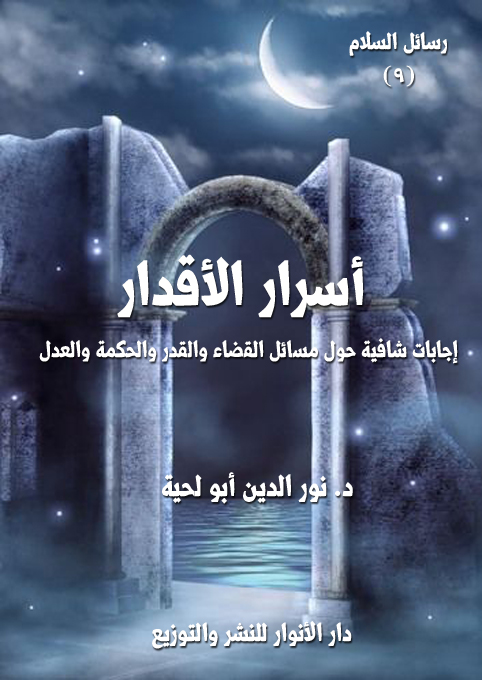

الكتاب: أسرار الأقدار
المؤلف: أ.د. نور الدين أبو لحية
الناشر: دار الأنوار للنشر والتوزيع
الطبعة: الثانية، 1437 هـ
عدد الصفحات: 601
ISBN: 978-3-330-84517-6
لمطالعة الكتاب من تطبيق مؤلفاتي المجاني وهو أحسن وأيسر: هنا

التعريف بالكتاب
خلاصة الحقائق التي تبحث فيها هذه الرسالة هي أن نظام القدر الذي هو برنامج الكون ونظامه يتأسس على التعرف على أربعة أسرار كبرى، كل سر منها يشكل حقيقة عظيمة من حقائقه، ويقع الخطأ بقدر الاقتصار على بعض أسراره والغفلة عن بعضها.
وهذه الأسرار الأربعة، هي: التوحيد والعدل والحكمة والرحمة.
فكشف سر التوحيد يبصرنا بالمهندس الأول للكون، والمنظم الأوحد لشؤونه، والمدبر الخبير بتفاصيله، فلا نرى في مرآة هذا السر غير الله، فنغيب بالله عن الكون الذي يسيره.
وكشف سر العدل يعيدنا إلى ذواتنا لنبصر إرادتنا، وهي تتحرك في أطر كثيرة واسعة من الاختيارات، لنتحمل حينها مسؤوليتنا على تصرفاتنا.
وكشف سر الحكمة يجعل من الكون مرآة لتجليات أسماء الله الحسنى وصفاته العليا.
وكشف سر الرحمة يعيدنا إلى بدء الخلق وغاية الخلق، فالله خلق الخلق ليرحمهم، وأكرمهم بالوجود ليكرمهم بعدها بكل ما يقتضيه وجودهم من أنواع الإكرام.
وكشف كل سر من هذه الأسرار يشعرنا بالسلام الشامل مع الله، ومع الكون، ومع ذواتنا، لأن أول خطيئة هي الصراع، الصراع مع الله، ومع تخطيط الله، ومع مراد الله..
أسرار الأقدار (11 )
حقائق القضاء والقدر من أعظم حقائق الوجود وأهمها وأولاها بالمعرفة بعد معرفة الله، لأنها معرفة نظام علاقة الله بخلقه، والقوانين التي تحكم ذلك، فكل شيء ـ كما أخبر الله تعالى ـ مخلوق بقدر، قال تعالى: {إِنَّا كُلَّ شَيْءٍ خَلَقْنَاهُ بِقَدَرٍ} (القمر:49)
ولكن.. لماذا ـ مع هذا ـ تعتبر معانيها أسرارا، وحقائقها ألغازا، ومكشوفاتها غوامض؟
وهل السر إلا ذلك الذي يخزن في الصدر، فلا يكشف، ويخبأ في سراديب الوجدان، فلا يرى، ومن يكشفه يتعرض للمقت، فقلوب الأحرار قبور الأسرار!؟
ثم كيف لنا نحن البسطاء الذين نشكل صفرا عريضا في بنيان هذا الكون أن نكشف أو نكتشف أسرار الأقدار، وقد تهنا في التعرف على بعض أسرار هذا الكون المادي البسيط الذي نعيشه أو نعيش فيه، وأسرار الأقدار هي أسرار الكون جميعا، بل هي أسرار الأزل والأبد؟
وتتفرع عن هذه التساؤلات تساؤلات أخرى كثيرة تمتلئ بها جوانح قلوبنا ومدرجات جامعاتنا وأزقة شوارعنا، يسألها العامة والدهماء، كما يسألها الخاصة والكبراء، وتطرح كل إجابة سؤالا، ويلقي كل كشف سرابيل جديدة من الغموض.
فهل نستطيع الإجابة على هذه التساؤلات؟
وهل يمكن أن نصل في هذا الباب ـ الذي أراد البعض إغلاقه درءا للفتنة ـ إلى مرحلة اللاغموض، أو المرحلة التي يستسلم فيها الوجدان لله، محبة له ورضا بالقوانين التي تحكمه، وقناعة بأن الله أحكم الحاكمين، وأعدل القاضين، وخير المهندسين؟
في هذا البحث نحاول الوصول إلى هذه النتيجة العظيمة بثقة عظيمة، لأننا نحمل سراجا تنكشف به الحقائق، وتحل به الألغاز، وتفك به الطلاسم، وتقرأ به جميع الأبجديات الغريبة التي سطرت بها شيفرة الكون.
أسرار الأقدار (11 )
وهذا السراج ـ الذي هو نور على نور ـ هو كلام الله تعالى، فهو وحده الهادي في مثل هذه الظلمات، فالله مخطط الكون وواضع برنامجه هو المتكلم بالقرآن، وهو المعرف بحقائق الكون ونواميسه.
وسبب الخلط العظيم الذي وقع في هذا الباب الخطير، فوقع فيه الناس مشردين محجوبين غافلين، أو أصبحوا فرقا وطوائف تتنابز بالألقاب، أو يرمي بعضهم بعضا بالكفر والفسوق والبدعة والضلال هو إعمال بعض النصوص وهجر بعضها، أو تحميل النصوص ما لا تحتمل، أو تقديم العقل المدنس (1) على النص المقدس، أو تقديم فهم امرئ من الناس على صريح كلام الله، أو على ما يقتضيه العقل من معان، أو التعصب للمذاهب والآراء على حساب الحقائق والمعارف..
وأسباب أخرى كثيرة لا يهمنا معرفتها، ولا يضرنا الجهل بها..
ونحن ـ بفضل الله ـ في هذه الرسالة لن نغفل بالرد على هذه الطوائف على ما أردناه من كشف حقائق القدر لعقولنا وقلوبنا وأرواحنا، ولن نغفل بالجدل الذي انحرفت به المعارف عن مساراتها.. وإنما ستكون وجهتنا وقبلتنا واحدة، ولا يهمنا بعد ذلك من توجه معنا إليها، أو خالفنا فيها.
بل نحسب أنا قد لا نخالف أحدا فيما ذهبنا إليه، فكل قد رام الحق، وكل وصل إلى بعض الحق..
***
__________
(1) الدنس هنا ليس وصفا العقل الأصلي، وإنما هو وصف للأهواء التي دنسته، أما الأصل في العقل فهو القداسة، لأن الله هو واضع برامج العقول.
أسرار الأقدار (12 )
وخلاصة الحقائق التي وصلنا إليها في هذه المسألة الخطيرة هي ـ ببساطة ـ أن نظام القدر الذي هو برنامج الكون ونظامه يتأسس على التعرف على أربعة أسرار كبرى، كل سر منها يشكل حقيقة عظيمة من حقائقه، ويقع الخطأ بقدر الاقتصار على بعض أسراره والغفلة عن بعضها.
وما وقع في التاريخ الإسلامي من تنازع المذاهب والطوائف (1) وقع بسبب نصرة بعض أسراره على بعض، فكل ينصر حقا على حساب حق، ويرد بحق على حق، ويقف في زمرة حق ضد زمرة حق.
ولو تخلوا عن التعصب، واهتدوا بهدي القرآن الكريم وأعملوا النصوص جميعا لرأوا أن الحق في النصوص جميعا، بل في الظواهر البسيطة للنصوص، والتي لا تحتاج إلى تعسف تأويل أو تكلف شرح.
وهذه الأسرار الأربعة، والتي أسسنا عليها هذه الرسالة، هي: التوحيد والعدل والحكمة والرحمة.
فكشف سر التوحيد يبصرنا بالمهندس الأول للكون، والمنظم الأوحد لشؤونه، والمدبر الخبير بتفاصيله، فلا نرى في مرآة هذا السر غير الله، فنغيب بالله عن الكون الذي يسيره، وقد نرى الأمر حينها جبرا، لولا أن يمدنا الله بحقائق صفاته، ومقتضيات أسمائه لتعود لنا عقولنا، فنستكنه سائر الأسرار، ونعيش سائر الحقائق.
وكشف سر العدل يعيدنا إلى ذواتنا لنبصر إرادتنا، وهي تتحرك في أطر كثيرة واسعة من الاختيارات، لنتحمل حينها مسؤوليتنا على تصرفاتنا، وقد تصيبنا الغفلة عند هذا السر عن السر الأول، فتنصور أن لنا كونا قائما بذاته يضاهي الألوهية، لولا أن يردنا السر الأول إلى حقيقتنا، فينسجم التوحيد مع العدل، ونترتب في بنيان هذا الكون بحسب الترتيب الذي وضع لنا.
__________
(1) مسألة القضاء والقدر من أكبر المسائل التي وقع فيها الخلاف في الأمة، ولا يزال الخلاف فيها ساريا إلى اليوم.
أسرار الأقدار (13 )
وكشف سر الحكمة يجعل من الكون مرآة لتجليات أسماء الله الحسنى وصفاته العليا، فنرى من خلال حركات الكون صفات الله، أو تجليات أسماء الله، فنعيش مع الله، وتصبح أقدار الله حينها رسائل جميلة يهديها الله لنا كل حين لنتعرف عليه، لا جبالا قاسية نصطدم بها كل حين، أو نظل نسبها كل حين.
وكشف سر الرحمة يعيدنا إلى بدء الخلق وغاية الخلق، فالله خلق الخلق ليرحمهم، وأكرمهم بالوجود ليكرمهم بعدها بكل ما يقتضيه وجودهم من أنواع الإكرام، وقد يمرون بالفتن التي تختبر جواهرهم، أو تهيئ جواهرهرهم لرحمة الله، وهذا السر يرينا تجليات الرحمة الإلهية في تلك الفتن كما يرينا تجلياتها في الرحمة المحضة.
وكشف كل سر من هذه الأسرار يشعرنا بالسلام، السلام الشامل مع الله، ومع الكون، ومع نظام الكون، ومع ذواتنا، لأن أول خطيئة من خطايا سوء الفهم للأقدار هي الصراع، الصراع مع الله، ومع تخطيط الله، ومع مراد الله.
***
بعد هذا، قد نرى من يعتبر هذا الأمر لغوا، أو ترهات، أو جدلا فارغا، ونحن ـ لحبنا السلام وبغضنا للصراع والجدال ـ نوافقهم في كثير من ذلك، لأن اسم القدر أصبح عنوانا للشغب والجدال، فلا ترى كتابا يبحث في هذه المسألة إلا وترى فيه من الجدل والتشنيع على المخالفين ما يملأ نفسك مرارة، فلا تخرج منه بحلاوة الإيمان، وإنما تخرج منه ببغض القدرية والجبرية وغيرهم ممن تكلم في القدر أو حاول أن يكشف أسراره.
ولكنا مع ذلك لا نوافقهم على عدم الخوض في هذه المسألة، فهي مسألة من مسائل الإيمان، بل ركن من أركانه، بل هي من مسائل الوجود التي يقتضي العقل البحث فيها، ومن العبث عدم تلبية متطلبات العقل، لأن وساوسه ستظل تلح على الإنسان شاء أم أبى.
أسرار الأقدار (14 )
ثم لماذا ننظر إلى هذه المسألة بهذه السوداوية، مع أن أريج الروائح الطيبة لها ـ كما يصورها القرآن الكريم ـ تجعل الإنسان مسوقا من حيث لا يشعر إلى التلذذ بروائحها العطرة!؟
وفي الأخير..
قد يعاتبنا البعض على التعبير عن حقائق القدر بكونها (أسرارا)، فهل في الدين أسرار؟
وهذا التعبير في الحقيقة لم نبتدعه ابتداعا، وإنما هو تعبير سلفنا الأول من العلماء، بل قد كان هذا التعبير ملاصقا للقدر من القرون الأولى، وسبب ذلك ليس ما نفهمه من معنى السر الذي لا يجوز كشفه، وإنما هو من معنى السر الذي يحرص على كشفه، فبعض الناس لا يلقي باله إلا إذا عرف أن الأمر سر، فاستجلاء الأسرار طبع لا ينفك عنه طبع الإنسان.
ثم إن القدر سر من نواح أخرى كثيرة..
فهو لغموضه سر، لا يفهمه ـ بدقائقه ـ إلا الخاصة من الناس، فهو ـ كسائر النظريات التي تفسر الكون جميعا ـ يحتاح إلى عقل واع بصير.
وهو لارتباطه بالنواحي الوجدانية سر لا يفهمه إلا من ذاق رحيق الإيمان من رياض الحقائق الأزلية، فالقدر أعظم تجليات الإيمان، كما أن الحقائق الكبرى للوجود من أعظم تجليات العلوم.
وهو ـ لتشعب نواحيه ـ سر لا يفهمه إلا من أوتي بصيرة توفق بين ما يراه الناس متعارضات يستحيل الجمع بينها، فيوفق بين البرودة والحرارة، ويحول من الألوان المشوشة عند بعض العيون سجادة جميلة تمتلئ بها الأبصار، وتشرق بها البصائر.
وهو سر من نواح أخرى كثيرة سنكتشفها في هذه الرسالة التي نستغفر الله من الزلل فيما أودعناه فيها من آراء، ونحمده على ما هدانا فيها من صواب، ونحن شاكرون لكل باحث عن حق هدانا إلى حق، أو صدنا عن باطل.
أسرار الأقدار (15 )
أول سر من أسرار القدر وأكمله وألذه، وما تعلقت به قلوب العارفين، وهامت فيه أرواح المشتاقين هو سر التوحيد.
وهو سر باعتباره حقيقة لا يفهمها إلا من تخلص من كثافة الطبع وأدران التشبيه، فميز بين الرب والمربوب، والعبد والخالق.
وهو سر ـ كذلك ـ باعتبار تأثيره الوجداني الرقيق في روح المؤمن به، فهو يجد له من اللذة ما لا يستطيع التعبير عنه.
وهو سر في الأخير، لأن إلقاء مفاهيمه على غلاظ الطباع ومن رانت على قلوبهم الغفلة قد يحجبهم عن رؤية سائر أسرار القدر، فينحجبوا بتوحيد الله عن حكمة الله وعدله ورحمته.
ولهذا، فإن رسول الله صلى الله عليه وآله وسلم اعتبر الإيمان بالقدر آخر ركن من أركان الإيمان، وهو في الحقيقة نتيجة حتمية للإيمان بالله، فيستحيل على من عرف كمالات الله المبثوثة في كتابه الصامت والناطق أن يغفل قلبه عن هذه الحقيقة التي ينطق بها كل شيء.
والمتأمل في حياة رسول الله صلى الله عليه وآله وسلم يجد حضور هذا السر في كل محل، بل يشعر باستشعار رسول الله صلى الله عليه وآله وسلم لهذا السر، وتذوقه له، ففي الحديث: قالت أم سلمة: يا رسول الله، لا تزال نفسك فى كل عام وجعة من تلك الشاة المسمومة التى أكلتها؟، قال: (ما أصابنى من شيء منها إلا وهو مكتوب على وآدم فى طينته) (1)
__________
(1) رواه ابن ماجه.
أسرار الأقدار (16 )
وكأن أم سلمة في هذا الحديث تدعوه صلى الله عليه وآله وسلم ـ من غير أن تقصد ـ إلى التأسف على أكله من تك الشاة، أو إلى أشياء أخرى يتنزه عنها صلى الله عليه وآله وسلم، فأخبرها صلى الله عليه وآله وسلم إلى أن تنظر من كوة سر التوحيد لتصرف عنها كل أسف أو حقد أو انتقام.
وكان صلى الله عليه وآله وسلم في حياته كلها ينظر بهذا المنظار.. في أعقد الأمور وفي أبسطها..
قال أنس بن مالك: (خدمت رسول الله صلى الله عليه وآله وسلم عشر سنين، لا والله ما سبني قط، ولا قال لي: أف قط، ولا قال لشيء فعلته لم فعلته؟ ولا لشيء لم أفعله لم لا فعلته) (1)، وفي رواية: (خدمت رسول الله صلى الله عليه وآله وسلم عشر سنين، فلا والله ما قال لي لشيء صنعته لم صنعته؟ ولا لشيء لم أصنعه ألا صنعته؟ ولا لامني، فإن لامني بعض أهله قال: دعه، وما قدر فهو كائن أو ما قضي فهو كائن)
ولهذا كان من اهم آثار هذا أن رسول الله صلى الله عليه وآله وسلم (ما خير بين أمرين إلا اختار أيسرهما ما لم يكن إثما، فإن كان إثما كان أبعد الناس منه، وما انتقم رسول الله صلى الله عليه وآله وسلم لنفسه في شيء قط إلا ان تنتهك حرمة الله فينتقم لله بها) (2)
ولكن هذه المعاني الذوقية الرفيعة والعلمية المتينة عرض لها من كبر عليه الجمع بين حقائق الإيمان بالقدر وأسراره، فصار إما منكرا للتوحيد معطلا لما دل عليه من النصوص ابتغاء تحقق العدالة والحكمة، أو مثبتا للتوحيد معطلا لعدل الله وحكمته ورحمته.
بناء على هذا، وبناء على اعتبار القدر نظام التوحيد، والنتيجة الحتمية له، نحاول ـ بعيدا عن مصطلحات المتكلمين وجدل الفرق ـ تبصر الحقائق التي ينطوي عليها القدر من معاني التوحيد، والتي ورد النص عليها في القرآن الكريم والسنة المطهرة.
وهي أربع حقائق كبرى، كل واحدة منها تشكل مرتبة من مراتب تقديرات الله.
__________
(1) رواه عبد الرزاق في المصنف.
(2) رواه مالك والبخاري ومسلم وأبو داود والنسائي.
أسرار الأقدار (17 )
وهذه المراتب الأربعة هي: علمه تعالى السابق بالأشياء قبل وجودها،، ثم مشيئته المتناولة لكل موجود، ثم كتابة ذلك فى الكتب المختلفة، ثم خلقه للموجودات وفق علمه ومشيئته وكتابته.
وسنخص كل مرتبة من هذه المراتب بمبحث خاص.
أسرار الأقدار (18 )
أول معرفة بالله تقود المؤمن إلى سر التوحيد في القدر هو التعرف على الله العليم اللطيف الخبير الشهيد (1).
ثم التمييز بين حقائق هذه الأسماء بالنسبة لله تعالى، وبالنسبة لخلقه، فالله لا يشبه خلقه بأي حال من الأحوال: {لَيْسَ كَمِثْلِهِ شَيْءٌ وَهُوَ السَّمِيعُ الْبَصِيرُ} (الشورى: 11)
لأن كل الشبه التي يزرعها الشيطان في قلب الإنسان، فينكر القدر، أو ينكر الاختيار منشؤها تشبيه علم الله بعلم الخلق، وقياس معلومات الله بمعلومات الخلق.
والتأمل في القرآن الكريم وحده كاف للدلالة على هذا النوع من المعرفة، فالله تعالى يرد كل الأشياء إلى علمه، ويفسرها بعلمه، ولذلك لا تخلو أكثر الآيات من الإشارة إلى علمه وما يرتبط به، وقد قال تعالى عن القرآن الكريم: {لَكِنِ اللَّهُ يَشْهَدُ بِمَا أَنْزَلَ إِلَيْكَ أَنْزَلَهُ بِعِلْمِهِ وَالْمَلائِكَةُ يَشْهَدُونَ وَكَفَى بِاللَّهِ شَهِيداً} (النساء:166)، وقال تعالى: {قُلْ أَنْزَلَهُ الَّذِي يَعْلَمُ السِّرَّ فِي السَّمَاوَاتِ وَالْأَرْضِ إِنَّهُ كَانَ غَفُوراً رَحِيماً} (الفرقان:6)
وعلم الله ـ كما يتجلى في القرآن الكريم ـ علم شامل تام محيط، فهو تعالى يعلم ما بدا وما خفى، أحاط علما بجميع الأشياء من الكليات والجزيئات، علم في الأزل جميع ما هو خالق، وعلم جميع أحوال خلقه وأرزاقهم وآجالهم وأعمالهم وشقاوتهم وسعادتهم ومن هو منهم من أهل الجنة ومن هو منهم من أهل النار، وعلم عدد أنفاسهم ولحظاتهم وجميع حركاتهم وسكناتهم أين تقع ومتى تقع وكيف تقع.
__________
(1) هذه الأسماء كلها تدل على العلم بمراتبه المختلفة، كما سنرى.
أسرار الأقدار (19 )
كل ذلك بعلمه وبمرأى منه ومسمع لا تخفى عليه منهم خافية سواء في علمه الغيب والشهادة والسر والجهر والجليل والحقير، لا يعزب عن علمه مثقال ذرة في السموات ولا في الأرض ولا في الدنيا ولا في الآخرة.
وهذه المعارف الإيمانية من اليقينيات التي يؤسس عليها المؤمن فهمه للقدر الإلهي، ويبني عليها تذوقه له.. ولكن الشبهة التي تعرض لمن لم يفقه معنى العلم الإلهي هو عدم تمييزه بين علم البشر وعلم خالق البشر، فوقوعه في براثن التشبيه هو الذي يوقعه في مستنقعات نفي القدر أو القول بالجبر.
ويمكن ـ من خلال القرآن الكريم ـ استنباط ثلاث نواح يتميز بها علم الله عن علم الخلق، وبإدراكها والتعمق في فهمها تزول كل الشبه المرتبطة بهذا الجانب من مفهوم القدر، وهذه النواحي هي: السعة، والخبرة، والغنى.
أما السعة فننفي من خلالها ما تصوره لنا أوهامنا من تشبيه علم الله اللامحدود بعلمنا المحدود، وبناء على ذلك تنتفي غرابة علم الله بالتفاصيل والجزئيات ما دق منها وما جل.
وأما الخبرة، فننفي من خلالها ما تصوره الأوهام من استغراب علم الله بالأشياء قبل حصولها.
وأما الغنى فنرى فيه مدى القصور الذي تضعنا فيه أوهامنا حين تصور لنا حاجة الله الغني العليم إلى حصول الأشياء ليحصل له العلم بها.
وإدراكنا لهذه الحقائق وتسليمنا لها لا يجعلنا متوافقين فقط مع ما تنص عليه النصوص المقدسة، ولكنه يجعلنا ـ أيضا ـ متوافقين مع ما تقتضيه عقولنا في أرقى درجات تقدسها.
ذلك أن العقل المتخلى عن زهوه وخيلائه وكبره يدرك أن جميع معارفه إذا ما قيست بالمجاهيل، فإنها تؤول إلى الصفر.. وهو ما عبر عنه في النصوص بأنه بمنزلة القطرة من البحر.
أسرار الأقدار (20 )
الله تعالى هو المحيط بكل شيء علما، دقيقه وجليله، وأوله وآخره، وعاقبته وفاتحته، لا نهاية لمعلوماته ولا حصر لها، قال تعالى على لسان نبيه شعيب عليه السلام: {وَسِعَ رَبُّنَا كُلَّ شَيْءٍ عِلْماً} (لأعراف: 89)
وهذا كسائر صفات الله تعالى، فهي كلها من السعة ما يجعلها محيطة بكل شيء، مهيمنة عليه، لا يغيب عنها شيء، تامة كاملة، ولذلك كان من أسماء الله تعالى التي نص عليها في القرآن الكريم اسم الله (الواسع)، وقد ورد في ثمانية مواضع في القرآن الكريم.
وهو اسم نرى اقترانه الدائم في القرآن الكريم بالعلم ليدل على أن سعة علم الله مزدوجة مع سعة فضله وتصريفه وقيوميته، قال تعالى: {وَلِلَّهِ الْمَشْرِقُ وَالْمَغْرِبُ فَأَيْنَمَا تُوَلُّوا فَثَمَّ وَجْهُ اللَّهِ إِنَّ اللَّهَ وَاسِعٌ عَلِيمٌ} (البقرة:115)
وقال عن هبة الملك: {وَاللَّهُ يُؤْتِي مُلْكَهُ مَنْ يَشَاءُ وَاللَّهُ وَاسِعٌ عَلِيمٌ} (البقرة: 247)
وقال عن مضاعفة الأجور: {مَثَلُ الَّذِينَ يُنْفِقُونَ أَمْوَالَهُمْ فِي سَبِيلِ اللَّهِ كَمَثَلِ حَبَّةٍ أَنْبَتَتْ سَبْعَ سَنَابِلَ فِي كُلِّ سُنْبُلَةٍ مِائَةُ حَبَّةٍ وَاللَّهُ يُضَاعِفُ لِمَنْ يَشَاءُ وَاللَّهُ وَاسِعٌ عَلِيمٌ} (البقرة:261)
وقال عن هبة المغفرة والفضل: {الشَّيْطَانُ يَعِدُكُمُ الْفَقْرَ وَيَأْمُرُكُمْ بِالْفَحْشَاءِ وَاللَّهُ يَعِدُكُمْ مَغْفِرَةً مِنْهُ وَفَضْلاً وَاللَّهُ وَاسِعٌ عَلِيمٌ} (البقرة:268)
وهكذا في كل آي القرآن الكريم، حتى في الآية التي ورد فيها اسم الواسع مضافا قرن بالعلم، قال تعالى: {الَّذِينَ يَجْتَنِبُونَ كَبَائِرَ الْأِثْمِ وَالْفَوَاحِشَ إِلَّا اللَّمَمَ إِنَّ رَبَّكَ وَاسِعُ الْمَغْفِرَةِ هُوَ أَعْلَمُ بِكُمْ إِذْ أَنْشَأَكُمْ مِنَ الْأَرْضِ وَإِذْ أَنْتُمْ أَجِنَّةٌ فِي بُطُونِ أُمَّهَاتِكُمْ فَلا تُزَكُّوا أَنْفُسَكُمْ هُوَ أَعْلَمُ بِمَنِ اتَّقَى} (لنجم:32)
فقد قرن تعالى في هذه الآية بين سعة مغفرته وبين علمه بخلقه.
فلذلك لا نهاية لمعرفة الله ولا حد لها، لأن (كل سعة وإن عظمت فتنتهي إلى طرف، والذي لا ينتهي إلى طرف، فهو أحق باسم السعة، والله سبحانه وتعالى هو الواسع المطلق، لأن كل واسع
أسرار الأقدار (21 )
بالإضافة إلى ما هو أوسع منه ضيق وكل سعة تنتهي إلى طرف، فالزيادة عليه متصورة وما لا نهاية له ولا طرف فلا يتصور عليه زيادة) (1)
وانطلاقا من هذا يبث القرآن الكريم في روع المؤمنين الأوصاف الكثيرة الدالة على هذه السعة التي لا حدود تنتهي إليها، ويجعل ذلك في كثير من الفواصل القرآنية لتكون برهانا على ما اشتملت عليه الآية من أمر أو تدبير، ومن ذلك قوله تعالى: {إِنَّ اللَّهَ بِكُلِّ شَيْءٍ عَلِيمٌ} (لأنفال: 75) الذي ورد في فاصلة عشرين موضعا في القرآن الكريم.
والقرآن الكريم يذكر بعض تفاصيل هذه المعلومات، كشأنه من ذكر الحقائق مجملة ومفصلة، لأن الاقتصار على التفصيل قد يفهم منه البليد الحصر والضيق والمحدودية، والاقتصار على المجمل لا يكون له من التأثير النفسي ما يكون للتفصيل.
ولذلك انتقل الخليل عليه السلام من بعض تفاصيل معلومات الله إلى مجامعها كما حكى ذلك عنه الله تعالى في قوله: {رَبَّنَا إِنَّكَ تَعْلَمُ مَا نُخْفِي وَمَا نُعْلِنُ وَمَا يَخْفَى عَلَى اللَّهِ مِنْ شَيْءٍ فِي الْأَرْضِ وَلا فِي السَّمَاءِ} (ابراهيم:38)
ولا بأس أن نستعرض على طريقة القرآن الكريم بعض التفاصيل التي قد تعمق مفهوم السعة المجمل، ونسوقها باعتبارين:
الاعتبار الأول: هو البرهنة على هذا بالنسبة لمن ينكرون علم الله بالتفاصيل أو يستبعدون ذلك.
والاعتبار الثاني: هو تعميق هذه الحقيقة في النفس المؤمنة، لأن حقائق الإيمان، كسائر الحق لا تغرس بذورها في النفس إلا بمثل هذه التفاصيل.
وانطلاقا من هذا، فإن القرآن الكريم يخبرنا، ويبث في روعنا أن الله تعالى يعلم جميع التفاصيل التي بنيت على أساسها السموات والأرض، فلا يخفى عليه شيء منها، قال تعالى: {إِنَّ
__________
(1) المقصد الأسنى: 119.
أسرار الأقدار (22 )
اللَّهَ لا يَخْفَى عَلَيْهِ شَيْءٌ فِي الْأَرْضِ وَلا فِي السَّمَاءِ} (آل عمران:5)، فكلمة شيء في الآية تشمل الصغير والكبير، والحقير والجليل.
وقال تعالى: {أَلَمْ تَعْلَمْ أَنَّ اللَّهَ يَعْلَمُ مَا فِي السَّمَاءِ وَالْأَرْضِ إِنَّ ذَلِكَ فِي كِتَابٍ إِنَّ ذَلِكَ عَلَى اللَّهِ يَسِيرٌ} (الحج:70)، و(ما) الموصولية تفيد العموم، فيدخل في معناها كل شيء بكل تفاصيله.
وقال تعالى: {قَالَ رَبِّي يَعْلَمُ الْقَوْلَ فِي السَّمَاءِ وَالْأَرْضِ وَهُوَ السَّمِيعُ الْعَلِيمُ} (الانبياء:4)، وقد وردت هذه الآية مطلقة كذلك لتفيد سعة علم الله بكل قول مهما كان نوعه.
والله تعالى يعلم الصغير والكبير، والكليات والجزئيات من السموات والأرض، ولذلك يستدل بهذا العلم على الساعة، قال تعالى: {وَقَالَ الَّذِينَ كَفَرُوا لا تَأْتِينَا السَّاعَةُ قُلْ بَلَى وَرَبِّي لَتَأْتِيَنَّكُمْ عَالِمِ الْغَيْبِ لا يَعْزُبُ عَنْهُ مِثْقَالُ ذَرَّةٍ فِي السَّمَاوَاتِ وَلا فِي الْأَرْضِ وَلا أَصْغَرُ مِنْ ذَلِكَ وَلا أَكْبَرُ إِلَّا فِي كِتَابٍ مُبِينٍ} (سبأ:3)
وهو يذكر بعض هذه التفاصيل الدقيقة ليمتلئ قلب المؤمن إحساسا بهذه السعة، قال تعالى: {وَعِنْدَهُ مَفَاتِحُ الْغَيْبِ لا يَعْلَمُهَا إِلَّا هُوَ وَيَعْلَمُ مَا فِي الْبَرِّ وَالْبَحْرِ وَمَا تَسْقُطُ مِنْ وَرَقَةٍ إِلَّا يَعْلَمُهَا وَلا حَبَّةٍ فِي ظُلُمَاتِ الْأَرْضِ وَلا رَطْبٍ وَلا يَابِسٍ إِلَّا فِي كِتَابٍ مُبِينٍ} (الأنعام:59)، وقال تعالى: {إِلَيْهِ يُرَدُّ عِلْمُ السَّاعَةِ وَمَا تَخْرُجُ مِنْ ثَمَرَاتٍ مِنْ أَكْمَامِهَا وَمَا تَحْمِلُ مِنْ أُنْثَى وَلا تَضَعُ إِلَّا بِعِلْمِهِ وَيَوْمَ يُنَادِيهِمْ أَيْنَ شُرَكَائِي قَالُوا آذَنَّاكَ مَا مِنَّا مِنْ شَهِيدٍ} (فصلت:47)، وقال تعالى: {يَعْلَمُ مَا يَلِجُ فِي الْأَرْضِ وَمَا يَخْرُجُ مِنْهَا وَمَا يَنْزِلُ مِنَ السَّمَاءِ وَمَا يَعْرُجُ فِيهَا وَهُوَ الرَّحِيمُ الْغَفُورُ} (سبأ:2)
ويخطئ البعض حين يفسر مفاتح الغيب بأمور محدودة، ويتصور أنها هي وحدها التي استأثر الله بعلمها، ويستدل على ذلك بفهم خاطئ لقوله صلى الله عليه وآله وسلم: (مفاتح الغيب خمس لا يعلمهن إلا
أسرار الأقدار (23 )
اللّه، ثم قرأ: {إِنَّ اللَّهَ عِنْدَهُ عِلْمُ السَّاعَةِ وَيُنَزِّلُ الْغَيْثَ وَيَعْلَمُ مَا فِي الْأَرْحَامِ وَمَا تَدْرِي نَفْسٌ مَاذَا تَكْسِبُ غَداً وَمَا تَدْرِي نَفْسٌ بِأَيِّ أَرْضٍ تَمُوتُ إِنَّ اللَّهَ عَلِيمٌ خَبِيرٌ} (لقمان:34) (1)
أو بحديث جبريل عليه السلام حين تبدي له صلى الله عليه وآله وسلم فسأل عن الإيمان الإسلام الإحسان، قال له النبي صلى الله عليه وآله وسلم فيما قال له: (خمس لا يعلمهن إلا اللّه)، ثم قرأ الآية السابقة.
وهذه الأحاديث لا تعني التحديد أو الحصر، لأن سعة علم الله لا تحصر، وإنما المراد منها ذكر بعض التفاصيل، وهو مما ورد مثله كثيرا في السن المطهرة، ولهذا قال العلماء: (العدد لا مفهوم له)
ويخطئ آخرون خطأ أشنع حين يعتبرون قوله تعالى في الآية: {وَيَعْلَمُ مَا فِي الْأَرْحَامِ} مقصورا حول جنس الجنين، أهو ذكر أم أنثى، ويتصور بعضهم ـ انطلاقا من ذلك ـ أن الآية تتناقض مع ما تعرف عليه العلم الحديث من هذا الباب.. مع أن هذا النص لا يدل على جنس الجنين فقط، بل يدل على أن اللّه تعالى يعلم عدد الأجنة الموجودة في الارحام ووضعيتها واستعداداتها وأذواقها ومواهبها وقدراتها وضعفها وجميع خصوصياتها في كل لحظة.. بل في كل ثانية.. بل في كل ما لا يمكن التعبير عنه من الظروف.
وهكذا عن الغيث، فقد أحاط علمه بكمية الغيث ونوعيته وعدد قطراته ووزنها ومحل سقوطها ولا أحد يمكنه أن يحيط علما بهذه الأمور وبأي وسيلة كانت.
وهكذا كل ما يعلمه الله من سقوط الورق.. أو الحب المختبئ في الظلمات.. أو الرطب أو اليابس.. أو كل ما لا يمكن حصره من أكوان الله.
***
وبما أن المخاطب الأول في القرآن الكريم هو الإنسان، فإن الله تعالى يحدثنا عن بعض هذه التفاصيل المتعلقة بعلمه بالإنسان، ويجعل من بيان علمه بتفاصيل السموات والأرض دليلا على
__________
(1) رواه البخاري.
أسرار الأقدار (24 )
علمه بالإنسان، قال تعالى: {قُلْ أَتُعَلِّمُونَ اللَّهَ بِدِينِكُمْ وَاللَّهُ يَعْلَمُ مَا فِي السَّمَاوَاتِ وَمَا فِي الْأَرْضِ وَاللَّهُ بِكُلِّ شَيْءٍ عَلِيمٌ} (الحجرات:16)
فالله تعالى: {يَعْلَمُ مَا تَحْمِلُ كُلُّ أُنْثَى وَمَا تَغِيضُ الْأَرْحَامُ وَمَا تَزْدَادُ وَكُلُّ شَيْءٍ عِنْدَهُ بِمِقْدَارٍ} (الرعد:8)
وفي أي حالة كان الإنسان، فإن الله يعلمه: {وَمَا تَكُونُ فِي شَأْنٍ وَمَا تَتْلُو مِنْهُ مِنْ قُرْآنٍ وَلا تَعْمَلُونَ مِنْ عَمَلٍ إِلَّا كُنَّا عَلَيْكُمْ شُهُوداً إِذْ تُفِيضُونَ فِيهِ وَمَا يَعْزُبُ عَنْ رَبِّكَ مِنْ مِثْقَالِ ذَرَّةٍ فِي الْأَرْضِ وَلا فِي السَّمَاءِ وَلا أَصْغَرَ مِنْ ذَلِكَ وَلا أَكْبَرَ إِلَّا فِي كِتَابٍ مُبِينٍ} (يونس:61)، وقال تعالى: {أَلَمْ تَرَ أَنَّ اللَّهَ يَعْلَمُ مَا فِي السَّمَاوَاتِ وَمَا فِي الْأَرْضِ مَا يَكُونُ مِنْ نَجْوَى ثَلاثَةٍ إِلَّا هُوَ رَابِعُهُمْ وَلا خَمْسَةٍ إِلَّا هُوَ سَادِسُهُمْ وَلا أَدْنَى مِنْ ذَلِكَ وَلا أَكْثَرَ إِلَّا هُوَ مَعَهُمْ أَيْنَ مَا كَانُوا ثُمَّ يُنَبِّئُهُمْ بِمَا عَمِلُوا يَوْمَ الْقِيَامَةِ إِنَّ اللَّهَ بِكُلِّ شَيْءٍ عَلِيمٌ} (المجادلة:7)
ولذلك، فإنه تعالى يعلم ما تكنه ضمائرنا من خير أو شر، قال تعالى: {وَاعْلَمُوا أَنَّ اللَّهَ يَعْلَمُ مَا فِي أَنْفُسِكُمْ فَاحْذَرُوهُ وَاعْلَمُوا أَنَّ اللَّهَ غَفُورٌ حَلِيمٌ} (البقرة:235)
ويعلم ما نفعله ظاهرا من كل ذلك: {وَمَا تَفْعَلُوا مِنْ خَيْرٍ يَعْلَمْهُ اللَّهُ} (البقرة: 197)
وهو يعلم طبائعنا وما نتحدث به لأنفسنا: {عَلِمَ اللَّهُ أَنَّكُمْ كُنْتُمْ تَخْتَانُونَ أَنْفُسَكُمْ} (البقرة: 187)
وهو يعلم ما بين أيدينا وما خلفنا: {يَعْلَمُ مَا بَيْنَ أَيْدِيهِمْ وَمَا خَلْفَهُمْ وَلا يُحِيطُونَ بِشَيْءٍ مِنْ عِلْمِهِ إِلَّا بِمَا شَاءَ} (البقرة: 255)
ويعلم تفاصيل أجسادنا وحياتنا وأعمارنا، قال تعالى: {وَاللَّهُ خَلَقَكُمْ مِنْ تُرَابٍ ثُمَّ مِنْ نُطْفَةٍ ثُمَّ جَعَلَكُمْ أَزْوَاجاً وَمَا تَحْمِلُ مِنْ أُنْثَى وَلا تَضَعُ إِلَّا بِعِلْمِهِ وَمَا يُعَمَّرُ مِنْ مُعَمَّرٍ وَلا يُنْقَصُ مِنْ عُمُرِهِ إِلَّا فِي كِتَابٍ إِنَّ ذَلِكَ عَلَى اللَّهِ يَسِيرٌ} (فاطر:11)
أسرار الأقدار (25 )
ويعلم أعمالنا، قال تعالى: {وَلَوْ نَشَاءُ لَأَرَيْنَاكَهُمْ فَلَعَرَفْتَهُمْ بِسِيمَاهُمْ وَلَتَعْرِفَنَّهُمْ فِي لَحْنِ الْقَوْلِ وَاللَّهُ يَعْلَمُ أَعْمَالَكُمْ} (محمد:30)
ويعلم من ضل منا ومن اهتدى، قال تعالى: {إِنَّ رَبَّكَ هُوَ أَعْلَمُ مَنْ يَضِلُّ عَنْ سَبِيلِهِ وَهُوَ أَعْلَمُ بِالْمُهْتَدِينَ} (الأنعام:117)
***
بعد هذا البيان القرآني الذي يبث في روع المؤمن سعة علم الله المحيط بكل شيء، والذي يعمر قلبه بلذة لا نهاية لها، لا يلتفت المؤمن إلى ذلك الجدل العقيم الذي أفرزته مقولة (إن العلم الإلهي لا يتعلق بالجزئيات) (1) أو إلى أولئك المحجوبين بعقال العقل الذين نفوا إحاطة علمه تعالى بكل شئ، رافضين شهادة الموجودات الصادقة على علمه المحيط بكل شئ.
لأن عقل المؤمن عقل مؤيد بوحي الله، فلذلك لا يقيس الواسع على الضيق، ولا المطلق على المحدود، ولا العليم على الجهول.
بل هو يدرك ما قاله الخضر عليه السلام لموسى عليه السلام عندما جاء عصفور، فوقع على حرف السفينة فنقر في البحر نقرة أو نقرتين، فقال له الخضر عليه السلام: (ما علمي وعلمك في علم اللّه إلا مثل ما نقص هذا العصفور من هذا البحر) (2)
__________
(1) من الردود التي رد بها المتكلمون على هذه المقولة:
1. أن الله تعالى فاعل لهذه الأجسام على سبيل الإحكام والإتقان، وكل فاعل على هذا الوجه فإنه لا بدّ وأن يكون عالماً بما فعله وهذه الدلالة بعينها ذكرها الله تعالى في قوله: {هُوَ الَّذِي خَلَقَ لَكُمْ مَا فِي الْأَرْضِ جَمِيعاً ثُمَّ اسْتَوَى إِلَى السَّمَاءِ فَسَوَّاهُنَّ سَبْعَ سَمَاوَاتٍ وَهُوَ بِكُلِّ شَيْءٍ عَلِيمٌ} (البقرة:29)، فقد ذكر الله تعالى خلق السموات والأرض، ثم فرع على ذلك كونه عالماً.
2. أن الخالق للشيء على سبيل التقدير والتحديد لا بدّ وأن يكون عالماً به وبتفاصيله لأن خالقه قد خصه بقدر دون قدر والتخصيص بقدر معين لا بدّ وأن يكون بإرادة، وإلا فقد حصل الرجحان من غير مرجح والإرادة مشروطة بالعلم، فثبت أن خالق الشيء لا بدّ وأن يكون عالماً به على سبيل التفصيل.
وقد رد الغزالي على هذه المقولة ردا مفصلا في كتابه (تهافت الفلاسفة)
(2) رواه البخاري.
أسرار الأقدار (26 )
وهو تشبيه تقريبي.. أما الحقيقة فأعظم من ذلك، فلا يمكن مقارنة علم الله بعلم عباده، فعلم العباد هبة من الله وفضل منه، فهو علم تبعي لا ذاتي، وظل لا حقيقة.
ولذلك استعمل القرآن الكريم هذه التشبيهات ليصور سعة علم الله، فقال تعالى: {قُلْ لَوْ كَانَ الْبَحْرُ مِدَاداً لِكَلِمَاتِ رَبِّي لَنَفِدَ الْبَحْرُ قَبْلَ أَنْ تَنْفَدَ كَلِمَاتُ رَبِّي وَلَوْ جِئْنَا بِمِثْلِهِ مَدَداً} (الكهف:109)، وقال تعالى: {وَلَوْ أَنَّمَا فِي الْأَرْضِ مِنْ شَجَرَةٍ أَقْلامٌ وَالْبَحْرُ يَمُدُّهُ مِنْ بَعْدِهِ سَبْعَةُ أَبْحُرٍ مَا نَفِدَتْ كَلِمَاتُ اللَّهِ إِنَّ اللَّهَ عَزِيزٌ حَكِيمٌ} (لقمان:27)
فهذه الآية تنص على أنه لو كانت تلك البحار ـ بجميع مياهها ـ مداداً لكلمات اللّه، والشجر كله أقلاما، لانكسرت الأقلام، وفني ماء البحر، وبقيت كلمات اللّه قائمة لا يفنيها شيء، لأن أحداً لا يستطيع أن يقدر قدره، ولا أن يثني عليه كما ينبغي، حتى يكون هو الذي يثني على نفسه.
***
أما السؤال الذي يجره الوهم بعد هذا، والذي منشؤه التشبيه، وحصاده الجهل والجحود، وهو: كيف يكون الله عالما بكل شيء؟.. أو كيف لا يعزب عن الله شيء؟
والجواب عن هذا لا يحوج المؤمن إلى أي تكلف، بل يكفيه أن يقرأ سورة الإخلاص ليعلم أن صفات الله تابعة لذات الله (1)، وذات الله لا تحد ولا تقيد، ولا يقال عنها كيف، ومثلها صفاته.
__________
(1) هناك خلاف بين المتكلمين في علاقة الصفات بالذات، وهو خلاف جدلي لا قيمة له، ولا ينتج عنه الحكم على طرف من الأطراف بالسنية أو البدعية، كما يبالغ في ذلك الكثير، لأن الذي يقول بأن الصفات عين الذات، لا ينفي الصفات في الحقيقة، وإنما يبالغ في إثبات اتصاف الله بها، فكيف يحكم على من يقول بهذا بالبدعية.
ولو رددنا الأمر إلى أصله، فليس في النصوص لفظ (الصفات).. بل ليس هناك إلا الأسماء، فالله تعالى قال: {وَلِلَّهِ الْأَسْمَاءُ الْحُسْنَى فَادْعُوهُ بِهَا} (لأعراف: 180)، ولم يقل: (ولله الصفات العليا).. ولو أن الأمة اكتفت بالأسماء لارتفع الخلاف بينها في هذا المجال.
أسرار الأقدار (27 )
وهذا الجواب يرضي العقل السليم ويغنيه، لأنه إذا قيل له: (إن فلانا الراعي يدرك خفايا النظريات العلمية ودقائقها، بل يستطيع أن يحول منها واقعا ملموسا) تجده يستغرب، ويسأل محتارا: (كيف يكون هذا؟)
لكن إن قيل له: (إن الدكتور الفلاني يعلم كل ذلك) لا يستغرب ولا ينكر ولا يسأل عن كيف ولا أخواتها.
فهو يدرك أن حقيقة الدكتور العلمية تختلف عن حقيقة الراعي.
وذلك نفس ما يقوله العقل السليم عن الله، فلا يستغرب صفاته تعالى ولا يتعجب منها إلا الجاهل بذات الله أو بقدر الله.
ولذلك قال تعالى في الإخبار عن قصة أصحاب الكهف: {أَمْ حَسِبْتَ أَنَّ أَصْحَابَ الْكَهْفِ وَالرَّقِيمِ كَانُوا مِنْ آيَاتِنَا عَجَباً} (الكهف:9)، أي ليس أمرهم عجيباً في قدرتنا وسلطاننا، فإن خلق السماوات والأرض وتسخير الشمس والقمر وغير ذلك من الآيات العظيمة الدالة على قدرة اللّه تعالى؛ وأنه على ما يشاء قادر، ولا يعجزه شيء أعجب من أخبار أصحاب الكهف.
فلذلك أمرنا بتسبيح الله عند رؤية آياته حتى ننزهه من أن نحصر قدرته أو صفاته في حدود معينة، كما قال تعالى عن العارفين: {الَّذِينَ يَذْكُرُونَ اللَّهَ قِيَاماً وَقُعُوداً وَعَلَى جُنُوبِهِمْ وَيَتَفَكَّرُونَ فِي خَلْقِ السَّمَاوَاتِ وَالْأَرْضِ رَبَّنَا مَا خَلَقْتَ هَذَا بَاطِلاً سُبْحَانَكَ فَقِنَا عَذَابَ النَّارِ} (آل عمران:191)
فالتسبيح هو تنبيه العقل إلى عدم حد الله بأي حدود، فالله هو الواسع المحيط بكل شيء.
***
بعد هذا نتساءل عن علاقة هذا بالقدر.. أو ما الذي يؤسسه هذا النوع من الإيمان في النفس والعقل والقلب من حقائق القدر؟
أسرار الأقدار (28 )
والجواب عن ذلك هو أنه من الشبه الكبيرة التي قد تسيطر على النفس ـ وربما لا يستطيع اللسان أن يعبر عنها حياء أو أدبا أو خوفا من الكفر والضلال والبدعة ـ هو تصور المحدودية في علم الله، باعتبار أن المعلومات التي ينتظمها هذا الكون من السعة بحيث لا يتصور لها نهاية.. والعقل الإنساني يتيه لا محالة عند الوصول إلى هذه الغاية.. ولذلك يحكم عليها ـ شعر أو لم يشعر ـ بالاستحالة.
وانطلاقا من دنس هذا التشبيه يقع في أنواع أخرى من الدنس تحول بينه وبين فهم القدر الإلهي وتذوقه.
ولهذا كان هذا النوع من العلم هو اللبنة الأولى التي يتأسس عليها الإيمان بالقدر.
الفرق الثاني بين علم الله وعلم خلقه، والذي نحتاجه لإدراك سر التوحيد في القدر، هو أن علم الله محيط بالمعلوم، يعلم ظاهره وباطنه، ومكشوفه وغامضه، وسره وعلانيته، فينكشف له انكشافا تاما بخلاف علم الخلق المحدود، والذي يعلم من الأشياء ما تقتضيه مصلحته منها، فلا يعدوا أن يعرف الأعراض والظلال دون الحقائق والجواهر، ولذلك عبر القرآن الكريم عن العلوم التي وهبها لآدم عليه السلام بكونها أسماء، قال تعالى: {وَعَلَّمَ آدَمَ الْأَسْمَاءَ كُلَّهَا ثُمَّ عَرَضَهُمْ عَلَى الْمَلائِكَةِ فَقَالَ أَنْبِئُونِي بِأَسْمَاءِ هَؤُلاءِ إِنْ كُنْتُمْ صَادِقِينَ} (البقرة:31)
فكل ما يعرفه البشر الآن من معارف، والتي قد يتصورون أنهم قد بلغوا بها الذروة لا تعدو أن تكون معرفة لبعض الخصائص والصفات، وهي أقل من أن تدرك حقائق الأشياء على ما هي عليه.
أما علم الله فهو علم شامل محيط بالمعلوم من كل نواحيه، ولذلك كان من أسماء الله تعالى الخبير والشهيد واللطيف:
أسرار الأقدار (29 )
أما الخبير، فهو الذي لا تعزب عنه الأخبار الباطنة فلا يجري في الملك والملكوت شيء ولا تتحرك ذرة ولا تسكن ولا تضطرب نفس ولا تطمئن إلا ويكون عنده خبرها (1).
أما الشهيد فهو العالم بما ظهر، فالشهادة تعني الحضور، كما قال تعالى: {فَمَنْ شَهِدَ مِنْكُمُ الشَّهْرَ فَلْيَصُمْهُ} (البقرة: 185)، ولهذا أخبر تعالى أنه شهيد على كل شيء، فقال على: {إِنَّ اللَّهَ عَلَى كُلِّ شَيْءٍ شَهِيدٌ} (الحج: 17)، وقال: {يَوْمَ يَبْعَثُهُمُ اللَّهُ جَمِيعاً فَيُنَبِّئُهُمْ بِمَا عَمِلُوا أَحْصَاهُ اللَّهُ وَنَسُوهُ وَاللَّهُ عَلَى كُلِّ شَيْءٍ شَهِيدٌ} (المجادلة:6)، وقال: {الَّذِي لَهُ مُلْكُ السَّمَاوَاتِ وَالْأَرْضِ وَاللَّهُ عَلَى كُلِّ شَيْءٍ شَهِيدٌ} (البروج:9)
ومثل هذا الاسم اسمه تعلى (الرقيب) فهو يدل على حضور الله التام لكل شيء، قال تعالى: {يَا أَيُّهَا النَّاسُ اتَّقُوا رَبَّكُمُ الَّذِي خَلَقَكُمْ مِنْ نَفْسٍ وَاحِدَةٍ وَخَلَقَ مِنْهَا زَوْجَهَا وَبَثَّ مِنْهُمَا رِجَالاً كَثِيراً وَنِسَاءً وَاتَّقُوا اللَّهَ الَّذِي تَسَاءَلُونَ بِهِ وَالْأَرْحَامَ إِنَّ اللَّهَ كَانَ عَلَيْكُمْ رَقِيباً} (النساء:1)، فقد جعل الله تعالى في هذه الآية أمره بالتقوى مستندا إلى رقابة الله التي تعني حضوره الشامل الكامل لكل شيء، وهو ما يفسره قوله تعالى: {هُوَ الَّذِي خَلَقَ السَّمَاوَاتِ وَالْأَرْضَ فِي سِتَّةِ أَيَّامٍ ثُمَّ اسْتَوَى عَلَى الْعَرْشِ يَعْلَمُ مَا يَلِجُ فِي الْأَرْضِ وَمَا يَخْرُجُ مِنْهَا وَمَا يَنْزِلُ مِنَ السَّمَاءِ وَمَا يَعْرُجُ فِيهَا وَهُوَ مَعَكُمْ أَيْنَ مَا كُنْتُمْ وَاللَّهُ بِمَا تَعْمَلُونَ بَصِيرٌ} (الحديد:4)، فقد ذكر الله تعالى في هذه الآية أصنافا كثيرة من معلوماته، ثم ربطها بحضوره التام.
وقد جمع الله تعالى بين الرقابة والعلم في قوله على لسان نبيه يوسف: {فَلَمَّا تَوَفَّيْتَنِي كُنْتَ أَنْتَ الرَّقِيبَ عَلَيْهِمْ وَأَنْتَ عَلَى كُلِّ شَيْءٍ شَهِيدٌ} (المائدة: 117)
أما اللطيف فهو الذي يعلم ما لطف من الأشياء، وما دق منها، وما بني عليها، وما تفرع منها.
__________
(1) الخبير بمعنى العليم ولكن العلم إذا أضيف إلى الخفايا الباطنة سمي خبرة ويسمى صاحبها خبيرا، انظر: المقصد الأسنى: 103.
أسرار الأقدار (30 )
وبهذه الأسماء الثلاثة يكون علم الله محيطا بالمعلوم من كل جوانبه.. فهو يعلم باطنه بكونه خبيرا.. ويعلم ظاهره بكونه شهيدا.. ويعلم أساسه وما دق منه بكونه لطيفا.
ولهذا، فإن القرآن الكريم يحدثنا ويملأ قلوبنا بمعاني هذه الأسماء، ويربينا على أساسها، ولذلك يكثر التنبيه إلى علم الله بالسر والجهر والخفي والمعلن والغيب والشهادة، ولكل ذلك تأثيره العلمي والذوقي لفهم سر التوحيد في القدر.
بل إن لذلك دوره في كشف غوامض القدر، والرد على الشبهات التي تفرزها الغفلة، وتبثها الشياطين.
ولتقريب الصورة نرى في واقعنا الاهتمام في كل مجال بما يقوله الخبراء، فيرجع إليهم في التحاليل السياسية والعسكرية والطبية وغيرها، حتى أن أقوالهم التي تحاول استشراف المستقبل بناء على الواقع تصبح هي الواقع الذي يؤثر في كل المجالات.
فلذلك يكفي أن يقول الخبراء الاقتصاديون باحتمال ارتفاع عملة معينة ليحول السوق من قبلة إلى قبلة.
ويكفي أن يوجه الخبراء السياسيون حادثة معينة توجيها خاصا ليتحول العالم إلى عالم آخر.
بل إنا في حياتنا العادية نرجع إلى الخبراء في كل المجالات، لأن علم الخبير مبني على الواقع لا على الخيال، ومؤيد بالخبرة والتجربة والمعايشة التي تحول من تنبؤاته علما محققا.
وانطلاقا من هذه الخبرة الهزيلة التي منحها الإنسان، والتي من خلالها استطاع أن يستشرف كثيرا من خبايا المستقبل، نتساءل عن التعجب من خبرة الله، وعن سؤال: كيف؟ عن خبرة الله.
فالله تعالى الذي خلق الإنسان، ويعلم خصائصه الظاهرة والباطنة، كيف لا يعلم مستقبل الإنسان، قال تعالى: {أَلا يَعْلَمُ مَنْ خَلَقَ وَهُوَ اللَّطِيفُ الْخَبِيرُ} (الملك:14)
أسرار الأقدار (31 )
وذلك، كما أن صانع الآلة ومخترعها هو خبير بإمكانيتها، وبما يحصل لها من عطب، وبما يؤول إليه أمرها، فيتعامل معها، وكأنها جزء منه، بخلاف من يتعامل معها تعامل المستهلك الذي لا يرى منها إلا جانبها المنفعي المحدود.
وللفرق بين علم الخبير وعلم غيره أمر الله تعالى طالب معرفة الله بالرجوع إلى الخبير، وهو العالم بالله العارف به المصاحب له، قال تعالى: {الَّذِي خَلَقَ السَّمَاوَاتِ وَالْأَرْضَ وَمَا بَيْنَهُمَا فِي سِتَّةِ أَيَّامٍ ثُمَّ اسْتَوَى عَلَى الْعَرْشِ الرَّحْمَنُ فَاسْأَلْ بِهِ خَبِيراً} (الفرقان:59)
ولذلك يخبرنا الله تعالى في معرض الحديث عن أحكامه عن خبرته بأعمال خلقه، لأن العالم بذوات الخلق أعلم بأعمالهم:
ففي معرض ذكر الله تعالى لجواز تزين النساء بعد انتهاء إحدادهنا، قال تعالى: {وَالَّذِينَ يُتَوَفَّوْنَ مِنْكُمْ وَيَذَرُونَ أَزْوَاجاً يَتَرَبَّصْنَ بِأَنْفُسِهِنَّ أَرْبَعَةَ أَشْهُرٍ وَعَشْراً فَإِذَا بَلَغْنَ أَجَلَهُنَّ فَلا جُنَاحَ عَلَيْكُمْ فِيمَا فَعَلْنَ فِي أَنْفُسِهِنَّ بِالْمَعْرُوفِ وَاللَّهُ بِمَا تَعْمَلُونَ خَبِيرٌ} (البقرة:234)
وهي تحمل عتابا مبطنا لمن ينكر عليهن، لأن في إنكاره تعديا على الله، فالله هو الخالق الخبير بخلقه، وهو أعلم بما في نفوسهم وبواطنهم، وله وحده الحق في الإنكار أو عدمه.
وفي معرض ذكره للصدقات قال تعالى: {إِنْ تُبْدُوا الصَّدَقَاتِ فَنِعِمَّا هِيَ وَإِنْ تُخْفُوهَا وَتُؤْتُوهَا الْفُقَرَاءَ فَهُوَ خَيْرٌ لَكُمْ وَيُكَفِّرُ عَنْكُمْ مِنْ سَيِّئَاتِكُمْ وَاللَّهُ بِمَا تَعْمَلُونَ خَبِيرٌ} (البقرة:271)، فالله تعالى عقب على هذا السلوك الذي هو إظهار الصدقات أو إخفائها بكونه خبيرا، وكأنه يخبر من أظهر الصدقات بأن الله خبير يعلم نيته في إخراجه لها علانية.. فالعلانية لا تدل بحد ذاتها على الإخلاص أو على الرياء، ولهذا فهي تحتاج إلى خبير يميز بينهما.
ومثل هذا يقال في قوله تعالى: {إِذْ تُصْعِدُونَ وَلا تَلْوُونَ عَلَى أَحَدٍ وَالرَّسُولُ يَدْعُوكُمْ فِي أُخْرَاكُمْ فَأَثَابَكُمْ غَمّاً بِغَمٍّ لِكَيْلا تَحْزَنُوا عَلَى مَا فَاتَكُمْ وَلا مَا أَصَابَكُمْ وَاللَّهُ خَبِيرٌ بِمَا تَعْمَلُونَ} (آل عمران:153)، وقوله تعالى: {وَلا يَحْسَبَنَّ الَّذِينَ يَبْخَلُونَ بِمَا آتَاهُمُ اللَّهُ مِنْ فَضْلِهِ هُوَ خَيْراً لَهُمْ بَلْ
أسرار الأقدار (32 )
هُوَ شَرٌّ لَهُمْ سَيُطَوَّقُونَ مَا بَخِلُوا بِهِ يَوْمَ الْقِيَامَةِ وَلِلَّهِ مِيرَاثُ السَّمَاوَاتِ وَالْأَرْضِ وَاللَّهُ بِمَا تَعْمَلُونَ خَبِيرٌ} (آل عمران:180) وغيرها من آيات القرآن الكريم.
ولهذه الفاصلة المترددة في هذه الآيات وغيرها تأثير سلوكي تربوي عظيم.. فهي تربي المؤمن على مراعاة خبرة الله ببواطن الأشياء.. وذلك ما يجعله يتقن العمل ظاهرا وباطنا، فلا تشغله حروفه عن مقاصده، ولا ظاهره عن باطنه.
وترد خبرة الله تعالى في القرآن الكريم مقرونة بلطفه وعلمه في مواضع كثيرة للتنبيه إلى أن هذه الخبرة مستندة إلى العلم الواسع من جهة، ولا يصدر منها إلا اللطف من جهة أخرى، فهي خبرة علمية عملية:
وقد جمع الله تعالى بينها جميعا في قوله: {أَلا يَعْلَمُ مَنْ خَلَقَ وَهُوَ اللَّطِيفُ الْخَبِيرُ} (الملك:14) والتي جاءت عقب قوله تعالى: {وَأَسِرُّوا قَوْلَكُمْ أَوِ اجْهَرُوا بِهِ إِنَّهُ عَلِيمٌ بِذَاتِ الصُّدُورِ} (الملك:13)
وكأنها بذلك تعلل سر علم الله بسر العباد وجهرهم وبذات صدورهم، فالله هو الخالق، وهو اللطيف الذي لطف في خلقهم بتلك الصورة، وهو الخبير بمصالحهم وأحوالهم وتصرفاتهم عند فعلها أو قبل فعلها.
وقال تعالى قارنا للطف بالخبرة في حكايته عن موعظة لقمان عليه السلام لابنه: {يَا بُنَيَّ إِنَّهَا إِنْ تَكُ مِثْقَالَ حَبَّةٍ مِنْ خَرْدَلٍ فَتَكُنْ فِي صَخْرَةٍ أَوْ فِي السَّمَاوَاتِ أَوْ فِي الْأَرْضِ يَأْتِ بِهَا اللَّهُ إِنَّ اللَّهَ لَطِيفٌ خَبِيرٌ} (لقمان:16)
فالله تعالى خبير بموضعها لطيف بوضعها الموضع المناسب لها.
وقال تعالى في تعليل إدراكه للأبصار، وعدم إدراكها له: {لا تُدْرِكُهُ الْأَبْصَارُ وَهُوَ يُدْرِكُ الْأَبْصَارَ وَهُوَ اللَّطِيفُ الْخَبِيرُ} (الأنعام:103)
أسرار الأقدار (33 )
فعدم إدراك العباد لله معلل بلطف الله وخبرته، فالله لطيف بعباده رفيق بهم خبر ضعفهم عن إدراكه فحرمهم منه في الدنيا لطفا ورفقا لا شحا وبخلا، فهو الكريم الجواد.
وقال تعالى عن لطفه المقترن بخبرته في النظام والإبداع الذي زين به السماء والأرض: {أَلَمْ تَرَ أَنَّ اللَّهَ أَنْزَلَ مِنَ السَّمَاءِ مَاءً فَتُصْبِحُ الْأَرْضُ مُخْضَرَّةً إِنَّ اللَّهَ لَطِيفٌ خَبِيرٌ} (الحج:63)
وقال تعالى قارنا بين العلم والخبرة: {إِنَّ اللَّهَ عِنْدَهُ عِلْمُ السَّاعَةِ وَيُنَزِّلُ الْغَيْثَ وَيَعْلَمُ مَا فِي الْأَرْحَامِ وَمَا تَدْرِي نَفْسٌ مَاذَا تَكْسِبُ غَداً وَمَا تَدْرِي نَفْسٌ بِأَيِّ أَرْضٍ تَمُوتُ إِنَّ اللَّهَ عَلِيمٌ خَبِيرٌ} (لقمان:34) فقد علل تعالى علمه بمستقبل الأشياء بعلمه بها وخبرته.
وقال تعالى مرجعا سر خلق البشر على هذه الصور المختلفة إلى علم الله وخبرته: {يَا أَيُّهَا النَّاسُ إِنَّا خَلَقْنَاكُمْ مِنْ ذَكَرٍ وَأُنْثَى وَجَعَلْنَاكُمْ شُعُوباً وَقَبَائِلَ لِتَعَارَفُوا إِنَّ أَكْرَمَكُمْ عِنْدَ اللَّهِ أَتْقَاكُمْ إِنَّ اللَّهَ عَلِيمٌ خَبِيرٌ} (الحجرات:13)
كما يرد في القرآن الكريم الاقتران بين خبرة الله وبصره ليدل على علم الله المطلق بالأشياء وبصره بها، قال تعالى: {وَكَمْ أَهْلَكْنَا مِنَ الْقُرُونِ مِنْ بَعْدِ نُوحٍ وَكَفَى بِرَبِّكَ بِذُنُوبِ عِبَادِهِ خَبِيراً بَصِيراً} (الاسراء:17)، وقال تعالى: {وَالَّذِي أَوْحَيْنَا إِلَيْكَ مِنَ الْكِتَابِ هُوَ الْحَقُّ مُصَدِّقاً لِمَا بَيْنَ يَدَيْهِ إِنَّ اللَّهَ بِعِبَادِهِ لَخَبِيرٌ بَصِيرٌ} (فاطر:31)
***
والقرآن الكريم ينقلنا من العلم المجمل إلى العلم المفصل، ومن العلم النظري إلى العلم العملي حين يخبرنا عن علم الله بكل ما نخفيه وما نبديه، قال تعالى: {وَإِنْ تَجْهَرْ بِالْقَوْلِ فَإِنَّهُ يَعْلَمُ السِّرَّ وَأَخْفَى} (طه:7)، وقال تعالى: {لا جَرَمَ أَنَّ اللَّهَ يَعْلَمُ مَا يُسِرُّونَ وَمَا يُعْلِنُونَ} (النحل: 23)، وقال تعالى: {إِنَّهُ يَعْلَمُ الْجَهْرَ مِنَ الْقَوْلِ وَيَعْلَمُ مَا تَكْتُمُونَ} (الانبياء:110)، وقال تعالى: {وَإِنَّ رَبَّكَ لَيَعْلَمُ مَا تُكِنُّ صُدُورُهُمْ وَمَا يُعْلِنُونَ} (النمل:74)، وقال تعالى: {إِنْ تُبْدُوا شَيْئاً أَوْ تُخْفُوهُ فَإِنَّ اللَّهَ كَانَ بِكُلِّ شَيْءٍ عَلِيماً} (الأحزاب:54)
أسرار الأقدار (34 )
وهو تعالى عليم بذات الصدور، قال تعالى: {يَعْلَمُ خَائِنَةَ الْأَعْيُنِ وَمَا تُخْفِي الصُّدُورُ} (غافر:19)، وقال تعالى: {وَأَسِرُّوا قَوْلَكُمْ أَوِ اجْهَرُوا بِهِ إِنَّهُ عَلِيمٌ بِذَاتِ الصُّدُورِ} (الملك:13)
فلذلك يعلم ما يكنه اليهود من أحقاد على المؤمنين، قال تعالى: {هَا أَنْتُمْ أُولاءِ تُحِبُّونَهُمْ وَلا يُحِبُّونَكُمْ وَتُؤْمِنُونَ بِالْكِتَابِ كُلِّهِ وَإِذَا لَقُوكُمْ قَالُوا آمَنَّا وَإِذَا خَلَوْا عَضُّوا عَلَيْكُمُ الْأَنَامِلَ مِنَ الْغَيْظِ قُلْ مُوتُوا بِغَيْظِكُمْ إِنَّ اللَّهَ عَلِيمٌ بِذَاتِ الصُّدُورِ} (آل عمران:119)
وهو عليم بما تكنه صدور المنافقين من الأحقاد، قال تعالى: {ثُمَّ أَنْزَلَ عَلَيْكُمْ مِنْ بَعْدِ الْغَمِّ أَمَنَةً نُعَاساً يَغْشَى طَائِفَةً مِنْكُمْ وَطَائِفَةٌ قَدْ أَهَمَّتْهُمْ أَنْفُسُهُمْ يَظُنُّونَ بِاللَّهِ غَيْرَ الْحَقِّ ظَنَّ الْجَاهِلِيَّةِ يَقُولُونَ هَلْ لَنَا مِنَ الْأَمْرِ مِنْ شَيْءٍ قُلْ إِنَّ الْأَمْرَ كُلَّهُ لِلَّهِ يُخْفُونَ فِي أَنْفُسِهِمْ مَا لا يُبْدُونَ لَكَ يَقُولُونَ لَوْ كَانَ لَنَا مِنَ الْأَمْرِ شَيْءٌ مَا قُتِلْنَا هَاهُنَا قُلْ لَوْ كُنْتُمْ فِي بُيُوتِكُمْ لَبَرَزَ الَّذِينَ كُتِبَ عَلَيْهِمُ الْقَتْلُ إِلَى مَضَاجِعِهِمْ وَلِيَبْتَلِيَ اللَّهُ مَا فِي صُدُورِكُمْ وَلِيُمَحِّصَ مَا فِي قُلُوبِكُمْ وَاللَّهُ عَلِيمٌ بِذَاتِ الصُّدُورِ} (آل عمران:154) أي هو عليم بما تنطوي عليه ضمائركم، وتكنه سرائركم من البغضاء والحسد والغل للمؤمنين.
وهكذا يرتاح المؤمن، وهو يرى أن الله مطلع على القلوب التي تحمل عليه الأضغان والأحقاد، فيكتفي بعلم الله عن أن يشغل نفسه بذلك.
***
وانطلاقا من هذه الأوصاف الدالة على خبرة الله بكل شيء، وهي التي يتأسس عليها سر التوحيد في القدر، يخبرنا القرآن الكريم عن علم الله بالمستقبل، وهو العلم الذي يجادل فيه المنكرون للقدر شعروا أو لم يشعروا.
فالله تعالى أخبرنا بما سيكون من الممكنات لو كان على غير الصورة التي كان عليها:
فأخبر عن مقولة الكفار الذين لم يرضهم أن يكون الرسول صلى الله عليه وآله وسلم بشرا مثلهم، قال تعالى حاكيا قولهم: {وَقَالُوا لَوْلا أُنْزِلَ عَلَيْهِ مَلَكٌ وَلَوْ أَنْزَلْنَا مَلَكاً لَقُضِيَ الْأَمْرُ ثُمَّ لا يُنْظَرُونَ}
أسرار الأقدار (35 )
(الأنعام:8)، ثم قال بعدها مبينا الحال لو كان الرسول ملكا: {وَلَوْ جَعَلْنَاهُ مَلَكاً لَجَعَلْنَاهُ رَجُلاً وَلَلَبَسْنَا عَلَيْهِمْ مَا يَلْبِسُونَ} (الأنعام:9)
وعلى عكس هذا أخبر القرآن الكريم عن مقولة الكفار المجادلين فيما لو كان الأمر على خلاف ما بعث لهم، فقال تعالى عن قولهم لو كان القرآن الكريم أعجميا: {وَلَوْ جَعَلْنَاهُ قُرْآناً أَعْجَمِيّاً لَقَالُوا لَوْلا فُصِّلَتْ آيَاتُهُ أَأَعْجَمِيٌّ وَعَرَبِيٌّ قُلْ هُوَ لِلَّذِينَ آمَنُوا هُدىً وَشِفَاءٌ وَالَّذِينَ لا يُؤْمِنُونَ فِي آذَانِهِمْ وَقْرٌ وَهُوَ عَلَيْهِمْ عَمىً أُولَئِكَ يُنَادَوْنَ مِنْ مَكَانٍ بَعِيدٍ} (فصلت:44)
وهكذا لو كان رسولهم أعجميا لاعتلوا بعلة عجمته: {وَلَوْ نَزَّلْنَاهُ عَلَى بَعْضِ الْأَعْجَمِينَ فَقَرَأَهُ عَلَيْهِمْ مَا كَانُوا بِهِ مُؤْمِنِينَ} (الشعراء:198 ـ 199)
وقال تعالى فيما لو نزل عليهم في كتاب فعاينوه ورأوا نزوله وباشروا ذلك: {وَلَوْ نَزَّلْنَا عَلَيْكَ كِتَاباً فِي قِرْطَاسٍ فَلَمَسُوهُ بِأَيْدِيهِمْ لَقَالَ الَّذِينَ كَفَرُوا إِنْ هَذَا إِلَّا سِحْرٌ مُبِينٌ} (الأنعام:7)
ومثل هذا أخبر عن قولهم في مكابرتهم للمحسوسات: {وَلَوْ فَتَحْنَا عَلَيْهِمْ بَاباً مِنَ السَّمَاءِ فَظَلُّوا فِيهِ يَعْرُجُونَ لَقَالُوا إِنَّمَا سُكِّرَتْ أَبْصَارُنَا بَلْ نَحْنُ قَوْمٌ مَسْحُورُونَ} (الحجر:14 ـ 15)
وهكذا قولهم في سائر آيات الله التي يزعمون أنها لو جاءت لآمنوا بها، قال تعالى: {وَأَقْسَمُوا بِاللَّهِ جَهْدَ أَيْمَانِهِمْ لَئِنْ جَاءَتْهُمْ آيَةٌ لَيُؤْمِنُنَّ بِهَا قُلْ إِنَّمَا الْآياتُ عِنْدَ اللَّهِ وَمَا يُشْعِرُكُمْ أَنَّهَا إِذَا جَاءَتْ لا يُؤْمِنُونَ} (الأنعام:109)
بل أخبر الله تعالى عن المستحيلات التي لم تقع ولن تقع، بل يمنع العقل وقوعها لو وقعت كيف يكون تأثير وقوعها:
فقال تعالى فيما لو كان الكون تحت سيطرة مجموعة آلهة كما يعتقد الوثنيون: {لَوْ كَانَ فِيهِمَا آلِهَةٌ إِلَّا اللَّهُ لَفَسَدَتَا فَسُبْحَانَ اللَّهِ رَبِّ الْعَرْشِ عَمَّا يَصِفُونَ} (الانبياء:22)
وقال فيما لو كانت الألوهية شركة بين الله وغيره: {مَا اتَّخَذَ اللَّهُ مِنْ وَلَدٍ وَمَا كَانَ مَعَهُ مِنْ إِلَهٍ إِذاً لَذَهَبَ كُلُّ إِلَهٍ بِمَا خَلَقَ وَلَعَلا بَعْضُهُمْ عَلَى بَعْضٍ سُبْحَانَ اللَّهِ عَمَّا يَصِفُونَ} (المؤمنون:91)
أسرار الأقدار (36 )
وقال تعالى رادا على المشركين في دعواهم التزلف إلى الله بآلهتهم: {قُلْ لَوْ كَانَ مَعَهُ آلِهَةٌ كَمَا يَقُولُونَ إِذاً لَابْتَغَوْا إِلَى ذِي الْعَرْشِ سَبِيلاً} (الاسراء:42)، أي لو كان الأمر كما تقولون وأن معه آلهة تعبد لتقرب إليه وتشفع لديه، لكان أولئك المعبودون يعبدونه ويتقربون إليه ويبتغون إليه الوسيلة والقربة، فاعبدوه أنتم وحده كما يعبده من تدعونه من دونه، ولا حاجة لكم إلى معبود يكون واسطة بينكم وبينه، فإنه لا يحب ذلك ولا يرضاه بل.
وهكذا يمتد علم الله وخبرته إلى كل الأمور ما كان منها في حيز الوجود، أو ما كان مخبأ في سراديب العدم، أوما لن يكون أبدا.
***
وانطلاقا من هذا نحب أن نستشرف بعقولنا الضعيفة السر في علم الله بأفعال الإنسان وأجزيته قبل صدور ذلك منه، وهو ما لم تتقبله بعض العقول الضعيفة فراحت تلحد في آيات الله.
فالله تعالى يرجع ذلك العلم إلى كونه الخالق الذي يعلم حال المخلوق، ولهذا يرد في القرآن الكريم الربط والاقتران بين العلم والخلق، كما قال تعالى: {أَلا يَعْلَمُ مَنْ خَلَقَ وَهُوَ اللَّطِيفُ الْخَبِيرُ} (الملك:14)
وقد قال قبلها: {وَأَسِرُّوا قَوْلَكُمْ أَوِ اجْهَرُوا بِهِ إِنَّهُ عَلِيمٌ بِذَاتِ الصُّدُورِ} (الملك:13)، فقد أرجع سر علمه بذات الصدور إلى كونه الخالق لها.
وهكذا في قوله تعالى: {وَلَقَدْ خَلَقْنَا الْأِنْسَانَ وَنَعْلَمُ مَا تُوَسْوِسُ بِهِ نَفْسُهُ وَنَحْنُ أَقْرَبُ إِلَيْهِ مِنْ حَبْلِ الْوَرِيدِ} (قّ:16)، فقد أرجعه علمه تعالى بالإنسان إلى كونه الخالق له، وهو أقرب إلي من حبل الوريد.
ولهذا يعلل تعالى مغفرته لذنوب العباد، وخاصة ما كان منها من اللمم بعلمه بنشأتهم، وما جبلوا عليه، قال تعالى: {الَّذِينَ يَجْتَنِبُونَ كَبَائِرَ الْأِثْمِ وَالْفَوَاحِشَ إِلَّا اللَّمَمَ إِنَّ رَبَّكَ وَاسِعُ
أسرار الأقدار (37 )
الْمَغْفِرَةِ هُوَ أَعْلَمُ بِكُمْ إِذْ أَنْشَأَكُمْ مِنَ الْأَرْضِ وَإِذْ أَنْتُمْ أَجِنَّةٌ فِي بُطُونِ أُمَّهَاتِكُمْ فَلا تُزَكُّوا أَنْفُسَكُمْ هُوَ أَعْلَمُ بِمَنِ اتَّقَى} (لنجم:32)
فاللمم المستثنى هو صغائر الذنوب ومحقرات الأعمال التي قد يغلب فيه الطبع، ولهذا قال ابن عباس: (ما رأيت شيئاً أشبه باللمم مما قال النبي صلى الله عليه وآله وسلم: (إن اللّه تعالى كتب على ابن آدم حظه من الزنا أدرك ذلك لا محالة، فزنا العين النظر، وزنا اللسان النطق، والنَّفْس تمنّى وتشتهي، والفرج يصدق ذلك أو يكذبه) (1)
فاعتبر صلى الله عليه وآله وسلم هذا الطبع الذي يغلب على الإنسان ولوكان صالحا من الجبلة التي جبل عليها، والتي يجتهد في توجيهها، ولكنها مع ذلك قد تغلبه، والله تعالى وعد بالمغفرة عليها إذا ما لم يستسلم الإنسان لها، فتوقعه في الكبائر.
ولهذا يرد في القرآن الكريم وفي السنة المطهرة الحديث عن جوانب خلق الإنسان لما لها من التأثير في سلوكه وطبعه، قال تعالى مفصلا نعمه في خلق الإنسان وخلق جميع احتياجاته: {خَلَقَكُمْ مِنْ نَفْسٍ وَاحِدَةٍ ثُمَّ جَعَلَ مِنْهَا زَوْجَهَا وَأَنْزَلَ لَكُمْ مِنَ الْأَنْعَامِ ثَمَانِيَةَ أَزْوَاجٍ يَخْلُقُكُمْ فِي بُطُونِ أُمَّهَاتِكُمْ خَلْقاً مِنْ بَعْدِ خَلْقٍ فِي ظُلُمَاتٍ ثَلاثٍ ذَلِكُمُ اللَّهُ رَبُّكُمْ لَهُ الْمُلْكُ لا إِلَهَ إِلَّا هُوَ فَأَنَّى تُصْرَفُونَ} (الزمر:6)
ثم رتب على هذا الخلق أوامره وتشريعاته، قال تعالى بعد الآية السابقة: {إِنْ تَكْفُرُوا فَإِنَّ اللَّهَ غَنِيٌّ عَنْكُمْ وَلا يَرْضَى لِعِبَادِهِ الْكُفْرَ وَإِنْ تَشْكُرُوا يَرْضَهُ لَكُمْ وَلا تَزِرُ وَازِرَةٌ وِزْرَ أُخْرَى ثُمَّ إِلَى رَبِّكُمْ مَرْجِعُكُمْ فَيُنَبِّئُكُمْ بِمَا كُنْتُمْ تَعْمَلُونَ إِنَّهُ عَلِيمٌ بِذَاتِ الصُّدُورِ} (الزمر:7)
***
ونرى في القرآن الكريم أن الله تعالى ـ لعلمه بخلقه وطبائعهم وما فطروا عليه من خير وشر ـ يرجع سر اختيار الإنسان أو المصطفين من بني الإنسان إلى علمه بهم:
__________
(1) رواه البخاري ومسلم.
أسرار الأقدار (38 )
فلهذا قال تعالى للملائكة ـ عليهم السلام ـ حينما بدا من منهم الاستغراب من خلق من يفسد فيها ويسفك الدماء رد عليهم بأنه يعلم منهم ما لا يعلمون، قال تعالى: {وَإِذْ قَالَ رَبُّكَ لِلْمَلائِكَةِ إِنِّي جَاعِلٌ فِي الْأَرْضِ خَلِيفَةً قَالُوا أَتَجْعَلُ فِيهَا مَنْ يُفْسِدُ فِيهَا وَيَسْفِكُ الدِّمَاءَ وَنَحْنُ نُسَبِّحُ بِحَمْدِكَ وَنُقَدِّسُ لَكَ قَالَ إِنِّي أَعْلَمُ مَا لا تَعْلَمُونَ} (البقرة:30)
فالملائكة ـ عليهم السلام ـ نظروا إلى تسبيحم وتقديسهم وغفلوا عن مراد الله من الخليفة، وهو كما يقتضي الفساد يقتضي الصلاح، ومراد الله الصالحون من خلقه.
وهؤلاء الصفوة من خلقه هم الذين اختارهم الله على علمه بهم، ولهذا رد الله تعالى على المشركين الذين أنفوا من اتباع الحق لما رأوا غالب من اتبعه في أول بعثته صلى الله عليه وآله وسلم ضعفاء الناس من الرجال والنساء والعبيد والإماء، ولم يتبعه من الأشراف إلا قليل، كما قال تعالى حاكيا عن قولهم: {لَوْ كَانَ خَيْراً مَا سَبَقُونَا إِلَيْه} (الاحقاف: 11)، وقال تعالى: {وَإِذَا تُتْلَى عَلَيْهِمْ آيَاتُنَا بَيِّنَاتٍ قَالَ الَّذِينَ كَفَرُوا لِلَّذِينَ آمَنُوا أَيُّ الْفَرِيقَيْنِ خَيْرٌ مَقَاماً وَأَحْسَنُ نَدِيّاً} (مريم:73)
فرد الله تعالى هذه المقولات كما رد مقولة الملائكة إلى أن علمه بخلقه وبما جبلوا عليه هو الذي أهلهم لذلك التخصيص، فقال تعالى ردا على قولهم: {أَهَؤُلاءِ مَنَّ اللَّهُ عَلَيْهِمْ مِنْ بَيْنِنَا} (الأنعام: 53) بقوله تعالى: {أَلَيْسَ اللَّهُ بِأَعْلَمَ بِالشَّاكِرِينَ} (الأنعام: 53) أي أن الله أعلم بالشاكرين له بأقوالهم وأفعالهم وضمائرهم فيوفقهم ويهديهم سبل السلام ويخرجهم من الظلمات إلى النور بإذنه ويهديهم إلى صراط مستقيم، كما قال تعالى: {وَالَّذِينَ جَاهَدُوا فِينَا لَنَهْدِيَنَّهُمْ سُبُلَنَا وَإِنَّ اللَّهَ لَمَعَ الْمُحْسِنِينَ} (العنكبوت:69)
وبمثل هذا رد الله تعالى على استهزاء المشركين برسول الله صلى الله عليه وآله وسلم الناشئ عن احتقارهم له والمتولد من عدم معرفتهم به، كما قال تعالى: {وَإِذَا رَآكَ الَّذِينَ كَفَرُوا إِنْ يَتَّخِذُونَكَ إِلَّا هُزُواً أَهَذَا الَّذِي يَذْكُرُ آلِهَتَكُمْ وَهُمْ بِذِكْرِ الرَّحْمَنِ هُمْ كَافِرُونَ} (الانبياء:36)، وقال تعالى: {وَإِذَا رَأَوْكَ إِنْ يَتَّخِذُونَكَ إِلَّا هُزُواً أَهَذَا الَّذِي بَعَثَ اللَّهُ رَسُولاً} (الفرقان:41)
أسرار الأقدار (39 )
وقال تعالى عن المماثلة في ذلك بين قوم رسول الله صلى الله عليه وآله وسلم وقوم غيره من الأنبياء ـ عليهم السلام ـ: {وَلَقَدِ اسْتُهْزِئَ بِرُسُلٍ مِنْ قَبْلِكَ فَحَاقَ بِالَّذِينَ سَخِرُوا مِنْهُمْ مَا كَانُوا بِهِ يَسْتَهْزِئُونَ} (الأنعام:10)
فالله تعالى رد على هذا الاحتقار الممزوج بالحسد والكبر بقوله تعالى: {اللَّهُ أَعْلَمُ حَيْثُ يَجْعَلُ رِسَالَتَهُ} (الأنعام: 124)، أي أن الله أعلم حيث يضع رسالته ومن يصلح لها من خلقه، فليس كل محل أهلا لتحمل الرسالة عنه وأدائها إلى الخلق، كما أنه ليس كل محل أهلا لقبولها والتصديق بها.
ولهذا يقرن القرآن الكريم بين التخصيص والعلم كما قال تعالى: {وَإِنَّ رَبَّكَ لَذُو فَضْلٍ عَلَى النَّاسِ وَلَكِنَّ أَكْثَرَهُمْ لَا يَشْكُرُونَ}، ثم عقب على ذلك بقوله تعالى: {وَإِنَّ رَبَّكَ لَيَعْلَمُ مَا تُكِنُّ صُدُورُهُمْ وَمَا يُعْلِنُونَ}
ومثل ذلك قوله تعالى: {وَرَبُّكَ أَعْلَمُ بِمَنْ فِي السَّمَاوَاتِ وَالْأَرْضِ وَلَقَدْ فَضَّلْنَا بَعْضَ النَّبِيِّينَ عَلَى بَعْضٍ وَآتَيْنَا دَاوُدَ زَبُوراً} (الاسراء:55)
***
قد يقال بعد هذا: لماذا كان الأمر هكذا؟
وكما قلنا في (كيف) نقول في (لماذا)، فالله تعالى هو المنفرد بالخلق والاختيار، وليس له في ذلك منازع ولا معقب، قال تعالى: {وَرَبُّكَ يَخْلُقُ مَا يَشَاءُ وَيَخْتَارُ} (القصص: 68) فما شاء كان وما لم يشأ لم يكن، فالأمور كلها خيرها وشرها بيده ومرجعها إليه.
ولهذا نفى أن يكون لغيره اختيارا مع اختياره، بل اعتبر اعتقاد ذلك شركا، فقال تعالى: {مَا كَانَ لَهُمُ الْخِيَرَةُ سُبْحَانَ اللَّهِ وَتَعَالَى عَمَّا يُشْرِكُونَ} (القصص: 68)
أسرار الأقدار (40 )
وإن أراد العقل أن يتصور ذلك ويقتنع به فلينظر إلى جميع اختياراته ما دق منها وما جل، ليرى أنه لا يختار إلا ما يراه طيبا، ولا يطرح إلا ما يراه خبيثا.
وكذلك الأمر ـ ولله المثل الأعلى ـ بالنسبة للمختارين من خلق الله، كما قال تعالى: {لِيَمِيزَ اللَّهُ الْخَبِيثَ مِنَ الطَّيِّبِ وَيَجْعَلَ الْخَبِيثَ بَعْضَهُ عَلَى بَعْضٍ فَيَرْكُمَهُ جَمِيعاً فَيَجْعَلَهُ فِي جَهَنَّمَ أُولَئِكَ هُمُ الْخَاسِرُونَ} (لأنفال:37)
وهذا التمييز هو المراد من التكليف والابتلاء ليقسم الناس يوم القيامة على أساس علاقتهم بالله، كما قال تعالى: {وَيَوْمَ نَحْشُرُهُمْ جَمِيعاً ثُمَّ نَقُولُ لِلَّذِينَ أَشْرَكُوا مَكَانَكُمْ أَنْتُمْ وَشُرَكَاؤُكُمْ فَزَيَّلْنَا بَيْنَهُمْ} (يونس: 28)، وقال تعالى: {وَيَوْمَ تَقُومُ السَّاعَةُ يَوْمَئِذٍ يَتَفَرَّقُونَ} (الروم:14)، وقال تعالى: {يَوْمَئِذٍ يَصَّدَّعُونَ} (الروم: 43)، وقال تعالى: {وَامْتَازُوا الْيَوْمَ أَيُّهَا الْمُجْرِمُونَ} (يّس:59)
***
وكما أن الله تعالى يرجع أسرار اصطفائه للمخلصين من عباده إلى علمه بهم وبما تكن طبائعه من جواهر الطيبة يرجع أسرار تشريعاته وخاصة ما غمض على العقل إدراكه أو صعب على الجوارح تنفيذه إلى علم الله وخبرته.
ولذلك قال تعالى في تشريع القتال: {كُتِبَ عَلَيْكُمُ الْقِتَالُ وَهُوَ كُرْهٌ لَكُمْ وَعَسَى أَنْ تَكْرَهُوا شَيْئاً وَهُوَ خَيْرٌ لَكُمْ وَعَسَى أَنْ تُحِبُّوا شَيْئاً وَهُوَ شَرٌّ لَكُمْ وَاللَّهُ يَعْلَمُ وَأَنْتُمْ لا تَعْلَمُونَ} (البقرة:216)
فالله تعالى ينهى عن الاستسلام لأذواقنا ورغباتنا فنحن نجهل بأنفسنا من أن نشرع لأنفسنا:
رب أمر تتقيه... جر أمرا ترتضيه
خفي المحبوب منه... وبدا المكروه فيه
أسرار الأقدار (41 )
ولهذا قال صلى الله عليه وآله وسلم لرجل: (أسلم)، فقال: (أجدني كارهاً)، قال: (أسلم وإن كنت كارهاً) (1)
ومن هذا الباب قوله تعالى في النهي عن العضل: {وَإِذَا طَلَّقْتُمُ النِّسَاءَ فَبَلَغْنَ أَجَلَهُنَّ فَلا تَعْضُلُوهُنَّ أَنْ يَنْكِحْنَ أَزْوَاجَهُنَّ إِذَا تَرَاضَوْا بَيْنَهُمْ بِالْمَعْرُوفِ ذَلِكَ يُوعَظُ بِهِ مَنْ كَانَ مِنْكُمْ يُؤْمِنُ بِاللَّهِ وَالْيَوْمِ الْآخِرِ ذَلِكُمْ أَزْكَى لَكُمْ وَأَطْهَرُ وَاللَّهُ يَعْلَمُ وَأَنْتُمْ لا تَعْلَمُونَ} (البقرة:232)
فالله تعالى نهى عن اتباع ما تأمره به الأحقاد والضغائن وأعاد الأمر للزوجين، فهو أعلم بهما وبرغبتهما.
***
ومثل خبرة الله بتشريعاته وعلاقتها بمصالح الخلق، فإن القرآن الكريم يخبرنا عن علم الله المطلق وخبرته بعواقب حياتنا وما يحصل لنا من مقادير، ولذلك كان تعالى أدرى بمصالحنا من أنفسنا.
ومن أمثلة ذلك ما حصل للصحابة عند انصرافهم من غير عمرة في صلح الحديبية، وتصوروا أن ما حصل لهم كان هزيمة شديدة، ولكن الله تعالى الخبير بعواقب الأمور يبشرهم معتبرا ما حصل فتحا من الله، قال تعالى: {لَقَدْ صَدَقَ اللَّهُ رَسُولَهُ الرُّؤْيا بِالْحَقِّ لَتَدْخُلُنَّ الْمَسْجِدَ الْحَرَامَ إِنْ شَاءَ اللَّهُ آمِنِينَ مُحَلِّقِينَ رُؤُوسَكُمْ وَمُقَصِّرِينَ لا تَخَافُونَ فَعَلِمَ مَا لَمْ تَعْلَمُوا فَجَعَلَ مِنْ دُونِ ذَلِكَ فَتْحاً قَرِيباً} (الفتح:27)
فقد بين تعالى حكمة ما كرهوه عام الحديبية من صد المشركين لهم حتى رجعوا ولم يعتمروا، وبين لهم أن مطلوبهم يحصل بعد هذا، فحصل في العام التالي، وكان ذلك الفتح هو
__________
(1) رواه أحمد.
أسرار الأقدار (42 )
صلح الحديبية فبسببه حصل من مصالح الدين والدنيا ما لم يكن يخطر على بال الصحابة (1) ولهذا سماه فتحا، وسئل النبي صلى الله عليه وآله وسلم: (أفتح هو) قال: (نعم) (2)
ومثل هذا قول يوسف عليه السلام: {يَا أَبَتِ هَذَا تَأْوِيلُ رُؤْيايَ مِنْ قَبْلُ قَدْ جَعَلَهَا رَبِّي حَقّاً وَقَدْ أَحْسَنَ بِي إِذْ أَخْرَجَنِي مِنَ السِّجْنِ وَجَاءَ بِكُمْ مِنَ الْبَدْوِ مِنْ بَعْدِ أَنْ نَزَغَ الشَّيْطَانُ بَيْنِي وَبَيْنَ إِخْوَتِي إِنَّ رَبِّي لَطِيفٌ لِمَا يَشَاءُ إِنَّهُ هُوَ الْعَلِيمُ الْحَكِيمُ} (يوسف: 100)، فأخبر أن الله تعالى بلطفه نقله من تلك الأحوال جميعا إلى ذلك الحال المرتضى بطرق خفية لا يعلمها الناس.
ولهذا كان لاسم اللطيف دلالة أخرى غير دلالته على العلم، وهي دلالته على نوع من أنواع القدرة.. فتقديرات الله تقديرات لطف.. لا تقديرات عنف، وهو لهذا يرتب الأمور بعضها على بعض إلى أن تصل إلى النتيجة المطلوبة، وهو معنى قوله يوسف ـ عليه السلام ـ: {إِنَّ رَبِّي لَطِيفٌ لِمَا يَشَاءُ}
ولنفهم هذا المعنى الذي قاله يوسف عليه السلام نرجع إلى قصة يوسف في القرآن... فالله تعالى بدأ هذه السورة بالغاية التي سينتهي إليها يوسف عليه السلام، وهو ما رآه في حلمه من المكانة التي أعدها الله.
ثم جاءت جميع أحداث السورة لتبين كيف كان اللطيف الخبير يسير حياة يوسف عليه السلام لتتحقق له تلك المكانة التي أعدت له ابتداء.
__________
(1) فبسببه تمكن المسلمون من الاجتماع بالكفار ليدعوهم إلى الإسلام ويبينوا لهم محاسنه، فدخل كثير من قبائل العرب بسبب ذلك في الإسلام.. ومما يوضح ذلك أن الذين شهدوا صلح الحديبية مع النبي - صلى الله عليه وسلم - في ذي القعدة عام ست كانوا ألفاً وأربعمائة، ولما أراد النبي - صلى الله عليه وسلم - فتح مكة حين نقض الكفار العهد، كان خروجه إلى مكة في رمضان عام ثمان، وكان معه عشرة آلاف مقاتل، وذلك يوضح أن الصلح المذكور من أعظم الفتوح لكونه سبباً لقوة المسلمين وكثرة عددهم.
(2) رواه أحمد وأبو داود.
أسرار الأقدار (43 )
وقد كان يعقوب عليه السلام مدركا لعجيب لطف الله، فلهذا لم يستغرب لما جاءه البشير، بل لام من استغرب ذلك، قال تعالى: {فَلَمَّا أَنْ جَاءَ الْبَشِيرُ أَلْقَاهُ عَلَى وَجْهِهِ فَارْتَدَّ بَصِيراً قَالَ أَلَمْ أَقُلْ لَكُمْ إِنِّي أَعْلَمُ مِنَ اللَّهِ مَا لا تَعْلَمُونَ} (يوسف:96)
وهكذا ما ورد في سورة القصص، فقد بدأت هذه السورة بقوله تعالى: {إنَّ فِرْعَوْنَ عَلَا فِي الْأَرْضِ وَجَعَلَ أَهْلَهَا شِيَعًا يَسْتَضْعِفُ طَائِفَةً مِنْهُمْ يُذَبِّحُ أَبْنَاءَهُمْ وَيَسْتَحْيِي نِسَاءَهُمْ إِنَّهُ كَانَ مِنَ الْمُفْسِدِينَ (4) وَنُرِيدُ أَنْ نَمُنَّ عَلَى الَّذِينَ اسْتُضْعِفُوا فِي الْأَرْضِ وَنَجْعَلَهُمْ أَئِمَّةً وَنَجْعَلَهُمُ الْوَارِثِينَ (5) وَنُمَكِّنَ لَهُمْ فِي الْأَرْضِ وَنُرِيَ فِرْعَوْنَ وَهَامَانَ وَجُنُودَهُمَا مِنْهُمْ مَا كَانُوا يَحْذَرُونَ (6)} (القصص)
ثم بينت من أين بدأ لطف الله يحضر لهذا المن والتمكين الذي ينتظر المستضعفين، فقال: {وَأَوْحَيْنَا إِلَى أُمِّ مُوسَى أَنْ أَرْضِعِيهِ فَإِذَا خِفْتِ عَلَيْهِ فَأَلْقِيهِ فِي الْيَمِّ وَلا تَخَافِي وَلا تَحْزَنِي إِنَّا رَادُّوهُ إِلَيْكِ وَجَاعِلُوهُ مِنَ الْمُرْسَلِينَ} (القصص:7)
فقد بدأ المن والتمكين بتحضير أم صالحة ترضع رضيعا... ليقع هذا الرضيع بعد ذلك في يد أعدائه... ثم يتربى في حجرهم... ثم يفر منهم... ثم يعود إليهم بعد أن يئسوا من عودته ليحقق الله به البشارة التي وعد بها من تمكين المستضعفين.
***
وهذا الأساس المعرفي يلقي للمؤمن أول ثمرة من ثمرات التوحيد في القدر، فيستشعر المؤمن أنه بين يدي خبير رحيم لطيف قد يوقعه ظاهرا في بعض المحن التي تطهر خبثه وتنقي سريرته، ولكنه يوقن أنه سيخرجه منها نقيا طاهرا سعيدا، مثلما يخرج الطبيب الخبير مريضه الذي قطع أوصاله وآلمه بأنواع المرارات صحيحا معافى.
ولذلك كان إدراك المؤمنين لهذه الحقيقة هو الذي جعلهم يستسلمون لأوامر الله، وهم يدركون أن اختيار الله لهم خير لهم من اختيارهم لأنفسهم، وقد روي في سبب نزول قوله تعالى: {
أسرار الأقدار (44 )
وَإِذَا طَلَّقْتُمُ النِّسَاءَ فَبَلَغْنَ أَجَلَهُنَّ فَلا تَعْضُلُوهُنَّ أَنْ يَنْكِحْنَ أَزْوَاجَهُنَّ إِذَا تَرَاضَوْا بَيْنَهُمْ بِالْمَعْرُوفِ ذَلِكَ يُوعَظُ بِهِ مَنْ كَانَ مِنْكُمْ يُؤْمِنُ بِاللَّهِ وَالْيَوْمِ الْآخِرِ ذَلِكُمْ أَزْكَى لَكُمْ وَأَطْهَرُ وَاللَّهُ يَعْلَمُ وَأَنْتُمْ لا تَعْلَمُونَ} (البقرة:232) أن بعض الصحابة زوج أخته رجلاً من المسلمين على عهد رسول اللّه صلى الله عليه وآله وسلم، فكانت عنده ما كانت، ثم طلقها تطليقة لم يراجعها حتى انقضت عدتها، فهويها وهويته ثم خطبها مع الخطاب، فقال له: (يا لكع ابن لكع أكرمتك بها وزوجتكها فطلقتها، واللّه لا ترجع إليك أبداً آخر ما عليك)
قال الراوي: (فعم اللّه حاجته إليها وحاجتها إلى بعلها فأنزل اللّه تعالى: {وَإِذَا طَلَّقْتُمُ النِّسَاءَ فَبَلَغْنَ أَجَلَهُنَّ} (البقرة: 231) إلى نهاية الآية، فلما سمعها قال: (سمعا لربي وطاعة)، ثم دعاه فقال: (أزوجك وأكرمك) (1)
وهذا التسليم لخبرة الله وعلمه في شؤون التشريع والحياة هو الذي يجعل المؤمن يلتجئ إلى الله العالم بعواقب الأمور يستخيره فيما يعرض له من أمور، ولهذا قال صلى الله عليه وآله وسلم: (من سعادة ابن آدم كثرة استخارته لله تعالى ورضاه بما قضى الله تعالى، ومن شقاوة ابن آدم تركه استخارة الله تعالى وسخطه بما قضى الله تعالى له) (2)
ودعاء الاستخارة الذي علمنا إياه رسول الله صلى الله عليه وآله وسلم، بل كان حريصا على تعليمه يحمل كثيرا من معاني الالتجاء لله والتسليم له باعتباره العليم الخبير، عن جابر بن عبدالله قال: (كان رسول الله صلى الله عليه وآله وسلم يعلمنا الاستخارة في الأمور كلها، كما يعلمنا السورة من القرآن فيقول: (إذا هم أحدكم بالأمر فليركع ركعتين من غير الفريضة، ثم ليقل: اللهم إني أستخيرك بعلمك وأستقدرك بقدرتك وأسألك من فضلك العظيم، فإنك تقدر ولا أقدر، وتعلم ولا أعلم وأنت علام الغيوب، اللهم إن كنت تعلم أن هذا الأمر خير لي في ديني ومعاشي وعاقبة أمري، أو قال عاجل
__________
(1) رواه أبو داود والترمذي وابن ماجة واللفظ للترمذي.
(2) رواه الترمذي.
أسرار الأقدار (45 )
أمري وآجله فاقدره لي ويسره لي، ثم بارك لي فيه، وإن كنت تعلم أن هذا الأمر شر لي في ديني ومعاشي وعاقبة أمري، أو قال عاجل أمري وآجله فاصرفه عني واصرفني عنه، وقدر لي الخير حيث كان، ثم رضني به، قال: ويسمي حاجته) (1)
ففي هذا الدعاء الرقيق يلجأ العبد الضعيف إلى ربه معترفا بجهله وعجزه مستسلما لعلم الله وقوته.
وهكذا يتلقى المؤمن العارف بالله هذه المعارف الجليلة، حيث يحولها إلى علاقات ذوقية وجدانية ومنهج حياة يعيش بمقتضاه في صحبة ربه هائما في مواجيده، بينما يتلقاها العقل المتكبر المستبد الجاهل بكبريائه وجهله، مقارنا نفسه بربه، يجادل في الله بغير علم ولا برهان ولا كتاب منير.
وهو في ذلك كالمياه العذبة تتلقاها التربة الطيبة، فتخرج منها ثمارا يانعة تؤتي أكلها كل حين، وتتلقاها المستنقعات الأسنة، فتنتشر روائحها المنتنة في أرجاء الفضاء.
الفرق الثالث بين علم الله وعلم خلقه، وهو حقيقة من الحقائق الكبرى التي ندرك بها سر التوحيد في القدر هو أن أن الله غني عليم.
والغنى المطلق يعني تنزه الغني عن أي علاقة له بغيره سواء في ذاته أو في صفاته (2).
وكما أن الله غني بذاته غنى مطلقا، فهو كذلك غني بصفاته عنهم، فلذلك لا يكون علم الله تعالى مستفادا من المعلومات، بل تكون المعلومات مستفادة منه.
وهذا بخلاف علم العبد الذي يتبع الأشياء ويحصل بها، فلا يعلم الشيء إلا بعد وجوده.
__________
(1) رواه البخاري وأبو داود والترمذي والنسائي وابن ماجه.
(2) نحب أن ننبه هنا إلى أن إطلاقنا لفظ الصفات هنا جاء من باب الغالب.. لا من الباب الذي حصل فيه الخلاف بين المسلمين، والذي لا نرى له مسوغا.
أسرار الأقدار (46 )
ولا يستغرب هذا الوصف لله، فالله هو مبدع الخلق من العدم، ولا يستحيل على المبدع أن يدرك من أسرار اختراعه ما لا يدركه غيره، ولهذا يختلف علم متعلم الشطرنج عن علم واضعه، (فإن علم الواضع هو سبب وجود الشطرنج، ووجود الشطرنج هو سبب علم المتعلم، وعلم الواضع سابق على الشطرنج، وعلم المتعلم مسبوق ومتأخر، فكذلك علم الله عز وجل بالأشياء سابق عليها، وسبب لها وعلمنا بخلاف ذلك) (1)
ويضرب النورسي على استقلالية علم الله، واستناد الأشياء جميعا إلى علمه مثلا بما لو أمررنا مادة كيمياوية معينة على كتاب كُتب بحبر كيمياوي لا يُرى، فإن ذلك الكتاب الضخم يظهر عياناً حتى يستقرئ كل ناظر اليه.
ومثل هذا يتعين مقدار كل شيء وصورته الخاصة به في العلم المحيط للقدير الازلي، فيمرر القدير المطلق قوته - التي هي تجلٍ من قدرته - بكل سهولة ويسر، كإمرار تلك المادة في المثال، على تلك الماهية العلمية، يمرره بأمر (كن فيكون)، وبقدرته المطلقة تلك، وبارادته النافذة.. فيعطي سبحانه ذلك الشيء وجوداً خارجياً، مُظهراً إياه أمام الأشهاد، مما يجعلهم يقرأون ما فيه من نقوش حكمته.
وهكذا يكون علم الله أساسا لمشيئته وتقديره ـ كما سنرى ـ
ويضرب مثلا آخر على ذلك بما لو أن شخصا محبوسا في غرفة صغيرة لايوجد فيها سوى ثقب صغير يطل على الخارج، فعندما تمر قافلة من الإبل من أمام هذا الثقب، فان هذا السجين سوف يشاهد رأس بعير أولا، ثم رقبته، ثم سنامه، ثم أرجله، ثم ذنبه، وهكذا الحال بالنسبة لسائر الإبل الأخرى.
__________
(1) المقصد الأسنى، ص 87.
أسرار الأقدار (47 )
وبذلك يصير ذلك الثقب هو السبب في إيجاد حالات من الماضي والحاضر والمستقبل لدى الناظر السجين، لكن المسألة تختلف تماما بالنسبة للواقف على سطح الغرفة، وينظر الى الصحرا نظرة شاملة، فهو يشاهد جميع إبل القافلة في وقت واحد.
ومن هنا يتضح ان ايجاد مفاهيم الماضي والحال والمستقبل ناجمة عن محدودية نظرة الإنسان، فما هو ماض بالنسبة لنا كان مستقبلا لأقوام قد سبقونا، وماهو مستقبل بالنسبة لنا هو الآن ماض بالنسبة لأقوام سيأتون.
ويضرب مثلا آخر على ذلك، فيقول: (إذا وجدت في يدك مرآة، وفرضتَ المسافة التي في يمينها الماضي، والمسافة التي في يسارها المستقبل، فتلك المرآة لا تعكس الاّ ما يقابلها، وتضم الطرفين بترتيب معين، حيث لا تستوعب أغلبهما، لأن المرآة كلما كانت واطئة عكست القليل، بينما اذا رفعت إلى الأعلى فإن الدائرة التي تقابلها تتوسع، وهكذا بالصعود تدريجياً تستوعب المرآة المسافة في الطرفين معاً في نفسها في آن واحد.
وهكذا يرتسم في المرآة في وضعها هذا كل ما يجري من حالات في كلتا المسافتين. فلا يقال إن الحالات الجارية في إحداها مقدمة على الأخرى، أو مؤخرة عنها، أو توافقها، أو تخالفها) (1)
وانظلاقا من هذا الأمثلة، فإن الذات التي لا يحصرها مكان، بل لا علاقة لها بالمكان.. بل ولا علاقة لها بالزمان (2).. قد أحاطت بالأزل والأبد.. فإن الماضي والحاضر والمستقبل بالنسبة لها لا معنى له، فجميع حوادث الدهر ماثلة بين يديها (ولكن كل واحدة في موقعها الخاص)، وهي
__________
(1) انظر: الكلمات، الكلمة السادسة والعشرون، رسالة القدر، لبديع الزمان النورسي.
(2) إلا علاقة خلق المكان والزمان.. ولا ينبغي أن نلتفت هنا إلى أولئك الغارقين في أوثان التشبيه ممن يتصورون هذا إعداما للإله، فالعلم الحديث يقر بأن المكان والزمان مخلوقان محدثان.. فهذا (ستيفن هوكنج) العالم الفيزيائي الشهير، والذي يدعى نيوتن العصر الحديث، يقول: (لم تكن المادة هي وحدها التي خلقت أثناء الانفجار العظيم، بل إن الزمان والمكان أيضاً خلقا.. إن للمكان بداية، إذن: للزمان بداية) (انظر: الكون، بوزلو، ص 46)
أسرار الأقدار (48 )
محيطة علمابجميع الحوادث وموجودات العالم، سوا بالماضي، أوبالحاضر، وبالمستقبل بصورة متساوية.
نعم.. إن تصور هذا بالنسبة للعقل المحبوس في مضيق الحس صعب.. ولكن كل الحقائق لا تدل إلا على هذا.. ولا نملك أن نقول في هذا غير هذا.
ولهذا، فإن القرآن الكريم ينص في نصوص كثيرة على أن علم الله لا يرتبط بالمكان والزمان، فالله تعالى يقول: {إِنَّ اللَّهَ عِنْدَهُ عِلْمُ السَّاعَةِ وَيُنَزِّلُ الْغَيْثَ وَيَعْلَمُ مَا فِي الْأَرْحَامِ وَمَا تَدْرِي نَفْسٌ مَاذَا تَكْسِبُ غَداً وَمَا تَدْرِي نَفْسٌ بِأَيِّ أَرْضٍ تَمُوتُ إِنَّ اللَّهَ عَلِيمٌ خَبِيرٌ} (لقمان:34)
ويخبر عن مقالة أهل الجنة وأهل النار قبل أن يقولوا ذلك، بل إن القرآن الكريم يعبر عن ذلك بصيغة الماضي الذي حصل وانقضى، فيقول: {وَيَوْمَ يَحْشُرُهُمْ جَمِيعاً يَا مَعْشَرَ الْجِنِّ قَدِ اسْتَكْثَرْتُمْ مِنَ الْأِنْسِ وَقَالَ أَوْلِيَاؤُهُمْ مِنَ الْأِنْسِ رَبَّنَا اسْتَمْتَعَ بَعْضُنَا بِبَعْضٍ وَبَلَغْنَا أَجَلَنَا الَّذِي أَجَّلْتَ لَنَا قَالَ النَّارُ مَثْوَاكُمْ خَالِدِينَ فِيهَا إِلَّا مَا شَاءَ اللَّهُ إِنَّ رَبَّكَ حَكِيمٌ عَلِيمٌ} (الأنعام:128)
ويصور القرآن الكريم مشهدا من مشاهد الآخرة، فيعبر عنه بصيغة لا تفيد إلا شيئا واحدا، وهو أن هذا المشهد مضى وانقضى، قال تعالى: {فَمَنْ أَظْلَمُ مِمَّنِ افْتَرَى عَلَى اللَّهِ كَذِبًا أَوْ كَذَّبَ بِآَيَاتِهِ أُولَئِكَ يَنَالُهُمْ نَصِيبُهُمْ مِنَ الْكِتَابِ حَتَّى إِذَا جَاءَتْهُمْ رُسُلُنَا يَتَوَفَّوْنَهُمْ قَالُوا أَيْنَ مَا كُنْتُمْ تَدْعُونَ مِنْ دُونِ اللَّهِ قَالُوا ضَلُّوا عَنَّا وَشَهِدُوا عَلَى أَنْفُسِهِمْ أَنَّهُمْ كَانُوا كَافِرِينَ (37) وَنَادَى أَصْحَابُ الْجَنَّةِ أَصْحَابَ النَّارِ أَنْ قَدْ وَجَدْنَا مَا وَعَدَنَا رَبُّنَا حَقًّا فَهَلْ وَجَدْتُمْ مَا وَعَدَ رَبُّكُمْ حَقًّا قَالُوا نَعَمْ فَأَذَّنَ مُؤَذِّنٌ بَيْنَهُمْ أَنْ لَعْنَةُ اللَّهِ عَلَى الظَّالِمِينَ (44) الَّذِينَ يَصُدُّونَ عَنْ سَبِيلِ اللَّهِ وَيَبْغُونَهَا عِوَجًا وَهُمْ بِالْآَخِرَةِ كَافِرُونَ (45) وَبَيْنَهُمَا حِجَابٌ وَعَلَى الْأَعْرَافِ رِجَالٌ يَعْرِفُونَ كُلًّا بِسِيمَاهُمْ وَنَادَوْا أَصْحَابَ الْجَنَّةِ أَنْ سَلَامٌ عَلَيْكُمْ لَمْ يَدْخُلُوهَا وَهُمْ يَطْمَعُونَ (46) وَإِذَا صُرِفَتْ أَبْصَارُهُمْ تِلْقَاءَ أَصْحَابِ النَّارِ قَالُوا رَبَّنَا لَا تَجْعَلْنَا مَعَ الْقَوْمِ الظَّالِمِينَ (47) وَنَادَى أَصْحَابُ الْأَعْرَافِ رِجَالًا يَعْرِفُونَهُمْ بِسِيمَاهُمْ قَالُوا مَا أَغْنَى عَنْكُمْ جَمْعُكُمْ وَمَا كُنْتُمْ تَسْتَكْبِرُونَ (48) أَهَؤُلَاءِ الَّذِينَ أَقْسَمْتُمْ
أسرار الأقدار (49 )
لَا يَنَالُهُمُ اللَّهُ بِرَحْمَةٍ ادْخُلُوا الْجَنَّةَ لَا خَوْفٌ عَلَيْكُمْ وَلَا أَنْتُمْ تَحْزَنُونَ (49) وَنَادَى أَصْحَابُ النَّارِ أَصْحَابَ الْجَنَّةِ أَنْ أَفِيضُوا عَلَيْنَا مِنَ الْمَاءِ أَوْ مِمَّا رَزَقَكُمُ اللَّهُ قَالُوا إِنَّ اللَّهَ حَرَّمَهُمَا عَلَى الْكَافِرِينَ (50)} (الأعراف)
بل إن الله تعالى يذكر الساعة، فيخبر بأنها أتت، قال تعالى: {أَتَى أَمْرُ اللَّهِ فَلا تَسْتَعْجِلُوهُ سُبْحَانَهُ وَتَعَالَى عَمَّا يُشْرِكُونَ} (النحل:1)
وهكذا يمتلئ القرآن الكريم بمثل هذه النصوص التي تصف علم الله بكونه علما مستغنيا عن انتظار ما سيحصل ليعلم به (1).
***
قد يقال بعد هذا: ولكن ظواهر النصوص التي تزعم اعتبارها أصلا تخبر بغير ذلك، فالله تعالى يقول: {إِنْ يَمْسَسْكُمْ قَرْحٌ فَقَدْ مَسَّ الْقَوْمَ قَرْحٌ مِثْلُهُ وَتِلْكَ الْأَيَّامُ نُدَاوِلُهَا بَيْنَ النَّاسِ وَلِيَعْلَمَ اللَّهُ الَّذِينَ آمَنُوا وَيَتَّخِذَ مِنْكُمْ شُهَدَاءَ وَاللَّهُ لا يُحِبُّ الظَّالِمِينَ} (آل عمران:140)، فهو يخبر أن مراده من ذلك الابتلاء هو أن يعلم المؤمنين من غيرهم.
ومثله، وفي نفس الموقف قوله تعالى: {وَمَا أَصَابَكُمْ يَوْمَ الْتَقَى الْجَمْعَانِ فَبِإِذْنِ اللَّهِ وَلِيَعْلَمَ الْمُؤْمِنِينَ} (آل عمران:166)
ومثله قوله تعالى: {يَا أَيُّهَا الَّذِينَ آمَنُوا لَيَبْلُوَنَّكُمُ اللَّهُ بِشَيْءٍ مِنَ الصَّيْدِ تَنَالُهُ أَيْدِيكُمْ وَرِمَاحُكُمْ لِيَعْلَمَ اللَّهُ مَنْ يَخَافُهُ بِالْغَيْبِ فَمَنِ اعْتَدَى بَعْدَ ذَلِكَ فَلَهُ عَذَابٌ أَلِيمٌ} (المائدة:94)
ومثله قوله تعالى: {وَلَقَدْ فَتَنَّا الَّذِينَ مِنْ قَبْلِهِمْ فَلَيَعْلَمَنَّ اللَّهُ الَّذِينَ صَدَقُوا وَلَيَعْلَمَنَّ الْكَاذِبِينَ} (العنكبوت:3).. وقوله تعالى: {وَلَيَعْلَمَنَّ اللَّهُ الَّذِينَ آمَنُوا وَلَيَعْلَمَنَّ الْمُنَافِقِينَ} (العنكبوت:11).. وقوله تعالى: {لَقَدْ أَرْسَلْنَا رُسُلَنَا بِالْبَيِّنَاتِ وَأَنْزَلْنَا مَعَهُمُ الْكِتَابَ وَالْمِيزَانَ لِيَقُومَ
__________
(1) انظر رسالة (معجزات حسية) فصل (نبوءات)، فقد ذكرنا فيها الكثير من الأمثلة من الكتاب والسنة الدالة على هذا.
أسرار الأقدار (50 )
النَّاسُ بِالْقِسْطِ وَأَنْزَلْنَا الْحَدِيدَ فِيهِ بَأْسٌ شَدِيدٌ وَمَنَافِعُ لِلنَّاسِ وَلِيَعْلَمَ اللَّهُ مَنْ يَنْصُرُهُ وَرُسُلَهُ بِالْغَيْبِ إِنَّ اللَّهَ قَوِيٌّ عَزِيزٌ} (الحديد:25)
بل إن من الآيات ما يقيد ذلك بصيغة الظرف، كما قال تعالى: {الْآنَ خَفَّفَ اللَّهُ عَنْكُمْ وَعَلِمَ أَنَّ فِيكُمْ ضَعْفاً فَإِنْ يَكُنْ مِنْكُمْ مِائَةٌ صَابِرَةٌ يَغْلِبُوا مِائَتَيْنِ وَإِنْ يَكُنْ مِنْكُمْ أَلْفٌ يَغْلِبُوا أَلْفَيْنِ بِإِذْنِ اللَّهِ وَاللَّهُ مَعَ الصَّابِرِينَ} (لأنفال:66)، فظاهر الآية يدل على أن علم الله حصل بعد أن لم يكن.
بل القرآن الكريم يخبر بأن مراد الله من تصريفات مقاديره هو حصول العلم له بالأشياء، كما قال تعالى: {وَكَذَلِكَ جَعَلْنَاكُمْ أُمَّةً وَسَطاً لِتَكُونُوا شُهَدَاءَ عَلَى النَّاسِ وَيَكُونَ الرَّسُولُ عَلَيْكُمْ شَهِيداً وَمَا جَعَلْنَا الْقِبْلَةَ الَّتِي كُنْتَ عَلَيْهَا إِلَّا لِنَعْلَمَ مَنْ يَتَّبِعُ الرَّسُولَ مِمَّنْ يَنْقَلِبُ عَلَى عَقِبَيْهِ وَإِنْ كَانَتْ لَكَبِيرَةً إِلَّا عَلَى الَّذِينَ هَدَى اللَّهُ وَمَا كَانَ اللَّهُ لِيُضِيعَ إِيمَانَكُمْ إِنَّ اللَّهَ بِالنَّاسِ لَرَؤُوفٌ رَحِيمٌ} (البقرة:143).. وقال تعالى: {ثُمَّ بَعَثْنَاهُمْ لِنَعْلَمَ أَيُّ الْحِزْبَيْنِ أَحْصَى لِمَا لَبِثُوا أَمَداً} (الكهف:12).. وقال تعالى: {وَمَا كَانَ لَهُ عَلَيْهِمْ مِنْ سُلْطَانٍ إِلَّا لِنَعْلَمَ مَنْ يُؤْمِنُ بِالْآخِرَةِ مِمَّنْ هُوَ مِنْهَا فِي شَكٍّ وَرَبُّكَ عَلَى كُلِّ شَيْءٍ حَفِيظٌ} (سبأ:21)
بل في آيات أخرى ما قد يدل دلالة أصرح، كما قال تعالى: {أَمْ حَسِبْتُمْ أَنْ تَدْخُلُوا الْجَنَّةَ وَلَمَّا يَعْلَمِ اللَّهُ الَّذِينَ جَاهَدُوا مِنْكُمْ وَيَعْلَمَ الصَّابِرِينَ} (آل عمران:142).. وقال تعالى: {أَمْ حَسِبْتُمْ أَنْ تُتْرَكُوا وَلَمَّا يَعْلَمِ اللَّهُ الَّذِينَ جَاهَدُوا مِنْكُمْ وَلَمْ يَتَّخِذُوا مِنْ دُونِ اللَّهِ وَلا رَسُولِهِ وَلا الْمُؤْمِنِينَ وَلِيجَةً وَاللَّهُ خَبِيرٌ بِمَا تَعْمَلُونَ} (التوبة:16)، فالآيتان تكادان تصرحان بأن البلاء من وسائل حصول العلم بالمؤمنين، وتمييزهم عن غيرهم.
والجواب عن كل هذا ـ ابتداء ـ هو أن القرآن الكريم الذي نطق بهذه النصوص هو الذي نطق معها وقبلها بالحقائق الغيبية قبل حصولها، فكانت كما أخبر، وقد مر معنا من أمثلة ذلك ما يغني عن إعادته، ولا ينبغي ضرب محكم القرآن الكريم بمحكمه.
أسرار الأقدار (51 )
فالحقيقة إذن لا جدال فيها، وإنما الجدال الذي قد يحصل هو في التعبير عن الحقيقة، ولا محذور من مخالفة ظاهر التعبير إلى تعبيرات أخرى تؤدي المعنى وتحققه، فاللغة حمالة وجوه.
ومثل هذا ما عبر به الحديث القدسي الذي يقول الله تعالى فيه على لسان نبيه صلى الله عليه وآله وسلم: (يا ابن آدم مرضت فلم تعدني) (1) فهذا الحديث أصل في هذا الباب، يفتح المجال لفهم النصوص المتشابهة على ضوء النصوص المحكمة.
فنحن لا نشك في كونه تعالى لا تعتريه الأعراض والحوادث، ولكن النص جاء لغرض معين، فلا ينبغي أن يجادل أحد ويحمل الظاهر على ظاهره، ولو خالف الحقائق القطعية.
وما دام الأمر مجرد تعبير لفظي قد يحمل وجوها مختلفة، فقد اتفق العلماء على أن المراد ليس ما يوهمه ظاهر اللفظ، وإنما المراد معان أخرى:
فمنهم من قال: إن المراد (علم المعاينة)، فهو وحده العلم الذي يوجب الجزاء.
ومنهم من قال: معناه (إلا ليعلم حزبنا من النبيين والمؤمنين)، وذلك مثل ما يقول الملك: فتحنا البلدة الفلانية، أي: فتحها أولياؤنا.
ويدل لهذا الفهم من النصوص قوله صلى الله عليه وآله وسلم فيما يحكيه عن ربه: (استقرضت عبدي فلم يقرضني، وشتمني ولم يكن ينبغي له أن يشتمني يقول وادهراه وأنا الدهر) (2).. وقوله صلى الله عليه وآله وسلم فيما يحكيه عن ربه: (من عادى لي وليا فقد آذنته بالحرب) (3)
__________
(1) نص الحديث: (إن الله تعالى يقول يوم القيامة: يا ابن آدم! مرضت فلم تعدني؟ قال: يا رب! كيف أعوذك وأنت رب العالمين! قال: أما علمت أن عبدي فلانا مرض فلم تعده! أما علمت أنك لو عدته لوجدتني عنده، يا ابن آدم! استطعمتك فلم تطعمني؟ قال: يا رب! كيف أطعمك وأنت رب العالمين! قال: أما علمت أنه استطعمك عبدي فلان فلم تطعمه! أما علمت لو أنك أطعمته لوجدت ذلك عندي، يا ابن آدم! استسقيتك فلم تسقني؟ قال: يا رب! كيف أسقيك وأنت رب العالمين! قال: اسقاك عبدي فلان فلم تسقه، أما! إنك لو سقيته وجدت ذلك عندي) رواه مسلم.
(2) رواه الحاكم.
(3) رواه البخاري.
أسرار الأقدار (52 )
ومثله الحديث السابق الذي اعتبرناه أصلا في هذا الباب.
ومنهم من عبر عن معناه بقوله: (ليحصل المعدوم فيصير موجوداً).. ويصبح معنى قوله تعالى: {إِلَّا لِنَعْلَمَ} (البقرة: 143) في هذا المحل وغيره هو: (إلا لنعلمه موجوداً)
ومنهم من فسر العلم بالتمييز، فقال في الآية السابقة (إلا لنميز هؤلاء من هؤلاء بانكشاف ما في قلوبهم من الإخلاص والنفاق، فيعلم المؤمنون من يوالون منهم ومن يعادون، فسمي التمييز علماً، لأنه أحد فواائد العلم وثمراته)
ومنهم من فسر العلم بالرؤية، وهذا مما تستعمله العرب في كلامها، ومثله قوله تعالى: {أَلَمْ تَرَ إِلَى الَّذِينَ خَرَجُوا مِنْ دِيَارِهِمْ وَهُمْ أُلُوفٌ حَذَرَ الْمَوْتِ فَقَالَ لَهُمُ اللَّهُ مُوتُوا ثُمَّ أَحْيَاهُمْ إِنَّ اللَّهَ لَذُو فَضْلٍ عَلَى النَّاسِ وَلَكِنَّ أَكْثَرَ النَّاسِ لا يَشْكُرُونَ} (البقرة:243)، وقوله تعالى: {أَلَمْ تَرَ إِلَى الْمَلأِ مِنْ بَنِي إِسْرائيلَ مِنْ بَعْدِ مُوسَى إِذْ قَالُوا لِنَبِيٍّ لَهُمُ ابْعَثْ لَنَا مَلِكاً نُقَاتِلْ فِي سَبِيلِ اللَّهِ قَالَ هَلْ عَسَيْتُمْ إِنْ كُتِبَ عَلَيْكُمُ الْقِتَالُ أَلَّا تُقَاتِلُوا قَالُوا وَمَا لَنَا أَلَّا نُقَاتِلَ فِي سَبِيلِ اللَّهِ وَقَدْ أُخْرِجْنَا مِنْ دِيَارِنَا وَأَبْنَائِنَا فَلَمَّا كُتِبَ عَلَيْهِمُ الْقِتَالُ تَوَلَّوْا إِلَّا قَلِيلاً مِنْهُمْ وَاللَّهُ عَلِيمٌ بِالظَّالِمِينَ} (البقرة:246)، وقوله تعالى: {أَلَمْ تَرَ إِلَى الَّذِي حَاجَّ إِبْرَاهِيمَ فِي رَبِّهِ أَنْ آتَاهُ اللَّهُ الْمُلْكَ إِذْ قَالَ إِبْرَاهِيمُ رَبِّيَ الَّذِي يُحْيِي وَيُمِيتُ قَالَ أَنَا أُحْيِي وَأُمِيتُ قَالَ إِبْرَاهِيمُ فَإِنَّ اللَّهَ يَأْتِي بِالشَّمْسِ مِنَ الْمَشْرِقِ فَأْتِ بِهَا مِنَ الْمَغْرِبِ فَبُهِتَ الَّذِي كَفَرَ وَاللَّهُ لا يَهْدِي الْقَوْمَ الظَّالِمِينَ} (البقرة:258).. وغيرها.
ومنهم من ذهب إلى ما ذهب إليه الفراء في تشبيهه هذا بمثال هو أن جاهلاً وعاقلاً اجتمعا، فيقول الجاهل: الحطب يحرق النار، ويقول العاقل: بل النار تحرق الحطب، وسنجمع بينهما لنعلم أيهما يحرق صاحبه، فيكون معنى ذلك (لنعلم أينا الجاهل)
وقد اعتبر هذا من جنس قوله تعالى في الاستمالة والرفق في الخطاب {قُلْ مَنْ يَرْزُقُكُمْ مِنَ السَّمَاوَاتِ وَالْأَرْضِ قُلِ اللَّهُ وَإِنَّا أَوْ إِيَّاكُمْ لَعَلَى هُدىً أَوْ فِي ضَلالٍ مُبِينٍ} (سبأ:24)، فأضاف الكلام الموهم للشك إلى نفسه ترقيقاً للخطاب ورفقاً بالمخاطب.
أسرار الأقدار (53 )
ومنهم من أرحع ذلك إلى معنى (نعاملكم معاملة المختبر الذي كأنه ليعلم)، وهو قول قوي، فالعدل يوجب ذلك.
ومنهم من اعتبر العلم في مثل هذه الآيات صلة زائدة (1)، فيكون معنى قوله تعالى: {إِلَّا لِنَعْلَمَ مَنْ يَتَّبِعُ الرَّسُولَ مِمَّنْ يَنْقَلِبُ عَلَى عَقِبَيْهِ} (البقرة: 143):) إلا ليحصل اتباع المتبعين، وانقلاب المنقلبين).. ومثل هذا من يقول في الشيء الذي ينفيه الشخص عن نفسه: (ما علم الله هذا مني) أي ما كان هذا مني والمعنى: أنه لو كان لعلمه الله.
وأكثر هذه المعاني مقبول وصحيح، ولكن أجملها وأليقها بطريقة تفكير أهل عصرنا ما عبر عنه الشيرازي بقوله: (عبارة {لِنَعْلَمَ مَنْ يَتَّبِعُ الرَّسُولَ} (البقرة: 143)، وأمثالها من التعبيرات القرآنية، لا تعني ان اللّه لم يكن يعلم شيئا، ثم علم به بعد ذلك، بل تعني تحقق هذه الواقعيات)
وهذا معنى ذكرناه في سياق تعداد الأقوال، ولكن الجميل في تفسيره قوله: (بعبارة أوضح، اللّه سبحانه يعلم منذ الأزل بكل الحوادث والموجودات، وإن ظهرت بالتدريج على مسرح الوجود، فحدوث الموجودات والأحداث لا يزيد اللّه علما، بل إن هذا الحدوث تحقق لما كان في علم اللّه.. وهذا يشبه علم المهندس بكل تفاصيل البناء عند وضعه التصميم، ثم يتحول التصميم الى بناء عملي، والمهندس يقول حين ينفذ تصميمه على الأرض: أريد أن أرى عمليا ما كان في علمي نظريا)
وقال: (إن تعبير (لنعلم) أو (ليعلم) وأمثالها لا يقصد بها أن اللّه لم يكن يعلم شيئا، وأنه يريد أن يعلمه عن طريق اختبار الناس، بل المقصود هو إلباس الحقيقة المعلومة لدى اللّه لباس العمل والتحقق الخارجي، وذلك لأن الاعتماد على نوايا الاشخاص الداخلية واستعدادهم غير
__________
(1) نحن نستبعد مثل هذا في القرآن الكريم، فالقرآن كله محكم لا زائد فيه، قال تعالى في وصف القرآن: {لا يَأْتِيهِ الْبَاطِلُ مِنْ بَيْنِ يَدَيْهِ وَلا مِنْ خَلْفِهِ تَنْزِيلٌ مِنْ حَكِيمٍ حَمِيدٍ} (فصلت:42)
أسرار الأقدار (54 )
كاف للتكامل وللمعاقبة والإثابة، بل يجب أن ينكشف كل ذلك خلال أعمال خارجية لكي يكون لها تلك الآثار) (1)
__________
(1) انظر (الأمثل) للشيرازي.
أسرار الأقدار (55 )
السر الثاني من أسرار التوحيد في القدر هو أن يعلم المؤمن أن لله تعالى حضورا دائما في الكون، فهو الذي يسيره بلطفه ورحمته ومقتضيات أسمائه الحسنى، فالكون كونه، والإرادة إرادته، والتصريف تصريفه، فهو المهيمن على كل شيء، الملك الذي يخضع الكل لمشيئته.
وهذا هو التوحيد الذي يحرر المؤمن من ربقة التبعية لغير الله، فهو يعلم أن مشيئة الله هي النافذة، وأن مشيئة غيره إن شاء له شيئا وهم وسراب لا حقيقة له، ولذلك ربط صلى الله عليه وآله وسلم بين حقائق القدر، وهذا المعنى في قوله صلى الله عليه وآله وسلم مخاطبا ابن عباس: (يا غلام إني معلمك كلمات: احفظ اللّه يحفظك، احفظ اللّه تجده تجاهك، وإذا سألت فاسأل اللّه، وإذا استعنت فاستعن باللّه، واعلم أن الأمة لو اجتمعوا على أن ينفعوك لم ينفعوك إلا بشيء قد كتبه اللّه لك، ولو اجتمعوا على أن يضروك لم يضروك إلا بشيء قد كتبه اللّه عليك، رفعت الأقلام وجفت الصحف) (1)
وقد انشغل البعض عن هذه المعاني العملية الذوقية بالجدل، فتصوروا أن إثبات المشيئة لله يلغي مشيئة عبده، وبذلك يقع العبد في أسر الجبر، وترفع عنه عهدة التكليف، وذهب آخرون إلى إلغاء مشيئة الله حفاظا على مشيئة العبد، فحجروا على الله، وجعلوه مهانا في ملكه، يحدث ما لا يريده، وتقع الأشياء من غير مشيئته.
وهذا الجدل هو نتيجة طبيعية للاكتفاء بالبحث العقلي المجرد بعيدا عن نور الوحي، والعقل لا يمكنه أن يستكنه من الحقائق إلا بعض جوانبها، بل قد يتصور أن اجتماع جوانبها في نسق واحد تناقض تأباه الطبيعة، وتنفر منه.
ولكن الحقائق الشرعية التي امتلأت النصوص بأنوارها تبين هذا الاجتماع، بل تصوره بصورة بديعة الجمال، مكتملة الأركان، لا يشذ فيها طرف عن غيره، ولا ينحرف عن مساره.
__________
(1) رواه الترمذي والحاكم.
أسرار الأقدار (56 )
بل تجمع بين هذا التناسق العجيب وأثره السلوكي والوجداني، فهي حقائق علمية عملية، بينما أوهام الجدل لا تفرز إلا الحيرة والاضطراب الذي قد يفسد السلوك أو يغرق الوجدان في الظلمات.
وسنحاول في هذا المبحث تجلية هذه الحقائق بذكر الإرادتين جميعا: إرادة الله، وإرادة البشر.
يرد القرآن الكريم على اليهود الذين قالوا: {يَدُ اللَّهِ مَغْلُولَةٌ} (المائدة: 64) أي بخيلة بقوله تعالى: {غُلَّتْ أَيْدِيهِمْ وَلُعِنُوا بِمَا قَالُوا بَلْ يَدَاهُ مَبْسُوطَتَانِ يُنْفِقُ كَيْفَ يَشَاءُ} (المائدة: 64)، أي بل هو الواسع، الجزيل العطاء الذي ما من شيء إلا عنده خزائنه، كما قال صلى الله عليه وآله وسلم: (إن يمين اللّه ملأى لا يغيضها نفقة سحاء الليل والنهار، أرأيتم ما أنفق منذ خلق السموات والأرض، فإنه لم يغض ما في يمينه) (1)
ومن هذ المنطلق نرى الفرق بين رؤية المؤمنين ورؤية الغافلين سواء كانوا فرقا أو طوائف أو عامة أو خاصة.
فالمؤمن يرى يد الله مبسوطة، تتصرف في الكون تصرفا لا تحده الحدود، بل لا يرى في الكون إلا ما شاء الله له أن يكون، فهو يتعرف على الله من خلال مشيئته وتصريفه وتسييره لدفة الكون.
بينما يرى الغافل يد الله مغلولة، وكأنه خلق الكون، ثم اعتزل وتركه، أو أنه خلق الكون ـ كما يعتقد بعض العامة ـ وكتب مقاديره، ثم ترك الملائكة أو غيرهم تتصرف فيه، فلا حضور لله ولا مشيئة له.
__________
(1) رواه البخاري ومسلم.
أسرار الأقدار (57 )
والنظرة العرفانية الأولى، والتي توحد الله في المشيئة والإرادة لا ترى أي تناقض في الكون، لسبب بسيط، وهو أن الله هكذا أراد الكون.
ومثال ذلك مثال الرسام الذي يرى أن كل لون من ألوان لوحته في مكانه المناسب، فقد يكون اللون في بعض المواضع حيا مونقا مليئا بالسعادة، ويكون في مواضع أخرى أسود مظلما، تنبعث منه الكآبة، والرسام مريد للجميع، لأن الصورة لا تكتمل إلا بوجود الجميع.
أو مثال ذلك مثال المخرج البارع الذي يصور في فيلمه كل المشاهد الفرحة والحزينة، وهو يريد ذلك كله ويقدم عليه، لأن حقيقة الفيلم لا تقوم إلا به، بل هو يعلم أنه لو وضع فيلما خاليا من تلك المشاهد المتناقضة قد لا يكون فعل شيئا مذكورا.
وهكذا، ولله المثل الأعلى إرادة الله تعالى، فقد توجهت إرادته لوجود هذا الكون بهذه الصورة البديعة، المتكاملة المتناسقة، والقرآن الكريم يصرح بأن مشيئة الله هي التي اقتضت وجود الكون وأحداثة بهذه الصورة.
بل إن النصوص الشرعية تحثنا على مراعاة رد المشيئة لله في كل أمر، وتخبر عن مراعاة الأنبياء والصالحين في تعابيرهم للاستثناء بمشيئة الله:
قال تعالى عن يوسف عليه السلام لما التقى بأهله، وطلب منهم الدخول إلى مصر: {ادْخُلُوا مِصْرَ إِنْ شَاءَ اللَّهُ آمِنِينَ} (يوسف:99)
وقال عن موسى عليه السلام في استجابته للخضر عليه السلام: {سَتَجِدُنِي إِنْ شَاءَ اللَّهُ صَابِراً وَلا أَعْصِي لَكَ أَمْراً} (الكهف:69)
وقال عنه في رده على الشيخ الصالح: {سَتَجِدُنِي إِنْ شَاءَ اللَّهُ مِنَ الصَّالِحِينَ} (القصص: 27)
وقال عن إسماعيل عليه السلام في استجابته لوالده: {يَا أَبَتِ افْعَلْ مَا تُؤْمَرُ سَتَجِدُنِي إِنْ شَاءَ اللَّهُ مِنَ الصَّابِرِينَ} (الصافات: 102)
أسرار الأقدار (58 )
وعلمنا رسول الله صلى الله عليه وآله وسلم الاستثناء في كل الأمور، فقال للأمة عبر خطابه لأصحابه: (ألا هل من مشمر للجنة، فإن الجنة لا خطر لها، هي ورب الكعبة نور يتلألأ، وريحانة تهتز، وقصر مشيد، ونهر مطرد، وثمرة نضيجة، وزوجة حسناء جميلة، وحلل كثيرة، ومقام في أبد في دار سليمة، وفاكهة وخضرة، وحبرة ونعمة، في محلة عالية بهية)، قالوا: (نعم يا رسول اللّه نحن المشمرون لها)، قال: (قولوا: (إن شاء اللّه)، قال القوم: (إن شاء اللّه) (1)
ودخل مرة على بعض الأعراب يعوده، فقال له صلى الله عليه وآله وسلم: (لا بأس طهور إن شاء اللّه)، وكان الأعرابي جلفا غليظا، فقال: (طهور، بل هي حمى تفور، على شيخ كبير، تزيره القبور)، قال: (فنعم إذن) (2)
وكان صلى الله عليه وآله وسلم يراعي الاستثناء بمشيئة الله في كل أحواله، قال صلى الله عليه وآله وسلم: (إني واللّه إن شاء اللّه لا أحلف على يمين فأرى غيرها خيراً منها إلا أتيت الذي هو خير وتحللتها) (3)، وقال صلى الله عليه وآله وسلم: (اشفعوا تؤجروا ويقضي الله على لسان نبيه ما يشاء) (4)، وقال صلى الله عليه وآله وسلم: (لكل نبي دعوة مستجابة دعا بها في أمته فاستجيب له، وإني أريد إن شاء الله تعالى أن أدخر دعوتي شفاعة لأمتي يوم القيامة) (5)
وقال صلى الله عليه وآله وسلم لما حاصر الطائف: (إنا قافلون غدا إن شاء الله) وقال لما قدم مكة: (منزلنا غدا إن شاء الله بخيف بني كنانة) وقال يوم بدر: (هذا مصرع فلان غدا إن شاء الله، وهذا مصرع فلان إن شاء الله)، وقال في بعض أسفاره: (إنكم تسيرون عشيتكم وليلتكم ثم إنكم تأتون الماء غدا إن شاء الله)، وقال صلى الله عليه وآله وسلم في زيارة المقابر: (وإنا إن شاء الله بكم لاحقون) (6)
__________
(1) رواه ابن ماجة.
(2) رواه البيهقي.
(3) رواه البخاري ومسلم.
(4) رواه البخاري ومسلم.
(5) رواه البخاري ومسلم.
(6) رواه مسلم.
أسرار الأقدار (59 )
وجاء رجل لرسول الله صلى الله عليه وآله وسلم، فقال: يا رسول الله! لدغت الليلة فلم أنم حتى أصبحت، قال: (ماذا؟)، قال: (عقرب)، قال: (أما إنك لو قلت حين أمسيت: أعوذ بكلمات الله التامات من شر ما خلق لم يضرك شيء إن شاء الله تعالى) (1)
وقال صلى الله عليه وآله وسلم في قصة نومهم في الوادي: (إن الله تعالى قبض أرواحكم حين شاء، وردها عليكم حين شاء، يا بلال قم فأذن الناس بالصلاة) (2)
بل قد ورد في النصوص ما يفيد أثر التقصير في رد المشيئة إلى الله تعالى من عدم تحقق المطالب، وإلى ذلك الإشارة بقوله تعالى عن أصحاب الجنة الذين أقسموا ليجذن ثمرها ليلاً، لئلا يعلم بهم فقير ولا سائل، ولا يتصدقوا منه بشيء: {وَلا يَسْتَثْنُونَ} (القلم:18)، أي فيما حلفوا به، بأن يقولوا: إن شاء الله، ثم قال بعدها مباشرة: {فَطَافَ عَلَيْهَا طَائِفٌ مِنْ رَبِّكَ وَهُمْ نَائِمُونَ} (القلم:19)، أي أصابتها آفة أهلكتها.
وإلى ذلك الإشارة أيضا بقوله صلى الله عليه وآله وسلم: (لولا أن بني إسرائيل قالوا: {وَإِنَّا إِنْ شَاءَ اللَّهُ لَمُهْتَدُونَ} (البقرة:70) لما أعطوا، ولكن استثنوا) (3)
وقد نهى صلى الله عليه وآله وسلم عن إشراك مشيئة أي كان مع مشيئة الله، فقال: (قد كنت أكره لكم أن تقولوا (ما شاء الله وشاء محمد)، ولكن قولوا (ما شاء الله ثم شاء محمد) (4)، وقال صلى الله عليه وآله وسلم: (لا تقولوا: ما شاء الله وشاء فلان، ولكن قولوا: ما شاء الله، ثم شاء فلان) (5)
__________
(1) رواه ابن السني وغيره.
(2) رواه البخاري وأبو داود والنسائي.
(3) رواه ابن أبي حاتم ورواه الحافظ ابن مردويه بنحوه.
(4) رواه الحكيم والنسائي والضياء.
(5) رواه أحمد وأبو داود والنسائي.
أسرار الأقدار (60 )
وجاء رجل الى النبي صلى الله عليه وآله وسلم يكلمه في بعض الأمر، فقال الرجل لرسول الله صلى الله عليه وآله وسلم: (ما شاء الله، وشئت) فقال رسول الله صلى الله عليه وآله وسلم: (أجعلتني لله عدلا، بل ما شاء الله وحده) (1)
***
انطلاقا من هذه الآداب الإيمانية سنرحل ـ بصحبة القرآن الكريم ـ لنرى بعض تفاصيل مشيئته تعالى، فالكلام المجمل قد يكفي العقل، ولكنه يقصر عن ملء الوجدان أو تحريك السلوك.
ولذلك يكثر في القرآن الكريم رد الأمر إلى مشيئة الله بصيغ مختلفة، فتارة يخبر أن كل ما في الكون بمشيئته، وتارة يخبر أنه إن ما لم يشأ لم يكن، وتارة يخبر أنه لو شاء لكان خلاف الواقع، أو لو أنه شاء لكان خلاف القدر الذي قدره وكتبه، فدل كل ذلك على أن كل شيء واقع فبمشيئته، وأن ما لم يقع فهو لعدم مشيئته.
وهذه النصوص التي سنذكرها، وهي نماذج عن غيرها من النصوص ترجع جميعا إلى مقتضيات أسماء الله الحسنى، لأن مشيئة الله الفعلية تابعة لصفات الله، وصفات الله هي ما دلت عليه أسماء الله الحسنى، فلذلك سنذكر المشيئة الإلهية تابعة لبعض الأسماء المقتضية لها، وفيما نذكر من الأسماء إشارة إلى غيرها من الأسماء التي لا بد أن تكون لها مقتضياتها (2).
من أسماء الله تعالى الخالق البارئ المصور، وهي أسماء تدل على طلاقة القدرة في الإبداع والاختراع بمستوياته الثلاثة: التقدير وهو ما يدل عليه اسم الخالق، والإيجاد على وفق التقدير وهو ما يدل عليه اسم البارئ، والتصوير بعد الإيجاد، وهو ما يدل عليه اسم المصور.
__________
(1) رواه الحاكم عن ابن عباس.
(2) انظر فصل (الحكمة) من هذه الرسالة.
أسرار الأقدار (61 )
فكل بناء يحتاج إلى هذه المستويات الثلاثة، فأي بناء يحتاج إلى (مقدر يقدر ما لا بد له منه من الخشب واللبن ومساحة الأرض وعدد الأبنية وطولها وعرضها، وهذا يتولاه المهندس فيرسمه ويصوره، ثم يحتاج إلى بناء يتولى الأعمال التي عندها يحدث أصول الأبنية، ثم يحتاج إلى مزين ينقش ظاهره ويزين صورته) (1)
وهذا في بناء الخلق أما بناء الله، فهو يرجع إلى الله الواحد الأحد، فهو الخالق البارئ المصور، ولذلك تظهر في جميع مخترعاته ومخلوقاته صفة الوحدة.
والقرآن الكريم يخبرنا، بل يربي نفوسنا على أن لله تعالى الإرادة المطلقة في هذه المستويات الثلاثة:
أما مستوى الإرادة المطلقة في الخلق، فالله تعالى يخبرنا بأنه يخلق من شاء ومتى شاء، قال تعالى: {أَلَمْ تَرَ أَنَّ اللَّهَ خَلَقَ السَّمَاوَاتِ وَالْأَرْضَ بِالْحَقِّ إِنْ يَشَأْ يُذْهِبْكُمْ وَيَأْتِ بِخَلْقٍ جَدِيدٍ} (ابراهيم:19)، وقال تعالى: {إِنْ يَشَأْ يُذْهِبْكُمْ وَيَأْتِ بِخَلْقٍ جَدِيدٍ} (فاطر:16)، وقال تعالى: {إِنْ يَشَأْ يُذْهِبْكُمْ أَيُّهَا النَّاسُ وَيَأْتِ بِآخَرِينَ وَكَانَ اللَّهُ عَلَى ذَلِكَ قَدِيراً} (النساء:133)
وعندما تعجب زكريا عليه السلام من أن يكون له ولد بعد أن كبرت سنه، وكانت امرأته عاقرا رده الله إلى مشيئته، قال تعالى: {قَالَ رَبِّ أَنَّى يَكُونُ لِي غُلامٌ وَقَدْ بَلَغَنِيَ الْكِبَرُ وَامْرَأَتِي عَاقِرٌ قَالَ كَذَلِكَ اللَّهُ يَفْعَلُ مَا يَشَاءُ} (آل عمران:40)
وعندما تعجبت مريم ـ عليها السلام ـ ردها الله إلى المشيئة، قال تعالى: {قَالَتْ رَبِّ أَنَّى يَكُونُ لِي وَلَدٌ وَلَمْ يَمْسَسْنِي بَشَرٌ قَالَ كَذَلِكِ اللَّهُ يَخْلُقُ مَا يَشَاءُ إِذَا قَضَى أَمْراً فَإِنَّمَا يَقُولُ لَهُ كُنْ فَيَكُونُ} (آل عمران:47)
فخلق الله من خلال هذه النصوص يرجع إلى مشيئة الله المتفردة، فليس هناك من يفرض على الله ـ تعالى الله وتقدس ـ أن يخلق شيئا أو أن لا يخلق.
__________
(1) المقصد الأسنى:76.
أسرار الأقدار (62 )
ولذلك من الأخطاء التي وقعت فيها بعض الطوائف زعمهم بأن من مقتضيات كون الله خالقا أن يخلق في الأزل، وهو قول مناف لمشيئة الله المطلقة، فمشيئة الله لا يقال لها: افعلي أو لا تفعلي.
وقد غاب عن هؤلاء أن (السيف يسمى قاطعا وهو في الغمد، ويسمى قاطعا حالة حز الرقبة، فهو في الغمد قاطع بالقوة وعند الحز قاطع بالفعل، والماء في الكوز مرو، ولكن بالقوة وفي المعدة مرو بالفعل، ومعنى كون الماء في الكوز مرويا أنه بالصفة التي بها يحصل الإرواء عند مصادفة المعدة، وهي صفة المائية، والسيف في الغمد قاطع أي هو بالصفة التي بها يحصل القطع إذا لاقى المحل، وهي الحدة إذ لا يحتاج إلى أن يستجد وصفا آخر في نفسه) (1)
وكذلك، ولله المثل الأعلى، صفة الخالق لله تعالى، فهو خالق في الأزل بالمعنى الذي به يقال الماء الذي في الكوز عذب، وفي السيف أنه قاطع.
ومن الخطأ الكبير أن يقال له ـ تعالى وتقدس ـ: (ما دمت خالقا، فلا بد أن تخلق)
وهذا الحجر للمشيئة أصاب مثله كثيرا من صفات الله تعالى، فصفات الله تعالى أزلية لم تحدث بعد أن لم تكن وإنما مقتضياتها قد تحدث، فيتصرف الله معها وفق مشيئته.
أما المستوى الثاني، وهو مستوى الإيجاد بعد التقدير، وهو ما يدل عليه اسم (البارئ)، فقد ورد في النصوص ما يدل على مشيئة الله المطلقة في ذلك، ومنه قوله تعالى: {أَلَمْ تَرَ إِلَى رَبِّكَ كَيْفَ مَدَّ الظِّلَّ وَلَوْ شَاءَ لَجَعَلَهُ سَاكِناً ثُمَّ جَعَلْنَا الشَّمْسَ عَلَيْهِ دَلِيلاً} (الفرقان:45)
ومن هذا الباب ما من الله تعالى على عباده من جعل الكون على الصفة التي تصلح لعباده مع أن مشيئته وقدرته مطلقة يمكنها أن تفعل غير ذلك:
ومن ذلك قوله تعالى في نعم الحواس: {قُلْ أَرَأَيْتُمْ إِنْ أَخَذَ اللَّهُ سَمْعَكُمْ وَأَبْصَارَكُمْ وَخَتَمَ عَلَى قُلُوبِكُمْ مَنْ إِلَهٌ غَيْرُ اللَّهِ يَأْتِيكُمْ بِهِ انْظُرْ كَيْفَ نُصَرِّفُ الْآياتِ ثُمَّ هُمْ يَصْدِفُونَ} (الأنعام:46)
__________
(1) المقصد الأسنى: 36.
أسرار الأقدار (63 )
ومن ذلك قوله تعالى فيما لو شاء، فجعل الليل سرمدا: {قُلْ أَرَأَيْتُمْ إِنْ جَعَلَ اللَّهُ عَلَيْكُمُ اللَّيْلَ سَرْمَداً إِلَى يَوْمِ الْقِيَامَةِ مَنْ إِلَهٌ غَيْرُ اللَّهِ يَأْتِيكُمْ بِضِيَاءٍ أَفَلا تَسْمَعُونَ} (القصص:71)
أو لو شاء فجعل النهار سرمدا: {قُلْ أَرَأَيْتُمْ إِنْ جَعَلَ اللَّهُ عَلَيْكُمُ النَّهَارَ سَرْمَداً إِلَى يَوْمِ الْقِيَامَةِ مَنْ إِلَهٌ غَيْرُ اللَّهِ يَأْتِيكُمْ بِلَيْلٍ تَسْكُنُونَ فِيهِ أَفَلا تُبْصِرُونَ} (القصص:72)
أو لو شاء فجعل الماء غورا: {قُلْ أَرَأَيْتُمْ إِنْ أَصْبَحَ مَاؤُكُمْ غَوْراً فَمَنْ يَأْتِيكُمْ بِمَاءٍ مَعِينٍ} (الملك:30)
أو لو شاء جعل الرياح ساكنة: {إِنْ يَشَأْ يُسْكِنِ الرِّيحَ فَيَظْلَلْنَ رَوَاكِدَ عَلَى ظَهْرِهِ إِنَّ فِي ذَلِكَ لَآياتٍ لِكُلِّ صَبَّارٍ شَكُورٍ} (الشورى:33)
وهكذا يعيش المؤمن في ظلال القرآن الكريم، وهو يرى الاحتمالات المختلفة للأشياء تطوف به ليعيش في كدرها وضيقها إلى أن يرى يد الله تعالى مبسوطة له بالخير من كل جهة، فيعيش في رحاب المنة، ولذة الشكر، والفرح بالله، أما الجاهل المجادل، فيظل يسأل كيف، ولماذا، ويظل يفرض أحكامه على الله إلى أن تفرض أحكام الله عليه.
أما المستوى الثالث وهو مستوى التصوير بعد الإيجاد، وهو مايعبر عن اسم (المصور)، فقد ورد في النصوص ما يدل على مشيئة الله المطلقة في ذلك:
فالله تعالى يمن على عباده أن عدل صورهم في نفس الوقت الذي كان قادرا على تشويهها، قال تعالى: {الَّذِي خَلَقَكَ فَسَوَّاكَ فَعَدَلَكَ فِي أَيِّ صُورَةٍ مَا شَاءَ رَكَّبَكَ} (الانفطار:7 ـ 8)
وقال عن مشيئته المرتبطة بتصوير الجنين: {هُوَ الَّذِي يُصَوِّرُكُمْ فِي الْأَرْحَامِ كَيْفَ يَشَاءُ لا إِلَهَ إِلَّا هُوَ الْعَزِيزُ الْحَكِيمُ} (آل عمران:6)
وقال تعالى يمن على عباده بقوة أجسامهم وسلامتها: {نَحْنُ خَلَقْنَاهُمْ وَشَدَدْنَا أَسْرَهُمْ وَإِذَا شِئْنَا بَدَّلْنَا أَمْثَالَهُمْ تَبْدِيلاً} (الانسان:28)، وقد ورد عن ابن عباس في تفسيرها: (لغيرنا محاسنهم إلى أسمج الصور وأقبحها)
أسرار الأقدار (64 )
ويذكر الله تنوع الكائنات في طريقة مشيها، ويستدل بذلك على طلاقة مشيئته، قال تعالى: {وَاللَّهُ خَلَقَ كُلَّ دَابَّةٍ مِنْ مَاءٍ فَمِنْهُمْ مَنْ يَمْشِي عَلَى بَطْنِهِ وَمِنْهُمْ مَنْ يَمْشِي عَلَى رِجْلَيْنِ وَمِنْهُمْ مَنْ يَمْشِي عَلَى أَرْبَعٍ يَخْلُقُ اللَّهُ مَا يَشَاءُ إِنَّ اللَّهَ عَلَى كُلِّ شَيْءٍ قَدِيرٌ} (النور:45)
وينبه تعالى إلى النظر في أطوار الخلق التي يمر بها الإنسان ليعاين طلاقة المشيئة الإلهية في التصوير، قال تعالى: {اللَّهُ الَّذِي خَلَقَكُمْ مِنْ ضَعْفٍ ثُمَّ جَعَلَ مِنْ بَعْدِ ضَعْفٍ قُوَّةً ثُمَّ جَعَلَ مِنْ بَعْدِ قُوَّةٍ ضَعْفاً وَشَيْبَةً يَخْلُقُ مَا يَشَاءُ وَهُوَ الْعَلِيمُ الْقَدِيرُ} (الروم:54)
ويذكر الله تعالى الصور المختلفة والطاقات المختلفة الموهوبة للملائكة ـ عليهم السلام ـ وينبه بذلك إلى طلاقة مشيئته، قال تعالى: {الْحَمْدُ لِلَّهِ فَاطِرِ السَّمَاوَاتِ وَالْأَرْضِ جَاعِلِ الْمَلائِكَةِ رُسُلاً أُولِي أَجْنِحَةٍ مَثْنَى وَثُلاثَ وَرُبَاعَ يَزِيدُ فِي الْخَلْقِ مَا يَشَاءُ إِنَّ اللَّهَ عَلَى كُلِّ شَيْءٍ قَدِيرٌ} (فاطر:1)
وإدراك المؤمن ـ الذي قد تضايقه صورته الدنيوية ـ لهذه المشيئة الإلهية المطلقة في التصوير تجعله يعيش في راحة تامة، بل في سرور عظيم، فالله ـ أولا ـ هو الذي صوره بهذه الصورة، وهو يرضى ما اختار الله له من صور.
وهو ـ ثانيا ـ يعيش آملا في فضل الله أن يبدله بتلك الصورة التي رضيها في الدنيا صورا أجمل في الآخرة، وقد قال صلى الله عليه وآله وسلم مخبرا عن نعيم الجنة: (إن في الجنة لسوقا ما فيها شراء ولا بيع إلا الصور من الرجال والنساء، فإذا اشتهى الرجل صورة دخل فيها) (1)، وقال صلى الله عليه وآله وسلم: (إن في الجنة لسوقا يأتونها كل جمعة فيها كثبان المسك فتهب ريح الشمال فتحثو في وجوههم وثيابهم فيزدادوا حسنا وجمالا فيرجعون إلى أهليهم وقد ازدادوا حسنا وجمالا فيقول لهم أهلوهم: والله لقد ازددتم بعدنا حسنا وجمالا، فيقولون: وأنتم والله لقد ازددتم بعدنا حسنا وجمالا) (2)
__________
(1) رواه الترمذي.
(2) رواه أحمد ومسلم.
أسرار الأقدار (65 )
أما الغافل، فيظل مكتئبا حزينا يعارض مشيئة ربه، غافلا عن حكمته ورحمته.
من أسماء الله الحسنى (النافع الضار) وهما الاسمان المتعلقان بجميع ما يصدر في الكون مما يسمى نفعا أو ضرا، سواء نسب ذلك إلى الله مباشرة أو نسب للملائكة أوالإنس أو الجمادات، فمشيئة الله تعالى وراء كل ذلك، يقول الغزالي: (فلا تظنن أن السم يقتل ويضر بنفسه، وأن الطعام يشبع وينفع بنفسه، وأن الملك والإنسان والشيطان أو شيئا من المخلوقات من فلك أو كوكب أو غيرهما يقدر على خير أو شر أو نفع أو ضر بنفسه، بل كل ذلك أسباب مسخرة لا يصدر منها إلا ما سخرت له) (1)
وما نراه من نفع أو ضار صادر من الأشياء، فنتوهمه منها وبها، فننحني شكرا لها، أو نتنحى هيبة منها وهم كبير أفرزته الغفلة عن مشيئة الله، فكل ما نراه (بالإضافة إلى القدرة الأزلية كالقلم بالإضافة إلى الكاتب في اعتقاد العامي، وكما أن السلطان إذا وقع بكرامة أو عقوبة لم ير ضرر ذلك ولا نفعه من القلم، بل من الذي القلم مسخر له، فكذلك سائر الوسائط والأسباب)
بل إن الغافل هو الذي يرى القلم مسخرا للكاتب، أما العارف فيعلم أن الكل مسخر بيد الله ومشيئته الكاتب والقلم وسائر الأسباب والوسائط.
وقد عبرت النصوص عن هذه المعاني مخبرة أن النفع والضر بيد الله ورهن مشيئته، يقول تعالى آمرا رسول الله صلى الله عليه وآله وسلم: {قُلْ لا أَمْلِكُ لِنَفْسِي نَفْعاً وَلا ضَرّاً إِلَّا مَا شَاءَ اللَّهُ وَلَوْ كُنْتُ أَعْلَمُ الْغَيْبَ لَاسْتَكْثَرْتُ مِنَ الْخَيْرِ وَمَا مَسَّنِيَ السُّوءُ إِنْ أَنَا إِلَّا نَذِيرٌ وَبَشِيرٌ لِقَوْمٍ يُؤْمِنُونَ} (لأعراف:188)، وقال تعالى: {قُلْ لا أَمْلِكُ لِنَفْسِي ضَرّاً وَلا نَفْعاً إِلَّا مَا شَاءَ اللَّهُ لِكُلِّ أُمَّةٍ أَجَلٌ إِذَا جَاءَ أَجَلُهُمْ فَلا يَسْتَأْخِرُونَ سَاعَةً وَلا يَسْتَقْدِمُونَ} (يونس:49)
__________
(1) المقصد الأسنى: 145.
أسرار الأقدار (66 )
ويخبر الله تعالى أن هذه المشيئة المطلقة في الضر والنفع هي من مقتضيات الألوهية، قال تعالى: {قُلْ أَتَعْبُدُونَ مِنْ دُونِ اللَّهِ مَا لا يَمْلِكُ لَكُمْ ضَرّاً وَلا نَفْعاً وَاللَّهُ هُوَ السَّمِيعُ الْعَلِيمُ} (المائدة:76) أي لا يقدر على دفع ضر عنكم، ولا إيصال نفع إليكم.
ولهذا يخبر الله تعالى رسوله صلى الله عليه وآله وسلم إلى أن مشيئة الله قادرة على أن ترزقه من الخير في الدنيا ما يحولها إلى جنة في ناظريه، قال تعالى: {تَبَارَكَ الَّذِي إِنْ شَاءَ جَعَلَ لَكَ خَيْراً مِنْ ذَلِكَ جَنَّاتٍ تَجْرِي مِنْ تَحْتِهَا الْأَنْهَارُ وَيَجْعَلْ لَكَ قُصُوراً} (الفرقان:10)
وفي نفس الوقت يملؤنا بمعاني التوحيد حين لا نرى الضر والنفع إلا من الله، قال تعالى: {وَإِنْ يَمْسَسْكَ اللَّهُ بِضُرٍّ فَلا كَاشِفَ لَهُ إِلَّا هُوَ وَإِنْ يُرِدْكَ بِخَيْرٍ فَلا رَادَّ لِفَضْلِهِ يُصِيبُ بِهِ مَنْ يَشَاءُ مِنْ عِبَادِهِ وَهُوَ الْغَفُورُ الرَّحِيمُ} (يونس:107)
واعتقاد المؤمن في مشيئة الله المطلقة في الضر والنفع، يجعله في حصن منيع، وهو يرى ما دون الله كالهباء، لا يملك له نفعا ولا ضرا، فيتحرر من رق الرغبة والرهبة، وكيف يرغب أو يرهب، وهو يردد قول رسول الله صلى الله عليه وآله وسلم: (واعلم أن الأمة لو اجتمعوا على أن ينفعوك لم ينفعوك إلا بشيء قد كتبه اللّه لك، ولو اجتمعوا على أن يضروك لم يضروك إلا بشيء قد كتبه اللّه عليك) (1)
وتحرر المؤمن من الرغبة والرهبة هو الذي يجعله مطمئنا سعيدا من جهة، وهو الذي يحرره من العقبات النفسية التي تحول بينه وبين الدعوة إلى الله، كما قال عبد اللّه بن مسعود: (إن الرجل ليغدوا بدينه ثم يرجع وما معه منه شيء يلقى الرجل ليس يملك له ضرا ولا نفعا فيقول له إنك والله كيت وكيت فلعله أن يرجع ولم يحظ من حاجته بشيء)
وعلى عكس ذلك أخبر الله تعالى عن مقالة إبراهيم عليه السلام لقومه في عزة المؤمن عندما خوفوه بكل ألوان التخويف، قال تعالى: {أَتُحَاجُّونِّي فِي اللَّهِ وَقَدْ هَدَانِ وَلا أَخَافُ مَا تُشْرِكُونَ بِهِ إِلَّا أَنْ يَشَاءَ رَبِّي شَيْئاً وَسِعَ رَبِّي كُلَّ شَيْءٍ عِلْماً أَفَلا تَتَذَكَّرُونَ} (الأنعام: 80)
__________
(1) رواه الترمذي والحاكم.
أسرار الأقدار (67 )
ثم عقب بعدها بسر الأمن النفسي العظيم الذي واجه به كل تلك المخاوف بقوله: {وَكَيْفَ أَخَافُ مَا أَشْرَكْتُمْ وَلا تَخَافُونَ أَنَّكُمْ أَشْرَكْتُمْ بِاللَّهِ مَا لَمْ يُنَزِّلْ بِهِ عَلَيْكُمْ سُلْطَاناً فَأَيُّ الْفَرِيقَيْنِ أَحَقُّ بِالْأَمْنِ إِنْ كُنْتُمْ تَعْلَمُونَ} (الأنعام:81)، وهذا دليل على أن التوحيد هو الدرع الوحيد الذي يقي من كل المخاوف.
ومثله مقالة نبي اللّه هود عليه السلام لقومه عندما قالوا له: {يَا هُودُ مَا جِئْتَنَا بِبَيِّنَةٍ وَمَا نَحْنُ بِتَارِكِي آلِهَتِنَا عَنْ قَوْلِكَ وَمَا نَحْنُ لَكَ بِمُؤْمِنِينَ إِنْ نَقُولُ إِلَّا اعْتَرَاكَ بَعْضُ آلِهَتِنَا بِسُوء} (هود: 53 ـ 54)، فرد عليهم: {إِنِّي أُشْهِدُ اللَّهَ وَاشْهَدُوا أَنِّي بَرِيءٌ مِمَّا تُشْرِكُونَ مِنْ دُونِهِ فَكِيدُونِي جَمِيعاً ثُمَّ لا تُنْظِرُونِ إِنِّي تَوَكَّلْتُ عَلَى اللَّهِ رَبِّي وَرَبِّكُمْ مَا مِنْ دَابَّةٍ إِلَّا هُوَ آخِذٌ بِنَاصِيَتِهَا إِنَّ رَبِّي عَلَى صِرَاطٍ مُسْتَقِيمٍ} (هود: من الآية:54 ـ 56)
و (الخافض والرافع) من أسماء الله الحسنى المركبة، ويعني أو يعنيان جميعا أن الله تعالى هو المتفرد بالخفض والرفع، فيرفع من يشاء ويضع من يشاء، ومثله في الدلالة الاسم الكريم (المعز المذل) أي أن الله هو الذي يعز من يشاء، وهو الذي يذل من شاء، قال تعالى: {قُلِ اللَّهُمَّ مَالِكَ الْمُلْكِ تُؤْتِي الْمُلْكَ مَنْ تَشَاءُ وَتَنْزِعُ الْمُلْكَ مِمَّنْ تَشَاءُ وَتُعِزُّ مَنْ تَشَاءُ وَتُذِلُّ مَنْ تَشَاءُ بِيَدِكَ الْخَيْرُ إِنَّكَ عَلَى كُلِّ شَيْءٍ قَدِيرٌ} (آل عمران:26)
وقد قال صلى الله عليه وآله وسلم في هذه الآية: (اسم اللّه الأعظم الذي إذا دعي به أجاب في هذه الآية من آل عمران) وقرأ الآية (1)، وفي ذلك إشارة إلى أن من أدرك مالكية الله للملك وما يترتب على ذلك من طلاقة المشيئة في الرفع والخفض والإعزاز والإذلال، وانفراده تعالى بذلك سيحرره من كل توجه إلى غير الله، وهذا التحرر هو نفسه اليقين الذي تستجاب به الدعوة.
__________
(1) رواه الطبراني.
أسرار الأقدار (68 )
ومن نتائج طلاقة المشيئة في هذه الأسماء ما عليه البشر من الدرجات المختلفة المتفاوتة، كما قال تعالى: {وَهُوَ الَّذِي جَعَلَكُمْ خَلائِفَ الْأَرْضِ وَرَفَعَ بَعْضَكُمْ فَوْقَ بَعْضٍ دَرَجَاتٍ لِيَبْلُوَكُمْ فِي مَا آتَاكُمْ إِنَّ رَبَّكَ سَرِيعُ الْعِقَابِ وَإِنَّهُ لَغَفُورٌ رَحِيمٌ} (الأنعام:165)
ورد الله تعالى على المعترضين الذين قالوا: {لَوْلا نُزِّلَ هَذَا الْقُرْآنُ عَلَى رَجُلٍ مِنَ الْقَرْيَتَيْنِ عَظِيم} (الزخرف: 31) بأن مشيئة الله تعالى هي التي تقسم بين الناس معايشهم كما تقسم بينهم درجاتهم، قال تعالى: {أَهُمْ يَقْسِمُونَ رَحْمَتَ رَبِّكَ نَحْنُ قَسَمْنَا بَيْنَهُمْ مَعِيشَتَهُمْ فِي الْحَيَاةِ الدُّنْيَا وَرَفَعْنَا بَعْضَهُمْ فَوْقَ بَعْضٍ دَرَجَاتٍ لِيَتَّخِذَ بَعْضُهُمْ بَعْضاً سُخْرِيّاً وَرَحْمَتُ رَبِّكَ خَيْرٌ مِمَّا يَجْمَعُونَ} (الزخرف:32)
وقد كان لانتشار هذا المعنى في المجتمع الإسلامي تأثيره الكبير في تلك العلاقة الأخوية التي ربطت بين طبقات المجتمع المختلفة، فلم يحصل فيها الصراع الذي حصل في سائر المجتمعات.
وسر ذلك أن الفقير ـ بعد أن يبذل جهده في الخروج من فقره ـ يرضى بما قسم الله، فلا يحسد غنيا، بل يستغني بفقره لله عن افتقاره لغيره (1)، وهو ـ فوق ذلك ـ يعلم أن الرفعة الحقيقية هي رفعة القرب من الله لا رفعة المال والجاه، ولهذا، فإن أكثر ما يرد في القرآن الكريم من الرفعة هي رفعة درجات المؤمنين، قال تعالى عن خليله عليه السلام: {وَتِلْكَ حُجَّتُنَا آتَيْنَاهَا إِبْرَاهِيمَ عَلَى قَوْمِهِ نَرْفَعُ دَرَجَاتٍ مَنْ نَشَاءُ إِنَّ رَبَّكَ حَكِيمٌ عَلِيمٌ} (الأنعام:83)،
ومثل ذلك الغني، فإنه يحمد الله على غناه، ولا يستكبر به على غيره، ويعلم بعد ذلك أن هذه الرفعة التي أتيحت له رفعة من الله، ولذلك يتصرف فيها وفق ما أمر الله.
وقد يراد بها ـ بالإضافة إلى هذا ـ طلاقة مشيئة الله في إيتاء الملك من يشاء، ونزعه ممن يشاء، كما قال تعالى عن لوط عليه السلام: {وَقَالَ لَهُمْ نَبِيُّهُمْ إِنَّ اللَّهَ قَدْ بَعَثَ لَكُمْ طَالُوتَ مَلِكاً قَالُوا أَنَّى يَكُونُ
__________
(1) انظر التفاصيل الكثيرة المرتبطة بالعلاج القرآني للمشاكل النفسية للفقير في رسالة (كنوز الفقراء)
أسرار الأقدار (69 )
لَهُ الْمُلْكُ عَلَيْنَا وَنَحْنُ أَحَقُّ بِالْمُلْكِ مِنْهُ وَلَمْ يُؤْتَ سَعَةً مِنَ الْمَالِ قَالَ إِنَّ اللَّهَ اصْطَفَاهُ عَلَيْكُمْ وَزَادَهُ بَسْطَةً فِي الْعِلْمِ وَالْجِسْمِ وَاللَّهُ يُؤْتِي مُلْكَهُ مَنْ يَشَاءُ وَاللَّهُ وَاسِعٌ عَلِيمٌ} (البقرة:247)
وقال تعالى عن يوسف عليه السلام: {فَبَدَأَ بِأَوْعِيَتِهِمْ قَبْلَ وِعَاءِ أَخِيهِ ثُمَّ اسْتَخْرَجَهَا مِنْ وِعَاءِ أَخِيهِ كَذَلِكَ كِدْنَا لِيُوسُفَ مَا كَانَ لِيَأْخُذَ أَخَاهُ فِي دِينِ الْمَلِكِ إِلَّا أَنْ يَشَاءَ اللَّهُ نَرْفَعُ دَرَجَاتٍ مَنْ نَشَاءُ وَفَوْقَ كُلِّ ذِي عِلْمٍ عَلِيمٌ} (يوسف:76)، وقال تعالى: {وَكَذَلِكَ مَكَّنَّا لِيُوسُفَ فِي الْأَرْضِ يَتَبَوَّأُ مِنْهَا حَيْثُ يَشَاءُ نُصِيبُ بِرَحْمَتِنَا مَنْ نَشَاءُ وَلا نُضِيعُ أَجْرَ الْمُحْسِنِينَ} (يوسف:56)
وقد يقال هنا: فمادام الأمر بيد الله وبمشيئته لا بيد صناديق الاقتراع أو الانتخابات أو الأحزاب، فلماذا لا يجعل الله تعالى الملك في يد الفئة المؤمنة الطاهرة لينتظم البشر في سلك العبودية لله كانتظام الكون جميعا؟
وهذا السؤال لا يطرحه إلا غافل عن حكمة الله تعالى في التولية والعزل، فإن حكمة الله تعالى اقتضت أن لا يولى على كل قوم إلا ما هو من جنسهم، كما ورد في الحديث الشريف: (كما تكونوا يولى عليكم) (1)
ومن نتائج إدراك المؤمن لهذه المشيئة استسلامه ليد الله، وهي تخفضه أو ترفعه في منازل الدنيا، عالما أن كل ما يفعله الله به من مقتضيات لطفه ورحمته، فقد يجعل الله تعالى بلطفه عاقبة خفض الجب وظلمة السجن رفعة ملك، قال تعالى عن يوسف عليه السلام معبرا عن هذه الحقيقة: {يَا أَبَتِ هَذَا تَأْوِيلُ رُؤْيايَ مِنْ قَبْلُ قَدْ جَعَلَهَا رَبِّي حَقّاً وَقَدْ أَحْسَنَ بِي إِذْ أَخْرَجَنِي مِنَ السِّجْنِ وَجَاءَ بِكُمْ مِنَ الْبَدْوِ مِنْ بَعْدِ أَنْ نَزَغَ الشَّيْطَانُ بَيْنِي وَبَيْنَ إِخْوَتِي إِنَّ رَبِّي لَطِيفٌ لِمَا يَشَاءُ إِنَّهُ هُوَ الْعَلِيمُ الْحَكِيمُ} (يوسف: 100)
بل مثل ذلك حصل للثلة المؤمنة التي كانت تصهر في صحراء مكة، قال تعالى: {وَعَدَ اللَّهُ الَّذِينَ آمَنُوا مِنْكُمْ وَعَمِلُوا الصَّالِحَاتِ لَيَسْتَخْلِفَنَّهُمْ فِي الْأَرْضِ كَمَا اسْتَخْلَفَ الَّذِينَ مِنْ قَبْلِهِمْ
__________
(1) رواه ابن جميع في معجمه والبيهقي في الشعب.
أسرار الأقدار (70 )
وَلَيُمَكِّنَنَّ لَهُمْ دِينَهُمُ الَّذِي ارْتَضَى لَهُمْ وَلَيُبَدِّلَنَّهُمْ مِنْ بَعْدِ خَوْفِهِمْ أَمْناً يَعْبُدُونَنِي لا يُشْرِكُونَ بِي شَيْئاً} (النور: 55)
فإن لم يحصل بعض ذلك في الدنيا، فإن درجات الآخرة التي يعيش لها المؤمن أعظم بكثير من درجات الدنيا، قال تعالى: {انْظُرْ كَيْفَ فَضَّلْنَا بَعْضَهُمْ عَلَى بَعْضٍ وَلَلْآخِرَةُ أَكْبَرُ دَرَجَاتٍ وَأَكْبَرُ تَفْضِيلاً} (الاسراء:21)
وإدراك المؤمن لكل هذا يجعله صاحب همة عالية لا تنزل به إلى السفاسف، وكيف ينزل إلى السفاسف من ينتسب إلى إله منه يبدأ كل شيء، وإليه يعود كل شيء، ولا يعجزه شيء.
من أسماء الله تعالى الدالة على طلاقة المشيئة اسمه المركب (المعطي المانع) (1)، وهو يفيد أن كل ما يحصل في الكون من عطاء وأرزاق وهبات هي فضل من الله تعالى، وكل ما فيه من منع فهو من مقتضيات حكمته تعالى.
ومن أسمائه تعالى الدالة على هذا المعنى كذلك اسمه المركب (القابض الباسط)، وهو يعني أن كل ما في الكون من قبض أو بسط هو من نتائج مشيئة الله وإرادته وحكمته.
ومن موارد قبض الله وبسطه ما ذكره الغزالي بقوله: (الله هو الذي يقبض الأرواح عن الأشباح عند الممات، ويبسط الأرواح في الأجساد عند الحياة، ويقبض الصدقات من الأغنياء ويبسط الأرزاق للضعفاء، يبسط الرزق على الأغنياء حتى لا يبقي فاقة ويقبضه عن الفقراء حتى لا يبقي طاقة، ويقبض القلوب فيضيقها بما يكشف لها من قلة مبالاته وتعاليه وجلاله، ويبسطها بما يتقرب إليها من بره ولطفه وجماله) (2)
__________
(1) وقد فسر المانع بمعنى الحافظ، أي أن الله تعالى برحمته يمنع عبده من أسباب هلاكه، وليس مرادنا منه هنا هذا المعنى، وإن كانت غايته هذا المعنى.
(2) المقصد الأسنى: 88.
أسرار الأقدار (71 )
وقد ورد في القرآن الكريم الآيات الكثيرة المخبرة عن مقتضيات هذين الأسماء الحسنى، ومنها الإخبار بأن الأرزاق المفاضة على الناس بقدر أو بغير قدر هي من نتائج طلاقة المشيئة الإلهية، وقد ورد التعبير عن هذه الحقيقة الضخمة بصيغ مختلفة:
منها الإخبار بأن ذلك من مقتضيات خبرته بعباده، فهو أعلم أين يضع الغنى وأين يضع الفقر، قال تعالى: {إِنَّ رَبَّكَ يَبْسُطُ الرِّزْقَ لِمَنْ يَشَاءُ وَيَقْدِرُ إِنَّهُ كَانَ بِعِبَادِهِ خَبِيراً بَصِيراً} (الاسراء:30)، وقال تعالى: {اللَّهُ يَبْسُطُ الرِّزْقَ لِمَنْ يَشَاءُ مِنْ عِبَادِهِ وَيَقْدِرُ لَهُ إِنَّ اللَّهَ بِكُلِّ شَيْءٍ عَلِيمٌ} (العنكبوت:62)
ومنها الإخبار بأن الناس بجهلم لا يدركون هذه الحقيقة، وهذا يعني لو أنهم علموا وتأملوا لتحققوا بهذا المعنى، قال تعالى: {قلْ إِنَّ رَبِّي يَبْسُطُ الرِّزْقَ لِمَنْ يَشَاءُ وَيَقْدِرُ وَلَكِنَّ أَكْثَرَ النَّاسِ لا يَعْلَمُونَ} (سبأ:36)
ومنها الإخبار بأن في هذه الحقيقة آيات للمؤمنين يتعرفون من خلالها على الله القابض الباسط، قال تعالى: {أَوَلَمْ يَرَوْا أَنَّ اللَّهَ يَبْسُطُ الرِّزْقَ لِمَنْ يَشَاءُ وَيَقْدِرُ إِنَّ فِي ذَلِكَ لَآياتٍ لِقَوْمٍ يُؤْمِنُونَ} (الروم:37)، وقال تعالى: {أَوَلَمْ يَعْلَمُوا أَنَّ اللَّهَ يَبْسُطُ الرِّزْقَ لِمَنْ يَشَاءُ وَيَقْدِرُ إِنَّ فِي ذَلِكَ لَآياتٍ لِقَوْمٍ يُؤْمِنُونَ} (الزمر:52)
ومنها الإخبار بأن هذا التوزيع للأرزاق هو لطف من الله بعباده، والذي يقتضي أن يتعامل مع كل طرف بما يصلح له، قال تعالى: {اللَّهُ لَطِيفٌ بِعِبَادِهِ يَرْزُقُ مَنْ يَشَاءُ وَهُوَ الْقَوِيُّ الْعَزِيزُ} (الشورى:19)
ومن أسباب هذا اللطف في التقدير بغي العباد لو بسطت عليهم الأرزاق، قال تعالى: {وَلَوْ بَسَطَ اللَّهُ الرِّزْقَ لِعِبَادِهِ لَبَغَوْا فِي الْأَرْضِ وَلَكِنْ يُنَزِّلُ بِقَدَرٍ مَا يَشَاءُ إِنَّهُ بِعِبَادِهِ خَبِيرٌ بَصِيرٌ} (الشورى:27)
أسرار الأقدار (72 )
وأول الآثار التي يتركها هذا الإدراك لمشيئة الله المطلقة هو أن لا يحصل للمؤمن ما حصل للغافلين من ندب حظهم المتعثر الذي أوقعهم في الفقر بينما يتنعم الجاحدون في ضيافة الله بما شاءوا من النعم، فالمؤمن يعتقد أن كل ذلك متاع أدنى لا يستحق زفرة حزن واحدة، قال تعالى: {اللَّهُ يَبْسُطُ الرِّزْقَ لِمَنْ يَشَاءُ وَيَقْدِرُ وَفَرِحُوا بِالْحَيَاةِ الدُّنْيَا وَمَا الْحَيَاةُ الدُّنْيَا فِي الْآخِرَةِ إِلَّا مَتَاعٌ} (الرعد:26)
ويقص علينا القرآن الكريم مقالة الذين تمنوا مكانة قارون بعد أن رأوا مصيره، قال تعالى: {وَأَصْبَحَ الَّذِينَ تَمَنَّوْا مَكَانَهُ بِالْأَمْسِ يَقُولُونَ وَيْكَأَنَّ اللَّهَ يَبْسُطُ الرِّزْقَ لِمَنْ يَشَاءُ مِنْ عِبَادِهِ وَيَقْدِرُ لَوْلا أَنْ مَنَّ اللَّهُ عَلَيْنَا لَخَسَفَ بِنَا وَيْكَأَنَّهُ لا يُفْلِحُ الْكَافِرُونَ} (القصص:82)
ولذلك، فإن المؤمن يترفع عن نظرة الغافل، ويطلب من يد الله المبسوطة نحوه الأرزاق الشريفة التي لا تنقطع، قال تعالى: {مَثَلُ الَّذِينَ يُنْفِقُونَ أَمْوَالَهُمْ فِي سَبِيلِ اللَّهِ كَمَثَلِ حَبَّةٍ أَنْبَتَتْ سَبْعَ سَنَابِلَ فِي كُلِّ سُنْبُلَةٍ مِائَةُ حَبَّةٍ وَاللَّهُ يُضَاعِفُ لِمَنْ يَشَاءُ وَاللَّهُ وَاسِعٌ عَلِيمٌ} (البقرة:261)، وقال تعالى: {لِيَجْزِيَهُمُ اللَّهُ أَحْسَنَ مَا عَمِلُوا وَيَزِيدَهُمْ مِنْ فَضْلِهِ وَاللَّهُ يَرْزُقُ مَنْ يَشَاءُ بِغَيْرِ حِسَابٍ} (النور:38)
ومن الأرزاق التي يطلبها المؤمن الحكمة التي هي هبة من الله يمن بها على من شاء من عباده، قال تعالى: {يُؤْتِي الْحِكْمَةَ مَنْ يَشَاءُ وَمَنْ يُؤْتَ الْحِكْمَةَ فَقَدْ أُوتِيَ خَيْراً كَثِيراً وَمَا يَذَّكَّرُ إِلَّا أُولُو الْأَلْبَابِ} (البقرة:269)
ومن نتائج هذه النظرة أن يعلم المؤمن أن كل فضل مبسوط فهو ببسط الله ولا يستطيع أي مخلوق تقديره أو قبضه، قال تعالى: {لِئَلَّا يَعْلَمَ أَهْلُ الْكِتَابِ أَلَّا يَقْدِرُونَ عَلَى شَيْءٍ مِنْ فَضْلِ اللَّهِ وَأَنَّ الْفَضْلَ بِيَدِ اللَّهِ يُؤْتِيهِ مَنْ يَشَاءُ وَاللَّهُ ذُو الْفَضْلِ الْعَظِيمِ} (الحديد:29)، أي ليتحققوا أنهم لا يقدرون على رد ما أعطاه اللّه ولا إعطاء ما منع اللّه.
أسرار الأقدار (73 )
ومن نتائجها ألا يحول الخوف على رزقه من تنفيذ أوامر الله، ولهذا ينهى الله تعالى المؤمنين أن يجعلوا من خوف العيلة علة لترك المشركين يزورون المسجد الحرام، قال تعالى: {يَا أَيُّهَا الَّذِينَ آمَنُوا إِنَّمَا الْمُشْرِكُونَ نَجَسٌ فَلا يَقْرَبُوا الْمَسْجِدَ الْحَرَامَ بَعْدَ عَامِهِمْ هَذَا وَإِنْ خِفْتُمْ عَيْلَةً فَسَوْفَ يُغْنِيكُمُ اللَّهُ مِنْ فَضْلِهِ إِنْ شَاءَ إِنَّ اللَّهَ عَلِيمٌ حَكِيمٌ} (التوبة:28) وقد روي في سبب نزول الآية أن المشركين كانوا يجيئون إلى البيت بالطعام يتجرون فيه، فلما نهوا عن إتيان البيت، قال المسلمون: أين لنا الطعام؟ فأنزل اللّه الآية.
ومن نتائجها أن يلجأ إلى الله في طلب رزقه معتقدا أن الله يرزق بغير حساب، قال تعالى عن مريم ـ عليها السلام ـ: {فَتَقَبَّلَهَا رَبُّهَا بِقَبُولٍ حَسَنٍ وَأَنْبَتَهَا نَبَاتاً حَسَناً وَكَفَّلَهَا زَكَرِيَّا كُلَّمَا دَخَلَ عَلَيْهَا زَكَرِيَّا الْمِحْرَابَ وَجَدَ عِنْدَهَا رِزْقاً قَالَ يَا مَرْيَمُ أَنَّى لَكِ هَذَا قَالَتْ هُوَ مِنْ عِنْدِ اللَّهِ إِنَّ اللَّهَ يَرْزُقُ مَنْ يَشَاءُ بِغَيْرِ حِسَابٍ} (آل عمران:37)
ومن نتائجها أن يفيض يده بالنفقة في وجوه الخير عالما بأن الخلق من الله، قال تعالى: {قُلْ إِنَّ رَبِّي يَبْسُطُ الرِّزْقَ لِمَنْ يَشَاءُ مِنْ عِبَادِهِ وَيَقْدِرُ لَهُ وَمَا أَنْفَقْتُمْ مِنْ شَيْءٍ فَهُوَ يُخْلِفُهُ وَهُوَ خَيْرُ الرَّازِقِينَ} (سبأ:39)
ومن نتائجها ما قاله صلى الله عليه وآله وسلم، وهو يتأدب مع أسماء الله الحسنى ـ بعد أن غلا السعر على عهده فقالوا يا رسول الله لو سعرت ـ فقال: (إن الله هو الخالق القابض الباسط الرازق المسعر، وإني لأرجو أن ألقى الله ولا يطلبني أحد بمظلمة ظلمتها إياه في دم ولا مال) (1)
فقد اعتبر صلى الله عليه وآله وسلم التدخل في حرية السوق نوعا من التدخل في مشيئة الله القابض الباسط (2).
__________
(1) رواه أحمد.
(2) وهذا في الحالة العادية التي ينتفي فيها الظلم، وهو ما أراده - صلى الله عليه وسلم - بقوله هذا، أما إن كان هناك ظلم من التجار، بحيث تحالفوا على رفع الأسعار استغلالا لحاجات الناس، فإن هذا يوجب على الإمام أن يتصرف بما شاء من التسعير ونحوه.
أسرار الأقدار (74 )
ومن نتائجها ما عبر عنه (ف. س. بودلي) عندما عايش بعض المجتمعات الإسلامية، وأرى تأثير هذه الحقائق فيها، فكتب تحت عنوان (عشت في جنة الله) يقول: (في عام 1918 أوليت ظهري للعالم الذي عرفته طيلة حياتي، ويممت شطر إفريقية الشمالية الغربية، حيث عشت بين الأعراب في الصحراء، وقضيت هناك سبعة أعوام، أتقنت خلالها لغة البدو، وكنت أرتدي زيهم، وآكل من طعامهم، وأتخذ مظاهرهم في الحياة، وغدوت مثلهم أمتلك أغناماً، وأنام كما ينامون في الخيام، وقد تعمقت في دراسة الإسلام حتى أنني ألفت كتاباً عن محمد صلى الله عليه وآله وسلم عنوانه (الرسول)، وقد كانت تلك الأعوام التي قضيتها مع هؤلاء البدو الرحل من أمتع سني حياتي وأحفلها بالسلام والاطمئنان والرضى بالحياة.
وقد تعلمت من عرب الصحراء التغلب على القلق، فهم ـ بوصفهم مسلمين ـ يؤمنون بالقضاء والقدر، وقد ساعدهم هذا الإيمان على العيش في أمان، وأخذ الحياة مأخذا سهلاً هيناً.
فهم لا يلقون أنفسهم بين براثن الهم والقلق على أمر، إنهم يؤمنون بأن ما قدر يكون، وأنه لا يصيب الفرد منهم إلا ما كتب الله له، وليس معنى ذلك أنهم يتواكلون، أو يقفون في وجه الكارثة مكتوفي الأيدي، كلا، ودعني أضرب مثلاً لما أعنيه:
هبت ذات يوم عاصفة عاتية، حملت رمال الصحراء، وعبرت بها البحر الأبيض المتوسط، ورمت بها وادي الرون في فرنسا، وكانت العاصفة حارة شديدة الحرارة، حتى أحسست كأن شعر رأسي ينتزع من منابته، لفرط وطأة الحر، وأحسست من فرط القيظ كأنني مدفوع إلى الجنون، ولكن العرب لم يشكوا إطلاقا، فقد هزوا أكتافهم، وقالوا كلمتهم المأثورة: (قضاء مكتوب)، ولكنهم ما إن مرت العاصفة حتى اندفعوا إلى العمل بنشاط كبير، فذبحوا صغار الخراف قبل أن يودي القيظ بحياتها، ثم ساقوا الماشية إلى الجنوب نحو الماء، فعلوا هذا كله في صمت وهدوء دون أن تبدو من أحدهم شكوى.. بل قال رئيس القبيلة: لم نفقد الشيء الكثير، فقد كنا خلقاء بأن نفقد
أسرار الأقدار (75 )
كل شيء، ولكن حمداً لله وشكراً، فإن لدينا نحو أربعين في المائة من ماشيتنا، وفي استطاعتنا أن نبدأ بها عملنا من جديد)
من أسماء الله تعالى (الهادي المضل)، ومن مقتضيات هذين الاسمين أن كل ما يقع في الكون من ألوان الهداية أو الإضلال فبمشيئة الله، فالله تعالى (هو الذي هدى خواص عباده أولا إلى معرفة ذاته حتى استشهدوا بها على الأشياء، وهدى عوام عباده إلى مخلوقاته حتى استشهدوا بها على ذاته، وهدى كل مخلوق إلى ما لا بد له منه في قضاء حاجاته) (1)
والله تعالى كذلك هو المضل الذي وضع جميع الأسباب التي يهتدي بها الموقنون ويضل بها الغافلون، قال تعالى: {وَالَّذِينَ كَذَّبُوا بِآيَاتِنَا صُمٌّ وَبُكْمٌ فِي الظُّلُمَاتِ مَنْ يَشَأِ اللَّهُ يُضْلِلْهُ وَمَنْ يَشَأْ يَجْعَلْهُ عَلَى صِرَاطٍ مُسْتَقِيمٍ} (الأنعام:39)
ولذلك يخبرنا الله تعالى بأن ما نراه من مشاهد الضلال ليس خارجا عن مشيئته، بل هو من مقتضياتها، قال تعالى: {وَلَوْ شِئْنَا لَآتَيْنَا كُلَّ نَفْسٍ هُدَاهَا وَلَكِنْ حَقَّ الْقَوْلُ مِنِّي لَأَمْلَأَنَّ جَهَنَّمَ مِنَ الْجِنَّةِ وَالنَّاسِ أَجْمَعِينَ} (السجدة:13)
ويعلل الله تعالى ذلك بغناه المطلق عن خلقه، قال تعالى: {وَرَبُّكَ الْغَنِيُّ ذُو الرَّحْمَةِ إِنْ يَشَأْ يُذْهِبْكُمْ وَيَسْتَخْلِفْ مِنْ بَعْدِكُمْ مَا يَشَاءُ كَمَا أَنْشَأَكُمْ مِنْ ذُرِّيَّةِ قَوْمٍ آخَرِينَ} (الأنعام:133)
فلذلك يرى المؤمن في الضلال الموجود على الأرض غنى الله المطلق عن خلقه، قال تعالى: {إِنْ تَكْفُرُوا فَإِنَّ اللَّهَ غَنِيٌّ عَنْكُمْ وَلا يَرْضَى لِعِبَادِهِ الْكُفْرَ وَإِنْ تَشْكُرُوا يَرْضَهُ لَكُمْ} (الزمر: 7)، وقال تعالى مخبرا عن مقالة موسى عليه السلام: {إِنْ تَكْفُرُوا أَنْتُمْ وَمَنْ فِي الْأَرْضِ جَمِيعاً فَإِنَّ اللَّهَ لَغَنِيٌّ حَمِيدٌ} (ابراهيم: 8)
__________
(1) المقصد الأسنى: 146.
أسرار الأقدار (76 )
وقد ورد في الحديث القدسي الجليل: (يقول اللّه تعالى: يا عبادي لو أن أولكم وآخركم وإنسكم وجنكم كانوا على أتقى قلب رجل منكم ما زاد ذلك في ملكي شيئاً، يا عبادي لو أن أولكم وآخركم وإنسكم وجنكم كانوا على أفجر قلب رجل منكم ما نقص ذلك من ملكي شيئاً، يا عبادي إنما هي أعمالكم أحصيها لكم ثم أوفيكم إياها فمن وجد خيراً فليحمد اللّه، ومن وجد غير ذلك فلا يلومن إلا نفسه) (1)
ويرى أن جهده النابع من إيمانه لهداية الناس ليس إلا سببا هزيلا، أما النتيجة فهي بإذن الله، قال تعالى: {لَيْسَ عَلَيْكَ هُدَاهُمْ وَلَكِنَّ اللَّهَ يَهْدِي مَنْ يَشَاءُ} (البقرة: 272)، وقال تعالى: {إِنَّكَ لا تَهْدِي مَنْ أَحْبَبْتَ وَلَكِنَّ اللَّهَ يَهْدِي مَنْ يَشَاءُ وَهُوَ أَعْلَمُ بِالْمُهْتَدِينَ} (القصص:56)، وقال تعالى: {لَسْتَ عَلَيْهِمْ بِمُصَيْطِرٍ} (الغاشية:22)
وسر ذلك أن كتابة الإيمان في القلب فضل من الله، وهذا الفضل لا يكون إلا بإذنه، كما قال تعالى: {وَمَا كَانَ لِنَفْسٍ أَنْ تُؤْمِنَ إِلَّا بِإِذْنِ اللَّهِ وَيَجْعَلُ الرِّجْسَ عَلَى الَّذِينَ لا يَعْقِلُونَ} (يونس:100)
ولهذا نهي عن الإكراه على الإيمان، فقد عقب تعالى قوله: {وَلَوْ شَاءَ رَبُّكَ لَآمَنَ مَنْ فِي الْأَرْضِ كُلُّهُمْ جَمِيعاً} (يونس: 99) بقوله تعالى: {أَفَأَنْتَ تُكْرِهُ النَّاسَ حَتَّى يَكُونُوا مُؤْمِنِين} (يونس: 99)
ولهذا كذلك يتكرر في القرآن الكريم النهي عن الحزن لضلال الضالين، لأن ذلك لا يخرج عن إرادة الله في خلقه، قال تعالى: {فَلا تَذْهَبْ نَفْسُكَ عَلَيْهِمْ حَسَرَاتٍ إِنَّ اللَّهَ عَلِيمٌ بِمَا يَصْنَعُونَ} (فاطر: 8)، وقال تعالى: {فَلَعَلَّكَ بَاخِعٌ نَفْسَكَ عَلَى آثَارِهِمْ إِنْ لَمْ يُؤْمِنُوا بِهَذَا الْحَدِيثِ أَسَفاً} (الكهف:6)، وقال تعالى: {لَعَلَّكَ بَاخِعٌ نَفْسَكَ أَلَّا يَكُونُوا مُؤْمِنِينَ} (الشعراء:3)
__________
(1) رواه مسلم وغيره.
أسرار الأقدار (77 )
ولذلك يأمر تعالى بالتسليم لله في أمر هداية الخلق وإضلالهم بعد القيام بالأسباب المشروعة، قال تعالى: {أَفَلَمْ يَيْأَسِ الَّذِينَ آمَنُوا أَنْ لَوْ يَشَاءُ اللَّهُ لَهَدَى النَّاسَ جَمِيعاً} (الرعد:31) أي: ألم ييأس الذين آمنوا من إيمان جميع الخلق ويتبينوا أن لو يشاء اللّه لهدى الناس جميعا.
ومن النتائج الكبرى لهذه المعرفة أن يتوجه المؤمن بالشكر على هدايته الإيمان كما قال تعالى مخبرا عن مقالة المؤمنين لأقوامهم: {قُلْ أَنَدْعُو مِنْ دُونِ اللَّهِ مَا لا يَنْفَعُنَا وَلا يَضُرُّنَا وَنُرَدُّ عَلَى أَعْقَابِنَا بَعْدَ إِذْ هَدَانَا اللَّهُ} (الأنعام: 71)، وقال تعالى: {وَمَا لَنَا أَلَّا نَتَوَكَّلَ عَلَى اللَّهِ وَقَدْ هَدَانَا سُبُلَنَا وَلَنَصْبِرَنَّ عَلَى مَا آذَيْتُمُونَا وَعَلَى اللَّهِ فَلْيَتَوَكَّلِ الْمُتَوَكِّلُونَ} (ابراهيم:12)، وقال تعالى مخبرا عن مقالة أهل الجنة بعد دخولها: {الْحَمْدُ لِلَّهِ الَّذِي هَدَانَا لِهَذَا وَمَا كُنَّا لِنَهْتَدِيَ لَوْلا أَنْ هَدَانَا اللَّهُ} (لأعراف: 43)
أما الغافلون عن هذه الحقائق، فهم الذين يمنون على الله بإيمانهم، وبالتالي يطالبون بالجزاء على هذا الإيمان، وقد قال تعالى مخبرا عنهم ورادا عليهم: {يَمُنُّونَ عَلَيْكَ أَنْ أَسْلَمُوا قُلْ لا تَمُنُّوا عَلَيَّ إِسْلامَكُمْ بَلِ اللَّهُ يَمُنُّ عَلَيْكُمْ أَنْ هَدَاكُمْ لِلْإِيمَانِ إِنْ كُنْتُمْ صَادِقِينَ} (الحجرات:17)
وهذه المعارف تجعل المؤمن يعيش في استقرار وطمأنية عظيمة، وهو يعلم أن الله الرحمن الرحيم وحده الهادي، فيستهديه في كل أحواله، كما كان صلى الله عليه وآله وسلم يقول: (اللهم أصلح ذات بيننا، وألف بين قلوبنا، واهدنا سبل السلام، ونجنا من الظلمات إلى النور، وجنبنا الفواحش ما ظهر منها وما بطن) (1)
وكان يقول: (اللهم اغفر لي ذنوبي وخطاياي كلها، اللهم أنعشني واجبرني واهدني لصالح الأعمال والأخلاق، فإنه لا يهدي لصالحها ولا يصرف سيئها إلا أنت) (2)
__________
(1) رواه الطبراني في الكبير، والحاكم.
(2) رواه الطبراني في الكبير.
أسرار الأقدار (78 )
وأوصى عليا بأنه يقول: (اللهم اهدني، وسددني)، وعلمه ما يستشعره أثناء هذا الدعاء، فقال: (واذكر بالهدى هدايتك الطريق، وبالسداد سداد السهم) (1)
بل كما يقول المؤمن في كل صلاة: {اهْدِنَا الصِّرَاطَ الْمُسْتَقِيمَ} (الفاتحة:6)
هذه بعض آثار إدراك المؤمن لمشيئة الله المطلقة في الهداية والإضلال، أما علاقة ذلك بالعدل الإلهي والحكمة الإلهية، فسنعرض لها في محالها من الفصلين التاليين.
***
وننبه هنا إلى أن هناك فرقا كبيرا بين إرادة الله الشيء ومحبته له أو رضاه عنه، فإن الله أراد كل ما في الكون، لكن محبته ورضاه متعلقان بأمور معينة منه، فقد ذكر الله تعالى أن له الخلق والأمر، كما قال تعالى: {أَلا لَهُ الْخَلْقُ وَالْأَمْرُ تَبَارَكَ اللَّهُ رَبُّ الْعَالَمِينَ} (لأعراف: 54)
وأمره تعالى نوعان: أمر قدري يتعلق بإرادته خلق الكون على ما هو عليه.
وأمر شرعي، وهو الأمر المتعلق بمحبته ورضاه وبغضه وسخطه.
فالله تعالى بناء على هذا أراد المعاصي، ولكنه سخطها وأبغضها، وأراد الطاعات ورضيها وأحبها.
وبناء على هذا، فإن الأمر يستلزم الإرادة الدينية، ولا يستلزم الإرادة الكونية، فإنه لا يأمر إلا بما يريده شرعا ودينا.
بل قد يأمر بما لا يريده قدرا وتكوينا، كأمر الله تعالى إبراهيم عليه السلام بذبح ابنه، فلم يرده تعالى كونا وقدرا، وإن كان أراده أمرا.. ولهذا حال بينه وبين تنفيذه، قال تعالى: {فَلَمَّا أَسْلَمَا وَتَلَّهُ لِلْجَبِينِ (103) وَنَادَيْنَاهُ أَنْ يَا إِبْرَاهِيمُ (104) قَدْ صَدَّقْتَ الرُّؤْيَا إِنَّا كَذَلِكَ نَجْزِي الْمُحْسِنِينَ (105) إِنَّ هَذَا لَهُوَ الْبَلَاءُ الْمُبِينُ (106) وَفَدَيْنَاهُ بِذِبْحٍ عَظِيمٍ (107)} (الصافات)
__________
(1) رواه مسلم وأبو داود والنسائي.
أسرار الأقدار (79 )
والعقل لا يحيل هذا المعنى، بل إن الكثير من تصرفاتنا تقوم بموجبه، فالأستاذ يمتحن تلاميذه، وهو يريد منهم بامتحانهم أي إجابة، صحيحة كانت أو خاطئة، ليرى مدى استيعابهم لدروسهم.
وهو مع هذه الإرادة يرضى عن الإجابات الصحيحة، ويحب المجيبين بها، ويكره الإجابات الخاطئة، ويعاقب مسجليها بالعلامة التي تتناسب مع كسلهم وعدم اهتمامهم.
وهكذا ـ ولله المثل الأعلى ـ أمر الله مع خلقه، فهو يمتحنهم مريدا منهم كل الإجابات، ولكنه لا يرضى إلا السليم منها.
والقرآن الكريم يعبر عن الإرادة التشريعية بالألفاظ الدالة على محبته ورضاه، كما قال تعالى: {إِنْ تَكْفُرُوا فَإِنَّ اللَّهَ غَنِيٌّ عَنْكُمْ وَلا يَرْضَى لِعِبَادِهِ الْكُفْرَ وَإِنْ تَشْكُرُوا يَرْضَهُ لَكُم} (الزمر: 7)، وقال تعالى: {وَإِذَا تَوَلَّى سَعَى فِي الْأَرْضِ لِيُفْسِدَ فِيهَا وَيُهْلِكَ الْحَرْثَ وَالنَّسْلَ وَاللَّهُ لا يُحِبُّ الْفَسَادَ} (البقرة:205)، وهي كثيرة سنذكرها في محالها.
ولكنه مع ذلك قد يعبر بنفس التعابير الدالة على الإرادة القدرية.. وهنا قد يحصل الاشتباه، ولذل سنذكر بعض الأمثلة على ذلك هنا:
فلفظ الإرادة ـ مثلا ـ قد يعبر به عن الإرادة القدرية كقوله تعالى: {فَمَنْ يُرِدِ اللَّهُ أَنْ يَهْدِيَهُ يَشْرَحْ صَدْرَهُ لِلإِسْلامِ وَمَنْ يُرِدْ أَنْ يُضِلَّهُ يَجْعَلْ صَدْرَهُ ضَيِّقاً حَرَجاً كَأَنَّمَا يَصَّعَّدُ فِي السَّمَاءِ} (الأنعام: 125)، وقوله تعالى عن نوح عليه السلام: {وَلا يَنْفَعُكُمْ نُصْحِي إِنْ أَرَدْتُ أَنْ أَنْصَحَ لَكُمْ إِنْ كَانَ اللَّهُ يُرِيدُ أَنْ يُغْوِيَكُمْ هُوَ رَبُّكُمْ وَإِلَيْهِ تُرْجَعُونَ} (هود:34)، وقوله تعالى: {وَلَكِنَّ اللَّهَ يَفْعَلُ مَا يُرِيدُ} (البقرة: 253)
وقد يعبر به عن الإرادة التشريعية الأمرية كقوله تعالى: {يُرِيدُ اللَّهُ بِكُمُ الْيُسْرَ وَلا يُرِيدُ بِكُمُ الْعُسْرَ} (البقرة: 185)، وقوله تعالى: {يُرِيدُ اللَّهُ لِيُبَيِّنَ لَكُمْ وَيَهْدِيَكُمْ سُنَنَ الَّذِينَ مِنْ قَبْلِكُمْ وَيَتُوبَ عَلَيْكُمْ وَاللَّهُ عَلِيمٌ حَكِيمٌ} (النساء:26)، وقوله تعالى: {يُرِيدُ اللَّهُ أَنْ يُخَفِّفَ عَنْكُمْ وَخُلِقَ
أسرار الأقدار (80 )
الْإِنْسَانُ ضَعِيفاً} (النساء:28)، وقوله تعالى: {مَا يُرِيدُ اللَّهُ لِيَجْعَلَ عَلَيْكُمْ مِنْ حَرَجٍ وَلَكِنْ يُرِيدُ لِيُطَهِّرَكُمْ وَلِيُتِمَّ نِعْمَتَهُ عَلَيْكُمْ لَعَلَّكُمْ تَشْكُرُونَ} (المائدة: 6)
ومثل ذلك لفظ (الكتابة) فقد يراد به الإرادة الكونية، كقوله تعالى: {قُلْ لَنْ يُصِيبَنَا إِلَّا مَا كَتَبَ اللَّهُ لَنَا هُوَ مَوْلانَا وَعَلَى اللَّهِ فَلْيَتَوَكَّلِ الْمُؤْمِنُونَ} (التوبة:51)، وقوله تعالى: {كَتَبَ اللَّهُ لَأَغْلِبَنَّ أَنَا وَرُسُلِي إِنَّ اللَّهَ قَوِيٌّ عَزِيزٌ} (المجادلة:21)، وقوله تعالى: {وَلَوْلا أَنْ كَتَبَ اللَّهُ عَلَيْهِمُ الْجَلاءَ لَعَذَّبَهُمْ فِي الدُّنْيَا وَلَهُمْ فِي الْآخِرَةِ عَذَابُ النَّارِ} (الحشر:3)
وقد يراد به الإرادة التشريعية، كقوله تعالى: {كُتِبَ عَلَيْكُمُ الْقِصَاصُ فِي الْقَتْلَى} (البقرة: 178)، وقوله تعالى: {كُتِبَ عَلَيْكُمْ إِذَا حَضَرَ أَحَدَكُمُ الْمَوْتُ إِنْ تَرَكَ خَيْراً الْوَصِيَّةُ لِلْوَالِدَيْنِ وَالْأَقْرَبِينَ بِالْمَعْرُوفِ حَقّاً عَلَى الْمُتَّقِينَ} (البقرة:180)، وقوله تعالى: {يَا أَيُّهَا الَّذِينَ آمَنُوا كُتِبَ عَلَيْكُمُ الصِّيَامُ كَمَا كُتِبَ عَلَى الَّذِينَ مِنْ قَبْلِكُمْ لَعَلَّكُمْ تَتَّقُونَ} (البقرة:183)، وقوله تعالى: {كُتِبَ عَلَيْكُمُ الْقِتَالُ وَهُوَ كُرْهٌ لَكُمْ} (البقرة: 216)
ومثل ذلك لفظ (الإذن)، فقد يعبر به عن الإرادة القدرية، كقوله تعالى: {وَمَا هُمْ بِضَارِّينَ بِهِ مِنْ أَحَدٍ إِلَّا بِإِذْنِ اللَّهِ} (البقرة: 102)، وقوله تعالى: {قَالَ الَّذِينَ يَظُنُّونَ أَنَّهُمْ مُلاقُو اللَّهِ كَمْ مِنْ فِئَةٍ قَلِيلَةٍ غَلَبَتْ فِئَةً كَثِيرَةً بِإِذْنِ اللَّهِ وَاللَّهُ مَعَ الصَّابِرِينَ} (البقرة: 249)، وقوله تعالى عن المسيح عليه السلام: {أَنِّي أَخْلُقُ لَكُمْ مِنَ الطِّينِ كَهَيْئَةِ الطَّيْرِ فَأَنْفُخُ فِيهِ فَيَكُونُ طَيْراً بِإِذْنِ اللَّهِ وَأُبْرِئُ الْأَكْمَهَ وَالْأَبْرَصَ وَأُحْيِي الْمَوْتَى بِإِذْنِ اللَّهِ} (آل عمران: 49)
وقد يعبر به عن الإرادة التشريعية، كقوله تعالى: {مَا قَطَعْتُمْ مِنْ لِينَةٍ أَوْ تَرَكْتُمُوهَا قَائِمَةً عَلَى أُصُولِهَا فَبِإِذْنِ اللَّهِ وَلِيُخْزِيَ الْفَاسِقِينَ} (الحشر:5)، وقوله تعالى: {قُلْ أَرَأَيْتُمْ مَا أَنْزَلَ اللَّهُ لَكُمْ مِنْ رِزْقٍ فَجَعَلْتُمْ مِنْهُ حَرَاماً وَحَلالاً قُلْ آللَّهُ أَذِنَ لَكُمْ أَمْ عَلَى اللَّهِ تَفْتَرُونَ} (يونس:59)
أسرار الأقدار (81 )
ومثل ذلك لفظ (الجعل) فقد يعبر به عن الإرادة القدرية، كقوله تعالى: {إِنَّا جَعَلْنَا فِي أَعْنَاقِهِمْ أَغْلالاً فَهِيَ إِلَى الْأَذْقَانِ فَهُمْ مُقْمَحُونَ} (يّس:8)، وقوله تعالى: {وَمَنْ يُرِدْ أَنْ يُضِلَّهُ يَجْعَلْ صَدْرَهُ ضَيِّقاً حَرَجاً كَأَنَّمَا يَصَّعَّدُ فِي السَّمَاءِ} (الأنعام: 125)
وقد يعبر به عن الإرادة التشريعية كقوله تعالى: {مَا جَعَلَ اللَّهُ مِنْ بَحِيرَةٍ وَلا سَائِبَةٍ وَلا وَصِيلَةٍ وَلا حَامٍ وَلَكِنَّ الَّذِينَ كَفَرُوا يَفْتَرُونَ عَلَى اللَّهِ الْكَذِبَ وَأَكْثَرُهُمْ لا يَعْقِلُونَ} (المائدة:103)
ومثل ذلك لفظ (التحريم)، فقد يعبر به عن الإرادة القدرية كقوله تعالى: {وَحَرَّمْنَا عَلَيْهِ الْمَرَاضِعَ مِنْ قَبْلُ} (القصص: 12)، وقوله تعالى: {قَالَ فَإِنَّهَا مُحَرَّمَةٌ عَلَيْهِمْ أَرْبَعِينَ سَنَةً يَتِيهُونَ فِي الْأَرْضِ فَلا تَأْسَ عَلَى الْقَوْمِ الْفَاسِقِينَ} (المائدة:26)
وقد يعبر به عن الإرادة التشريعية كقوله تعالى: {إِنَّمَا حَرَّمَ عَلَيْكُمُ الْمَيْتَةَ وَالدَّمَ وَلَحْمَ الْخِنْزِيرِ وَمَا أُهِلَّ بِهِ لِغَيْرِ اللَّهِ فَمَنِ اضْطُرَّ غَيْرَ بَاغٍ وَلا عَادٍ فَلا إِثْمَ عَلَيْهِ إِنَّ اللَّهَ غَفُورٌ رَحِيمٌ} (البقرة:173)، وقوله تعالى: {وَمَا لَكُمْ أَلَّا تَأْكُلُوا مِمَّا ذُكِرَ اسْمُ اللَّهِ عَلَيْهِ وَقَدْ فَصَّلَ لَكُمْ مَا حَرَّمَ عَلَيْكُمْ إِلَّا مَا اضْطُرِرْتُمْ إِلَيْهِ وَإِنَّ كَثِيراً لَيُضِلُّونَ بِأَهْوَائِهِمْ بِغَيْرِ عِلْمٍ إِنَّ رَبَّكَ هُوَ أَعْلَمُ بِالْمُعْتَدِينَ} (الأنعام:119)
ومثل ذلك لفظ (الأمر)، فقد يعبر به عن الإرادة التشريعية كقوله تعالى: {الَّذِينَ يَنْقُضُونَ عَهْدَ اللَّهِ مِنْ بَعْدِ مِيثَاقِهِ وَيَقْطَعُونَ مَا أَمَرَ اللَّهُ بِهِ أَنْ يُوصَلَ} (البقرة: 27)، وقوله تعالى: {وَإِذْ قَالَ مُوسَى لِقَوْمِهِ إِنَّ اللَّهَ يَأْمُرُكُمْ أَنْ تَذْبَحُوا بَقَرَةً} (البقرة: 67)، وقوله تعالى: {إِنَّ اللَّهَ يَأْمُرُكُمْ أَنْ تُؤَدُّوا الْأَمَانَاتِ إِلَى أَهْلِهَا} (النساء: 58)، وقوله تعالى: {مَا قُلْتُ لَهُمْ إِلَّا مَا أَمَرْتَنِي بِهِ} (المائدة: 117)
وقد يعبر به عن الإرادة القدرية، كقوله تعالى: {وَإِذَا أَرَدْنَا أَنْ نُهْلِكَ قَرْيَةً أَمَرْنَا مُتْرَفِيهَا فَفَسَقُوا فِيهَا فَحَقَّ عَلَيْهَا الْقَوْلُ فَدَمَّرْنَاهَا تَدْمِيراً} (الاسراء:16)
أسرار الأقدار (82 )
وقد كانت هذه الآية محل خلاف كبير بين المفسرين، بل استغلها بعض المبشرين للتشنيع على المسلمين بأن ربهم يأمر بالفساد، وهذا كله من سوء الفهم للآية.
ومثل ذلك ما ورد في السنة من بيان ما وضع الله من أسباب لإرادة الخير بالعبد، كما قال صلى الله عليه وآله وسلم: (من يرد الله به خيرا يفقه في الدين) (1)،
وقوله صلى الله عليه وآله وسلم: (من يرد الله به خيرا يصب منه) (2)
وقوله صلى الله عليه وآله وسلم: (ألا اعلمك كلمات؟ من يرد الله به خيرا يعلمهن اياه ثم لا ينسيه إياهن أبدا قل: اللهم انى ضعيف فقو في رضاك ضعفي وخذ إلى الخير بناصيتى، واجعل الاسلام منتهى رضاى، اللهم انى ضعيف فقونى، وانى ذليل فأعزني، وانى فقير فارزقني) (3)
وقوله صلى الله عليه وآله وسلم: (إذا أراد الله بأهل بيت خيرا أدخل عليهم الرفق) (4)
وقوله صلى الله عليه وآله وسلم: (إذا أراد بعبيد خيرا رزقهم الرفق في معاشهم، وإذا أراد بهم شرا رزقهم الخرق في معاشهم) (5)
وقوله صلى الله عليه وآله وسلم: (إذا أراد الله بالامير خيرا جعل له وزير صدق إن نسي ذكره وإن ذكر أعانه، وإذا أراد الله به غير ذلك جعل وزير سوء إن نسي لم يذكره وإن ذكره لم يعنه) (6)
وقوله صلى الله عليه وآله وسلم: (ذا أراد الله بقوم سوءا جعل أمرهم إلى متر فيهم) (7)
وقوله صلى الله عليه وآله وسلم: (إذا أراد الله بعبد خيرا أرضاه بما قسم، وبارك له فيه) (8)
__________
(1) رواه البخاري ومسلم.
(2) رواه أحمد والبخاري.
(3) رواه الطبراني في الكبير والحاكم.
(4) رواه أحمد والبيهقي والبزار.
(5) رواه البيهقي.
(6) رواه أبو داود والبيهقي.
(7) رواه في مسند الفردوس.
(8) رواه الديلمي.
أسرار الأقدار (83 )
وقوله صلى الله عليه وآله وسلم: (إذا أراد الله بعبد خيرا جعل غناه في نفسه، وتقاه في قلبه، وإذا أراد بعبد شرا جعل فقره بين عينيه) (1)
وقوله صلى الله عليه وآله وسلم: (إذا أراد الله بعبد خيرا استعمله، قيل: كيف يستعمله؟ قال: يفتح له عملا صالحا بين يدي موته حتى يرضى من حوله) (2)
وقوله صلى الله عليه وآله وسلم: (إذا أراد الله بعبد خيرا طهره قبل موته، قيل: وما طهور العبد؟ قال: عمل صالح يهلمه إياه حتى يقبضه عليه) (3)
وقوله صلى الله عليه وآله وسلم: (إذا أراد الله بعبد خيرا فتح له قفل قلبه، وجعل فيه اليقين والصدق، وجعل قلبه واعيا لما سلك فيه، وجعل قلبه سليما ولسانه صادقا وخليقته مستقيمة، وجعل أذنه سميعة وعينه بصيرة) (4)
وقوله صلى الله عليه وآله وسلم: (إذا أراد الله تعالى بعبده الخير عجل له العقوبة في الدنيا، وإذا أراد الله بعبده الشر أمسك عنه بذنبه حتى يوافي به يوم القيامة) (5)
وغيرها من النصوص الكثيرة التي تنبهنا إلى مرادات الله لنراعيها، وننال ثمارها.
من أكبر المغالطات التي وقع فيها الإنسان هو جداله في وجود إرادته، أو في جدواها.
وصعوبة الرد على هذه المغالطة لا ينبع من كونها حقيقة كبرى تحتار الأدلة في نقضها، وإنما لكونها وهما كبيرا يصعب اجتثاثه، لأن اجتثاثه ـ حسب هذا الوهم ـ يتطلب إلغاء إرادة الله.
__________
(1) رواه الحكيم والديلمي.
(2) رواه أحمد والحاكم.
(3) رواه االطبراني في الكبير.
(4) رواه أبو الشيخ.
(5) رواه الترمذي، وقال: حسن غريب، ورواه الحاكم، وابن عدي.
أسرار الأقدار (84 )
وأشبه المغالطات بهذه المغالطة هو مقالة السوفسطائية بإلغاء المحسوس، فلذلك يختار مجادلهم في المنطلق الذي يبدأ منه، فإن كلمهم بالعقل نفوه، فالعقل البشري يعتمد في قضاياه على الحس، وإن جادلهم بالحس نفوه، لأنه لا وجود له في أوهامهم.
وأحسن رد عليهم هو أن يذهب عنهم هذا الوهم بألم يصيبهم به ليشعروا بأن هناك حسا، وأن له أثرا، وأنه أثر مر، فينتقلون من هذه المرارة التي زرعها هذا الحس فيهم إلى اليقين بغيرها من المحسوسات، ثم ينتقلون من اليقين بالمحسوسات إلى اليقين بالمعقولات.
وهكذا الأمر مع نفاة إرادة البشر، اعتمادا على إرادة الله، فإن خطابهم بالحس ينقلهم إلى المعنى، وخطابهم بشؤون الدنيا ينقلهم إلى شؤون الآخرة.
فيقال لهذا المجادل في إرادته: (إن الأرزاق والضر والنفع بمشيئة الله)، فاترك السعي، بل اترك الأكل والشرب، فإن من أجبرك على الطاعة والمعصية ـ حسب وهمك ـ هو الذي أخبر بأنه يطعم ويرزق.
فإن أبى، فهو علامة على أن مصدر هذا الوهم هو الهوى، أو مصدر هذا الوهم استكبار العقل.
أما إرادة العقل البحث عن حقيقة الحقائق، وهي (كيف)، فهذا سؤال الوهم لا سؤال العقل.
ولنضرب مثلا بسيطا قد يرفع هذا الوهم، وهو ما يطرحه بعضهم عند ذكر الإعجاز العلمي في القرآن الكريم من أنه (لماذا لم يخبر رسول الله صلى الله عليه وآله وسلم قومه من باب النبوءة بالمخترعات الحديثة؟.. ولماذا لم يخبر بالنظريات العلمية الكثيرة بصيغها العلمية، فيكون في ذلك الإخبار نبوءة عظمى قد تتحول البشرية جميعا بموجبها إلى الإسلام؟) (1)
__________
(1) قد رددنا على هذه الشبهة بتفصيل في رسالة (معجزات علمية)
أسرار الأقدار (85 )
والجواب عن هذا بسيط، وهو أنه لو كان الأمر كذلك لاحتار المخاطبون، بل لكذبوا، ولا يستطيع إقناعهم بحقيقة ما قال إلا بعد نقلهم من ذلك التخلف إلى ذلك الازدهار المادي الذي يتحدث عنه.
وكذلك الأمر بالنسبة لمن يجادل في الجمع بين إرادة الله وإرادة البشر ـ ولله المثل الأعلى ـ فهو يريد بعقله الضعيف وطاقته المحدودة أن يحد الألوهية بحدوده البشرية، بل يريد ـ ليفهم حقيقة الأمر ـ أن يصبح إلها حتى يدرك حقيقة الجمع بين إرادة الله المطلقة وحرية البشر.
لذلك، فإن هذه المسألة لا تحل عبر الجدل، ولعلها هي المقصودة بالنهي عن الحديث في القدر، وإنما تحل عبر الشعور والإحساس، وفي نفس الوقت الإيمان واليقين، فالشعور والإحساس باب لإدراك الحرية، والإيمان واليقين باب للوصول إلى حقائق التوحيد.
هذا من جهة..
ومن جهة أخرى، لو غيبت عن هذا المجادل جميع حقائق التوحيد التي تجعل الأمر لله من قبل ومن بعد، ثم قيل له: أتشك في الفرق بين نبضات قلبك وحركات يدك، أم تشك في كون الفكر الذي تفخر به وليد خلايا دماغك، أو تشك في مسؤوليتك على تصرفاتك؟
إن أي عاقل لا يعتريه الشك في هذا، بل لا يكاد يحطر على باله مثل هذا السؤال لو لم تطرح حقائق التوحيد.
فيقال له بعد هذا: ما يضيرك أن يكون الله عالما باختيارك قبل أن تختاره، أوعالما بمشيئتك قبل أن تشأها، أو أنه هو الذي حرك حركاتك لتتمكن من فعل ما فعلته، فهل يقول بعد هذا: إذن كنت مجبرا دون أن أشعر؟
ولنضرب مثالا مقربا لهذا المعنى: وهو أن الشرطة مثلا قد تعلم بعصابة ما، ثم تعلم عزمها على ارتكاب جريمة ما، ومع ذلك لا تقبض عليها، بل تترك لها حرية التصرف لتقبض عليها
أسرار الأقدار (86 )
وهي متلبسة بالجريمة التي تريد ارتكابها، بل قد تساعدها، فتوفر لها الأجواء المناسبة لارتكاب الجريمة (1).
فهل يقبل عذر هذه العصابة لو اعتلت بعلم الشرطة وتسهيلاتها على أنها كانت مجبرة على جريمتها؟
أم أن الشرطة هي المعذورة في ذلك التصرف، بل هو مقتضى العدالة التي تمثلها، لأنها لو قبضت على العصابة في غير ذلك الوضع، لأنكرت جرائمها، ويكون لها من جهة العدالة الحق في ذلك الإنكار.
بمثل هذا المنطق تحدثنا النصوص المقدسة عن حقيقة الجمع بين إرادة الله وإرادة البشر، فهي تنص على كلا الإرادتين، وتخبر على أن الله تعالى يتعامل مع الخلق بكلتا الإرادتين.
أما الإرادة الأولى، فهي من مقتضيات التوحيد، وأما الإرادة الثانية، فهي من مقتضيات العدل.
ولذلك فإن القرآن الكريم يعقب على أفعال العباد المكتسبة بأنها لم تحصل خارجة عن مشيئة الله، بل هي في إطار مشيئته، ليجمع القلب على التوحيد بعد تذكيرهم بمسؤوليتهم في عالم الأسباب.
ومن ذلك قوله تعالى في إثبات ضرر السحر الذي هو فعل المكلف: {فَيَتَعَلَّمُونَ مِنْهُمَا مَا يُفَرِّقُونَ بِهِ بَيْنَ الْمَرْءِ وَزَوْجِهِ} (البقرة: 102)، ثم تعقيبه بعدها بأن هذا الضرر لا يحصل إلا بإذن الله: {وَمَا هُمْ بِضَارِّينَ بِهِ مِنْ أَحَدٍ إِلَّا بِإِذْنِ اللَّهِ} (البقرة: 102)
ومن ذلك قوله تعالى إثبات كسب المخالفين والمعادين لرسول الله صلى الله عليه وآله وسلم: {وَكَذَلِكَ جَعَلْنَا لِكُلِّ نَبِيٍّ عَدُوّاً شَيَاطِينَ الْأِنْسِ وَالْجِنِّ يُوحِي بَعْضُهُمْ إِلَى بَعْضٍ زُخْرُفَ الْقَوْلِ غُرُوراً} (الأنعام: 112)، ثم قوله بعدها في إثبات التوحيد: {وَلَوْ شَاءَ رَبُّكَ مَا فَعَلُوهُ} (الأنعام: 112))
__________
(1) وهذا ما يحصل كثيرا في الواقع لإثبات الجريمة، لأن الجريمة لا تثبت إلا ببينة.
أسرار الأقدار (87 )
ومن ذلك قوله تعالى في إثبات كسب المشركين من قتل أولادهم التشنيع عليهم بذلك: {وَكَذَلِكَ زَيَّنَ لِكَثِيرٍ مِنَ الْمُشْرِكِينَ قَتْلَ أَوْلادِهِمْ شُرَكَاؤُهُمْ لِيُرْدُوهُمْ وَلِيَلْبِسُوا عَلَيْهِمْ دِينَهُم} (الأنعام: 137)، ثم التعقيب على ذلك بالرد إلى التوحيد: {وَلَوْ شَاءَ اللَّهُ مَا فَعَلُوهُ} (الأنعام: 137}} (الاَنعام 6: 137).
ومن ذلك قوله تعالى في إثبات وقوع الشرك من المشركين بنسبتهم إلى الشرك: {وَأَعْرِضْ عَنِ الْمُشْرِكِينَ} (الأنعام: 106)، ثم قوله بعدها في إثبات أن شركهم لا يخرج عن مشيئة الله: {وَلَوْ شَاءَ اللَّهُ مَا أَشْرَكُوا} (الأنعام: 107)
ومن ذلك قوله تعالى في إثبات كسب العبد لمشيئة الاستقامة: {لِمَنْ شَاءَ مِنْكُمْ أَنْ يَسْتَقِيمَ} (التكوير:28)، ثم تعقيبه بعدها بما يقتضيه التوحيد من إرجاع مشيئة العبد إلى مشيئة الله: {وَمَا تَشَاءُونَ إِلَّا أَنْ يَشَاءَ اللَّهُ رَبُّ الْعَالَمِينَ} (التكوير:29)
ومن ذلك قوله تعالى في إثبات كسب العبد ومشيئته في السلوك إلى الله: {إِنَّ هَذِهِ تَذْكِرَةٌ فَمَنْ شَاءَ اتَّخَذَ إِلَى رَبِّهِ سَبِيلاً} (الانسان:29)، ثم تعقيب ذلك بإرجاع المشيئة إلى الله: {وَمَا تَشَاءُونَ إِلَّا أَنْ يَشَاءَ اللَّهُ إِنَّ اللَّهَ كَانَ عَلِيماً حَكِيماً} (الانسان:30)
ومن ذلك قوله تعالى في إثبات كسب العباد في التذكر بالقرآن الكريم: {كَلَّا إِنَّهُ تَذْكِرَةٌ (54) فَمَنْ شَاءَ ذَكَرَهُ (55)} (المدثر)، ثم تعقيبه على ذلك بإرجاع المشيئة إلى الله إثباتا للتوحيد: {وَمَا يَذْكُرُونَ إِلَّا أَنْ يَشَاءَ اللَّهُ هُوَ أَهْلُ التَّقْوَى وَأَهْلُ الْمَغْفِرَةِ} (المدثر:56)
***
انطلاقا من هذه المعاني التي تسلم لها العقول السليمة، ويذكر بها القرآن الكريم في المناسبات المختلفة نرجع إلى النصوص التي استندنا إليها في معرفة طلاقة الإرادة الإلهية، لنرى المدى الذي وهبه الإنسان من إرادة وحرية لا حدود لها.
أسرار الأقدار (88 )
لا يشبه التأكيد الذي وردت به النصوص في الحث على الإيمان بقدر الله وقضائه ومشيئته إلا التأكيد الذي وردت به في الحث على مدافعة ما نتوهمه من أقدار.
فالشرع الذي أمرنا بالإيمان بالقدر هو الذي أمرنا بمنازعة القدر.
بل إن الذي ينازع القدر أعرف بالله من الذي يستسلم له وأكثر تواضعا وأعظم أدبا، فالذي يستسلم للقدر الذي يتصوره يجعل من نفسه خبيرا بأقدار الله، فلذلك يستسلم لأي عقبة تحصل له في حياته ويسميها قدر الله.
بينما الذي ينازع القدر يدرك أن أي حركة يفعلها أو أي اتجاه اتجه إليه هو قدر الله: {فَأَيْنَمَا تُوَلُّوا فَثَمَّ وَجْهُ اللَّهِ} (البقرة: 115)، فلذلك يعرف الحق لأهله، فيتأدب مع عالم الحكمة كما تأدب مع عالم القدرة.
وهو أكثر معرفة لأنه يعرف الله بجميع أسمائه الحسنى وصفاته العليا، بينما المستسلم لا يعرف من أسماء الله إلا ما يبرر تواكله وعجزه.
ولهذا جمع صلى الله عليه وآله وسلم بين حقائق التوحيد في القدر، وبين القوة، فقال صلى الله عليه وآله وسلم: (المؤمن القوي خير وأحب إلى الله من المؤمن الضعيف، وفي كل خير، احرص على ما ينفعك واستعن بالله ولا تعجز، وإن أصابك شيء فلا تقل: لو أني فعلت لكان كذا وكذا، ولكن قل قدر الله وما شاء فعل، فإن لو تفتح عمل الشيطان) (1)
وقد حض صلى الله عليه وآله وسلم على هذه المنازعة ليرد الأوهام عن التطبيقات الخاطئة للإيمان بالقدر لما قيل له: (أرأيت أدوية نتداوى بها ورقى نسترقي بها وتقاة نتقيها هل ترد من قدر الله شيئا؟) فقال صلى الله عليه وآله وسلم: (هي من قدر الله تعالى) (2)
__________
(1) رواه أحمد ومسلم وابن ماجة.
(2) رواه ابن حبان وغيره.
أسرار الأقدار (89 )
وفي حديث آخر، قال صلى الله عليه وآله وسلم: (لا يغنى حذر من قدر، والدعاء ينفع مما نزل ومما ينزل، فإن البلاء ينزل فليقاه الدعاء فيعتلجان إلى يوم القيامة) (1)
وإلى هذا المعنى أشار قوله صلى الله عليه وآله وسلم: (يقول الله يا ابن آدم انما هى أربع واحدة لى وواحدة لك وواحدة بينى وبينك وواحدة بينك وبين خلقى، فأما التى لى فتعبدنى لاتشرك بى شيئا، وأما التى لك فعملك أجزيك به أحوج ما تكون اليه، وأما التى هى بينى وبينك فمنك الدعاء وعلى الإجابة، وأما التى بينك وبين خلقى فأت الى الناس بما تحب أن يأتوه اليك) (2)
فهذا الحديث نظم علاقات المؤمن حتى لا يطغى بعضها على بعض، ومن أهم ما نظمه علاقة المؤمن بالله.. فالله هو الرب الإله.. والعبد هو المربوب المتوجه لله بالعبودية.. وأول ما يقتضيه هذا التوجه أن لا ينازع العبد ربه في ربوبيته فينفي قدره، وأن لا يتخلى عن وظائف عبوديته، بحجة قدر ربه.
قد يقال بعد هذا: كيف يقال هذا.. ونحن نرى المسلمين بعلمائهم وأوليائهم، بل بمصادرهم النصية يتحدثون عن التسليم للمقادير.. وأن الكمال في ذلك التسليم، وأن من نازع الأقدار كان خصما لله، وللنظام الذي أراد الله؟
والجواب عن هذا.. هو أن كل ما تحدث عنه في هذا الجانب يحمل على نوعين:
أما النوع الأول، وهو الذي أمر الشرع بالتسليم له تسليما مطلقا، وعدم منازعته في شيء، فهو القدر الذي ليس للإنسان فيه أي اختيار، لأن منازعته لا دور لها إلا تحطيم قلب صاحبها من غير أن يكون لها أي تأثير عملي.
__________
(1) رواه ابن عدي والحاكم وتعقب والخطيب.
(2) رواه الطبرانى.
أسرار الأقدار (90 )
وهذا النوع من التسليم في الحقيقة هو نوع من الدعوة إلى العمل والاجتهاد، لأن أكبر ما يقعد الإنسان عن العمل الجاد الماضي بآلامه والمستقبل بمخاوفه، لهذا قال تعالى: {مَا أَصَابَ مِنْ مُصِيبَةٍ فِي الْأَرْضِ وَلا فِي أَنْفُسِكُمْ إِلَّا فِي كِتَابٍ مِنْ قَبْلِ أَنْ نَبْرَأَهَا إِنَّ ذَلِكَ عَلَى اللَّهِ يَسِيرٌ} (الحديد:22) ثم قال بعدها: {لِكَيْلا تَأْسَوْا عَلَى مَا فَاتَكُمْ وَلا تَفْرَحُوا بِمَا آتَاكُمْ وَاللَّهُ لا يُحِبُّ كُلَّ مُخْتَالٍ فَخُورٍ} (الحديد:23)
أي أعلمناكم بتقدم علمنا وسبق كتابتنا للأشياء قبل كونها، وتقديرنا الكائنات قبل وجودها لتعلموا أن ما أصابكم لم يكن ليخطئكم وما أخطأكم لم يكن ليصيبكم، فلا تيأسوا على ما فاتكم ولا تفخروا على الناس بما أنعم اللّه به عليكم، فإن ذلك ليس بسعيكم ولا بكدكم، وإنما هو عن قدر اللّه ورزقه لكم.
فكلا الأمرين مما ذكرته الآية الكريمة يحول بين الإنسان والعمل الصالح الجاد، فالأول هو الوهن الذي يسببه تحمل جميع أثقال الماضي، والثاني هو البطر الذي يسببه الفرح بالحاضر، والإيمان بالقدر يقي من كليهما.
فإذا وقي الإنسان من كليهما توجه بكليته للعمل الجاد المثمر الذي أتيح له التحكم فيه.
ولذلك، فإن الذين ينكرون على المؤمنين ما طبعوا عليه من تسليم الأمر لله في مثل هذا لا يفعلون شيئا في الحقيقة سوى رميهم في أتون الإحباط أو البطر الذي يجعلهم مستعبدين لذواتهم بعيدين عن ربهم، ومن ثم بعيدين عن كل عمل إيجابي.
أما النوع الثاني، وهو ما يدخل من التسليم فيما يرتبط بالجوانب الاختيارية، والتي للإنسان فيها الإرادة المطلقة.. فمرادهم من ذلك المزاوجة والجمع بين الإقبال على العمل بهمة المكتسب الذي يعتقد تأثير العمل في حصول المطلوب، وبين الاعتقاد بقدر الله، وأن كسب الإنسان أقصر من أن يحقق نفعا، أو يدفع ضرا.
أسرار الأقدار (91 )
فبكلتا النظرتين يستقيم السلوك بجانبيه: السلوك الظاهر بالعمل الصالح، والسلوك الباطن بأدب الباطن.
وقد تقاسم هاتين النظرتين في التاريخ الإسلامي، بل في تاريخ الأمة الإسلامية من زمنها الطويل فريقان: العلماء بالحث على السلوك الظاهر، والعارفون بالحث على المشاعر الباطنة.
وقد أشار القرآن الكريم إلى كلا الفريقين بقوله تعالى: {إِنَّا أَنْزَلْنَا التَّوْرَاةَ فِيهَا هُدىً وَنُورٌ يَحْكُمُ بِهَا النَّبِيُّونَ الَّذِينَ أَسْلَمُوا لِلَّذِينَ هَادُوا وَالرَّبَّانِيُّونَ وَالْأَحْبَارُ بِمَا اسْتُحْفِظُوا مِنْ كِتَابِ اللَّهِ وَكَانُوا عَلَيْهِ شُهَدَاءَ} (المائدة: 44)، وقوله تعالى: {لَوْلا يَنْهَاهُمُ الرَّبَّانِيُّونَ وَالْأَحْبَارُ عَنْ قَوْلِهِمُ الْأِثْمَ وَأَكْلِهِمُ السُّحْتَ لَبِئْسَ مَا كَانُوا يَصْنَعُونَ} (المائدة:63)، وقوله تعالى: {اتَّخَذُوا أَحْبَارَهُمْ وَرُهْبَانَهُمْ أَرْبَاباً مِنْ دُونِ اللَّهِ وَالْمَسِيحَ ابْنَ مَرْيَم} (التوبة: 31)
فهذه الآيات جميعا تذكر أن ورثة الأنبياء هم الأحبار، والرهبان، والمراد بالحبر: المهتم بالنواحي الشعائرية والطقوسية الظاهرة من العبادات، والمراد بالرهبان: المهتمون بالجوانب الشعورية الروحية، اشتقاقا من الرهبة التي تعني مخافة الله.
ومن الأخطاء الكبيرة التي يقع فيها الكثير من الناقدين هي تمييزهم بين النظرتين أو ترجيح إحداهما على الأخرى، أو أن الانتساب إلى إحداهما يلغي الانتساب إلى أخرى.
مع أن كلا النظرتين تكمل الأخرى، وتؤيدها، بل لا يكمل أحدهما إلا بالآخر.
وسنحاول انطلاقا من هذا أن نجمع بين النظرة السلوكية والنظرة الوجدانية فيما يتعلق بهذا الجانب، جمعا بين النصوص من جهة، وجمعا بين أقوال العلماء من جهة أخرى في ناحية من النواحي السلوكية المهمة، وهو الدعاء.
فالأدب مع النصوص الواردة في الأمر بالدعاء، والأدب مع النصوص الواردة في القضاء والقدر يستدعي التسليم لهما جميعا، فلا يقتضي الأدب مع القدر تجاهل الدعاء، ولا يقضي التعرف على سببية الدعاء تجاهل القدر.
أسرار الأقدار (92 )
وقد تحقق هذا المعنى في منتهى كماله في رسول الله صلى الله عليه وآله وسلم فقد كان يعطي لكل مقام حقه من العبودية، ولعل أدل مثال على ذلك ما وقع منه في غزوة بدر، فقد أراه الله مصارع المشركين حتى أنه أخذ يريها للصحابة (1).. ومع ذلك لم يكف صلى الله عليه وآله وسلم من الإلحاح على ربه في الدعاء، عن علي قال: ما كان فينا فارس يوم بدر غير المقداد، ولقد رأيتنا وما فينا إلا نائم إلا رسول اللّه صلى الله عليه وآله وسلم يصلي تحت شجرة ويبكي حتى أصبح (2).
وفي يوم المعركة كان رسول الله صلى الله عليه وآله وسلم لا يكف عن الدعاء، مع يقينه بنصر الله، فعن ابن عباس: أن رسول الله صلى الله عليه وآله وسلم قال وهو في قبة يوم بدر: (اللهم أني أنشدك عهدك ووعدك، اللهم إن تشأ لاتعبد بعد اليوم) (3)
قد يستشكل هذا..
وللجواب على هذا الاستشكال نقول: للدعاء جانبان، وقد تقاسم الحديث عن كل واحد منهما أحبار المسلمين ورهبانهم، أو علماؤهم وأولياؤهم، أو متكلموهم وصوفيوهم.
أما الجانب الأول، وهو الجانب السلوكي، فهو يستدعي القول بأثر الدعاء العظيم في تحقيق المطالب، وهو ما صرحت به النصوص تصريحا لا جدال فيه.
وبما أن العلماء هم الذين ركزوا على هذا الجانب، فسنذكر كيف عالج ابن القيم هذه المسألة، باعتباره ممن أفاض فيها كثيرا في كثير من كتبه، قال في (الجواب الكافي): (والدعاء من أنفع الأدوية وهو عدو البلأ يدافعه ويعالجه ويمنع نزوله ويرفعه أو يخففه إذا نزل وهو سلاح المؤمن) (4)
__________
(1) رواه مسلم وغيره.
(2) رواه أبو يعلى والبيهقي في الدلائل.
(3) رواه البخاري والنسائي.
(4) الجواب الكافي: 4.
أسرار الأقدار (93 )
وذكر أن أثره محقق لا محالة، ولكن ما قد يبدو من عدم تأثيره لا يرجع تفسيره إلى قدر الله السابق، بل يرجع إلى أمرين:
الأمر الأول: يعود إلى الداعي، بأن لا يكون محققا لشروط الدعاء، قال ابن القيم: (والأدعية والتعوذات بمنزلة السلاح، والسلاح بضاربه لا بحده فقط، فمتى كان السلاح سلاحا تاما لا آفة به، والساعد ساعد قوي، والمانع مفقود حصلت به النكاية في العدو، ومتى تخلف واحد من هذه الثلاثة تخلف التأثير، فإن كان الدعاء في نفسه غير صالح، أو الداعى لم يجمع بين قلبه ولسانه في الدعاء أو كان ثم مانع من الاجابة لم يحصل الأثر) (1)
ولذلك فإن للدعاء في منازعته القدر ـ كما يذكر ابن القيم ـ ثلاث مقامات (أحدها أن يكون أقوي من البلاء فيدفعه، الثاني أن يكون أضعف من البلاء فيقوى عليه البلاء، فيصاب به العبد ولكن قد يخففه وإن كان ضعيفا، الثالث أن يتقاوما ويمنع كل واحد منهما صاحبه) (2)
وإلى هذا المعنى أشار صلى الله عليه وآله وسلم بقوله: (لا يغنى حذر من قدر، والدعاء ينفع مما نزل ومما لم ينزل، وإن البلاء لينزل فيلقاه الدعاء فيعتلجان الى يوم القيامة) (3)
وفي حديث آخر، قال صلى الله عليه وآله وسلم: (لا يرد القدر الا الدعاء، ولا يزيد في العمر الا البر، وإن الرجل ليحرم الرزق بالذنب يصيبه) (4)
والأمر الثاني يعود إلى لطف الله ورحمته، بأن يعلم الله أن الخير في غير ما سأل عبده، فيعطيه من الخير ما يغنيه عن سؤاله، وإلى هذا المعنى يشير العارفون ـ كما يعبر على لسانهم ابن عطاء الله بقوله: (لا يكن تأخر أمد العطاء مع الإلحاح في الدعاء موجبا ليأسك؛ فهو ضمن لك الإجابة فيما يختاره لك، لا فيما تختاره لنفسك وفي الوقت الذي يريد، لا في الوقت الذي تريد)
__________
(1) الجواب الكافي: 4.
(2) الجواب الكافي: 4.
(3) رواه البزار وفيه إبراهيم بن خثيم وهو متروك.
(4) رواه النسائي وابن ماجه وأحمد وأبي يعلى وابن منيع والطبراني.
أسرار الأقدار (94 )
وإلى ذلك أشار في الحكمة الأخرى بقوله: (ربما منعك فأعطاك وربما أعطاك فمنعك)
بل ذلك ما يدل عليه قوله تعالى: {وَعَسَى أَنْ تَكْرَهُوا شَيْئاً وَهُوَ خَيْرٌ لَكُمْ وَعَسَى أَنْ تُحِبُّوا شَيْئاً وَهُوَ شَرٌّ لَكُمْ وَاللَّهُ يَعْلَمُ وَأَنْتُمْ لا تَعْلَمُونَ} (البقرة: 216)
أما السؤال المشهور، والناتج من عدم قدرة الوهم على الجمع بين القدر السابق، وتأثير الدعاء اللاحق، وهو (أن المدعو به إن كان قد قدر لم يكن بد من وقوعه دعا به العبد أو لم يدع، وان لم يكن قد قدر لم يقع سواء سأله العبد أو لم يسأله) (1)، فقد اختلفت الإجابة عليه، وسنذكر بعضها مطبقين ما سبق ذكره لمحاولة التوصل إلى وجه الحق في المسألة:
فمن الآراء في المسألة من غلب التوحيد، ونفى سببية الدعاء، بل نفى الدعاء مطلقا، ومنشأ هذا الوهم هو عدم إدراك أصحاب هذا الرأي لحقيقة سببية الدعاء.
فالدعاء سبب من الأسباب، لا يختلف عن سائر الأسباب التي يمارسها كل البشر في جميع الأحوال، قال ابن القيم في الرد عليهم: (وهؤلاء مع فرط جهلهم وضلالهم متناقضون، فإن اطرد مذهبهم لوجب تعطيل جميع الأسباب، فيقال لأحدهم: إن كان الشبع والري قد قدرا لك فلا لا بد من وقوعها أكلت أو لم تأكل، وإن لم يقدرا لم يقعا أكلت أو لم تأكل.. فهل يقال هذا عاقل أو آدمي، بل الحيوان البهيم مفطور على مباشرة الاسباب التي بها قوامه وحياته، فالحيوانات أعقل وأفهم من هؤلاء الذين هم كالانعام بل هم أضل سبيلا) (2)
وذهب آخرون إلى اعتبار الاشتغال بالدعاء من باب التعبد المحض الذي يطلب به العبد مجرد الثواب من غير أن يكون له أي تأثير في تحقيق المطلوب، ولا فرق عند هؤلاء بين الدعاء والامساك عنه بالقلب واللسان في التأثير في حصول المطلوب.
بل إن ارتباط الدعاء عند هؤلاء بتحقيق المطلوب كارتباط السكوت، لا فرق بينهما.
__________
(1) الجواب الكافي: 8.
(2) الجواب الكافي: 8.
أسرار الأقدار (95 )
وهذا الرأي يتناقض مع ما صرحت به النصوص من جعل الله تعالى الدعاء سببا في تحقيق المطالب، بل هو يتناقض أصلا مع تشريع الدعاء، بل يعتبر قوله تعالى: {وَقَالَ رَبُّكُمُ ادْعُونِي أَسْتَجِبْ لَكُمْ} (غافر: 60) قولا لا معنى له.
بل كل ما ورد من النصوص الحاثة على الدعاء، والمخبرة عن إجابة الله تعالى دعاء الداعين وتضرع المتضرعين لا حقيقة لها.
وذهب آخرون إلى اعتبار الدعاء علامة جعلها الله تعالى أمارة على قضاء الحاجة، فمتى وفق العبد للدعاء كان ذلك علامة له على أن حاجته قد قضيت، وشبهوا ذلك بدلالة الغيم الأسود في الشتاء على أنه يمطر.
وعمموا هذا القول على جميع الطاعات والمعاصي، فهي أمارات محضة لوقوع الثواب والعقاب، لا أسباب حقيقية له.
بل هكذا الأمر في جميع ما يحدث في الكون من آثار، فكلها أمارت فالكسر مع الانكسار ليس سببا، بل لا ارتباط بينه وبين ما يترتب عليه الا مجرد الاقتران لا التأثير السببي (1).
وقد أنكر ابن القيم هذا القول، واشتدا في الإنكار، بل اعتبراهم مخالفين لـ (لحس والعقل والشرع والفطرة وسائر طوائف العقلاء بل أضحكوا عليهم العقلاء) (2) مرجحا القول بالسببية عل كونه أمارة.
ولا نرى صحة هذا الإنكار، بل نرى أن الاختلاف فيها مجرد اختلاف نظري لا مبرر له، ولا حاجة إليه، أو هو اختلاف تنوع، أو هو اختلاف في التفسير لا أثر له.
__________
(1) سنتحدث عن التفاصيل المرتبطة بهذا في فصل (الحكمة) من هذه الرسالة.
(2) الجواب الكافي: 9.
أسرار الأقدار (96 )
فسواء قلنا بأن الدعاء أمارة أو سبب لا يختلف الأمر بالنسبة للداعي، ولا يقعده ذلك عن الدعاء، بل إن القول بكون الدعاء أمارة قد يكون أكثر تأثيرا في الدعوة إلى استعمال الدعاء من القول بالسببية.
فالداعي إذا عرف أن الدعاء علامة على استجابة الله قد يجعله أكثر إقبالا إليه من اعتقاده سببا، فالسبب قد يقصر عن تحقيق المطلوب بخلاف جعله علامة.
وقد عبر الشاعر عن هذا المعن بقوله:
لو لم ترد نيل ما أرجوه وأطلبه... من جود كفيك ما علمتنى الطلبا
والناحية الأخرى هو الأثر الروحي الذي يتركه اعتقاد كون الدعاء أو العبادة أمارة لا سببا في حد ذاته، والذي سنراه في الجانب المعرفي.
بما أن دور العارفين التربوي هو الحديث عن الجوانب المعرفية المتعلقة بالتكاليف الشرعية، وجمع القلوب على حقائق التوحيد، تكميلا لدور الفقهاء، لا مناقضة لهم، فقد ألحوا على جانب مراعاة العبودية في الدعاء مع الاعتقاد بالمنة لله في الدعاء او في تحقيقه، ولذلك قال أبو الحسن الشاذلي: (لا يكن همك في دعائك الظفر بقضاء حاجتك فتكون محجوباً، وليكن همك مناجاة مولاك)، وقال ابن عطاء الله: (لا يكن طلبك تسبباً إلى العطاء منه، فيقل فهمك عنه. وليكن طلبك لإظهار العبودية، وقياماً بحقوق الربوبية)
ثم علل كون الطلب لا يكون سبباً للعطاء بثلاث علل:
أما العلة الأولى، فعبر عنها بقوله: (كيف يكون طلبك اللاحق سبباً في عطائه السابق؟)، فعطاء الله للعبد عطاء أزلي سابق، وهو السبب في العطاء الحادث، والسبب لا بد من تقدمه على المسبب، وهو كما قال الواسطي: أقسام قسمت، وأحكام أجريت، كيف تستجلب بحركات أو تنال بسعايات؟
أسرار الأقدار (97 )
أما العلة الثانية، فعبر عنها بقوله: (جل حكم الأزل أن ينضاف إلى العلل)، أي أن حكم الله يتنزه ويتقدس أن يؤثر فيه أي مؤثر.
أما العلة الثالثة، فعبر عنها بقوله: (عنايته فيك لا لشيء منك، وأين كنت حين واجهتك عنايته، وقابلتك رعايته؟ لم يكن في أزله إخلاص أعمال، ولا وجود أحوال. بل لم يكن هناك إلا محض الإفضال، وعظيم النوال)
وهذا هو الأثر الإيماني اللذيذ الذي يعمر القلب بحلاوة الإيمان، فعناية الله الأزلية هي السبب في كل نعمة، وهذا ما يشعر القلب بمحبة الله واصطفائه على الكثير من خلقه، وهو ما يجعله يعبد الله مستشعرا منته عليه، وإحسانه السابق إليه.
فهذا هو مقصود العارفين من ذكر التوحيد بجانب الدعاء، فالدعاء سبب شرعي معتبر، ولكن الشرع الذي شرع الدعاء وبين تأثيره في قضاء الحوائج هو الذي بين سبق عناية الله بعبده، فيفنى العارف في الفضل السابق، وينشغل الغافل بالسبب اللاحق.
وقد ورد عن بعض العارفين في بعض أحوالهم ترك الدعاء رضى بالقسمة الإلهية وعدم منازعة الأقدار، كما قال معبرا عن ذلك ابن عطاء الله بقوله: (ربما دلهم الأدب على ترك الطلب؛ اعتماداً على قسمته؛ واشتغالاً بذكره عن مسألته)
أي قد يكون من الأدب الباطن مع الله ترك السؤال والطلب، اشتغالا بالذكر أو رضى تصاريف الأقدار؛ وقد ورد ما يؤيد هذا من النصوص كقوله صلى الله عليه وآله وسلم في الحديث القدسي: (من شغله ذكري عن مسألتي أعطيته أفضل ما أعطي السائلين) (1)
__________
(1) رواه البخاري في التاريخ والبزار في المسند والبيهقي في الشعب، وهو يشير إلى ما ورد في النصوص من الحث على الجمع بين الذكر والدعاء، وذلك كما ورد في الحديث أن رسول الله - صلى الله عليه وسلم - سمع رجلا يدعو في صلاته لم يحمد الله تعالى ولم يصل على النبي - صلى الله عليه وسلم - فقال رسول الله - صلى الله عليه وسلم -:عجل هذا، ثم دعاه فقال له أو لغيره: (إذا صلى أحدكم فليبدأ بتمجيد ربه عز وجل والثناء عليه ثم يصلي على النبي - صلى الله عليه وسلم - ثم يدعو بعد بما بشاء) رواه أحمد والترمذي وقال: حديث حسن صحيح ورواه الحاكم في صحيحه.
ويدل لهذا من القرآن الكريم قوله تعالى عن دعاء يونس ـ عليه السلام ـ: {لا إِلَهَ إِلَّا أَنْتَ سُبْحَانَكَ إِنِّي كُنْتُ مِنَ الظَّالِمِينَ} (الانبياء: 87)، وقد ورد في الحديث عن فضل هذه الدعوة قوله - صلى الله عليه وسلم -: (دعوة أخي ذي النون إذ دعا وهو في بطن الحوت: {لا إِلَهَ إِلَّا أَنْتَ سُبْحَانَكَ إِنِّي كُنْتُ مِنَ الظَّالِمِينَ} فإنه لم يدع بها مسلم قط إلا استجاب له) رواه الترمذي.
أسرار الأقدار (98 )
أو قد يكون حالهم كحال الواسطي الذي قال معبرا عن حالة وجدانية خاصة: (أخشى إن دعوت أن يقال لي: إن سألتنا مالك عندنا فقد اتهمتنا، وإن سألتنا ما ليس لك عندنا فقد أسأت الثناء علينا، وإن رضيت أجرينا لك من الأمور ما قضينا لك في الدهور)
فهذا القول من الواسطي تعبير عن حالة وجدانية معينة، وليس تعبيرا عن مذهب أو فكرة كما قد يتصور.
والأدلة على ذلك كثيرة في مواقف رسول الله صلى الله عليه وآله وسلم التي كان يكتفي فيها بتصاريف الأقدار عن الإلحاح في الدعاء.
ومن القرآن الكريم قد يستدل على ذلك بتأخر طلب أيوب عليه السلام وصبره تلك الفترة الطويلة، قال تعالى: {وَأَيُّوبَ إِذْ نَادَى رَبَّهُ أَنِّي مَسَّنِيَ الضُّرُّ وَأَنْتَ أَرْحَمُ الرَّاحِمِينَ} (الانبياء:83)، فقد روي أنه مكث في البلاء مدة طويلة ثماني عشرة سنة، فرفضه القريب والبعيد، إلا رجلين من إخوانه كانا من أخص إخوانه له، كان يغدوان إليه ويروحان، فقال أحدهما لصاحبه: تعلم واللّه لقد أذنب أيوب ذنباً ما أذنبه أحد من العالمين، فقال له صاحبه: وما ذاك؟ قال: منذ ثماني عشرة سنة لم يرحمه اللّه فيكشف ما به، فلما راحا إليه لم يصبر الرجل، حتى ذكر ذلك له، فقال أيوب عليه السلام: ما أدري ما تقول غير أن اللّه عزَّ وجلَّ يعلم أني كنت أمر على الرجلين يتنازعان فيذكران اللّه، فارجع إلى بيتي فأكفّر عنهما كراهية أن يذكرا اللّه إلا في حق) (1)
والأصرح من ذلك تأخر دعاء نوح عليه السلام على قومه كل تلك السنين الطويلة، ومثله تأخر دعاء إبراهيم عليه السلام وزكريا عليه السلام في طلب الولد إلى أن بلغا من العمر عتيا، كما قال تعالى عن زكريا
__________
(1) رواه ابن أبي حاتم.
أسرار الأقدار (99 )
عليه السلام: {رَبِّ إِنِّي وَهَنَ الْعَظْمُ مِنِّي وَاشْتَعَلَ الرَّأْسُ شَيْباً وَلَمْ أَكُنْ بِدُعَائِكَ رَبِّ شَقِيّاً وَإِنِّي خِفْتُ الْمَوَالِيَ مِنْ وَرَائي وَكَانَتِ امْرَأَتِي عَاقِراً فَهَبْ لِي مِنْ لَدُنْكَ وَلِيّاً} (مريم:4 ـ 5)
فزكريا عليه السلام مع علمه بأنه لم يكن بدعاء ربه شقيا، أي ولم يعهد من الله إلا الإجابة في الدعاء، إلا أنه لم يستعمل هذا السلاح إلا بعد أن اضطر إليه اضطرار.
ولذلك تختلف دعوات الأنبياء والمؤمنين في القرآن الكريم عن أدعية الغافلين المقصورة على المصالح العاجلة، بل إن دعواتهم أشبه بمناجاة الله منها بالدعاء.
أسرار الأقدار (100 )
السر الثالث من أسرار التوحيد في القدر هو كتابة الله تعالى مقادير الأشياء وتسجيلها وفق ما في العلم الإلهي، وقد وردت النصوص الكثيرة الدالة على كتابة الله لكل شيء، كما قال تعالى: {أَلَمْ تَعْلَمْ أَنَّ اللَّهَ يَعْلَمُ مَا فِي السَّمَاءِ وَالْأَرْضِ إِنَّ ذَلِكَ فِي كِتَابٍ إِنَّ ذَلِكَ عَلَى اللَّهِ يَسِيرٌ} (الحج:70)
فالله تعالى يخبرنا عن كمال علمه بخلقه، وإحاطته بما في السماوات وما في الأرض، وعلمه بشؤون الكائنات كلها قبل وجودها، ثم كتابة ذلك في كتاب، ثم اعتبار كل ذلك يسيرا لا تعجز عنه الربوبية.
ويخبرنا الله تعالى أنه كتب في هذا الكتاب مقادير جميع الأشياء حتى الورقة الساقطة والحبة والرطب واليابس، فقال تعالى: {وَعِنْدَهُ مَفَاتِحُ الْغَيْبِ لا يَعْلَمُهَا إِلَّا هُوَ وَيَعْلَمُ مَا فِي الْبَرِّ وَالْبَحْرِ وَمَا تَسْقُطُ مِنْ وَرَقَةٍ إِلَّا يَعْلَمُهَا وَلا حَبَّةٍ فِي ظُلُمَاتِ الْأَرْضِ وَلا رَطْبٍ وَلا يَابِسٍ إِلَّا فِي كِتَابٍ مُبِينٍ} (الأنعام:59)
وأخبر صلى الله عليه وآله وسلم بأن الله تعالى (قدّر مقادير الخلائق قبل خلق السماوات والأرض بخمسين ألف سنة وكان عرشه على الماء) (1)، وأخبر أن (أول ما خلق اللّه القلم، فقال له: اكتب، قال: وما أكتب؟ قال: اكتب ما هو كائن، فجرى القلم بما هو كائن إلى يوم القيامة) (2)
ووردت الأحاديث الكثيرة الدالة على أن الله كتب مقادير كل شيء.
وقد أخذ بهذه النصوص من تصوروا الأمر جبرا، وأن العباد لا حظ لهم من الحرية والاختيار والمسؤولية على أعمالهم.
وفي نفس الوقت ورد ما يدل على أن هذه المقادير تنسخ وتبدل وتغير، كما قال تعالى: {يَمْحُوا اللَّهُ مَا يَشَاءُ وَيُثْبِتُ وَعِنْدَهُ أُمُّ الْكِتَابِ} (الرعد:39)
__________
(1) رواه مسلم.
(2) رواه أحمد والبيهقي في الشعب وابن منيع وابن جرير والطبراني في الكبير.
أسرار الأقدار (101 )
وقد ورد في الأحاديث الكثيرة الإخبار بمغالبة الأقدار المكتوبة، كقوله صلى الله عليه وآله وسلم: (إن الرجل ليحرم الرزق بالذنب يصيبه، ولا يرد القدر إلا الدعاء، ولا يزيد في العمر إلا البر) (1)، وورد في الحديث أن صلة الرحم تزيد في العمر (2)، وفي حديث آخر: (إن الدعاء والقضاء ليعتلجان بين السماء والأرض) (3)
فما سر هذا الاختلاف؟
وهل تمحى المقادير، أم هي ثابتة لا تتغير؟
وهل في مقدور الإنسان الضعيف الهزيل أن يبدل مقادير الشقاوة مقادير سعادة؟
والجواب عن هذا ـ والله أعلم ـ هو أن التأمل في النصوص الواردة في كتابة الله تعالى للمقادير ومحاولة الجمع بينها تدل على أن هناك ثلاثة أنواع من الكتب: كتب كتبت فيها المقادير الأبدية، وكتب كتبت فيها الأقدار المؤقتة، وكتب كتبت فيها سنن الكون وقوانينه، وتفصيل ذلك وأدلته نعرفها في المباحث التالية:
وهي المقادير المستمدة من علم الله وخبرته بالأشياء قبل وجودها، فالله تعالى ـ كما بينا في هذا الفصل ـ يعلم كل شيء، وفي كل الأحوال.
وهذه الكتب لا تغيير فيها ولا تبديل، فهي كتب وصفية لما يحدث، أو تدبيرية لما يحدث، وهي مما استأثر الله بعلمه، وقد يطلع على بعضه من شاء من خلقه كما سنرى.
__________
(1) رواه أحمد والنسائي وابن ماجه.
(2) من الأحاديث الواردة في ذلك قوله - صلى الله عليه وسلم -: (صلة الرحم، وحسن الخلق، وحسن الجوار يعمرن الديار ويزدن في الاعمار) رواه أحمد والبيهقي.
وفي حديث آخر يقول رسول الله - صلى الله عليه وسلم -: (من سره أن يمد الله له في عمره ويوسع له في رزقه ويدفع عنه ميتة السوء، فليتق الله، وليصل رحمه) رواه أحمد وابن جرير وصححه، والخرائطي في مكارم الاخلاق والطبراني في الأوسط والحاكم وابن النجار.
(3) رواه البزار والحاكم.
أسرار الأقدار (102 )
وهذا الكتاب الحاوي لهذه المقادير هو المقصود بقوله تعالى: {وَعِنْدَهُ أُمُّ الْكِتَابِ} (الرعد:39)، فأم الكتاب في اللغة تدل على الأصل الذي يرجع إليه، فالعرب تسمي كل جامع أمراً أو مقدم لأمر (أُمّاً)، فتقول للجلدة التي تجمع الدماغ (أم الرأس)، ويسمون لواء الجيش ورايتهم التي يجتمعون تحتها (أمّاً)
ولهذا سميت الفاتحة أم الكتاب، كما قال صلى الله عليه وآله وسلم عنها: (الحمد لله رب العالمين أم القرآن وأم الكتاب والسبع المثانى) (1)
وسميت الآيات المحكمات التي لا تغيير فيها ولا تبديل، والتي يرجع إليها عند الاشتباه أم الكتاب، كما قال تعالى: {هُوَ الَّذِي أَنْزَلَ عَلَيْكَ الْكِتَابَ مِنْهُ آيَاتٌ مُحْكَمَاتٌ هُنَّ أُمُّ الْكِتَابِ وَأُخَرُ مُتَشَابِهَاتٌ فَأَمَّا الَّذِينَ فِي قُلُوبِهِمْ زَيْغٌ فَيَتَّبِعُونَ مَا تَشَابَهَ مِنْهُ ابْتِغَاءَ الْفِتْنَةِ وَابْتِغَاءَ تَأْوِيلِهِ وَمَا يَعْلَمُ تَأْوِيلَهُ إِلَّا اللَّهُ وَالرَّاسِخُونَ فِي الْعِلْمِ يَقُولُونَ آمَنَّا بِهِ كُلٌّ مِنْ عِنْدِ رَبِّنَا وَمَا يَذَّكَّرُ إِلَّا أُولُو الْأَلْبَابِ} (آل عمران:7)، فالمراد بأم الكتاب هنا أصله الذي يرجع إليه عند الإشتباه.
وهذا الكتاب هو المقصود بـ (الإمام المبين) في قوله تعالى: {إِنَّا نَحْنُ نُحْيِ الْمَوْتَى وَنَكْتُبُ مَا قَدَّمُوا وَآثَارَهُمْ وَكُلَّ شَيْءٍ أَحْصَيْنَاهُ فِي إِمَامٍ مُبِينٍ} (يّس:12) أي جميع الكائنات مكتوبة في كتاب مسطور مضبوط هو الإمام المبين.
والإمام في التعبير الشرعي يراد به المتبوع والأصل الذي يرجع إليه غيره، كما قال تعالى: {وَجَعَلْنَاهُمْ أَئِمَّةً يَدْعُونَ إِلَى النَّارِ وَيَوْمَ الْقِيَامَةِ لا يُنْصَرُونَ} (القصص:41)، وقال صلى الله عليه وآله وسلم: (إذا كان يوم القيامة أذن مؤذن: ليتبع كل أمة ما كنت تعبد، فلا يبقى أحد كان يعبد غير الله من الاصنام والانصاب إلا يتساقطون في النار حتى لم يبق إلا من يعبد الله من بر وفاجر) (2)
وهو المقصود باللوح المحفوظ، كما قال تعالى: {فِي لَوْحٍ مَحْفُوظٍ} (البروج:22)
__________
(1) رواه أبو داود والترمذي..
(2) رواه البخاري ومسلم.
أسرار الأقدار (103 )
وهو المقصود بالكتاب المكنون، كما قال تعالى: {فِي كِتَابٍ مَكْنُونٍ} (الواقعة:78)
ومن خلال هذه التسميات المختلفة لهذا الكتاب نستطيع تلمس ثلاث خصائص لهذا الكتاب هي: الشمولية، والحفظ، والستر.
ومعرفة هذه الخصائص أساسية لمن يريد أن يرفع الشبه الكثيرة التي تطرح في هذا المجال.. بل لا يمكنه أن يرفعها إلا بمعرفتها، وسنبين كيفية ذلك فيما يلي:
وهي اشتمال هذا الكتاب على كل التفاصيل التي خرج بها الكون من العدم إلى الوجود، كما قال تعالى: {وَمَا مِنْ دَابَّةٍ فِي الْأَرْضِ وَلا طَائِرٍ يَطِيرُ بِجَنَاحَيْهِ إِلَّا أُمَمٌ أَمْثَالُكُمْ مَا فَرَّطْنَا فِي الْكِتَابِ مِنْ شَيْءٍ ثُمَّ إِلَى رَبِّهِمْ يُحْشَرُونَ} (الأنعام:38) أي أن الله تعالى أثبت في اللوح المحفوظ كل ما يقع من الحوادث (1).
وقد ذكر القرآن الكريم والسنة المطهرة التفاصيل الكثيرة الدالة على كتابة الله للصغير والكبير من أحداث الكون، قال تعالى: {وَيَعْلَمُ مَا فِي الْبَرِّ وَالْبَحْرِ وَمَا تَسْقُطُ مِنْ وَرَقَةٍ إِلَّا يَعْلَمُهَا وَلا حَبَّةٍ فِي ظُلُمَاتِ الْأَرْضِ وَلا رَطْبٍ وَلا يَابِسٍ إِلَّا فِي كِتَابٍ مُبِينٍ} (الأنعام: 59)، فأخبر تعالى أنه سجل حركة الأشجار وغيرها من الجمادات في هذا الكتاب.
وأخبر تعالى أن كل ما يحدث في الكون من أنواع المصائب مسجل في هذا الكتاب، قال تعالى: {مَا أَصَابَ مِنْ مُصِيبَةٍ فِي الْأَرْضِ وَلا فِي أَنْفُسِكُمْ إِلَّا فِي كِتَابٍ مِنْ قَبْلِ أَنْ نَبْرَأَهَا إِنَّ ذَلِكَ عَلَى اللَّهِ يَسِيرٌ} (الحديد:22)
__________
(1) وقد فسر بعضهم الكتاب هنا بأنه القرآن على معنى أن القرآن لم يترك شيئا من أمر الدين إلا وقد دل عليه؛ إما دلالة مبينة مشروحة، وإما مجملة يتلقى بيانها من الرسول - صلى الله عليه وسلم -.
ومع أن القرآن حوى الحقائق الكبرى لتفاصيل الوحود، كما قال تعالى: {وَنَزَّلْنَا عَلَيْكَ الْكِتَابَ تِبْيَاناً لِكُلِّ شَيْءٍ} (النحل: 89) إلا أن المراد الظاهر في هذه الآية هو اللوح المحفوظ باعتباره حاويا لتفاصيل الحقائق، لا جملها فقط.
أسرار الأقدار (104 )
وأخبر أنه لا تموت نفس إلا وعند الله علمها، وأنه سجلها في ذلك الكتاب، قال تعالى: {قَدْ عَلِمْنَا مَا تَنْقُصُ الْأَرْضُ مِنْهُمْ وَعِنْدَنَا كِتَابٌ حَفِيظٌ} (قّ:4) (1)
وأخبر أن هذا الكتاب هو الذي تحدث الأشياء كل الأشياء وفقه، قال تعالى: {لَوْلا كِتَابٌ مِنَ اللَّهِ سَبَقَ لَمَسَّكُمْ فِيمَا أَخَذْتُمْ عَذَابٌ عَظِيمٌ} (لأنفال:68)
وأخبر عن مقالة موسى عندما سأله فرعون عن حال القرون الأولى، فقال: {عِلْمُهَا عِنْدَ رَبِّي فِي كِتَابٍ لا يَضِلُّ رَبِّي وَلا يَنْسَى} (طه:52)
بل نص على أن كل شيء مسجل في هذا الكتاب تسجيلا واضحا بينا، فقال {وَمَا مِنْ غَائِبَةٍ فِي السَّمَاءِ وَالْأَرْضِ إِلَّا فِي كِتَابٍ مُبِينٍ} (النمل:75) (2)
وأخبر تعالى عما يحويه هذا الكتاب من تفاصيل حياة الإنسان وأعماله، فقال: {وَمَا تَكُونُ فِي شَأْنٍ وَمَا تَتْلُو مِنْهُ مِنْ قُرْآنٍ وَلا تَعْمَلُونَ مِنْ عَمَلٍ إِلَّا كُنَّا عَلَيْكُمْ شُهُوداً إِذْ تُفِيضُونَ فِيهِ وَمَا يَعْزُبُ عَنْ رَبِّكَ مِنْ مِثْقَالِ ذَرَّةٍ فِي الْأَرْضِ وَلا فِي السَّمَاءِ وَلا أَصْغَرَ مِنْ ذَلِكَ وَلا أَكْبَرَ إِلَّا فِي كِتَابٍ مُبِينٍ} (يونس:61)
وأخبر تعالى عن احتواء هذا الكتاب على أعمار الإنسان، قال تعالى: {وَمَا يُعَمَّرُ مِنْ مُعَمَّرٍ وَلا يُنْقَصُ مِنْ عُمُرِهِ إِلَّا فِي كِتَابٍ إِنَّ ذَلِكَ عَلَى اللَّهِ يَسِيرٌ} (فاطر: 11)
وفي هذا الكتاب كل ما يتعلق بتفاصيل شقاوة العباد وسعادتهم وأرزاقهم وآجالهم وأعمالهم قبل خلقهم، فقد روي أن رسول الله صلى الله عليه وآله وسلم كان في جنازة في بقيع الغرقد، ومعه مخصرة فنكس، فجعل ينكت بمخصرته، ثم قال: (ما منكم من أحد - أو ما من نفس منفوسة - إلا كتب مكانها من الجنة والنار، وإلا كتبت شقية أو سعيدة)، فقال رجل: (يا رسول اللّه أفلا نتكل على
__________
(1) فقد فسر ابن عباس الآية بقوله: (ما تأكل من لحومهم وأبشارهم، وعظامهم وأشعارهم)
(2) قال ابن عباس في تفسير الآية: يعني: (ما من شيء).. ذلك أن كل شيء يمكن اعتباره غيبا، فالغيب ما ستر عن البعض، وبما أنه ليس هناك من يعلم كل شيء إلا الله، فصار كل شيء بهذا الاعتبار غيبا.
أسرار الأقدار (105 )
كتابنا وندع العمل؟ فمن كان منا من أهل السعادة فسيصير إلى أهل السعادة، ومن كان منا من أهل الشقاء فسيصير إلى أهل الشقاء؟ فقال: (أما أهل السعادة فييسرون لعمل أهل السعادة، وأما أهل الشقاء فييسرون إلى عمل أهل الشقاء)، ثم قرأ: {فَأَمَّا مَنْ أَعْطَى وَاتَّقَى (5) وَصَدَّقَ بِالْحُسْنَى (6) فَسَنُيَسِّرُهُ لِلْيُسْرَى (7) وَأَمَّا مَنْ بَخِلَ وَاسْتَغْنَى (8) وَكَذَّبَ بِالْحُسْنَى (9) فَسَنُيَسِّرُهُ لِلْعُسْرَى (10)} (الليل) (1)
ويروى أن رجلاً من مزينة- أَو جهينة- أَتى النبى صلى الله عليه وآله وسلم، فقال: يا رسول الله، أَرأَيت ما يعمل الناس ويتكادحون فيه، أشيء قضى عليهم ومضى، أو فيما يستقبلون مما أَتاهم به نبيهم؟ قال: (فيما قضى عليهم ومضى)، فقال الرجل: (ففيم العمل؟)، فقال رسول الله صلى الله عليه وآله وسلم: (من كان خلقه الله لإِحدى المنزلتين فسيستعمله لها) (2)
وورد في حديث جابر أن رجلا جاء رسول الله صلى الله عليه وآله وسلم فقال: (يا رسول الله بين لنا ديننا كأنا خلقنا الآن، فيم العمل اليوم، أفيما جفت به الأقلام، وجرت به المقادير أم فيما استقبل؟)، فقال صلى الله عليه وآله وسلم: (لا، بل فيما جفت به الأقلام وجرت به المقادير) (3)
وعن ابن عباس قال: (كنت خلف رسول الله صلى الله عليه وآله وسلم يوما فقال: (يا غلام ألا أعلمك كلمات احفظ الله يحفظك احفظ الله تجده تجاهك إذا سألت فاسأل الله واذا استعنت فاستعن بالله واعلم أن الأمة لو اجتمعت على أن ينفعوك بشيء لم ينفعوك إلا بشيء قد كتبه الله لك ولو اجتمعوا على أن يضروك بشيء لم يضروك إلا بشيء قد كتبه الله عليك رفعت الأقلام وجفت الصحف) (4)
ولهذا استدل آدم عليه السلام بأن ما حصل منه قد كتب عليه قبل ذلك، قال صلى الله عليه وآله وسلم: (حاجَّ موسى آدم فقال له: (أنت الذي أخرجت الناس من الجنة بذنبك وأشقيتهم؟)، قال آدم: (يا موسى أنت
__________
(1) رواه البخاري وغيره.
(2) رواه أحمد ومسلم.
(3) رواه مسلم.
(4) رواه الترمذي والحاكم.
أسرار الأقدار (106 )
الذي اصطفاك اللّه برسالاته وبكلامه؟ أتلومني على أمر كتبه اللّه عليّ قبل أن يخلقني، أو قدره اللّه عليَّ قبل أن يخلقني؟)، فقال رسول اللّه صلى الله عليه وآله وسلم: (فحج آدم موسى) (1)
وكتابة المقادير بهذه الصفة لا يصح الاحتجاج بها على ترك العمل ـ كما بين رسول الله صلى الله عليه وآله وسلم ـ لأن الله تعالى كما كتب الأجزية كتب الأعمال، بل رتب الجزاء على العمل ن فلذلك إن قعد قاعد، وقال: (إن كنت من أهل الجنة، فلماذا أعمل؟ وإن كنت من أهل النار، فلماذا أتعب نفسي)، فإن هذا يقال له: إن الله كتب لك أن تجوع ثم كتب أن تأكل، ثم كتب لك أن تشبع بعد أكلك، فإذا جعت، فلا تأكل، وقل: إن كان الله قد قدر لي أن أشبع، فما حاجتي لتكلف الأكل.
ولهذا ربط النبي صلى الله عليه وآله وسلم بين هذه الحقائق الكبرى وبين العمل، فقد روي في الحديث أن غلامين شابين سألا النبي صلى الله عليه وآله وسلم فقالا: يا رسول الله، أنعمل فيما جَفَّت به الأقلام وجَرَتْ به المقادير، أو في شيء يستأنف؟ فقال صلى الله عليه وآله وسلم: (بل فيما جفت به الأقلام، وجرت به المقادير) قالا: ففيم العمل إذًا؟ قال: (اعملوا فكل عامل ميسر لعمله الذي خلق له)
وقد كان هذا القول محفزا لهذين الشابين، فقالا: (فالآن نجد ونعمل) (2)
ولذلك، فإن كتابة هذه المقادير لا يفهم منها المؤمن ما يفهمه المجادلون، بل يراها دليلا على كمال الله وغناه المطلق وعلمه الواسع، وهي مع ذلك تحمل كل العدل والرحمة والحكمة.
ويدل على هذا تسميته باللوح المحفوظ، فهو محفوظ من التغيير والتبديل، فلا يغير ما فيه ولا يبدل، فقد سجل فيه تعالى بقلم القدرة الإلهية ما سيحصل في الكون من الأحداث التي لا تبدل ولا تغير، فلو اجتمع الخلق كلهم على شيء كتبه الله تعالى فيه أنه كائن ليجعلوه غير كائن لم
__________
(1) رواه البخاري ومسلم.
(2) تفسير الطبري (30/ 144).
أسرار الأقدار (107 )
يقدروا عليه، ولو اجتمعوا كلهم على شيء لم يكتبه الله تعالى فيه ليجعلوه كائنا لم يقدروا عليه، جف القلم بما هو كائن إلى يوم القيامة.
ويدل على هذا المعنى تسميته بأم الكتاب، لأنه هو الأصل لسائر الكتب، ولذلك قال تعالى: {يَمْحُوا اللَّهُ مَا يَشَاءُ وَيُثْبِتُ وَعِنْدَهُ أُمُّ الْكِتَابِ} (الرعد:39) أي جملة ذلك عنده في أم الكتاب.
فهذا الكتاب يشبه آيات القرآن الكريم المحكمة التي لا يمكن أن تتعرض بحال من الأحوال للنسخ، ولذلك أخبر تعالى أنه لا تبديل لكلمات الله، قال تعالى: {لَهُمُ الْبُشْرَى فِي الْحَيَاةِ الدُّنْيَا وَفِي الْآخِرَةِ لا تَبْدِيلَ لِكَلِمَاتِ اللَّهِ ذَلِكَ هُوَ الْفَوْزُ الْعَظِيمُ} (يونس:64)
وقال تعالى مخاطبا الإنسي وقرينه من الجن عندما يختصمان بين يديه: {قَالَ لا تَخْتَصِمُوا لَدَيَّ وَقَدْ قَدَّمْتُ إِلَيْكُمْ بِالْوَعِيدِ مَا يُبَدَّلُ الْقَوْلُ لَدَيَّ وَمَا أَنَا بِظَلَّامٍ لِلْعَبِيدِ} (قّ:28 ـ 29)
وهو نفس ما قال تعالى في آيات القرآن الكريم، قال تعالى: {وَتَمَّتْ كَلِمَتُ رَبِّكَ صِدْقاً وَعَدْلاً لا مُبَدِّلَ لِكَلِمَاتِهِ وَهُوَ السَّمِيعُ الْعَلِيمُ} (الأنعام:115)، وقال تعالى: {وَاتْلُ مَا أُوحِيَ إِلَيْكَ مِنْ كِتَابِ رَبِّكَ لا مُبَدِّلَ لِكَلِمَاتِهِ وَلَنْ تَجِدَ مِنْ دُونِهِ مُلْتَحَداً} (الكهف:27)
فهذه الكتاب إذن يحوي المقادير في صورتها النهائية المفصلة، التي لا تغيير فيها ولا تبديل لأنها ترجع إلى علم الله بالأشياء، والعلم لا يتغير.
وهو ما يدل عليه اسمه (الكتاب المكنون)، فالمكنون في اللغة هو المصون المستور، كما قال تعالى: {أَوْ أَكْنَنْتُمْ فِي أَنْفُسِكُم} (البقرة: 235) أي سترتم وأضمرتم من التزوج بها بعد انقضاء عدتها، ومنه كذلك قوله تعالى: {كَأَنَّهُنَّ بَيْضٌ مَكْنُونٌ} (الصافات:49) أي مصون.
وهذا ما تدل عليه النصوص الدالة على اختصاص الله بعلم الغيب، فلو كان هذا الكتاب غير مكنون لأمكن الاطلاع على موعد الساعة والحقائق الغيبية الكثيرة.
أسرار الأقدار (108 )
ولهذا لا نرى صحة ما ورد في الحديث عن عبدالله بن عمرو قال: خرج علينا رسول الله صلى الله عليه وآله وسلم وفي يده كتابان فقال: (أتدرون ما هذان الكتابان؟) فقلنا: (لا يا رسول الله، إلا أن تخبرنا)؛ فقال للذي في يده اليمنى: (هذا كتاب من رب العالمين فيه أسماء أهل الجنة وأسماء أبائهم وقبائلهم ثم أجمل على آخرهم فلا يزاد فيهم ولا ينقص منهم أبدا)، ثم قال للذي في شماله: (هذا كتاب من رب العالمين فيه أسماء أهل النار وأسماء أبائهم وقبائلهم ثم أجمل على أخرهم فلا يزاد فيهم ولا ينقص منهم أبدا)، فقال أصحاب رسول الله صلى الله عليه وآله وسلم: (فلأي شيء نعمل إن كان هذا أمر قد فرغ منه؟)، فقال رسول الله صلى الله عليه وآله وسلم: (سددوا وقاربوا، فإن صاحب الجنة يختم له بعمل الجنة، وإن عمل أي عمل وإن صاحب النار يختم له بعمل النار، وإن عمل أي عمل) ثم قال بيده فقبضها، ثم قال فرغ ربكم عز وجل من العباد، ثم قال باليمنى فنبذ بها فقال: (فريق في الجنة) ونبذ باليسرى فقال: (فريق في السعير) (1)
فإن هذا الحديث ـ مع عدم قوته نقلا ـ يتعارض مع النصوص القرآنية والنبوية الكثيرة الدالة على اختصاص الله بعلم أهل الجنة وأهل النار، بل إن الله تعالى يأمر رسوله صلى الله عليه وآله وسلم أن يقول: {قُلْ مَا كُنْتُ بِدْعاً مِنَ الرُّسُلِ وَمَا أَدْرِي مَا يُفْعَلُ بِي وَلا بِكُمْ إِنْ أَتَّبِعُ إِلَّا مَا يُوحَى إِلَيَّ وَمَا أَنَا إِلَّا نَذِيرٌ مُبِينٌ} (الاحقاف:9)
فالآية الكريمة تنص على أن رسول الله صلى الله عليه وآله وسلم كان لا يعلم مصيره (2)، فكيف يحمل كتابا يحوي مصائر الخلق جميعا، وقد روي عن ابن عباس أنه قال: نزل بعدها: {لِيَغْفِرَ لَكَ اللَّهُ مَا تَقَدَّمَ مِنْ ذَنْبِكَ وَمَا تَأَخَّرَ} (الفتح: 2)
__________
(1) رواه الترمذي وقال: حديث حسن صحيح غريب ورواه النسائي وأحمد.
(2) وفسرت هذه الآية كما قال الضحّاك: (أي ما أدري بماذا أومر وبماذا أنهى بعد هذا؟) وفسرها الحسن البصري على أن المراد منها ما يحصل من أحوال الدنيا وتقلبانها، (أما في الآخرة فمعاذ اللّه وقد علم أنه في الجنة، ولكن قال: لا أدري ما يفعل بي ولا بكم في الدنيا، أخرج كما أخرجت الأنبياء؟ أم أُقْتل كما قتلت الأنبياء من قبلي؟ ولا أدري أيخسف بكم أو ترمون بالحجارة؟) انظر: تفسير ابن كثير: 7/ 276.
ونرى أن هذا هو الأوجه، فإنه - صلى الله عليه وسلم - بالنسبة إلى الآخرة جازم أنه يصير إلى الجنة هو ومن اتبعه؛ وأما في الدنيا فلم يدر ما كان يؤول إليه أمره وأمر مشركي قريش، إلى ماذا أيؤمنون أم يكفرون فيعذبون، فيستأصلون بكفرهم؟ ولكن هذا أيضا لا يمنع من احتمال الآية لما ذكرنا.
أسرار الأقدار (109 )
بل ورد في الحديث الشريف ما يدل على هذا، فعن أم العلاء - وكانت بايعت رسول اللّه صلى الله عليه وآله وسلم قالت: (طار لهم في السكنى حين اقترعت الأنصار على سكنى المهاجرين عثمان بن مظعون، فاشتكى عثمان فمرَّضناه حتى إذا توفي أدرجناه في أثوابه، فدخل علينا رسول اللّه صلى الله عليه وآله وسلم، فقلت: (رحمة اللّه عليك أبا السائب شهادتي عليك، لقد أكرمك اللّه تعالى، فقال رسول اللّه صلى الله عليه وآله وسلم: (وما يدريك أن اللّه تعالى أكرمه؟)، فقلت: (لا أدري بأبي أنت وأمي)، فقال رسول اللّه صلى الله عليه وآله وسلم: (أما هو فقد جاءه اليقين من ربه وأني لأرجو له الخير، واللّه ما أدري وأنا رسول اللّه ما يفعل بي)، قالت، فقلت: (واللّه لا أزكي أحداً بعده أبداً)، وأحزنني ذلك، فنمت فرأيت لعثمان عيناً تجري، فجئت إلى رسول اللّه صلى الله عليه وآله وسلم، فأخبرته بذلك، فقال رسول اللّه صلى الله عليه وآله وسلم: (ذاك عمله)، وفي لفظ: (ما أدري وأنا رسول اللّه ما يفعل به) (1)
وأخبر صلى الله عليه وآله وسلم أنه لا يعلم أقواما من المرتدين من أمته يوم القيامة مع كونهم كانوا من أصحابه، قال صلى الله عليه وآله وسلم: (ليُذادَنَّ أقوام من أمتي حوضي أعرفهم ويعرفوني ويؤخذ بهم جهة النار، فأقول: أصحابي أصحابي. فيقال: ليسوا أصحابك إنك لا تدري ما أحدثوا بعدك. فأقول: سحقاً سحقاً) (2)
وهكذا جميع الأنبياء ـ عليهم السلام ـ فقد كانوا أعظم البشر خوفاً من الله وفرقاً من عذابه وفراراً إليه، ولو أطلعوا على الغيب لما خافوا كل ذلك الخوف.
__________
(1) رواه البخاري.
(2) رواه مالك وأحمد والشافعي ومسلم والنسائي.
أسرار الأقدار (110 )
وفي حديث الشفاعة الطويل (1) يخبر رسول الله صلى الله عليه وآله وسلم عن مخاوف الأنبياء، ولو علموا الغيب المكنون لكان خوفهم مجرد تكلف لا خوفا حقيقيا.
وقد أخبر الله تعالى عن خوف الملائكة الدائم من الله، وهو دليل على عدم اطلاعهم على الغيب المكنون، قال تعالى: {يَخَافُونَ رَبَّهُمْ مِنْ فَوْقِهِمْ وَيَفْعَلُونَ مَا يُؤْمَرُونَ} (النحل:50)
وهذا الخوف الشديد من معرفتهم بالله، فكلما ازداد المؤمن معرفة بالله ازداد تواضعه له، وعدم تحديه حدوده، عن أبي ذر قال: قال رسول الله صلى الله عليه وآله وسلم: (إني أرى ما لا ترون وأسمع ما لا تسمعون أطت السماء وحق لها أن تئط ما فيها موضع أربع أصابع إلا وملك واضع جبهته ساجدا لله والله لو تعلمون ما أعلم لضحكتم قليلا ولبكيتم كثيرا وما تلذذتم بالنساء على الفرشات ولخرجتم إلى الصعدات تجأرون إلى الله) (2)
***
ولهذا يخبر القرآن الكريم أن الله هو المستأثر بعلم الغيب، وأن هذا الكتاب المكنون الذي هو فيض من فيوضات علم الله سر من أسرار الله، قال تعالى: {قُلْ لا يَعْلَمُ مَنْ فِي السَّمَاوَاتِ وَالْأَرْضِ الْغَيْبَ إِلَّا اللَّهُ وَمَا يَشْعُرُونَ أَيَّانَ يُبْعَثُونَ} (النمل:65)، وقال تعالى: {عَالِمُ الْغَيْبِ فَلا يُظْهِرُ عَلَى غَيْبِهِ أَحَداً} (الجن:26)
ولهذا يرد في القرآن الكريم وصف الله تعالى بكونه عالما للغيب والشهادة، قال تعالى: {يَعْتَذِرُونَ إِلَيْكُمْ إِذَا رَجَعْتُمْ إِلَيْهِمْ قُلْ لا تَعْتَذِرُوا لَنْ نُؤْمِنَ لَكُمْ قَدْ نَبَّأَنَا اللَّهُ مِنْ أَخْبَارِكُمْ وَسَيَرَى اللَّهُ عَمَلَكُمْ وَرَسُولُهُ ثُمَّ تُرَدُّونَ إِلَى عَالِمِ الْغَيْبِ وَالشَّهَادَةِ فَيُنَبِّئُكُمْ بِمَا كُنْتُمْ تَعْمَلُونَ} (التوبة:94)، وقال تعالى: {عَالِمُ الْغَيْبِ وَالشَّهَادَةِ الْكَبِيرُ الْمُتَعَالِ} (الرعد:9)، وقال تعالى: {عَالِمِ الْغَيْبِ وَالشَّهَادَةِ فَتَعَالَى عَمَّا يُشْرِكُونَ} (المؤمنون:92)، وقال تعالى: {ذَلِكَ عَالِمُ الْغَيْبِ وَالشَّهَادَةِ الْعَزِيزُ
__________
(1) رواه البخاري ومسلم.
(2) رواه أحمد والترمذي وقال: حسن غريب.
أسرار الأقدار (111 )
الرَّحِيمُ} (السجدة:6)، وقال تعالى: {هُوَ اللَّهُ الَّذِي لا إِلَهَ إِلَّا هُوَ عَالِمُ الْغَيْبِ وَالشَّهَادَةِ هُوَ الرَّحْمَنُ الرَّحِيمُ} (الحشر:22)
وأخبر تعالى أنه لا يطلع على غيبه أحدا، كما قال تعالى: {مَا كَانَ اللَّهُ لِيَذَرَ الْمُؤْمِنِينَ عَلَى مَا أَنْتُمْ عَلَيْهِ حَتَّى يَمِيزَ الْخَبِيثَ مِنَ الطَّيِّبِ وَمَا كَانَ اللَّهُ لِيُطْلِعَكُمْ عَلَى الْغَيْبِ وَلَكِنَّ اللَّهَ يَجْتَبِي مِنْ رُسُلِهِ مَنْ يَشَاءُ فَآمِنُوا بِاللَّهِ وَرُسُلِهِ وَإِنْ تُؤْمِنُوا وَتَتَّقُوا فَلَكُمْ أَجْرٌ عَظِيمٌ} (آل عمران:179)
ورد على من تألى على الله، فزعم أنه يمكن أن ينال بجهده ما لم يقدره الله له، فقال: {لَأُوتَيَنَّ مَالاً وَوَلَداً} (مريم: 77) بقوله تعالى: {أَطَّلَعَ الْغَيْبَ أَمِ اتَّخَذَ عِنْدَ الرَّحْمَنِ عَهْداً} (مريم:78)، أي أعلم ماله في الآخرة، حتى تألى وحلف على ذلك، أم له عند اللّه عهد سيؤتيه ذلك؟
وتردد في القرآن الكريم مواجهة المشركين بعدم علمهم الغيب، قال تعالى: {أَمْ عِنْدَهُمُ الْغَيْبُ فَهُمْ يَكْتُبُونَ} (الطور:41)، وقال تعالى: {أَعِنْدَهُ عِلْمُ الْغَيْبِ فَهُوَ يَرَى} (لنجم:35) أي ليس الأمر كذلك فإنه لا يعلم أحد من أهل السماوات والأرض الغيب إلا اللّه.
ورد الله تعالى على من يزعمون اطلاع الجن على عالم الغيب بحكاية ما حصل لسليمان عليه السلام، قال تعالى: {فَلَمَّا قَضَيْنَا عَلَيْهِ الْمَوْتَ مَا دَلَّهُمْ عَلَى مَوْتِهِ إِلَّا دَابَّةُ الْأَرْضِ تَأْكُلُ مِنْسَأَتَهُ فَلَمَّا خَرَّ تَبَيَّنَتِ الْجِنُّ أَنْ لَوْ كَانُوا يَعْلَمُونَ الْغَيْبَ مَا لَبِثُوا فِي الْعَذَابِ الْمُهِينِ} (سبأ:14)
بل تردد في القرآن الكريم الأمر بإخبار رسول الله صلى الله عليه وآله وسلم عدم علمه بالغيب، قال تعالى: {قُلْ لا أَقُولُ لَكُمْ عِنْدِي خَزَائِنُ اللَّهِ وَلا أَعْلَمُ الْغَيْبَ وَلا أَقُولُ لَكُمْ إِنِّي مَلَكٌ إِنْ أَتَّبِعُ إِلَّا مَا يُوحَى إِلَيَّ قُلْ هَلْ يَسْتَوِي الْأَعْمَى وَالْبَصِيرُ أَفَلا تَتَفَكَّرُونَ} (الأنعام:50)
وأمره تعالى بالاستدلال على ذلك بأنه لو كان يعلم الغيب لاستكثر من الخير وما مسه السوء، قال تعالى: {قُلْ لا أَمْلِكُ لِنَفْسِي نَفْعاً وَلا ضَرّاً إِلَّا مَا شَاءَ اللَّهُ وَلَوْ كُنْتُ أَعْلَمُ الْغَيْبَ لَاسْتَكْثَرْتُ مِنَ الْخَيْرِ وَمَا مَسَّنِيَ السُّوءُ إِنْ أَنَا إِلَّا نَذِيرٌ وَبَشِيرٌ لِقَوْمٍ يُؤْمِنُونَ} (لأعراف:188)
أسرار الأقدار (112 )
وأحسن ما قيل في تفسيرها هو أن المراد منها (لعلمت إذا اشتريت شيئاً ما أربح فيه، فلا أبيع شيئاً إلا ربحت فيه، ولا يصيبني الفقر، أو لو كنت أعلم الغيب لأعددت للسنة المجدبة من المخصبة، ولوقت الغلاء من الرخص، فاستعددت له من الرخص) (1)، ولا يصح اعتبار الخير هنا العمل الصالح، فرسول الله صلى الله عليه وآله وسلم، بل صالحو المؤمنين لا يحجزهم الجهل بالغيب عن العمل، بل يزيدهم عملا وصلاحا.
وأمر صلى الله عليه وآله وسلم أن يقول لمن طلبوا الآيات: {إِنَّمَا الْغَيْبُ لِلَّهِ فَانْتَظِرُوا إِنِّي مَعَكُمْ مِنَ الْمُنْتَظِرِينَ} (يونس:20)
وأمره صلى الله عليه وآله وسلم أن يخبرهم بأن رسالته لا تعني اطلاعه على الغيب، قال تعالى: {وَلا أَقُولُ لَكُمْ عِنْدِي خَزَائِنُ اللَّهِ وَلا أَعْلَمُ الْغَيْبَ وَلا أَقُولُ إِنِّي مَلَكٌ وَلا أَقُولُ لِلَّذِينَ تَزْدَرِي أَعْيُنُكُمْ لَنْ يُؤْتِيَهُمُ اللَّهُ خَيْراً اللَّهُ أَعْلَمُ بِمَا فِي أَنْفُسِهِمْ إِنِّي إِذاً لَمِنَ الظَّالِمِينَ} (هود:31)
***
ولكن مع ذلك قد يطلع الله تعالى بفضله ورحمته بعض خلقه على بعض شؤون الغيب مما تتعلق به مصالح العباد، ولحكم قد تقتضي ذلك، ولهذا ورد الاستثناء بعد قوله تعالى: {عَالِمُ الْغَيْبِ فَلا يُظْهِرُ عَلَى غَيْبِهِ أَحَداً} (الجن:26) بقوله تعالى: {إِلَّا مَنِ ارْتَضَى مِنْ رَسُولٍ فَإِنَّهُ يَسْلُكُ مِنْ بَيْنِ يَدَيْهِ وَمِنْ خَلْفِهِ رَصَداً} (الجن:27)، وقال تعالى: {وَلا يُحِيطُونَ بِشَيْءٍ مِنْ عِلْمِهِ إِلَّا بِمَا شَاءَ} (البقرة: 255)
وقد أخبر أن الله تعالى يحفظ هذا الغيب الملقى لهذا الذي خص بهذا الغيب بمزيد معقبات من الملائكة يحفظونه من أمر اللّه، قال تعالى: {فَإِنَّهُ يَسْلُكُ مِنْ بَيْنِ يَدَيْهِ وَمِنْ خَلْفِهِ رَصَداً} (الجن: 27)
__________
(1) ابن كثير: 3/ 524.
أسرار الأقدار (113 )
وقد أخبرنا الله تعالى عن بعض من خصوا ببعض علم الغيب، ومنهم الخضر عليه السلام الذي قال تعالى عن نوع العلم الذي أوتيه: {فَوَجَدَا عَبْداً مِنْ عِبَادِنَا آتَيْنَاهُ رَحْمَةً مِنْ عِنْدِنَا وَعَلَّمْنَاهُ مِنْ لَدُنَّا عِلْماً} (الكهف:65)
وقد كانت تلك التصرفات الغريبة التي فعلها الخضر عليه السلام بمرأى من موسى عليه السلام دليلا على حكمة الله في تقديره، وكيف يجتمع عالم الأمر الذي يمثله موسى عليه السلام بعالم التدبير الذي يمثله الخضر عليه السلام، ونرى ـ والله أعلم ـ أنه لولا الحاجة لتبيين هذه الحكمة ما فعل الخضر عليه السلام ما فعله.
وكذلك ما أخبر الله تعالى به الملائكة الموكلين بالوظائف المختلفة، فلكل منهم من العلم بالغيب ما له علاقة بوظيفته، ولعله من هذا الباب ما أخبر عنه رسول الله من إخبار الملك الموكل بالأرحام ببعض ما يتعلق بالغيب المتعلق بذلك الجنين، فقد ورد في بعض صيغه: (إن النطفة تقع في الرحم أربعين ليلة، ثم يتصور عليها الملك الذى يخلقها، فيقول: يا رب أذكر أم أنثى؟ فيجعله الله ذكرا أو أنثى، ثم يقول: يا رب أسوى أم غير سوي؟ فيجعله الله سويا أو غير سوى، ثم يقول: يا رب ما رزقه ما أجله ما خلقه ثم يجعله الله شقيا أو سعيدا) (1)
ومن هذا الباب ما أطلع الله تعالى به رسوله من عالم الغيب مما ترتبط به مصالح دينه وأمته، سواء تعلقت بالماضي أو تعلقت بالمستقبل:
أما ما تعلق منها بالماضي، فمنه تلك الإخبارات الغيبية الواردة في القرآن الكريم، والتي لم يكن ليعلمها رسول الله صلى الله عليه وآله وسلم لولا إعلام الله (2)، قال تعالى: {تِلْكَ مِنْ أَنْبَاءِ الْغَيْبِ نُوحِيهَا إِلَيْكَ مَا كُنْتَ تَعْلَمُهَا أَنْتَ وَلا قَوْمُكَ مِنْ قَبْلِ هَذَا فَاصْبِرْ إِنَّ الْعَاقِبَةَ لِلْمُتَّقِينَ} (هود:49)، وقال تعالى: {ذَلِكَ مِنْ أَنْبَاءِ الْغَيْبِ نُوحِيهِ إِلَيْكَ وَمَا كُنْتَ لَدَيْهِمْ إِذْ أَجْمَعُوا أَمْرَهُمْ وَهُمْ يَمْكُرُونَ}
__________
(1) رواه مسلم.
(2) جمعنا أكبر قدر من هذه الأخبار مفصلين لها في رسالة (معجزات حسية)، فصل (نبوءات) من سلسلة (أشعة من شمس محمد)
أسرار الأقدار (114 )
(يوسف:102)، وقال تعالى: {ذَلِكَ مِنْ أَنْبَاءِ الْغَيْبِ نُوحِيهِ إِلَيْكَ وَمَا كُنْتَ لَدَيْهِمْ إِذْ يُلْقُونَ أَقْلامَهُمْ أَيُّهُمْ يَكْفُلُ مَرْيَمَ وَمَا كُنْتَ لَدَيْهِمْ إِذْ يَخْتَصِمُونَ} (آل عمران:44)
حتى أنه عندما أخبر رسول الله صلى الله عليه وآله وسلم باستماع الجن للقرآن الكريم صدر ذلك بقول (قل)، قال تعالى: {قُلْ أُوحِيَ إِلَيَّ أَنَّهُ اسْتَمَعَ نَفَرٌ مِنَ الْجِنِّ فَقَالُوا إِنَّا سَمِعْنَا قُرْآناً عَجَباً} (الجن:1)، وفي ذلك رد بليغ على من يتصورون أن بقدرتهم تجاوز عالم الشهادة بطقوس ما أنزل الله بها من سلطان يدخلونها تحت اسم (الرقية الشرعية) (1)
ومن هذا الإطلاع ما أخبر عنه رسول الله صلى الله عليه وآله وسلم أمته من النبوءات الغيبية، والمقصد منها إثبات نبوته لكل الأجيال من جهة، وتنبيه أمته لما تفعله عند نزول تلك الفتن من جهة أخرى.
ومن ذلك ـ مثلا ـ ذكره صلى الله عليه وآله وسلم للمراحل التي تمر بها الأمة من خيرها وشرها، حدث حذيفة بن اليمان عن ذلك، فقال: كان الناس يسألون رسول الله صلى الله عليه وآله وسلم عن الخير، وكنت أسأله عن الشر مخافة أن يدركني، فقلت: يا رسول الله، إنا كنا في جاهلية وشر فجاءنا الله بهذا الخير، فهل بعد الخير من شر؟ قال: نعم. قلت: فهل بعد الشر من خير؟ قال: نعم. وفيه دخن. قلت: وما دخنه؟ قال: قوم تعرف منهم وتنكر. قلت: فهل بعد ذلك الخير من شر؟ قال: نعم، دعاة على أبواب جهنم، من أجابهم إليها قذفوه فيها. قلت: يا رسول الله، فما تأمرني إن أدركني ذلك؟ قال: تلزم جماعة المسلمين وإمامهم. قلت: فإن لم يكن لهم جماعة ولا إمام؟ قال: فاعتزل تلك الفرق كلها ولو أن تعض بأصل شجرة حتى يدركك الموت، وأنت كذلك. قلت: يا رسول الله صفهم لنا. قال: هم قوم من جلدتنا ويتكلمون بألسنتنا) (2)
__________
(1) انظر التفاصيل العلمية للرد على ما يسمى بالرقية الشرعية في رسالة (ابتسامة الأنين)
(2) البخاري ومسلم.
أسرار الأقدار (115 )
فقد اختصر صلى الله عليه وآله وسلم في هذا الحديث كل الأطوار التي تمر بها أمته، ثم بين نواحي الخلل فيها، وكيفية تداركه.. وهو يحمل في حد ذاته رسالة نصح للأمة لا ينتهي مددها.
ومن النبوءات الغيبية المرتبطة بهذا ما أخبر به صلى الله عليه وآله وسلم عن أنواع الحكم التي ستمر بها الأمة، وكأنه صلى الله عليه وآله وسلم يضع منحنى بيانيا لاستقامته وانحرافه، فقد جاء في الحديث قوله صلى الله عليه وآله وسلم: (تكون النبوة فيكم ما شاء الله أن تكون، ثم يرفعها إذا شاء أن يرفعها، ثم تكون خلافة على منهاج النبوة، فتكون ما شاء الله أن تكون، ثم يرفعها إذا شاء الله أن يرفعها، ثم تكون ملكا عاضّاً، فيكون ما شاء الله أن يكون، ثم يرفعها إذا شاء أن يرفعها، ثم تكون ملكا جبرية فتكون ما شاء الله أن تكون ثم يرفعها إذا شاء أن يرفعها، ثم تكون خلافة على منهاج النبوة) (1)
ولم يكن ذلك قاصرا على هذا، بل إنه صلى الله عليه وآله وسلم باعتباره الرسول الخاتم ذكر لأمته مجامع ما يحدث بعده إلى يوم القيامة، فعن أبي زيد الأنصاري قال: صلى بنا رسول الله صلى الله عليه وآله وسلم صلاة الصبح، ثم صعد المنبر، فخطبنا حتى حضرت الظهر، ثم نزل فصلى العصر، ثم صعد المنبر، فخطبنا حتى غابت الشمس، فحدثنا بما كان وما هو كائن، فأعلمنا أحفظنا) (2)
وفي حديث آخر عن حذيفة قال: قام فينا رسول الله صلى الله عليه وآله وسلم قائما، فما ترك شيئا يكون في مقامه ذلك إلى قيام الساعة إلا حدثه حفظه من حفظه ونسيه من نسيه، قد علمه أصحابي هؤلاء وإنه ليكون الشيء فأذكره كما يذكر الرجل وجه الرجل إذا غاب عنه ثم إذا رآه عرفه) (3)
__________
(1) رواه أحمد والطيالسي والبزار، وعزاه البوصيري لابن أبي شيبة وللطبراني في الأوسط مختصراً.
(2) رواه مسلم.
(3) رواه أبو داود.
أسرار الأقدار (116 )
وقد نقلت لنا الأسانيد الكثيرة الكثير من هذه الأحاديث.. وكلها لم تزدها الأيام إلا تصديقا، وهو مما يحتج به المسلمون على صدق رسالة رسول الله صلى الله عليه وآله وسلم.. وهو كذلك، فلا يمكن أن يأتي بمثل هذه التفاصيل إلا من يتلقى الحقائق من مصدرها.
***
ولكن هذا النوع من الغيب الذي يطلع الله تعالى عليه بعض خلقه لبعض الحاجات علم محدود مرتبط بالتدابير التي تتطلب الاطلاع على هذا الغيب، أما ما عدا ذلك فهو مما استأثر الله بعلمه.
وقد عبر القرآن الكريم عن بعض هذا المستأثر بعلمه بكونه (مفاتيح الغيب)، فقال تعالى: {وَعِنْدَهُ مَفَاتِحُ الْغَيْبِ لا يَعْلَمُهَا إِلَّا هُوَ وَيَعْلَمُ مَا فِي الْبَرِّ وَالْبَحْرِ وَمَا تَسْقُطُ مِنْ وَرَقَةٍ إِلَّا يَعْلَمُهَا وَلا حَبَّةٍ فِي ظُلُمَاتِ الْأَرْضِ وَلا رَطْبٍ وَلا يَابِسٍ إِلَّا فِي كِتَابٍ مُبِينٍ} (الأنعام:59)
وقد بين الله تعالى بعض هذه المفاتيح بقوله تعالى: {إِنَّ اللَّهَ عِنْدَهُ عِلْمُ السَّاعَةِ وَيُنَزِّلُ الْغَيْثَ وَيَعْلَمُ مَا فِي الْأَرْحَامِ وَمَا تَدْرِي نَفْسٌ مَاذَا تَكْسِبُ غَداً وَمَا تَدْرِي نَفْسٌ بِأَيِّ أَرْضٍ تَمُوتُ إِنَّ اللَّهَ عَلِيمٌ خَبِيرٌ} (لقمان:34)
وفي حديث جبريل عندما سأله: (فمتى الساعة يا رسول الله؟)، قال: (سبحان الله سبحان الله، خمس من الغيب لا يعلمهن إلا الله ما المسؤول عنهن بأعلم بهن من السائل) ثم تلا الآية السابقة (1).
ولكن هذه الخمس كما ذكرنا سابقا بعض ما استأثر الله بعلمه، أو هي إشارات لمجامع ما استأثر الله بعلمه، ولهذا سميت (مفاتيح الغيب)
ونحب أن ننبه هنا إلى الدخن الذي دخل التصوف الإسلامي في هذه الناحية في واقعه التطبيقي حيث تصور البعض أن علامة الولي هي كشفه للغيوب، وقد رد على هؤلاء (ابن عطاء
__________
(1) رواه أحمد والبزار.
أسرار الأقدار (117 )
الله)، فقال في بعض حكمه: (تشوفك إلى ما بطن فيك من العيوب خير من تشوفك (1) إلى ما حجب عنك من الغيوب)
وقد علق على هذه الحكمة ابن عجيبة، فقال: (تشوفك أيها الإنسان إلى ما بطن فيك من العيوب، كالحسد والكبر وحب الجاه والرياسة وهم الرزق وخوف الفقر وطلب الخصوصية وغير ذلك من العيوب والبحث عنها والسعي في التخلص منها أفضل من تشوفك إلى ما حجب عنك من الغيوب كالاطلاع على أسرار العباد وما يأتي به القدر من الوقائع المستقبلة، وكالأطلاع على أسرار غوامض التوحيد قبل الأهلية له لأن تشوفك إلى ما بطن من العيوب سبب في حياة قلبك، وحياة قلبك سبب في الحياة الدائمة والنعيم المقيم، والاطلاع على الغيوب إنما هو فضول وقد يكون سبباً في هلاك النفس كاتصافها بالكبر ورؤية المزية على الناس) (2)
***
بعد هذا البيان لهذه الخاصية المهمة من خصائص كتاب المقادير الأبدية نتساءل عن أثر هذه المعارف الجليلة في النفس:
أما الغافل، فينحجب بما ستر عنه من الغيب عن الاستعداد له، كما قال ابن عطاء الله في الحكمة السابقة: (تشوفك إلى ما بطن فيك من العيوب خير من تشوفك إلى ما حجب عنك من الغيوب)
ولهذا وصف الله تعالى المؤمنين بالإشفاق من الآخرة، فقال تعالى: {الَّذِينَ يَخْشَوْنَ رَبَّهُمْ بِالْغَيْبِ وَهُمْ مِنَ السَّاعَةِ مُشْفِقُونَ} (الانبياء:49)
__________
(1) التشوف إلى الشيء الاهتمام به والتطلع له.
(2) إيقاظ الهمم شرح الحكم، لابن عجيبة.
أسرار الأقدار (118 )
بينما يستعجل بها الجاهلون بها، قال تعالى مقارنا بين النظرتين: {يَسْتَعْجِلُ بِهَا الَّذِينَ لا يُؤْمِنُونَ بِهَا وَالَّذِينَ آمَنُوا مُشْفِقُونَ مِنْهَا وَيَعْلَمُونَ أَنَّهَا الْحَقُّ أَلا إِنَّ الَّذِينَ يُمَارُونَ فِي السَّاعَةِ لَفِي ضَلالٍ بَعِيدٍ} (الشورى:18)
ولهذا كثر إلحاح المشركين على معرفة موعد الساعة، قال تعالى: {يَسْأَلونَكَ عَنِ السَّاعَةِ أَيَّانَ مُرْسَاهَا قُلْ إِنَّمَا عِلْمُهَا عِنْدَ رَبِّي لا يُجَلِّيهَا لِوَقْتِهَا إِلَّا هُوَ ثَقُلَتْ فِي السَّمَاوَاتِ وَالْأَرْضِ لا تَأْتِيكُمْ إِلَّا بَغْتَةً يَسْأَلونَكَ كَأَنَّكَ حَفِيٌّ عَنْهَا قُلْ إِنَّمَا عِلْمُهَا عِنْدَ اللَّهِ وَلَكِنَّ أَكْثَرَ النَّاسِ لا يَعْلَمُونَ} (لأعراف:187)، وقال تعالى: {يَسْأَلونَكَ عَنِ السَّاعَةِ أَيَّانَ مُرْسَاهَا} (النازعات:42)
ولهذا كان صلى الله عليه وآله وسلم يسأل من طلب معرفة موعد الساعة عن مدى استعداده لها، وقد روي أن رجلا دخل والنبي صلى الله عليه وآله وسلم يخطب الجمعة، فقال: متى الساعة؟ فأومأ الناس إليه بالسكوت، فلم يقبل، وأعاد الكلام، فقال له النبي صلى الله عليه وآله وسلم في الثالثة: ماذا أعددت لها؟ قال: حب الله ورسوله، فقال صلى الله عليه وآله وسلم: (إنك مع من أحببت) (1)
ولهذا فإن المؤمن العارف بالله يفرح بغيب الله وشهادته، فيرى الغيب كما يرى أحدنا المفاجأة الجميلة تأتيه من أحب أحبابه، يستقبلها فرحا بمهديها.
وقد كان علم المؤمن باستئثار الله بالغيب نورا تولدت من أشعته هذه الأدعية الرقيقة:
(اللهم بعلمك الغيب وقدرتك على الخلق، أحيني ما علمت الحياة خيرا لي وتوفني إذا علمت الوفاة خيرا لي، اللهم وأسألك خشيتك في الغيب والشهادة، وأسألك كلمة الإخلاص في الرضا والغضب، وأسألك القصد في الفقر والغنى، وأسألك نعيما لا ينفد، وأسألك قرة عين لا تنقطع، وأسألك الرضا بالقضاء، وأسألك برد العيش بعد الموت، وأسألك لذة النظر إلى وجهك،
__________
(1) رواه ابن خزيمة وأحمد والنسائي والبيهقي.
أسرار الأقدار (119 )
والشوق إلى لقائك في غير ضراء مضرة، ولا فتنة مذلة، اللهم زينا بزينة الإيمان، واجعلنا هداة مهدين) (1)
(اللهم فاطر السموات والأرض، عالم الغيب والشهادة، لا إله إلا أنت رب كل شيء ومليكه، أعوذ بك من شر نفسي ومن شر الشيطان وشركه، وأن أقترف على نفسي سوءا أو أجره إلى مسلم) (2)
(اللهم فاطر السموات والأرض عالم الغيب والشهادة، إني أعهد إليك في هذه الحياة الدنيا: إني أشهد أن لا إله إلا أنت وحدك لا شريك لك وأن محمدا عبدك ورسولك، فإنك إن تكلني إلى نفسي تقربني من الشر، وتباعدني من الخير، وإني لا أثق إلا برحمتك، فاجعل لي عندك عهدا توفينيه يوم القيامة إنك لا تخلف الميعاد إلا قال الله ادخل الجنة) (3)
وفي هذه الأدعية إشارة جليلة إلى رحمة الله تعالى بعباده بحجبهم عن الغيب المرتبط بهم أو المرتبط بغيرهم.
ومما يروى في هذا ـ ونحن نذكره من باب التمثيل لا من باب الوقوع الحقيقي، فهو مما نشك فيه ـ أن إبراهيم عليه السلام كان يعرج كل ليلة إلى السماء، فعرج به ذات ليلة، فاطلع على مذنب على فاحشة، فقال: اللهم أهلكه يأكل رزقك ويمشي على أرضك ويخالف أمرك، فأهلكه الله تعالى، فاطلع على آخر، فقال: اللهم أهلكه، فنودي: كف عن عبادي رويداً رويداً، فإني طالما رأيتهم عاصين)
وفي رواية أخرى: فأوحى الله إليه: (يا إبراهيم أين رحمتك للخلق؟ أنا أرحم بعبادي منك إما يتوبون فأتوب عليهم، وإما أن أخرج من أصلابهم من يسبحني ويقدسني، وإما
__________
(1) رواه الترمذي والحاكم.
(2) رواه البخاري ومسلم.
(3) رواه أحمد.
أسرار الأقدار (120 )
أن يبعثوا في مشيئتي فأعفوا.. يا إبراهيم كفر ذنبك في دعوتك بدم قربان)، فنحر إبلا، فنودي في الليلة الثانية: كفر ذنبك بدم فذبح بقراً، فقيل له في الثالثة، فذبح غنماً، فقيل له في الرابعة كذلك، فقرب من الأنعام إل الله ما بقي عنده، فقيل له في الخامسة، فقال: (يا رب لم يبق لي شئ)، فقيل له: (إنما تكفر ذنبك بذبح ولدك لأنك دعوت على العصاة فهلكوا)، فلما شمر لذلك وأخذ السكين بيده قال: (اللهم هذا ولدي وثمرة فؤادي وأحب الناس إلي)، فسمع هاتفاً يقول: (أما تذكر الليلة التي سألت إهلاك عبادي، أو ما تعلم أني رحيم بعبادي كما أنت شفيق بولدك) (1)
ولم نورد هذه القصة هنا باعتبارها مرتبطة بإبراهيم عليه السلام، فمعرفة إبراهيم عليه السلام بالله، وأدبه مع الله أعظم من أن يوقعه في هذا، ولكنا ذكرناها من باب التنبيه على رحمة الله بعباده في حجب الغيب عنهم.
وهي المقادير المرتبطة بأوقات معينة محدودة، ولذلك قد يلحق كتبها التغيير والتبديل، وهذه المقادير مما يطلع الله عليه الملائكة الموكلين بالعباد، أو من تقتضي وظيفته التعرف على هذا النوع من المعارف، كالأنبياء والمرسلين والمحدثين والملهمين.
وإلى هذا النوع من المقادير الإشارة بقوله تعالى: {يَمْحُوا اللَّهُ مَا يَشَاءُ وَيُثْبِتُ وَعِنْدَهُ أُمُّ الْكِتَابِ} (الرعد:39)
__________
(1) وقد روي في مثل هذا حديث مرفوع رواه ابن مردويه، وقد ذكر ابن كثير أنه لا يصح، قال: (لما رأى إبراهيم ملكوت السموات والأرض أشرف على رجل على معصية من معاصي الله فدعا عليه فهلك، ثم أشرف على آخر على معصية من معاصي الله فدعا فهلك، ثم أشرف على آخر فذهب يدعو عليه، فأوحى الله إليه: أن يا إبراهيم أنك رجل مستجاب الدعوة فلا تدع على عبادي، فإنهم مني على ثلاث: إما أن يتوب فأتوب عليه، وإما أن أخرج من صلبه نسمة تملأ الأرض بالتسبيح، وإما أن أقبضه إلي فإن شئت عفوت وإن شئت عاقبت)
أسرار الأقدار (121 )
وإليها الإشارة كذلك بالنصوص الواردة في منازعة الأقدار كقوله صلى الله عليه وآله وسلم: (لا يغنى حذر من قدر، والدعاء ينفع مما نزل ومما لم ينزل، وإن البلاء لينزل فيلقاه الدعاء، فيعتلجان الى يوم القيامة) (1)، وقوله صلى الله عليه وآله وسلم: (لا يرد القدر إلا الدعاء، ولا يزيد في العمر الا البر، وإن الرجل ليحرم الرزق بالذنب يصيبه) (2)
وقد ذكر ابن عباس في تفسير الآية السابقة: (من أحد الكتابين هما كتابان يمحو الله ما يشاء من أحدهما ويثبت {وَعِنْدَهُ أُمُّ الْكِتَابِ} أي جملة الكتاب) (3)
ومن أهم صفات هذه الكتب من خلال ما ورد في النصوص:
ومعنى كونها كذلك أنها ليست مقادير قطعية، بحيث تنزل بالعبد لا محالة، بل هي مقادير معرضة للنسخ، بل إن الله تعالى وهب العبد قدرة على نسخها.
ولا يستغرب هذا القول، فإن القرآن الكريم، وهو كتاب من كتب الله، أو هو نموذج من كتب الله يخبرنا عن وقوع النسخ (4)، أو التدرج، أو مخاطبة الإنسان على حسب حاله ودرجته.
أما دور الإنسان وتأثيره في نسخ أحكام هذه الكتب ورفعها فقد وردت النصوص الكثيرة الدالة على ذلك، ومنها قوله تعالى: {وَلَوْ أَنَّ أَهْلَ الْكِتَابِ آمَنُوا وَاتَّقَوْا لَكَفَّرْنَا عَنْهُمْ سَيِّئَاتِهِمْ وَلَأَدْخَلْنَاهُمْ جَنَّاتِ النَّعِيمِ} (المائدة:65)، فهذه الآية الكريمة تذكر تأثير الأعمال في جانب علاقة هؤلاء العباد بربهم تعالى.
__________
(1) رواه ابن عدي والحاكم وتعقب والخطيب.
(2) رواه النسائي وابن ماجه وأحمد وأبي يعلى وابن منيع والطبراني.
(3) رواه ابن جرير ومحمد بن نصر وابن المنذر وابن أبي حاتم والحاكم وصححه.
(4) النسخ الذين نريده هنا هو نسخ القرآن الكريم للكثير من الأحكام الواردة في الكتب السابقة، أما كون القرآن يحوي ناسخا ومنسوخا، فهذا مما ننزه القرآن الكريم عنه، وقد ذكرنا ذلك في كتاب [القرآن والأيدي الآثمة]
أسرار الأقدار (122 )
ومن الجانب الآخر، وهو دور العبد في تقدير نزول الأرزاق عليه، أو رفعها قال تعالى: {وَلَوْ أَنَّ أَهْلَ الْقُرَى آمَنُوا وَاتَّقَوْا لَفَتَحْنَا عَلَيْهِمْ بَرَكَاتٍ مِنَ السَّمَاءِ وَالْأَرْضِ وَلَكِنْ كَذَّبُوا فَأَخَذْنَاهُمْ بِمَا كَانُوا يَكْسِبُونَ} (لأعراف:96) أي أن أرزاق الله مفتوحة على العباد، ولكن العباد هم الواقفون دون نزولها.
ومثال هذا مثل من تفرض له جهة ما مبلغا محددا أو جائزة معينة، وتشترط عليه الحضور لتسلمها، ولكنه يظل راضيا بفقره شاكيا منه غافلا عما قدر له.
لذلك، فإن هذه المقادير المشتملة على مصالح العباد متوقفة على أعمال العباد.
فمع أن الأعمار بآجالها إلا أن رسول الله صلى الله عليه وآله وسلم أخبرنا بما يزاد فيه العمر المقدر، فقال صلى الله عليه وآله وسلم: (من سره أن يعظم الله رزقه، وأن يمد في أجله، فليصل رحمه) (1)
وقد يظن من لا يفرق بين أنواع المقادير بأن هذا معارض بقوله تعالى: {وَلِكُلِّ أُمَّةٍ أَجَلٌ فَإِذَا جَاءَ أَجَلُهُمْ لا يَسْتَأْخِرُونَ سَاعَةً وَلا يَسْتَقْدِمُونَ} (لأعراف:34)، والآيات الكثيرة الواردة في ذلك كقوله تعالى: {لَوْ كُنْتُمْ فِي بُيُوتِكُمْ لَبَرَزَ الَّذِينَ كُتِبَ عَلَيْهِمُ الْقَتْلُ إِلَى مَضَاجِعِهِمْ} (آل عمران: 154)، وقوله تعالى: {قُلْ لَنْ يَنْفَعَكُمُ الْفِرَارُ إِنْ فَرَرْتُمْ مِنَ الْمَوْتِ أَوِ الْقَتْلِ وَإِذاً لا تُمَتَّعُونَ إِلَّا قَلِيلاً} (الأحزاب:16)، وقوله تعالى: {أَيْنَمَا تَكُونُوا يُدْرِكْكُمُ الْمَوْتُ وَلَوْ كُنْتُمْ فِي بُرُوجٍ مُشَيَّدَةٍ} (النساء: 78)، وقوله تعالى: {الَّذِينَ قَالُوا لإِخْوَانِهِمْ وَقَعَدُوا لَوْ أَطَاعُونَا مَا قُتِلُوا قُلْ فَادْرَأُوا عَنْ أَنْفُسِكُمُ الْمَوْتَ إِنْ كُنْتُمْ صَادِقِينَ} (آل عمران:168) وقوله تعالى: {وَمَا كَانَ لِنَفْسٍ أَنْ تَمُوتَ إِلَّا بِإِذْنِ اللَّهِ كِتَاباً مُؤَجَّلاً} (آل عمران: 145)
ولكن التفريق بينها يبين موضع التقدير الأول والتقدير الثاني، فالأول، وهو التقدير الاحتمالي مما يحتمل النسخ، بخلاف التقدير الثاني الذي هو في أم الكتاب، والذي لا تغيير فيه ولا تبديل.
__________
(1) رواه أحمد وأبو داود والنسائي.
أسرار الأقدار (123 )
ولذلك أخرج القائلون بالتعارض الحديث عن ظاهره، فحملوه محامل مختلفة منها أن زيادة العمر تعني ما يبقى بعده من الثناء الجميل والذكر الحسن، والأجر المتكرر، فكأنه لم يمت.
وما ذكرنا من حمل الحديث على ظاهره هو ما فسره به ابن عباس عندما قيل له: (كيف يزاد في العمر والأجل؟)، فقال: (قال الله تعالى: {هُوَ الَّذِي خَلَقَكُمْ مِنْ طِينٍ ثُمَّ قَضَى أَجَلاً وَأَجَلٌ مُسَمّىً عِنْدَهُ ثُمَّ أَنْتُمْ تَمْتَرُونَ} (الأنعام:2)، فالأجل الأول أجل العبد من حين ولادته إلى حين موته، والأجل الثاني ـ يعني المسمى عنده ـ من حين وفاته إلى يوم يلقاه في البرزخ لا يعلمه إلا الله؛ فإذا اتقى العبد ربه ووصل رحمه زاده الله في أجل عمره الأول من أجل البرزخ ما شاء، وإذا عصى وقطع رحمه نقصه الله من أجل عمره في الدنيا ما شاء، فيزيده في البرزخ)، فهذه الزيادة في نفس العمر وذات الأجل كما هو ظاهر اللفظ، في اختيار حبر الأمة.
وإنما اعتمدنا في هذا القول على ما ورد في النص، فمن الخطأ تحكيم بعض النصوص، وإلغاء بعضها، بل يحكم كل نص على محله.
قال ابن حزم في الدفاع عن مراد الحديث: (وأما قول رسول الله صلى الله عليه وآله وسلم: (من سره أن ينسأ في أجله فليصل رحمه) فصحيح موافق للقرآن ولما توجبه المشاهدة، وإنما معناه أن الله تعالى لم يزل يعلم أن زيدا سيصل رحمه، وأن ذلك سبب إلى أن يبلغ من العمر كذا وكذا وكذا كل حي في الدنيا، لأن من علم الله تعالى أن سيعمره كذا وكذا من الدهر، فإنه تعالى قد علم وقدر أنه سيتغذى بالطعام والشراب ويتنفس بالهواء ويسلم من الآفات القاتلة تلك المدة التي لا بد من استيفائها والمسبب والسبب كل ذلك قد سبق في علم الله عز وجل كما هو)
وما قاله ابن حزم صحيح، ولكنه ليس نافيا للاعتراض، بل إنه تشدد على من قال بأن هناك أجلين، كما ذكرنا، فقال ردا على الاستدلال بالآية: (وهذه الآية حجة عليهم لأنه تعالى نص على أنه قضى أجلا، ولم يقل لشيء دون شيء.. فهذا الأجل المسمى عنده هو الذي قضى بلا شك، إذ لو كان غيره لكان أحدهما ليس أجلا إذا أمكن التقصير عنه أو مجاوزته، ولكان الباري تعالى
أسرار الأقدار (124 )
مبطلا إذ سماه أجلا، وهذا كفر لا يقوله مسلم، وأجل الشيء هو ميعاده الذي لا يتعداه وإلا فليس يسمى أجلا البتة، ولم يقل تعالى أن الأجل المسمى عنده هو غير الأجل الذي قضى، فأجل كل شيء منقض أمره بالضرورة) (1)
وكلامه هذا لا يتعارض فقط مع ما نحن فيه من تقدير الآجال، بل هو معارض بكثير من النصوص التي تدل على ما للأعمال من تأثير في رفع أحكام الأقدار.
فالله تعالى ـ مثلا ـ قدر أرزاقا معينة للعبد، ومع ذلك وعد بالزيادة أو الحرمان لمن توفرت فيه شروط معينة، كما ورد في الحديث السابق، وقد قال بعضهم في الآية السابقة: (يمحو من الرزق ويزيد فيه، ويمحو من الأجل ويزيد فيه) (2)
ومن أدعية السلف في هذا ما روي عن ابن مسعود قال: (ما دعا عبد قط بهذه الدعوات، إلا وسع الله له في معيشته، يا ذا المن ولا يمن عليه، يا ذا الجلال والإكرام، يا ذا الطول، لا إله إلا أنت ظهر اللاجين وجار المستجيرين ومأمن الخائفين، إن كنت كتبتني في أم الكتاب شقيا فامح عني اسم الشقاء، وأثبتني عندك سعيدا، وإن كنت كتبتني عندك في أم الكتاب محروما مقترا علي رزقي، فامح حرماني ويسر رزقي وأثبتني عندك سعيدا موفقا للخير، فإنك تقول في كتابك الذي أنزلت: {يَمْحُوا اللَّهُ مَا يَشَاءُ وَيُثْبِتُ وَعِنْدَهُ أُمُّ الْكِتَابِ} (الرعد:39) (3)
***
قد يقال هنا: فكيف قال صلى الله عليه وآله وسلم: (إن أحدكم يجمع خلقه في بطن امه أربعين يوما نطفة، ثم يكون علقه مثل ذلك، ثم يكون مضغة مثل ذلك، ثم يبعث الله إليه ملكا ويؤمر باربع كلمات
__________
(1) الفصل في الملل والأهواء والنحل.
(2) وقد رفعه إلى النبي - صلى الله عليه وسلم -، فعن عن همام عن الكلبى فى قوله تعالى {يَمْحُوا اللَّهُ مَا يَشَاءُ وَيُثْبِتُ وَعِنْدَهُ أُمُّ الْكِتَابِ} (الرعد:39)، قال: يمحو من الرزق، وقال: فقلت: من حدثك؟ قال: أبو صالح عن جابر بن رئاب عن النبى - صلى الله عليه وسلم -.
(3) رواه ابن أبي شيبة في المصنف وابن أبي الدنيا في الدعاء.
أسرار الأقدار (125 )
ويقال له: اكتب عمله ورزقه واجله وشقي أو سعيد، ثم ينفخ فيه الروح فإن الرجل منكم ليعمل بعمل أهل الجنة حتى ما يكون بينه وبينها إلا ذراع، فيسبق عليه الكتاب، فيعمل بعمل أهل النار فيدخل النار، وإن الرجل ليعمل بعمل أهل النار حتى ما يكون بينه وبينها إلا ذراع، فيسبق عليه الكتاب فيعمل بعمل أهل الجنة فيدخل الجنة) (1)
ألا يدل هذا الحديث على أن الملك الموكل بالرحم عالم بمستقبل العبد وهو لا يزال جنينا في رحم أمه؟
والجواب عن هذا أن هذا الحديث قد يكون معارضا بقوله تعالى: {وَعِنْدَهُ مَفَاتِحُ الْغَيْبِ لا يَعْلَمُهَا إِلَّا هُوَ} (الأنعام: 59)، فقد بين صلى الله عليه وآله وسلم هذه المفاتح التي استأثر الله بعلمها، فقال في الحديث الصحيح: (مفاتح الغيب خمس لا يعلمهن إلا اللّه، ثم قرأ: {إِنَّ اللَّهَ عِنْدَهُ عِلْمُ السَّاعَةِ وَيُنَزِّلُ الْغَيْثَ وَيَعْلَمُ مَا فِي الْأَرْحَامِ وَمَا تَدْرِي نَفْسٌ مَاذَا تَكْسِبُ غَداً وَمَا تَدْرِي نَفْسٌ بِأَيِّ أَرْضٍ تَمُوتُ إِنَّ اللَّهَ عَلِيمٌ خَبِيرٌ} (لقمان:34) (2)
فالآية والحديث الذي فسرها صريح بأن هذه المقادير مما استأثر الله بعلمه.
أما الحديث، فيحمل ـ كما ذكرنا ـ على المقادير المفترضة، وهي المقادير التي تحتمل النسخ، ومما يدخل في قوله تعالى: {يَمْحُوا اللَّهُ مَا يَشَاءُ وَيُثْبِتُ} (الرعد: 39)
***
قد يقال بعد هذا: فما سر هذا المقادير المحتملة، وما الغاية منها؟
والجواب عن ذلك، والله أعلم، أن هذا النوع من المقادير بمثابة الأسئلة التي يمحن فيها العبد، وإجابات العبد عليها هي التي تحدد تصنيفه، فقد يمتحن في مواضع تستوجب الذكر، فإن لم ينجح فيها كتب غافلا، واستوجب الجزاء المتعلق بهم، فإن عاد وذكر محي تصنيفه من الغافلين
__________
(1) رواه البخاري ومسلم.
(2) رواه البخاري.
أسرار الأقدار (126 )
ووضع في الذاكرين، ونال جزاءهم، ولعل هذا هو المحو من صنف الأشقياء والإثبات في سجل السعداء.
ولعل هذا ما يدل عليه قوله صلى الله عليه وآله وسلم في فضل الاستغفار وتأثيره في محو قدر الغفلة: (من استغفر الله في كل يوم سبعين مرة لم يكتب من الكاذبين، ومن استغفر الله في ليلة سبعين مرة لم يكتب من الغافلين) (1)
ومثله قوله صلى الله عليه وآله وسلم في فضل قراءة القرآن: (تعلموا أنه من قرأ خمسين آية في ليلة لم يكتب من الغافلين ومن قرأ بمائة آية في ليلة كتب من القانتين ومن قرأ بمائتي آية في ليلة لم يحاجه القرآن تلك الليلة ومن قرأ بخمس مائة آية في ليلة إلى ألف آية أصبح وله قنطار من الجنة) (2)
ومثله قوله صلى الله عليه وآله وسلم في فضل الصلوات: (من حافظ على هؤلاء الصلوات المكتوبات لم يكتب من الغافلين ومن قرأ في ليلة مائة آية كتب من القانتين) (3)
فهذه الأحاديث تضع أعدادا محصورة من بلغها خرج من وصف قدر له، ليدخل في وصف آخر، وهو في ذلك يشبه ما نجريه في مسابقاتنا وامتحاناتنا من تحديد معدلات معينة للامتحان والرسوب.
ومثل هذا أو قريب منه قوله صلى الله عليه وآله وسلم: (من نظر في الدنيا إلى من فوقه وفي الدين إلى من تحته لم يكتبه الله صابرا ولا شاكرا ومن نظر في الدنيا إلى من تحته وفي الدين إلى من فوقه كتبه الله صابرا شاكرا) (4)
__________
(1) رواه ابن السني.
(2) رواه أبو نصروفي رواية أخرى: (من قرأ أربعين آية في ليلة لم يكتب من الغافلين ومن قرأ مائة آية كتب من القانتين ومن قرأ مائتي آية لم يحاجه القرآن يوم القيامة ومن قرأ خمسمائة آية كتب له قنطار من الأجر) رواه البيهقي.
(3) رواه الحاكم والبيهقي.
(4) رواه أبو نعيم والبيهقي.
أسرار الأقدار (127 )
ومثله قوله صلى الله عليه وآله وسلم: (خصلتان من كانتا فيه كتبه الله شاكرا صابرا ومن لم تكونا فيه لم يكتبه الله شاكر ولا صابرا من نظر في دينه إلى من هو فوقه فاقتدى به ونظر في دنياه إلى من هو دونه فحمد الله على ما فضله به عليه كتبه الله شاكرا صابرا ومن نظر في دينه إلى من هو دونه ونظر في دنياه إلى من هو فوقه فأسف على ما فاته منه لم يكتبه الله لا شاكرا ولا صابرا) (1)
ومثله ما وردت به الأحاديث في الصادقين والكاذبين، قال صلى الله عليه وآله وسلم: (إن الصدق يهدي إلى البر، وإن البر يهدي إلى الجنة، وإن الرجل ليصدق حتى يكتب عند الله صديقا؛ وإن الكذب يهدي إلى الفجور، وإن الفجور يهدي إلى النار، وإن الرجل ليكذب حتى يكتب عند الله كذابا) (2)
ومن ذلك قوله صلى الله عليه وآله وسلم: (تقعد الملائكة على أبواب المساجد يوم الجمعة، فيكتبون الأول والثاني والثالث، حتى إذا خرج الإمام رفعت الصحف خصلتان من كانتا فيه كتبه الله شاكرا صابرا، ومن لم يكونا فيه لم يكتبه الله لا شاكرا ولا صابرا: من نظر في دينه إلى من هو فوقه فاقتدى به، ونظر في دنياه إلى من هو دونه فحمد الله على ما فضله به عليه، كتبه الله شاكرا صابرا. ومن نظر في دينه إلى من هو دونه، ونظر في دنياه إلى من هو فوقه فأسف على ما فاته منه، لم يكتبه الله شاكرا ولا صابرا خمس من عملهن في يوم كتبه الله من أهل الجنة: من صام يوم الجمعة، وراح إلى الجمعة، وعاد مريضا، وشهد جنازة، وأعتق رقبة) (3)
ومنه قوله صلى الله عليه وآله وسلم: (من ترك ثلاث جمعات من غير عذر، كتب من المنافقين) (4)
__________
(1) رواه الترمذي.
(2) رواه البخاري ومسلم.
(3) رواه أبو نعيم.
(4) رواه الطبراني في الكبير، ومثله قوله - صلى الله عليه وسلم -: (من سمع النداء فلم يجب ثلاثا كتب من المنافقين) رواه البغوي.
أسرار الأقدار (128 )
وهكذا كل الأحاديث، بل الآيات الدالة على خروج الإنسان من صنف ودخوله في صنف آخر، فيستحق برحمة الله ما يستحقه الصنف الذي انتمى إليه، فيكون عمله سبب سعادته، وسبب محو شقاوته.
ويدل على هذا إخبار الله تعالى عن دعاء الملائكة للمؤمنين، ولو علموا مصيرهم النهائي ما تجرأوا على أن ينازعوا الله في أقداره، يقول تعالى: {تَكَادُ السَّمَاوَاتُ يَتَفَطَّرْنَ مِنْ فَوْقِهِنَّ وَالْمَلائِكَةُ يُسَبِّحُونَ بِحَمْدِ رَبِّهِمْ وَيَسْتَغْفِرُونَ لِمَنْ فِي الْأَرْضِ أَلا إِنَّ اللَّهَ هُوَ الْغَفُورُ الرَّحِيمُ} (الشورى:5)، ويقول تعالى: {الَّذِينَ يَحْمِلُونَ الْعَرْشَ وَمَنْ حَوْلَهُ يُسَبِّحُونَ بِحَمْدِ رَبِّهِمْ وَيُؤْمِنُونَ بِهِ وَيَسْتَغْفِرُونَ لِلَّذِينَ آمَنُوا رَبَّنَا وَسِعْتَ كُلَّ شَيْءٍ رَحْمَةً وَعِلْماً فَاغْفِرْ لِلَّذِينَ تَابُوا وَاتَّبَعُوا سَبِيلَكَ وَقِهِمْ عَذَابَ الْجَحِيمِ} (غافر:7)
فلو علم الملائكة المصير النهائي لهؤلاء ما دعوا لهم هذه الأدعية الدالة على الشفقة الشديدة، ولكان حالهم في ذلك حال نوح عليه السلام عندما قال لربه تعالى: {رَبِّ إِنَّ ابْنِي مِنْ أَهْلِي وَإِنَّ وَعْدَكَ الْحَقُّ وَأَنْتَ أَحْكَمُ الْحَاكِمِينَ} (هود: 45)
فنهي عن مثل هذا السؤال لأنه جاء بعد القرار النهائي لله تعالى بموته كافرا، قال تعالى: {إِنَّهُ لَيْسَ مِنْ أَهْلِكَ إِنَّهُ عَمَلٌ غَيْرُ صَالِحٍ فَلا تَسْأَلْنِ مَا لَيْسَ لَكَ بِهِ عِلْمٌ إِنِّي أَعِظُكَ أَنْ تَكُونَ مِنَ الْجَاهِلِينَ} (هود: 46)
واستجاب نوح عليه السلام لعتاب ربه، واستغفره من سؤاله ما ليس له به علم، قال تعالى: {قَالَ رَبِّ إِنِّي أَعُوذُ بِكَ أَنْ أَسْأَلَكَ مَا لَيْسَ لِي بِهِ عِلْمٌ وَإِلَّا تَغْفِرْ لِي وَتَرْحَمْنِي أَكُنْ مِنَ الْخَاسِرِينَ} (هود:47)
***
أسرار الأقدار (129 )
انطلاقا من كل هذا، فالكتابة القدرية هي السؤال، والكتابة التشريعية هي القانون الذي يحدد طريقة الإجابة، واحتمالات إجابة العبد هي التي تجعله موضوعا في التصنيفات المختلفة، وتنفيذ العبد هو الإجابة التي تحدد تصنيفه النهائي أو الوقتي.
ولذلك، فإنا نرى أن هذه المقادير المحتملة كما تتضمن الامتحانات المختلفة التي يتعرض لها العبد، والتي اصطلح الشرع على تسميتها بالفتن والبلاء تتضمن كذلك الاحتمالات المختلفة لإجابته، وبالتالي يصنف العبد قبل إجابته في الأصناف المختلفة حتى إذا ما حدد وجهته ثبت في التصنيف الخاص بها.
ومما قد يشير إلى هذا القول ما ورد في النصوص من أن الله تعالى ـ من تمام عدله ـ أنه أعد لجميع الخلق منازل في الجنة ومنازل في النار، تقديرا لاحتمال العبد الجنة أو النار، مع أن علمه ـ كما ذكرنا سابقا ـ قد حدد أهل الجنة وأهل النار.
ويشير إلى ذلك قوله تعالى عن أهل الجنة بعد دخولها: {وَنُودُوا أَنْ تِلْكُمُ الْجَنَّةُ أُورِثْتُمُوهَا بِمَا كُنْتُمْ تَعْمَلُونَ} (لأعراف: 43)
وقد ورد في تفسيرها عن رسول الله صلى الله عليه وآله وسلم: (كل أهل الجنة يرى مقعده من النار فيقول: لولا أن اللّه هداني فيكون له شكراً، وكل أهل النار يرى مقعده من الجنة فيقول: لو أن اللّه هداني فيكون له حسرة) (1)
ومثل ذلك يحصل في القبر حيث يرى الميت منزله من الجنة ومنزله من النار، كما في حديث أبي قتادة في قوله تعالى: {يُثَبِّتُ اللَّهُ الَّذِينَ آمَنُوا بِالْقَوْلِ الثَّابِتِ فِي الْحَيَاةِ الدُّنْيَا وَفِي الْآخِرَةِ وَيُضِلُّ اللَّهُ الظَّالِمِينَ وَيَفْعَلُ اللَّهُ مَا يَشَاءُ} (ابراهيم:27)، قال: (إن المؤمن إذا مات أجلس في قبره، فيقال له: من ربك؟ فيقول: اللّه، فيقال له: من نبيك؟ فيقول: محمد بن عبد اللّه، فيقال له: ذلك مرات ثم يفتح له باب إلى النار، فيقال له: انظر إلى منزلك من النار لو زغت، ثم يفتح له باب إلى الجنة
__________
(1) رواه ابن مردويه والنسائي.
أسرار الأقدار (130 )
فيقال له: انظر إلى منزلك من الجنة إذا ثبت. وإذا مات الكافر أجلس في قبره فيقال له: من ربك؟ من نبيك؟ فيقول: لا أدري، كنت أسمع الناس يقولون، فيقال له: لا دريت، ثم يفتح له باب إلى الجنة، فيقال له: انظر إلى منزلك إذا ثبت، ثم يفتح له باب إلى النار، فيقال له: انظر إلى منزلك إذا زغت) (1)
فهذه النصوص تدل على أن كل إنسان قد أعدت له منازل السعداء والأشقياء، وسجل ذلك في مقاديره المحتملة ليحدد باختياره المنزل الذي ينسجم مع طبيعته وعقله.
ويشير إلى هذا قوله صلى الله عليه وآله وسلم: (الجنة أقرب إلى أحدكم من شراك نعله، والنار مثل ذلك) (2)، فهو يشير إلى قرب المنزلين كليهما من العبد.
ويشير إلى هذا ـ كذلك ـ قوله تعالى: {فَمَنْ زُحْزِحَ عَنِ النَّارِ وَأُدْخِلَ الْجَنَّةَ فَقَدْ فَازَ} (آل عمران: 185) أي من جنب النار ونجا منها وأدخل الجنة فقد فاز كل الفوز.
ومثله قوله صلى الله عليه وآله وسلم: (من سره أن يزحزح عن النار ويدخل الجنة فلتأته منيته وهو يشهد أن لا إله إلا الله وأن محمدا رسول الله، وليأت إلى الناس بما يحب أن يؤتي إليه) (3)
فالتعبير بـ (زحزح) يشير إلى قرب كل شخص من النار كقربه من الجنة سواء بسواء، وأنه لن يزحزح إلى أحدهما إلا برغبته.
وهو الوصف الثاني لهذا النوع من المقادير.. ومعنى ذلك أنها مقادير مؤجلة بآجال معينة محددة لا تتجاوزها، بخلاف المقادير المسجلة في أم الكتاب فهي مقادير شاملة أبدية نهائية.
__________
(1) رواه أحمد وابن أبي الدنيا في ذكر الموت وابن أبي عاصم في السنة وابن جرير في عذاب القبر.
(2) رواه أحمد والبخاري.
(3) رواه الخرائطي في مكارم الأخلاق.
أسرار الأقدار (131 )
وكون هذه المقادير محتملة دليل على كونها مقادير مؤجلة، لأن كونها محتملة قد يرجح فيها جانبا دون جانب، وبالتالي يعرضها ذلك للنسخ كل مرة، فهي مؤجلة بهذا الاعتبار، كما أن النص المنسوخ قد حددت فترة تنفيذه، فلا يتعداها.
ولذلك، فإن كل ما استدللنا به سابقا على احتمالية هذا النوع من المقادير يمكن الاستدلال به هنا.
وقد بينت النصوص الكثيرة المواقيت المحددة لهذه المقادير، وقد أثار ذلك إشكالات كثيرة، ولكن القول بانقسام الكتب إلى ما ذكرنا من الأنواع يزيل الإشكال.
ونحب هنا ـ قبل أن نبين ما دلت عليه النصوص من أوقات المقادير ـ أن نخاطب العقل المعاصر بما يعلمه من قوانين المادة ليعبر منها إلى قوانين الكون ومقاديره.
ونستفيد هذا الخطاب التشبيهي التقريبي البديع من بديع الزمان النورسي، الذي يستدل بكتابات الكون على كتابات المقادير، فيقول: (نعم، إن كتابات كتاب الكائنات المنظومة وموزونات آياتها تشهد على أن كل شئ مكتوب) (1)
ثم استدل على أن كل شئ مكتوب ومقدّر قبل وجوده وكونه بجميع المبادئ والبذور وجميع المقادير والصور.
فما البذور الاّ صناديق لطيفة أبدعها الله تعالى، وأودع فيها القدر فهيرس رسمه، وتبني القدرة ـ حسب هندسة القدر ـ معجزاتها العظيمة على تلك البذيرات، مستخدمة الذرات، أي أن كل ما سيجري على الشجرة من أمور مع جميع وقائعها، في حكم المكتوب في بذرتها، لأن البذور بسيطة ومتشابهة مادةً، فلا اختلاف بينها.
ثم ان المقدار المنظم لكل شئ يبين القدر بوضوح، فلو دقق النظر الى كائن حي لتبين أن له شكلاً ومقداراً، كأنه قد خرج من قالب في غاية الحكمة والاتقان، بحيث أن اتخاذ ذلك المقدار
__________
(1) انظر: الكلمات، الكلمة السادسة والعشرون، رسالة القدر، لبديع الزمان النورسي.
أسرار الأقدار (132 )
والشكل والصورة، اما انه يتأتى من وجود قالب مادي خارق في منتهى الانثناءات والانحناءات.. أو أن القدرة الإلهية تفصّل تلك الصورة وذلك الشكل وتُلبسها الشجرة بقالب معنوي علمي موزون أتى من القدر.
وهكذا الأمر في الشجرة، والحيوان، فالذرات الصم العمي الجامدة التي لا شعور لها والمتشابهة بعضها ببعض، تتحرك في نمو الأشياء، ثم تتوقف عند حدود معينة توقف عارف عالم بمظان الفوائد والثمرات، ثم تبدل مواضعها وكأنها تستهدف غاية كبرى.
اي أن الذرات تتحرك على وفق المقدار المعنوي الآتي من القدر، وحسب الامر المعنوي لذلك المقدار.
فما دامت تجليات القدر موجودة في الاشياء المادية المشهودة الى هذه الدرجة، فلابد أن أوضاع الاشياء الحاصلة والصور التي تلبسها والحركات التي تؤديها بمرور الزمان تابعة ايضاً لانتظام القدر.
ويستنتج من هذا التشبيه التقريب قوله: (فلئن كان للقدر تجلٍ كهذا في الاشياء الاعتيادية والبسيطة، فلابد أن هذا يفيد ان الاشياء كلها قبل كونها ووجودها مكتوبة في كتاب، ويمكن ان يفهم ذلك بشئ من التدبر، أما الدليل على أن تأريخ حياة كل شئ، بعد وجوده وكونه، مكتوب؛ فهو جميع الثمرات التي تخبر عن الكتاب المبين والامام المبين. والقوة الحافظة للانسان التي تشير الى اللوح المحفوظ وتخبر عنه، كل منها شاهد صادق، وأمارة وعلامة على ذلك) (1)
فكل ثمرة تُكتب في نواتها - التي هي في حكم قلبها - مقدّرات حياة الشجرة ومستقبلها ايضاً.
والقوة الحافظة للانسان - التي هي كحبة خردل في الصغر - تَكتب فيها يدُ القدرة بقلم القدر تاريخ حياة الانسان وقسماً من حوادث العالم الماضية كتابةً دقيقة.
__________
(1) انظر: الكلمات، الكلمة السادسة والعشرون، رسالة القدر، لبديع الزمان النورسي.
أسرار الأقدار (133 )
وكما أن القطرات تُخبر عن السحاب، والرشحات تدل على نبع الماء والمستندات والوثائق تشير الى وجود السجل الكبير، كذلك الثمرات والنطف والبذور والنوى والصور والاشكال الماثلة امامنا وهي في حكم رشحات القدر البديهي - اي الانتظام المادي في الاحياء - وقطرات القدر النظري - اي الانتظام المعنوي والحياتي - وبمثابة مستنداتهما ووثائقهما.. تدل بالبداهة على الكتاب المبين، وهو سجل الارادة والاوامر التكوينية، وعلى اللوح المحفوظ، الذي هو ديوان العلم الإلهي، الامام المبين.
انطلاقا من هذا الفهم الراقي لحقيقة القدر، والقراءة الإيمانية للكون، والخطاب الرفيع للعقل، نرى أن هذه البذور والنوايا التي جمعت في جزئياتها البسيطة كل تفاصيل الوجود الذي تحمله هي جزء من كتاب المقادير المؤجلة.
فالملك الموكل بالجنين يسأل ربه عن جنس الجنين، هل هو ذكر أم أنثى، ثم يعتبر ذلك من المقادير، وقد عرفنا ـ بمعارفنا البسيطة ـ أن هذا التحديد موجود في صبغيات الجنين، بل هو في صبغيات البييضة الملقحة.
فلذلك يمكن الاستئناس بهذا على أن سائر الأمور التي سأل عنها الملك، والمؤقتة بعمر الإنسان قد يكون لها وجود في الصبغيات الوراثية، ولكنا لم نكتشفها، أو لن نكتشفها.
وقد يعارض هذا بكتابة الملك لأمور معنوية يستبعد تسجيلها في تلك الصبغيات كعمله ورزقه وأجله وشقي أو سعيد.
ونرى أن هذا ـ ببعض التأمل ـ ليس مستبعدا.
أما أجل الإنسان، فإن أي صانع الآن قد يدرك العمر الافتراضي لصناعته، فلا يستبعد أن يسجل هذا العمر في مورثات الإنسان، ويكون الأجل الذي سأل عنه هنا هو هذا العمر الافتراضي بدليل ما ذكرنا سابقا من كون هذه المقادير افتراضية لا نهائية.
أسرار الأقدار (134 )
وأما رزقه، فإن في كل إنسانا شعورا يجتذبه لحرفة معينة أو لطعام معين، فيكون رزقه من تلك الحرفة أو من ذلك الطعام، ولا يستبعد أن يكون مسجلا ضمن مورثاته.
وأما عمله، فلعل المراد منه هو الوظيفة التي ندب لها، ونوع الأسئلة التي تطرح عليه، وليس المراد منها ما يعمله هذا الجنين، أو ما يجيب به.
أما الشقاوة والسعادة، فهي بناء على ما ذكرنا سابقا يكتب كلاهما عليه بناء على عمله.
وربما يستأنس لهذا بما ذكره بعض العلماء من أن هناك جينات مخصوصة تحدد الإجرام في شخصية الإنسان، وما إلى ذلك، ونسبةً لضخامة المسؤولية الملقاة على عاتق الجينات، ازداد عددها في جسم الإنسان والحيوانات القريبة منه فبلغ عددها حوالي مائة ألف جين.
وربما نستأنس لهذا القول أيضا بما ورد من بقاء جزء من الإنسان لا يصيبه البلى ليعاد من خلاله جسده.
فالأجساد إذا أراد اللّه تعالى بعثها ونشورها أنزل من تحت العرش مطراً يعم الأرض جميعاً، ونبتت الأجساد في قبورها كما تنبت الحبة في الأرض، ولهذا جاء في الحديث: (ما بين النفختين أربعون ثم ينزل الله من السماء ماء فينبتون كما ينبت البقل وليس من الإنسان شيء إلا يبلى إلا عظم واحد وهو عجب الذنب ومنه يركب الخلق يوم القيامة) (1)
ولهذا قال تعالى: {وَاللَّهُ الَّذِي أَرْسَلَ الرِّيَاحَ فَتُثِيرُ سَحَاباً فَسُقْنَاهُ إِلَى بَلَدٍ مَيِّتٍ فَأَحْيَيْنَا بِهِ الْأَرْضَ بَعْدَ مَوْتِهَا كَذَلِكَ النُّشُورُ} (فاطر:9)
وقد ورد في الحديث عن أبي رزين، قلت: (يا رسول اللّه كيف يحيي اللّه الموتى؟ وما آية ذلك في خلقه؟)، فقال صلى الله عليه وآله وسلم: (يا أبا رزين أما مررت بوادي قومك ممحلاً ثم مررت به يهتز خضراً)، قلت: (بلى)، فقال صلى الله عليه وآله وسلم: (فكذلك يحيي اللّه الموتى) (2)
__________
(1) رواه البخاري ومسلم.
(2) رواه أحمد والطبراني في الكبير.
أسرار الأقدار (135 )
ونحن نعلم اليوم أن النبات يحتفظ بالحب الذي يحمل صبغياته الوراثية لتنبت من جديد عندما يتوفر الجو المناسب.
وهذا القول لا نقوله جازمين، بل هو مجرد رأي نحمد الله إن أصبنا فيه، ونستغفره إن أخطأنا، وفي نفس الوقت نقول بأن ما يمكن أن يكون مسجلا في مورثات الإنسان لا يعني كون ذلك هو التسجيل الوحيد، بل هناك تسجيلات أخرى سواء في المرحلة الجنينية أو في مناسبات مختلفة.
ومما وردت به النصوص من ذلك ما يمكن تسميته التقدير السنوي، وذلك ما خصت به (ليلة القدر)، كما قال الله تعالى: {إِنَّا أَنْزَلْنَاهُ فِي لَيْلَةِ الْقَدْرِ} (القدر:1)، وقال تعالى: {إِنَّا أَنْزَلْنَاهُ فِي لَيْلَةٍ مُبَارَكَةٍ إِنَّا كُنَّا مُنْذِرِينَ فِيهَا يُفْرَقُ كُلُّ أَمْرٍ حَكِيمٍ} (الدخان:4)
وقد فسر أكثر العلماء المراد بالتقدير في هذه الليلة ما نص عليه الرازي في قوله: (واعلم أن تقدير الله لا يحدث في تلك الليلة، فإنه تعالى قدر المقادير قبل أن يخلق السموات والأرض في الأزل، بل المراد إظهار تلك الليلة المقادير للملائكة في تلك الليلة بأن يكتبها في اللوح المحفوظ)، ثم قال: (وهذا القول اختيار عامة العلماء) (1)
وهذا القول يحمل بعضا من الصحة، باعتبار أن من المقادير ما هو من النوع الأول، وهو النوع الذي لا يغير ولا يبدل.
وأما ما هو من النوع الثاني، فهو خاضع للتبديل والتغيير، وإلى هذا يشير قول ابن عباس في تفسيرها: يدبر أمر السنة، فيمحو اللّه ما يشاء، إلا الشقاء والسعادة والحياة والموت.
__________
(1) التفسير الكبير.
أسرار الأقدار (136 )
ونرى أن كتاب السعادة المراد هنا ليس كون الشخص سعيدا لأن ذلك خاضع لكسبه، وإنما المراد منه نوع الأسئلة التي قد تطرح عليه، فتحدد سعادته وشقاوته، كما ذكرنا ذلك سابقا.
ومن التقديرات التي نصت عليها النصوص، التقدير اليومي، وهو ما نص عليه قوله تعالى: {يَسْأَلُهُ مَنْ فِي السَّمَاوَاتِ وَالْأَرْضِ كُلَّ يَوْمٍ هُوَ فِي شَأْنٍ} (الرحمن:29)
وهو يدل على حضور الله الدائم مع العبد أثناء كل تصرف يقوم به، وقد ورد في الحديث عن منيب الأزدي قال: تلا رسول اللّه صلى الله عليه وآله وسلمهذه الآية: {كُلَّ يَوْمٍ هُوَ فِي شَأْنٍ} (الرحمن: 29)، فقلنا: يا رسول اللّه وما ذاك الشأن؟ قال: (أن يغفر ذنباً، ويفرج كرباً، ويرفع قوماً ويضع آخرين)
وفي هذا ما ينفي الوهم الذي قد يعرض للبعض من أن الله اكتفى بتقديراته الأزلية، ثم ترك الخلق لينشغل بكماله كما نص على ذلك الكثير من الفلاسفة.
بل الله ـ حسبما تدل عليه النصوص الكثيرة ـ حاضر حضورا مطلقا في كل حركة وسكنة، فلا يحرك شيء ولا يسكن إلا بإذنه، بل بتحريكه، قال تعالى: {أَلَمْ تَرَ أَنَّ اللَّهَ سَخَّرَ لَكُمْ مَا فِي الْأَرْضِ وَالْفُلْكَ تَجْرِي فِي الْبَحْرِ بِأَمْرِهِ وَيُمْسِكُ السَّمَاءَ أَنْ تَقَعَ عَلَى الْأَرْضِ إِلَّا بِإِذْنِهِ إِنَّ اللَّهَ بِالنَّاسِ لَرَؤُوفٌ رَحِيمٌ} (الحج:65)
وهو معنى اسم الله تعالى (القيوم) فالقيوم هو القائم بنفسه المقيم لغيره، بل لا يمكن لشيء أن يقوم إلا به.
وإليه الإشارة كذلك بقوله تعالى: {يَا أَيُّهَا النَّاسُ أَنْتُمُ الْفُقَرَاءُ إِلَى اللَّهِ وَاللَّهُ هُوَ الْغَنِيُّ الْحَمِيدُ} (فاطر:15)
فكل شيء.. في كل لحظة من اللحظات.. مفتقر في وجوده واستمرار وجوده لله تعالى افتقارا لا يغنيه منه إلا الله.
أسرار الأقدار (137 )
وهي الكتب التي كتب فيها القوانين والسنن التي تنظم الكون وعلاقاته، ويشير إلى هذا النوع من الكتب قوله صلى الله عليه وآله وسلم: (إن اللّه كتب كتاباً فهو عنده فوق العرش، إن رحمتي سبقت غضبي) (1)، وهذا يدل على أن بناء الكون قائم على الرحمة الإلهية، وأنها المقدمة على الغضب.
وقد ورد ما يدل على أن هذه السنن مكتوبة في أم الكتاب، وربما يستدل على ذلك بما ورد من كون القرآن الكريم ـ وهو الحاوي لكثير من سنن الله ـ في أم الكتاب، كما قال تعالى: {وَإِنَّهُ فِي أُمِّ الْكِتَابِ لَدَيْنَا لَعَلِيٌّ حَكِيمٌ} (الزخرف:4)، ومثله ما ورد من كونه في اللوح المحفوظ، قال تعالى: {بَلْ هُوَ قُرْآنٌ مَجِيدٌ فِي لَوْحٍ مَحْفُوظٍ} (البروج:21 ـ 22)، أي هو في الملأ الأعلى، محفوظ من الزيادة والنقص، والتحريف والتبديل، وقد أخبر تعالى أن القرآن الكريم الذي بين أيدينا موجود في هذا الكتاب، وقال تعالى عن كونه موجود في تلك الصحف المكرمة: {كَلَّا إِنَّهَا تَذْكِرَةٌ فَمَن شَاء ذَكَرَهُ فِي صُحُفٍ مُّكَرَّمَةٍ مَّرْفُوعَةٍ مُّطَهَّرَةٍ بِأَيْدِي سَفَرَةٍ كِرَامٍ بَرَرَةٍ}
ولذلك كان نزول القرآن الكريم الأول هو نزوله من اللوح المحفوظ إلى السماء الدنيا، قال ابن عباس: (أنزل اللّه القرآن جملة واحدة من اللوح المحفوظ إلى بيت العزة من السماء الدنيا، ثم نزل مفصلاً بحسب الوقائع في ثلاث وعشرين سنة على رسول اللّه صلى الله عليه وآله وسلم) (2)
ومما يدل على ذلك من السنة قوله صلى الله عليه وآله وسلم: (إن الله تعالى كتب في أم الكتاب قبل أن يخلق السموات والأرض: إنني أنا الرحمن خلقت الرحم وشققت لها اسما من اسمي، فمن وصلها وصلته، ومن قطعها قطعته إن الله تعالى لما خلق الخلق كتب بيده على نفسه: إن رحمتي تغلب غضبي) (3)
__________
(1) روي هذا الحديث بألفاظ كثيرة، رواه الترمذي وغيره.
(2) رواه البزار والطبراني وغيرهما.
(3) رواه بهذا اللفظ الطبراني في الكبير.
أسرار الأقدار (138 )
ومن ذلك ما يروى في الحديث: (إن أول شيء كتبه الله في اللوح المحفوظ: بسم الله الرحمن الرحيم إني أنا الله لا إله إلا أنا لا شريك لي إنه من استسلم لقضائي وصبر على بلائي ورضي لحكمي كتبته صديقا وبعثته مع الصديقين يوم القيامة) (1)
ولهذا النوع من الكتب أهمية كبرى لا يمكن تصورها.. فإنه وإن كان البحث عن أسرار الكتب السالفة نوعا من الفضول، فإن البحث في هذا النوع من الكتب مرغب فيه بصنوف كثيرة من الترغيب، وذلك لأنه لا يمكن للإنسان أن ينتظم في سلك هذا الكون انتظاما صحيحا إلا بوعيه التام بهذا النوع من الكتب.
ولهذا سنتحدث في هذا المبحث عما ييسر التعرف على هذا النوع من الكتب.
أول ما ينبغي للباحث في هذا النوع من الكتب هو التعرف على الصيغ التي يستطيع من خلالها أن يتعرف على السنن والقوانين التي نظم الله بها كونه.
وهذه الصيغ بمثابة أصول الفقه بالنسبة للفقه، فالفقيه في الأحكام العملية لا يستطيع أن يصير فقيها إلا بوعيه بتلك المبادئ الأصولية التي يتأسس عليها الفقه.
وكذلك هذا الباب فهو أصول فقه السنن الإلهية.
فإن كان الفقيه يرى الأمر يفيد الوجوب على المكلفين، فإن فقيه السنن يرى في أن النصوص التي تحوي هذا النوع من الصيغ مفيدا للوجوب، لا بمعنى أن الفقيه هو الذي يوجب على الله، وإنما بمعنى أن الله ـ برحمته وحكمته ـ أوجب على نفسه.
ولن نذكر هنا كل تلك الصيغ، فهي تستدعي بحثا خاصا، ولكنا سنقتصر على بعض الصيغ الواردة فيها باعتبارها القوانين الكبرى التي تعرف بالله من جهة، وتعرف بالتعامل الصحيح مع أكوان الله من جهة أخرى:
__________
(1) رواه ابن النجار.
أسرار الأقدار (139 )
فمن هذه الصيغ.. ما عبر عنه الله تعالى أو رسوله صلى الله عليه وآله وسلم بصيغة (حقا)، وما في معناها، فإن هذه الصيغة تفيد بأن الله تعالى يوجب فعل ذلك على نفسه رحمة منه وفضلا.
ومن النصوص القرآنية الواردة في ذلك قوله تعالى: {ثُمَّ نُنَجِّي رُسُلَنَا وَالَّذِينَ آمَنُوا كَذَلِكَ حَقّاً عَلَيْنَا نُنْجِ الْمُؤْمِنِينَ} (يونس:103)، فالله تعالى أوجب على نفسه ـ حسب هذه الآية ـ رحمة منه وفضلا إنجاء المؤمنين من المهالك.
وأوجب تعالى على نفسه ـ رحمة منه وفضلا ـ نصر المؤمنين، كما قال تعالى: {وَلَقَدْ أَرْسَلْنَا مِنْ قَبْلِكَ رُسُلاً إِلَى قَوْمِهِمْ فَجَاءُوهُمْ بِالْبَيِّنَاتِ فَانْتَقَمْنَا مِنَ الَّذِينَ أَجْرَمُوا وَكَانَ حَقّاً عَلَيْنَا نَصْرُ الْمُؤْمِنِينَ} (الروم:47)
وأوجب تعالى على نفسه ـ رحمة منه وفضلا ـ إدخال المجاهدين في سبيله الجنة، كما قال تعالى: {إِنَّ اللَّهَ اشْتَرَى مِنَ الْمُؤْمِنِينَ أَنْفُسَهُمْ وَأَمْوَالَهُمْ بِأَنَّ لَهُمُ الْجَنَّةَ يُقَاتِلُونَ فِي سَبِيلِ اللَّهِ فَيَقْتُلُونَ وَيُقْتَلُونَ وَعْداً عَلَيْهِ حَقّاً فِي التَّوْرَاةِ وَالْأِنْجِيلِ وَالْقُرْآنِ وَمَنْ أَوْفَى بِعَهْدِهِ مِنَ اللَّهِ فَاسْتَبْشِرُوا بِبَيْعِكُمُ الَّذِي بَايَعْتُمْ بِهِ وَذَلِكَ هُوَ الْفَوْزُ الْعَظِيمُ} (التوبة:111)
وأوجب تعالى على نفسه ـ رحمة منه وفضلا ـ أن يبعث من يموت، كما قال تعالى: {وَأَقْسَمُوا بِاللَّهِ جَهْدَ أَيْمَانِهِمْ لا يَبْعَثُ اللَّهُ مَنْ يَمُوتُ بَلَى وَعْداً عَلَيْهِ حَقّاً وَلَكِنَّ أَكْثَرَ النَّاسِ لا يَعْلَمُونَ} (النحل:38)
وقد ورد في السنة من هذه الصيغة الكثير من النصوص، منها قوله صلى الله عليه وآله وسلم لمعاذ: (أتدري ما حق الله على عباده) قال: (الله ورسوله أعلم) قال: (حقه عليهم أن يعبدوه ولا يشركوا به شيئا)، قال صلى الله عليه وآله وسلم: (أتدري ما حق العباد على الله إذا فعلوا ذلك)، قال: (الله ورسوله أعلم) قال: (حقهم عليه أن لا يعذبهم بالنار) (1)
__________
(1) رواه البخاري ومسلم.
أسرار الأقدار (140 )
ومنها وضع ما ارتفع من أمور الدنيا، كما قال صلى الله عليه وآله وسلم: (إن حقا على الله تعالى أن لا يرتفع شيء من أمر الدنيا إلا وضعه) (1)
ومنها وعده بالإعانة والبركة لمن فعل أمورا معينة، كما قال صلى الله عليه وآله وسلم: (ثلاث من فعلهن ثقة بالله واحتسابا كان حقا على الله تعالى أن يعينه، وأن يبارك له: من سعى في فكاك رقبة ثقة بالله واحتسابا كان حقا على الله تعالى أن يعينه، وأن يبارك له، ومن تزوج ثقة بالله واحتسابا كان حقا على الله تعالى أن يعينه، وأن يبارك له، ومن أحيا أرضا ميتة ثقة بالله واحتسابا كان حقا على الله تعالى أن يعينه، وأن يبارك له) (2)
ومنها وعده بإجابة من رفع كفه إليه سائلا، قال صلى الله عليه وآله وسلم: (ما رفع قوم أكفهم إلى الله تعالى يسألونه شيئا إلا كان حقا على الله أن يضع في أيديهم الذي سألوا) (3)
ومنها المغفرة لمن عرف ربه غافرا ومعذبا، قال صلى الله عليه وآله وسلم: (من أذنب ذنبا فعلم أن له ربا إن شاء أن يغفر له غفر له، وإن شاء أن يعذبه عذبه؛ كان حقا على الله أن يغفر له) (4)
ومنها وقاية من ذب عن عرض أخيه من النار، قال صلى الله عليه وآله وسلم: (من ذب عن عرض أخيه بالغيبة كان حقا على الله أن يقيه من النار) (5)
ومنها تبشير المؤمنين بالجنة، قال صلى الله عليه وآله وسلم: (من آمن باللّه ورسوله، وأقام الصلاة وآتى الزكاة وصام رمضان، كان حقاً على اللّه أن يدخله الجنة هاجر في سبيل اللّه أو جلس في أرضه التي ولد فيها)، قالوا: (يا رسول اللّه أفلا نبشر الناس بذلك؟)، فقال صلى الله عليه وآله وسلم: (إن في الجنة مائة درجة أعدها
__________
(1) رواه أحمد والبخاري وأبو داود والنسائي.
(2) رواه الطبراني في الكبير والأوسط.
(3) رواه الطبراني.
(4) رواه الطبراني في الأوسط.
(5) رواه أحمد والطبراني.
أسرار الأقدار (141 )
اللّه للمجاهدين في سبيل اللّه بين كل درجتين كما بين السماء والأرض؛ فإذا سألتم اللّه فاسألوه الفردوس فإنه وسط الجنة، وأعلى الجنة؛ وفوقه عرش الرحمن، ومنه تفجر أنهار الجنة) (1)
ومن ذلك ما علمنا رسول الله صلى الله عليه وآله وسلم من التوسل إلى الله بهذا الحق الذي أوحبه على نفسه، قال صلى الله عليه وآله وسلم في فضل المشي إلى الصلاة: (من خرج من بيته إلى الصلاة فقال (اللهم! إني أسألك بحق السائلين، وأسألك بحق ممشاي هذا، فاني لم أخرج أشرا ولا بطرا ولا رياء ولا سمعة، وخرجت اتقاء سخطك وابتغاء مرضاتك، فأسألك أن تعيذني من النار، وأن تغفر لي ذنوبي، إنه لا يغفر الذنوب إلا أنت) أقبل الله عليه بوجهه، ويستغفر له سبعون ألف ملك حتى تنقضي صلاته) (2)
ومنها ما نص عليه قوله صلى الله عليه وآله وسلم: (من أخاف مؤمنا كان حقا على الله أن لا يؤمنه من افزاع يوم القيامة) (3)
ومنها ما نص عليه قوله صلى الله عليه وآله وسلم: (أيما رجل حالت شفاعته دون حد من حدود الله لم يزل في سخط الله حتى ينزع، وأيما رجل شد غضبا على مسلم في خصومة لا علم له بها فقد عاند الله حقه وحرص على سخطه وعليه لعنة الله التابعة إلى يوم القيامة، وأيما رجل أشاع على رجل بكلمة وهو منها بريء يشينه بها في الدنيا كان حقا على الله أن يدنيه يوم القيامة في النار حتى يأتي بإنفاذ ما قال) (4)
ومنها ما نص عليه قوله صلى الله عليه وآله وسلم: (من آمن باللهِ ورسولِه، وأقام الصلاةَ، وصام رمضانَ، كان حقًّا على اللهِ أن يُدخلَه الجنةَ، هاجر في سبيلِ اللهِ، أو جلس في أرضِه التي وُلِدَ فيها) قالوا: يا رسولَ اللهِ، أفلا نُنبِّئُ الناس بذلك؟ قال: إنَّ في الجنةِ مائةَ درجةٍ، أعدَّها اللهُ
__________
(1) رواه أحمد والبخاري.
(2) رواه سمويه وابن السني.
(3) رواه الطبراني في الأوسط.
(4) رواه الطبراني في الكبير.
أسرار الأقدار (142 )
للمجاهدين في سبيلِه، كلُّ درجتيْنِ ما بينهما كما بين السماءِ والأرضِ، فإذا سألتم اللهَ فسلُوهُ الفردوسَ، فإنَّهُ أوسطُ الجنةِ، وأعلى الجنةِ، وفوقَه عرشُ الرحمنِ، ومنه تَفجَّرُ أنهارُ الجنةِ) (1)
ومنها ما نص عليه قوله صلى الله عليه وآله وسلم: (من قرأ القرآن كان حقا على الله أن لا يطعمه النار ما لم يغل به ما لم يأكل به ما لم يراء به ما لم يدعه إلى غيره) (2)
ومنها ما نص عليه قوله صلى الله عليه وآله وسلم: (ما من عبد مؤمن يبسط كفيه في دبر كل صلاة ثم يقول: اللهم إلهي وإله إبراهيم وإسحاق ويعقوب وإله جبريل وميكائيل وإسرافيل أسألك: أن تستجيب دعوتي فإني مضطر وأن تعصمني في ديني فإني مبتلى وتنالني برحمتك فإني مذنب وتنفي عني الفقر فإني مسكين إلا كان حقا على الله أن لا يرد يديه خائبتين) (3)
ومنها ما نص عليه قوله صلى الله عليه وآله وسلم: (من قال حين يصبح وحين يمسي ثلاث مرات: رضيت بالله ربا وبالإسلام دينا وبمحمد نبيا كان حقا على الله أن يرضيه يوم القيامة) (4)
قد يقال بعد هذا..
أليس الإيجاب يقتضي موجبا يأمر غيره وينهاه ويستفهمه؟
والله العلي الأعلى واحد لا شريك له، فكيف نقول بوجوب شيء عليه أو تحريمه، وكيف نلزمه، وهو الله العلي الأعلى الذي لا يسأل عما يفعل وهم يسألون؟
أوليس ذلك جناية عظيمة في حق الألوهية، وتطاولا عظيما على الله؟
أوليس من الأدب أن نلزم قدرنا، فننزه الله عن هذا التشبيه الذي تتقزز منه العقول المؤمنة؟
وللجواب عن هذا نقول:
__________
(1) رواه البخاري.
(2) رواه الديلمي.
(3) رواه ابن السني وأبو الشيخ والديلمي وابن عساكر وابن النجار.
(4) رواه أحمد وأبو داود والنسائي والبيهقي والحاكم.
أسرار الأقدار (143 )
جل جناب الحق أن يأمره آمر، أو يوجب عليه موجب، فهو الحاكم وغيره المحكوم، وهو الرب وغيره العبد، وهو السائل وغيره المسول.
فمن زعم أنه يوجب على الله بعقله وهواه، فقد تصور نفسه ربا على ربه، وحكم هواه في إلهه.
وللأسف وجد من يقول بعض هذا، فحجروا على الله أن يفعل إلا ما ظنوا بعقلهم أنه الجائز له، وحرموا عليه بعقولهم ما رأوا حرمته.
وفي مقابل هؤلاء أيضا من غالوا في الرد عليهم إلى أن أداهم غلوهم إلى نفي القوانين الكبرى التي انبنى عليها الكون.
والرد على هذين الطرفين المتناقضين هو الطرف الوسط الذي أمرنا بالتزامه، وهو أنا أقل من أن نوجب على الله، أو نلزمه شيئا، وفي نفس الوقت نحن أقل شأنا من أن نبدل معاني كلام الله بما لا يحتمله.
ومعني الكلمات السابقة تدل على أن الله وعد عباده أو أقسم أو كتب على نفسه أمورا معينة، ثم أخبر أن وعده لا يتخلف وأن كلماته لا تتبدل، فمن التحريف بعد هذا أن نقول بأن المراد من ذلك جميعا الإخبار عن نفسه بأن ذلك فعله أو صفته.
ولهذا لو قال القائل: (أوجبت على نفسي صوما)، فإن ذلك يدل على أنه ألزم نفسه بالصوم، فإذا قال: (إن معناه أخبرت بأني أصوم) كان ذلك إلغاء وإبطالا لقوله.
ولو كان الأمر كما ذكروا فإنه لا مزية لإخباره صلى الله عليه وآله وسلم بأن رحمة الله سبقت غضبه أو أنه حرم الظلم على نفسه، وذكر ذلك في معرض المدح، وموجبات الحمد.
ثم إنه إذا كان معقولا من الإنسان أنه يوجب على نفسه ويحرم ويأمرها وينهاها مع كونه تحت أمر غيره ونهيه، فالآمر الناهي الذي ليس فوقه آمر ولا ناه، كيف يمتنع في حقه أن يحرم على نفسه ويكتب على نفسه؟
أسرار الأقدار (144 )
وإذا عرف هذا عرف سر سلامه تعالى على أنبيائه ورسله، ولماذا طلب من نفسه لهم السلامة، وعرف بذلك سر قوله تعالى: {إِنَّ اللَّهَ وَمَلائِكَتَهُ يُصَلُّونَ عَلَى النَّبِيِّ يَا أَيُّهَا الَّذِينَ آمَنُوا صَلُّوا عَلَيْهِ وَسَلِّمُوا تَسْلِيماً} (الأحزاب:56)، وسر قوله تعالى: {سَلامٌ قَوْلاً مِنْ رَبٍّ رَحِيمٍ} (يّس:58)
وأسرار كثيرة لا يكشفها إلا أن تحمل النصوص على ظواهرها دون تعطيلها بالتأويل أو تحريفها بالتشبيه.
وننبه هنا إلى الفرق بين ما يحبه من أفعال عباده ويكرهه، وبين ما كتب على نفسه تعالى، فإن ما كتبه على عباده لا يتستلزم وقوعه، كما أن ما يكرهه منهم لا يمنع وقوعه، بينما أخبر تعالى بأن ما كتب على نفسه لا يتخلف، وأن كلماته لا تتبدل.
ومن هذه الصيغ (علينا) ومشتقاتها:
ومن ذلك قوله تعالى: {إِنَّ عَلَيْنَا لَلْهُدَى} (الليل:12) فقد أخبر تعالى أن عليه هدى الناس جميعا، وهو تعريفهم بالسبل كلها، ومنحهم الإدراك، وحرية الاختيار ليكتسب كل أحد ما قدر له.
وليس المراد بالهداية هنا هداية الارشاد إلى الإيمان، وإنما المراد منها هداية الدلالة، وقد يراد بها الهداية العامة كما سنرى في سر الرحمة.
ومن ذلك قوله تعالى: {وَعَلَى اللَّهِ قَصْدُ السَّبِيل} (النحل: 9)، وقوله تعالى: {قَالَ هَذَا صِرَاطٌ عَلَيَّ مُسْتَقِيمٌ} (الحجر:41) فمن معانيها أن عليه بيان الطريق المستقيم.
ومثله قوله تعالى: {وَإِذَا جَاءَكَ الَّذِينَ يُؤْمِنُونَ بِآياتِنَا فَقُلْ سَلامٌ عَلَيْكُمْ كَتَبَ رَبُّكُمْ عَلَى نَفْسِهِ الرَّحْمَةَ أَنَّهُ مَنْ عَمِلَ مِنْكُمْ سُوءاً بِجَهَالَةٍ ثُمَّ تَابَ مِنْ بَعْدِهِ وَأَصْلَحَ فَأَنَّهُ غَفُورٌ رَحِيمٌ} (الأنعام:54)
أسرار الأقدار (145 )
ومثله قوله تعالى: {وَمَا مِنْ دَابَّةٍ فِي الْأَرْضِ إِلَّا عَلَى اللَّهِ رِزْقُهَا وَيَعْلَمُ مُسْتَقَرَّهَا وَمُسْتَوْدَعَهَا كُلٌّ فِي كِتَابٍ مُبِينٍ} (هود:6)، فقد أوجب تعالى ـ رحمة منه وفضلا ـ على نفسه رزق كل دابة في الأرض.
ومن هذه الصيغ صيغة (كلمة) ومشتقاتها:
ومن ذلك وعده لعباده المرسلين بالنصر، كما قال تعالى: {وَلَقَدْ سَبَقَتْ كَلِمَتُنَا لِعِبَادِنَا الْمُرْسَلِينَ} (الصافات:171) أي تقدم في الكتاب الأول أن العاقبة للرسل وأتباعهم في الدنيا والآخرة، وقيل: إن المراد منها قوله تعالى: {كَتَبَ اللَّهُ لَأَغْلِبَنَّ أَنَا وَرُسُلِي إِنَّ اللَّهَ قَوِيٌّ عَزِيزٌ} (المجادلة:21) وكلا القولين سواء.
ومن ذلك ما أوجب تعالى على نفسه ـ رحمة منه وفضلا ـ من تأخير العذاب كما قال تعالى: {وَلَقَدْ آتَيْنَا مُوسَى الْكِتَابَ فَاخْتُلِفَ فِيهِ وَلَوْلا كَلِمَةٌ سَبَقَتْ مِنْ رَبِّكَ لَقُضِيَ بَيْنَهُمْ وَإِنَّهُمْ لَفِي شَكٍّ مِنْهُ مُرِيبٍ} (هود:110) أي لو لا كلمة سبقت من ربك بتأخير الحساب إلى يوم المعاد لعجل لهم العذاب.
ومثل ذلك ما أوجب على تعالى على نفسه ـ رحمة منه وفضلا ـ من تأخير القضاء، قال تعالى: {وَمَا كَانَ النَّاسُ إِلَّا أُمَّةً وَاحِدَةً فَاخْتَلَفُوا وَلَوْلا كَلِمَةٌ سَبَقَتْ مِنْ رَبِّكَ لَقُضِيَ بَيْنَهُمْ فِيمَا فِيهِ يَخْتَلِفُونَ} (يونس:19)
ومثل ذلك قوله تعالى: {وَلَوْلا كَلِمَةٌ سَبَقَتْ مِنْ رَبِّكَ لَكَانَ لِزَاماً وَأَجَلٌ مُسَمّىً} (طه:129)، وقوله تعالى: {وَلَقَدْ آتَيْنَا مُوسَى الْكِتَابَ فَاخْتُلِفَ فِيهِ وَلَوْلا كَلِمَةٌ سَبَقَتْ مِنْ رَبِّكَ لَقُضِيَ بَيْنَهُمْ وَإِنَّهُمْ لَفِي شَكٍّ مِنْهُ مُرِيبٍ} (فصلت:45)، وقوله تعالى: {وَمَا تَفَرَّقُوا إِلَّا مِنْ بَعْدِ مَا جَاءَهُمُ الْعِلْمُ بَغْياً بَيْنَهُمْ وَلَوْلا كَلِمَةٌ سَبَقَتْ مِنْ رَبِّكَ إِلَى أَجَلٍ مُسَمّىً لَقُضِيَ بَيْنَهُمْ وَإِنَّ الَّذِينَ أُورِثُوا الْكِتَابَ مِنْ بَعْدِهِمْ لَفِي شَكٍّ مِنْهُ مُرِيبٍ} (الشورى:14)، وقوله تعالى: {أَمْ لَهُمْ شُرَكَاءُ
أسرار الأقدار (146 )
شَرَعُوا لَهُمْ مِنَ الدِّينِ مَا لَمْ يَأْذَنْ بِهِ اللَّهُ وَلَوْلا كَلِمَةُ الْفَصْلِ لَقُضِيَ بَيْنَهُمْ وَإِنَّ الظَّالِمِينَ لَهُمْ عَذَابٌ أَلِيمٌ} (الشورى:21)
ومثل ذلك وعده بملأ جهنم من مستحقيها من الجنة والناس، قال تعالى: {وَتَمَّتْ كَلِمَةُ رَبِّكَ لَأَمْلَأَنَّ جَهَنَّمَ مِنَ الْجِنَّةِ وَالنَّاسِ أَجْمَعِينَ} (هود:119) أي ثبت ذلك كما أخبر وقدر في أزله؛ وتمام الكلمة امتناعها عن قبول التغيير والتبديل.
وعلى عكس ذلك تحقيقه النصر على من صبر من بني إسرائيل، قال تعالى: {وَتَمَّتْ كَلِمَتُ رَبِّكَ الْحُسْنَى عَلَى بَنِي إِسْرائيلَ بِمَا صَبَرُوا} (لأعراف: 137)، والكلمة التامة هنا هو ما عبر عنه قول تعالى: {وَنُرِيدُ أَنْ نَمُنَّ عَلَى الَّذِينَ اسْتُضْعِفُوا فِي الْأَرْضِ وَنَجْعَلَهُمْ أَئِمَّةً وَنَجْعَلَهُمُ الْوَارِثِينَ} (القصص:5)
ومن النصوص الورادة بصيغة القسمة قسم الله تعالى على سؤال خلقه على أعمالهم، قال تعالى: {فَوَرَبِّكَ لَنَسْأَلَنَّهُمْ أَجْمَعِينَ} (الحجر:92)، وقال تعالى: {فَلَنَسْأَلَنَّ الَّذِينَ أُرْسِلَ إِلَيْهِمْ وَلَنَسْأَلَنَّ الْمُرْسَلِينَ} (لأعراف:6)، قال ابن مسعود في معاني هذه الآيات: (والذي لا إله غيره ما منكم من أحد إلا سيخلو اللّه به يوم القيامة، فيقول: ابن آدم ماذا غرك مني بي؟ ابن آدم ماذا عملت فيما علمت؟ ابن آدم ماذا أجبت المرسلين؟)
ومنها قسم الله تعالى على حشر جيمع عباده، ثم محاسبتهم بحسب جرائمهم، قال تعالى: {فَوَرَبِّكَ لَنَحْشُرَنَّهُمْ وَالشَّيَاطِينَ ثُمَّ لَنُحْضِرَنَّهُمْ حَوْلَ جَهَنَّمَ جِثِيّاً ثُمَّ لَنَنزِعَنَّ مِن كُلِّ شِيعَةٍ أَيُّهُمْ أَشَدُّ عَلَى الرَّحْمَنِ عِتِيّاً ثُمَّ لَنَحْنُ أَعْلَمُ بِالَّذِينَ هُمْ أَوْلَى بِهَا صِلِيّاً} (مريم:68 ـ 70)، قال ابن مسعود في تفسيرها: (يحبس الأول على الآخر، حتى إذا تكاملت العدة أتاهم جميعاً، ثم بدأ بالأكابر فالأكابر جرماً)
أسرار الأقدار (147 )
ومنها قسم الله تعالى على إهلاك الظالمين وإسكان المؤمنين أرضهم، قال تعالى: {وَقَالَ الَّذِينَ كَفَرُوا لِرُسُلِهِمْ لَنُخْرِجَنَّكُمْ مِنْ أَرْضِنَا أَوْ لَتَعُودُنَّ فِي مِلَّتِنَا فَأَوْحَى إِلَيْهِمْ رَبُّهُمْ لَنُهْلِكَنَّ الظَّالِمِينَ وَلَنُسْكِنَنَّكُمُ الْأَرْضَ مِنْ بَعْدِهِمْ ذَلِكَ لِمَنْ خَافَ مَقَامِي وَخَافَ وَعِيدِ} (ابراهيم:13 ـ 14)
ومنها قوله تعالى لإبليس: {فَالْحَقُّ وَالْحَقَّ أَقُولُ لَأَمْلَأَنَّ جَهَنَّمَ مِنْكَ وَمِمَّنْ تَبِعَكَ مِنْهُمْ أَجْمَعِينَ} (صّ:84 ـ 85)
ومنها قسمه تعالى بتكفير سيئات المؤمنين وإدخالهم الجنة، قال تعالى: {فَاسْتَجَابَ لَهُمْ رَبُّهُمْ أَنِّي لا أُضِيعُ عَمَلَ عَامِلٍ مِنْكُمْ مِنْ ذَكَرٍ أَوْ أُنْثَى بَعْضُكُمْ مِنْ بَعْضٍ فَالَّذِينَ هَاجَرُوا وَأُخْرِجُوا مِنْ دِيَارِهِمْ وَأُوذُوا فِي سَبِيلِي وَقَاتَلُوا وَقُتِلُوا لَأُكَفِّرَنَّ عَنْهُمْ سَيِّئَاتِهِمْ وَلَأُدْخِلَنَّهُمْ جَنَّاتٍ تَجْرِي مِنْ تَحْتِهَا الْأَنْهَارُ ثَوَاباً مِنْ عِنْدِ اللَّهِ وَاللَّهُ عِنْدَهُ حُسْنُ الثَّوَابِ} (آل عمران:195)
ومن هذه الصيغ صيغة (الوعد)، فوعد الله واجب التحقيق، كما قال تعالى: {وَعْدَ اللَّهِ لا يُخْلِفُ اللَّهُ وَعْدَهُ وَلَكِنَّ أَكْثَرَ النَّاسِ لا يَعْلَمُونَ} (الروم:6)، وقال تعالى: {أَلا إِنَّ لِلَّهِ مَا فِي السَّمَاوَاتِ وَالْأَرْضِ أَلا إِنَّ وَعْدَ اللَّهِ حَقٌّ وَلَكِنَّ أَكْثَرَهُمْ لا يَعْلَمُونَ} (يونس:55)
وأخبر تعالى عن مقالة بعض أهل الكتاب عند إيمانهم: {وَيَقُولُونَ سُبْحَانَ رَبِّنَا إِنْ كَانَ وَعْدُ رَبِّنَا لَمَفْعُولاً} (الاسراء:108) أي إن كان ما وعدنا اللّه على ألسنة رسله المتقدمة من مجيء محمد عليه السلام لمفعولاً أي لكائناً لا محالة ولا بد
وحض تعالى على الصبر انتظارا لوعد الله الذي لا يتخلف، قال تعالى: {فَاصْبِرْ إِنَّ وَعْدَ اللَّهِ حَقٌّ وَلا يَسْتَخِفَّنَّكَ الَّذِينَ لا يُوقِنُونَ} (الروم:60)
وأخبر عن مقالة صالح عليه السلام لقومه بعد وعد الله بإهلاكهم: {فَعَقَرُوهَا فَقَالَ تَمَتَّعُوا فِي دَارِكُمْ ثَلاثَةَ أَيَّامٍ ذَلِكَ وَعْدٌ غَيْرُ مَكْذُوبٍ} (هود:65)
أسرار الأقدار (148 )
وأخبر تعالى عن مقالة الشيطان في الآخرة مصدقا بوعد الله الذي كان يحض على تكذيبه: {وَقَالَ الشَّيْطَانُ لَمَّا قُضِيَ الْأَمْرُ إِنَّ اللَّهَ وَعَدَكُمْ وَعْدَ الْحَقِّ وَوَعَدْتُكُمْ فَأَخْلَفْتُكُمْ وَمَا كَانَ لِيَ عَلَيْكُمْ مِنْ سُلْطَانٍ إِلَّا أَنْ دَعَوْتُكُمْ فَاسْتَجَبْتُمْ لِي فَلا تَلُومُونِي وَلُومُوا أَنْفُسَكُمْ مَا أَنَا بِمُصْرِخِكُمْ وَمَا أَنْتُمْ بِمُصْرِخِيَّ إِنِّي كَفَرْتُ بِمَا أَشْرَكْتُمُونِ مِنْ قَبْلُ إِنَّ الظَّالِمِينَ لَهُمْ عَذَابٌ أَلِيمٌ} (ابراهيم:22)
وأخبر تعالى عن اكتشاف أهل النار بصدق وعد الله الذي كانوا يكذبون به، وبسبب تكذيبهم حل بهم ما حل من العذاب، قال تعالى: {وَنَادَى أَصْحَابُ الْجَنَّةِ أَصْحَابَ النَّارِ أَنْ قَدْ وَجَدْنَا مَا وَعَدَنَا رَبُّنَا حَقّاً فَهَلْ وَجَدْتُمْ مَا وَعَدَ رَبُّكُمْ حَقّاً قَالُوا نَعَمْ فَأَذَّنَ مُؤَذِّنٌ بَيْنَهُمْ أَنْ لَعْنَةُ اللَّهِ عَلَى الظَّالِمِينَ} (لأعراف:44)
وأخبر تعالى عن الندم الشديد الذي يبديه الغافلون عندما يكتشفون صدق الوعد الإلهي، قال تعالى: {قَالُوا يَا وَيْلَنَا مَنْ بَعَثَنَا مِنْ مَرْقَدِنَا هَذَا مَا وَعَدَ الرَّحْمَنُ وَصَدَقَ الْمُرْسَلُونَ} (يّس:52)
ولهذا يحض الله تعالى أصحاب العقول على الصبر والتبصر وإدراك حقانية الوعد الإلهي في الدنيا قبل الآخرة، قال تعالى: {يَا أَيُّهَا النَّاسُ اتَّقُوا رَبَّكُمْ وَاخْشَوْا يَوْماً لا يَجْزِي وَالِدٌ عَنْ وَلَدِهِ وَلا مَوْلُودٌ هُوَ جَازٍ عَنْ وَالِدِهِ شَيْئاً إِنَّ وَعْدَ اللَّهِ حَقٌّ فَلا تَغُرَّنَّكُمُ الْحَيَاةُ الدُّنْيَا وَلا يَغُرَّنَّكُمْ بِاللَّهِ الْغَرُورُ} (لقمان:33)، وقال تعالى: {يَا أَيُّهَا النَّاسُ إِنَّ وَعْدَ اللَّهِ حَقٌّ فَلا تَغُرَّنَّكُمُ الْحَيَاةُ الدُّنْيَا وَلا يَغُرَّنَّكُمْ بِاللَّهِ الْغَرُورُ} (فاطر:5)، وقال تعالى: {فَاصْبِرْ إِنَّ وَعْدَ اللَّهِ حَقٌّ وَاسْتَغْفِرْ لِذَنْبِكَ وَسَبِّحْ بِحَمْدِ رَبِّكَ بِالْعَشِيِّ وَالْأِبْكَارِ} (غافر:55)
ولأهمية التصديق بالوعد الإلهي، فإن الله تعالى يتلطف بعباده الصالحين ليدركوا حقانية هذا الوعد، كما قال تعالى عن أم موسى عليه السلام: {فَرَدَدْنَاهُ إِلَى أُمِّهِ كَيْ تَقَرَّ عَيْنُهَا وَلا تَحْزَنَ وَلِتَعْلَمَ أَنَّ وَعْدَ اللَّهِ حَقٌّ وَلَكِنَّ أَكْثَرَهُمْ لا يَعْلَمُونَ} (القصص:13)، وقال تعالى عن أصحاب الكهف: {وَكَذَلِكَ أَعْثَرْنَا عَلَيْهِمْ لِيَعْلَمُوا أَنَّ وَعْدَ اللَّهِ حَق} (الكهف: 21)
أسرار الأقدار (149 )
ولهذا كان رسول اللّه صلى الله عليه وآله وسلم يقول: (لا إله إلا اللّه وحده، صدق وعده، ونصر عبده، وأعز جنده، وهزم الأحزاب وحده فلا شيء بعده) (1)
وقد ورد في القرآن الكريم من هذه الصيغة الدالة على سنن الله في مقاديره الكثير من النصوص:
منها وعد المؤمنين بالمغفرة والفضل، كما قال تعالى: {الشَّيْطَانُ يَعِدُكُمُ الْفَقْرَ وَيَأْمُرُكُمْ بِالْفَحْشَاءِ وَاللَّهُ يَعِدُكُمْ مَغْفِرَةً مِنْهُ وَفَضْلاً وَاللَّهُ وَاسِعٌ عَلِيمٌ} (البقرة:268)
ومنها وعدهم بالنصر، كما قال تعالى: {وَإِذْ يَعِدُكُمُ اللَّهُ إِحْدَى الطَّائِفَتَيْنِ أَنَّهَا لَكُمْ وَتَوَدُّونَ أَنَّ غَيْرَ ذَاتِ الشَّوْكَةِ تَكُونُ لَكُمْ وَيُرِيدُ اللَّهُ أَنْ يُحِقَّ الْحَقَّ بِكَلِمَاتِهِ وَيَقْطَعَ دَابِرَ الْكَافِرِينَ} (لأنفال:7)
ومنها وعدهم بالتمكين في الأرض، قال تعالى: {وَعَدَ اللَّهُ الَّذِينَ آمَنُوا مِنْكُمْ وَعَمِلُوا الصَّالِحَاتِ لَيَسْتَخْلِفَنَّهُمْ فِي الْأَرْضِ كَمَا اسْتَخْلَفَ الَّذِينَ مِنْ قَبْلِهِمْ وَلَيُمَكِّنَنَّ لَهُمْ دِينَهُمُ الَّذِي ارْتَضَى لَهُمْ وَلَيُبَدِّلَنَّهُمْ مِنْ بَعْدِ خَوْفِهِمْ أَمْناً يَعْبُدُونَنِي لا يُشْرِكُونَ بِي شَيْئاً وَمَنْ كَفَرَ بَعْدَ ذَلِكَ فَأُولَئِكَ هُمُ الْفَاسِقُونَ} (النور:55)
ومنها وعدهم بالمغفرة والأجر العظيم والجنة ورضوان الله، كما قال تعالى: {وَعَدَ اللَّهُ الَّذِينَ آمَنُوا وَعَمِلُوا الصَّالِحَاتِ لَهُمْ مَغْفِرَةٌ وَأَجْرٌ عَظِيمٌ} (المائدة:9)، وقال تعالى: {لا يَسْتَوِي الْقَاعِدُونَ مِنَ الْمُؤْمِنِينَ غَيْرُ أُولِي الضَّرَرِ وَالْمُجَاهِدُونَ فِي سَبِيلِ اللَّهِ بِأَمْوَالِهِمْ وَأَنْفُسِهِمْ فَضَّلَ اللَّهُ الْمُجَاهِدِينَ بِأَمْوَالِهِمْ وَأَنْفُسِهِمْ عَلَى الْقَاعِدِينَ دَرَجَةً وَكُلّاً وَعَدَ اللَّهُ الْحُسْنَى وَفَضَّلَ اللَّهُ الْمُجَاهِدِينَ عَلَى الْقَاعِدِينَ أَجْراً عَظِيماً} (النساء:95)، وقال تعالى: {وَالَّذِينَ آمَنُوا وَعَمِلُوا الصَّالِحَاتِ سَنُدْخِلُهُمْ جَنَّاتٍ تَجْرِي مِنْ تَحْتِهَا الْأَنْهَارُ خَالِدِينَ فِيهَا أَبَداً وَعْدَ اللَّهِ حَقّاً وَمَنْ أَصْدَقُ مِنَ اللَّهِ قِيلاً} (النساء:122)، وقال تعالى: {وَعَدَ اللَّهُ الْمُؤْمِنِينَ وَالْمُؤْمِنَاتِ جَنَّاتٍ تَجْرِي مِنْ تَحْتِهَا الْأَنْهَارُ خَالِدِينَ
__________
(1) رواه مسلم وغيره.
أسرار الأقدار (150 )
فِيهَا وَمَسَاكِنَ طَيِّبَةً فِي جَنَّاتِ عَدْنٍ وَرِضْوَانٌ مِنَ اللَّهِ أَكْبَرُ ذَلِكَ هُوَ الْفَوْزُ الْعَظِيمُ} (التوبة:72)، وقال تعالى: {جَنَّاتِ عَدْنٍ الَّتِي وَعَدَ الرَّحْمَنُ عِبَادَهُ بِالْغَيْبِ إِنَّهُ كَانَ وَعْدُهُ مَأْتِيّاً} (مريم:61)، وقال تعالى: {لَكِنِ الَّذِينَ اتَّقَوْا رَبَّهُمْ لَهُمْ غُرَفٌ مِنْ فَوْقِهَا غُرَفٌ مَبْنِيَّةٌ تَجْرِي مِنْ تَحْتِهَا الْأَنْهَارُ وَعْدَ اللَّهِ لا يُخْلِفُ اللَّهُ الْمِيعَادَ} (الزمر:20)
ومنها وعد المؤمنين والكافرين بالجزاء في الآخرة على الأعمال، قال تعالى: {إِلَيْهِ مَرْجِعُكُمْ جَمِيعاً وَعْدَ اللَّهِ حَقّاً إِنَّهُ يَبْدأُ الْخَلْقَ ثُمَّ يُعِيدُهُ لِيَجْزِيَ الَّذِينَ آمَنُوا وَعَمِلُوا الصَّالِحَاتِ بِالْقِسْطِ وَالَّذِينَ كَفَرُوا لَهُمْ شَرَابٌ مِنْ حَمِيمٍ وَعَذَابٌ أَلِيمٌ بِمَا كَانُوا يَكْفُرُونَ} (يونس:4)
ومنها وعد الكافرين والمنافقين بالعذاب، قال تعالى: {وَعَدَ اللَّهُ الْمُنَافِقِينَ وَالْمُنَافِقَاتِ وَالْكُفَّارَ نَارَ جَهَنَّمَ خَالِدِينَ فِيهَا هِيَ حَسْبُهُمْ وَلَعَنَهُمُ اللَّهُ وَلَهُمْ عَذَابٌ مُقِيمٌ} (التوبة:68)
ومن هذه الصيغ صيغة (التحريم) الدالة على الامتناع، ولا نعلم منها إلا قوله صلى الله عليه وآله وسلم فيما يرويه عن ربه تعالى: (يا عبادي إني حرمت الظلم على نفسي) (1) أي أنه تعالى منع نفسه من ظلم عباده.
وهو ما دلت عليه الآيات الكثيرة التي تنص على امتناع الظلم عن الله، كما قال تعالى: {ذَلِكَ بِمَا قَدَّمَتْ أَيْدِيكُمْ وَأَنَّ اللَّهَ لَيْسَ بِظَلَّامٍ لِلْعَبِيدِ} (آل عمران:182)، وقال تعالى: {وَمَا اللَّهُ يُرِيدُ ظُلْماً لِلْعِبَادِ} (غافر: 31)، وقال تعالى: {مَنْ عَمِلَ صَالِحاً فَلِنَفْسِهِ وَمَنْ أَسَاءَ فَعَلَيْهَا وَمَا رَبُّكَ بِظَلَّامٍ لِلْعَبِيدِ} (فصلت:46)، وقال تعالى: {إِنَّ اللَّهَ لا يَظْلِمُ النَّاسَ شَيْئاً وَلَكِنَّ النَّاسَ أَنْفُسَهُمْ يَظْلِمُونَ} (يونس:44)، وقال تعالى: {إِنَّ اللَّهَ لا يَظْلِمُ مِثْقَالَ ذَرَّةٍ وَإِنْ تَكُ حَسَنَةً يُضَاعِفْهَا وَيُؤْتِ مِنْ لَدُنْهُ أَجْراً عَظِيماً} (النساء:40)، وقال تعالى: {وَمَنْ يَعْمَلْ مِنَ الصَّالِحَاتِ وَهُوَ مُؤْمِنٌ فَلا
__________
(1) رواه مسلم.
أسرار الأقدار (151 )
يَخَافُ ظُلْماً وَلا هَضْماً} (طه:112)، والهضم أن ينقص من جزاء حسناته والظلم أن يعاقب بذنوب غيره.
ومثل هذا كثير في القرآن، وهو مما يدل على أن الله قادر على الظلم ولكن لا يفعله فضلا منه وجودا وكرما وإحسانا إلى عباده.
وهذا يبين أن الظلم هو وضع الأشياء في غير مواضعها، وليس كما فسره بعضهم من أنه (التصرف في ملك الغير بغير إذنه)، وبذلك يعتبرون أن الظلم مستحيل عليه، أو غير متصور في حقه، لأن كل ما يفعله فهو تصرف في ملكه.
والقائلون بهذا لا يكتفون بهذا، بل يتجاوزونه إلى تعابير تجعل من قوانين الكون التي تنظمه قوانين تفتقر للثبات الذي تبنى عليه سنن الله.
***
هذه بعض الصيغ الدالة على سنن الله التي نرى أنها موجودة في أم الكتاب أو في غيره من الكتب مما يتأسس عليه الكون.
وكل هذه السنن الواردة بتلك الصيغ مما تقتضيه أسماء الله الحسنى، ولذلك تختم أكثر حقائق القرآن الكريم باسم مفرد أو اسمين مركبين للدلالة على أصل تلك الحقيقة ومنبعها.
ولهذا علمنا رسول الله صلى الله عليه وآله وسلم أن نتوجه إلى الله بأسمائه الحسنى لقضاء حاجاتنا، فتلك الأسماء هي الحاوية لكلمات الله وسننه في خلقه.
ومن ذلك قوله صلى الله عليه وآله وسلم: (ما أصاب مسلما قط هم، أو حزن، فقال: اللهم إني عبدك، وابن عبدك وابن أمتك، ناصيتي بيدك، ماض في حكمك عدل في قضاؤك، أسألك بكل اسم هو لك، سميت به نفسك، أو أنزلته في كتابك أو علمته أحدا من خلقك أو استأثرت به في علم الغيب عندك، أن تجعل القرآن ربيع قلبي، ونور بصري، وجلاء حزني، وذهاب همي، إلا أذهب الله تعالى
أسرار الأقدار (152 )
همه وأبدل مكان حزنه فرحا)، قالوا: (يا رسول الله أفلا نتعلم هذه الكلمات؟) قال: (بلى ينبغي لمن سمعهن أن يتعلمهن) (1)
وفي هذا الحديث إشارة جليلة في قوله صلى الله عليه وآله وسلم: (أو استأثرت به في علم الغيب عندك) إلى أن من أسماء الله وسننه وكلماته ما لا يزال مستأثرا في علم الغيب.
وهو أكثر بكثير مما علمناه، بل لا مقارنة بين ما علمنا وما لم نعلم، فالله هو الواسع الذي لا يحد، والمحيط الذي لا يحاط به.
ولذلك فإن أكثر مما علمنا من أسماء الله وسننه هو مما له علاقة بنا، ولربوبية الله علاقة بكل الأشياء، ولكل شيء منها معرفته وسننه وكلماته.
***
وهذه الكلمات التي رضيها الله تعالى لنفسه هي الأصول التي بنيت عليها الشرائع، كما أنها الأصول التي بني عليها الكون.
ولذلك عبر الشرع عن تصرفات البشر الموافقة لهذه السنن بأن الله يرضى عنها، كما قال تعالى: {يَسْتَخْفُونَ مِنَ النَّاسِ وَلا يَسْتَخْفُونَ مِنَ اللَّهِ وَهُوَ مَعَهُمْ إِذْ يُبَيِّتُونَ مَا لا يَرْضَى مِنَ الْقَوْلِ وَكَانَ اللَّهُ بِمَا يَعْمَلُونَ مُحِيطاً} (النساء:108)، وقال تعالى: {يَحْلِفُونَ لَكُمْ لِتَرْضَوْا عَنْهُمْ فَإِنْ تَرْضَوْا عَنْهُمْ فَإِنَّ اللَّهَ لا يَرْضَى عَنِ الْقَوْمِ الْفَاسِقِينَ} (التوبة:96)، وقال تعالى: {إِنْ تَكْفُرُوا فَإِنَّ اللَّهَ غَنِيٌّ عَنْكُمْ وَلا يَرْضَى لِعِبَادِهِ الْكُفْرَ وَإِنْ تَشْكُرُوا يَرْضَهُ لَكُمْ وَلا تَزِرُ وَازِرَةٌ وِزْرَ أُخْرَى ثُمَّ إِلَى رَبِّكُمْ مَرْجِعُكُمْ فَيُنَبِّئُكُمْ بِمَا كُنْتُمْ تَعْمَلُونَ إِنَّهُ عَلِيمٌ بِذَاتِ الصُّدُورِ} (الزمر:7)
وفرق كبير بين رضى الله تعالى وإرادته، فإن الله أراد كل ما في الكون، لكنه أخبر عن مراضيه، وعبر عن هذا الرضى بالحب، وهو كما ذكرنا في مناسبات مختلفة ينبغي تفسيره على ظاهره مع تنزيه الله عن مشابهة البشر.
__________
(1) رواه الطبراني في الكبير وابن السنى في عمل اليوم والليلة.
أسرار الأقدار (153 )
ومن ذلك حب تعالى للمحسنين والمتقين والمتطهرين، كما قال تعالى: {وَأَنْفِقُوا فِي سَبِيلِ اللَّهِ وَلا تُلْقُوا بِأَيْدِيكُمْ إِلَى التَّهْلُكَةِ وَأَحْسِنُوا إِنَّ اللَّهَ يُحِبُّ الْمُحْسِنِينَ} (البقرة:195)، وقال تعالى: {إِنَّ اللَّهَ يُحِبُّ التَّوَّابِينَ وَيُحِبُّ الْمُتَطَهِّرِينَ} (البقرة: 222)، وقال تعالى: {بَلَى مَنْ أَوْفَى بِعَهْدِهِ وَاتَّقَى فَإِنَّ اللَّهَ يُحِبُّ الْمُتَّقِينَ} (آل عمران:76)
وعلى عكس ذلك أخبر الله تعالى أنه لا يحب الظالمين والمفسدين والكفار والآثمين، كما قال تعالى: {وَإِذَا تَوَلَّى سَعَى فِي الْأَرْضِ لِيُفْسِدَ فِيهَا وَيُهْلِكَ الْحَرْثَ وَالنَّسْلَ وَاللَّهُ لا يُحِبُّ الْفَسَادَ} (البقرة:205)، وقال تعالى: {يَمْحَقُ اللَّهُ الرِّبا وَيُرْبِي الصَّدَقَاتِ وَاللَّهُ لا يُحِبُّ كُلَّ كَفَّارٍ أَثِيمٍ} (البقرة:276)، وقال تعالى: {قُلْ أَطِيعُوا اللَّهَ وَالرَّسُولَ فَإِنْ تَوَلَّوْا فَإِنَّ اللَّهَ لا يُحِبُّ الْكَافِرِينَ} (آل عمران:32)، وقال تعالى: {وَاللَّهُ لا يُحِبُّ الظَّالِمِينَ} (آل عمران: 57)، وقال تعالى: {وَقَاتِلُوا فِي سَبِيلِ اللَّهِ الَّذِينَ يُقَاتِلُونَكُمْ وَلا تَعْتَدُوا إِنَّ اللَّهَ لا يُحِبُّ الْمُعْتَدِينَ} (البقرة:190)
وبذلك تنتقل هذه الأصول من كونها أمرا تشريعيا إلى أمر عقلي لا تختلف العقول السليمة في القول بموجبه.
ولذلك فإنا نرى ـ والله أعلم ـ أن هذه الأصول مما يتعلق به الجزاء في الآخرة، فالظالم ـ ولو لم تبلغه الشريعة ـ محاسب على ظلمه، لأن الجبلة التي جبل عليها، كما جبل عليها الكون جميعا هي اعتبار الظلم انحرافا كبيرا.
قد يقال بعد هذا بأن هذه أمور اعتبارية قد تتخلف، أو أن هذه سنن وقتية قد تتبدل (1)، والله تعالى يرد على هذا القول الشنيع، ويخبر أن قوله لا يرد، وأن كلماته لا تتبدل، وأن وعده أو
__________
(1) وللأسف فإن هذا ما تكاد تصرح به كثير من كتب الكلام، وخاصة عند حديثها عن مسألة (الحسن والقبح)، فهي عند اعتبارها أمرا اعتباريا لا حقيقيا تجعل من حقائق الكون حقائق وهمية يمكن أن تتخلف في أي لحظة.
أسرار الأقدار (154 )
وعيده لا يتخلف، وقد مرت النصوص الكثيرة الدالة على ذلك، وعلى أن هذه سنن حقيقية لا اعتبارية.
ومن ذلك التعبير بكون كلمات الله تامات، فالتمام هنا هو التحقق، فالشيء لا يتم إلا بعد تحققه، كما قال تعالى: {وَتَمَّتْ كَلِمَتُ رَبِّكَ صِدْقاً وَعَدْلاً لا مُبَدِّلَ لِكَلِمَاتِهِ وَهُوَ السَّمِيعُ الْعَلِيمُ} (الأنعام:115) أي صدقاً في الأخبار، وعدلاً في الأوامر والنواهي.
ومن ذلك التعبير بعدم لحوق التبديل لكلمات الله، كما قال تعالى تسلية للنبي صلى الله عليه وآله وسلم وتعزية له فيمن كذبه من قومه، وأمر له بالصبر كما صبر أولو العزم من الرسل: {وَلَقَدْ كُذِّبَتْ رُسُلٌ مِنْ قَبْلِكَ فَصَبَرُوا عَلَى مَا كُذِّبُوا وَأُوذُوا حَتَّى أَتَاهُمْ نَصْرُنَا وَلا مُبَدِّلَ لِكَلِمَاتِ اللَّهِ وَلَقَدْ جَاءَكَ مِنْ نَبَأِ الْمُرْسَلِينَ} (الأنعام:34) أي أن الله لا يبدل الكلمات التي كتبها بالنصر في الدنيا والآخرة لعباده المؤمنين.
لقد ذكرنا في بداية هذا المبحث أن هذا النوع من الكتب هو النوع الوحيد الذي طولبنا بالتعرف عليه، والبحث فيه، ذلك أنه لا يستطيع الإنسان أن ينتظم في سلك الكون إلا به.
ومثل ذلك مثل تعرف الرعية على القوانين التي تحكمها، فلا يمكن للقوانين أن تؤتي ثمارها إلا بمعرفة الرعية لها، ثم وقوفهم عندها.
والخطأ في التعرف على القوانين له تأثيره الخطير في السلوك وفي جميع المواقف.
وكمثال على ذلك ما تتصور به بعض الديانات من الاقتصار على مجرد التبشير، فتتصور أن فلانا من الناس جاء للخلاص، فخلص البشرية، وأنه لا عذاب ولا عقاب، ثم تنظر بعد ذلك باحتقار إلى القرآن وهو يتحدث عن الجنة والنار.
فهؤلاء يصادمون سنن الله.. فالكون ـ كما نراه ـ يحوي كل شيء.. يحوي الجنان والحقول والأزهار.. وهي بذور من أزهار الجنة.
أسرار الأقدار (155 )
ويحوي كذلك الزلازل والبراكين والنيران والعواصف والزوابع.. وكل ذلك بذور من بذور جهنم.
وبما أن كل هذه البذور لها قوانينها الخاصة، فإن لأصولها قوانيه الخاصة.
واحتقار هذه القوانين والاستخفاف بها لا يختلف عن استخفاف المجرمين بقوانين العقوبات إلى أن تطبق عليهم، والقاضي حينها لا يقول لهم ـ إذا اعتذروا بجهلهم للقوانين ـ إلا كلمة واحدة، هي أن القانون لا يحمي المغفلين.
ولهذا، فإن القرآن الكريم يدعونا إلى التعرف على قوانين الله وسننه لنسير في الكون وفق إرادة وأمر مسيره، فلا نشذ ولا ننحرف، قال تعالى: {قَدْ خَلَتْ مِنْ قَبْلِكُمْ سُنَنٌ فَسِيرُوا فِي الْأَرْضِ فَانْظُرُوا كَيْفَ كَانَ عَاقِبَةُ الْمُكَذِّبِينَ} (آل عمران:137)
ولهذا، فإن الدور الأكبر للقرآن الكريم هو أن يعرفنا على سنن الله، قال تعالى: {يُرِيدُ اللَّهُ لِيُبَيِّنَ لَكُمْ وَيَهْدِيَكُمْ سُنَنَ الَّذِينَ مِنْ قَبْلِكُمْ وَيَتُوبَ عَلَيْكُمْ وَاللَّهُ عَلِيمٌ حَكِيمٌ} (النساء:26)
ومن هذه السنن التي أخبرنا عنها القرآن الكريم إخباره بأن الغاية من خلق العباد هي العبادة، والعبادة بمفهومها الغائي هي المعرفة.. معرفة الله تعالى.. فالله خلق عباده، بل خلق كل الكون ليعرفه، قال تعالى: {وَمَا خَلَقْتُ الْجِنَّ وَالْأِنْسَ إِلَّا لِيَعْبُدُونِ} (الذريات:56)
ثم عقب على هذه السنة الكبرى التي تنتظم فيها جميع السنن بقوله {مَا أُرِيدُ مِنْهُمْ مِنْ رِزْقٍ وَمَا أُرِيدُ أَنْ يُطْعِمُونِ} (الذريات:57)
ولذلك، فإن انشغال الإنسان عن هذه الغاية بانشغاله بأي شيء آخر يجعله ينحرف بحياته انحرافا خطيرا.
ومن السنن التي انتظم بها هذا الكون، ودعي المؤمن لتبصرها، وسلوك مقتضياتها أن الله تعالى جعل هذه الحياة الدنيا مقدمة للحياة الآخرة.. وأن الغرض منها هو أن يميز بين الطيب والخبيث، قال تعالى: {إِنَّ الَّذِينَ كَفَرُوا يُنْفِقُونَ أَمْوَالَهُمْ لِيَصُدُّوا عَنْ سَبِيلِ اللَّهِ
أسرار الأقدار (156 )
فَسَيُنْفِقُونَهَا ثُمَّ تَكُونُ عَلَيْهِمْ حَسْرَةً ثُمَّ يُغْلَبُونَ وَالَّذِينَ كَفَرُوا إِلَى جَهَنَّمَ يُحْشَرُونَ (36) لِيَمِيزَ اللَّهُ الْخَبِيثَ مِنَ الطَّيِّبِ وَيَجْعَلَ الْخَبِيثَ بَعْضَهُ عَلَى بَعْضٍ فَيَرْكُمَهُ جَمِيعًا فَيَجْعَلَهُ فِي جَهَنَّمَ أُولَئِكَ هُمُ الْخَاسِرُونَ (37)} (الأنفال)
وتبصر هذه السنة، والتعايش وفق هذا القانون يجعل المؤمن يوجه حياته جميعا وفق ما تقتضيه الطيبة، لأنه لا يدخل دار الطيبين إلا الطيبون، قال تعالى: {وَسِيقَ الَّذِينَ اتَّقَوْا رَبَّهُمْ إِلَى الْجَنَّةِ زُمَراً حَتَّى إِذَا جَاءُوهَا وَفُتِحَتْ أَبْوَابُهَا وَقَالَ لَهُمْ خَزَنَتُهَا سَلامٌ عَلَيْكُمْ طِبْتُمْ فَادْخُلُوهَا خَالِدِينَ} (الزمر:73)
ومن هذه السنن أن الله تعالى يجازي الناس على أعمالهم لا حسب ما تقتضيه أمانيهم، قال تعالى: {لَيْسَ بِأَمَانِيِّكُمْ وَلا أَمَانِيِّ أَهْلِ الْكِتَابِ مَنْ يَعْمَلْ سُوءاً يُجْزَ بِهِ وَلا يَجِدْ لَهُ مِنْ دُونِ اللَّهِ وَلِيّاً وَلا نَصِيراً} (النساء:123)، وقال تعالى: {وَقَالَتِ الْيَهُودُ وَالنَّصَارَى نَحْنُ أَبْنَاءُ اللَّهِ وَأَحِبَّاؤُهُ قُلْ فَلِمَ يُعَذِّبُكُمْ بِذُنُوبِكُمْ بَلْ أَنْتُمْ بَشَرٌ مِمَّنْ خَلَقَ يَغْفِرُ لِمَنْ يَشَاءُ وَيُعَذِّبُ مَنْ يَشَاءُ وَلِلَّهِ مُلْكُ السَّمَاوَاتِ وَالْأَرْضِ وَمَا بَيْنَهُمَا وَإِلَيْهِ الْمَصِيرُ} (المائدة:18)، وقال تعالى: {إِلاّ تَنْفِرُوا يُعَذِّبْكُمْ عَذَاباً أَلِيماً وَيَسْتَبْدِلْ قَوْماً غَيْرَكُمْ وَلا تَضُرُّوهُ شَيْئاً وَاللَّهُ عَلَى كُلِّ شَيْءٍ قَدِيرٌ} (التوبة:39)، وقال تعالى: {قُلْ لِلْمُخَلَّفِينَ مِنَ الْأَعْرَابِ سَتُدْعَوْنَ إِلَى قَوْمٍ أُولِي بَأْسٍ شَدِيدٍ تُقَاتِلُونَهُمْ أَوْ يُسْلِمُونَ فَإِنْ تُطِيعُوا يُؤْتِكُمُ اللَّهُ أَجْراً حَسَناً وَإِنْ تَتَوَلَّوْا كَمَا تَوَلَّيْتُمْ مِنْ قَبْلُ يُعَذِّبْكُمْ عَذَاباً أَلِيماً} (الفتح:16)
وتبصر هذه السنة يجعل المؤمن إنسانا جادا نشيطا ليس له من هم في حياته إلا أن يتحقق بمرضاة الله التي هي السبيل لتحقيق مراضيه.
ومن هذه السنن أن الله تعالى لا ينصر إلا من ينصره.. والنصر هنا هو النصر الحقيقي لا النصر الوهمي، قال تعالى: {الَّذِينَ أُخْرِجُوا مِنْ دِيَارِهِمْ بِغَيْرِ حَقٍّ إِلَّا أَنْ يَقُولُوا رَبُّنَا اللَّهُ
أسرار الأقدار (157 )
وَلَوْلا دَفْعُ اللَّهِ النَّاسَ بَعْضَهُمْ بِبَعْضٍ لَهُدِّمَتْ صَوَامِعُ وَبِيَعٌ وَصَلَوَاتٌ وَمَسَاجِدُ يُذْكَرُ فِيهَا اسْمُ اللَّهِ كَثِيراً وَلَيَنْصُرَنَّ اللَّهُ مَنْ يَنْصُرُهُ إِنَّ اللَّهَ لَقَوِيٌّ عَزِيزٌ} (الحج:40)
وتبصر هذه السنة يجعل المؤمن يبحث عن حقائق نصر الله وشروطه ليحقق لنفسه النصر الذي يريده.
ومن هذه السنن أن من لم ينصره الله لن ينصره أحد قال تعالى: {مَنْ كَانَ يَظُنُّ أَنْ لَنْ يَنْصُرَهُ اللَّهُ فِي الدُّنْيَا وَالْآخِرَةِ فَلْيَمْدُدْ بِسَبَبٍ إِلَى السَّمَاءِ ثُمَّ لْيَقْطَعْ فَلْيَنْظُرْ هَلْ يُذْهِبَنَّ كَيْدُهُ مَا يَغِيظُ} (الحج:15)
وتبصر هذه السنة يخلص المؤمن من ربقة العبودية لغير الله.
ومن هذه السنن أن الله تعالى خلق عباده ليتعارفوا.. ويسيروا بهمة واحدة إلى الله، قال تعالى: {يَا أَيُّهَا النَّاسُ إِنَّا خَلَقْنَاكُمْ مِنْ ذَكَرٍ وَأُنْثَى وَجَعَلْنَاكُمْ شُعُوباً وَقَبَائِلَ لِتَعَارَفُوا إِنَّ أَكْرَمَكُمْ عِنْدَ اللَّهِ أَتْقَاكُمْ إِنَّ اللَّهَ عَلِيمٌ خَبِيرٌ} (الحجرات:13)
وتبصر هذه السنة يخلص المؤمن من كل العصبيات الجاهلية التي تحول الحياة صراعا خلف زعامات لا أساس لها.
ومن هذه السنن أن من تتوجه همته لشيء ناله من أمور الدنيا أو من أمور الآخرة، قال تعالى: {مَنْ كَانَ يُرِيدُ حَرْثَ الْآخِرَةِ نَزِدْ لَهُ فِي حَرْثِهِ وَمَنْ كَانَ يُرِيدُ حَرْثَ الدُّنْيَا نُؤْتِهِ مِنْهَا وَمَا لَهُ فِي الْآخِرَةِ مِنْ نَصِيبٍ} (الشورى:20)
وهكذا تختزن كل آية من القرآن الكريم سنة من سنن الله.. وقانونا من قوانينه.. والعاقل هو الذي يبحث في هذه القوانين ويمزج بينها، ليستخلص منها حياة منتظمة موزونة بميزان الله..
وحينذاك لن يعيش إلا السعادة.. قال تعالى: {مَنْ عَمِلَ صَالِحاً مِنْ ذَكَرٍ أَوْ أُنْثَى وَهُوَ مُؤْمِنٌ فَلَنُحْيِيَنَّهُ حَيَاةً طَيِّبَةً وَلَنَجْزِيَنَّهُمْ أَجْرَهُمْ بِأَحْسَنِ مَا كَانُوا يَعْمَلُونَ} (النحل:97)
أسرار الأقدار (158 )
لكنه إن خالف السنن أو اصطدم بها صدمته، ومن صدمته السنن غلبته، قال تعالى: {وَمَنْ أَعْرَضَ عَنْ ذِكْرِي فَإِنَّ لَهُ مَعِيشَةً ضَنْكاً وَنَحْشُرُهُ يَوْمَ الْقِيَامَةِ أَعْمَى} (طه:124)
***
بعد هذا..
قد يقول قائل: ما علاقة هذا الكتاب بالكتب التي تذكر الأحداث أو تصفها؟
وهل يمكن لمن تبصر هذا الكتاب أن يتنبأ بما في تلك الكتب؟
أو ـ بعبارة أصرح ـ هل يمكن التنبأ بالمستقبل، ومعرفة ما يكنه الغيب، انطلاقا من هذه القوانين الإلهية، كما نستكنه الكثير من الحقائق المادية انطلاقا من قوانين المادة التي عرفناها؟
والجواب عن ذلك: هو أن هذا الكتاب في أصله هو الأساس لتلك الكتب.
فالله تعالى عندما كتب على نفسه الرحمة، وأن رحمته تسبق غضبه، صمم الكون على هذا الأساس.. ولذلك كان الكون متوجها بكليته نحو ما تتطلبه الرحمة الإلهية، كما سنرى في الفصل الأخير.
والله تعالى عندما أراد أن يقوم الكون على موازين العدل، فقد بنى الكون كله على ذلك، فلذلك لا ترى فيها ظلما ولا فطورا.
هذا عن علاقة هذا الكتاب بسائر الكتب.
أما عن الاستفادة من هذا الكتاب للتعرف على ما في سائر الكتب.. فذلك ممكن أيضا.. بل هذه هي الوسيلة المشروعة الوحيدة التي يستكنه بها المؤمن المستقبل.
لأن الله عرفنا بقوانين الكون والقوانين الرابطة لعلاقتنا به لا لنستكنه المستقبل ونكشف حجابه فقط، وإنما لنغيره ونبدله وفق مصالحنا.
أسرار الأقدار (159 )
وهل الاستعداد للآخرة، والعمل لها، وطلب رضوان الله بتحقيق مراضيه، وطلب الجنة بغراسها سوى استكناه للمستقبل أو تغيير للمستقبل ليتوافق مع المصالح الشخصية.
وهكذا في كل الأعمال يعيش المؤمن بصحبة سنن الله، ليهتدي بها إلى الله، بل ليهتدي بها كذلك في شؤون حياته جميعا.
وهذا سر قول علي بن أبي طالب في عبد الله بن عباس: (إنه لينظر إلى الغيب من ستر رقيق) تنبيها لعقله وفطنته بالأمور.
ويروى عن سعيد بن المسيب قال: (رأيت عليا على المنبر وهو يقول: (لتخضبن هذه من هذه)، وأشار بيده إلى لحيته وجبينه، فما حبس أشقاها، فقلت: (لقد ادعى علي به علم الغيب)، فلما قتل علمت أنه قد كان عهد إليه.
ولهذا، فإن المؤمن كلما تعمق في إيمانه، وازداد تبصره بسنن الله لم يكد يخطئ في إشارته، وإلى ذلك الإشارة بقوله تعالى: {إِنَّ فِي ذَلِكَ لَآياتٍ لِلْمُتَوَسِّمِينَ} (الحجر:75)، وبقوله صلى الله عليه وآله وسلم: (اتقوا فِرَاسة المؤمن، فإنه ينظر بنور الله)، ثم قرأ النبي صلى الله عليه وآله وسلم: {إِنَّ فِي ذَلِكَ لآيَاتٍ لِلْمُتَوَسِّمِينَ} (1)
بل أخبر صلى الله عليه وآله وسلم أن من المؤمنين من يمكن أن يطلق عليه اسم (المتوسمين)، فقال: (إن لله عبادًا يعرفون الناس بالتوسم) (2)
وهذا من النوع من الناس هم الذين يطلق عليهم الصوفية (المكاشفون)، وما يذكرونه من أخبار كراماتهم يبلغ مبلغ التواتر، وهو بذلك من أدلة هذا النوع من التبصر.
__________
(1) رواه الترمذي.
(2) رواه الطبري ورواه القضاعي في مسند الشهاب والطبراني في المعجم الأوسط.
أسرار الأقدار (160 )
السر الرابع من أسرار التوحيد في القدر هو أن يعلم المؤمن أن لله تعالى الذي له العلم المطلق والاختيار المطلق هو المنفذ لكل ما أراده واختاره، لأنه له القدرة المطلقة.
وهذا ما يرقى به المؤمن إلى آفاق عظيمة من العرفان، تجعله لا يرى في الكون إلا يد الله، وهي تحرك كل شيء.
وهنا يسقط في تلك الغيبوبة الجميلة التي يعيشها أهل الله، حين يرون الانسجام التام في الكون، لأنه لا تصرف فيه إلا تصرف واحد.. وليس ذلك التصرف إلا تصرف الله.
وقد عبر سيد قطب ـ رحمه الله ـ بلسانه البليغ على تلك الحال التي يحدها العارفون في هذا المقام، فقال في تفسير قوله تعالى: {قُلْ هُوَ اللَّهُ أَحَدٌ} (الاخلاص:1): (إنها أحدية الوجود.. فليس هناك حقيقة إلا حقيقته، وليس هناك وجود حقيقي إلا وجوده، وكل موجود آخر فإنما يستمد وجوده من ذلك الوجود الحقيقي، ويستمد حقيقته من تلك الحقيقة الذاتية.
وهي من ثم أحدية الفاعلية.. فليس سواه فاعلاً لشيء، أو فاعلاً في شيء، في هذا أصلاً.. وهذه عقيدة في الضمير وتفسير للوجود أيضاً.
فإذا استقر هذا التفسير، ووضح هذا التصور، خلص القلب من كل غاشية ومن كل شائبة، ومن كل تعلق بغير هذه اللذات الواحدة المتفردة بحقيقة الوجود وحقيقة الفاعلية.
خلص من التعلق بشيء من أشياء هذا الوجود إن لم يخلص من الشعور بوجود شيء من الأشياء أصلاً! فلا حقيقة لوجود إلا ذلك الوجود الإلهي، ولا حقيقة لفاعلية إلا فاعلية الإرادة الإلهية، فعلام يتعلق القلب بما لا حقيقة لوجوده ولا لفاعليته!
أسرار الأقدار (161 )
وحين يخلص القلب من الشعور بغير الحقيقة الواحدة، ومن التعلق بغير هذه الحقيقة.. فعندئذ يتحرر من جميع القيود، وينطلق من كل الاوهاق.. يتحرر من الرغبة، وهي أصل قيود كثيرة، ويتحرر من الرهبة وهي أصل قيود كثيرة.
وفيم يرغب وهو لا يفقد شيئاً متى وجد الله؟ ومن ذا يرهب ولا وجود لفاعلية إلا لله؟
ومتى استقر هذا التصور الذي لا يرى في الوجود إلا حقيقة الله، فستصحبه رؤية هذه الحقيقة في كل وجود آخر انبثق عنها، وهذه درجة يرى فيها القلب يد الله في كل شيء يراه.
ووراءها الدرجة التي لا يرى فيها شيئاً في الكون إلا الله، لأنه لا حقيقة هناك يراها إلا حقيقة الله.
كذلك سيصحبه نفي فاعلية الأسباب، ورد كل شيء وكل حدث وكل حركة إلى السبب الأول الذي منه صدرت، وبه تأثرت.
وما ذكره سيد ـ رحمه الله ـ وما ذكره مثله كل العارفين.. ليس شطحات صوفية.. وليس ناتجا عن تأثر بهنود أو روم أو فرس.. وليس خيالا جامحا.. وليس وحيا شيطانيا..
بل هو كلام مقدس تنزيل من حكيم حميد.. فالله تعالى أخبر في القرآن أنه الفاعل الوحيد في الكون.. كما أنه المريد الوحيد.. حتى ما نحسبه أفعالا لنا هو في حقيقته تنفيذ إلهي، قال تعالى: {فَلَمْ تَقْتُلُوهُمْ وَلَكِنَّ اللَّهَ قَتَلَهُمْ وَمَا رَمَيْتَ إِذْ رَمَيْتَ وَلَكِنَّ اللَّهَ رَمَى وَلِيُبْلِيَ الْمُؤْمِنِينَ مِنْهُ بَلاءً حَسَناً إِنَّ اللَّهَ سَمِيعٌ عَلِيمٌ} (لأنفال:17)
بعد هذه المقدمة التي استعجلنا فيها بذكر أثر هذا السر من أسرار التوحيد في القدر.. سنتحدث في هذا المبحث عن كلا القدرتين.. قدرة الله.. وقدرة العبد.. لنميز محل كل منهما.. فلا يمكن أن يفهم سر التوحيد في القدر بغير هذا.
أسرار الأقدار (162 )
لله تعالى أسماء الله كثيرة تقتضي انفراده التام بالخلق.. وقد مر معنا منها أسماء (الخالق البارئ المصور)، وما في معناها.
وهذه الأسماء جميعا تدل على أن كل ما في الكون من شيء هو من خلق الله سواء كان ذواتا أو أعيانا قائمة بذاتها، أو كان أحداثا تقوم بها تلك الأعيان.
وقد يستدل لهذا الجمع بين خلق الخلق وخلق الأعمال التي يقوم بها الخلق بقوله تعالى حكاية عن خليله عليه السلام أنه قال لقومه: {أَتَعْبُدُونَ مَا تَنْحِتُونَ وَاللَّهُ خَلَقَكُمْ وَمَا تَعْمَلُونَ} (الصافات:95 ـ 96)
فالآية تدل باحتمالاتها المختلفة على أن الله تعالى هو الخالق لأفعال العباد، فإن (ما) في قوله تعالى: {وَمَا تَعْمَلُونَ} إن كانت مصدرية، أي خلقكم وأعمالكم فالاستدلال ظاهر، وإن لم يكن قويا إذ لا تناسب بين إنكاره عليهم عبادة ما ينحتونه بأيديهم وبين إخبارهم بأن الله خالق أعمالهم من عبادة تلك الآلهة ونحتها وغير ذلك (1).
__________
(1) هذه أشهر آية استدل بها على خلق أفعال العباد، ولكنها مع ذلك فيها من وجوه المعارضة ما يمنع الاستدلال بها، حتى قال الفخر الرازي بعد ذكر وجوه المعارضة: (واعلم أن هذه السؤالات قوية وفي دلائلنا كثيرة، فالأولى ترك الاستدلال بهذه الآية والله أعلم)
ومن وجوه الاعتراض:
1. أنه تعالى أضاف العبادة والنحت إليهم إضافة الفعل إلى الفاعل، ولو كان ذلك واقعاً بتخليق الله لاستحال كونه فعلاً للعبد.
2. أنه تعالى إنما ذكر هذه الآية توبيخاً لهم على عبادة الأصنام، لأنه تعالى بين أنه خالقهم وخالق لتلك الأصنام والخالق هو المستحق للعبادة دون المخلوق، فلما تركوا عبادته سبحانه وهو خالقهم وعبدوا اوصنام لا جرم أنه سبحانه وتعالى وبخهم على هذا الخطأ العظيم فقال: {قَالَ أَتَعْبُدُونَ مَا تَنْحِتُونَ (95) وَاللَّهُ خَلَقَكُمْ وَمَا تَعْمَلُونَ (96)} (الصافات)، ولو لم يكونوا فاعلين لأفعالهم لما جاز توخبيهم.
3. أن اعتبار لفظة ما مع ما بعدها في تقدير المصدر ممنوع، وبيانه أن سيبويه والأخفش اختلفا في أنه هل يجوز أن يقال أعجبني ما قمت أي قيامك فجوزه سيبويه، ومنعه الأخفش وزعم أن هذا لا يجوز إلا في الفعل المتعدي، وذك يدل على أن ما مع ما بعدها في تقدير المفعول عند الأخفش.
4. أن المراد بقوله: (ما تنحتون) المنحوت لا النحت لأنهم ما عبدوا النحت وإنما عبدوا المنحوت فوجب أن يكون المراد بقوله: (ما تعملون) المعمول لا العمل حتى يكون كل واحد من هذين اللفظين على وفق الآخر، وذلك مثل قوله تعالى: {فَإِذَا هِيَ تَلْقَفُ مَا يَأْفِكُونَ} (الشعراء: 45)، فليس المراد أنها تلقف نفس الإفك بل أراد العصي والجبال التي هي متعلقات ذلك الإفك.
5. أن العرب تسمي محل العمل عملاً يقال في الباب والخاتم هذا عمل فلان والمراد محل عمله.
6. أن المقصود في هذه الآية تزييف مذهبهم في عبادة الأصنام، لا بيان أنهم لا يوجدون إفعال أنفسهم، لأن الذي جرى ذكره في أول الآية إلى هذا الموضع هو مسألة عبادة الأصنام لا خلق الأعمال.
أسرار الأقدار (163 )
وإن كانت ما موصولة أي (والله خلقكم، وخلق آلهتكم التي عملتموها بأيديكم)، فهي مخلوقة له لا آلهة شركاء معه، فأخبر تعالى أنه خلق معمولهم، ولا يقال بأن المراد مادته، لأن مادته غير معمولة لهم، وإنما يصير معمولا بعد عملهم.
ومن الأدلة على ذلك ـ والتي قد تحتاج بعض التأمل ـ قوله تعالى منبهاً على أنه مطلع على الضمائر والسرائر: {وَأَسِرُّوا قَوْلَكُمْ أَوِ اجْهَرُوا بِهِ إِنَّهُ عَلِيمٌ بِذَاتِ الصُّدُورِ أَلا يَعْلَمُ مَنْ خَلَقَ وَهُوَ اللَّطِيفُ الْخَبِيرُ} (الملك:13 ـ 14)، فـ (من) تحتمل أن تدل للخالق تعالى، ويكون المعنى: ألا يعلم الخالق خلقه، ويحتمل أن تدل على المخلوق، والمعنى حينئذ: ألا يعلم الله من خلق.
وفي كلا المعنيين لها دلالة على خلق الله أفعال العباد، فذات الصدور التي أخبر الله تعالى بأنه عليم بها تدل على ما يشتمل عليه الصدر من الاعتقادات والإرادات والحب والبغض.
ووجه الاستدلال هنا هو أن الله أخبر على كلا التقديرين بأنه خلق ما في الصدور، كما هي على علمه سبحانه به، فالآية على هذا تقول: (كيف يخفى عليه تعالى ما في الصدور، وهو الذي خلقه)، فلو كان ذلك غير مخلوق له لبطل الإستدلال به على العلم، فخلقه تعالى للشيء من أعظم الأدلة على علمه به.
أسرار الأقدار (164 )
ومن الأدلة على ذلك أيضا قوله تعالى في ذكر بعض نعمه على عباده بما جعل لهم من البيوت التي هي سكن لهم يأوون إليها: {وَاللَّهُ جَعَلَ لَكُمْ مِنْ بُيُوتِكُمْ سَكَناً وَجَعَلَ لَكُمْ مِنْ جُلُودِ الْأَنْعَامِ بُيُوتاً تَسْتَخِفُّونَهَا يَوْمَ ظَعْنِكُمْ وَيَوْمَ إِقَامَتِكُمْ وَمِنْ أَصْوَافِهَا وَأَوْبَارِهَا وَأَشْعَارِهَا أَثَاثاً وَمَتَاعاً إِلَى حِينٍ} (النحل:80)، فأخبر تعالى أن البيوت المصنوعة المستقرة والمتنقلة مجعولة له وهو الذي خلقها مع أنها لم تصر بيوتا إلا ببناء البشر.
ومثله في الدلالة قوله تعالى في الآية التالية لهذه الآية في ذكر نعم الظلال واللباس: {وَاللَّهُ جَعَلَ لَكُمْ مِمَّا خَلَقَ ظِلالاً وَجَعَلَ لَكُمْ مِنَ الْجِبَالِ أَكْنَاناً وَجَعَلَ لَكُمْ سَرَابِيلَ تَقِيكُمُ الْحَرَّ وَسَرَابِيلَ تَقِيكُمْ بَأْسَكُمْ كَذَلِكَ يُتِمُّ نِعْمَتَهُ عَلَيْكُمْ لَعَلَّكُمْ تُسْلِمُونَ} (النحل:81)، فأخبر تعالى أنه هو الذي جعل السرابيل وهي الدروع والثياب المصنوعة، مع أنها لا تسمى سرابيل إلا أن بعد تدخل البشر فيها بالصناعة.
ومن الأدلة على ذلك قوله تعالى في ذكر بعض نعمه على خلقه: {وَآيَةٌ لَهُمْ أَنَّا حَمَلْنَا ذُرِّيَّتَهُمْ فِي الْفُلْكِ الْمَشْحُونِ} (يّس:41) فأخبر تعالى أنه خالق السفن مع أنها صناعة العباد.
ومثله في الدلالة قوله تعالى: {إِنَّا لَمَّا طَغَا الْمَاءُ حَمَلْنَاكُمْ فِي الْجَارِيَةِ} (الحاقة:11) أي حملنكم في السفن التي تتصورون أنها من صناعتكم.
فهذه الآيات وغيرها تشير إلى أن جميع ما نتصوره اختراعات أو صناعات أو تقدما مذهلا هو صناعة ربانية قبل أن تكون صناعة بشرية، ولذلك ورد في الآية التي تشير إلى الصناعات المتطورة من وسائل النقل بقوله تعالى: {وَالْخَيْلَ وَالْبِغَالَ وَالْحَمِيرَ لِتَرْكَبُوهَا وَزِينَةً وَيَخْلُقُ مَا لا تَعْلَمُونَ} (النحل:8)
وكأن هذه الآية الكريمة تخاطب المستعبدين للمخترعات الحديثة بأن ما ترونه وتذهلون به عن أنفسكم صناعة ربانية كسائر الصناعات لا يختلف عن صناعة الخيل والبغال والحمير.
***
أسرار الأقدار (165 )
والقرآن الكريم يخبر بأن الخير والشر الذي تكنه النفوس أو تبرزه الجوارح هو خلق من خلق الله المتفرد بالخلق والإيجاد.
قال تعالى عن خلق الخير الذي يملأ صدور أتباع المسيح عليه السلام: {ثُمَّ قَفَّيْنَا عَلَى آثَارِهِمْ بِرُسُلِنَا وَقَفَّيْنَا بِعِيسَى ابْنِ مَرْيَمَ وَآتَيْنَاهُ الْأِنْجِيلَ وَجَعَلْنَا فِي قُلُوبِ الَّذِينَ اتَّبَعُوهُ رَأْفَةً وَرَحْمَةً وَرَهْبَانِيَّةً ابْتَدَعُوهَا مَا كَتَبْنَاهَا عَلَيْهِمْ إِلَّا ابْتِغَاءَ رِضْوَانِ اللَّهِ فَمَا رَعَوْهَا حَقَّ رِعَايَتِهَا فَآتَيْنَا الَّذِينَ آمَنُوا مِنْهُمْ أَجْرَهُمْ وَكَثِيرٌ مِنْهُمْ فَاسِقُونَ} (الحديد:27)
وقال تعالى عن أئمة الهدى: {وَجَعَلْنَاهُمْ أَئِمَّةً يَهْدُونَ بِأَمْرِنَا وَأَوْحَيْنَا إِلَيْهِمْ فِعْلَ الْخَيْرَاتِ وَإِقَامَ الصَّلاةِ وَإِيتَاءَ الزَّكَاةِ وَكَانُوا لَنَا عَابِدِينَ} (الانبياء:73)، فأخبر تعالى أن كونهم أئمة للهدى هو جعل من الله تعالى.
وقال في الطرف المقابل عن تقسية قلوب بني إسرائيل: {َبِمَا نَقْضِهِمْ مِيثَاقَهُمْ لَعَنَّاهُمْ وَجَعَلْنَا قُلُوبَهُمْ قَاسِيَةً يُحَرِّفُونَ الْكَلِمَ عَنْ مَوَاضِعِهِ وَنَسُوا حَظّاً مِمَّا ذُكِّرُوا بِهِ} (المائدة: 13)
وقال تعالى عن جعل الأكنة في قلوبهم والوقر في آذانهم لئلا يؤمنوا: {وَمِنْهُمْ مَنْ يَسْتَمِعُ إِلَيْكَ وَجَعَلْنَا عَلَى قُلُوبِهِمْ أَكِنَّةً أَنْ يَفْقَهُوهُ وَفِي آذَانِهِمْ وَقْراً وَإِنْ يَرَوْا كُلَّ آيَةٍ لا يُؤْمِنُوا بِهَا حَتَّى إِذَا جَاءُوكَ يُجَادِلُونَكَ يَقُولُ الَّذِينَ كَفَرُوا إِنْ هَذَا إِلَّا أَسَاطِيرُ الْأَوَّلِينَ} (الأنعام:25)، وقال تعالى: {وَجَعَلْنَا عَلَى قُلُوبِهِمْ أَكِنَّةً أَنْ يَفْقَهُوهُ وَفِي آذَانِهِمْ وَقْراً وَإِذَا ذَكَرْتَ رَبَّكَ فِي الْقُرْآنِ وَحْدَهُ وَلَّوْا عَلَى أَدْبَارِهِمْ نُفُوراً} (الاسراء:46)
فهذه الأكنة والوقر الذي حجبهم عن الاستماع للحق هي شدة البغض والنفرة والإعراض التي لا يستطيعون معها سمعا ولا عقلا، وهي مع كونها كسبا وفعلا لهم إلا أن الله تعالى أخبر بأنه هو الجاعل لها.
وأخبر تعالى أنه هو الذي أغفل القلوب عن ذكره، قال - عز وجل -: {وَاصْبِرْ نَفْسَكَ مَعَ الَّذِينَ يَدْعُونَ رَبَّهُمْ بِالْغَدَاةِ وَالْعَشِيِّ يُرِيدُونَ وَجْهَهُ وَلا تَعْدُ عَيْنَاكَ عَنْهُمْ تُرِيدُ زِينَةَ الْحَيَاةِ الدُّنْيَا وَلا تُطِعْ
أسرار الأقدار (166 )
مَنْ أَغْفَلْنَا قَلْبَهُ عَنْ ذِكْرِنَا وَاتَّبَعَ هَوَاهُ وَكَانَ أَمْرُهُ فُرُطاً} (الكهف:28)، فمع أن الغفلة عمل العبد وكسبه إلا أن الله تعالى نسبها لنفسه، فالغفلة من العبد والإغفال من الرب.
أما تأويل هذا النص بأن المراد بالإغفال وما هو من جنسه التسمية والعلم، بأن يكون المراد من (أغفلنا قلبه) سميناه غافلا أو وجدناه غافلا أي علمناه كذلك، فهو مخالف للغة العربية، بل هو مثل (أقمته وأقعدته وأغنيته وأفقرته أي جعلته كذلك وأما أفعلته أو أوجدته كذلك، كأحمدته وأبخلته وأعجزته فلا يقع في أفعال الله البتة إنما يقع في أفعال العاجز أن يجعل جبانا وبخيلا وعاجزا فيكون معناه صادفته كذلك وهل يخطر بقلب الداعي اللهم أقدرني أو أوزعني وألهمني أي سمني وأعلمني كذلك وهل هذا إلا كذب عليه وعلى المدعو سبحانه والعقلاء يعلمون علما ضروريا أن الداعي إنما سأل الله أن يخلق له ذلك ويشاءه له ويقدره عليه) (1)
بل إن لفظ الإغفال نفسه يدل على استحالة أن يكون من العبد، لأنه (لا يمكن أن يكون العبد هو المغفل لنفسه عن الشيء، فإن إغفاله لنفسه عنه مشروط بشعوره به، وذلك مضاد لغفلته عنه، بخلاف إغفال الرب تعالى له فإنه لا يضاد علمه بما يغفل عنه العبد وبخلاف غفلة العبد فإنها لا تكون إلا مع عدم شعوره بالمغفول عنه) (2)
وأخبر تعالى أنه هو الذي جعل آل فرعون أئمة للضلال، قال تعالى: {وَجَعَلْنَاهُمْ أَئِمَّةً يَدْعُونَ إِلَى النَّارِ وَيَوْمَ الْقِيَامَةِ لا يُنْصَرُونَ} (القصص:41)
وقد ورد في السنة الكثير من النصوص التي تدل على هذه المعاني، والتي جمعها بعض المحدثين كالبخاري وغيره في مؤلفات خاصة.
ومن هذه الأحاديث قوله صلى الله عليه وآله وسلم لمن سأله أن يدله على عمل يدخل به الجنة: (لقد سألتني عن عظيم! وإنه ليسير على من يسره الله عليه، تعبد الله ولا تشرك به شيئا، وتقيم الصلاة المكتوبة،
__________
(1) شفاء العليل:64.
(2) شفاء العليل:64.
أسرار الأقدار (167 )
وتؤدي الزكاة المفروضة، وتصوم رمضان، وتحج البيت، ألا أدلك على أبواب الخير! الصوم جنة، والصدقة تطفئ الخطيئة كما يطفئ الماء النار، وصلاة الرجل في جوف الليل، ألا أخبرك برأس الامر وعموده وذروة سنامه! رأس الامر الاسلام، من أسلم سلم وعموده الصلاة، وذروة سنامه الجهاد، لا أخبرك بملاك ذلك كله! كف عليك هذا وأشار إلى لسانه) (1)
وليس المراد التيسير ـ في هذا الحديث ـ التمكين وخلق الفعل وإزاحة الأعذار وسلامة الأعضاء فقط، لأن ذلك حاصل للمؤمن والكافر، وإنما المراد منه ما يوجب اليسر في العمل.
***
ومن آثار هذه المعرفة التوحيدية الرجوع إلى الله طلبا للتوفيق وهربا من الخذلان، وقد فهم الربانيون هذه المعاني، فلذلك كانوا يسألون الله تعالى أن يوفقهم لمراضيه، والتي يتصورها الغافلون أفعالا محضة لهم تقع باختيارهم وبتنفيذهم ولا دخل لله فيها.
ومن ذلك قول الخليل عليه السلام: {رَبَّنَا وَاجْعَلْنَا مُسْلِمَيْنِ لَكَ وَمِنْ ذُرِّيَّتِنَا أُمَّةً مُسْلِمَةً لَكَ وَأَرِنَا مَنَاسِكَنَا وَتُبْ عَلَيْنَا إِنَّكَ أَنْتَ التَّوَّابُ الرَّحِيمُ} (البقرة:128)، فأخبر الخليل عليه السلام أنه تعالى هو الذي يجعل المسلم مسلما، فلذلك طلب منه أن يجعله مسلما وذريته.
ومثل ذلك دعاءه عليه السلام بأن يجعله الله تعالى مقيما للصلاة هو وذريته، قال تعالى: {رَبِّ اجْعَلْنِي مُقِيمَ الصَّلاةِ وَمِنْ ذُرِّيَّتِي رَبَّنَا وَتَقَبَّلْ دُعَاءِ} (ابراهيم:40)، وقال تعالى: {رَبَّنَا إِنِّي أَسْكَنْتُ مِنْ ذُرِّيَّتِي بِوَادٍ غَيْرِ ذِي زَرْعٍ عِنْدَ بَيْتِكَ الْمُحَرَّمِ رَبَّنَا لِيُقِيمُوا الصَّلاةَ فَاجْعَلْ أَفْئِدَةً مِنَ النَّاسِ تَهْوِي إِلَيْهِمْ وَارْزُقْهُمْ مِنَ الثَّمَرَاتِ لَعَلَّهُمْ يَشْكُرُونَ} (ابراهيم:37)
ومن ذلك قوله تعالى حكاية عن زكريا عليه السلام أنه قال عن ولده: {وَاجْعَلْهُ رَبِّ رَضِيّاً} (مريم: 6)
__________
(1) رواه مسلم والترمذي وغيرهما.
أسرار الأقدار (168 )
وأخبر تعالى عن مقالة الثابتين مع طالوت، وكيف رجعوا إلى الله في طلب الصبر والتثبيت، فقال تعالى: {وَلَمَّا بَرَزُوا لِجَالُوتَ وَجُنُودِهِ قَالُوا رَبَّنَا أَفْرِغْ عَلَيْنَا صَبْراً وَثَبِّتْ أَقْدَامَنَا وَانْصُرْنَا عَلَى الْقَوْمِ الْكَافِرِينَ} (البقرة:250)
وقد ذكر العلماء في الآية أربعة أدلة على أن الله تعالى هو خالق الأفعال:
1. أن الصبر فعلهم الاختياري، ومع ذلك سألوه ممن هو بيده ومشيئته وإذنه إن شاء أعطاهموه وإن شاء منعهموه.
2. ثبات الأقدام فعل اختياري، ولكن التثبيت فعله والثبات فعلهم ولا سبيل إلى فعلهم إلا بعد فعله.
3. أنهم سألوه النصر، وذلك بأن يقوي عزائمهم ويشجعهم ويصبرهم ويثبتهم ويلقي في قلوب أعدائهم الخور والخوف والرعب فيحصل النصر.
4. أنه أخبر أن هزيمته لأعدائهم كانت بإذن الله، وإذنه هاهنا هو الإذن الكوني القدري أي بمشيئته وقضائه وقدره، وليس هو الإذن الشرعي الذي بمعنى الأمر، فإن ذلك لا يستلزم الهزيمة بخلاف إذنه الكوني وأمره الكوني فإن المأمور المكون لا يتخلف عنه أبدا.
بل إن سورة الفاتحة التي تحمل الحقائق الإيمانية الكبرى تدل على هذه المعاني، قال ابن القيم: (وإذا أعطيت الفاتحة حقها وجدتها من أولها إلى آخرها منادية على ذلك دالة عليه صريحة فيه) (1)
وقد ورد في السنة الكثير من الأذكار التي يرجع فيها المؤمن إلى الله تعالى متبرئا من حوله وقوته ملتجئا إلى حول الله وقوته.
__________
(1) شفاء العليل:52.
أسرار الأقدار (169 )
ولعل أجمعها ما عبر عنه صلى الله عليه وآله وسلم بقوله لأبي موسى: (ألا أدلك على كنز من كنوز الجنة (لا حول ولا قوة إلا بالله) (1)
وهذا الكنز من كنوز الجنة هو ما يشير إليه قوله تعالى في حوار المؤمن مع صاحب الجنتين: {وَلَوْلا إِذْ دَخَلْتَ جَنَّتَكَ قُلْتَ مَا شَاءَ اللَّهُ لا قُوَّةَ إِلَّا بِاللَّهِ} (الكهف: 39) أي هلا إذا أعجبتك جنتك حين دخلتها ونظرت إليها حمدت اللّه على ما أنعم به عليك، واعتبرته من مشيئة الله وقوته لا من مشيئتك وقوتك.
وفي هذا دليل على ما تكسبه هذه الكلمة من تواضع في نفس قائلها وتأدبه مع ربه تعالى.
ومن الأذكار الواردة في السنة، والتي يتبرأ فيها المؤمن من حوله وقوته إلى حول الله وقته ما ورد في دعاء الاستخارة، فهو كله تفويض ورجوع إلى الله، وتبرؤ من حول العبد وقوته إلى حول الله وقوته.
قال جابر بن عبد الله: كان رسول الله صلى الله عليه وآله وسلم يعلمنا الاستخارة في الأمور كما يعلمنا السورة من القرآن، يقول صلى الله عليه وآله وسلم: (إذا هم أحدكم بالأمر فليركع ركعتين من غير الفريضة ثم ليقل: اللهم إني أستخيرك بعلمك، وأستقدرك بقدرتك، وأسألك من فضلك العظيم فإنك تقدر ولا أقدر، وتعلم ولا أعلم وأنت علام الغيوب اللهم إن كنت تعلم أن هذا الأمر ويسميه باسمه خير لي في ديني ومعاشي وعاقبة أمري فاقدره لي ويسره، ثم بارك لي فيه، اللهم وإن كنت تعلمه شرا لي في ديني ومعاشي وعاقبة أمري فاصرفني عنه، واصرفه عني واقدر لي الخير حيث كان ثم رضني به) (2)
وغيرها من النصوص الكثيرة..
__________
(1) رواه البخاري ومسلم.
(2) رواه البخاري.
أسرار الأقدار (170 )
بل إن تأمل كل ما ورد عن رسول الله صلى الله عليه وآله وسلم من الأدعية يوصل إلى هذه الحقيقة العظيمة.. حقيقة البراءة من حول العبد وقوته إلى حول الله وقوته..
ففي دعاء النوم علمنا رسول الله صلى الله عليه وآله وسلم أن نقول: (اللهم أسلمت نفسي إليك وفوضت أمري إليك وألجأت ظهري إليك رغبة ورهبة إليك لا ملجأ ولا منجى منك إلا إليك آمنت بكتابك الذي أنزلت ونبيك الذي أرسلت) (1)، وأخبر أن من مات على هذا مات على الفطرة، والفطرة تعني انسجام الإنسان مع السنن الإلهية، كما قال تعالى: {فَأَقِمْ وَجْهَكَ لِلدِّينِ حَنِيفاً فِطْرَتَ اللَّهِ الَّتِي فَطَرَ النَّاسَ عَلَيْهَا لا تَبْدِيلَ لِخَلْقِ اللَّهِ ذَلِكَ الدِّينُ الْقَيِّمُ وَلَكِنَّ أَكْثَرَ النَّاسِ لا يَعْلَمُونَ} (الروم:30)
بل إن اسم الفطرة ينطبق على جميع السنن الإلهية التي انتظم بها الكون جميعا، وإلى ذلك الإشارة بقوله تعالى على لسان الخليل عليه السلام: {إِنِّي وَجَّهْتُ وَجْهِيَ لِلَّذِي فَطَرَ السَّمَاوَاتِ وَالْأَرْضَ حَنِيفاً وَمَا أَنَا مِنَ الْمُشْرِكِينَ} (الأنعام:79)
وبقوله تعالى: {قَالَ بَلْ رَبُّكُمْ رَبُّ السَّمَاوَاتِ وَالْأَرْضِ الَّذِي فَطَرَهُنَّ وَأَنَا عَلَى ذَلِكُمْ مِنَ الشَّاهِدِينَ} (الانبياء:56)
وكان رسول الله صلى الله عليه وآله وسلم إذا قام إلى الصلاة كبر ثم قال: (وجهت وجهي للذي فطر السموات والأرض حنيفا وما أنا من المشركين إن صلاتي ونسكي ومحياي ومماتي لله رب العالمين لا شريك له وبذلك أمرت وأنا أول المسلمين اللهم أنت الملك لا إله إلا أنت أنت ربي وأنا عبدك ظلمت نفسي واعترفت بذنبي فاغفر لي ذنوبي جميعا إنه لا يغفر الذنوب إلا أنت واهدني لأحسن الأخلاق لا يهدي لأحسنها إلا أنت واصرف عني سيئها لا يصرف عني سيئها إلا أنت لبيك وسعديك والخير كله في يديك والشر ليس إليك أنا بك وإليك تباركت وتعاليت أستغفرك وأتوب إليك)
__________
(1) رواه البخاري ومسلم.
أسرار الأقدار (171 )
وإذا ركع قال: (اللهم لك ركعت وبك آمنت ولك أسلمت خشع لك سمعي وبصري ومخي وعظمي وعصبي)
وإذا رفع قال: (اللهم ربنا لك الحمد ملء السموات وملء الأرض وملء ما بينهما وملء ما شئت من شيء بعد)
وإذا سجد قال: (اللهم لك سجدت وبك آمنت ولك أسلمت سجد وجهي للذي خلقه وصوره وشق سمعه وبصره تبارك الله أحسن الخالقين)
ثم يكون من آخره ما يقول بين التشهد والتسليم: (اللهم اغفر لي ما قدمت وما أخرت وما أسررت وما أعلنت وما أنت اعلم به مني أنت المقدم وأنت المؤخر لا إله إلا أنت) (1)
فهذه الأدعية جميعا تبين الشفافية والسمو الروحي والاستسلام اللذيذ الذي يعيشه من يرى الله هو الفاعل الوحيد في الكون، وأنه لا شيء إلا بيد الله، وبتنفيذ الله.
تخبر النصوص القرآنية الكثيرة على أن للعبد قدرة على الفعل مستمدة من قدرة الله تعالى، فهي خاضعة لتحريكها وفعلها وتأثيرها، ومن هذا الباب صحت نسبة الأفعال للقائمين بها، نسبة التأثر لا التأثير، والانفعال لا الفعل.
والنصوص الدالة على ذلك أكثر من أن تحصر، ومنها قوله تعالى: {هُوَ الَّذِي يُسَيِّرُكُمْ فِي الْبَرِّ وَالْبَحْرِ} (يونس: 22)، فقد أخبر تعالى أن التسيير فعله، والسير فعل العباد، وهو أثر التسيير.
__________
(1) رواه مسلم وغيره.
أسرار الأقدار (172 )
وقال تعالى عن خليله إبراهيم عليه السلام أنه قال: {رَبِّ اجْعَلْ هَذَا الْبَلَدَ آمِناً وَاجْنُبْنِي وَبَنِيَّ أَنْ نَعْبُدَ الْأَصْنَامَ} (ابراهيم: 35)، فقد سأل الخليل عليه السلام ربه أن يجنبه وبنيه عبادة الأصنام ليحصل منهم إجتنابها، فالاجتناب فعل العبد، والتجنيب فعل الله تعالى، ولا يمكن أن يتحقق فعل العبد لولا فعل الرب.
ومثل ذلك قول يوسف عليه السلام: {رَبِّ السِّجْنُ أَحَبُّ إِلَيَّ مِمَّا يَدْعُونَنِي إِلَيْهِ وَإِلَّا تَصْرِفْ عَنِّي كَيْدَهُنَّ أَصْبُ إِلَيْهِنَّ وَأَكُنْ مِنَ الْجَاهِلِينَ} (يوسف: 33) ثم قوله بعدها: {فَاسْتَجَابَ لَهُ رَبُّهُ فَصَرَفَ عَنْهُ كَيْدَهُنَّ إِنَّهُ هُوَ السَّمِيعُ الْعَلِيمُ} (يوسف:34) فصرف كيدهن هو صرف دواعي قلوبهن ومكرهن، وهي أفعال إختيارية لهم، فالله تعالى هو الصارف، والصرف فعله، والانصراف أثر فعله، وهو فعل النسوة.
ومثله قوله تعالى لنبيه محمد: {وَلَوْلا أَنْ ثَبَّتْنَاكَ لَقَدْ كِدْتَ تَرْكَنُ إِلَيْهِمْ شَيْئاً قَلِيلاً} (الاسراء:74)، فالتثبيت فعله والثبات فعل رسوله فهو سبحانه المثبت وعبده الثابت.
ومثله قوله تعالى عن المؤمنين: {يُثَبِّتُ اللَّهُ الَّذِينَ آمَنُوا بِالْقَوْلِ الثَّابِتِ فِي الْحَيَاةِ الدُّنْيَا وَفِي الْآخِرَةِ وَيُضِلُّ اللَّهُ الظَّالِمِينَ وَيَفْعَلُ اللَّهُ مَا يَشَاءُ} (ابراهيم:27)، فأخبر تعالى أن تثبيت المؤمنين وإضلال الظالمين فعله، وأما الثبات والضلال فمحض أفعالهم.
ومثل ذلك قوله تعالى: {فَبِمَا نَقْضِهِمْ مِيثَاقَهُمْ لَعَنَّاهُمْ وَجَعَلْنَا قُلُوبَهُمْ قَاسِيَةً يُحَرِّفُونَ الْكَلِمَ عَنْ مَوَاضِعِهِ وَنَسُوا حَظّاً مِمَّا ذُكِّرُوا بِهِ وَلا تَزَالُ تَطَّلِعُ عَلَى خَائِنَةٍ مِنْهُمْ إِلَّا قَلِيلاً مِنْهُمْ فَاعْفُ عَنْهُمْ وَاصْفَحْ إِنَّ اللَّهَ يُحِبُّ الْمُحْسِنِينَ} (المائدة:13)، فأخبر تعالى أنه هو الذي قسى قلوبهم حتى صارت قاسية فالقساوة وصفها وفعلها وهي أثر فعله وهو جعلها قاسية وذلك أثر معاصيهم ونقضهم ميثاقهم وتركهم بعض ما ذكروا به فالآية مبطلة لقول القدرية والجبرية.
وهذا يتوافق مع ما ذكرناه من أن الله هو الفاعل الوحيد في الكون.
أسرار الأقدار (173 )
ولكن هذا قد يثير تساؤلات كثيرة، ربما يجيب عنها البعض إجابات خاطئة توقع صاحبها في الجبر شعر أو لم يشعر.
ونحن لن نجيب عليها في هذا المحل (1).. لأنه محل مختص بالتوحيد.. والتوحيد يجعلنا لا نرى إلا الله.. أما كل ما في الكون فلا نراه إلا خاضعا خضوعا مطلقا لله، لا يملك من أمره شيئا.
ولكن ذلك لا يعني ـ بحال من الأحوال ـ الجبر..
فالجبر يعني القيود التي توضع على صاحبها.. ولا يملك معها إلا أن ينفذ ما يجبر عليه.. وليس هناك من يشعر في نفسه بهذا الشعور.
فقد عرفنا أن الله تعالى أعطى الإنسان القدرة على منازعة أقدار الله، وأعطاه من القوى ما يشعره شعورا لا يجادله فيه أحد بأن له الحرية في كل عمل يقوم به.
ولهذا فإن الشرع رتب على هذا مسؤولية الإنسان على عمله، وهو ترتيب لا يخالف العقل، فإن البشر جميعا يتعاملون في جميع المستويات على اعتبار مسؤولية الإنسان على أعماله، ولا يخرجون من هذا القانون إلا من ارتفع عنه التكليف بزوال العقل، أو بعدم بلوغ سن التميز.
والقرآن الكريم يؤيد هذا المعنى العقلي المتفق عليه ويخبر عن مسؤولية الإنسان عن أعماله، باعتبارها كسبا حقيقيا له، قال تعالى: {وَقِفُوهُمْ إِنَّهُمْ مَسْؤُولُونَ} (الصافات:24)، وقال تعالى: {فَلَنَسْأَلَنَّ الَّذِينَ أُرْسِلَ إِلَيْهِمْ وَلَنَسْأَلَنَّ الْمُرْسَلِينَ} (لأعراف:6)، وقال تعالى: {فَوَرَبِّكَ لَنَسْأَلَنَّهُمْ أَجْمَعِينَ} (الحجر:92)، وقال تعالى: {وَلَتُسْأَلُنَّ عَمَّا كُنْتُمْ تَعْمَلُونَ} (النحل: 93)، وقال تعالى: {وَلَتُسْأَلُنَّ عَمَّا كُنْتُمْ تَعْمَلُونَ} (النحل: 93)، وقال تعالى: {ثُمَّ لَتُسْأَلُنَّ يَوْمَئِذٍ عَنِ النَّعِيمِ} (التكاثر:8)
__________
(1) سنجيب عن هذا بتفصيل في فصل (العدل) من هذه الرسالة.
أسرار الأقدار (174 )
وهذا السؤال يقتضي نسبة الأفعال لفاعليها، وإلا كان سؤالهم عن أمر لا كسب لهم فيه، ولهذا رتب الله تعالى حصول الخير والشر قي الدنيا والآخرة على الأعمال ترتيب الجزاء على الشرط والعلة على المعلول والمسبب على السبب:
فالله تعالى يقول: {يَا أَيُّهَا الَّذِينَ آمَنُوا إِنْ تَتَّقُوا اللَّهَ يَجْعَلْ لَكُمْ فُرْقَاناً وَيُكَفِّرْ عَنْكُمْ سَيِّئَاتِكُمْ وَيَغْفِرْ لَكُمْ وَاللَّهُ ذُو الْفَضْلِ الْعَظِيمِ} (لأنفال:29)
وهو يقول: {إِنْ تَجْتَنِبُوا كَبَائِرَ مَا تُنْهَوْنَ عَنْهُ نُكَفِّرْ عَنْكُمْ سَيِّئَاتِكُمْ وَنُدْخِلْكُمْ مُدْخَلاً كَرِيماً} (النساء:31)
ويقول {وَإِذْ تَأَذَّنَ رَبُّكُمْ لَئِنْ شَكَرْتُمْ لَأَزِيدَنَّكُمْ وَلَئِنْ كَفَرْتُمْ إِنَّ عَذَابِي لَشَدِيدٌ} (ابراهيم:7)
ويقول: {لَيْسَ بِأَمَانِيِّكُمْ وَلا أَمَانِيِّ أَهْلِ الْكِتَابِ مَنْ يَعْمَلْ سُوءاً يُجْزَ بِهِ وَلا يَجِدْ لَهُ مِنْ دُونِ اللَّهِ وَلِيّاً وَلا نَصِيراً} (النساء:123)
ويقول: {وَمَنْ يَزِغْ مِنْهُمْ عَنْ أَمْرِنَا نُذِقْهُ مِنْ عَذَابِ السَّعِيرِ} (سبأ: 12)
ويقول: {فَلَوْلَا أَنَّهُ كَانَ مِنَ الْمُسَبِّحِينَ (143) لَلَبِثَ فِي بَطْنِهِ إِلَى يَوْمِ يُبْعَثُونَ (144)} (الصافات)
فهذه الآيات جميعا وغيرها.. بل القرآن الكريم جميعا يثبت مسؤلية الإنسان على عمله، وهذا يدل على أن للإنسان قدرة ما.. ولكن هذه القدرة تطيش.. وتؤول إلى الصفر عندما نتكلم عن قدرة الله..
فكيف ينسجم هذا مع عدالة الله التي نص عليها قوله تعالى: {إِنَّ رَبِّي عَلَى صِرَاطٍ مُسْتَقِيمٍ} (هود: 56)، وقوله: {إِنَّ اللَّهَ لا يَظْلِمُ مِثْقَالَ ذَرَّةٍ وَإِنْ تَكُ حَسَنَةً يُضَاعِفْهَا وَيُؤْتِ مِنْ لَدُنْهُ أَجْراً عَظِيماً} (النساء:40)؟
أسرار الأقدار (175 )
هذا ما سنحاول معرفته في الفصل الثاني من هذه الرسالة.
أسرار الأقدار (176 )
السر الثاني من أسرار الأقدار هو سر العدل الإلهي، فجميع الأقدار الإلهية تحمل معاني العدل المطلق الذي لا تشوبه شوائب الظلم.
وهذا السر مقترن بالتوحيد اقترانا ضروريا لا انفصال لأحدهما عن الآخر، فالعدل يقتضي التوحيد، والتوحيد يقتضي العدل.
أما اقتضاء العدل للتوحيد، فإن الشخص إن كلف تكاليف مختلفة من جهات متعددة، ثم حوكم في محاكم مختلفة من قضاة متناقضين كان ذلك منتهى الجور، ولكن العدل الإلهي مستند إلى التوحيد الإلهي، فالعبد لا يكلف إلا من رب واحد، وهو الذي يتولى جزاءه، فلا يخاف ظلما ولا هضما.
أما اقتضاء التوحيد للعدل، فإن من أعظم أسباب الجور فقر الجائر لمن جار له بأي نوع من أنواع الافتقار، أو بغضه للمجور لعلة من العلل، والله تعالى الغني عن عباده، لا يفتقر لأحد منهم، وينزه عن العلل التي يقع بسببها الجور والظلم.
ولهذا ورد في النصوص الجمع بين التوحيد والعدل، ومن ذلك قوله تعالى حاكيا قول هود عليه السلام لقومه: {إِنِّي تَوَكَّلْتُ عَلَى اللَّهِ رَبِّي وَرَبِّكُمْ مَا مِنْ دَابَّةٍ إِلَّا هُوَ آخِذٌ بِنَاصِيَتِهَا إِنَّ رَبِّي عَلَى صِرَاطٍ مُسْتَقِيمٍ} (هود:56)
فهذه الآية الكريمة تجمع بين سري العدل والتوحيد، بل تسند أحدهما للآخر:
أما سر التوحيد الذي هو أساس التوكل كما أنه أساس العدل، فقد عبر عنه بقوله: {مَا مِنْ دَابَّةٍ إِلَّا هُوَ آخِذٌ بِنَاصِيَتِهَا} أي لا يخرج أي شيء عن قهره وسلطانه.
أسرار الأقدار (177 )
وأما سر العدل، والذي جاء مستدركا لما قد يفهم خطأ من التوحيد، فقد عبر عنه بقوله: {إِنَّ رَبِّي عَلَى صِرَاطٍ مُسْتَقِيمٍ} أي هو الحاكم العادل الذي لا يجور في حكمه، فإنه على صراط مستقيم.
ومثل ذلك قوله صلى الله عليه وآله وسلم في الجمع بين العدل والتوحيد: (ما أصاب أحدا قط هم ولا حزن فقال: اللهم إني عبدك، ابن عبدك، ابن أمتك، ناصيتي بيدك، ماض في حكمك، عدل في قضاؤك، أسألك بكل اسم هو لك سميت به نفسك، أو أعلمته أحدًا من خلقك، أو أنزلته في كتابك، أو استأثرت به في علم الغيب عندك، أن تجعل القرآن ربيع قلبي، ونور صدري، وجلاء حزني، وذهاب همي، إلا أذهب الله همه وحزنه وأبدله مكانه فرحًا)، فقيل: يا رسول الله، أفلا نتعلمها؟ فقال: (بلى، ينبغي لكل من سمعها أن يتعلمها) (1)
ففي هذا الحديث جمع بين التوحيد والعدل..
التوحيد الذي يقتضيه قوله صلى الله عليه وآله وسلم: (: اللهم إني عبدك، ابن عبدك، ابن أمتك، ناصيتي بيدك، ماض في حكمك)
والعدل الذي يقتضيه قوله صلى الله عليه وآله وسلم: (عدل في قضاؤك)
وفي كون هذا الدعاء سببا لجلاء الهم أسرار كثيرة.. ومما يتعلق منها هنا هو أن السبب في الهم في أكثر الأحيان هو الجور (2).. وعدم انتظام الموازين بالنسبة للمهموم، فكان في تذكيره بالعدل علاجا روحيا وتربويا يعيد إلى سواء السبيل.
وهذا الدعاء يشبه قوله تعالى: {مَا مِنْ دَابَّةٍ إِلَّا هُوَ آخِذٌ بِنَاصِيَتِهَا إِنَّ رَبِّي عَلَى صِرَاطٍ مُسْتَقِيمٍ} (هود: 56)
__________
(1) رواه أحمد وابن حبان.
(2) انظر علاقة العدل بالصحة الحسدية والنفسية في سلسلة (ابتسامة الأنين)، بل إن بعض الأطباء اعتبر حديث النصوص عن الموازين إعجازا طبيا.
أسرار الأقدار (178 )
فقوله تعالى: {مَا مِنْ دَابَّةٍ إِلَّا هُوَ آخِذٌ بِنَاصِيَتِهَا} مثل قوله صلى الله عليه وآله وسلم: (ناصيتي بيدك، ماض في حكمك) وقوله تعالى: {إِنَّ رَبِّي عَلَى صِرَاطٍ مُسْتَقِيمٍ} مثل قوله صلى الله عليه وآله وسلم: (عدل في قضائك)، أي لا يتصرف في تلك النواصي إلا بالعدل والحكمة والمصلحة والرحمة.
وقد وردت النصوص الكثيرة المخبرة عن عدل الله، ومثلها النصوص التي تنفي الظلم عن الله، وقد ذكرنا الكثير منها في محاله في الفصل الأول، ومنها قوله صلى الله عليه وآله وسلم فيما يرويه عن ربه تعالى: (يا عبادي إني حرمت الظلم على نفسي) (1) أي أنه تعالى منع نفسه من ظلم عباده.
ومنها الآيات الكثيرة التي تنص على امتناع الظلم عن الله، كما قال تعالى: {ذَلِكَ بِمَا قَدَّمَتْ أَيْدِيكُمْ وَأَنَّ اللَّهَ لَيْسَ بِظَلَّامٍ لِلْعَبِيدِ} (آل عمران:182)، وقال تعالى: {وَمَا اللَّهُ يُرِيدُ ظُلْماً لِلْعِبَادِ} (غافر: 31)، وقال تعالى: {مَنْ عَمِلَ صَالِحاً فَلِنَفْسِهِ وَمَنْ أَسَاءَ فَعَلَيْهَا وَمَا رَبُّكَ بِظَلَّامٍ لِلْعَبِيدِ} (فصلت:46)، وقال تعالى: {إِنَّ اللَّهَ لا يَظْلِمُ النَّاسَ شَيْئاً وَلَكِنَّ النَّاسَ أَنْفُسَهُمْ يَظْلِمُونَ} (يونس:44)، وقال تعالى: {إِنَّ اللَّهَ لا يَظْلِمُ مِثْقَالَ ذَرَّةٍ وَإِنْ تَكُ حَسَنَةً يُضَاعِفْهَا وَيُؤْتِ مِنْ لَدُنْهُ أَجْراً عَظِيماً} (النساء:40)، وقال تعالى: {وَمَنْ يَعْمَلْ مِنَ الصَّالِحَاتِ وَهُوَ مُؤْمِنٌ فَلا يَخَافُ ظُلْماً وَلا هَضْماً} (طه:112)، والهضم أن ينقص من جزاء حسناته، والظلم أن يعاقب بذنوب غيره، وكلاهما مما يتنافى مع العدل.
ومما يمكن الاستدلال له على هذا النصوص الكثيرة التي تمجد العدل وتأمر به وتخبر عن محبة الله تعالى للعادلين، بل تخبر عن الله أنه لا يحكم إلا بالعدل.
قال تعالى في تمجيد العدل: {وَإِذَا حَكَمْتُمْ بَيْنَ النَّاسِ أَنْ تَحْكُمُوا بِالْعَدْلِ إِنَّ اللَّهَ نِعِمَّا يَعِظُكُمْ بِه} (النساء: 58)، ففي قوله تعالى: {إِنَّ اللَّهَ نِعِمَّا يَعِظُكُمْ بِه} دليل على محبة الله للعدل، وهي محبة تدل على أنه من صفات الكمال.
__________
(1) رواه مسلم.
أسرار الأقدار (179 )
ومثل ذلك قوله تعالى: {فَإِنْ فَاءَتْ فَأَصْلِحُوا بَيْنَهُمَا بِالْعَدْلِ وَأَقْسِطُوا إِنَّ اللَّهَ يُحِبُّ الْمُقْسِطِينَ} (الحجرات: 9)، وقد ورد في النصوص الكثيرة الإخبار بمحبة الله من اتصف بصفاته.
وقد جمع الله تعالى بين أمره بالعدل وإخباره عن اتصافه به في قوله تعالى: {وَضَرَبَ اللَّهُ مَثَلاً رَجُلَيْنِ أَحَدُهُمَا أَبْكَمُ لا يَقْدِرُ عَلَى شَيْءٍ وَهُوَ كَلٌّ عَلَى مَوْلاهُ أَيْنَمَا يُوَجِّهْهُ لا يَأْتِ بِخَيْرٍ هَلْ يَسْتَوِي هُوَ وَمَنْ يَأْمُرُ بِالْعَدْلِ وَهُوَ عَلَى صِرَاطٍ مُسْتَقِيمٍ} (النحل:76)
فهذا مثل ضربه الله تعالى لنفسه وللأصنام المعبودة من دون الله، فالأبكم الذي لا يقدر على شيء هو الوثن، والذي يأمر بالعدل ويتصف به هو الله تعالى.
زيادة على هذا فإن من أسماء الله تعالى التي تتطلب وجود مقتضياتها اسم (العدل) وقد قرن في الحديث الجامع للأسماء الحسنى باسم (الحكم)، وهو جمع بين التوحيد والعدل، فالحكم يقتضي الوحدانية المطلقة.
وللغزالي في تحقيق معنى اسم العدل، وانطباقه على الله وحده، كلام طيب ننقله هنا مع بعض التصرف، قال: (العدل هو الذي يصدر منه فعل العدل المضاد للجور والظلم، ولن يعرف العادل من لم يعرف عدله، ولا يعرف عدله من لم يعرف فعله، فمن أراد أن يفهم هذا الوصف فينبغي أن يحيط علما بأفعال الله تعالى من ملكوت السموات إلى منتهى الثرى حتى إذا لم ير في خلق الرحمن من تفاوت، ثم رجع البصر فما رأى من فطور، ثم رجع مرة أخرى فانقلب إليه البصر خاسئا وهو حسير، وقد بهره جمال الحضرة الربوبية وحيره اعتدالها وانتظامها، فعند ذلك يعبق بفهمه شيء من معاني عدله تعالى وتقدس) (1)
وانطلاقا من هذا المنهج العلمي الذي وصفه للتعرف من خلاله على كمال العدل الإلهي، أخذ يطبقه من خلال استقراء المجردات ودلالتها على العدل الإلهي، فقال: (وقد
__________
(1) المقصد الأسنى:98.
أسرار الأقدار (180 )
خلق أقسام الموجودات جسمانيها وروحانيها كاملها وناقصها، وأعطى كل شيء خلقه، وهو بذلك جواد، ورتبها في مواضعها اللائقة بها وهو بذلك عدل، فمن الأجسام العظام في العالم الأرض والماء والهواء والسموات والكواكب، وقد خلقها ورتبها فوضع الأرض في أسفل السافلين، وجعل الماء فوقها، والهواء فوق الماء والسموات فوق الهواء، ولو عكس هذا الترتيب لبطل النظام)
ثم قرب هذه المعاني العميقة بذكره لبعض مظاهر خلق الله، والتي رسمت فيها حقائق عدل الله، فقال: (ولعل شرح وجه استحقاق هذا الترتيب في العدل والنظام مما يصعب على أكثر الأفهام فلننزل إلى درجة العوام، ونقول: لينظر الإنسان إلى بدنه، فإنه مركب من أعضاء مختلفة، كما أن العالم مركب من أجسام مختلفة، فأول اختلافه أنه ركبه من العظم واللحم والجلد وجعل العظم عمادا مستبطنا واللحم صوانا له مكتنفا إياه والجلد صوانا للحم فلو عكس هذا الترتيب وأظهر ما أبطن لبطل النظام، وإن خفي عليك هذا فقد خلق للإنسان أعضاء مختلفة مثل اليد والرجل والعين والأنف والأذن فهو بخلق هذه الأعضاء جواد وبوضعها مواضعها الخاصة عدل لأنه وضع العين في أولى المواضع بها من البدن إذ لو خلقها على القفا أو على الرجل أو على اليد أو على قمة الرأس لم يخف ما يتطرق إليه من النقصان والتعرض للآفات، وكذلك علق اليدين من المنكبين، ولو علقهما من الرأس أو من الحقو أو من الركبتين لم يخف ما يتولد منه من الخلل وكذلك وضع جميع الحواس في الرأس فإنها جواسيس لتكون مشرفة على جميع البدن فلو وضعها في الرجل اختل نظامها قطعا وشرح ذلك في كل عضو يطول
وبالجملة فينبغي أن تعلم أنه لم يخلق شيء في موضع إلا لأنه متعين له ولو تيامن عنه أو تياسر أو تسفل أو تعلى لكان ناقصا أو باطلا أو قبيحا أو خارجا عن المتناسب كريها في
أسرار الأقدار (181 )
المنظر وكما أن الأنف خلق على وسط الوجه ولو خلق على الجبهة أو على الخد لتطرق نقصان إلى فوائده)
وهذا المنهج الذي ذكره الغزالي.. وهو قبل ذلك منهج القرآن في التعريف بالله (1).. هو الذي نحاول أن نستعمله هنا للاستدلال العقلي به على عدل الله.
وهو استدلال تجمع عليه العقول.. فنحن في جميع أحكامنا على الأشياء أو الأشخاص ننطلق من الثمرات.. فالثمرة تدل على من غارسها.
ولهذا.. فإن النظر في الكون.. وفي الحياة.. وفي الإنسان.. يدلنا على أعماق كبيرة من عدالة الله يقصر اللسان عن التعبير عنها.
وسنقتبس من مشكاة العلم الحديث الذي كشفه الله للبشرية لتتعرف عليه بعض هذه الدلائل، ونحسبها كافية للعقل المسالم.. أما العقل المجادل، فلا يمكن أن يقتنع بشيء.
فالعلم الحديث (2) ينص ـ بالأدلة القطعية التي لا يمكن تخلفها ـ على أنه لو كانت قشرة الأرض أسمك مما هي بمقدار بضعة أقدام، لامتص ثاني أكسيد الكربون الأوكسجين، ولما أمكن وجود حياة النبات.
ولو كان الهواء أرفع كثيرا مما هو عليه، فإن بعض الشهب التي تحترق الآن بالملايين في الهواء الخارجي كانت تضرب جميع أجزاء الكرة الأرضية، وهي تسير بسرعة تترواح بين ستة أميال وأربعين ميلا في الثانية، وكان في إمكانها أن تشعل كل شيء قابل للاحتراق، ولو كانت تسير ببطء رصاصة البندقية لارتطمت كلها بالأرض، ولكانت العاقبة مروعة، أما
__________
(1) فالله تعالى استدل ـ مثلا ـ على رحمته بآثارها، حيث قال: {فَانْظُرْ إِلَى آثَارِ رَحْمَتِ اللَّهِ كَيْفَ يُحْيِي الْأَرْضَ بَعْدَ مَوْتِهَا إِنَّ ذَلِكَ لَمُحْيِي الْمَوْتَى وَهُوَ عَلَى كُلِّ شَيْءٍ قَدِيرٌ} (الروم:50)
ونحسب أن الغزالي استنبط كلامه في تحقيق معنى العدل من قوله تعالى في تحقيق معنى الرحمة: {قُلْ أَرَأَيْتُمْ إِنْ جَعَلَ اللَّهُ عَلَيْكُمُ اللَّيْلَ سَرْمَداً إِلَى يَوْمِ الْقِيَامَةِ مَنْ إِلَهٌ غَيْرُ اللَّهِ يَأْتِيكُمْ بِضِيَاءٍ أَفَلا تَسْمَعُونَ} (القصص:71)
(2) انظر: كتاب العلم يدعو إلى الإيمان أ. كريسي مورسون رئيس أكاديمية العلوم في واشنطن
أسرار الأقدار (182 )
الإنسان فإن اصطدامه بشهاب ضئيل يسير بسرعة تفوق سرعة الرصاصة تسعين مرة كان يمزقه إربا من مجرد حرارة مروره.
وينص على أن الهواء سميك بالقدر اللازم بالضبط لمرور الأشعة ذات التأثير الكيميائي التي يحتاج إليها الزرع، والتي تقتل الجراثيم وتنتج الفيتامينات، دون أن تضر بالإنسان، إلا إذا عرض نفسه لها مدة أطول من اللازم.
وينص على أن الأوكسجين لو كان بنسبة 50 في المائة مثلا أو أكثر في الهواء بدلا من 21 في المائة فإن جميع المواد القابلة للاحتراق في العالم تصبح عرضة للاشتعال، لدرجة أن أول شرارة من البرق تصيب شجرة لا بد أن تلهب الغابة حتى لتكاد تنفجر.
ولو أن نسبة الأوكسجين في الهواء قد هبطت إلى 10 في المائة أو أقل، فإن الحياة ربما طابقت نفسها عليها في خلال الدهور، ولكن في هذه الحالة كان القليل من عناصر المدنية التي ألفها الإنسان - كالنار مثلا - تتوافر له.
وكمثال على التوازن الذي ضبط الله به الحياة على الأرض، والذي نص عليه قوله تعالى: {وَالْأَرْضَ مَدَدْنَاهَا وَأَلْقَيْنَا فِيهَا رَوَاسِيَ وَأَنْبَتْنَا فِيهَا مِنْ كُلِّ شَيْءٍ مَوْزُونٍ} (الحجر:19) ما حصل قبل سنوات عديدة في استراليا حيث زرع نوع من الصبار كسياج وقائي، ولكن هذا الزرع مضى في سبيله حتى غطى مساحة تقرب من مساحة انجلترا، وزاحم أهل المدن والقرى، وأتلف مزارعهم، وحال دون الزراعة.
ولم يجد الأهالي وسيلة تصده عن الانتشار؛ وصارت أستراليا في خطر من اكتساحها بجيش من الزرع صامت، يتقدم في سبيله دون عائق.
وطاف علماء الحشرات بنواحي العالم حتى وجدوا أخيرا حشرة لا تعيش إلا على ذلك الصبار، ولا تتغذى بغيره، وهي سريعة الانتشار، وليس لها عدو يعوقها في استراليا.
أسرار الأقدار (183 )
وما لبثت هذه الحشرة حتى تغلبت على الصبار، ثم تراجعت، ولم يبق منها سوى بقية قليلة للوقاية، تكفي لصد الصبار عن الانتشار إلى الأبد.
وكمثال على التوازن الذي ضبط الله به السماء، والذي نص عليه قوله تعالى: {وَالسَّمَاءَ رَفَعَهَا وَوَضَعَ الْمِيزَانَ} (الرحمن:7) هذا النظام الشمسي العجيب.. فالنظام الشمس واحد من أروع الأمثلة للتناسق الجميل الذي يمكن مشاهدته.. ففيه تسعة كواكب مع أربعة وخمسين تابعاً، وعددا غير معروف من الأجسام الصغيرة.
وفي تركيب المجموعة الشمسية نواجه مثالاً جميلاً من التوازن، وهو التوازن بين القوى النابذة، والتي يقابلها التجاذب الثقالي من أوليتها (1)، وبدون ذلك التوازن فسوف يقذف كل شيء في هذا النظام بعيداً في الأعماق الباردة للفضاء الخارجي.
والمدارات هي المسارات التي ترسمها الكواكب أو الأجسام أثناء دورانها حول أوليتها، فإذا تحرك جسم بسرعة بطيئة جداً فسوف يسقط على الأولية ويغوص فيها، أما إذا تحرك بسرعة أكبر، فالأولية سوف لن تتمكن من الإمساك به، وسوف يطير ذلك الجسم بعيداً في الفضاء، وبدلاً من ذلك لابد أن يتحرك كل جسم بالسرعة الصحيحة تماماً كي يحتفظ بمداره، والأكثر من ذلك هو أن التوازن يجب أن يختلف من جسم إلى آخر بسبب أن المسافة للكوكب مختلفة بحيث لا تغوص في الشمس ولا تقذف بعيداً عنها وتطير في أعماق الفضاء.
ويعتبر الفلكيون من أمثال (كبلر وغاليليو) من أوائل الذين اهتموا باكتشاف ذلك التوازن الأمثل، وقد اعترف هؤلاء أن تصميمه تم بتأن وتؤدة، وأن هناك إشارة للتدخل الإلهي في كل الكون.
__________
(1) يقصد بالأولية في علم الفلك بأنه شيء يدور حول جسم آخر، فالأولية للأرض هي الشمس، والأولية للقمر هي الأرض.
أسرار الأقدار (184 )
وقد قال (إسحاق نيوتن) يذكر هذا التوازن (النظام الرائع للشموس والكواكب والمذنبات يمكن أن تشرق من هذف وغرض لسلطة عليا لكائن قدير وعبقري.. وهو يحكمها كلها ليس كروح بل كسيد مالك لكل الأشياء وبسبب سلطته العليا الغالبة فهو يدعى بالسيد الإله القدير)
بالإضافة إلى ذلك التوازن الرائع فإن موقع الأرض في النظام الشمسي وفي الكون هو أيضاً آية أخرى على كمال العمل الإلهي في الخلق.
فقد بينت آخر الاكتشافات أهمية وجود الكواكب الأخرى للأرض، فحجم المشتري وموضعه مثلاً أتيا على نحو كانا فيه حديان، كما بينت الحسابات الفلكية ذلك، فأكبر كوكب في المجموعة الشمسية، وهو المشتري يقدم الثبات لمدارات الأرض، وكل الكواكب الأخرى.
وقد قال (جورج ويذرك) يفسر دور المشتري في حماية الأرض في كتابه (كيف يكون المشتري المميز: (بدون وجود كوكب ضخم متوقع بدقة حيث المشتري موجود، فإن الأرض كانت ستصطدم في الماضي ألوف المرات وبشكل تكراري بالمذنبات والشهب وغيرها من الحطام بين الكوكبية، فإذا لم يكن المشتري موجوداً فلن نكون موجودين لندرس أصل النظام الشمسي)
وكمثال على الدقة التي رسمت بها أبعاد الكون ما اكتشفه العلماء من أن أبعاد كواكب المجموعة الشمسة (1) عن الشمس جارية على نسب مقدرة ومطردة تسير وفق (9)
__________
(1) نعلم أن في المجموعة الشمسية ثمانية كواكب غير منيرة تدور حول الشمس: أصغرها عطارد ثم المريخ ثم الزهرة، فالأرض فارونوس فنبتون فزحل فالمشتري، ثم بلوتوا الذي كشفوه منذ ثلاثين سنة (و هو كوكب شاذ في صغر حجمه وفي بعد عن الشمس فلا يصلح أن يكون سببا قاطعاً لابطال النسبة العجيبة التي سأذكرها عن بعد الكواكب من الشمس).هذا في ترتيب أحجامها، وأما بعدها عن الشمس فالكواكب تأتي على ترتيب آخر: فأقربها عطارد الذي يبلغ متوسط بعده عن الشمس 36 مليون ميل، ثم الزهرة ومتوسط بعدها 67 مليوناً، فالأرض ومتوسط بعدها 93 مليواناً، فالمريخ وبعده مليوناً، فالمشتري وبعده 484 مليوناً، فزحل 887 مليوناً، فأورانوس وبعده 1782 مليوناً، ونبتون ومتوسط بعده عن الشمس 2792 مليوناً من الأميال.
أسرار الأقدار (185 )
منازل أولها (الصفر) ثم تليه ثمانية أعداد تبدأ بالعدد (3) ثم تتدرج متضاعفة هكذا: (3 ـ 6 ـ 12 ـ 24 ـ 48 ـ 96 ـ 192 ـ 384 ـ).فإذا أضيف إلى كل واحد منها العدد (4) ثم ضرب حاصل الجمع بتسعة ملايين ميل، ظهر مقدار بعد السيارة التي في منزلة العدد عن الشمس. أي أنه بإضافة (4) إلى كل منزلة تصبح المنازل التسع هكذا ك (4 ـ 7 ـ 10 ـ 28 ـ 100 ـ 196 ـ 388).
فإذا أخذنا أعداد المنازل هذه وضربنا كل عدد منها بتسعة ملايين يظهر لنا بعد السيارة التي هي في منزلة ذلك العدد عن الشمس. فعطارد مثلاً يبلغ متوسط بعده عن الشمس (36) مليون ميل كما سبق القول. وبما أن منزلته في البعد هي الأولى فيكون رقمها (4) فإذا ضربنا 4--9 ملايين يكون حاصل الضرب (36) مليون ميل. وهكذا تسير النسبة في بعد كل سيار عن الشمس مع فروق مختلفة قليلة.
ولكنهم رأوا كيف تكون المنازل التي اكتشفوها في تفاوت الأبعاد تسع منازل في حين أن الكواكب المعروفة ثمانية.
فقد وجدوا أن منزلة العدد (28) ليس فيها كوكب، بل يأتي ن بعد المريخ صاحب العدد (16)، كوكب المشتري الذي هو صاحب العدد (52).
فما هو السر في هذا الفراغ؟ إما أن تكون النسبة التي اكتشفوها غير مطردة وإما أن يكون هنالك كوكب غير منظور في مرتبة العدد (28) على 252 مليون ميل عن الشمس، أي بين المريخ والمشتري.
ومن عجائب النظام الباهر أنهم وجدوا أخيراً في هذا الفراغ الشيء الذي قدّروا أنه لابد من وجوده. ولكنهم لم يجدوه كوكباً كبيراً بل وجدوا كويكبات صغيرة كثيرة تدور كلها في الفراغ المذكور الذي بين المريخ والمشتري أي في نفس المنزلة التي حسبوها من قبل فارغة.
أسرار الأقدار (186 )
وكل هذه الحقائق التي ظفر العلم ـ بفضل ما أتيح له من وسائل ـ ببعض تجلياتها مما نص القرآن الكريم على اعتباره من تصريف الله لكونه وضبطه له بالموازين التي يقتضيها العدل، وكلها مما ينص على قوانينها قوله تعالى: {وَخَلَقَ كُلَّ شَيْءٍ فَقَدَّرَهُ تَقْدِيراً} (الفرقان: 2)، وقوله تعالى: {فَالِقُ الْإِصْبَاحِ وَجَعَلَ اللَّيْلَ سَكَناً وَالشَّمْسَ وَالْقَمَرَ حُسْبَاناً ذَلِكَ تَقْدِيرُ الْعَزِيزِ الْعَلِيمِ} (الأنعام:96)، وقوله تعالى: {وَالشَّمْسُ تَجْرِي لِمُسْتَقَرٍّ لَهَا ذَلِكَ تَقْدِيرُ الْعَزِيزِ الْعَلِيمِ} (يّس:38)
وبهذا النظام الدقيق والموازين المضبوطة قدر الله السموات جميعا منذ ابتداء خلقها، قال تعالى: {فَقَضَاهُنَّ سَبْعَ سَمَاوَاتٍ فِي يَوْمَيْنِ وَأَوْحَى فِي كُلِّ سَمَاءٍ أَمْرَهَا وَزَيَّنَّا السَّمَاءَ الدُّنْيَا بِمَصَابِيحَ وَحِفْظاً ذَلِكَ تَقْدِيرُ الْعَزِيزِ الْعَلِيمِ} (فصلت:12)
***
وكما أن كل شيء من الكائنات ينطق متحدثا بلسان بليغ عن عدل الله، فإن هناك عالما آخر، لا يقل شأنا له دلالته الكبرى على عدالة الله المطلقة، وهي عدالة الأمر الإلهي، فلله الخلق والأمر جميعا.
فالشريعة الربانية تفيض بمعاني عدالة الله، بل إن الله تعالى أخبر بأن من الأغراض الكبرى لإرسال الرسل إقامة العدل، قال تعالى: {لَقَدْ أَرْسَلْنَا رُسُلَنَا بِالْبَيِّنَاتِ وَأَنْزَلْنَا مَعَهُمُ الْكِتَابَ وَالْمِيزَانَ لِيَقُومَ النَّاسُ بِالْقِسْطِ وَأَنْزَلْنَا الْحَدِيدَ فِيهِ بَأْسٌ شَدِيدٌ وَمَنَافِعُ لِلنَّاسِ وَلِيَعْلَمَ اللَّهُ مَنْ يَنْصُرُهُ وَرُسُلَهُ بِالْغَيْبِ إِنَّ اللَّهَ قَوِيٌّ عَزِيزٌ} (الحديد:25)
بل إن الله تعالى قرن الدعاة إلى العدالة بالرسل ـ عليهم السلام ـ واعتبر قتلهم كقتل الرسل، فقال: {إِنَّ الَّذِينَ يَكْفُرُونَ بآيَاتِ اللَّهِ وَيَقْتُلُونَ النَّبِيِّينَ بِغَيْرِ حَقٍّ وَيَقْتُلُونَ الَّذِينَ يَأْمُرُونَ بِالْقِسْطِ مِنَ النَّاسِ فَبَشِّرْهُمْ بِعَذَابٍ أَلِيمٍ} (آل عمران:21)
أسرار الأقدار (187 )
وأخبر أن كل ما ورد به القرآن الكريم من الأحكام أحكام تقوم على القسط، بل هي القسط عينه، قال تعالى: {قُلْ أَمَرَ رَبِّي بِالْقِسْطِ وَأَقِيمُوا وُجُوهَكُمْ عِنْدَ كُلِّ مَسْجِدٍ وَادْعُوهُ مُخْلِصِينَ لَهُ الدِّينَ كَمَا بَدَأَكُمْ تَعُودُونَ} (لأعراف:29)
ودعا البشر الواعين لحقائق القرآن الكريم أن يكونوا دعاة للعدالة بمفهومها الواسع، فقال تعالى: {يَا أَيُّهَا الَّذِينَ آمَنُوا كُونُوا قَوَّامِينَ بِالْقِسْطِ شُهَدَاءَ لِلَّهِ وَلَوْ عَلَى أَنْفُسِكُمْ أَوِ الْوَالِدَيْنِ وَالْأَقْرَبِينَ إِنْ يَكُنْ غَنِيّاً أَوْ فَقِيراً فَاللَّهُ أَوْلَى بِهِمَا فَلا تَتَّبِعُوا الْهَوَى أَنْ تَعْدِلُوا وَإِنْ تَلْوُوا أَوْ تُعْرِضُوا فَإِنَّ اللَّهَ كَانَ بِمَا تَعْمَلُونَ خَبِيراً} (النساء:135)
بل إن القرآن يدعو المؤمنين إلى ممارسة ما تقتضيه العدالة، ولو كان ذلك في مصلحة الأعداء.. فالمؤمن لا تصرفه عداوته لأحد من الناس عن التعامل معه وفق ما تقتضيه شريعة العدل التي تتفق عليها العقول، قال تعالى: {يَا أَيُّهَا الَّذِينَ آمَنُوا كُونُوا قَوَّامِينَ لِلَّهِ شُهَدَاءَ بِالْقِسْطِ وَلا يَجْرِمَنَّكُمْ شَنَآنُ قَوْمٍ عَلَى أَلَّا تَعْدِلُوا اعْدِلُوا هُوَ أَقْرَبُ لِلتَّقْوَى وَاتَّقُوا اللَّهَ إِنَّ اللَّهَ خَبِيرٌ بِمَا تَعْمَلُونَ} (المائدة:8)
والقرآن الكريم ـ كشأنه في الانتقال من المجمل إلى المفصل، ومن الأحكام النظرية إلى التطبيقات العملية ـ يذكر نماذج عملية كثيرة يتحقق فيها العدل:
تبدأ بالخلافة التي هي حكم الرعية.. فالخليفة هو الذي يتخلق بوصف العدالة، ولا يجره الهوى إلى الجور، قال تعالى مخاطبا داود عليه السلام: {يَا دَاوُدُ إِنَّا جَعَلْنَاكَ خَلِيفَةً فِي الْأَرْضِ فَاحْكُمْ بَيْنَ النَّاسِ بِالْحَقِّ وَلا تَتَّبِعِ الْهَوَى فَيُضِلَّكَ عَنْ سَبِيلِ اللَّهِ إِنَّ الَّذِينَ يَضِلُّونَ عَنْ سَبِيلِ اللَّهِ لَهُمْ عَذَابٌ شَدِيدٌ بِمَا نَسُوا يَوْمَ الْحِسَابِ} (صّ:26)
والله تعالى يأمر نبيه صلى الله عليه وآله وسلم باعتباره الولي الأول لأمر المؤمنين بأن يحكم بالعدل.. لا الرعية البسيطة المطيعة.. وإنما السماعين للكذب الأكالين للسحت، قال تعالى: {سَمَّاعُونَ لِلْكَذِبِ
أسرار الأقدار (188 )
أَكَّالُونَ لِلسُّحْتِ فَإِنْ جَاءُوكَ فَاحْكُمْ بَيْنَهُمْ أَوْ أَعْرِضْ عَنْهُمْ وَإِنْ تُعْرِضْ عَنْهُمْ فَلَنْ يَضُرُّوكَ شَيْئاً وَإِنْ حَكَمْتَ فَاحْكُمْ بَيْنَهُمْ بِالْقِسْطِ إِنَّ اللَّهَ يُحِبُّ الْمُقْسِطِينَ} (المائدة:42)
وفي هذه الآية رد بليغ على أولئك الذين يريدون فرض شريعة الاستبداد، ويجدون من بائعي دينهم من يفتيهم بذلك بحجة أن من الرعية من لا يفيدهم إلا سيف الحجاج.
والعدل ليس قاصرا على هذا.. وليس قاصرا على هؤلاء..
إنه يشمل الكل.. فالمؤمن الباحث عن الكمال الإنساني لن يصل إليه إلا بتحقيق العدل في كل الشؤون.. فالأخلاق الإسلامية كلها تقوم على العدل، وإلى ذلك الإشارة بقوله تعالى: {وَلا تَجْعَلْ يَدَكَ مَغْلُولَةً إِلَى عُنُقِكَ وَلا تَبْسُطْهَا كُلَّ الْبَسْطِ فَتَقْعُدَ مَلُوماً مَحْسُوراً} (الاسراء:29)، فالله تعالى يأمرنا في هذه الآية بالتوسط الذي يقتضيه العدل.
وعلى ضوء هذه الآية وغيرها اعتبر علماء الأخلاق المسلمين العدل من أمهات أصول الأخلاق.. بل لا يمكن أن يتحقق أي تصرف بوصف الحسن ما لم يكس بوصف العدل.
يقول الغزالي ـ مبينا علاقة العدل بالأخلاق ـ: (فالعقل مثاله مثال الناصح المشير. وقوة العدل هي القدرة، ومثالها مثال المنفذ الممضي لإشارة العقل. والغضب هو الذي تنفذ فيه الإشارة، ومثاله مثال كلب الصيد فإنه يحتاج إلى أن يؤدب حتى يكون استرساله وتوقفه بحسب الإشارة لا بحسب هيجان شهوة النفس. والشهوة مثالها مثال الفرس الذي يركب في طلب الصيد فإنه تارة يكون مروّضاً مؤدّباً وتارة يكون جموحاً، فمن استوت فيه هذه الخصال واعتدلت فهو حسن الخلق مطلقاً. ومن اعتدل فيه بعضها دون البعض فهو حسن الخلق بالإضافة إلى ذلك المعنى خاصة كالذي يحسن بعض أجزاء وجهه دون بعض) (1)
ولذلك، فإن هذا الأصل هو الضابط لسائر الأوصاف والقوى الإنسانية، بل هو الأصل في اعتبارها أخلاقا، فـ (حسن القوّة الغضبية واعتدالها يعبر عنه بالشجاعة، وحسن قوّة الشهوة
__________
(1) الإحياء:3/ 58.
أسرار الأقدار (189 )
واعتدالها يعبر عنه بالعفة، فإن مالت قوّة الغضب عن الاعتدال إلى طرف الزيادة تسمى تهوّراً، وإن مالت إلى الضعف والنقصان تسمى جبناً وخوراً. وإن مالت قوّة الشهوة إلى طرف الزيادة تسمى شرهاً، وإن مالت إلى النقصان تسمى جموداً، والمحمود هو الوسط وهو الفضيلة، والطرفان رذيلتان مذمومتان، والعدل إذا فات فليس له طرفا زيادة ونقصان بل له ضدّ واحد ومقابل وهو الجور، وأما الحكمة فيسمى إفراطها عند الاستعمال في الأغراض الفاسدة خبثاً وجربزة، ويسمى تفريطها بلهاً، والوسط هو الذي يختص باسم الحكمة)
وانطلاقا من هذه الأصول النظرية يبني المؤمن حياته على رعاية موازين العدل التي لا يمكن أن يتحقق بالاستقامة بدونها.
والقرآن الكريم يذكر التفريعات الكثيرة في هذا الباب.. يل يحث عليها بكل صنوف الحث:
ففي العدل مع اليتامى الذي يصرف عن استغلالهم أو الإساءة إليهم يقول تعالى: {وَيَسْتَفْتُونَكَ فِي النِّسَاءِ قُلِ اللَّهُ يُفْتِيكُمْ فِيهِنَّ وَمَا يُتْلَى عَلَيْكُمْ فِي الْكِتَابِ فِي يَتَامَى النِّسَاءِ اللَّاتِي لا تُؤْتُونَهُنَّ مَا كُتِبَ لَهُنَّ وَتَرْغَبُونَ أَنْ تَنْكِحُوهُنَّ وَالْمُسْتَضْعَفِينَ مِنَ الْوِلْدَانِ وَأَنْ تَقُومُوا لِلْيَتَامَى بِالْقِسْطِ وَمَا تَفْعَلُوا مِنْ خَيْرٍ فَإِنَّ اللَّهَ كَانَ بِهِ عَلِيماً} (النساء:127)
وفي إقامة الموازين يقول تعالى: {وَأَقِيمُوا الْوَزْنَ بِالْقِسْطِ وَلا تُخْسِرُوا الْمِيزَانَ} (الرحمن:9)، وقال تعالى: {يْلٌ لِلْمُطَفِّفِينَ (1) الَّذِينَ إِذَا اكْتَالُوا عَلَى النَّاسِ يَسْتَوْفُونَ (2) وَإِذَا كَالُوهُمْ أَوْ وَزَنُوهُمْ يُخْسِرُونَ (3) أَلَا يَظُنُّ أُولَئِكَ أَنَّهُمْ مَبْعُوثُونَ (4) لِيَوْمٍ عَظِيمٍ (5) يَوْمَ يَقُومُ النَّاسُ لِرَبِّ الْعَالَمِينَ (6)} (المطففين)
بل إن الله تعالى أرسل رسولا من الرسل ـ عليهم السلام ـ انحصرت دعوته ـ بعد توحيد الله ـ في الأمر بإقامة العدل، قال تعالى: {وَإِلَى مَدْيَنَ أَخَاهُمْ شُعَيْبًا قَالَ يَا قَوْمِ اعْبُدُوا اللَّهَ مَا لَكُمْ مِنْ إِلَهٍ غَيْرُهُ قَدْ جَاءَتْكُمْ بَيِّنَةٌ مِنْ رَبِّكُمْ فَأَوْفُوا الْكَيْلَ وَالْمِيزَانَ وَلَا تَبْخَسُوا النَّاسَ أَشْيَاءَهُمْ وَلَا تُفْسِدُوا
أسرار الأقدار (190 )
فِي الْأَرْضِ بَعْدَ إِصْلَاحِهَا ذَلِكُمْ خَيْرٌ لَكُمْ إِنْ كُنْتُمْ مُؤْمِنِينَ (85) وَلَا تَقْعُدُوا بِكُلِّ صِرَاطٍ تُوعِدُونَ وَتَصُدُّونَ عَنْ سَبِيلِ اللَّهِ مَنْ آَمَنَ بِهِ وَتَبْغُونَهَا عِوَجًا وَاذْكُرُوا إِذْ كُنْتُمْ قَلِيلًا فَكَثَّرَكُمْ وَانْظُرُوا كَيْفَ كَانَ عَاقِبَةُ الْمُفْسِدِينَ (86) وَإِنْ كَانَ طَائِفَةٌ مِنْكُمْ آَمَنُوا بِالَّذِي أُرْسِلْتُ بِهِ وَطَائِفَةٌ لَمْ يُؤْمِنُوا فَاصْبِرُوا حَتَّى يَحْكُمَ اللَّهُ بَيْنَنَا وَهُوَ خَيْرُ الْحَاكِمِينَ (87)} (هود)
وفي المعاملة العادلة مع النفس، يقول رسول الله صلى الله عليه وآله وسلم لبعض الصحابة، حين جار على حق نفسه بمداومة صيام النهار وقيام الليل: (إن لبدنك عليك حقًا، وإن لعينك عليك حقاً، وإن لأهلك عليك حقاً، وإن لزورك عليك حقاً) (1)
وفي المعاملة العادلة مع الزوجة، أو الزوجات، يقول تعالى: {وَإِنْ خِفْتُمْ أَلَّا تُقْسِطُوا فِي الْيَتَامَى فَانْكِحُوا مَا طَابَ لَكُمْ مِنَ النِّسَاءِ مَثْنَى وَثُلاثَ وَرُبَاعَ فَإِنْ خِفْتُمْ أَلَّا تَعْدِلُوا فَوَاحِدَةً أَوْ مَا مَلَكَتْ أَيْمَانُكُمْ ذَلِكَ أَدْنَى أَلَّا تَعُولُوا} (النساء:3)
وفي المعاملة العادلة مع الأبناء والبنات يقول رسول الله صلى الله عليه وآله وسلم: (اعدلوا بين أبنائكم، اعدلوا بين أبنائكم، اعدلوا بين أبنائكم) (2)
وروي أن رجلا جاءه ابنه فقبله وأجلسه في حجره ثم جاءته ابنته فأجلسها إلى جانبه فقال النبي صلى الله عليه وآله وسلم: (فما عدلت) (3)
وفي المعاملة العادلة مع من نحب يقول الله تعالى: {يَا أَيُّهَا الَّذِينَ آمَنُوا كُونُوا قَوَّامِينَ بِالْقِسْطِ شُهَدَاءَ لِلَّهِ وَلَوْ عَلَى أَنْفُسِكُمْ أَوِ الْوَالِدَيْنِ وَالْأَقْرَبِينَ إِنْ يَكُنْ غَنِيّاً أَوْ فَقِيراً فَاللَّهُ أَوْلَى بِهِمَا فَلا تَتَّبِعُوا الْهَوَى أَنْ تَعْدِلُوا وَإِنْ تَلْوُوا أَوْ تُعْرِضُوا فَإِنَّ اللَّهَ كَانَ بِمَا تَعْمَلُونَ خَبِيراً} (النساء:135)
__________
(1) رواه البخاري ومسلم.
(2) رواه أبو داود.
(3) رواه البيهقي وإسناده حسن.
أسرار الأقدار (191 )
وفي المعاملة العادلة مع من نكره يقول الله تعالى: {يَا أَيُّهَا الَّذِينَ آمَنُوا كُونُوا قَوَّامِينَ لِلَّهِ شُهَدَاءَ بِالْقِسْطِ وَلا يَجْرِمَنَّكُمْ شَنَآنُ قَوْمٍ عَلَى أَلَّا تَعْدِلُوا اعْدِلُوا هُوَ أَقْرَبُ لِلتَّقْوَى وَاتَّقُوا اللَّهَ إِنَّ اللَّهَ خَبِيرٌ بِمَا تَعْمَلُونَ} (المائدة:8)
هذه بعض النماذج عن اهتمام الإسلام الذي هو شريعة الله بالعدل (1).. ويستحيل على من يحض كل هذا الحض على العدل أن لا يتصف به.
***
والعدل والظلم كما يفهم من التعابير القرآنية لا يراد منه إلا ما نفهمه في تعابيرنا العادية من معانيهما.
فالعدل أن توضع الأشياء في مواضعها المناسبة لها، والظلم أن توضع في غير مواضعها.
أما من حرف هذا المعنى، ففسر العدل بالممكن، واعتبر أن كل ما يمكن فعله بالعبد فهو عندهم عدل.
وفسروا الظلم بأنه التصرف في ملك الغير بغير إذنه، وأحالوا بذلك ـ عقلا ـ إمكانية الظلم على الله تعالى باعتباره ممتنعا لذاته، فلا يدخل تحت القدرة، فلا يقدر الرب تعالى على ما يسمى (ظلما) حتى يقال ترك الظلم وفعل العدل.
فهذا، وإن كان يحمل بعض بذور الحقيقة إلا أنه لا يتناسب مع ما يفهم من ظواهر النصوص القرآنية والنبوية السابق ذكرها.
فلهذا لا معنى عندهم لقوله صلى الله عليه وآله وسلم: (عدل في قضائك)، بل هو بمنزلة أن يقال: (نافذ في قضائك)، أو هو نفس معنى (ماض في حكمك) فيكون تكريرا لا فائدة فيه (2).
__________
(1) انظر التفاصيل الكثيرة المرتبطة بالعدل في الإسلام في رسالة (عدالة للعالمين)
(2) شفاء العليل:275.
أسرار الأقدار (192 )
وعلى هذا القول أيضا لا يمدح الله بالعدل، ولا يحمد على ترك الظلم، لأنه لا يحمد على ترك المستحيل لذاته.
بل إن القول بهذا، وخاصة ما يشاع تردده بأن من عدالة الله أن يدخل التقي المؤمن جهنم، ويدخل العاصي الكافر الجنة نوع من أنواع الجراءة على الله والمناقضة لما ورد في النصوص، زيادة على الآثار العملية الخطيرة لهذا القول، والتي سنشير إلى بعضها في هذه المقدمة.
وفي مقابل هؤلاء من وضعوا قانونا للعدالة أرادوا فرضه على الله، واعتقدوا التعارض بين عدل الله وتوحيده، فنفوا التوحيد لأجل العدل، كما نفى من قبلهم العدل لأجل التوحيد.
فكلا الطرفين ابتعد عن الحق بقدر ابتعاده عن النصوص المعصومة أو تغليب بعضها على بعضها، أو إعمال بعضها وإهمال الآخر.
والحق لا يمكن أن يعرف إلا بالنظر من جميع الزوايا ولجميع الحقائق، فالحقائق من الدقة والكمال والتوازن والتناسق ما يحيل تنافر بعضها عن بعض.
***
وقد نتج عن الانحرافات السابقة من تغليب التوحيد على العدل اعتقاد جبر الإنسان على أفعاله، فهو كالسجين الذي لا حرية له، بل إن السجين عند هؤلاء أكثر حرية من الإنسان.
وهؤلاء الذين تصوروا أنهم غلبوا التوحيد ـ معرفة بالله ـ شوهوا التوحيد بما تصوروه من ظلمه لعباده وجوره عليهم.
ولذلك ورث هذا القول من تجرأ على الله يحتج عليه بأنه سبب كل البلايا، وأصل كل فساد.
وقد ذكر ابن القيم وغيره الكثير من المتجرئين على الله بسبب عدم إدراكهم لحقيقة العدالة الإلهية (1):
__________
(1) انظر: طريق الهجرتين: 152، فما بعدها.
أسرار الأقدار (193 )
ومما ذكروه عن بعضهم قوله - وقد عوتب على ارتكابه معاصى الله ـ: (إن كنت عاصياً لأمره فأنا مطيع لإرادته)
وجرى عند بعض هؤلاء ذكر إبليس وإبائه وامتناعه من السجود لآدم، فأخذ الجماعة يلعنونه ويذمونه، فقال: (إلى متى هذا اللوم؟)، ولو خلى لسجد، ولكن منع، وأخذ يقيم عذره فقال بعض الحاضرين: (تباً لك سائر اليوم، أتذب عن الشيطان وتلوم الرحمن؟)
وقد وقع بعض أدعياء المعرفة بالله في هذا المنزلق الخطير، فتصوروا أن من مقتضيات المعرفة بالله جحود عدالة الله وحكمته في خلقه، فتعرفوا إلى الله من زاوية محددة أملتها عليهم مواجيدهم، وغفلوا عن الزوايا الكثيرة التي تمليها عليهم النصوص.
وقد ذكر مرعي بن يوسف الحنبلي المقدسي دوافع تأليفه لرسالة (رفع الشبهة والغرر عمن يحتج على فعل المعاصي بالقدر) فقال: (إن بعض دراويش متصوفة الفقراء الذين وقعوا في الإباحة والآثام، وطووا بساط الشرع، ورفعوا قواعد الأحكام، وسووا بعقولهم بين الحلال والحرام كان لا يصوم ولا يصلي منهمكا على المحرمات كالخمور ونحوها من اللذات، فاعترض عليه في ذلك، فأجاب بما مضمونه أنه قد رفعت الأقلام وجفت الصحف، وأن هذا مقدر علي، وأنا لا أقدر على رفع ما قدره الله علي) (1)
وتصور بعضهم أن العارف لا تضره الذنوب كما تضر الجاهل، وربما سول له الشيطان بأن ذنوبه خير من طاعات الجهال.
مع أن النصوص تخبر بأنه يحتمل من الجاهل مالا يحتمل من العارف، بل إذا عوقب الجاهل ضعفا عوقب العارف ضعفين، ولهذا قال تعالى في نساء النبي: {يَا نِسَاءَ النَّبِيِّ مَنْ يَأْتِ مِنْكُنَّ بِفَاحِشَةٍ مُبَيِّنَةٍ يُضَاعَفْ لَهَا الْعَذَابُ ضِعْفَيْنِ وَكَانَ ذَلِكَ عَلَى اللَّهِ يَسِيراً} (الأحزاب:30)
__________
(1) رفع الشبهة والغرر عمن يحتج على فعل المعاصي بالقدر: 15.
أسرار الأقدار (194 )
وعادة مثل هؤلاء كعادة من غلبت عليه الأهواء، فهو لا يستجيب للمخالف بسبب، وهو أن المتكلم لم يرق درجات الكمال، أو أن علم الأوراق حجبه عن علم الأذواق، قال ابن القيم بعد الإنكار على مثل هذه الأقوال: (فإن قيل هذا كلام بلسان الحال بالشرع، ولو نطقت بلسان الحقيقة لعذرت الخليقة، إذ هم صائرون إلى مشيئة الله فيهم وما قضاه وقدره عليهم ولا بد، فهم مجار لأقداره، وسهامها نافذة فيهم، وهم أغراض لسهام الأقدار لا تخطئهم ألبتة، ولكن من غلب عليه مشاهدة الحكم الشرعي لم يمكنه طلب العذر لهم، ومن غلب عليه مشاهدة الحكم الكوني عذرهم فأنت معذور في الإنكار علينا بحقيقة الشرع، ونحن معذورون في طلب العذر بحقيقة الحكم وكلانا مصيب) (1)
***
والعلة الكبرى التي يستند لها المغلبون للتوحيد على العدل، هو تغليب ما ورد في النصوص من توحيد الله المقتضي لتوحيد علمه ومشيئته وقدرته على ما ورد في النصوص من عدل الله الذي يقتضي التعامل مع كل أحد بحسب عمله.
والذي غلب أحد النظرين على الآخر ليس حجم النصوص الواردة في التوحيد، بل إن ما ورد في العدل الإلهي أكثر بكثير مما ورد في التوحيد المرتبط بالقدر، فالقرآن الكريم كله أوامر تكليفية وبيان للعدل الإلهي في الأمر بها أو المجازاة عليها.
وليس كذلك بسبب النظرة العرفانية، فالعارف ـ كما ذكرنا ـ هو من عرف الله بجميع أسمائه الحسنى وصفاته العليا، فلم يطفئ ـ لذلك ـ نور توحيده نور ورعه، وقد قال صلى الله عليه وآله وسلم وهو أعرف العارفين بالله، بل هو سراج المعرفة بالله الذي تشع من خلاله جميع كواكب المعرفة وأقمارها: (إن أتقاكم وأعلمكم بالله أنا) (2)، فجمع صلى الله عليه وآله وسلم بين العلم بالله وتقوى الله.
__________
(1) مدارج السالكين:1/ 189.
(2) رواه البخاري.
أسرار الأقدار (195 )
وإنما السبب هو سوء الفهم للنصوص، أو النظر للنصوص من زاوية واحدة، ولذلك سنتحدث في هذا الباب عن وجوه الجمع بين التوحيد والعدالة مقدمين النصوص على غيرها محاولين فهم النصوص على ظواهرها البسيطة الفطرية التي لا تعقيد فيها ولا إلغاز.
وسنرى المدى الذي عبرت به النصوص عن عدالة الله المطلقة في جميع النواحي المرتبطة بالقدر.
وقد حاولنا حصر الحديث في الجوانب الأساسية الثلاثة للعدل، بحسب ما تقتضيه القسمة العقلية، وهي: عدالة التكليف، وعدالة الهداية، وعدالة الجزاء.
فعدالة التكليف تقتضي أن لا يكلف المكلف إلا بحسب استطاعته، وبعد توفر كل ما يتعلق بالتكليف من أسباب ووسائل.
وعدالة الهداية تقتضي أن لا يهدى إلا الراغب في الهداية، ولايضل إلا الراغب في الضلالة.
وعدالة الجزاء تقتضي أن يجازى كل مكلف بحسب عمله، إن خيرا فخير، وإن شرا فشر، فلا يتساوى القاعد مع العامل، ولا الطائع مع العاصي.
أسرار الأقدار (196 )
المراد بالتكليف في المصطلح الإسلامي هو الوظيفة التي ندب لها البشر على هذه الأرض، وقد عبر عن هذه الوظيفة في القرآن الكريم تعابير مختلفة، لكل منها دلالته الخاصة، ولكل منها علاقته بالعدل الإلهي في التكليف.
فقد عبر عن التكليف بكونه أمانة، كما قال تعالى: {إِنَّا عَرَضْنَا الْأَمَانَةَ عَلَى السَّمَاوَاتِ وَالْأَرْضِ وَالْجِبَالِ فَأَبَيْنَ أَنْ يَحْمِلْنَهَا وَأَشْفَقْنَ مِنْهَا وَحَمَلَهَا الْأِنْسَانُ إِنَّهُ كَانَ ظَلُوماً جَهُولاً} (الأحزاب:72)، ثم قال بعدها: {لِيُعَذِّبَ اللَّهُ الْمُنَافِقِينَ وَالْمُنَافِقَاتِ وَالْمُشْرِكِينَ وَالْمُشْرِكَاتِ وَيَتُوبَ اللَّهُ عَلَى الْمُؤْمِنِينَ وَالْمُؤْمِنَاتِ وَكَانَ اللَّهُ غَفُوراً رَحِيماً} (الأحزاب:73)
فهاتان الآيتان تجمعان جميع دلائل العدالة الإلهية في تكليف الإنسان:
وأول ذلك أن الإنسان خير في قبول التكليف، فقبله عن طواعية تامة ورضى خالص، بل إنه تعالى ـ من باب العدالة المطلقة ـ قدم عرض الأمانة على السموات والأرض والجبال فأبين أن يحملنها، ليكون للإنسان أسوة في حال الامتناع، ولكنه رضي عن طواعية تامة بهذا التكليف.
قال ابن عباس مصورا هذه الحقيقة الضخمة التي انطلق منها التكليف: (يعني بالأمانة الطاعة عرضها عليهم قبل أن يعرضها على آدم فلم يطقنها، فقال لآدم: (إني قد عرضت الأمانة على السماوات والأرض والجبال فلم يطقنها، فهل أنت آخذ بما فيها؟)، قال: (يا رب وما فيها؟) قال: (إن أحسنت جزيت، وإن أسأت عوقبت)، فأخذها آدم فحملها) (1)
فهذا النص الذي يبعد أن يقوله ابن عباس بمجرد الرأي يذكر أن الإنسان عرف كل ما يتعلق بالأمانة والجزاء المرتبط بها حتى قبل التكليف عن بينة.
__________
(1) رواه العوفي.
أسرار الأقدار (197 )
زيادة على هذا جاء في الآية الثانية الإخبار بالجزاء الذي يرتبط بالقدر الذي تؤدى به الأمانة لا بأي ارتباط آخر، وهو ما يقتضيه العدل.
أما إخباره تعالى بأن الإنسان ظلوم جهول، ففيه دلالة قوية على السر الذي جعله مستعدا لتحمل الأمانة، فظلمه يحمل بذور العدل، وجهله يحمل طاقة التعلم، فكانت طاقاته التي وهبها تؤهله لهذا التكليف.
------
وعبر عن التكليف بالخلافة، كما قال تعالى: {وَإِذْ قَالَ رَبُّكَ لِلْمَلائِكَةِ إِنِّي جَاعِلٌ فِي الْأَرْضِ خَلِيفَةً قَالُوا أَتَجْعَلُ فِيهَا مَنْ يُفْسِدُ فِيهَا وَيَسْفِكُ الدِّمَاءَ وَنَحْنُ نُسَبِّحُ بِحَمْدِكَ وَنُقَدِّسُ لَكَ قَالَ إِنِّي أَعْلَمُ مَا لا تَعْلَمُونَ} (البقرة:30)
وليس المراد بالخلافة التي تتحدث عنها الآية الكريمة الخلافة الممثلة في شخص آدم عليه السلام، بل هي شاملة للجنس البشري كله، بدليل أن ما تخوف منه الملائكة من الإفساد في الأرض وسفك الدماء لم يتحقق في آدم عليه السلام، وإنما تحقق في البشرية على امتدادها التاريخي.
وقد أشارت آيات كريمة أخرى إلى هذا الاستخلاف العام، ومنها قوله تعالى على لسان هود عليه السلام لقومه: {وَاذْكُرُوا إِذْ جَعَلَكُمْ خُلَفَاءَ مِنْ بَعْدِ قَوْمِ نُوحٍ} (لأعراف: 69)، وقوله تعالى: {هُوَ الَّذِي جَعَلَكُمْ خَلائِفَ فِي الْأَرْضِ فَمَنْ كَفَرَ فَعَلَيْهِ كُفْرُهُ وَلا يَزِيدُ الْكَافِرِينَ كُفْرُهُمْ عِنْدَ رَبِّهِمْ إِلَّا مَقْتاً وَلا يَزِيدُ الْكَافِرِينَ كُفْرُهُمْ إِلَّا خَسَاراً} (فاطر:39)
وقد ورد في النصوص التعبير عن الخلافة التي تعني الحكم، كما قال تعالى: {يَا دَاوُدُ إِنَّا جَعَلْنَاكَ خَلِيفَةً فِي الْأَرْضِ فَاحْكُمْ بَيْنَ النَّاسِ بِالْحَقِّ وَلا تَتَّبِعِ الْهَوَى فَيُضِلَّكَ عَنْ سَبِيلِ اللَّهِ إِنَّ الَّذِينَ يَضِلُّونَ عَنْ سَبِيلِ اللَّهِ لَهُمْ عَذَابٌ شَدِيدٌ بِمَا نَسُوا يَوْمَ الْحِسَابِ} (صّ:26)، وهي فرع من الخلافة التي أسندت لكل إنسان، أو هي فرع متقدم عليها.
أسرار الأقدار (198 )
وهذه النصوص جميعا، والتي ورد التعبير فيها عن التكليف بالخلافة تشير إلى عدالة الله المطلقة:
فالتعبير بالخليفة، أو اصطلاح (الخلافة) نفسه يقتضي حرية المكلف فيما استخلف فيه وعدم تقيده إلا بالموازين التي أمره مستخلفه بإقامتها.
فالخلافة مسؤولية، والمسؤولية لا يقوم بها إلا الكائن الحر، فبدون الاختيار والحرية لا تتحقق المسؤولية.
ولهذا استنتجت الملائكة من إخبار الله لها بأنه سيجعل خليفة على الأرض أنه سيجعل الكائن الحر المختار، ومثل هذا يمكن أن يصلح في الأرض، ويمكن أن يفسد فيها، لأن الاختيار والإردة تسويان بين الجهتين.
وفي قوله تعال: {ثُمَّ جَعَلْنَاكُمْ خَلائِفَ فِي الْأَرْضِ مِنْ بَعْدِهِمْ لِنَنْظُرَ كَيْفَ تَعْمَلُونَ} (يونس:14)، وقوله تعالى على لسان موسى عليه السلام: {عَسَى رَبُّكُمْ أَنْ يُهْلِكَ عَدُوَّكُمْ وَيَسْتَخْلِفَكُمْ فِي الْأَرْضِ فَيَنْظُرَ كَيْفَ تَعْمَلُونَ} (لأعراف: 129) إشارة إلى هذه الحرية التي أوتيها الإنسان ليستقيم تكليفه، فقد عبر تعالى عن غاية التكليف بأنها مجرد النظر إلى أعمالهم لا حملهم على أعمالهم أو إجبارهم عليها، كما قال صلى الله عليه وآله وسلم: (إن الدنيا حلوة خضرة، وإن اللّه مستخلفكم فيها فناظر كيف تعملون، فاتقوا الدنيا واتقوا النساء، فإن أول فتنة بني إسرائيل كانت من النساء) (1)
والله تعالى مع إخباره عن علمه بحقيقة هذا الخليفة والذي رد به على الملائكة، لم يحاسب الخلق على علمه فيهم، بل ترك لأعمالهم المجال لذلك.
ثم إن الله تعالى أشار في هذه الآيات إلى أن نتيجة الاستخلاف هي التي تحدد مصير الإنسان، فتجعله من الكافرين أو من المؤمنين قال تعالى: {هُوَ الَّذِي جَعَلَكُمْ خَلائِفَ فِي الْأَرْضِ
__________
(1) رواه مسلم.
أسرار الأقدار (199 )
فَمَنْ كَفَرَ فَعَلَيْهِ كُفْرُهُ وَلا يَزِيدُ الْكَافِرِينَ كُفْرُهُمْ عِنْدَ رَبِّهِمْ إِلَّا مَقْتاً وَلا يَزِيدُ الْكَافِرِينَ كُفْرُهُمْ إِلَّا خَسَاراً} (فاطر:39)
***
وعبر عن التكليف بالعبادة، كما قال تعالى: {وَمَا خَلَقْتُ الْجِنَّ وَالْأِنْسَ إِلَّا لِيَعْبُدُونِ} (الذريات:56)، فقد حصر الله تعالى غاية الخلق في هذه الآية في العبادة.
وقد وردت النصوص الكثيرة في القرآن الكريم تخبر عن هذه الغاية التي هي تفسير للأمانة والخلافة السابق ذكرهما، ومن ذلك قوله تعالى في إخباره عن الغاية من إرسال الرسل: {وَلَقَدْ بَعَثْنَا فِي كُلِّ أُمَّةٍ رَسُولاً أَنِ اعْبُدُوا اللَّهَ وَاجْتَنِبُوا الطَّاغُوتَ} (النحل: 36)، وقال تعالى: {وَمَا أَرْسَلْنَا مِنْ قَبْلِكَ مِنْ رَسُولٍ إِلَّا نُوحِي إِلَيْهِ أَنَّهُ لا إِلَهَ إِلَّا أَنَا فَاعْبُدُونِ} (الانبياء:25)، وقال تعالى: {وَمَا أَرْسَلْنَا مِنْ قَبْلِكَ مِنْ رَسُولٍ إِلَّا نُوحِي إِلَيْهِ أَنَّهُ لا إِلَهَ إِلَّا أَنَا فَاعْبُدُونِ} (الانبياء:25)
فالتكليف الذي كلف البشر بأدائه إذا هو العبادة، فما معنى العبادة؟
وهل للتكليف بالعبادة علاقة بالعدل الإلهي؟
اتفق المعرفون للعبادة بأنها اسم جامع لكل ما يحبه الله ويرضاه من الأقوال والاعمال الباطنة والظاهرة.. فالصلاة والزكاة والصيام والحج وصدق الحديث وأداء الامانة وبر الوالدين وصلة الأرحام والوفاء بالعهود والامر بالمعروف والنهي عن المنكر وغيرها من ألوان العبادات.
وتشمل كذلك ما له علاقة بالأحوال والمعارف كحب الله ورسوله وخشية الله والصبر لحكمه والشكر لنعمه والرضا بقضائه والتوكل عليه والرجاء لرحمته والخوف لعذابه وغيرها.
وهذه الألوان جميعا، والتي تتلون بها عبادة الله تعالى، تستلزم ركنين:
الركن الأول هو الذلة المطلقة لله، كما يقال: طريق معبد اذا كان مذللا قد وطئته الاقدام.
والركن الثاني هو كون ذلك الخضوع ناشئا عن طواعية تامة لله تعالى، وهذا هو الجانب الذي أبته السموات والأرض من تحمل الأمانة، لأن الركن الأول من العبادة، وهو الخضوع
أسرار الأقدار (200 )
المطلق لله، والذي لا سلطة للخاضع فيه ولا اختيار هو عمل الكون جميعا، كما قال تعالى: {وَلَهُ مَنْ فِي السَّمَاوَاتِ وَالْأَرْضِ وَمَنْ عِنْدَهُ لا يَسْتَكْبِرُونَ عَنْ عِبَادَتِهِ وَلا يَسْتَحْسِرُونَ} (الانبياء:19)، وقال تعالى: {وَلِلَّهِ يَسْجُدُ مَنْ فِي السَّمَاوَاتِ وَالْأَرْضِ طَوْعاً وَكَرْهاً وَظِلالُهُمْ بِالْغُدُوِّ وَالْآصَالِ} (الرعد:15)، وقال تعالى: {وَلَهُ أَسْلَمَ مَنْ فِي السَّمَاوَاتِ وَالْأَرْضِ طَوْعاً وَكَرْهاً وَإِلَيْهِ يُرْجَعُونَ} (آل عمران: 83)
وقد اختلف في التعبير عن علة الخضوع الناشئ عن الطواعية، فذهب الأكثر إلى العبادة المأمور بها تتضمن معنى الذل ومعنى الحب، فهي تتضمن غاية التذلل لله تعالى مع غاية المحبة له.
وسر ذلك أن من خضع لإنسان مع بغضه له لا يكون عابدا له، ولو أحب شيئا ولم يخضع له، لم يكن عابدا له، كما قد يحب الرجل ولده وصديقه، ولهذا لا يكفي أحدهما في عبادة الله تعالى، بل يجب أن يكون الله أحب إلي العبد من كل شيء.
وعبر فريق آخر عن هذه العلة بأنها المعرفة، كما قال محمد عبده: (تدل الأساليب الصحيحة، والاستعمال العربي الصراح، على أن العبادة ضرب من الخضوع بالغ حد النهاية ناشئ عن استشعار القلب عظمة للمعبود، لا يعرف منشأها، واعتقاده بسلطة له لا يدرك تفهمها وماهيتها، وقصارى ما يعرفه منها أنها محيطة به، ولكنها فوق إدراكه، فمن ينتهي إلى أقصى الذل لملك من الملوك لا يقال (إنه عبده) وإن قبل موطئ أقدامه، ما دام سبب الذل والخضوع معروفا، وهو الخوف من ظلمه المعهود، أو الرجاء في كرمه المحدود، اللهم إلا بالنسبة إلى الذين يعتقدون أن الملك قوة غيبية سماوية أفيضت على الملوك من الملأ الأعلى، واختارتهم للاستعلاء على سائر أهل الدنيا، لأنهم أطيب الناس عنصرا، وأكرمهم جوهرا، هؤلاء هم الذين انتهى بهم هذا الاعتقاد إلى الكفر والإلحاد، فاتخذوا الملوك آلهة وأربابا وعبدوهم عبادة حقيقية)
وهذه العلة الثانية هي التي أشار إليها من فسر من السلف العبادة في الآية السابقة بأنها المعرفة.
أسرار الأقدار (201 )
ولا تنافر بين الرأيين، فالحب حصاد المعرفة، والمعرفة بذور الحب، فلا يمكن للإنسان أن يحب من لا يعرف.
أما علاقة العبادة بعدالة التكليف، فظاهرة، لأن الله تعالى لم يكلف خلقه أن يعبدوه أو يعرفوه أويحبوه رغم أنوفهم، بل ترك ذلك لعقولهم وقلوبهم لتعبد الله عن طواعية تامة واختيار تام، ثم تتحمل بعد ذلك نتيجة اختيارها.
***
انطلاقا من هذه المعاني التي يتأسس عليها التكليف، وتتجلى فيها عدالة التكليف في أوج قمتها، نتحدث في هذا الفصل عن ثلاثة جوانب نراها أساسية قد لا تقوم العدالة في هذا الجانب إلا بها:
أما الأول، فهو أن يكون المكلف في أصل خلقته نقيا طاهرا بحيث لا تؤثر فيه الجبلة التي ولد عليها في نوع اختياره، لأنه لو ولد شريرا مفسدا، فإنه قد لا يفطن حال بلوغه سن التمييز إلى حقيقة الخير الذي أودع فيه.
وأما الثاني، فهو أن يكون للمكلف من الأدوات والوسائل ما يستطيع به أن يقاوم العقبات التي تعترض طريق تكليفه، فيلس من العدالة أن يرمى بالجندي الأعزل في ساحات المعارك الهوجاء.
وأما الثالث، فهو أن يتناسب الاختبار مع الطاقات المعطاة والمؤهلات المختلفة لكل مكلف، فليس من العدل أن يكلف المكلف فوق ما تحتمله طبيعته التي طبع عليها أو الظرف الذي وجد فيه.
وسنتحدث عن كل جانب من هذه الجوانب في مبحث خاص:
أسرار الأقدار (202 )
كما أن الممتحن في أي امتحان نزيه يحضر أوراقا بيضاء نقية ليجيب عليها، لأنه لا يمكنه أن يجيب على أوراق مملوءة قد لا يجد مكانا فيها لوضع إجابته، أو قد تختلط فيها إجابته بما كتب سابقا في تلك الأوراق.
فكذلك ـ ولله المثل الأعلى ـ خلق الله البشر في أصل جبلتهم صفحات بيضاء، مستعدة لكل أعباء التكليف ومهماته، ليملؤوا بعد ذلك هذه الصفحات البيضاء بما يختارونه من إجابات.
وكون البشر على هذه الصورة من القضايا المسلمة عقلا، فلا خلاف بين شعوب الأرض في براءة الطفولة، وفي استعدادها لكل أنواع التلقي، ولذلك اتفقت هذه الشعوب على اختيار عمر الطفولة للتوجيه العلمي والتربوي الذي تبنى عليه جميع حياة الصبي.
وقد دلت النصوص على ما دل عليه العقل، بل اعتبرت النصوص ذلك من مظاهر عدل الله ورحمته بعباده.
وقد سمى الله تعالى هذه الجبلة الأصلية الطيبة البسيطة التي جبل عليها الإنسان باسم الفطرة، وهي تدل على ما جبل عليه الإنسان من استعداد للخير، والذي قد يتحول بالتحريف إلى الشر، قال تعالى: {فَأَقِمْ وَجْهَكَ لِلدِّينِ حَنِيفاً فِطْرَتَ اللَّهِ الَّتِي فَطَرَ النَّاسَ عَلَيْهَا لا تَبْدِيلَ لِخَلْقِ اللَّهِ ذَلِكَ الدِّينُ الْقَيِّمُ وَلَكِنَّ أَكْثَرَ النَّاسِ لا يَعْلَمُونَ} (الروم:30)
ففي الآية الكريمة إشارة إلى أن الفطرة الأصلية مستعدة للخير استعدادا جبليا، وأن التغيير الطارئ عليها ليس ناشئا من طبيعتها الخلقية، وإنما نشأ من مؤثرات خارجية اقتضاها التكليف.
وفطرة الإنسان في ذلك تشبه فطر الأشياء المختلفة، فالله تعالى ـ مثلا ـ خلق الماء طاهراً مطهراً، فلو ترك على حالته التى خلقه الله عليها ولم يخالطه ما يزيل طهارته لم يزل طاهراً، ولكنه بمخالطة المؤثرات الخارجية من الأنجاس والأقذار تتغير أوصافه ويخرج عن الخلقة التى خلق عليها.
أسرار الأقدار (203 )
وقد بينت النصوص الكثيرة هذه المؤثرات الخارجية لتفاديها، أو لإصلاح ما أفسدته هذه المؤثرات من الفطرة الأصلة.
وأول هذه المؤثرات كما يخبر رسول الله صلى الله عليه وآله وسلم هي المهد الذي ربي فيه الإنسان، كما قال صلى الله عليه وآله وسلم: (كل مولود يولد على الفطرة فأبواه يهودانه، أو ينصرانه، أو يمجسانه كما تولد البهيمة بهيمة جمعاء هل تجدون بها من جدعاء؟) (1)
ومن هذه المؤثرات الشياطين، وهي أخطر المؤثرات، ولذلك اشتد التحذير منه في القرآن الكريم، وإلى هذا المؤثر يشير قوله تعالى حكاية لقول الشيطان: {لَأَتَّخِذَنَّ مِنْ عِبَادِكَ نَصِيباً مَفْرُوضاً وَلَأُضِلَّنَّهُمْ وَلَأُمَنِّيَنَّهُمْ وَلَآمُرَنَّهُمْ فَلَيُبَتِّكُنَّ آذَانَ الْأَنْعَامِ وَلَآمُرَنَّهُمْ فَلَيُغَيِّرُنَّ خَلْقَ اللَّهِ} (النساء: 118 ـ 119)
فالشيطان في هاتين الآيتين يتوعد بتغيير الفطرة الأصلية التي فطر عليها البشر، والتي تشمل كل شيء حتى ما يتعلق منها بالجانب الخلقي.
وإلى هذا المؤثر ـ أيضا ـ يشير قوله صلى الله عليه وآله وسلم في الحديث القدسي: (قال اللّه عزّ وجلَّ: إني خلقت عبادي حنفاء فجاءتهم الشياطين فاجتالتهم عن دينهم، وحرمت عليهم ما أحللت لهم) (2)
وليس من المؤثرات الخارجية ـ كما قد يتوهم ـ أن الله تعالى يملي عليه الشر، ويزينه له، فذلك محال على الله تعالى.. أما النصوص التي قد توهم ذلك، فسنتحدث عنها في محلها من الفصل المتعلق بعدالة الهداية.
وقد تحدث العلماء هنا على الجمع بين قوله تعالى: {هُوَ الَّذِي خَلَقَكُمْ فَمِنْكُمْ كَافِرٌ وَمِنْكُمْ مُؤْمِنٌ وَاللَّهُ بِمَا تَعْمَلُونَ بَصِيرٌ} (التغابن:2) وبين خلق الإنسان على الفطرة الأصلية، وكأن هناك تناقضا بين الأمرين.
__________
(1) رواه البخاري ومسلم.
(2) رواه الطبراني في الكبير.
أسرار الأقدار (204 )
ونرى أن الجمع بينهما لا يحتاج إلى كل ذلك التكلف، فالآية الكريمة لا تخبر عن كون الفطرة الأصلية للكافر فطرة كافرة بدليل النصوص السابقة، وإنما تخبر عن المواقف التي يتخذها الإنسان ليختار على أساسها طريق الكفر أو طريق الإيمان.
ومثل هذا ما ورد في الحديث الشريف من قوله صلى الله عليه وآله وسلم: (كل الناس يغدو فبائع نفسه فمعتقها أو موبقها) (1)، فهذه الأحوال التي يختلف بموجيها الغادون إنما هي نتيجة لسلوكاتهم لا لأمر فرض عليهم.
***
بل إن الله تعالى ـ رحمة بعباده، وتغليبا لأوصاف الرحمة السابقة لأوصاف الغضب ـ أودع في فطرهم الأصلية توحيده ومعرفته، بل نبههم إلى المؤثرات التي يمكن أن تبعدهم عن فطرتهم الأصلية، وإلى ذلك كله الإشارة بقوله تعالى: {وَإِذْ أَخَذَ رَبُّكَ مِنْ بَنِي آدَمَ مِنْ ظُهُورِهِمْ ذُرِّيَّتَهُمْ وَأَشْهَدَهُمْ عَلَى أَنْفُسِهِمْ أَلَسْتُ بِرَبِّكُمْ قَالُوا بَلَى شَهِدْنَا أَنْ تَقُولُوا يَوْمَ الْقِيَامَةِ إِنَّا كُنَّا عَنْ هَذَا غَافِلِينَ} (لأعراف:172) والعذر الثاني الذي نبهوا إليه هو ما ورد في قوله تعالى: {أَوْ تَقُولُوا إِنَّمَا أَشْرَكَ آبَاؤُنَا مِنْ قَبْلُ وَكُنَّا ذُرِّيَّةً مِنْ بَعْدِهِمْ أَفَتُهْلِكُنَا بِمَا فَعَلَ الْمُبْطِلُونَ} (لأعراف:173)
وقد وردت النصوص الكثيرة الشارحة للمراد بهذا الميثاق الذي تحمله الفطر الأصلية، ومنها قوله صلى الله عليه وآله وسلم: (إن اللّه أخذ الميثاق من ظهر آدم عليه السلام بنعمان يوم عرفة، فأخرج من صلبه كل ذرية ذرأها فنثرها بين يديه ثم كلمهم قبلاً قال: {أَلَسْتُ بِرَبِّكُمْ}، قالوا: {بَلَى شَهِدْنَا أَنْ تَقُولُوا يَوْمَ الْقِيَامَةِ إِنَّا كُنَّا عَنْ هَذَا غَافِلِينَ أَوْ تَقُولُوا إِنَّمَا أَشْرَكَ آبَاؤُنَا مِنْ قَبْلُ وَكُنَّا ذُرِّيَّةً مِنْ بَعْدِهِمْ أَفَتُهْلِكُنَا بِمَا فَعَلَ الْمُبْطِلُونَ}) (2)
__________
(1) رواه أحمد ومسلم والترمذي.
(2) رواه أحمد والنسائي وابن أبي حاتم والحاكم في المستدرك.
أسرار الأقدار (205 )
وهذا النص يدل على أن تتمة الميثاق ـ تشتمل زيادة على حقائق التوحيد ـ تنبيههم إلى العقبات التي تعترض سبيل الفطرة الأصلية.
فهاتان الآيتان الكريمتان والنصوص المفسرة لها تشير إلى الحقائق الأساسية المودعة في الفطرة الأصلية، والتي هي التربة الطيبة التي ينبت من طيبتها كل الثمار الطيبة.
فالله تعالى أودع ـ كما نتص هاتان الآيتان الكريمتان ـ معرفته في فطرة الإنسان، فلذلك كانت معرفة الله معرفة عقلية، فيمكن أن يعرف الإنسان المجرد من الأهواء والآثار الخارجية الله تعالى ويستدل على توحيده، بل على الكثير من صفات كماله من دون حاجة إلى الوحي في كل ذلك فالوحي السابق يغني عن الوحي اللاحق في هذا المجال.
ولذلك أخبر القرآن الكريم عن أن الفطرة الأصلية للمشركين تنطوي عل حقائق الإيمان التي لم يطمع الشيطان في إزالتها، فاكتفى بتحريفها، كما قال تعالى مخبرا عن المعارف الإيمانية للمشركين: {وَلَئِنْ سَأَلْتَهُمْ مَنْ خَلَقَ السَّمَاوَاتِ وَالْأَرْضَ وَسَخَّرَ الشَّمْسَ وَالْقَمَرَ لَيَقُولُنَّ اللَّه} (العنكبوت: 61)، وقال تعالى: {وَلَئِنْ سَأَلْتَهُمْ مَنْ خَلَقَ السَّمَاوَاتِ وَالْأَرْضَ لَيَقُولُنَّ اللَّهُ قُلِ الْحَمْدُ لِلَّهِ بَلْ أَكْثَرُهُمْ لا يَعْلَمُونَ} (لقمان:25)
بل إن الله تعالى يخبر عن معرفتهم ببعض أوصاف كمال الله وأسمائه الحسنى، قال تعالى: {وَلَئِنْ سَأَلْتَهُمْ مَنْ خَلَقَ السَّمَاوَاتِ وَالْأَرْضَ لَيَقُولُنَّ خَلَقَهُنَّ الْعَزِيزُ الْعَلِيمُ} (الزخرف:9)
ولذلك ينطلق القرآن الكريم من هذه المعارف الأصلية التي هي بقايا من فطرهم الأصلية ليصلح ما أفسدته المؤثرات الخارجية، وبذلك يعتمد الوحي اللاحق على الوحي السابق، كما قال تعالى: {وَلَئِنْ سَأَلْتَهُمْ مَنْ خَلَقَ السَّمَاوَاتِ وَالْأَرْضَ لَيَقُولُنَّ اللَّهُ قُلْ أَفَرَأَيْتُمْ مَا تَدْعُونَ مِنْ دُونِ اللَّهِ إِنْ أَرَادَنِيَ اللَّهُ بِضُرٍّ هَلْ هُنَّ كَاشِفَاتُ ضُرِّهِ أَوْ أَرَادَنِي بِرَحْمَةٍ هَلْ هُنَّ مُمْسِكَاتُ رَحْمَتِهِ قُلْ حَسْبِيَ اللَّهُ عَلَيْهِ يَتَوَكَّلُ الْمُتَوَكِّلُونَ} (الزمر:38)
أسرار الأقدار (206 )
وبذلك أمكن أن يحاسب الإنسان على ما أودع في فطرته الأصلية من معارف الإيمان، كما ورد في الحديث الصحيح من قوله صلى الله عليه وآله وسلم: (يقال للرجل من أهل النار يوم القيامة: أرأيت لو كان لك ما على الأرض من شيء أكنت مفتدياً به؟ قال، فيقول: نعم، فيقول: قد أردت منك أهون من ذلك، قد أخذت عليك في ظهر آدم أن لا تشرك بي شيئاً فأبيت إلا أن تشرك بي) (1)
ومراعاة لهذه الفطرة الأصلية المؤمنة نهى النبي صلى الله عليه وآله وسلم عن قتل الذرية في الحروب، فقد ورد في الحديث عن الأسود بن سريع قال: غزوت مع رسول اللّه صلى الله عليه وآله وسلم أربع غزوات، قال: فتناول القوم الذرية بعدما قتلوا المقاتلة فبلغ ذلك رسول اللّه صلى الله عليه وآله وسلم، فاشتد عليه، ثم قال: (ما بال أقوام يتناولون الذرية؟)، فقال رجل: (يا رسول اللّه أليسوا أبناء المشركين؟)، فقال: (إن خياركم أبناء المشركين، ألا إنها ليست نسمة ولد تولد إلا ولدت على الفطرة فما تزال عليها حتى يبين عنها لسانها، فأبواها يهودانها وينصرانها) (2)
بل ورد في رواية أخرى من روايات حديث المولود: (ما من مولود إلا يولد على هذه الملة) (3)، وفي ذلك دليل صريح على نوع المعرفة التي يحملها الذرية.
قد يقال هنا: فلماذا قتل الخضر عليه السلام ذلك الغلام بتلك الحجة التي ذكرها، وهي قوله: {وَأَمَّا الْغُلامُ فَكَانَ أَبَوَاهُ مُؤْمِنَيْنِ فَخَشِينَا أَنْ يُرْهِقَهُمَا طُغْيَاناً وَكُفْراً} (الكهف:80)، ويؤيد هذا ما ورد في الروايات من كونه كان صبيا صغيرا؟
والرد عل هذا أنه لم يرد في القرآن الكريم ولا في الأحاديث الصحيحة أنه لم يكن مميزا حال قتله، بل قد ورد ما يدل على أنه كان كافرا في الحال.
__________
(1) رواه البخاري ومسلم.
(2) رواه أحمد والنسائي.
(3) رواه أحمد.
أسرار الأقدار (207 )
أما تسميته غلاما، فلا تمنع من كونه مكلفا قريب العهد بالصبى، ولهذا لم ينكر عليه موسى عليه السلام قتله بسبب صغره، وإنما أنكر عليه قتله لكونه زاكيا طاهرا لم يستوجب القتل.
كما يقتضي التكليف الذي هو نوع من أنواع الاختبار أن لا يكون الإنسان مشحونا في أصل الخلقة بما يعوقه من تحقيق ما أنيط به من التكاليف، وذلك بأن يولد على الفطرة الأصلية، فإنه يقتضي كذلك أن يكون المكلف مؤهلا لأداء ذلك التكليف، وذلك بتوفير كل ما يحتاجه من طاقات ومعارف من جهة، وبتفريغه للاختبار من جهة أخرى.
أما الشق الأول، فيشير إليه قوله تعالى بعد ذكره إرادته في جعل الإنسان خليفة على الأرض، فقد قال بعدها: {وَعَلَّمَ آدَمَ الْأَسْمَاءَ كُلَّهَا ثُمَّ عَرَضَهُمْ عَلَى الْمَلائِكَةِ فَقَالَ أَنْبِئُونِي بِأَسْمَاءِ هَؤُلاءِ إِنْ كُنْتُمْ صَادِقِينَ} (البقرة:31)
وفي هذه الآية الكريمة نستشف الكثير من الحقائق المرتبطة بمؤهلات التكليف، ومنها أن الله تعالى ـ جعل آدم عليه السلام خليفة ـ ووفر له من العلم ما يستطيع أن يؤدي به مهمة الخلافة.
وقد عبر الله تعالى عن هذا العلم الذي أوتيه الإنسان في بدء الخلق بأنه علم الأسماء كلها، وقد وردت الأقوال الكثيرة في معنى الأسماء كلها التي تعلمها آدم عليه السلام، ثم تميز بها بعد ذلك على الملائكة.
وبما أن المسألة تكاد تكون معروضة للاجتهاد، فليس فيها من النصوص الصريحة ما يحيلها مسألة توقيفية، فإنا نرى والله أعلم أن آدم عليه السلام علم من الأسماء ما تقتضيه خلافته على الأرض، وهذا يشمل نوعين من الأسماء:
أسرار الأقدار (208 )
الأسماء المتعلقة بالمستخلف فيه: وهو كل ما يتعلق بحياته على الأرض من معارف أساسية، ومن لغة يستطيع بواسطتها بناء علاقاته وإنماء معارفه.
وإلى هذا النوع الإشارة بالروايات الواردة عن ابن عباس وغيره من أنه: (علمه أسماء جميع الأشياء كلها جليلها وحقيرها)، وقال ابن عباس: (علمه أسماء كل شيء حتى الجفنة والمحلب) (1)
وهذه الروايات وغيرها تدل على أن اللغة مأخوذة توقيفا، وأن الله تعالى علمها آدم عليه السلام جملة وتفصيلا، ولم يرد في النصوص ما يحدد هذه اللغة التي علمها آدم عليه السلام، لعدم الحاجة إلى ذلك.
وروي من جهة أخرى ما يدل على أن آدم عليه السلام عرف بخصائص الأشياء التي يتعامل معها ومنافعها ومضارها، وفي هذا روي عن بعضهم قوله: علم آدم من الأسماء أسماء خلقه ما لم يعلم الملائكة، وسمي كل شيء باسمه وأنحى منفعة كل شيء إلى جنسه. قال النحاس: وهذا أحسن ما روي في هذا.
وهذا يدل ـ كذلك ـ على ان المعارف الأساسية للإنسان في جميع المجالات معارف توقيفية لا اجتهادية.
الأسماء المتعلقة بالمستخلف عليه: وهو أيضا من المعارف الأساسية التي يحتاج إليها في أداء وظيفة الخلافة، لأنه ـ كما ذكرنا ـ في مناسبات مختلفة ـ بأن جميع الكون، دقيقه وجليله يستند إلى أسماء الله التي تمده بمعاني الوجود التي هو عليها.
ويدل على هذا أن القرآن الكريم لم يذكر كلمة (الأسماء) معرفة إلا وأراد بها الأسماء الحسنى، كما قال تعالى: {وَلِلَّهِ الْأَسْمَاءُ الْحُسْنَى فَادْعُوهُ بِهَا وَذَرُوا الَّذِينَ يُلْحِدُونَ فِي أَسْمَائِهِ سَيُجْزَوْنَ مَا كَانُوا يَعْمَلُونَ} (لأعراف:180)، وقال تعالى: {قُلِ ادْعُوا اللَّهَ أَوِ ادْعُوا الرَّحْمَنَ أَيّاً
__________
(1) انظر في هذه الروايات: الدر المنثور:1/ 120.
أسرار الأقدار (209 )
مَا تَدْعُوا فَلَهُ الْأَسْمَاءُ الْحُسْنَى وَلا تَجْهَرْ بِصَلاتِكَ وَلا تُخَافِتْ بِهَا وَابْتَغِ بَيْنَ ذَلِكَ سَبِيلاً} (الاسراء:110)، وقال تعالى: {اللَّهُ لا إِلَهَ إِلَّا هُوَ لَهُ الْأَسْمَاءُ الْحُسْنَى} (طه:8)، وقال تعالى: {هُوَ اللَّهُ الْخَالِقُ الْبَارِئُ الْمُصَوِّرُ لَهُ الْأَسْمَاءُ الْحُسْنَى يُسَبِّحُ لَهُ مَا فِي السَّمَاوَاتِ وَالْأَرْضِ وَهُوَ الْعَزِيزُ الْحَكِيمُ} (الحشر:24)
أما الأسماء الورادة نكرة، فلها بعض الدلالة، لأنها وردت في التسميات الخاطئة للأوثان التي عبدت من دون الله، وكأن أسماء الله بذلك أعيرت ـ من باب الشرك ـ لتلك الأوثان، قال تعالى عن يوسف عليه السلام: {مَا تَعْبُدُونَ مِنْ دُونِهِ إِلَّا أَسْمَاءً سَمَّيْتُمُوهَا أَنْتُمْ وَآبَاؤُكُمْ مَا أَنْزَلَ اللَّهُ بِهَا مِنْ سُلْطَانٍ} (يوسف: 40)، وقال تعالى: {إِنْ هِيَ إِلَّا أَسْمَاءٌ سَمَّيْتُمُوهَا أَنْتُمْ وَآبَاؤُكُمْ مَا أَنْزَلَ اللَّهُ بِهَا مِنْ سُلْطَانٍ} (لنجم: 23)
ويدل على هذا أيضا ـ من باب الرواية ـ ما ورد من أنه عرض على الملائكة ـ عليهم السلام ـ الأسماء لا المسميات، كما قال ابن عباس وغيره: (عرض الأسماء) وفي قراءة ابن مسعود التفسيرية: (عرضهن)، فأعاد على الأسماء دون الأشخاص، لأن الهاء والنون أخص بالمؤنث. وفي قراءة أبي: (عرضها)
وهذه الروايات تتكامل مع الروايات الأخرى الدالة على أنه عرض على الملائكة ـ عليهم السلام ـ الأشياء ليسميها الملائكة بأسمائها، كما قال ابن مسعود وغيره: (عرض الأشخاص)، ويدل عليه قوله تعالى: (عرضهم)، وقوله: (أنبئوني بأسماء هؤلاء)
فدل كلا القولين على أن آدم عليه السلام تعلم أمورا حسية عرضت على الملائكة بأعيانها، وتعلم أمورا معنوية لها علاقة بأسماء الله كما ذكرنا، وبذلك يجتمع كلا القولين، والله أعلم.
وقد يقال هنا: فكيف جهل الملائكة ـ عليهم السلام ـ مع قربهم من الله تعالى هذه الأسماء؟
والجواب على ذلك يرجع إلى ما ذكرنا سابقا من أن أسماء الله التي لا يحصرها الحاصر، والتي لها تعلق بكل الأشياء لا يعرف كل شيء منها إلا ما له علاقة به.
أسرار الأقدار (210 )
فالملائكة ـ عليهم السلام ـ مفطورون على الطاعة، وتستحيل في حقهم المعصية، فلذلك قد لا يدركون من أسماء الله التي يعرفونها ما يتعلق بالمغفرة والتوبة، فذلك لما عرضت هذه السماء أخبروا عن جهلهم بها وردوا العلم فيها إلى الله.
ولعله لأجل هذا أسرع آدم عليه السلام بالتوبة بمجرد اقتراف المعصية لما علمه من أسماء الله المقتضية لذلك.
***
قد يقال هنا: إن كل ما ذكر من مؤهلات التكليف يخص آدم عليه السلام، فكيف يكون العدل في تكليف البشرية جميعا بمؤهلات وهبت لفرد منها؟
والجواب عن هذا أنه مع أن المعارف التي تلقاها آدم عليه السلام ورثها لذريته، إلا أن رحمة الله تعالى لم تكتف بهذا التوريث الذي قد يدخل فيه من التحريف ما ينحرف به مسار الإنسان، بل زودت الإنسان بمعلمين دائمين للأسماء والحقائق، ولهذا قال تعالى لآدم عليه السلام بعد نزوله إلى الأرض: {اهْبِطُوا مِنْهَا جَمِيعاً فَإِمَّا يَأْتِيَنَّكُمْ مِنِّي هُدىً فَمَنْ تَبِعَ هُدَايَ فَلا خَوْفٌ عَلَيْهِمْ وَلا هُمْ يَحْزَنُونَ} (البقرة: 38)
ولذلك أخبر الله تعالى أنه لم يخل القرى من الأنبياء والرسل المقومين لأقوامهم والمعرفين بالفطرة الأصلية، والمعلمين للأسماء، والهادين إلى الإجابات الصحيحة على اختبارات التكليف، قال تعالى: {إِنَّا أَرْسَلْنَاكَ بِالْحَقِّ بَشِيراً وَنَذِيراً وَإِنْ مِنْ أُمَّةٍ إِلَّا خَلا فِيهَا نَذِيرٌ} (فاطر:24)، وقال تعالى: {وَلَقَدْ بَعَثْنَا فِي كُلِّ أُمَّةٍ رَسُولاً أَنِ اعْبُدُوا اللَّهَ وَاجْتَنِبُوا الطَّاغُوتَ فَمِنْهُمْ مَنْ هَدَى اللَّهُ وَمِنْهُمْ مَنْ حَقَّتْ عَلَيْهِ الضَّلالَةُ فَسِيرُوا فِي الْأَرْضِ فَانْظُرُوا كَيْفَ كَانَ عَاقِبَةُ الْمُكَذِّبِينَ} (النحل:36)
فهاتان الآيتان الكريمتان تدلاَّن على أن كل الأمم السابقة أرسل الله لها من ينذرها، ويعرفها بوظيفتها، وبمقتضيات هذه الوظيفة، ولذلك نبه من قد يتصور أن الأنبياء مقصورون
أسرار الأقدار (211 )
على ما ورد ذكرهم في القرآن الكريم إلى وجود غيرهم، فقال تعالى: {وَلَقَدْ أَرْسَلْنَا رُسُلاً مِنْ قَبْلِكَ مِنْهُمْ مَنْ قَصَصْنَا عَلَيْكَ وَمِنْهُمْ مَنْ لَمْ نَقْصُصْ عَلَيْكَ} (غافر: 78)
ولذلك من الأخطاء الشائعة اعتقاد النبوة خاصة بمناطق معينة كالشام والحجاز ونحوها، بل على سلالات معينة كسلالة إبراهيم عليه السلام، بل إن النبوة تشمل الأرض جميعا، ولكن القرى لم تلق بالا لهؤلاء الأنبياء، فلذلك نسوا، وأهمل ذكرهم، أو حرفت تعاليمهم (1).
ولذلك كان من عدل الله ورحمته بخلقه أن لا يحاسبهم إلا بعد إرسال الرسل إليهم، كما قال تعالى: {ذَلِكَ أَنْ لَمْ يَكُنْ رَبُّكَ مُهْلِكَ الْقُرَى بِظُلْمٍ وَأَهْلُهَا غَافِلُونَ} (الأنعام:131) أي إنما أعذرنا إلى الثقلين بإرسال الرسل وإنزال الكتب لئلا يؤاخذ أحد بظلمه وهو لم تبلغه دعوة، ولكن أعذرنا إلى الأمم وما عذبنا أحد إلا بعد إرسال الرسل إليهم.
ولهذا تستفهم الملائكة ـ عليهم السلام ـ المعذبين عن إرسال الرسل إليهم بمجرد إلقائهم في العذاب، كما قال تعالى: {كُلَّمَا أُلْقِيَ فِيهَا فَوْجٌ سَأَلَهُمْ خَزَنَتُهَا أَلَمْ يَأْتِكُمْ نَذِيرٌ قَالُوا بَلَى قَدْ جَاءَنَا نَذِيرٌ فَكَذَّبْنَا وَقُلْنَا مَا نَزَّلَ اللَّهُ مِنْ شَيْءٍ إِنْ أَنْتُمْ إِلَّا فِي ضَلالٍ كَبِيرٍ} (الملك:8 ـ 9)، وقال تعالى: {وَسِيقَ الَّذِينَ كَفَرُوا إِلَى جَهَنَّمَ زُمَراً حَتَّى إِذَا جَاءُوهَا فُتِحَتْ أَبْوَابُهَا وَقَالَ لَهُمْ خَزَنَتُهَا أَلَمْ يَأْتِكُمْ رُسُلٌ مِنْكُمْ يَتْلُونَ عَلَيْكُمْ آيَاتِ رَبِّكُمْ وَيُنْذِرُونَكُمْ لِقَاءَ يَوْمِكُمْ هَذَا قَالُوا بَلَى وَلَكِنْ حَقَّتْ كَلِمَةُ الْعَذَابِ عَلَى الْكَافِرِينَ} (الزمر:71)، وقال تعالى: {وَهُمْ يَصْطَرِخُونَ فِيهَا رَبَّنَا أَخْرِجْنَا نَعْمَلْ صَالِحاً غَيْرَ
__________
(1) للأسف، فإن المؤرخين المسلمين ـ ابتداء من الطبري وغيره ـ تأثروا بالتاريخ الإسرائيلي، فراحوا ينقلونه حرفيا معتبرين أنه حقائق ثابتة، وقد نقله عنهم كثير من كتاب قصص الأنبياء.
والناظر في هذا التاريخ يكاد يحصر الخير والنبوة في محل معين من العالم.. وأن ما عداه كأنه لا علاقة له بالله، ولا بالتكاليف.
وقد ورد في الحديث عن أبي ذر قال: قلت: يا رسول الله، كم الأنبياء؟ قال: (مائة ألف وأربعة وعشرون ألفًا). قلت: يا رسول الله، كم الرسل منهم؟ قال: (ثلاثمائة وثلاثة عشر جَمّ غَفِير) قلت: يا رسول الله، من كان أولهم؟ قال: (آدم) قلت: يا رسول الله، نبي مرسل؟ قال: (نعم، خلقه الله بيده، ونفخ فيه من روحه، ثم سَوَّاه قِبَلا) رواه ابن مردويه وغيره.
أسرار الأقدار (212 )
الَّذِي كُنَّا نَعْمَلُ أَوَلَمْ نُعَمِّرْكُمْ مَا يَتَذَكَّرُ فِيهِ مَنْ تَذَكَّرَ وَجَاءَكُمُ النَّذِيرُ فَذُوقُوا فَمَا لِلظَّالِمِينَ مِنْ نَصِيرٍ} (فاطر:37)
وقد بين الله تعالى سنته في ذلك ـ والتي لا تبديل لها ـ فقال تعالى: {وَمَا كُنَّا مُعَذِّبِينَ حَتَّى نَبْعَثَ رَسُولاً} (الاسراء: 15)
أما الشق الثاني، وهو تفريغه للاختبار بتيسير حياته على الأرض، بحيث لا يستهلك وقته في رعاية جسده وحفظ وجوده، فيشير إليه قوله تعالى عقب الآية المخبرة عن غاية الخلق: {مَا أُرِيدُ مِنْهُمْ مِنْ رِزْقٍ وَمَا أُرِيدُ أَنْ يُطْعِمُونِ} (الذريات:57)، ثم تعقيبها بقوله تعالى: {إِنَّ اللَّهَ هُوَ الرَّزَّاقُ ذُو الْقُوَّةِ الْمَتِينُ} (الذريات:58)
ففي ذلك كله إشارة إلى تفريغ الإنسان إلى ما طلب منه من مزاولة الخلافة، وأداء ما أمر به من عبادة، قال النورسي في بيان هذا المعنى: (الإنسان مغرم بالرزق كثيراً، ويتوهم أن السعي إلى الرزق يمنعه عن العبودية، فلأجل دفع هذا التوهم، ولكي لا يُتخَذ ذريعة لترك العبادة تقول الآية الكريمة: {وَمَا خَلَقْتُ الجنَّ والإنْسَ اِلاّ لِيَعْبُدون}، وتحصر الغاية من الخلق في العبودية لله، وأن السعي الى الرزق - من حيث الامر الإلهي - عبودية لله ايضاً.
أما إحضار الرزق لمخلوقاتي ولأنفسكم وإهليكم وحتى رزق حيواناتكم فأنا الكفيل به، فأنتم لم تخلقوا له، فكل ما يخص الرزق والاطعام يخصني أنا وأنا الرزاق ذو القوة المتين.. فلا تحتجوا بهذا فتتركوا العبادة، فانا الذي ارسل رزق مَن يتعلق بكم من عبادي) (1)
وهذا المعنى الجميل الذي أشار إليه النورسي هو الذي يدل عليه ذكر هذا الاسم هنا، يقول النورسي: (ولو لم يكن هذا المعنى هو المراد، لكان من قبيل اعلام المعلوم، لأن رزق الله سبحانه وتعالى واطعامه محال بديهي ومعلوم واضح، وهناك قاعدة مقررة في علم البلاغة تفيد:
__________
(1) النورسي، اللمعة الثامنة عشر.
أسرار الأقدار (213 )
إن كان معنى الكلام معلوماً وبديهياً، فلا يكون هذا المعنى مراداً، بل المراد لازمهُ او تابع من توابعه)
ومن هذا الباب فإن في ذكر اسمي (ذو القوة المتين) اللذين يشتركان في الدلالة على القوة (1) تنبيها إلى جانب آخر قد يشغل الإنسان عن وظيفته التي ندب لها، وهو الجانب الأمني، فلذلك نبهه الله تعالى أنه محمي بقوة الله ومتانته، فلا يضره شيء إلا بإذنه.
وقد ورد في القرآن الكريم الكثير من النصوص الدالة على تيسير الحياة على الأرض وتوفير ما يحتاجه الإنسان من مرافق ليتفرغ للتكليف.
وهذا سر من أسرار تسخير الأشياء للإنسان ليتناول منها باسم الله ما يحتاجه وجوده على هذه الأرض، وليكون اختبارا من جهة أخرى، ولذلك يعرض القرآن الكريم أنواع المسخرات لتشير إلى مدى التفرغ الذي أوتيه الإنسان لمزاول التكليف:
ومن المسخرات المذكورة في القرآن الكريم تمهيد الأرض وتيسير الحياة عليها حتى صارت كالدابة الذلول، كما قال تعالى: {هُوَ الَّذِي جَعَلَ لَكُمُ الْأَرْضَ ذَلُولاً فَامْشُوا فِي مَنَاكِبِهَا وَكُلُوا مِنْ رِزْقِهِ وَإِلَيْهِ النُّشُورُ} (الملك:15)
ومنها تسخير الوسط والأجواء التي يعيش فيها الإنسان كما قال تعالى: {وَسَخَّرَ لَكُمُ الشَّمْسَ وَالْقَمَرَ دَائِبَيْنِ وَسَخَّرَ لَكُمُ اللَّيْلَ وَالنَّهَارَ} (ابراهيم:33)، وقال تعالى: {وَسَخَّرَ لَكُمُ اللَّيْلَ وَالنَّهَارَ وَالشَّمْسَ وَالْقَمَرَ وَالنُّجُومُ مُسَخَّرَاتٌ بِأَمْرِهِ إِنَّ فِي ذَلِكَ لَآياتٍ لِقَوْمٍ يَعْقِلُونَ} (النحل:12)، وقال تعالى: {أَلَمْ تَرَ أَنَّ اللَّهَ سَخَّرَ لَكُمْ مَا فِي الْأَرْضِ وَالْفُلْكَ تَجْرِي فِي الْبَحْرِ بِأَمْرِهِ وَيُمْسِكُ السَّمَاءَ أَنْ تَقَعَ عَلَى الْأَرْضِ إِلَّا بِإِذْنِهِ إِنَّ اللَّهَ بِالنَّاسِ لَرَؤُوفٌ رَحِيمٌ} (الحج:65)
__________
(1) فذو القوة يدل على القدرة التامة، والمتين يدل على شدة القوة، والله تعالى من حيث إنه بالغ القدرة تامها قوي، ومن حيث إنه شديدة القوة متين.
أسرار الأقدار (214 )
ومنها تسخير جميع الكائنات الحية التي على الأرض للإنسان، كما قال تعالى: {لَنْ يَنَالَ اللَّهَ لُحُومُهَا وَلا دِمَاؤُهَا وَلَكِنْ يَنَالُهُ التَّقْوَى مِنْكُمْ كَذَلِكَ سَخَّرَهَا لَكُمْ لِتُكَبِّرُوا اللَّهَ عَلَى مَا هَدَاكُمْ وَبَشِّرِ الْمُحْسِنِينَ} (الحج:37)، وقال تعالى: {وَهُوَ الَّذِي سَخَّرَ الْبَحْرَ لِتَأْكُلُوا مِنْهُ لَحْماً طَرِيّاً وَتَسْتَخْرِجُوا مِنْهُ حِلْيَةً تَلْبَسُونَهَا وَتَرَى الْفُلْكَ مَوَاخِرَ فِيهِ وَلِتَبْتَغُوا مِنْ فَضْلِهِ وَلَعَلَّكُمْ تَشْكُرُونَ} (النحل:14)
بل إن القرآن الكريم يخبرنا عن تسخير ما في السموات كتسخيره ما في الأرض للإنسان، كما قال تعالى: {أَلَمْ تَرَوْا أَنَّ اللَّهَ سَخَّرَ لَكُمْ مَا فِي السَّمَاوَاتِ وَمَا فِي الْأَرْضِ وَأَسْبَغَ عَلَيْكُمْ نِعَمَهُ ظَاهِرَةً وَبَاطِنَةً وَمِنَ النَّاسِ مَنْ يُجَادِلُ فِي اللَّهِ بِغَيْرِ عِلْمٍ وَلا هُدىً وَلا كِتَابٍ مُنِيرٍ} (لقمان:20)، وقال تعالى: {وَسَخَّرَ لَكُمْ مَا فِي السَّمَاوَاتِ وَمَا فِي الْأَرْضِ جَمِيعاً مِنْهُ إِنَّ فِي ذَلِكَ لَآياتٍ لِقَوْمٍ يَتَفَكَّرُونَ} (الجاثية:13)
ومن خلال ما ورد في النصوص، فإن الغرض من هذا التسخير ليس هو تفريغ الإنسان لعبودية الله فقط، بل هناك غرض آخر يرتبط بالتكليف، وهو اختبار سلوك الإنسان مع هذه المسخرات، هل يتعامل معها باسم الله، أم باسمه هو، وهل ينسبها إلى الله أم ينسبها إلى نفسه، ولذلك عقب تعالى على تسخير الحيوانات المركوبة بقوله تعالى: {لِتَسْتَوُوا عَلَى ظُهُورِهِ ثُمَّ تَذْكُرُوا نِعْمَةَ رَبِّكُمْ إِذَا اسْتَوَيْتُمْ عَلَيْهِ وَتَقُولُوا سُبْحَانَ الَّذِي سَخَّرَ لَنَا هَذَا وَمَا كُنَّا لَهُ مُقْرِنِينَ} (الزخرف:13)
وقد ورد في النصوص ما يدل على أن المقصد من تفريغ الإنسان عبادته لله، كما قال تعالى: {فَإِذَا فَرَغْتَ فَانْصَبْ} (الشرح:7)، أي إذا فرغت من أُمور الدنيا وأشغالها، وقطعت علائقها فانصب إلى العبادة، وقم إليها نشيطاً فارغ البال، واخلص لربك النية والرغبة.
ومن ذلك قوله تعالى: {وَاذْكُرِ اسْمَ رَبِّكَ وَتَبَتَّلْ إِلَيْهِ تَبْتِيلاً} (المزمل:8)، أي أكثر من ذكره، وانقطع إليه، وتفرغ لعبادته.
أسرار الأقدار (215 )
وقد ورد في الحديث القدسي: (يا ابن آدم تفرغ لعبادتي أملأ صدرك غنى وأسد فقرك، وإلا تفعل ملأت صدرك شغلاً ولم أسد فقرك) (1)
وإلى هذا المعنى أشار الأثر الإلهي المشهور: (ابن آدم خلقتك لعبادتي فلا تلعب، وتكفلت برزقك فلا تتعب، فاطلبني تجدني، فإن وجدتني وجدت كل شيء، وإن فتك فاتك كل شيء، وأنا أحب إليك من كل شيء)
ولذلك يشير العارفون إلى هذا المعنى في تربية السالكين حتى لا ينشغلوا بما ضمن لهم عما طلب منهم، كما قال ابن عطاء الله معبرا عن ذلك: (اجتهادُكَ فيما ضَمِنَ لكَ، وتقصيرُكَ فيما طَلَبَ منكَ، دليلٌ على انْطماسِ البصيرةِ منْكَ)
قد يقال: كيف يكون العدل في التكليف والبشر يتعرضون لاختبارات مختلفة متناقضة؟
فهذا يختبر بالفقر وهذا يختبر بالغنى، وهذا يبتلى بالصحة، وهذا يبتلى بالمرض.
وهذا يعيش في الصحارى القاحلة أو في الأراضي المتجمدة، والآخر يعيش في السهول اليانعة، والجنان الوارفة.
وهذا يعمر إلى أن تمل الأيام مرآه، والآخر يختطف، فلا يكاد تبصره الحياة، ولا يكاد يبصرها.
وهذا يقبل عليه الخلق، بل يتفانون فيه، وهذا يعرضون عنه، بل يسارعون في أذاه.
ألا تحمل هذه الاختبارات المتناقضة علامات الجور والظلم؟
فكيف يستوي في الامتحان كل هؤلاء وحياتهم لم تستو؟
__________
(1) رواه أحمد والترمذي والحاكم.
أسرار الأقدار (216 )
والجواب عن هذا له تفاصيله الخاصة في الفصل الثالث الذي نتعرف فيه على سر الحكم الإلهية في الأقدار المختلفة والتي قد تبدو متناقضة.
أما الجواب المرتبط بسر العدل، فنقول فيه بأن ما نراه مما نتوهمه تناقضا هو في الحقيقة منتهى العدالة والحكمة والرحمة الإلهية.
ولتقريب هذا المعنى نحاول أن نخرج لرؤية المباريات التي تقام للرياضات المختلفة، فتلك المباريات هي عبارة عن امتحانات لكفاءات القوى الجسدية.
فهل يعقل أن يكلف في تلك المباريات العداء الذي يباري الضباء في عدوه بملاكمة بطل العالم في الملاكمة، بل من هو دونه بكثير؟
وهل من العدل أن يكلف السباح الماهر بمسايفة من تمرن على المسايفة حتى صارت رياضته التي اختص فيها؟
لا يعقل هذا كما لا يعقل أن يختبر الطبيب في الهندسة، أو يختبر المهندس في التشريح.
ومثل هذا يقال في كل اختبارات الدنيا، فيستحيل أن يتساوى الخلق جميعا في اختبار واحد لتعدد مواهبهم وطاقاتهم.
وهكذا يقال في اختبارات الله تعالى لخلقه، فطاقاتهم مختلفة ومواهبهم مختلفة، فلذلك يعامل كل شخص بحسب حاله.
وهذه المعاملة ترجع كما ذكرنا في الفصل الأول إلى خبرة الله بخلقه، كما قال تعالى عند ذكر التنوع في بسط الرزق وقبضه: {وَلَوْ بَسَطَ اللَّهُ الرِّزْقَ لِعِبَادِهِ لَبَغَوْا فِي الْأَرْضِ وَلَكِنْ يُنَزِّلُ بِقَدَرٍ مَا يَشَاءُ إِنَّهُ بِعِبَادِهِ خَبِيرٌ بَصِيرٌ} (الشورى:27) أي لو أعطاهم فوق حاجتهم التي تختلف باختلاف طبائعهم وأحوالهم لحملهم ذلك على البغي والطغيان.
والشاهد هنا هو ختمه الآية بإرجاع علة ذلك إلى خبرة الله وبصره بخلقه، كما ورد في الحديث القدسي: (إن من عبادي من لا يصلح إيمانه إلا بالغنى ولو أفقرته لكفر، وإن من عبادي
أسرار الأقدار (217 )
من لا يصلح إيمانه إلا بالفقر ولو أغنيته لكفر، وإن من عبادي من لا يصلح إيمانه إلا بالسقم ولو أصححته لكفر، وإن من عبادي من لا يصلح إلا بالصحة ولو أسقمته لكفر) (1)
ويدل على هذا ما ورد في الحديث من اختبار الله لثلاثة نفر في بني إسرائيل أبرص، وأقرع، وأعمى، ليخرجوا ما يخفيه جوهرهم من صفات، فبعث ملكا فأتى الأبرص، فقال: أي شيء أحب إليك؟ قال: لون حسن وجلد حسن، قد قذرني الناس، فمسحه فذهب، وأعطي لونا حسنا وجلدا حسنا، فقال: أي المال أحب إليك؟ قال: الإبل، فأعطي ناقة عشراء، فقال: يبارك لك فيها.
وأتى الأقرع، فقال: أي شيء أحب إليك؟ قال شعر حسن، ويذهب هذا عني، قد قذرني الناس، فمسحه فذهب وأعطي شعرا حسنا، فقال: فأي المال أحب إليك؟ قال: البقر فأعطاه بقرة حاملا، وقال: يبارك لك فيها.
وأتى الأعمى، فقال: أي شيء أحب إليك؟ قال، يرد الله إلي بصري، فأبصر به الناس، فمسحه فرد الله إليه بصره، فقال: فأي المال أحب إليك؟ قال: الغنم فأعطاه شاة والدا.
وبعد مدة أنتجت تلك الأنعام التي اختبروا بها، فكان لهذا واد من الإبل، ولهذا واد من البقر، ولهذا واد من غنم.
وعندما اكتملت لهم النعمة عاد الملك ليختبرهم من جديد، فأتى الأبرص في صورته وهيئته فقال: رجل مسكين، تقطعت به الحبال في سفره، فلا بلاغ اليوم إلا بالله ثم بك، أسألك بالذي أعطاك اللون الحسن، والجلد الحسن والمال بعيرا أتبلغ عليه في سفري، فقال له: إن الحقوق كثيرة، فقال له: كأني أعرفك، ألم تكن أبرص يقذرك الناس فقيرا؛ فأعطاك الله، فقال: لقد ورثت لكابر عن كابر، فقال: إن كنت كاذبا فصيرك الله إلى ما كنت.
وأتى الأقرع في صورته وهيئته، فقال له: مثل ما قال لهذا ورد عليه مثل ما رد عليه هذا، فقال له: إن كنت كاذبا فصيرك الله إلى ما كنت.
__________
(1) رواه الخطيب.
أسرار الأقدار (218 )
وأتى الأعمى في صورته، فقال رجل مسكين، وابن سبيل وتقطعت بي الحبال في سفري، فلا بلاغ اليوم إلا بالله، ثم بك أسألك بالذي رد عليك بصرك شاة أتبلغ بها في سفري، فقال: قد كنت أعمى فرد الله بصري، وفقيرا، فخذ ما شئت، فوالله لا أجهدك اليوم بشيء أخذته لله فقال: أمسك مالك فإنما ابتليتم فقد رضي الله عنك وسخط على صاحبيك (1).
فهذا الحديث يدل على أسرار تنوع البلاء سواء للشخص الواحد أو للمجتمع ككل، ولهذا يوجد في كل مجتمع من المجتمعات، بل في حياة كل شخص الاختبارات المختلفة المتناقضة التي قد يتصورها عشوائية بينما هي تسيير من الله ليظهر الإنسان ما يخفيه جوهره من صفات.
زيادة على هذا، فإن الله تعالى يختبر عباده بعضهم ببعض، فيختبر القوي بضعف الضعيف ليرى هل يعينه أم يتسلط عليه، ويختبر الغني بالفقير، هل ينفق عليه أم يستسخره، ويختبر الصحيح بالمريض هل تطغيه نعمة الصحة أم تجعله متواضعا لربه.
وإلى هذا الإشارة بالآيات القرآنية التي تذكر سر اختلاف البشر في المتاع الدنيوي كقوله تعالى: {وَهُوَ الَّذِي جَعَلَكُمْ خَلائِفَ الْأَرْضِ وَرَفَعَ بَعْضَكُمْ فَوْقَ بَعْضٍ دَرَجَاتٍ لِيَبْلُوَكُمْ فِي مَا آتَاكُمْ إِنَّ رَبَّكَ سَرِيعُ الْعِقَابِ وَإِنَّهُ لَغَفُورٌ رَحِيمٌ} (الأنعام:165)
فقد ربطت الآية الكريمة بين التكليف الذي هو الخلافة في الأرض والاختبار باختلاف الدرجات الذي يعني التفاوت في الأرزاق والأخلاق والمحاسن والمساوي، والمناظر والأشكال والألوان، وكأنه يشير بذلك إلى ان الخلافة تقتضي هذا التفاوت.
وتشير إلى ذلك آية أخرى تبين أثر هذا التفاوت في العلاقات بين البشر والتي يتمحض عنها جوهر الإنسان وحقيقته التي تؤهله للثواب او العقاب، قال تعالى: {نَحْنُ قَسَمْنَا بَيْنَهُمْ مَعِيشَتَهُمْ فِي الْحَيَاةِ الدُّنْيَا وَرَفَعْنَا بَعْضَهُمْ فَوْقَ بَعْضٍ دَرَجَاتٍ لِيَتَّخِذَ بَعْضُهُمْ بَعْضاً سُخْرِيّاً وَرَحْمَتُ رَبِّكَ خَيْرٌ مِمَّا يَجْمَعُونَ} (الزخرف: 32)
__________
(1) رواه البخاري ومسلم.
أسرار الأقدار (219 )
أي أن العلة في ذلك التفاوت هي أن يسخّر بعضُهم بعضاً في الأعمال، لاحتياج بعضهم لبعض.
وفي نفس الوقت، فإن الله تعالى بحكمته جعل هذه الدار مثالا مصغرا عن الدار الآخرة، فلذلك ينبه القرآن الكريم الضمائر إلى أن هذا التفاوت المحدود سيعقبه في الآخرة تفاوت لا محدود، فلذلك يقترن ذكر المتاع الدنيوي بالمتاع الأخروي، كما قال تعالى: {انْظُرْ كَيْفَ فَضَّلْنَا بَعْضَهُمْ عَلَى بَعْضٍ وَلَلْآخِرَةُ أَكْبَرُ دَرَجَاتٍ وَأَكْبَرُ تَفْضِيلاً} (الاسراء:21)
وقال تعالى بعد ذكر المتاع الدنيوي الذي يحرص على جمعه المترفون: {قُلْ أَؤُنَبِّئُكُمْ بِخَيْرٍ مِنْ ذَلِكُمْ لِلَّذِينَ اتَّقَوْا عِنْدَ رَبِّهِمْ جَنَّاتٌ تَجْرِي مِنْ تَحْتِهَا الْأَنْهَارُ خَالِدِينَ فِيهَا وَأَزْوَاجٌ مُطَهَّرَةٌ وَرِضْوَانٌ مِنَ اللَّهِ وَاللَّهُ بَصِيرٌ بِالْعِبَادِ} (آل عمران:15)، وقال تعالى: {وَمَا الْحَيَاةُ الدُّنْيَا إِلَّا لَعِبٌ وَلَهْوٌ وَلَلدَّارُ الْآخِرَةُ خَيْرٌ لِلَّذِينَ يَتَّقُونَ أَفَلا تَعْقِلُونَ} (الأنعام:32)
وأعطى مثالا لهذا التفاوت المحدود في الدنيا بالمقارنة مع ما ينتظر الإنسان في الآخرة من نعيم أو عقاب، كما قال تعالى: {اعْلَمُوا أَنَّمَا الْحَيَاةُ الدُّنْيَا لَعِبٌ وَلَهْوٌ وَزِينَةٌ وَتَفَاخُرٌ بَيْنَكُمْ وَتَكَاثُرٌ فِي الْأَمْوَالِ وَالْأَوْلادِ كَمَثَلِ غَيْثٍ أَعْجَبَ الْكُفَّارَ نَبَاتُهُ ثُمَّ يَهِيجُ فَتَرَاهُ مُصْفَرّاً ثُمَّ يَكُونُ حُطَاماً وَفِي الْآخِرَةِ عَذَابٌ شَدِيدٌ وَمَغْفِرَةٌ مِنَ اللَّهِ وَرِضْوَانٌ وَمَا الْحَيَاةُ الدُّنْيَا إِلَّا مَتَاعُ الْغُرُورِ} (الحديد:20)
ثم إن الله تعالى بعد كل هذا أخبر أنه لا يختبر الإنسان إلا في حدود ما آتاه من أشياء، كما قال تعالى: {لِيَبْلُوَكُمْ فِي مَا آتَاكُمْ} (المائدة: 48)، وقال في الآية السابقة جامعا بين الخلافة والبلاء: {وَهُوَ الَّذِي جَعَلَكُمْ خَلائِفَ الْأَرْضِ وَرَفَعَ بَعْضَكُمْ فَوْقَ بَعْضٍ دَرَجَاتٍ لِيَبْلُوَكُمْ فِي مَا آتَاكُمْ إِنَّ رَبَّكَ سَرِيعُ الْعِقَابِ وَإِنَّهُ لَغَفُورٌ رَحِيمٌ} (الأنعام:165)
ولهذا تقترن العبادات بالاستطاعة، بل إن الله تعالى برحمته نوع التكاليف لينال كل امرئ ما يتناسب مع وضعه وطبيعته وحاله، فلا يميز الإنسان إلا بحسب عمله.
أسرار الأقدار (220 )
بل إن الله تعالى عوض من لا يستطيع عملا من الأعمال بأعمال أخرى يمكنه من خلالها أن يتدارك ما فاته، ومما يقرب هذا المعنى ما روي في الحديث أن ناسا من الفقراء قالوا: يا رسول الله، ذهب أهل الدثور (1) بالأجور، يصلون كما نصلي، ويصومون كما نصوم، ويتصدقون بفضول أموالهم، قال: أو ليس قد جعل الله لكم ما تصدقون به: إن بكل تسبيحة صدقة، وكل تكبيرة صدقة، وكل تحميدة صدقة وكل تهليلة صدقة، وأمر بالمعروف صدقة، ونهي عن المنكر صدقة (2).. فالنبي صلى الله عليه وآله وسلم في هذا الحديث أرشد الفقراء إلى ما يكنهم فعلهم ليعوضهم عن الصدقات التي لا يملكون إخراجا.
ومما يقربه كذلك قوله صلى الله عليه وآله وسلم: (من صلى الصبح في مسجد جماعة، ثم مكث حتى يسبح سبحة الضحى، كان له كأجر حاج، ومعتمر تام له حجته وعمرته) (3)، ففي هذا الحديث أرشد رسول الله صلى الله عليه وآله وسلم من لا يستطيع الحج بشيء سهل يمكنه أن ينال من خلاله ثواب الحج.
بل إن الله تعالى برحمته يكتب للإنسان نية الخير التي ينويها، وإن لم يفعلها في الواقع، وقد ورد في الحديث القدسي أن الله تعالى يقول: (الحسنة بعشر والسيئة بواحده أو اغفرها ومن لقيني بقراب الارض خطيئه لا يشرك بى لقيته بقراب الارض مغفرة ومن هم بحسنة فلم يعملها كتبت له حسنة ومن هم بسيئة فلم يعملها لم يكتب عليه شئ ومن تقرب منى شبرا تقربت منه ذراعا ومن تقرب منى ذراعا تقربت منه باعا) (4)
بل إن الرسول صلى الله عليه وآله وسلم في تقسيمه لأصناف الناس اعتبر هذه الناحية، فقال: (مثل هذه الأمة كمثل أربعة نفر: رجل آتاه الله مالا وعلما، فهو يعمل بعلمه في ماله، ينفقه في حقه، ورجل آتاه الله علما ولم يؤته مالا، وهو يقول: لو كان لي مثل هذا عملت فيه مثل الذي يعمل
__________
(1) الدثور بالثاء المثلثة: الأموال، واحدها: دثر.
(2) رواه مسلم.
(3) رواه الطبراني في الكبير وغيره.
(4) رواه الطبراني في الكبير وغيره.
أسرار الأقدار (221 )
فهما في الأجر سواء، ورجل آتاه الله مالا ولم يؤته علما ولا مالا وهو يقول: لو كان لي مثل هذا عملت فيه مثل الذي يعمل، فهما في الوزر سواء) (1)
ولهذا ورد في الحديث اعتبار النية من أهم أصول الجزاء، قال رسول الله صلى الله عليه وآله وسلم: (يا أيها الناس إنما الاعمال بالنيات، وإنما لكل امرئ ما نوى، فمن كانت هجرته إلى الله ورسوله، فهجرته إلى الله ورسوله، ومن كانت هجرته إلى دنيا يصيبها أو امرأة يتزوجها فهجرته إلى ما هاجر إليه) (2)
وبذلك.. فإن أي شخص حتى ولو كان مقعدا يمكنه أن ينال من الفضل والجزاء ما ينال أي عامل مهما أوتي من قوة، وقد قال النبي صلى الله عليه وآله وسلم لأصحابه في بعض الغزوات: (لقد تركتم بالمدينة أقواما ما سرتم مسيرًا، ولا أنفقتم من نفقة، ولا قطعتم من وادٍ إلا وهم معكم فيه)
فتعجبوا، وقالوا: يا رسول الله، وكيف يكونون معنا وهم بالمدينة؟
فقال رسول الله صلى الله عليه وآله وسلم مبينا أن السير إلى الله قد لا يحتاج أي جارجة من الحوارح: (حبسهم العذر) (3)
وقد قال الشاعر معبرا عن هذا المعنى الجليل:
يا راحلين إلى البَيت العتيق لَقَدْ... سرْتُم جُسُوما وسرْنا نحنُ أرواحا
إنَّا أقَمنا على عُذْرٍ وعَنْ قَدَرٍ... ومَنْ أقامَ على عذْرٍ فقد راحا
***
__________
(1) رواه أحمد وهناد وابن ماجة والبيهقي والطبراني في الكبير.
(2) رواه البخاري ومسلم.
(3) رواه أبو داود وغيره.
أسرار الأقدار (222 )
قد يقال بعد هذا: فلماذا اختلفت الشرائع التي هي الإجابات الصحيحة على اختبارات الله تعالى، فكان في الشرائع ما يميل إلى التشديد، ومنها ما يتطلع إلى رفع الحرج، بل يجعل ذلك قاعدته العامة؟
أليس البشر كلهم عبيدا لرب واحد، ويقعون تحت اختبار واحد؟
فلماذا تختلف الإجابات؟
ولماذا يفضل بعضهم على بعض؟
والإجابة على هذا كالإجابة على ما سبق، فالله تعالى العالم بأحوال عباده وما يختزنه خلقهم من مواصفات هو الذي شرع لهم ما يتناسب مع تلك الأحوال.
وكمثال بسيط يقرب هذا المعنى أن موسى عليه السلام أمر قومه بأمر واضح بسيط هو أن يذبحوا بقرة، كما قال تعالى على لسانه: {إِنَّ اللَّهَ يَأْمُرُكُمْ أَنْ تَذْبَحُوا بَقَرَةً} (البقرة: 67) وقد جاء بها منكرة لتدخل أي بقرة في هذا الأمر كما روي عن بعضهم قوله: (لو لم يعترضوا لأجزأت عنهم أدنى بقرة، ولكنهم شدَّدوا فشدَّد عليهم حتى انتهوا إلى البقرة التي أمروا بذبحها، فوجدوها عند رجل ليس له بقرة غيرها، فقال: (واللّه لا أنقصها من ملء جلدها ذهباً، فأخذوها بملء جلدها ذهباً) (1)
وكان أول جواب لهم ينم عن سوء أدبهم أن قالوا: {أَتَتَّخِذُنَا هُزُواً}، فرد عليهم عليه السلام: {أَعُوذُ بِاللَّهِ أَنْ أَكُونَ مِنَ الْجَاهِلِينَ} (البقرة: 67)
فعادوا إلى جدالهم ليقولوا: {ادْعُ لَنَا رَبَّكَ يُبَيِّنْ لَنَا مَا هِيَ} (البقرة: 68)
فقال موسى عليه السلام: {إِنَّهُ يَقُولُ إِنَّهَا بَقَرَةٌ لا فَارِضٌ وَلا بِكْرٌ عَوَانٌ بَيْنَ ذَلِكَ فَافْعَلُوا مَا تُؤْمَرُونَ} (البقرة: 68)
فلم يكفهم هذا، بل عادوا ليسألوا: {ادْعُ لَنَا رَبَّكَ يُبَيِّنْ لَنَا مَا لَوْنُهَا} (البقرة: 69)
فقال موسى عليه السلام: {إِنَّهُ يَقُولُ إِنَّهَا بَقَرَةٌ صَفْرَاءُ فَاقِعٌ لَوْنُهَا تَسُرُّ النَّاظِرِينَ} (البقرة: 69)
__________
(1) رواه عبد بن حميد وابن جرير وابن المنذر وابن أبي حاتم والبيهقي في سننه.
أسرار الأقدار (223 )
فلم يكفهم هذا، فالأمر في تصورهم لا زال مشتبها يحتاج إلى تفصيل وتوضيح، فقالوا: {ادْعُ لَنَا رَبَّكَ يُبَيِّنْ لَنَا مَا هِيَ إِنَّ الْبَقَرَ تَشَابَهَ عَلَيْنَا وَإِنَّا إِنْ شَاءَ اللَّهُ لَمُهْتَدُونَ} (البقرة: 70)
فقال موسى عليه السلام: {إِنَّهُ يَقُولُ إِنَّهَا بَقَرَةٌ لا ذَلُولٌ تُثِيرُ الْأَرْضَ وَلا تَسْقِي الْحَرْثَ مُسَلَّمَةٌ لا شِيَةَ فِيهَا} (البقرة: 71)
وبعد هذا التردد الطويل، وتكليف موسى عليه السلام أن يرجع إلى ربه من أجل الاستفسار عن بقرة، قالوا بسوء أدبهم: {الْآنَ جِئْتَ بِالْحَقّ} (البقرة: 71) وكأنهم كانوا يعرفون البقرة من قبل، واكتفى القرآن الكريم بأن عقب عليهم بقوله تعالى: {فَذَبَحُوهَا وَمَا كَادُوا يَفْعَلُونَ} (البقرة: 71)
فمثل هذا النموذج الذي يكاد يملي اختياره على الله كيف لا يشدد عليه، بل إنهم هم الذين شددوا على أنفسهم، والله الرحمن الرحيم تعامل معهم كتعامله مع الخلق جميعا برحمته التامة الشاملة.
ومن الأمثلة على هذا مما يتعلق بشريعة بني إسرائيل أن ما طبعوا عليهم من عصيان وتمرد اقتضى أن تكون شريعتهم متناسبة مع هذه الطبيعة حتى أنهم بمجرد مجاوزتهم البحر طلبوا أن يجعل لهم موسى عليه السلام شريكا مع الله، كما قال تعالى: {وَجَاوَزْنَا بِبَنِي إِسْرائيلَ الْبَحْرَ فَأَتَوْا عَلَى قَوْمٍ يَعْكُفُونَ عَلَى أَصْنَامٍ لَهُمْ قَالُوا يَا مُوسَى اجْعَلْ لَنَا إِلَهاً كَمَا لَهُمْ آلِهَةٌ قَالَ إِنَّكُمْ قَوْمٌ تَجْهَلُونَ} (لأعراف:138)
ولذلك فإنهم لم يقبلوا شريعة الله إلا بعد أن رفع فوقهم الطور، كما قال تعالى: {وَرَفَعْنَا فَوْقَهُمُ الطُّورَ بِمِيثَاقِهِمْ وَقُلْنَا لَهُمُ ادْخُلُوا الْبَابَ سُجَّداً وَقُلْنَا لَهُمْ لا تَعْدُوا فِي السَّبْتِ وَأَخَذْنَا مِنْهُمْ مِيثَاقاً غَلِيظاً} (النساء:154)، وقال تعالى: {وَإِذْ نَتَقْنَا الْجَبَلَ فَوْقَهُمْ كَأَنَّهُ ظُلَّةٌ وَظَنُّوا أَنَّهُ وَاقِعٌ بِهِمْ خُذُوا مَا آتَيْنَاكُمْ بِقُوَّةٍ وَاذْكُرُوا مَا فِيهِ لَعَلَّكُمْ تَتَّقُونَ} (لأعراف:171)
أسرار الأقدار (224 )
وكان سر هذه المعاصي أن طبيعتهم المتأبية كانت تأبى الخضوع لغير هواها، ولذلك قالوا لموسى عليه السلام في قصة البقرة بعد الأخذ والرد: {الْآنَ جِئْتَ بِالْحَقِّ} (البقرة: 71)، وكأنهم هم الذين يحددون الحق، أو كأنهم هم الذين يحددون لله ما يأمرهم به.
وهذا ما فعلوه مع رسول الله صلى الله عليه وآله وسلم حين أبوا على الله أن يغير القبلة، فسماهم الله لذلك سفهاء، فقال تعالى: {سَيَقُولُ السُّفَهَاءُ مِنَ النَّاسِ مَا وَلَّاهُمْ عَنْ قِبْلَتِهِمُ الَّتِي كَانُوا عَلَيْهَا} (البقرة: 142)، ثم رد عليهم بقوله تعالى: {قُلْ لِلَّهِ الْمَشْرِقُ وَالْمَغْرِبُ يَهْدِي مَنْ يَشَاءُ إِلَى صِرَاطٍ مُسْتَقِيمٍ} (البقرة: 142)
انطلاقا من هذا أخبر الله تعالى أن هذه الطبيعة القاسية المتأبية هي السر فيما لحق شريعتهم من التشديد، كما قال تعالى: {فَبِظُلْمٍ مِنَ الَّذِينَ هَادُوا حَرَّمْنَا عَلَيْهِمْ طَيِّبَاتٍ أُحِلَّتْ لَهُمْ وَبِصَدِّهِمْ عَنْ سَبِيلِ اللَّهِ كَثِيراً وَأَخْذِهِمُ الرِّبا وَقَدْ نُهُوا عَنْهُ وَأَكْلِهِمْ أَمْوَالَ النَّاسِ بِالْبَاطِلِ وَأَعْتَدْنَا لِلْكَافِرِينَ مِنْهُمْ عَذَاباً أَلِيماً} (النساء:160 ـ 161)، أي بسبب ظلمهم وصدهم عن سبيل الله وغير ذلك من الآثام شدد عليهم فحرمت عليهم الطيبات كان أصلها حلالا.
وقد ذكر القرآن الكريم بعض النماذج عن هذه الطيبات المحرمة، كما قال تعالى: {وَعَلَى الَّذِينَ هَادُوا حَرَّمْنَا كُلَّ ذِي ظُفُرٍ وَمِنَ الْبَقَرِ وَالْغَنَمِ حَرَّمْنَا عَلَيْهِمْ شُحُومَهُمَا إِلَّا مَا حَمَلَتْ ظُهُورُهُمَا أَوِ الْحَوَايَا أَوْ مَا اخْتَلَطَ بِعَظْمٍ ذَلِكَ جَزَيْنَاهُمْ بِبَغْيِهِمْ وَإِنَّا لَصَادِقُونَ} (الأنعام:146)
فعلة هذا التحريم كما نصت الآية الكريمة هو أنه جزاء يتناسب مع بغيهم وعدوانهم، كما قال تعالى في الآية الأخرى: {وَعَلَى الَّذِينَ هَادُوا حَرَّمْنَا مَا قَصَصْنَا عَلَيْكَ مِنْ قَبْلُ وَمَا ظَلَمْنَاهُمْ وَلَكِنْ كَانُوا أَنْفُسَهُمْ يَظْلِمُونَ} (النحل:118)
والقرآن الكريم ينص على أن هذه المحرمات كان أصلها حلالا لبني إسرائيل لولا أن تدخلوا بأهوائهم أو ألحوا في السؤال فحرم عليهم ما أحل لهم، كما قال تعالى: {كُلُّ الطَّعَامِ كَانَ
أسرار الأقدار (225 )
حِلاًّ لِبَنِي إِسْرائيلَ إِلَّا مَا حَرَّمَ إِسْرائيلُ عَلَى نَفْسِهِ مِنْ قَبْلِ أَنْ تُنَزَّلَ التَّوْرَاةُ قُلْ فَأْتُوا بِالتَّوْرَاةِ فَاتْلُوهَا إِنْ كُنْتُمْ صَادِقِينَ} (آل عمران:93)
هذا نموذج عن أثر الطبيعة في نوع الأحكام والشرائع..
وهو أمر غير مستغرب عقلا ولا واقعا، فالقوانين المنظمة لحياة المساجين ليست نفس القوانين المنظمة لحياة الطلبة، لأن طبيعة كل واحد تحتم أن يوضع لها قانون خاص يتناسب معها.
ومن رحمة الله أن الشريعة الخاتمة، والتي لم تكن معلقة بطائفة معينة أو زمن معين كان من خصائصها رفع الإصر الذي وجد في الشرائع السابقة، كما قال تعالى: {الَّذِينَ يَتَّبِعُونَ الرَّسُولَ النَّبِيَّ الْأُمِّيَّ الَّذِي يَجِدُونَهُ مَكْتُوباً عِنْدَهُمْ فِي التَّوْرَاةِ وَالْأِنْجِيلِ يَأْمُرُهُمْ بِالْمَعْرُوفِ وَيَنْهَاهُمْ عَنِ الْمُنْكَرِ وَيُحِلُّ لَهُمُ الطَّيِّبَاتِ وَيُحَرِّمُ عَلَيْهِمُ الْخَبَائِثَ وَيَضَعُ عَنْهُمْ إِصْرَهُمْ وَالْأَغْلالَ الَّتِي كَانَتْ عَلَيْهِمْ} (لأعراف: 157)
ولذلك عبر عنها بأنها شريعة الفطرة، أي تتناسب مع الفطرة السليمة التي لم تتأثر بالمؤثرات الخاجية، كما قال تعالى: {فَأَقِمْ وَجْهَكَ لِلدِّينِ حَنِيفاً فِطْرَتَ اللَّهِ الَّتِي فَطَرَ النَّاسَ عَلَيْهَا لا تَبْدِيلَ لِخَلْقِ اللَّهِ ذَلِكَ الدِّينُ الْقَيِّمُ وَلَكِنَّ أَكْثَرَ النَّاسِ لا يَعْلَمُونَ} (الروم:30) بخلاف شريعة بني إسرائيل التي شرعت لفطرة انتكست وانحرفت عن مسارها.
ولهذا عندما عرض على رسول الله صلى الله عليه وآله وسلم ليلة الإسراء الخمر واللبن، فتناول رسول اللّه صلى الله عليه وآله وسلم اللبن، فقال له جبريل عليه السلام: (أصبت الفطرة) (1) فاللبن باق على أصل خلقته، بخلاف الخمر الذي تحول بالتخمر عن طبيعته.
ولهذا كان صلى الله عليه وآله وسلم حريصا على ألا تشدد هذه الأمة على نفسها، فيشدد الله عليها، ولهذا نهى عن الوصال، وهو أن يصل يوماً بيوم آخر ولا يأكل بينهما شيئاً، وعندما تشددوا، ولم ينتهو عن
__________
(1) رواه البخاري ومسلم وغيرهما.
أسرار الأقدار (226 )
الوصال واصل بهم النبي صلى الله عليه وآله وسلم يومين وليلتين رعاية لما اشتدوا به على أنفسهم، ثم رأوا الهلال فقال: (لو تأخر الهلال لزدتكم) كالمنكل لهم (1).
وقريب من هذا ما روي أن رسول اللّه صلى الله عليه وآله وسلم، خطب فقال: (أيها الناس قد فرض عليكم الحج فحجوا)، فقال رجل: أكل عام يا رسول اللّه؟ فسكت حتى قالها ثلاثاً، فقال رسول اللّه صلى الله عليه وآله وسلم: (لو قلت نعم لوجبت، ولما استطعتم)، ثم قال: (ذروني ما تركتكم، فإنما هلك من كان قبلكم بكثرة سؤالهم واختلافهم على أنبيائهم، وإذا أمرتكم بشيء فأتوا منه ما استطعتم، وإذا نهيتكم عن شيء فدعوه) (2)
__________
(1) رواه البخاري ومسلم وغيرهما.
(2) رواه أحمد ومسلم.
أسرار الأقدار (227 )
قد يقال بعد هذا: نعم إن العدالة قد بلغت قمتها في تكليف الخلق، وفي وضعهم جميعا تحت المحك لتختبر جواهرهم، ولكن القلب الذي هو محور التكاليف، وعلى صفحاته تتم الإجابة، ليس بيد صاحبه، بل هو بيد الله يقلبه كيف يشاء، فكيف تستقيم العدالة مع هذا؟
ألم يقل الله تعالى مخاطبا رسوله صلى الله عليه وآله وسلم: {لَيْسَ عَلَيْكَ هُدَاهُمْ وَلَكِنَّ اللَّهَ يَهْدِي مَنْ يَشَاءُ} (البقرة: 272) وقال له: {إِنْ تَحْرِصْ عَلَى هُدَاهُمْ فَإِنَّ اللَّهَ لا يَهْدِي مَنْ يُضِلُّ وَمَا لَهُمْ مِنْ نَاصِرِينَ} (النحل:37)، وقال له: {إِنَّكَ لا تَهْدِي مَنْ أَحْبَبْتَ وَلَكِنَّ اللَّهَ يَهْدِي مَنْ يَشَاءُ وَهُوَ أَعْلَمُ بِالْمُهْتَدِينَ} (القصص:56)
بل إن الله تعالى خص المؤمنين بالهداية، وحرم غيرهم، فقال تعالى: {كَانَ النَّاسُ أُمَّةً وَاحِدَةً فَبَعَثَ اللَّهُ النَّبِيِّينَ مُبَشِّرِينَ وَمُنْذِرِينَ وَأَنْزَلَ مَعَهُمُ الْكِتَابَ بِالْحَقِّ لِيَحْكُمَ بَيْنَ النَّاسِ فِيمَا اخْتَلَفُوا فِيهِ وَمَا اخْتَلَفَ فِيهِ إِلَّا الَّذِينَ أُوتُوهُ مِنْ بَعْدِ مَا جَاءَتْهُمُ الْبَيِّنَاتُ بَغْياً بَيْنَهُمْ فَهَدَى اللَّهُ الَّذِينَ آمَنُوا لِمَا اخْتَلَفُوا فِيهِ مِنَ الْحَقِّ بِإِذْنِهِ وَاللَّهُ يَهْدِي مَنْ يَشَاءُ إِلَى صِرَاطٍ مُسْتَقِيمٍ} (البقرة:213)
وأخبر عن سنته في ذلك، فقال: {وَكَذَلِكَ أَنْزَلْنَاهُ آيَاتٍ بَيِّنَاتٍ وَأَنَّ اللَّهَ يَهْدِي مَنْ يُرِيدُ} (الحج:16)، وقال: {لَقَدْ أَنْزَلْنَا آيَاتٍ مُبَيِّنَاتٍ وَاللَّهُ يَهْدِي مَنْ يَشَاءُ إِلَى صِرَاطٍ مُسْتَقِيمٍ} (النور:46)
وبعد ذلك كله اعتير أنه يستحيل على شخص أن يهتدي إن لم يفتح الله له أبواب الهداية، فقال تعالى: {بَلِ اتَّبَعَ الَّذِينَ ظَلَمُوا أَهْوَاءَهُمْ بِغَيْرِ عِلْمٍ فَمَنْ يَهْدِي مَنْ أَضَلَّ اللَّهُ وَمَا لَهُمْ مِنْ نَاصِرِينَ} (الروم:29)
أسرار الأقدار (228 )
ولهذا كان النبي صلى الله عليه وآله وسلم وهو أعرف الخلق بالله يكثر أن يقول: (يا مُقَلِّب القلوب، ثبت قلبي على دينك)، فقال له أصحابه: يا رسول الله، آمنا بك وبما جئت به، فهل تخاف علينا؟ قال: (نعم، إن القلوب بين إصبعين (1) من أصابع الله تعالى يقلبها) (2)
وعن بلال أن النبي صلى الله عليه وآله وسلم كان يدعو، فيقول: (يا مُقَلِّب القلوب ثَبِّت قلبي على دينك) (3)
والجواب عن هذا يقتضي دراسة النصوص التي استنبطت منها هذه الأحكام، ومقارنتها بكل ما ورد في سائر النصوص، لنعرف حقيقة المراد منها.
وذلك ما يقتضيه المنهج العلمي حتى لا ننحجب بنص عن نص، وبفهم عن فهم.. فكلام الله المحكم يهدي بعضه إلى بعضه، ويعرف بعضه ببعض، ويستحيل على من قصر فهمه على البعض أن يحيط بالكل.
ولهذا، فسنتاول في هذا المبحث ما وفر الله لعباده من حجب الغفلة والتي هي من مقتضيات اسمه (المضل).. وما وفر لهم من أنوار الهداية، وهو من مقتضيات اسمه (الهادي)
قد يقال بعد هذا كيف تكون العدالة والقرآن الكريم يخبر بأنواع كثيرة من السدود تمنع الضال من الهداية والكافر من الإيمان!؟
__________
(1) طبعا.. هذا جار على أسلوب العرب في تعبيرها، فالله {لَيْسَ كَمِثْلِهِ شَيْءٌ وَهُوَ السَّمِيعُ الْبَصِيرُ} (الشورى: 11).
(2) رواه الترمذي وقال: حسن.
(3) قال ابن كثير: هذا حديث جيد الإسناد إلا أن فيه انقطاعا وهو -مع ذلك -على شرط أهل السنن ولم يخرجوه، ابن كثير:4/ 36.
أسرار الأقدار (229 )
فكيف يحطم الضال أو العاصي حصون الختم والطبع والأكنة والغطاء والغلاف والحجاب والوقرة والغشاوه والران والغل والسد والقفل والصمم والبكم والعمي والصد والصرف والضلال والإغفال والمرض والخذلان والأركاس والتثبيط والتزيين التي يحدثنا القرآن الكريم أنها حواجز منيعة تحول بين الكافر والإيمان!؟
وكيف يحطم الضال ما ورد في القرآن الكريم من (عدم إرادة هداهم، وتطهيرهم وإماتة قلوبهم بعد خلق الحياة فيها فتبقى على الموت الأصلي، وإمساك النور عنها فتبقى في الظلمة الأصلية، وجعل القلب قاسيا لا ينطبع فيه مثال الهدى وصورته، وجعل الصدر ضيفا حرجا لا يقبل الإيمان) (1)!؟
هذه الشبهات وغيرها، والتي قد تطرح بسبب النظرة القاصرة لمعاني القرآن الكريم دون محاولة الولوج إلى أعماقه مع الجمع بينها وبين غيرها من النصوص كانت سبب خلاف شديد في تفسيرها.
فالبعض ممن يغلب العدل على التوحيد حرفها عن معانيها وغيرها تغييرا كليا بحيث صار معناها ركيكا لا يليق بالقرآن الكريم بحجة تنزيه الله عن الظلم.
وآخرون فهموها بحروفها مقتصرين عليها غير محاولين الجمع بينها وبين غيرها من النصوص، أو على الأقل فهم السياق الذي وردت فيه، والطريقة التي طرحت بها.
ولذلك، فإن الحديث عن عدالة الهداية يقتضي فهم معني هذه السدود وعللها، وذلك يقتضي البحث عن مورادها في النصوص لتفهم من خلال السياق الذي وردت فيه والسبب الذي دعت له.
__________
(1) شفاء العليل:92.. وقد ذكر أن هذه الأمور منها ما يرجع إلى القلب كالختم والطبع والقفل والأكنة والإغفال والمرض ونحوها، ومنها ما يرجع إلى رسوله الموصل إليه الهدى كالصمم والوقر، ومنها ما يرجع إلى طليعته ورائده كالعمى والغشا، ومنها ما يرجع إلى ترجمانه ورسوله المبلغ عنه كالبكم النطقي وهو نتيجة البكم القلبي فإذا بكم القلب بكم اللسان.
أسرار الأقدار (230 )
وقبل العروج في معارج النصوص نحب أن نقرب الصورة الواقعية لهذه السدود بمثال واقعي، وهو أن المجرم في أي قانون من قوانين الدنيا يحاسب ويعاقب بحسب جرائمه، فقد يكتفى بحجزه أياما معدودة، قد يتلقى فيها بعض التوجيهات، ثم يطلق لحال سبيله.
وقد تزيد جريمته، فيشتد عليه بحسبها، بل قد يحكم عليه بأن يقضي حياته محجوبا في السجن، أو يقضى عليه بالإعدام.
وهذه المصطلحات الحسية لهذا العقاب الحسي لتلك الجرائم الحسية هو نفسه الذي استعاره القرآن الكريم للعقوبات المعنوية لجريمة المعصية لله.
وقد تقرب الصورة أكثر إذا عدنا إلى مثال الامتحان الذي ذكرناه سابقا، والذي يوهب للمتحنين فيه ورقة بيضاء نقية كنقاوة الفطرة الإنسانية، فإذا ما اشتغل الطالب بتلطيخ تلك الورقة إلى أن تصبح ورقة سوداء لا محل فيها لأي إجابة صحيحة أو خاطئة، فهل يقال بأن مراقب الامتحان إن أخبره بأن ورقته قد طبع عليها أو ختم عليها، فليس فيها محل لأي جواب يكون المراقب قد أجبره على ذلك الطبع والختم.
ومثل ذلك تماما ورقة الفطرة الإنسانية، وصفحة القلب إن ملأها صاحبها بصنوف المعاصي.
انطلاقا من هذين المثالين نعود إلى القرآن الكريم لنطبق حقائق القرآن الكريم التي يجادل فيها المجادلون على ما يتصورونه منتهى عدلهم.
ونقرأ لذلك جزءا من سورة المطففين التي تتحدث عن شخصية المطفف المحتال الذي يتعامل مع الحقائق الكبرى انطلاقا من مصالحة الضيقة المحدودة، فتختصر الدنيا والآخرة عنده في تلك المكاييل التي يكيل بها، وفي تلك الفوائد التي يجنيها.
وأول ذلك الإخبار بمصيرهم الأخروي الذي ينتهي بهم إلى سجين، وهي السجن الضيق، وهو سجن يتناسب مع قلوبهم التي ضاقت عن الحقائق واكتفت بالمكاييل.
أسرار الأقدار (231 )
وهي في المثال الأول تنطبق على ذلك المجرم الذي حكم عليه بالمؤبد، إشارة إلى أنه قد بلغ درجة من العتو لا يستقيم بعدها، قال تعالى: {كَلَّا إِنَّ كِتَابَ الْفُجَّارِ لَفِي سِجِّينٍ (7) وَمَا أَدْرَاكَ مَا سِجِّينٌ (8) كِتَابٌ مَرْقُومٌ (9)} (المطففين)
والآيات الكريمة لا تقتصر على عادة القرآن الكريم في ذكر العقوبة دون ذكر التهم الموجهة لأصحابها، فلذلك جاء بعد هذه الآيات ما يبين انسجام العقوبة مع نفسية وسلوك صاحبها، فقال تعالى: {الَّذِينَ يُكَذِّبُونَ بِيَوْمِ الدِّينِ (11) وَمَا يُكَذِّبُ بِهِ إِلَّا كُلُّ مُعْتَدٍ أَثِيمٍ (12) إِذَا تُتْلَى عَلَيْهِ آَيَاتُنَا قَالَ أَسَاطِيرُ الْأَوَّلِينَ (13) كَلَّا بَلْ رَانَ عَلَى قُلُوبِهِمْ مَا كَانُوا يَكْسِبُونَ (14) كَلَّا إِنَّهُمْ عَنْ رَبِّهِمْ يَوْمَئِذٍ لَمَحْجُوبُونَ (15) ثُمَّ إِنَّهُمْ لَصَالُو الْجَحِيمِ (16) ثُمَّ يُقَالُ هَذَا الَّذِي كُنْتُمْ بِهِ تُكَذِّبُونَ (17)} (المطففين)
فالآيات الكريمة تتحدث عن علة تلك العقوبة العظيمة، وهو أن هؤلاء الذين يتعرضون لصنوف الهداية من المرسلين أو من ورثتهم ينحجبون بالغفلة التي أفرزتها الأهواء في قلوبهم عن رؤية الحق أو الاستماع له، فلذلك ينسبون تلك الآيات التي يتلوها المؤمنون إلى أساطير الأولين.
وهم في ذلك يشبهون ذلك الممتحن الذي يلطخ صفحته البيضاء الطاهرة بصنوف العبث والعشوائية.
ثم بينت الآيات السبب لذلك، وهو لا يختلف عن السبب الذي جعل الممتحن يلطخ ورقة إجابته، وهو ما نص عليه قوله تعالى: {كَلَّا بَلْ رَانَ عَلَى قُلُوبِهِمْ مَا كَانُوا يَكْسِبُونَ} (المطففين:14)، أي أن كسبه وعمله وحركة قلمه هي التي ملأت فطرته بقعا منحرفة حالت بينها وبين التعرف على الحق أو سلوكه.
أسرار الأقدار (232 )
وقد فسر صلى الله عليه وآله وسلم الآية بقوله: (إن العبد إذا أذنب ذنباً كانت نكتة سوداء في قلبه، فإن تاب منها صقل قلبه، وإن زاد زادت، فذلك قول اللّه تعالى: {كَلَّا بَلْ رَانَ عَلَى قُلُوبِهِم مَّا كَانُوا يَكْسِبُونَ}) (1)
وإن أردنا تمثيلا واقعيا آخر على هذا، وهو ما يكاد ينطق به هذا الحديث الشريف هو ما نعرفه في الواقع من تأثير الإدمان على الجسد، بحيث لا يملك صاحبه دفع آثاره، فالمدمن هو الذي أقبل على ما أدمن عليه باختياره، ولكنه نتيجة للمبالغة فيه وصل إلى حالة المتحكم فيه بعد أن كان متحكما في نفسه.
وعلى ذلك يدل قول الشاعر:
تولع بالعشق حتى عشق فلما استقل به لم يطق
رأى لجة ظنها موجة... فلما تمكن منها غرق
ولذلك لم ترد هذه التعابير في القرآن الكريم ـ كما سنرى ـ إلا مع من اشتد في كفره وبالغ فيه إلى درجة محقت من قلبه كل استعداد للخير.
ومثلما ذكرنا في تفسير الران وعلاقة العبد به وردت في القرآن الكريم مصطلحات أخرى تدل على ما يفعل الله بالقلوب ووسائلها الإدراكية إن هي أمعنت في معصية الله تعالى، وقبل أن نتعرف على تلك الحجب التي نص عليها القرآن الكريم نشير إلى أن الفهم المثالي لهذه الإخبارات الإلهية هو اعتبارها إخبارات حقيقية لا رمزية.
والذي جر إلى توهم أنها إخبارات رمزية، وأنها مجرد استعارات لا حقيقة وجودية لها، هو أن القرآن الكريم يصورها بصورة مجانسة لما نراه أو نستعمله في التعبير عن المحسوسات.
__________
(1) رواه الترمذي والنسائي، وقال الترمذي: حسن صحيح.
أسرار الأقدار (233 )
والذي يقول بهذا يضطر إلى تأويل كل النصوص التي وردت في اعتبار الأشياء المعنوية أمورا حسية، كإخباره صلى الله عليه وآله وسلم أن الموت يأتي يوم القيامة في صورة كبش (1)، وأن الدنيا تأتي بصورة معينة، وهكذا.
وهذا التأويل ناتج من عدم القدرة على تعدية معاني الحس إلى عوالم المعنى، ولكن المؤمن الذي يحترم عقله وقدراته من جهة ويعظم ربه وكلامه وكلام نبيه من جهة أخرى لا يقع في هذا الوهم.
ولذلك لا يستبعد أن يكون للقلب قفل كقفل أبواب الدنيا، وختم كختمها، وأن يحصل لعين القلب من العمى ما حصل لعين الحس، فكل ذلك من المعقول الذي لم تدركه الحواس، وفي قدرة الله أن يريها ذلك كما يريها يوم القيامة هذه المعاني في قوالب الحس.
بل إن تصورها معاني حقيقية يضفي على القلب من الإحساس بمعناها وخطره أكثر من تصورها مجرد أمور معنوية قد لا تجد من بعض القلوب القدرة على فهمها.
ولذلك يستعمل القرآن الكريم كل ما يستعمل من أساليب الحس لمنع إدراك من طبع على قلبه، بل قد يجمع الله له مجموعة أمور علامة على بلوغه مرحلة اليأس التي لا إمكانية فيها لإيمانه.
ومن ذلك قوله تعالى في أوائل سورة يس في عقوبة الذين حق القول عليهم بعد أن مورست معهم كل أساليب الدعوة، فقابلوها بكل أساليب الإنكار: {إِنَّا جَعَلْنَا فِي أَعْنَاقِهِمْ أَغْلالاً فَهِيَ إِلَى الْأَذْقَانِ فَهُمْ مُقْمَحُونَ وَجَعَلْنَا مِنْ بَيْنِ أَيْدِيهِمْ سَدّاً وَمِنْ خَلْفِهِمْ سَدّاً فَأَغْشَيْنَاهُمْ فَهُمْ لا يُبْصِرُونَ} (يّس:9) ثم ذكر نتيجة هذه السدود بقوله تعالى: {وَسَوَاءٌ عَلَيْهِمْ أَأَنْذَرْتَهُمْ أَمْ لَمْ تُنْذِرْهُمْ لا يُؤْمِنُونَ} (يّس:10)
__________
(1) وذلك في قوله - صلى الله عليه وسلم -: (إذا صار أهل الجنة إلى الجنة وأهل النار إلى النار جئ بالموت حتى يجعل بين الجنة والنار ثم يذبح، ثم ينادي مناد: يا أهل الجنة! خلود لا موت، يا أهل النار، خلود لا موت فيزداد أهل الجنة فرحا إلى فرحهم، ويزداد أهل النار حزنا إلى حزنهم) رواه البخاري ومسلم.
أسرار الأقدار (234 )
ولا حاجة بنا إلى ذكر ما سلف ذكره من أن هذه العقوبة النازلة بقلوبهم هي من صنع أيديهم، فالآيات السابقة واللاحقة تدل على ذلك، وإنما المراد هنا الصورة الحسية التي يضربها الله لحجب هؤلاء عن الإيمان بعد أن بلغوا قمة العتو والطغيان.
فالله تعالى يخبر بأنه جعل على هؤلاء المحتوم عليهم بالاستمرارية في الكفر الأغلال في أعناقهم بل يحدد مواضع هذه الأغلال، وهي كونها إلى أذقانهم، ثم يخبر عن وضع السدود من بين أيديهم ومن خلفهم، ثم عن وضع الغشاوة على عيونهم.
وهي إخبارات عن أمور وضعت حقيقة، ونرى أنه من التأويل البعيد الذي لا حاجة له تفسيرها بأمور معنوية، كما فسرها ابن القيم في الإجابة على إشكال طرحه، وهو أن (الغل المانع من الإيمان هو الذي في القلب، فكيف ذكر الغل الذي في العنق؟) (1)
وقد أجاب على ذلك بقوله: (لما كان عادة الغل أن يوضع في العنق ناسب ذكر محله والمراد به القلب، فإن الغل إذا كان في العنق واليد مجموعة إليها منع اليد عن التصرف والبطش، فإذا كان عريضا قد ملأ العنق ووصل إلى الذقن منع الرأس من تصويبه وجعل صاحبه شاخص الرأس منتصبه لا يستطيع له حركة)
ثم عقب على ذلك بقوله: (فأخبر سبحانه عن الموانع التي منعهم بها من الإيمان عقوبة لهم، ومثلها بأحسن تمثيل وأبلغه، وذلك حال قوم قد وضعت الأغلال العريضة الواصلة إلى الأذقان في أعناقهم وضمت أيديهم إليها، وجعلوا بين السدين لا يستطيعون النفوذ من بينمها وأغشيت أبصارهم فهم لا يرون شيئا)
ثم قال: (وإذا تأملت حال الكافر الذي عرف الحق وتبين له ثم جحده وكفر به وعاداه أعظم معاداة وجدت هذا المثل مطابقا له أتم مطابقة، وأنه قد حيل بينه وبين الإيمان كما حيل بين هذا وبين التصرف)
__________
(1) شفاء العليل:94.
أسرار الأقدار (235 )
ونرى أن ما ذكره ابن القيم من اعتبار هذه الأغلال والسدود مجرد أمثلة غير صحيح، فالقرآن الكريم يفرق بين المثال والحقيقة، فيذكر في المثال لفظ المثال أو ما يدل عليه، بينما يذكر الحقيقة مطلقة، فقوله تعالى مثلا: {مَثَلُهُمْ كَمَثَلِ الَّذِي اسْتَوْقَدَ نَاراً فَلَمَّا أَضَاءَتْ مَا حَوْلَهُ ذَهَبَ اللَّهُ بِنُورِهِمْ وَتَرَكَهُمْ فِي ظُلُمَاتٍ لا يُبْصِرُونَ} (البقرة:17) صريح في كونه مثلا، اما في هذه الآيات، فالله تعالى يقول: {إِنَّا جَعَلْنَا}، ويستبعد أن يقال بأن جعله المخبر به مجرد مثال (1).
ثم إن العقل بعد ذلك لا يمنع هذا، فقدرة الله تعالى التي لا يعجزها شيء في الأرض ولا في السماء لا يستحيل عليها أن تضع هذه الأغلال والسدود التي يتألم لها الموضوعة عليه، ويصرف بها من غير ان تكون لنا القدرة على إدراكها، ويكون في وضعها عقوبة عاجلة له على ذنوبه.
وقد ورد في السيرة ما يشير إلى ظاهرية هذا النص، قال محمد بن إسحاق، عن محمد بن كعب قال، قال أبو جهل وهم جلوس: إن محمداً يزعم أنكم إن تابعتموه كنتم ملوكاً فإذا متم بعثتم بعد موتكم، وكانت لكم جنان خير من جنان الأردن، وإنكم إن خالفتموه كان لكم منه ذبح ثم بعثتم بعد موتكم وكانت لكم ناراً تعذبون بها، وخرج عليهم رسول اللّه صلى الله عليه وآله وسلم عند ذلك وفي يده حفنة من تراب، وقد أخذ اللّه تعالى على أعينهم دونه، فجعل يذرها على رؤوسهم ويقرأ أوائل سورة يس، وانطلق رسول اللّه صلى الله عليه وآله وسلم لحاجته وباتوا رصداء على بابه حتى خرج عليهم بعد ذلك خارج من الدار، فقال: ما لكم؟ قالوا: ننتظر محمداً، قال: قد خرج عليكم، فما بقي منكم من رجل إلا وضع على رأسه تراباً، ثم ذهب لحاجته، فجعل كل رجل منهم ينفض ما على رأسه من التراب.
وهذا الذي حصل مع هؤلاء لا يستحيل أن يحصل مع غيرهم إن عملوا مثل عملهم، فسنة الله في خلقه واحدة.
__________
(1) انظر الرد على أمثال هذه الأنواع من التأويلات في رسالة (أكوان الله)
أسرار الأقدار (236 )
ومثل هذه الأغلال التي نراها أغلالا حسية وإن كنا لا نراها بأبصارنا القاصرة لا لعدم وجودها بل لضعف أبصارنا ما أخبر عنه القرآن الكريم من طمس الوجوه، كما قال تعالى: {يَا أَيُّهَا الَّذِينَ أُوتُوا الْكِتَابَ آمِنُوا بِمَا نَزَّلْنَا مُصَدِّقاً لِمَا مَعَكُمْ مِنْ قَبْلِ أَنْ نَطْمِسَ وُجُوهاً فَنَرُدَّهَا عَلَى أَدْبَارِهَا أَوْ نَلْعَنَهُمْ كَمَا لَعَنَّا أَصْحَابَ السَّبْتِ وَكَانَ أَمْرُ اللَّهِ مَفْعُولاً} (النساء:47)
فالقرآن الكريم ينذر هؤلاء الجاحدين بأن يسارعوا إلى الإيمان قبل أن يطمس الله وجوههم، فلا يبقي لها سمعاً ولا بصراً ولا أنفاً، ثم يردها إلى ناحية الأدبار.
ومما يدل على حسية هذا كذلك قرنه بأصحاب السبت الذين مسخوا قردة وخنازير.
بل إن القرآن الكريم يخبر أن هؤلاء الغافلين يشعرون بهذه الحجب التي تحول بينهم وبين الاستماع إلى الحق أو اتباعه، كما قال تعالى: {وَقَالُوا قُلُوبُنَا غُلْفٌ بَلْ لَعَنَهُمُ اللَّهُ بِكُفْرِهِمْ فَقَلِيلاً مَا يُؤْمِنُونَ} (البقرة:88)، وقال تعالى: {وَقَالُوا قُلُوبُنَا فِي أَكِنَّةٍ مِمَّا تَدْعُونَا إِلَيْهِ وَفِي آذَانِنَا وَقْرٌ وَمِنْ بَيْنِنَا وَبَيْنِكَ حِجَابٌ فَاعْمَلْ إِنَّنَا عَامِلُونَ} (فصلت:5)
والقرآن الكريم أقرهم على ذلك الشعور، ولكنه صححه لهم نسبته، فقد تصوروا أنهم هم الذين وضعوا تلك الحجب، فأخبرهم الله تعالى أنه هو الذي وضعها لما سلف منهم من الآثام، قال تعالى: {فَبِمَا نَقْضِهِمْ مِيثَاقَهُمْ وَكُفْرِهِمْ بِآيَاتِ اللَّهِ وَقَتْلِهِمُ الْأَنْبِيَاءَ بِغَيْرِ حَقٍّ وَقَوْلِهِمْ قُلُوبُنَا غُلْفٌ بَلْ طَبَعَ اللَّهُ عَلَيْهَا بِكُفْرِهِمْ فَلا يُؤْمِنُونَ إِلَّا قَلِيلاً} (النساء:155)
قد يقال بعد هذا: كيف يصح أن يكن هذا أمرا محسوسا، والقرآن الكريم قد ينكر عمى الأبصار ثم يثبته للبصائر مع أن عمى الأبصار محسوس، أفلا يدل ذلك على أن الأمر مقصور على المعنى، كما قال تعالى: {أَفَلَمْ يَسِيرُوا فِي الْأَرْضِ فَتَكُونَ لَهُمْ قُلُوبٌ يَعْقِلُونَ بِهَا أَوْ آذَانٌ يَسْمَعُونَ بِهَا فَإِنَّهَا لا تَعْمَى الْأَبْصَارُ وَلَكِنْ تَعْمَى الْقُلُوبُ الَّتِي فِي الصُّدُورِ} (الحج:46)
والجواب عن هذا هو أن القرآن الكريم لا ينكر عمى الأبصار، وإنما يخبر عن ضآلة تأثيره مقارنة بعمى البصائر.
أسرار الأقدار (237 )
ومثل هذا التعبير ورد كثيرا في النصوص، كقوله تعالى: {لَيْسَ الْبِرَّ أَنْ تُوَلُّوا وُجُوهَكُمْ قِبَلَ الْمَشْرِقِ وَالْمَغْرِبِ وَلَكِنَّ الْبِرَّ مَنْ آمَنَ بِاللَّهِ وَالْيَوْمِ الْآخِرِ وَالْمَلائِكَةِ وَالْكِتَابِ وَالنَّبِيِّينَ وَآتَى الْمَالَ عَلَى حُبِّهِ ذَوِي الْقُرْبَى وَالْيَتَامَى وَالْمَسَاكِينَ وَابْنَ السَّبِيلِ وَالسَّائِلِينَ وَفِي الرِّقَابِ وَأَقَامَ الصَّلاةَ وَآتَى الزَّكَاةَ وَالْمُوفُونَ بِعَهْدِهِمْ إِذَا عَاهَدُوا وَالصَّابِرِينَ فِي الْبَأْسَاءِ وَالضَّرَّاءِ وَحِينَ الْبَأْسِ أُولَئِكَ الَّذِينَ صَدَقُوا وَأُولَئِكَ هُمُ الْمُتَّقُونَ} (البقرة:177)
فالقرآن الكريم لا ينفي برية التولي جهة القبلة، وإنما ينفي الغلو فيها وإهمال ما عداها، وكأنه ينبهنا إلى مراعاة الأولويات لا إهمال غيرها.
ومثل ذلك في السنة كثير كقوله صلى الله عليه وآله وسلم: (الحج عرفة) (1) أي أنها أعظم أركانه، وقوله صلى الله عليه وآله وسلم: (ليس الغنى عن كثرة العرض (2)، إنما الغنى غنى النفس) (3)، وقوله صلى الله عليه وآله وسلم: (ليس المسكين الذي ترده اللقمة واللقمتان والتمرة والتمرتان، إنما المسكين الذي لا يجد ما يعنيه ولا يفطن له فيتصدق عليه) (4)، وقوله صلى الله عليه وآله وسلم: (ليس الشديد بالصرعة إنما الشديد الذي يملك نفسه عند الغضب) (5) وغيرها من الأحاديث.
------
قد يقال بعد هذا: سلمت بأن قلبي بيدي.. وأنه يمكنني أن أقفله أو أفتحه، ويمكنني أن أبيضه أو أسوده.. ولكن كيف يمكن أن أنجح في ذلك.. والعصابات تحيط بي من كل جانب، تريد أن تلتهمني التهاما؟
__________
(1) رواه البخاري ومسلم وغيرهما.
(2) العرض: بفتح العين وسكون الراء وتحرك: هو المتاع وكل شئ سوى النقدين
(3) رواه البخاري ومسلم وغيرهما.
(4) رواه البخاري ومسلم وغيرهما.
(5) رواه البخاري ومسلم وغيرهما.
أسرار الأقدار (238 )
بل إن القرآن الكريم يخبر بأن الله تعالى هو الذي يقيض هؤلاء الشياطين لغوايتي، فماذا أعمل، وهل للأعزل أن يقاوم أسلحة الدمار الشامل التي تمتلكها هذه العصابات؟
أوليس مناقضا للعدل أن أمتحن في هذه الأجواء؟
أوليس مناقضا للعدل أن يخص المنحرفون بتقييض الشياطين، بينما ينعم المؤمنون بصحبة الملائكة؟
والجواب عن ذلك في شقه الأول هو أن امتحان جوهر الإنسان يقتضي كل ما صرفته يد الحكمة الإلهية من وسائل الخير والشر، فكيف يميز الخبيث من الطيب في جو لا تفوح منه إلا روائح الطيبة؟
أما الشق الثاني في تعليل تسليط الله تعالى هؤلاء الشياطين على بعض الخلق دون غيرهم، فقد أخبر القرآن الكريم بأن الإنسان بسلوكه الحر الاختياري هو الذي يحدد نوع الرفيق والمستشار الذي يرجع إليه في شؤونه، هل الشيطان، أم الملاك؟
وبحسب تحديده يكون التعامل معه، ولذلك قال تعالى: {وَكَذَلِكَ نُوَلِّي بَعْضَ الظَّالِمِينَ بَعْضاً بِمَا كَانُوا يَكْسِبُونَ} (الأنعام:129) وقد ورد في تفسيرها: (إنما يولي اللّه الناس بأعمالهم، فالمؤمن ولي المؤمن أين كان وحيث كان، والكافر ولي الكافر أينما كان وحيثما كان، ليس الإيمان بالتمني ولا بالتحلي) (1)
هذا في الجانب الظاهر المتعلق بشياطين الإنس، أما الجانب الباطن، أو المستشار النفسي، فإن هذا الذي فتح لنفسه باب الإدمان على معصية الله يسخر له ما هو من جنسه، فالمرء مع من أحب، قال تعالى: {وَمَنْ يَعْشُ عَنْ ذِكْرِ الرَّحْمَنِ نُقَيِّضْ لَهُ شَيْطَاناً فَهُوَ لَهُ قَرِينٌ} (الزخرف:36)
__________
(1) رواه عبد بن حميد وابن المنذر وابن أبي حاتم وأبو الشيخ.
أسرار الأقدار (239 )
فالآية الكريمة عبرت عن الغفلة عن الله، أو تصور هذا الغافل لله بأنه أعشى البصر يرى الحقائق، وكأنه مغمض العينين، فلا يكاد يبصرها، لذلك فتح لشيطانه طريق قلبه ليملي فيه من وساوسه ما يعمي بصره عمى كليا.
وهكذا تفسر جميع الآيات التي تتحدث عن توفير أسباب الضلال ووسائله، فوسائل الضلال وأسبابه كوسائل الهدى وأسبابه لا يمنع منها أي مكلف، وهي بيد الله جميعا يرسلها لمن شاء، ومن عدله أنه لا يشاء إرسالها إلا لمن استحق لها باستعداده لنوع موجاتها.
فالتوحيد يقتضي أن يتفرد الله تعالى بالتقييض والإمساك، والعدل يقتضي أن لا تقيض أو تمسك إلا للمستحقين.
ولهذا أخبر صلى الله عليه وآله وسلم بأن لكل شخص شيطانا، فلا فرق في ذلك بين الفاسق والمؤمن، ولكن الفرق هو في مدى الاستعداد لتلقي وساوسه، قال صلى الله عليه وآله وسلم: (ما منكم من أحد إلا وقد وكل به قرينه)، قالوا: (وأنت يا رسول اللّه؟) قال: (نعم إلا أن اللّه أعانني عليه فأسلم فلا يأمرني إلا بخير) (1)
وفي حديث آخر تقريب أكثر للشيطان بحيث أخبر أنه يجري من الإنسان في كل محل، قال صلى الله عليه وآله وسلم في قصة زيارة صفية للنبي صلى الله عليه وآله وسلم وهو معتكف: (إن الشيطان يجري من بني آدم مجرى الدم، وإني خشيت أن يقذف في قلوبكما شيئاً - أو قال – شراً) (2)
وفي حديث آخر أخبر صلى الله عليه وآله وسلم أن الشيطان واضع خطمه على قلب ابن آدم، فإن ذكر اللّه خنس، وإن نسي التقم قلبه، فذلك الوسواس الخناس (3).
فالشيطان إذا باعتباره وسيلة الشر الكبرى يستوي في تلقي وساوسه المؤمن وغيره، ولكن الفرق هو أن المؤمن يعرض عنه بخلاف الغافل والكافر.
__________
(1) رواه أحمد ومسلم.
(2) رواه النسائي.
(3) نص الحديث: (إن الشيطان واضع خطمه على قلب ابن آدم فان ذكر الله خنس وإن نسى التقم قلبه) رواه ابن ابى الدنيا والبيهقي.
أسرار الأقدار (240 )
والشيطان في ذلك يشبه الموجات التلفزيونية المنتشرة في كل مكان، ولكل شخص بعدها الاختيار في تحديد نوع الموجات التي تتناسب مع طبيعته ورغباته.
ولذلك يخبر القرآن الكريم بأن سلطان الشيطان مقصور على من أطاعه دون من لم يطعه، قال تعالى: {إِنَّهُ لَيْسَ لَهُ سُلْطَانٌ عَلَى الَّذِينَ آمَنُوا وَعَلَى رَبِّهِمْ يَتَوَكَّلُونَ} (النحل:99)، ثم قال عقبها: {إِنَّمَا سُلْطَانُهُ عَلَى الَّذِينَ يَتَوَلَّوْنَهُ وَالَّذِينَ هُمْ بِهِ مُشْرِكُونَ} (النحل:100)
وأخبر القرآن الكريم عن قول الله تعالى للشيطان عندما أجيز له أن يقوم بإضلال بني آدم: {إِنَّ عِبَادِي لَيْسَ لَكَ عَلَيْهِمْ سُلْطَانٌ إِلَّا مَنِ اتَّبَعَكَ مِنَ الْغَاوِينَ} (الحجر:42)، وقال تعالى: {إِنَّ عِبَادِي لَيْسَ لَكَ عَلَيْهِمْ سُلْطَانٌ وَكَفَى بِرَبِّكَ وَكِيلاً} (الاسراء:65)
وأخبر عن مقالة الشيطان في الخطبة التي يختم بها وظيفته التي تعهد أن يقوم بها خير قيام: {وَقَالَ الشَّيْطَانُ لَمَّا قُضِيَ الْأَمْرُ إِنَّ اللَّهَ وَعَدَكُمْ وَعْدَ الْحَقِّ وَوَعَدْتُكُمْ فَأَخْلَفْتُكُمْ وَمَا كَانَ لِيَ عَلَيْكُمْ مِنْ سُلْطَانٍ إِلَّا أَنْ دَعَوْتُكُمْ فَاسْتَجَبْتُمْ لِي فَلا تَلُومُونِي وَلُومُوا أَنْفُسَكُمْ مَا أَنَا بِمُصْرِخِكُمْ وَمَا أَنْتُمْ بِمُصْرِخِيَّ إِنِّي كَفَرْتُ بِمَا أَشْرَكْتُمُونِ مِنْ قَبْلُ إِنَّ الظَّالِمِينَ لَهُمْ عَذَابٌ أَلِيمٌ} (ابراهيم:22)
وقد شرح القرآن الكريم الطريقة التي يتعامل بها الشيطان مع قلوب بني آدم، وهي طريقة تعتمد على اختيار الإنسان وسلوكه ورغبته، قال تعالى: {وَمَا أَرْسَلْنَا مِنْ قَبْلِكَ مِنْ رَسُولٍ وَلَا نَبِيٍّ إِلَّا إِذَا تَمَنَّى أَلْقَى الشَّيْطَانُ فِي أُمْنِيَّتِهِ فَيَنْسَخُ اللَّهُ مَا يُلْقِي الشَّيْطَانُ ثُمَّ يُحْكِمُ اللَّهُ آَيَاتِهِ وَاللَّهُ عَلِيمٌ حَكِيمٌ (52) لِيَجْعَلَ مَا يُلْقِي الشَّيْطَانُ فِتْنَةً لِلَّذِينَ فِي قُلُوبِهِمْ مَرَضٌ وَالْقَاسِيَةِ قُلُوبُهُمْ وَإِنَّ الظَّالِمِينَ لَفِي شِقَاقٍ بَعِيدٍ (53) وَلِيَعْلَمَ الَّذِينَ أُوتُوا الْعِلْمَ أَنَّهُ الْحَقُّ مِنْ رَبِّكَ فَيُؤْمِنُوا بِهِ فَتُخْبِتَ لَهُ قُلُوبُهُمْ وَإِنَّ اللَّهَ لَهَادِ الَّذِينَ آَمَنُوا إِلَى صِرَاطٍ مُسْتَقِيمٍ (54) وَلَا يَزَالُ الَّذِينَ كَفَرُوا فِي مِرْيَةٍ مِنْهُ حَتَّى تَأْتِيَهُمُ السَّاعَةُ بَغْتَةً أَوْ يَأْتِيَهُمْ عَذَابُ يَوْمٍ عَقِيمٍ (55)} (الحج)
أسرار الأقدار (241 )
فقد أخبر تعالى في هذه الآيات الكريمات أن إلقاءات الشيطان واحدة، ولكن القلب المتلقي، والذي يمثل اختيار الإنسان وإرادته الحرة هو الذي يحدد كيف يتعامل مع إلقاءات الشيطان.
فالقلب الصحيح السليم الذي ليس بينه وبين قبول الحق ومحبته وإيثاره سوى إدراكه، يردّ وساوس الشيطان وإملاءاته، ويكرهه ويبغضه، ويعلم أن الحق فى خلافه، فيزداد إيمانا بالحق ومحبة له وكفرا بالباطل وكراهة له.
بينما القلب الميت القاسى الذي لا يقبل الحق ولا ينقاد له، ومثله القلب المريض إن غلب عليه مرضه التحق لا يزال مفتونا فى مرية من إلقاء الشيطان.
فالقلب إذا متجاذب حسب اختيار صاحبه بين الشيطان والملك، وميله لأحدهما يبعده عن الآخر، كما قال صلى الله عليه وآله وسلم: (إن للشيطان لمة بابن آدم وللملك لمة فأما لمة الشيطان فإيعاد بالشر وتكذيب بالحق وأما لمة الملك فإيعاد بالخير وتصديق بالحق فمن وجد ذلك فليعلم أنه من الله فليحمد الله ومن وجد الآخرى فليتعوذ بالله من الشيطان) (1)
والذي يحدد هاتين اللمتين هو الإنسان، كما قال بعضهم: (إنما هما همان يجولان في القلب همٌّ من الله تعالى وهمّ من العدوّ، فرحم الله عبداً وقف عند همه فما كان من الله تعالى أمضاه وما كان من عدوه جاهده)
ولعل قوله صلى الله عليه وآله وسلم: (ما من قلب إلا وهو بين أصبعين من أصابع رب العالمين إن شاء أن يقيمه أقامه وإن شاء أن يزيغه أزاغه) (2) ودعاءه المعروف: (يا مقلب القلوب ثبتنا على دينك) (3) يشير إلى هذه المؤثرات التي تريد ان تجذب الإنسان إليها.
__________
(1) رواه الترمذي والنسائي وابن حبان.
(2) رواه أحمد وابن ماجة والطبراني في الكبير.
(3) رواه النسائي والحاكم.
أسرار الأقدار (242 )
أما عن كيفية تسلط الشيطان على قلب ابن آدم حتى يصير سلطانا عليه، فهو كتسلط العصابات، فهي إنما تتسلط على من وجدت فيه ما تبحث عنه مما يتناسب مع طبيعتها، وفي نفس الوقت سهل عليها اختراقه لعدم التجائه لأي حصن أو احتمائه بأي جهة.
يقول الغزالي: (والقلب بأصل الفطرة صالح لقبول آثار الملك ولقبول آثار الشيطان صلاحاً متساوياً ليس يترجح أحدهما على الآخر، وإنما يترجح أحد الجانبين باتباع الهوى والإكباب على الشهوات أو الإعراض عنها ومخالفتها، فإن اتبع الإنسان مقتضى الغضب والشهوة ظهر تسلط الشيطان بواسطة الهوى وصار القلب عش الشيطان ومعدنه لأن الهوى هو مرعى الشيطان ومرتعه، وإن جاهد الشهوات ولم يسلطها على نفسه وتشبه بأخلاق الملائكة عليهم السلام صار قلبه مستقر الملائكة ومهبطهم ولما كان لا يخلو قلب عن شهوة وغضب وحرص وطمع وطول أمل إلى غير ذلك من صفات البشرية المتشعبة عن الهوى لا جرم لم يخل قلب عن أن يكون للشيطان فيه جولان بالوسوسة) (1)
ولهذا نبهت الشريعة الإرادة الإنسانية إلى اتخاذ كلا الوسيلتين اللتين تحميانه من هجمات عصابات الضلال، فحثت على كثرة ذكر الله والتزام أوامره، (فلا يمحو وسوسة الشيطان من القلب إلا ذكر ما سوى ما يوسوس به، لأنه إذا خطر في القلب ذكر شيء انعدم منه ما كان فيه من قبل، ولكن كل شيء سوى الله تعالى وسوى ما يتعلق به فيجوز أيضاً أن يكون مجالاً للشيطان، وذكر الله هو الذي يؤمن جانبه ويعلم أنه ليس للشيطان فيه مجال) (2)
ولذلك أخبر الله تعالى عن نجاة الذاكرين من وساوس الشيطان، قال تعالى: {إِنَّ الَّذِينَ اتَّقَوْا إِذَا مَسَّهُمْ طَائِفٌ مِنَ الشَّيْطَانِ تَذَكَّرُوا فَإِذَا هُمْ مُبْصِرُونَ} (لأعراف:201)
__________
(1) الإحياء.
(2) الإحياء.
أسرار الأقدار (243 )
وللتضاد بين ذكر الله ووسوسة الشيطان قال تعالى: {اسْتَحْوَذَ عَلَيْهِمُ الشَّيْطَانُ فَأَنْسَاهُمْ ذِكْرَ اللَّهِ أُولَئِكَ حِزْبُ الشَّيْطَانِ أَلا إِنَّ حِزْبَ الشَّيْطَانِ هُمُ الْخَاسِرُونَ} (المجادلة:19)
***
قد يقال: سلمنا بأن إرادة الإنسان هي التي تحدد باختيارها نوع مستشاريها، أو تحدد سلطة الشيطان عليها، ولكن الفتن التي وردت النصوص بالإخبار عنها وعن نزولها ليست إلا فتنا مجعولة لله، وهو الذي يرسلها على القلوب لتحولها عن الطريق الصحيح، أليس في ذلك إبعادا عن الحق وإضلالا لا يتناسب مع العدل الإلهي؟
والجواب عن هذا أن الفتن هي نار الله الحارقة التي يتميز بها الخبيث من الطيب، بل هي أسئلة الاختبار التي يفلح المكلف على أساسها أو يخسر، وهي التي تحدد نوع القلوب وطبائعها.
والذي ينكر نزول الفتن كالذي ينكر الامتحان نفسه، لأنه لا امتحان بدون أسئلة، ولهذا قال تعالى: {أَحَسِبَ النَّاسُ أَنْ يُتْرَكُوا أَنْ يَقُولُوا آمَنَّا وَهُمْ لا يُفْتَنُونَ وَلَقَدْ فَتَنَّا الَّذِينَ مِنْ قَبْلِهِمْ فَلَيَعْلَمَنَّ اللَّهُ الَّذِينَ صَدَقُوا وَلَيَعْلَمَنَّ الْكَاذِبِينَ} (العنكبوت:2 ـ 3)
ولهذا كانت الفتن هي المحددة لحقيقة الإنسان كما قال تعالى على لسان موسى عليه السلام: {إِنْ هِيَ إِلَّا فِتْنَتُكَ تُضِلُّ بِهَا مَنْ تَشَاءُ وَتَهْدِي مَنْ تَشَاء} (لأعراف: 155)
فالفتن حسب هذه الآية، وحسب ما ورد في النصوص ليست شرا محضا، بل هي خير محض لمن عرف كيف يتعامل معها، كما أن أسئلة الامتحان خير محض لمن أتقن الإجابة عليها.
ومن هذا الباب ما روي عن أم سلمة قالت: استيقظ النبي صلى الله عليه وآله وسلم ذات ليلة، فقال: (سبحان الله ماذا أنزل الليلة من الفتن؟ وماذا فتح من الخزائن؟ أيقظوا صواحب الحجر فرب كاسية في الدنيا عارية في الآخرة) (1)
__________
(1) رواه البخاري.
أسرار الأقدار (244 )
ففي هذا الحديث جمع صلى الله عليه وآله وسلم بين الفتن والخزائن، ولم يحدد الحديث نوع الخزائن المفتوحة لتشمل جميع ما يتصور من خزائن الثواب والعقاب، ولهذا دعا رسول الله صلى الله عليه وآله وسلم إلى إيقاظ أصحاب الحجر اغتناما لفرصة هذه الفتن لنيل أكبر نصيب من الثواب.
والأمر في ذلك يشبه إعلان جهة ما عن فتح مسابقة ترفع الناجح فيها إلى ما تهفو إليه نفسه من مناصب ودرجات، فإن ذلك لا يدعو إلى القلق بقدر ما يدعو إلى الاستبشار والاجتهاد.
ولذلك لا نرى صحة ما فسر به الحديث من أن المراد بالخزائن خزائن المال، وأنه ينشأ من فتحها فتنة المال، بأن يتنافس فيه فيقع القتال بسببه، وأن يبخل به فيمنع الحق، أو يبطر فيسرف.
فليس في الحديث الشريف ما يدل على هذا، بل إن في القرآن الكريم ما ينفي إرادة هذا، فقد قال تعالى: {وَإِنْ مِنْ شَيْءٍ إِلَّا عِنْدَنَا خَزَائِنُهُ وَمَا نُنَزِّلُهُ إِلَّا بِقَدَرٍ مَعْلُومٍ} (الحجر:21) فأخبر أن خزائنه تعالى تشمل كل شيء.
وأخبر تعالى أن: {لِلَّهِ خَزَائِنُ السَّمَاوَاتِ وَالْأَرْضِ} (المنافقون: 7)، ومن خزائنه خزائن الرحمة: {أَمْ عِنْدَهُمْ خَزَائِنُ رَحْمَةِ رَبِّكَ الْعَزِيزِ الْوَهَّابِ} (صّ:9)
ولذلك فإن الحديث الشريف يدل على ارتباط الفتن بالخزائن، ثم إن جواب المكلف على أسئلة الفتن هو الذي يحدد نوع الخزانة التي سيستمد منها درجته.
وهذه الآثار التي تعقب نزول الفتن لا تتعلق فقط بالآثار الخارجية من الثواب والعقاب، بل ترتبط ـ قبل ذلك ـ بتأثيرها على حقيقة الإنسان وجوهره، ثم إن حقيقته وجوهره هو الذي يحدد بعد ذلك نوع الثواب والعقاب ـ عدلا من الله وحكمة ـ
وقد شبه صلى الله عليه وآله وسلم عرض الفتن على القلوب شيئا فشيئا بعرض عيدان الحصير، فقال: (تعرض الفتن على القلوب عرض الحصير عودا عودا، فأي قلب أشربها نكت فيه نكتة سوداء، وأي قلب أنكرها نكت فيه نكتة بيضاء حتى يصير القلب أبيض مثل الصفا لا تضره فتنة ما دامت السموات
أسرار الأقدار (245 )
والأرض، والآخر أسود مربدا (1) كالكوز مجخيا (2)، لا يعرف معروفا ولا ينكر منكرا إلا ما أشرب من هواه) (3)
فقد قسم رسول الله صلى الله عليه وآله وسلم في هذا الحديث القلوب التي هي محال نظر الله تعالى، ومحال امتحان المكلفين عند عرض الفتن عليها إلى قسمين:
أما أولهمها، فهو القلب الذي إذا عرضت عليه فتنة أشربها، كما يشرب الإسفنج الماء، فتنكت فيه نكتة سوداء، فلا يزال يشرب كل فتنة تعرض عليه حتى يسود وينتكس، وحينذاك يعرض له مرضان خطران:
أحدهما اشتباه المعروف عليه بالمنكر، فلا يعرف معروفا، ولا ينكر منكرا، وربما استحكم عليه هذا المرض حتى يعتقد المعروف منكرا والمنكر معروفا.
والثانى تحكيمه لهواه على ما جاء به الشرع، وانقياده للهوى واتباعه له.
وأما القلب الثاني، فهو الذي قاوم الفتن، وتملك الحصانة والمناعة ضدها قلب أبيض قد أشرق فيه نور الإيمان، فإذا عرضت عليه الفتنة أنكرها وردها، فازداد نوره وإشراقه وقوته.
وبذلك تصبح الفتن وسيلة من وسائل صقل القلوب وإصلاحها، وبالتالي تجعلها أهلا لأداء وظيفة التعرف على ربها وعبادته، كما قال ابن عطاء الله: (لولا ميادين النفوس ما تحقق سير السائرين، إذ لا مسافة بينك وبينه حتى تطويها رحلتك، ولا قطعة بينك وبينه حتى تمحوها وصلتك)
ومن النماذج التي ذكرها القرآن الكريم للتأثير المزدوج للفتن، أو للتعامل المختلف مع الفتن، الفتنة المنجرة عن إخبار الله تعالى عن عدة الملائكة، كما قال تعالى: {وَمَا جَعَلْنَا أَصْحَابَ
__________
(1) الربدة: لون بين السواد والغبرة.
(2) المجخي: المائل عن الاستقامة والاعتدال، فشبه القلب الذي لا يعي خيرا بالكوز المائل الذي لا يثبت فيه شيء.
(3) رواه أحمد.
أسرار الأقدار (246 )
النَّارِ إِلَّا مَلائِكَةً وَمَا جَعَلْنَا عِدَّتَهُمْ إِلَّا فِتْنَةً لِلَّذِينَ كَفَرُوا لِيَسْتَيْقِنَ الَّذِينَ أُوتُوا الْكِتَابَ وَيَزْدَادَ الَّذِينَ آمَنُوا إِيمَاناً وَلا يَرْتَابَ الَّذِينَ أُوتُوا الْكِتَابَ وَالْمُؤْمِنُونَ وَلِيَقُولَ الَّذِينَ فِي قُلُوبِهِمْ مَرَضٌ وَالْكَافِرُونَ مَاذَا أَرَادَ اللَّهُ بِهَذَا مَثَلاً كَذَلِكَ يُضِلُّ اللَّهُ مَنْ يَشَاءُ وَيَهْدِي مَنْ يَشَاءُ وَمَا يَعْلَمُ جُنُودَ رَبِّكَ إِلَّا هُوَ وَمَا هِيَ إِلَّا ذِكْرَى لِلْبَشَرِ} (المدثر:31)
فقد أخبر تعالى أن في إخبار الله تعالى عن عدد الملائكة الموكلين بجهنم كان فتنة للخلق، وكان تأثير هذه الفتنة مختلفا على حسب قابلية كل شخص وتعامله مع إخبارات الله.
أما المؤمنون فزادتهم إيمانا إلى إيمانهم، وعرفوا أن قدرة الله التي لا يعجزها شيء لا تعجز عن مثل هذا، بل اعتبروا هذا من دلائل القدرة التي تزيدهم إيمانا إلى إيمانهم.
أما السطحيون البسطاء في تفكيرهم الغارقون في أوحال التشبيه، فاعتبروا ذلك سندا شرعيا لكفرهم.
وقد ورد في السيرة ذكر بعض آثار هذه الفتنة على الكافرين، قال ابن عباس: (لما نزل قوله تعالى: {عَلَيْهَا تِسْعَةَ عَشَرَ} (المدثر:30) قال أبو جهل لقريش: (ثكلتكم أمهاتكم! أسمع ابن أبي كبشة يخبركم أن خزنة جهنم تسعة عشر، وأنتم الدهم - أي العدد - والشجعان، فيعجز كل عشرة منكم أن يبطشوا بواحد منهم!) (1)
وقال أبو الأسود بن كلدة الجمحي: (لا يهولنكم التسعة عشر، أنا أدفع بمنكبي الأيمن عشرة من الملائكة، وبمنكبي الأيسر التسعة، ثم تمرون إلى الجنة)؛ يقولها مستهزئا (2).
وقال آخر: (أنا أكفيكم سبعة عشر، واكفوني أنتم اثنين) (3)
وقال آخر: (أفيعجز كل مائة منكم أن يبطشوا بواحد منهم، ثم تخرجون من النار؟)
__________
(1) رواه عبد بن حميد وابن جرير.
(2) رواه ابن أبي حاتم.
(3) انظر: القرطبي:19/ 81.
أسرار الأقدار (247 )
ومثل هذا النموذج من تأثير الفتن ما ورد في القرآن الكريم من ذكر شجرة الزقوم، فقد كان الإخبار عنها بالنسبة للغافلين فتنة تصرفهم عن الحق، قال تعالى: {أَذَلِكَ خَيْرٌ نُّزُلاً أَمْ شَجَرَةُ الزَّقُّومِ إِنَّا جَعَلْنَاهَا فِتْنَةً لِّلظَّالِمِينَ إِنَّهَا شَجَرَةٌ تَخْرُجُ فِي أَصْلِ الْجَحِيمِ طَلْعُهَا كَأَنَّهُ رُؤُوسُ الشَّيَاطِينِ} (الصافات:62 ـ 65)، وقال تعالى: {وَمَا جَعَلْنَا الرُّؤْيا الَّتِي أَرَيْنَاكَ إِلَّا فِتْنَةً لِلنَّاسِ وَالشَّجَرَةَ الْمَلْعُونَةَ فِي الْقُرْآنِ} (الاسراء: 60)
فمع أن هذا الإخبار لا يحوي أي غرابة بالنسبة للعقل الذي يعلم قدرة الله التي لا تحدها الحدود إلا أنه كان فتنة كبيرة للعقول البسيطة المحدودة، وقد روي في السيرة أنه لما لما نزلت الآية التي ذكرت شجرة الزقوم قال كفار قريش: (ما نعرف هذه الشجرة. فقدم عليهم رجل من إفريقية فسألوه)، فقال: (هو عندنا الزُبد والتمر)، فقال ابن الزبعري: (أكثر الله في بيوتنا الزقوم)، فقال أبو جهل لجاريته: (زقمينا)؛ فأتته بزبد وتمر. ثم قال لأصحابه: (تزقموا؛ هذا الذي يخوفنا به محمد؛ يزعم أن النار تنبت الشجر، والنار تحرق الشجر) (1)
ومثل هذا الفتن الكثيرة التي تجعل من الحقائق شبهات عظيمة ينظر إليها الغافلون بأعينهم المحجوبة عن الحق، فلا يرون إلا الظلمات.
ولهذا كان من حكمة الله تعالى أن يجعل في هذا الدين كما في كل الأديان ما يميز المؤمنين من غيرهم حتى يستبين الصادقون من الجاحدين، قال تعالى عن فتنة ثمود: {إِنَّا مُرْسِلُو الْنَّاقَةِ فِتْنَةً لَهُمْ فَارْتَقِبْهُمْ وَاصْطَبِرْ} (القمر:27)
ولهذا لا يسأل المؤمن عن تعدد زوجات رسول الله صلى الله عليه وآله وسلم، وعن سر الأمر بالحجاب، وعن قص يد السارق، وإنما يسأل الغافلون الذين تعشش الشبهات في قلوبهم وعقولهم.
__________
(1) انظر: القرطبي:15/ 85.
أسرار الأقدار (248 )
وقد شبه الله تعالى هؤلاء الذين يميد دينهم بالفتن، بمن يعبد الله على حرف، قال تعالى: {وَمِنَ النَّاسِ مَنْ يَعْبُدُ اللَّهَ عَلَى حَرْفٍ فَإِنْ أَصَابَهُ خَيْرٌ اطْمَأَنَّ بِهِ وَإِنْ أَصَابَتْهُ فِتْنَةٌ انْقَلَبَ عَلَى وَجْهِهِ خَسِرَ الدُّنْيَا وَالْآخِرَةَ ذَلِكَ هُوَ الْخُسْرَانُ الْمُبِينُ} (الحج:11)
بل إن فتنة مثل هؤلاء تمتد لكل شيء حتى النعم الدنيوية البسيطة التي تنزل عليها، فيتعتقد أنها ناتجة عن حوله وقوته: {فَإِذَا مَسَّ الْأِنْسَانَ ضُرٌّ دَعَانَا ثُمَّ إِذَا خَوَّلْنَاهُ نِعْمَةً مِنَّا قَالَ إِنَّمَا أُوتِيتُهُ عَلَى عِلْمٍ بَلْ هِيَ فِتْنَةٌ وَلَكِنَّ أَكْثَرَهُمْ لا يَعْلَمُونَ} (الزمر:49)
وقد أخبر الله تعالى عن المدى الذي وصل إليه تفكيرهم، فحجبهم عن الحق، فقال تعالى: {وَلَقَدْ صَرَّفْنَا لِلنَّاسِ فِي هَذَا الْقُرْآَنِ مِنْ كُلِّ مَثَلٍ فَأَبَى أَكْثَرُ النَّاسِ إِلَّا كُفُورًا (89) وَقَالُوا لَنْ نُؤْمِنَ لَكَ حَتَّى تَفْجُرَ لَنَا مِنَ الْأَرْضِ يَنْبُوعًا (90) أَوْ تَكُونَ لَكَ جَنَّةٌ مِنْ نَخِيلٍ وَعِنَبٍ فَتُفَجِّرَ الْأَنْهَارَ خِلَالَهَا تَفْجِيرًا (91) أَوْ تُسْقِطَ السَّمَاءَ كَمَا زَعَمْتَ عَلَيْنَا كِسَفًا أَوْ تَأْتِيَ بِاللَّهِ وَالْمَلَائِكَةِ قَبِيلًا (92) أَوْ يَكُونَ لَكَ بَيْتٌ مِنْ زُخْرُفٍ أَوْ تَرْقَى فِي السَّمَاءِ وَلَنْ نُؤْمِنَ لِرُقِيِّكَ حَتَّى تُنَزِّلَ عَلَيْنَا كِتَابًا نَقْرَؤُهُ قُلْ سُبْحَانَ رَبِّي هَلْ كُنْتُ إِلَّا بَشَرًا رَسُولًا (93)} (الإسراء)
وقد علل الله هذا النوع من التفكير، فقال: {وَمَا مَنَعَ النَّاسَ أَنْ يُؤْمِنُوا إِذْ جَاءَهُمُ الْهُدَى إِلَّا أَنْ قَالُوا أَبَعَثَ اللَّهُ بَشَرًا رَسُولًا (94)} (الإسراء)
أي أن هؤلاء الجاحدين أرادوا أن يتخلصوا من العبودية لله، والتي طولبوا بها، ليفرضوا على الله نوع الأسئلة التي يريد طرحها عليهم.
ومع ذلك، فإن الله برحمته، يجيبهم معللا سر كون النبي بشرا، فيقول: {قُلْ لَوْ كَانَ فِي الْأَرْضِ مَلَائِكَةٌ يَمْشُونَ مُطْمَئِنِّينَ لَنَزَّلْنَا عَلَيْهِمْ مِنَ السَّمَاءِ مَلَكًا رَسُولًا (95)} (الإسراء)
أسرار الأقدار (249 )
قد يقال بعد هذا: نعم إن حجب الغفلة حجب أسدلها المكلف على عينيه ليعمى عن رؤية الحقائق، وإن من نتصورهم عصابات تقطع الطرق عن الله ليس لها من الأمر شيء، بل إن أمرها بيد المكلف الذي يستطيع أن يبعدها عن نفسه بالقرب من الحق، فبقدر اقترابه من الحق يكون بعده عن الباطل.
ولكن..
الطريق مظلم مشوك، والجزاء خطير شديد، وأيام الدنيا معدودة محدودة، وأنوار الهداية كشمعة في وسط تلك الظلمات الداكنة.. و.. و
فكيف السبيل لقطع تلك المهامه؟
وهل يمكن لشمعة أن تضيئ كل ظلمات الكون؟
وهل يمكن لناقة مهزولة أن تقطع كل تلك الصحارى؟
والجواب عن هذا، هو أن من عرف الله تعالى رأى كل ما في الكون أنوارا من أنوار الهداية، فكل شيء يدل على الله، وكل شيء يعرف بالله، حتى ما نتصوره من حجب تحجب عن الله هي في حقيقتها أدلة على الله وهادية إليه.
فإن من أسمائه تعالى النور والظاهر والهادي، فهو النور الذي استمدت منه جميع الأشياء وجودها، قال تعالى: {اللَّهُ نُورُ السَّمَاوَاتِ وَالْأَرْضِ} (النور: 35)
وهو الهادي الذي دل على نفسه بكل شيء {سَنُرِيهِمْ آيَاتِنَا فِي الْآفَاقِ وَفِي أَنْفُسِهِمْ حَتَّى يَتَبَيَّنَ لَهُمْ أَنَّهُ الْحَقُّ أَوَلَمْ يَكْفِ بِرَبِّكَ أَنَّهُ عَلَى كُلِّ شَيْءٍ شَهِيدٌ} (فصلت:53)
فكيف بعد هذا يتصور أن يحتاج إلى ما يدل عليه و{هُوَ الْأَوَّلُ وَالْآخِرُ وَالظَّاهِرُ وَالْبَاطِنُ وَهُوَ بِكُلِّ شَيْءٍ عَلِيمٌ} (الحديد:3)
أسرار الأقدار (250 )
وكيف يتصور أن يحتاج إلى ما يدل عليه، و(جميع ما في العالم شواهد ناطقة وأدلة شاهدة بوجود خالقها ومدبرها ومصرفها ومحركها ودالة على علمه وقدرته ولطفه وحكمته) (1)
فإن كان البشر يستدلون بعقولهم التي يتيهون بها على الكون على حياة الكاتب وليس لها من شاهد إلا ما أحسسنا به من حركة يده، (فكيف لا يظهر عندنا ما لا يتصور في الوجود شيء داخل نفوسنا وخارجها إلا وهو شاهد عليه وعلى عظمته وجلاله، إذ كل ذرة فإنها تنادى بلسان حالها أنه ليس وجودها بنفسها ولا حركتها بذاتها، وأنها تحتاج إلى موجد ومحرك لها يشهد بذلك)
ولهذا لا يرى العارف الذي أعمل ما أعطاه الله من طاقات ومواهب (إلا الله تعالى، ولا يعرف غيره، يعلم أنه ليس في الوجود إلا الله، وأفعاله أثر من الآثار قدرته فهى تابعة له، فلا وجود لها بالحقيقة دونه، وإنما الوجود للواحد الحق الذى به وجود الأفعال كلها، ومن هذه حاله فلا ينظر في شيء من الأفعال إلا ويرى فيه الفاعل، ويذهل عن الفعل من حيث إنه سماء وأرض وحيوان وشجر، بل ينظر فيه من حيث أنه صنع الواحد الحق فلا يكون نظره مجاوزا له إلى غيره) (2)
ولهذا، فإن أول نور من أنوار الهداية هو الله، فالله هو النور الذي يستدل به، ولا يحتاج للاستدلال عليه.
ولهذا يقول العارفون في مناجاتهم: (إلهي! كيف يستدل عليك بما هو في وجوده مفتقر إليك؟ أيكون لغيرك من الظهور ما ليس لك حتى يكون هو المظهر لك؟ متى غبت حتى تحتاج إلى دليل يدل عليك؟ ومتى بعدت حتى تكون الآثار هي التي توصل إليك؟)
ويرددون مع أبي الحسن الشاذلي: (كيف يعرف بالمعارف من به عرفت المعارف؟ أم كيف يعرف بشيء من سبق وجوده وجود كل شيء)
__________
(1) الإحياء:6/ 382.
(2) الإحياء:6/ 382.
أسرار الأقدار (251 )
والله هو الظاهر الذي لا تحجبه الأشياء، و(كيف يتصور أن يحجبه شيء وهو الذي أظهر كل شيء؟ كيف يتصور أن يحجبه شيء وهو الذي ظهر بكل شيء؟ كيف يتصور أن يحجبه شيء وهو الذي ظهر في كل شيء؟ كيف يتصور أن يحجبه شيء وهو الذي ظهر لكل شيء؟ كيف يتصور أن يحجبه شيء وهو الظاهر قبل وجود كل شيء؟ كيف يتصور أن يحجبه شيء وهو أظهر من كل شيء؟ كيف يتصور أن يحجبه شيء وهو الواحد الذي ليس معه شيء؟)
فهذا النور من أنوار الهداية كاف واحده لإضاءة جميع ظلمات الكون، وكاف وحده لخرق جميع حجب الغفلة، ولحرق جميع عصابات الغواية.
ولذلك يجعل القرآن الكريم الكون جميعا هاديا إلى الله ومعرفا بالله، ويدعو الخلق الغارقين في أو حال الجدل إلى إغلاق أسفارهم التي تبحث عن وجود الله لينظروا: {إِلَى الْإِبِلِ كَيْفَ خُلِقَتْ وَإِلَى السَّمَاء كَيْفَ رُفِعَتْ وَإِلَى الْجِبَالِ كَيْفَ نُصِبَتْ وَإِلَى الْأَرْضِ كَيْفَ سُطِحَتْ} (الغاشية:17 ـ 20)
والله تعالى يخاطب العقول جميعا التي يتفق البشر جميعا على أن لهم منها النصيب الأوفر، بل إن أكبر مسبة لهم أن يتهمهم أحد في عقولهم ليقول لهم: {إِنَّ فِي خَلْقِ السَّمَاوَاتِ وَالْأَرْضِ وَاخْتِلافِ اللَّيْلِ وَالنَّهَارِ وَالْفُلْكِ الَّتِي تَجْرِي فِي الْبَحْرِ بِمَا يَنْفَعُ النَّاسَ وَمَا أَنْزَلَ اللَّهُ مِنَ السَّمَاءِ مِنْ مَاءٍ فَأَحْيَا بِهِ الْأَرْضَ بَعْدَ مَوْتِهَا وَبَثَّ فِيهَا مِنْ كُلِّ دَابَّةٍ وَتَصْرِيفِ الرِّيَاحِ وَالسَّحَابِ الْمُسَخَّرِ بَيْنَ السَّمَاءِ وَالْأَرْضِ لَآياتٍ لِقَوْمٍ يَعْقِلُونَ} (البقرة:164)
ويعرفهم بـ {اللَّهُ الَّذِي خَلَقَ السَّمَاوَاتِ وَالْأَرْضَ وَأَنْزَلَ مِنَ السَّمَاءِ مَاءً فَأَخْرَجَ بِهِ مِنَ الثَّمَرَاتِ رِزْقاً لَكُمْ وَسَخَّرَ لَكُمُ الْفُلْكَ لِتَجْرِيَ فِي الْبَحْرِ بِأَمْرِهِ وَسَخَّرَ لَكُمُ الْأَنْهَارَ} (ابراهيم:32)
أسرار الأقدار (252 )
ويسأل عقولهم التي تشق الشعر بذكائها، ليقول لها: {أَمَّنْ خَلَقَ السَّمَاوَاتِ وَالْأَرْضَ وَأَنْزَلَ لَكُمْ مِنَ السَّمَاءِ مَاءً فَأَنْبَتْنَا بِهِ حَدَائِقَ ذَاتَ بَهْجَةٍ مَا كَانَ لَكُمْ أَنْ تُنْبِتُوا شَجَرَهَا أَإِلَهٌ مَعَ اللَّهِ بَلْ هُمْ قَوْمٌ يَعْدِلُونَ} (النمل:60)
ويقول لها: {أَمَّنْ جَعَلَ الْأَرْضَ قَرَاراً وَجَعَلَ خِلالَهَا أَنْهَاراً وَجَعَلَ لَهَا رَوَاسِيَ وَجَعَلَ بَيْنَ الْبَحْرَيْنِ حَاجِزاً أَإِلَهٌ مَعَ اللَّهِ بَلْ أَكْثَرُهُمْ لا يَعْلَمُونَ} (النمل:61)
ويقول لها: {أَمَّنْ يُجِيبُ الْمُضْطَرَّ إِذَا دَعَاهُ وَيَكْشِفُ السُّوءَ وَيَجْعَلُكُمْ خُلَفَاءَ الْأَرْضِ أَإِلَهٌ مَعَ اللَّهِ قَلِيلاً مَا تَذَكَّرُونَ} (النمل:62)
ويقول لها: {أَمَّنْ يَهْدِيكُمْ فِي ظُلُمَاتِ الْبَرِّ وَالْبَحْرِ وَمَنْ يُرْسِلُ الرِّيَاحَ بُشْراً بَيْنَ يَدَيْ رَحْمَتِهِ أَإِلَهٌ مَعَ اللَّهِ تَعَالَى اللَّهُ عَمَّا يُشْرِكُونَ} (النمل:63)
ويقول لها: {أَمَّنْ يَبْدأُ الْخَلْقَ ثُمَّ يُعِيدُهُ وَمَنْ يَرْزُقُكُمْ مِنَ السَّمَاءِ وَالْأَرْضِ أَإِلَهٌ مَعَ اللَّهِ قُلْ هَاتُوا بُرْهَانَكُمْ إِنْ كُنْتُمْ صَادِقِينَ} (النمل:64)
بعد هذا، وهو رشحة من محيط الدلائل على الله، هل يمكن لعاقل أن يقول بأن الكون حجاب عن الله، وهو كتاب الله الذي تجلى لعباده من خلاله.
وهل يمكن أن نجعل أولئك المسدلين حجب الغفلة أصلا، ونجعل كل هذه الدلائل أنوارا كاسفة؟.. أم نتصور أن شمس الكون تحجبها تلك الأكف الهزيلة التي تريد أن تحول بين الخلق وإبصارها؟
فلذلك كان (الله) هو أكبر حجة يقيمها الله على عباده، فهل يخفى الله حتى يغفل عنه؟ وهل يهون الله حتى يقدم عليه غيره؟
وإن عدنا إلى ما كنا فيه من دلائل العدل في الهداية، فنقول: لو أن أولئك الممتحنين سئلوا عن وصف ما يرونه في غرفة الامتحان، أو سئلوا عن وصف نفوسهم، أو سئلوا عن بديهية من
أسرار الأقدار (253 )
البديهيات، أكان يعجزهم ذلك؟ فكيف يتصورون الحوائل تحول بينهم وبين ذلك الوصف الذي لا يتطلب منهم سوى فتح أعينهم والنظر إلى أنفسهم وإلى ما حولهم.
وفوق ذلك كله، فإن الله تعالى ـ برحمته وفضله ـ من على عباده، فأنزل عليهم كتبا فيها كلامه لهم.. ليعرفهم فيها بنفسه، وبحقيقتهم، ووظيفتهم، ويدعوهم بكل الأساليب ليتخلصوا من كل الحجب، ويقضوا على كل العصابات التي تحول بينهم وبين الامتحان العظيم الذي أعده لهم.
وكتب الله لا تعد ولا تحصى، وكلمات الله إلى خلقه لا تنفذ، قال تعالى: {قُلْ لَوْ كَانَ الْبَحْرُ مِدَاداً لِكَلِمَاتِ رَبِّي لَنَفِدَ الْبَحْرُ قَبْلَ أَنْ تَنْفَدَ كَلِمَاتُ رَبِّي وَلَوْ جِئْنَا بِمِثْلِهِ مَدَداً} (الكهف:109)، وقال تعالى: {وَلَوْ أَنَّمَا فِي الْأَرْضِ مِنْ شَجَرَةٍ أَقْلامٌ وَالْبَحْرُ يَمُدُّهُ مِنْ بَعْدِهِ سَبْعَةُ أَبْحُرٍ مَا نَفِدَتْ كَلِمَاتُ اللَّهِ إِنَّ اللَّهَ عَزِيزٌ حَكِيمٌ} (لقمان:27)
والله تعالى ـ برحمته ـ أمد عباده في أول لحظة احتاجوا فيها إلى كلماته ليضمدوا بها الجراح التي أحدثتها فيهم عصابات الغفلة، قال تعالى: {فَتَلَقَّى آدَمُ مِنْ رَبِّهِ كَلِمَاتٍ فَتَابَ عَلَيْهِ إِنَّهُ هُوَ التَّوَّابُ الرَّحِيمُ} (البقرة:37)
وظلت هذه الكلمات هي السيف الأعظم الذي يحطم حجب الغفلة، ويقضي على عصاباتها، قال تعالى: {وَيُحِقُّ اللَّهُ الْحَقَّ بِكَلِمَاتِهِ وَلَوْ كَرِهَ الْمُجْرِمُونَ} (يونس:82)
وسر ذلك يرجع إلى التأثير العظيم الذي جعله الله في هذه الكلمات، قال تعالى: {لَوْ أَنْزَلْنَا هَذَا الْقُرْآنَ عَلَى جَبَلٍ لَرَأَيْتَهُ خَاشِعاً مُتَصَدِّعاً مِنْ خَشْيَةِ اللَّهِ وَتِلْكَ الْأَمْثَالُ نَضْرِبُهَا لِلنَّاسِ لَعَلَّهُمْ يَتَفَكَّرُونَ} (الحشر:21)
والبشرية التي تاهت عن الله، فاستحقت بذلك أن تطبق عليها قوانين العدالة الإلهية لم تته لأن الله حرمها من كلماته، وإنما تاهت لأنها احتقرت كلمات الله، أو تدخلت فيها كما
أسرار الأقدار (254 )
يتدخل المجرمون، فيحولون من القوانين وسائل إجرام، قال تعالى عن المبدلين الذي تدخلوا في كتب ربهم ينسخونها بما ينسجم مع أهوائهم: {وَإِنَّ مِنْهُمْ لَفَرِيقًا يَلْوُونَ أَلْسِنَتَهُمْ بِالْكِتَابِ لِتَحْسَبُوهُ مِنَ الْكِتَابِ وَمَا هُوَ مِنَ الْكِتَابِ وَيَقُولُونَ هُوَ مِنْ عِنْدِ اللَّهِ وَمَا هُوَ مِنْ عِنْدِ اللَّهِ وَيَقُولُونَ عَلَى اللَّهِ الْكَذِبَ وَهُمْ يَعْلَمُونَ (78)} (آل عمران)
وقال تعالى: {فَوَيْلٌ لِلَّذِينَ يَكْتُبُونَ الْكِتَابَ بِأَيْدِيهِمْ ثُمَّ يَقُولُونَ هَذَا مِنْ عِنْدِ اللَّهِ لِيَشْتَرُوا بِهِ ثَمَنًا قَلِيلًا فَوَيْلٌ لَهُمْ مِمَّا كَتَبَتْ أَيْدِيهِمْ وَوَيْلٌ لَهُمْ مِمَّا يَكْسِبُونَ (79) وَقَالُوا لَنْ تَمَسَّنَا النَّارُ إِلَّا أَيَّامًا مَعْدُودَةً قُلْ أَتَّخَذْتُمْ عِنْدَ اللَّهِ عَهْدًا فَلَنْ يُخْلِفَ اللَّهُ عَهْدَهُ أَمْ تَقُولُونَ عَلَى اللَّهِ مَا لَا تَعْلَمُونَ (80)} (البقرة)
ولو أن هذه البشرية تخلصت من أهوائها، وراحت تقرأ رسائل ربها بصدق، فإنها تجد الحق أمامها أقرب إليها من كل شيء، قال تعالى: {وَكَيْفَ يُحَكِّمُونَكَ وَعِنْدَهُمُ التَّوْرَاةُ فِيهَا حُكْمُ اللَّهِ ثُمَّ يَتَوَلَّوْنَ مِنْ بَعْدِ ذَلِكَ وَمَا أُولَئِكَ بِالْمُؤْمِنِينَ (43) إِنَّا أَنْزَلْنَا التَّوْرَاةَ فِيهَا هُدًى وَنُورٌ يَحْكُمُ بِهَا النَّبِيُّونَ الَّذِينَ أَسْلَمُوا لِلَّذِينَ هَادُوا وَالرَّبَّانِيُّونَ وَالْأَحْبَارُ بِمَا اسْتُحْفِظُوا مِنْ كِتَابِ اللَّهِ وَكَانُوا عَلَيْهِ شُهَدَاءَ فَلَا تَخْشَوُا النَّاسَ وَاخْشَوْنِ وَلَا تَشْتَرُوا بِآَيَاتِي ثَمَنًا قَلِيلًا وَمَنْ لَمْ يَحْكُمْ بِمَا أَنْزَلَ اللَّهُ فَأُولَئِكَ هُمُ الْكَافِرُونَ (44)} (المائدة)
وقال تعالى: {وَقَفَّيْنَا عَلَى آَثَارِهِمْ بِعِيسَى ابْنِ مَرْيَمَ مُصَدِّقًا لِمَا بَيْنَ يَدَيْهِ مِنَ التَّوْرَاةِ وَآَتَيْنَاهُ الْإِنْجِيلَ فِيهِ هُدًى وَنُورٌ وَمُصَدِّقًا لِمَا بَيْنَ يَدَيْهِ مِنَ التَّوْرَاةِ وَهُدًى وَمَوْعِظَةً لِلْمُتَّقِينَ (46) وَلْيَحْكُمْ أَهْلُ الْإِنْجِيلِ بِمَا أَنْزَلَ اللَّهُ فِيهِ وَمَنْ لَمْ يَحْكُمْ بِمَا أَنْزَلَ اللَّهُ فَأُولَئِكَ هُمُ الْفَاسِقُونَ (47)} (المائدة)
وفي تلك اللحظات ستنزل عليهم جميع بركات الله التي حجبتها عنهم عصابات الغفلة، قال تعالى: {وَلَوْ أَنَّهُمْ أَقَامُوا التَّوْرَاةَ وَالْإِنْجِيلَ وَمَا أُنْزِلَ إِلَيْهِمْ مِنْ رَبِّهِمْ لَأَكَلُوا مِنْ
أسرار الأقدار (255 )
فَوْقِهِمْ وَمِنْ تَحْتِ أَرْجُلِهِمْ مِنْهُمْ أُمَّةٌ مُقْتَصِدَةٌ وَكَثِيرٌ مِنْهُمْ سَاءَ مَا يَعْمَلُونَ (66)} (المائدة) (1)
والله تعالى برحمته وفضله لم يترك عباده هملا لتتحكم فيهم هذه العصابات، فلذلك أرسل لهم من يبلغونهم كلماته، ويشرحونها لهم، ويسيرون في حياتهم وفق مراضي الله ليكونوا نماذج صالحة للإجابة الصحيحة التي يريدها الله.
ولهذا يدعو الله عباده لأن يشكروه على هذه النعمة، قال تعالى: {كمَا أَرْسَلْنَا فِيكُمْ رَسُولًا مِنْكُمْ يَتْلُو عَلَيْكُمْ آَيَاتِنَا وَيُزَكِّيكُمْ وَيُعَلِّمُكُمُ الْكِتَابَ وَالْحِكْمَةَ وَيُعَلِّمُكُمْ مَا لَمْ تَكُونُوا تَعْلَمُونَ (151) فَاذْكُرُونِي أَذْكُرْكُمْ وَاشْكُرُوا لِي وَلَا تَكْفُرُونِ (152)} (البقرة)
وهؤلاء الرسل اختزنوا كل معاني الرحمة والهداية.. وكان لهم من الكمال ما يمكنه أن يفيض على جميع البشر، ويقضي على جميع العصابات، فالرسول صلى الله عليه وآله وسلم الذي هو الجامع لما فتح الله به عليهم، اعتبره الله رحمة للعالمين.. لا رحمة للبشر وحدهم، قال تعالى: {وَمَا أَرْسَلْنَاكَ إِلَّا رَحْمَةً لِلْعَالَمِينَ} (الانبياء:107)
وهؤلاء الرسل الذين زودهم الله بمعين من الرحمة لم ينبض استعملوا كل الوسائل، ومارسوا كل الأساليب لبث الهداية، قال تعالى يحكي عن نوح عليه السلام وعن الجهود العظيمة التي بذلها من أجل هداية قومه: {إنَّا أَرْسَلْنَا نُوحًا إِلَى قَوْمِهِ أَنْ أَنْذِرْ قَوْمَكَ مِنْ قَبْلِ أَنْ يَأْتِيَهُمْ عَذَابٌ أَلِيمٌ (1) قَالَ يَا قَوْمِ إِنِّي لَكُمْ نَذِيرٌ مُبِينٌ (2) أَنِ اعْبُدُوا اللَّهَ وَاتَّقُوهُ وَأَطِيعُونِ (3) يَغْفِرْ لَكُمْ مِنْ ذُنُوبِكُمْ وَيُؤَخِّرْكُمْ إِلَى أَجَلٍ مُسَمًّى إِنَّ أَجَلَ اللَّهِ إِذَا جَاءَ لَا يُؤَخَّرُ لَوْ كُنْتُمْ تَعْلَمُونَ
__________
(1) يسيء كثير من المبشرين فهم مثل هذه النصوص، فيتصورون بذلك أن القرآن الكريم الذي نص على تحريف كتبهم هو الذي دعاهم إلى الرجوع إليها، وأنهم بذلك على الحق، وقد رددنا على هذه الشبهات بتفصيل في رسالتي (أنبياء يبشرون بمحمد)، و(الكلمات المقدسة)
أسرار الأقدار (256 )
(4) قَالَ رَبِّ إِنِّي دَعَوْتُ قَوْمِي لَيْلًا وَنَهَارًا (5) فَلَمْ يَزِدْهُمْ دُعَائِي إِلَّا فِرَارًا (6) وَإِنِّي كُلَّمَا دَعَوْتُهُمْ لِتَغْفِرَ لَهُمْ جَعَلُوا أَصَابِعَهُمْ فِي آَذَانِهِمْ وَاسْتَغْشَوْا ثِيَابَهُمْ وَأَصَرُّوا وَاسْتَكْبَرُوا اسْتِكْبَارًا (7) ثُمَّ إِنِّي دَعَوْتُهُمْ جِهَارًا (8) ثُمَّ إِنِّي أَعْلَنْتُ لَهُمْ وَأَسْرَرْتُ لَهُمْ إِسْرَارًا (9) فَقُلْتُ اسْتَغْفِرُوا رَبَّكُمْ إِنَّهُ كَانَ غَفَّارًا (10) يُرْسِلِ السَّمَاءَ عَلَيْكُمْ مِدْرَارًا (11) وَيُمْدِدْكُمْ بِأَمْوَالٍ وَبَنِينَ وَيَجْعَلْ لَكُمْ جَنَّاتٍ وَيَجْعَلْ لَكُمْ أَنْهَارًا (12) مَا لَكُمْ لَا تَرْجُونَ لِلَّهِ وَقَارًا (13) وَقَدْ خَلَقَكُمْ أَطْوَارًا (14) أَلَمْ تَرَوْا كَيْفَ خَلَقَ اللَّهُ سَبْعَ سَمَوَاتٍ طِبَاقًا (15) وَجَعَلَ الْقَمَرَ فِيهِنَّ نُورًا وَجَعَلَ الشَّمْسَ سِرَاجًا (16) وَاللَّهُ أَنْبَتَكُمْ مِنَ الْأَرْضِ نَبَاتًا (17) ثُمَّ يُعِيدُكُمْ فِيهَا وَيُخْرِجُكُمْ إِخْرَاجًا (18) وَاللَّهُ جَعَلَ لَكُمُ الْأَرْضَ بِسَاطًا (19) لِتَسْلُكُوا مِنْهَا سُبُلًا فِجَاجًا (20)} (نوح)
وبعد أن استعمل كل هذه الأساليب.. ووضعوا هم كل ما أمكنهم من حجب الغفلة واقفين مع زمر الإضلال حينها طبق عليهم الله تعالى حكم العدالة بعد أن رفضوا حكم الرحمة، قال تعالى: {قَالَ نُوحٌ رَبِّ إِنَّهُمْ عَصَوْنِي وَاتَّبَعُوا مَنْ لَمْ يَزِدْهُ مَالُهُ وَوَلَدُهُ إِلَّا خَسَارًا (21) وَمَكَرُوا مَكْرًا كُبَّارًا (22) وَقَالُوا لَا تَذَرُنَّ آَلِهَتَكُمْ وَلَا تَذَرُنَّ وَدًّا وَلَا سُوَاعًا وَلَا يَغُوثَ وَيَعُوقَ وَنَسْرًا (23) وَقَدْ أَضَلُّوا كَثِيرًا وَلَا تَزِدِ الظَّالِمِينَ إِلَّا ضَلَالًا (24) مِمَّا خَطِيئَاتِهِمْ أُغْرِقُوا فَأُدْخِلُوا نَارًا فَلَمْ يَجِدُوا لَهُمْ مِنْ دُونِ اللَّهِ أَنْصَارًا (25) وَقَالَ نُوحٌ رَبِّ لَا تَذَرْ عَلَى الْأَرْضِ مِنَ الْكَافِرِينَ دَيَّارًا (26) إِنَّكَ إِنْ تَذَرْهُمْ يُضِلُّوا عِبَادَكَ وَلَا يَلِدُوا إِلَّا فَاجِرًا كَفَّارًا (27) رَبِّ اغْفِرْ لِي وَلِوَالِدَيَّ وَلِمَنْ دَخَلَ بَيْتِيَ مُؤْمِنًا وَلِلْمُؤْمِنِينَ وَالْمُؤْمِنَاتِ وَلَا تَزِدِ الظَّالِمِينَ إِلَّا تَبَارًا (28)} (نوح)
والله تعالى ـ برحمته ـ زود هؤلاء الرسل بكل البينات المعجزة التي لا يملك البشر معها إلا التسليم، قال تعالى: {تِلْكَ الْقُرَى نَقُصُّ عَلَيْكَ مِنْ أَنْبَائِهَا وَلَقَدْ جَاءَتْهُمْ رُسُلُهُمْ بِالْبَيِّنَاتِ فَمَا كَانُوا لِيُؤْمِنُوا بِمَا كَذَّبُوا مِنْ قَبْلُ كَذَلِكَ يَطْبَعُ اللَّهُ عَلَى قُلُوبِ الْكَافِرِينَ}
أسرار الأقدار (257 )
(لأعراف:101)، وقال تعالى: {أَلَمْ يَأْتِهِمْ نَبَأُ الَّذِينَ مِنْ قَبْلِهِمْ قَوْمِ نُوحٍ وَعَادٍ وَثَمُودَ وَقَوْمِ إِبْرَاهِيمَ وَأَصْحَابِ مَدْيَنَ وَالْمُؤْتَفِكَاتِ أَتَتْهُمْ رُسُلُهُمْ بِالْبَيِّنَاتِ فَمَا كَانَ اللَّهُ لِيَظْلِمَهُمْ وَلَكِنْ كَانُوا أَنْفُسَهُمْ يَظْلِمُونَ} (التوبة:70)
وتلك المعجزات مما لا يمكن لبشر أن يأتي بمثله، قال تعالى حاكيا عن معجزات المسيح عليه السلام: {إِذْ قَالَ اللَّهُ يَا عِيسَى ابْنَ مَرْيَمَ اذْكُرْ نِعْمَتِي عَلَيْكَ وَعَلَى وَالِدَتِكَ إِذْ أَيَّدْتُكَ بِرُوحِ الْقُدُسِ تُكَلِّمُ النَّاسَ فِي الْمَهْدِ وَكَهْلاً وَإِذْ عَلَّمْتُكَ الْكِتَابَ وَالْحِكْمَةَ وَالتَّوْرَاةَ وَالْأِنْجِيلَ وَإِذْ تَخْلُقُ مِنَ الطِّينِ كَهَيْئَةِ الطَّيْرِ بِإِذْنِي فَتَنْفُخُ فِيهَا فَتَكُونُ طَيْراً بِإِذْنِي وَتُبْرِئُ الْأَكْمَهَ وَالْأَبْرَصَ بِإِذْنِي وَإِذْ تُخْرِجُ الْمَوْتَى بِإِذْنِي وَإِذْ كَفَفْتُ بَنِي إِسْرائيلَ عَنْكَ إِذْ جِئْتَهُمْ بِالْبَيِّنَاتِ فَقَالَ الَّذِينَ كَفَرُوا مِنْهُمْ إِنْ هَذَا إِلَّا سِحْرٌ مُبِينٌ} (المائدة:110)
وقال عن معجزة موسى عليه السلام: {وَلَقَدْ آَتَيْنَا مُوسَى تِسْعَ آَيَاتٍ بَيِّنَاتٍ فَاسْأَلْ بَنِي إِسْرَائِيلَ إِذْ جَاءَهُمْ فَقَالَ لَهُ فِرْعَوْنُ إِنِّي لَأَظُنُّكَ يَا مُوسَى مَسْحُورًا (101) قَالَ لَقَدْ عَلِمْتَ مَا أَنْزَلَ هَؤُلَاءِ إِلَّا رَبُّ السَّمَاوَاتِ وَالْأَرْضِ بَصَائِرَ وَإِنِّي لَأَظُنُّكَ يَا فِرْعَوْنُ مَثْبُورًا (102) فَأَرَادَ أَنْ يَسْتَفِزَّهُمْ مِنَ الْأَرْضِ فَأَغْرَقْنَاهُ وَمَنْ مَعَهُ جَمِيعًا (103)} (الإسراء)
وهكذا سائر المعجزات التي هي توقيعات ربانية تخبر البشر بأن الله تعالى هو الذي أرسل لهم من يملؤهم بالهداية.
والله تعالى برحمته جعل الرسل في منتهى العفاف والزهد والكمال حتى يملأ البشر محبة لهم ورغبة فيهم وعلما بصدقهم وإخلاصهم، قال تعالى: {قُلْ مَا أَسْأَلُكُمْ عَلَيْهِ مِنْ أَجْرٍ إِلَّا مَنْ شَاءَ أَنْ يَتَّخِذَ إِلَى رَبِّهِ سَبِيلاً} (الفرقان:57)، وقال على ألسنة رسله: {وَمَا أَسْأَلُكُمْ عَلَيْهِ مِنْ أَجْرٍ إِنْ أَجْرِيَ إِلَّا عَلَى رَبِّ الْعَالَمِينَ} (الشعراء:109)
أسرار الأقدار (258 )
والله تعالى برجمته وعدله لا يحاسب عباده إلا بعد أن يأتيهم هؤلاء الرسل، قال تعالى: {مَنِ اهْتَدَى فَإِنَّمَا يَهْتَدِي لِنَفْسِهِ وَمَنْ ضَلَّ فَإِنَّمَا يَضِلُّ عَلَيْهَا وَلا تَزِرُ وَازِرَةٌ وِزْرَ أُخْرَى وَمَا كُنَّا مُعَذِّبِينَ حَتَّى نَبْعَثَ رَسُولاً} (الاسراء:15)
وهو برحمته وعدله جعل في البشر خلفاء للرسل يحفظون هديهم.. ولا يخلو منهم زمان.. لتقوم بهم الحجة على عباده، قال تعالى: {ثُمَّ أَوْرَثْنَا الْكِتَابَ الَّذِينَ اصْطَفَيْنَا مِنْ عِبَادِنَا فَمِنْهُمْ ظَالِمٌ لِنَفْسِهِ وَمِنْهُمْ مُقْتَصِدٌ وَمِنْهُمْ سَابِقٌ بِالْخَيْرَاتِ بِإِذْنِ اللَّهِ ذَلِكَ هُوَ الْفَضْلُ الْكَبِيرُ} (فاطر:32)
وقال رسول الله صلى الله عليه وآله وسلم: (لا نزال طائفة من أمتي على الحق ظاهرين لا يضرهم من خالفهم حتى يأتي أمر الله) (1)
وقال رسول الله صلى الله عليه وآله وسلم: (لن تخلو الارض من ثلاثين مثل ابراهيم خليل الرحمن، بهم تغاثون، وبهم ترزقون، وبهم تمطرون) (2)
وقال رسول الله صلى الله عليه وآله وسلم: (إن أبدال أمتي لم يدخلوا الجنة بالاعمال ولكن إنما دخولها برحمة الله، وسخاوة الانفس، وسلامة الصدر، ورحمة لجميع المسلمين) (3)
فهذه الأحاديث وغيرها كثير يثبت لطف الله بعباده.. فكل من احتاج الوصول في أي لحظة وجد من يدله عليه (4).
__________
(1) رواه أحمد ومسلم وأبو داود والترمذي.
(2) رواه ابن حبان في تاريخه.
(3) رواه البيهقي في الشعب.
(4) انظر تفاصيل ذلك في رسالة (أهل الله) من هذه المجموعة.
أسرار الأقدار (259 )
ولهذا، فإن الله تعالى لا يقيم الساعة إلا بعد أن تنفذ الأرض من أوليائه، قال صلى الله عليه وآله وسلم: (لا تقوم الساعة حتى لا يقال في الارض: الله الله) (1)، وقال صلى الله عليه وآله وسلم: (لا تقوم الساعة إلا على شرار الناس) (2)
__________
(1) رواه أحمد ومسلم والترمذي.
(2) رواه أحمد.
أسرار الأقدار (260 )
نصت النصوص القرآنية الكثيرة على أن كل جزاء يناله الإنسان خيرا أو شرا، في الدنيا أو الآخرة هو ثمرة من ثمار كسبه، وحصاد من نبت زرعه، فلا ينال الإنسان إلا ما كسبت يداه، قال تعالى: {فَكَيْفَ إِذَا جَمَعْنَاهُمْ لِيَوْمٍ لا رَيْبَ فِيهِ وَوُفِّيَتْ كُلُّ نَفْسٍ مَا كَسَبَتْ وَهُمْ لا يُظْلَمُونَ} (آل عمران:25)
ونرى من خلال استقراء النصوص أربعة أوصاف للجزاء الإلهي، وكلها تنطلق من العدالة وتنتهي إليها (1):
أما الأول، فهو أن هذا الجزاء يتساوى فيه الجميع، فلا يفضل فلان من الناس على غيره.. ولا تفضل فيه أمة على غيرها.. فالخلق كلهم خلق الله.. والعدل يقتضي أن يعاملوا كلهم معاملة واحدة.
وأما الثاني، فهو أن هذا الجزاء موزون بموازين دقيقة تسجل كل شيء، ولا يغيب عنها شيء.
وأما الثالث، فهو أن هذا الجزاء، لا يناله صاحبه إلا بعد أن يحاكم محاكمة عادلة، يتاح له فيها أن يستشهد من يشاء من الشهود، ويدافع عن نفسه بما استطاع أن يدافع.
وأما الرابع، فهو أن هذا الجزاء متوافق تماما مع الأعمال، وكأنه حصاد لبذور الأعمال، فمن زرع شوكا لن يجني إلا شوكا.
ونحسب أن هذه الأربع كافية لبيان عدالة الجزاء الإلهي.. وسنحاول أن نرى أدلتها والمدى الذي بلغته في المطالب التالية.
__________
(1) سنرى علاقة الجزاء الإلهي بالرحمة في الفصل الرابع من هذه الرسالة.
أسرار الأقدار (261 )
ونقدم لذلك بقوله تعالى في الآية المحكمة التي تفسر على ضوئها جميع آي القرآن، وهي قوله تعالى: {وَنَضَعُ الْمَوَازِينَ الْقِسْطَ لِيَوْمِ الْقِيَامَةِ فَلا تُظْلَمُ نَفْسٌ شَيْئاً وَإِنْ كَانَ مِثْقَالَ حَبَّةٍ مِنْ خَرْدَلٍ أَتَيْنَا بِهَا وَكَفَى بِنَا حَاسِبِينَ} (الانبياء:47)
وقوله تعالى عند ذكر دقة الموازين الإلهية: {يَوْمَئِذٍ يَصْدُرُ النَّاسُ أَشْتَاتًا لِيُرَوْا أَعْمَالَهُمْ (6) فَمَنْ يَعْمَلْ مِثْقَالَ ذَرَّةٍ خَيْرًا يَرَهُ (7) وَمَنْ يَعْمَلْ مِثْقَالَ ذَرَّةٍ شَرًّا يَرَهُ (8)} (الزلزلة)
الوصف الأول للجزاء الإلهي هو المساواة، فالله تعالى يعامل عباده معاملة واحدة، والمعاملة الواحدة تقتضي أن يجازى كل شخص بحسب عمله، لا بحسب هواه.
ولهذا كانت آخر آية من القرآن الكريم، أو آخر وصية من الله لعباده هي قوله تعالى: {وَاتَّقُوا يَوْماً تُرْجَعُونَ فِيهِ إِلَى اللَّهِ ثُمَّ تُوَفَّى كُلُّ نَفْسٍ مَا كَسَبَتْ وَهُمْ لا يُظْلَمُونَ} (البقرة:281)
وهو المعنى الذي أكدته بتعابير مختلفة كثير من آيات القرآن الكريم، قال تعالى: {لا يُكَلِّفُ اللَّهُ نَفْساً إِلَّا وُسْعَهَا لَهَا مَا كَسَبَتْ وَعَلَيْهَا مَا اكْتَسَبَتْ} (البقرة: 286)، وهذه الآية الكريمة جمعت بين العدالتين: عدالة التكليف وعدالة الجزاء.
وبهذا، فإن كسب الإنسان وحده هو الذي يحدد مصيره، والعدل يقتضي تفرد الكسب بتحديد المصير حتى لا ينجح في هذا الامتحان إلا الجادون المجتهدون الصادقون، كما قال صلى الله عليه وآله وسلم: (الكيس من دان نفسه وعمل لما بعد الموت. والفاجر من أتبع نفسه هواها وتمنى على الله) (1)
__________
(1) رواه أحمد والترمذي وابن ماجة والحاكم.
أسرار الأقدار (262 )
والمراد بالهوى هنا هو كل ما يتصوره الإنسان فكرا سليما أو ذوقا رفيعا أو كشفا صادقا يحول بينه وبين ممارسة العمل الذي كلف به الخلق جميعا، أو يجعل له من المزية ما ليس لغيره مما يتناقض مع نظام العدل الذي بني على أساسه الكون.
ولهذا ما ذكر الهوى في القرآن الكريم إلا مذموما، وقد قال ابن عباس: (ما ذكر الله هوى في القرآن إلا ذمه، قال الله تعالى: {وَاتَّبَعَ هَوَاهُ فَمَثَلُهُ كَمَثَلِ الْكَلْبِ} (لأعراف: 176)، وقال تعالى: {وَاتَّبَعَ هَوَاهُ وَكَانَ أَمْرُهُ فُرُطاً} (الكهف: 28)، وقال تعالى: {بَلِ اتَّبَعَ الَّذِينَ ظَلَمُوا أَهْوَاءَهُمْ بِغَيْرِ عِلْمٍ فَمَنْ يَهْدِي مَنْ أَضَلَّ اللَّه} (الروم: 29)، وقال تعالى: {وَمَنْ أَضَلُّ مِمَّنِ اتَّبَعَ هَوَاهُ بِغَيْرِ هُدىً مِنَ اللَّهِ} (القصص: 50)، وقال تعالى: {وَلا تَتَّبِعِ الْهَوَى فَيُضِلَّكَ عَنْ سَبِيلِ اللَّهِ} (صّ: 26)) (1)
ولهذا نفى القرآن الكريم كل ما يتوهمه الإنسان من الأهواء والعلل التي يتصور أنها قد تلغي عدالة الله:
ومنها تصوره ارتباط مصيره بمجرد أمانيه وأحلامه وأوهامه، وكأن أوهامه هي التي تملي على الله ما يطلبه، أوكأنه يريد أن يساوي لذات أمانيه بعرق ودماء وجهد العاملين المخلصين، قال تعالى نافيا هذا الوهم: {لَيْسَ بِأَمَانِيِّكُمْ وَلا أَمَانِيِّ أَهْلِ الْكِتَابِ مَنْ يَعْمَلْ سُوءاً يُجْزَ بِهِ وَلا يَجِدْ لَهُ مِنْ دُونِ اللَّهِ وَلِيّاً وَلا نَصِيراً وَمَنْ يَعْمَلْ مِنَ الصَّالِحَاتِ مِنْ ذَكَرٍ أَوْ أُنْثَى وَهُوَ مُؤْمِنٌ فَأُولَئِكَ يَدْخُلُونَ الْجَنَّةَ وَلا يُظْلَمُونَ نَقِيراً} (النساء:123 ـ 124)
وقال منكرا على من غرته الأماني: {أَمْ لِلْإِنْسَانِ مَا تَمَنَّى} (لنجم:24) أي ليس كل من تمنى خيراً حصل له، وقد عقبت هذه الآية بقوله تعالى: {فَلِلَّهِ الْآخِرَةُ وَالْأُولَى} (لنجم:25)، وكأنها تشير إلى أن عجز الأماني وقصورها عن تحقيق مطالب الإنسان في الدنيا هو نفسه عجزها وقصورها عن تحقيق مطالبه في الآخرة.
__________
(1) القرطبي:16/ 167.
أسرار الأقدار (263 )
ومنها الفهم الخاطئ لحقيقة الشفاعة، حيث حولتها الأماني القاصرة إلى وساطة كوساطات الدنيا تعمق الجور، وتولد الظلم، فلذلك عقبت الآيات السابقة من سورة النجم بقوله تعالى: {وَكَمْ مِنْ مَلَكٍ فِي السَّمَاوَاتِ لا تُغْنِي شَفَاعَتُهُمْ شَيْئاً إِلَّا مِنْ بَعْدِ أَنْ يَأْذَنَ اللَّهُ لِمَنْ يَشَاءُ وَيَرْضَى} (لنجم:26)
والشفاعة في حقيقتها ـ والتي تدل عليها النصوص ـ هي جزاء كسائر أنواع الجزاء التي ينالها الخلق في الآخرة لأعمال عملوها أو صفات اتصفوا بها، وليست كما يتوهم من أنها وساطة ينجو على أساسها قوم في الوقت الذي يحرم منها غيرهم مع تساوي الاستحقاق، لأن ذلك لا يتناسب مع العدل المطلق الذي بنيت عليه قوانين الآخرة ـ كما سنرى ـ
ولذلك أخبر صلى الله عليه وآله وسلم أنه لا ينتفع من لا يستحق من أمته من هذه الشفاعة، فقال صلى الله عليه وآله وسلم في موعظة جمع لها الصحابة: (أيها الناس إنكم محشورون إلى اللّه عزَّ وجلَّ حفاة عراة غرلا {كَمَا بَدَأْنَا أَوَّلَ خَلْقٍ نُعِيدُهُ} (الانبياء: 104)، وإن أول الخلائق يكسى يوم القيامة إبراهيم، ألا وإنه يجاء برجال من أمتي فيؤخذ بهم ذات الشمال فأقول: أصحابي، فيقال: إنك لا تدري ما أحدثوا بعدك فأقول كما قال العبد الصالح: {وَكُنْتُ عَلَيْهِمْ شَهِيدًا مَا دُمْتُ فِيهِمْ فَلَمَّا تَوَفَّيْتَنِي كُنْتَ أَنْتَ الرَّقِيبَ عَلَيْهِمْ وَأَنْتَ عَلَى كُلِّ شَيْءٍ شَهِيدٌ (117) إِنْ تُعَذِّبْهُمْ فَإِنَّهُمْ عِبَادُكَ وَإِنْ تَغْفِرْ لَهُمْ فَإِنَّكَ أَنْتَ الْعَزِيزُ الْحَكِيمُ (118)} (المائدة)، فيقال: إن هؤلاء لم يزالوا مرتدين على أعقابهم منذ فارقتهم) (1)
ونرى بناء على هذا، وبناء على أدلة كثيرة لا يمكن ذكرها هنا أن الشفاعة خاصة بالمقصرين من محبي رسول الله صلى الله عليه وآله وسلم أو محبي غيره من الأنبياء والأولياء والملائكة أو غيرهم الذين قعدت بهم أعمالهم عن النجاة، فرفعتهم محبتهم إلى محل الشفاعة.
__________
(1) رواه البخاري ومسلم.
أسرار الأقدار (264 )
ومن الأهواء التي تصورها الخلق بديلا عن الكسب الاغترارا بالأنساب، وتوهم أنها من القوة بحيث تحول بين الله وعقوبة من يستحق العقوبة، فيتساوى في منطقها الصائم القائم بالسكير الفاجر لأن نسب الفاجر ـ على حسب هذا الوهم ـ من القوة ما يلغي عدالة الله بين عباده.
ولهذا أنكر تعالى على الأمم قبلنا هذا الوهم، فقال تعالى: {وَقَالَتِ الْيَهُودُ وَالنَّصَارَى نَحْنُ أَبْنَاءُ اللَّهِ وَأَحِبَّاؤُهُ قُلْ فَلِمَ يُعَذِّبُكُمْ بِذُنُوبِكُمْ بَلْ أَنْتُمْ بَشَرٌ مِمَّنْ خَلَقَ يَغْفِرُ لِمَنْ يَشَاءُ وَيُعَذِّبُ مَنْ يَشَاءُ وَلِلَّهِ مُلْكُ السَّمَاوَاتِ وَالْأَرْضِ وَمَا بَيْنَهُمَا وَإِلَيْهِ الْمَصِيرُ} (المائدة:18)
وأخبر تعالى أن لكل أمة ما كسبت، فلا يسأل إلا المكتسب، قال تعالى: {تِلْكَ أُمَّةٌ قَدْ خَلَتْ لَهَا مَا كَسَبَتْ وَلَكُمْ مَا كَسَبْتُمْ وَلا تُسْأَلونَ عَمَّا كَانُوا يَعْمَلُونَ} (البقرة:134)، أي أن السلف الماضين من آبائكم من الأنبياء والصالحين لا ينفعكم انتسابكم إليهم إذا لم تفعلوا خيراً يعود نفعه عليكم، فإن لهم أعمالهم التي عملوها ولكم أعمالكم.
وقد أشار تعالى إلى هذا عدم جدوى هذا الوهم بقوله على لسان يعقوب عليه السلام: {يَا بَنِيَّ لا تَدْخُلُوا مِنْ بَابٍ وَاحِدٍ وَادْخُلُوا مِنْ أَبْوَابٍ مُتَفَرِّقَةٍ وَمَا أُغْنِي عَنْكُمْ مِنَ اللَّهِ مِنْ شَيْءٍ إِنِ الْحُكْمُ إِلَّا لِلَّهِ عَلَيْهِ تَوَكَّلْتُ وَعَلَيْهِ فَلْيَتَوَكَّلِ الْمُتَوَكِّلُونَ} (يوسف: 67)
وإلى هذا أيضا يشير قوله تعالى مخاطبا رسوله صلى الله عليه وآله وسلم من أن الأمر لله وحده، قال تعالى: {لَيْسَ لَكَ مِنَ الْأَمْرِ شَيْءٌ أَوْ يَتُوبَ عَلَيْهِمْ أَوْ يُعَذِّبَهُمْ فَإِنَّهُمْ ظَالِمُونَ} (آل عمران:128)
ولهذا ورد في الحديث قوله صلى الله عليه وآله وسلم: (ما من رجل يسلك طريقا يطلب فيه علما إلا سهل الله له طريق الجنة ومن أبطأ به عمله لم يسرع به نسبه)
وفي هذا الحديث جمع لطيف بين المجتهد الذي يسلك طريق العلم، فيسلك بسلوكه طريق الجنة، وبين من يكتفي بالقعود مع التغني بأمجاد سلفه التي لا تغني عنه شيئا.
أسرار الأقدار (265 )
ولهذا كان رسول الله صلى الله عليه وآله وسلم يشتد في نفي هذه الأنواع من الأوهام، وقد قرأ مرة قوله تعالى: {يَا أَيُّهَا النَّاسُ إِنَّا خَلَقْنَاكُمْ مِنْ ذَكَرٍ وَأُنْثَى وَجَعَلْنَاكُمْ شُعُوباً وَقَبَائِلَ لِتَعَارَفُوا إِنَّ أَكْرَمَكُمْ عِنْدَ اللَّهِ أَتْقَاكُمْ إِنَّ اللَّهَ عَلِيمٌ خَبِيرٌ} (الحجرات:13)
ثم قال: (فليس لعربى على عجمى فضل، ولا لعجمي على عربي فضل، ولا لاسود على أبيض فضل، ولا لابيض على أسود فضل، الا بالتقوى، يا معشر قريش لا تجيئوا بالدنيا تحملونها على أعناقكم، ويجئ الناس بالاخرة، فانى لا أغني عنكم من الله شيئا) (1)
وكان يخاطب قبيلته وأهل بيته قائلا: (يا معشر قريش! اشتروا أنفسكم من الله، لا أغني عنكم من الله شيئا، يا بني عبد مناف اشتروا انفسكم من الله، لا أغني عنكم من الله شيئا، يا عباس بن عبد المطلب! لا أغني عنك من الله شيئا، يا صفية عمة رسول الله! لا أغني عنك من الله شيئا، يا فاطمة بنت محمد! سليني من مالي ما شئت، لا أغني عنك من الله شيئا) (2)
وهذا القانون الإسلامي هو الفاصل بين فهم الإسلام لدور الكسب، وبين فهم المسيحية التي تربط مصير الخلق جميعا بخطيئة أبيهم آدم عليه السلام، ثم تربط تكفير الخطيئة بمن لم يعملها.
ومنها وهم الانتساب إلى مذاهب أو أديان مع الخلو من الأعمال، فيتصور المتوهم أن انتسابه وحده كاف في نجاته، ولذلك قال تعالى رادا على بني إسرائيل في قولهم: {لَنْ يَدْخُلَ الْجَنَّةَ إِلَّا مَنْ كَانَ هُوداً أَوْ نَصَارَى} (البقرة: 111)
وقد رد الله تعالى على هذا الوهم بقوله تعالى: {تِلْكَ أَمَانِيُّهُمْ قُلْ هَاتُوا بُرْهَانَكُمْ إِنْ كُنْتُمْ صَادِقِينَ} (البقرة: 111)
__________
(1) رواه الطبراني في الكبير.
(2) رواه البخاري ومسلم.
أسرار الأقدار (266 )
ويدخل في هذا الوهم هذه التصنيفات الكثيرة التي امتلأت بها أسماع الأمة من تقسيمها إلى سنة وشيعة وغيرها.. فيحسب كل سني أنه قد ظفر بالفردوس الأعلى ما دام قد احتكر سوق السنة.
ويحسب الشيعي أن غيره عامة لن يرقى إلى رتبته ما دام قد احتكر سوق أهل البيت..
وهذه كلها أوهام..
فالله تعالى قسم عباده أقساما كثيرة.. وليس منها واحد من هذه الأقسام، فقد قال تعالى: {ثُمَّ أَوْرَثْنَا الْكِتَابَ الَّذِينَ اصْطَفَيْنَا مِنْ عِبَادِنَا فَمِنْهُمْ ظَالِمٌ لِنَفْسِهِ وَمِنْهُمْ مُقْتَصِدٌ وَمِنْهُمْ سَابِقٌ بِالْخَيْرَاتِ بِإِذْنِ اللَّهِ ذَلِكَ هُوَ الْفَضْلُ الْكَبِيرُ} (فاطر:32)
فكل صنف من هذه الأصناف قد يكون سنيا، وقد يكون شيعيا، وقد يكون من غيرهما.
ونحسب أن أي عاقل يدرك هذا.. فالشيعي العامي البسيط الذي ولد لا يعرف إلا مذهبه.. وكان له من الصلاح ما جعله يقوم الليل ويصوم النهار ويجاهد في سبيل الله، وتدمع عيناه خشية لله، وشوقا لآل بيت رسول الله، أو حزنا على ما أصابهم.. هل يستوي مع ذلك الخامل السني الذي يترفع بسنيته التي يتوهمها، ويحتقر بها غيره، ويتجهم بها في وجه غيره؟
وهكذا يقال للشيعي الخامل الذي يحتقر السني العامل.
والله تعالى بعدله لن يسأل الناس يوم القيامة عن متون العقائد، وهل حفظوها، وإنما يسألهم عما انطوت عليه جوانحهم من الإيمان، وعما كسبته جوارحهم من السلوك (1).
__________
(1) للمؤلف رسالة مهمة في هذا، وهي مصاغة بشكل روائي جذاب، سماها (الفرق الإسلامية ـ إعادة تصنيف)
أسرار الأقدار (267 )
ولهذا ورد في الحديث قوله صلى الله عليه وآله وسلم: (إن رجلا كان قبلكم رغسه (1) الله مالا وولدا، فقال لبنيه لما أحتضر: أي أب كنت لكم؟ قالوا: خير أب، قال: إني لم أعمل خيرا قط فإذا مت فأحرقوني ثم اسحقوني، قم اذروني في يوم عاصف، ففعلوا، فجمعه الله فقال: ما حملك؟ قال مخافتك فتلقاه برحمته) (2)
فهذا الرجل ـ على حسب هذا الحديث الصحيح ـ كان يحمل عقيدة منحرفة في قدرة الله تعالى (3).. فهو تصور أنه إن فعل به ما فعل لن يقدر الله على جمعه، ومع أن هذه العقيدة عقيدة كفر إلا أن الله تعالى برحمته نظر إلى قصده ونيته، فغفر له.
ومنها وهم من ألفوا الرشوة في الدنيا، فيتصورون أن بإمكانهم رشوة الملائكة، أو ربما رشوة الله تعالى، قال تعالى: {فَالْيَوْمَ لا يُؤْخَذُ مِنْكُمْ فِدْيَةٌ وَلا مِنَ الَّذِينَ كَفَرُوا مَأْوَاكُمُ النَّارُ هِيَ مَوْلاكُمْ وَبِئْسَ الْمَصِيرُ} (الحديد:15) أي لو جاء أحدكم اليوم بملء الأرض ذهباً ومثله معه ليفتدي به من عذاب اللّه ما قبل منه.
ومنها أوهام كثيرة تخالف سنة الله في التعامل مع خلقه، والذي أثبته في الكتب السالفة كما أثبته في القرآن الكريم، قال تعالى في آخر سورة النجم التي جمعت أوهام القاعدين عن الكسب: {أَفَرَأَيْتَ الَّذِي تَوَلَّى (33) وَأَعْطَى قَلِيلًا وَأَكْدَى (34) أَعِنْدَهُ عِلْمُ الْغَيْبِ فَهُوَ يَرَى (35) أَمْ لَمْ يُنَبَّأْ بِمَا فِي صُحُفِ مُوسَى (36) وَإِبْرَاهِيمَ الَّذِي وَفَّى (37) أَلَّا
__________
(1) رغس: أي أكثر له منهما ويبارك له فيهما، والرغس: السعة في النعمة والبركة والنما (النهاية:2/ 283).
(2) رواه البخاري ومسلم.
(3) وقد ورد في طرق أخرى ما يؤكد هذا، فقد روى أحمد والحكيم والطبراني في الكبير عن بهز بن حكيم عن أبيه عن جده يرفعه قال: كان عبد من عباد الله آتاه الله مالا وولدا، فذهب من عمره عمر وبقي عمر، فقال لبنيه: أي أب كنت لكم؟ قالوا: خير أب، قال: إني والله ما أنا بتارك عند أحد مالا كان مني إليه إلا أخذته أو تفعلون بي ما أقول لكم، فأخذ منهم ميثاقا قال: أما الاول فانظروا إذا أنا مت فأحرقوني بالنار، ثم اسحقوني، ثم انظروا يوما ذا ريح فأذروني لعلي أضل الله، فدعي واجتمع، فقيل: ما حملك على ما صنعت؟ قال: خشية عذابك، قال: استقل ذاهبا فتيب عليه.
أسرار الأقدار (268 )
تَزِرُ وَازِرَةٌ وِزْرَ أُخْرَى (38) وَأَنْ لَيْسَ لِلْإِنْسَانِ إِلَّا مَا سَعَى (39) وَأَنَّ سَعْيَهُ سَوْفَ يُرَى (40) ثُمَّ يُجْزَاهُ الْجَزَاءَ الْأَوْفَى (41)} (النجم)
فهذه سنة الله التي لا تحتمل التغيير ولا التبديل، وكل ما يتوهم أنه شذوذ عنها، فسببه اختلاط المفاهيم أو تدخل الأهواء فيها.
وبناء على هذا فإن الخلق في الدنيا والآخرة يصنفون بحسب أعمالهم، ويجازون بحسب أصنافهم، فلا يدخل في كل صنف إلا من وفر من دلائل انتسابه ما يؤهله لذلك.
ولهذا نفت الآيات القرآنية الكثيرة أي مساواة بين العامل والمتكاسل، أو بين المصلح والمفسد، قال تعالى: {أَمْ نَجْعَلُ الَّذِينَ آمَنُوا وَعَمِلُوا الصَّالِحَاتِ كَالْمُفْسِدِينَ فِي الْأَرْضِ أَمْ نَجْعَلُ الْمُتَّقِينَ كَالْفُجَّارِ} (صّ:28)
وفي آية أخرى يستفهم مستنكرا: {أَفَنَجْعَلُ الْمُسْلِمِينَ كَالْمُجْرِمِينَ} (القلم:35)
وقد شبه الله تعالى ـ لتقريب الصورة للأذهان، ولإقناع العقل المجادل بصحة هذا التصنيف ـ بعدم تساوي التعامل مع ما نراه من المحسوسات، فقال تعالى: {قُلْ لا يَسْتَوِي الْخَبِيثُ وَالطَّيِّبُ وَلَوْ أَعْجَبَكَ كَثْرَةُ الْخَبِيث} (المائدة: 100)
وشبه ذلك بالبحار المختلفة الطعوم والمنافع، قال تعالى: {وَمَا يَسْتَوِي الْبَحْرَانِ هَذَا عَذْبٌ فُرَاتٌ سَائِغٌ شَرَابُهُ وَهَذَا مِلْحٌ أُجَاجٌ وَمِنْ كُلٍّ تَأْكُلُونَ لَحْماً طَرِيّاً وَتَسْتَخْرِجُونَ حِلْيَةً تَلْبَسُونَهَا وَتَرَى الْفُلْكَ فِيهِ مَوَاخِرَ لِتَبْتَغُوا مِنْ فَضْلِهِ وَلَعَلَّكُمْ تَشْكُرُونَ} (فاطر:12)
وشبه ذلك بالتمايز الذي نراه بين الحي والميت، فقال تعالى: {وَمَا يَسْتَوِي الْأَحْيَاءُ وَلا الْأَمْوَاتُ إِنَّ اللَّهَ يُسْمِعُ مَنْ يَشَاءُ وَمَا أَنْتَ بِمُسْمِعٍ مَنْ فِي الْقُبُورِ} (فاطر:22)
وشبه الفريقين من المؤمنين وغيرهم بالمنعم عليهم بالحواس والفاقدين لها، قال تعالى: {مَثَلُ الْفَرِيقَيْنِ كَالْأَعْمَى وَالْأَصَمِّ وَالْبَصِيرِ وَالسَّمِيعِ هَلْ يَسْتَوِيَانِ مَثَلاً أَفَلا
أسرار الأقدار (269 )
تَذَكَّرُونَ} (هود:24)، وقال تعالى: {قُلْ هَلْ يَسْتَوِي الْأَعْمَى وَالْبَصِيرُ أَمْ هَلْ تَسْتَوِي الظُّلُمَاتُ وَالنُّورُ} (الرعد: 16)
وشبه الفريقين بالأحرار والعبيد، فقال تعالى: {وَضَرَبَ اللَّهُ مَثَلاً رَجُلَيْنِ أَحَدُهُمَا أَبْكَمُ لا يَقْدِرُ عَلَى شَيْءٍ وَهُوَ كَلٌّ عَلَى مَوْلاهُ أَيْنَمَا يُوَجِّهْهُ لا يَأْتِ بِخَيْرٍ هَلْ يَسْتَوِي هُوَ وَمَنْ يَأْمُرُ بِالْعَدْلِ وَهُوَ عَلَى صِرَاطٍ مُسْتَقِيمٍ} (النحل:76)، وقال تعالى: {ضَرَبَ اللَّهُ مَثَلاً رَجُلاً فِيهِ شُرَكَاءُ مُتَشَاكِسُونَ وَرَجُلاً سَلَماً لِرَجُلٍ هَلْ يَسْتَوِيَانِ مَثَلاً الْحَمْدُ لِلَّهِ بَلْ أَكْثَرُهُمْ لا يَعْلَمُونَ} (الزمر:29)
ولهذا، فإنه لا يستوي ـ في ميزان العقل ـ المجتهد بالمتكاسل والعامل بالمقعد والقائم بالنائم، قال تعالى: {أَمَّنْ هُوَ قَانِتٌ آنَاءَ اللَّيْلِ سَاجِداً وَقَائِماً يَحْذَرُ الْآخِرَةَ وَيَرْجُو رَحْمَةَ رَبِّهِ قُلْ هَلْ يَسْتَوِي الَّذِينَ يَعْلَمُونَ وَالَّذِينَ لا يَعْلَمُونَ إِنَّمَا يَتَذَكَّرُ أُولُو الْأَلْبَابِ} (الزمر:9)
ولا يستوي المجاهدون المضحون بأنفسهم في سبيل الله بالراكنين إل مخادع الرخاء، قال تعالى: {لا يَسْتَوِي الْقَاعِدُونَ مِنَ الْمُؤْمِنِينَ غَيْرُ أُولِي الضَّرَرِ وَالْمُجَاهِدُونَ فِي سَبِيلِ اللَّهِ بِأَمْوَالِهِمْ وَأَنْفُسِهِمْ فَضَّلَ اللَّهُ الْمُجَاهِدِينَ بِأَمْوَالِهِمْ وَأَنْفُسِهِمْ عَلَى الْقَاعِدِينَ دَرَجَةً وَكُلّاً وَعَدَ اللَّهُ الْحُسْنَى وَفَضَّلَ اللَّهُ الْمُجَاهِدِينَ عَلَى الْقَاعِدِينَ أَجْراً عَظِيماً} (النساء:95)
وهذا التفريق شامل لأجزية الدنيا والآخرة، قال تعالى: {أَمْ حَسِبَ الَّذِينَ اجْتَرَحُوا السَّيِّئَاتِ أَنْ نَجْعَلَهُمْ كَالَّذِينَ آمَنُوا وَعَمِلُوا الصَّالِحَاتِ سَوَاءً مَحْيَاهُمْ وَمَمَاتُهُمْ سَاءَ مَا يَحْكُمُونَ} (الجاثية:21)
فحكمة الله وعدالته التي قام عليها السموات والآرض تأبى المساواة بين المسيء والمحسن، قال تعالى: {وَلِلَّهِ مَا فِي السَّمَاوَاتِ وَمَا فِي الْأَرْضِ لِيَجْزِيَ الَّذِينَ أَسَاءُوا بِمَا عَمِلُوا وَيَجْزِيَ الَّذِينَ أَحْسَنُوا بِالْحُسْنَى} (لنجم:31)
***
أسرار الأقدار (270 )
بعد هذه النصوص الكثيرة المحكمة نرجع إلى النصوص المتشابهة لنحاول فهمها على ضوء ما سبق، ومنها قوله تعالى: {إِنَّ الَّذِينَ سَبَقَتْ لَهُمْ مِنَّا الْحُسْنَى أُولَئِكَ عَنْهَا مُبْعَدُونَ} (الانبياء:101)
ومنها قوله صلى الله عليه وآله وسلم: (لن يدخل أحداً منكم عملُه الجنةَ)، قالوا: (ولا أنت يا رسول اللّه؟)، قال: (ولا أنا إلا أن يتغمدني اللّه تعالى برحمة منه وفضل) (1)
ومنها ما يروى عن على بن أبي طالب قال: (كنا مع رسول الله صلى الله عليه وآله وسلم ببقيع الغرقد في جنازة فقال: (ما منكم أحد إلا قد كتب مقعده من النار ومقعده من الجنة) فقالوا: (يارسول الله أفلا نتكل على الكتاب وندع العمل) فقال صلى الله عليه وآله وسلم: (اعملوا فكل ميسر لما خلق له، أما من كان من أهل السعادة فسييسر لعمل أهل السعادة، وأما من كان من أهل الشقاوة، فسييسر لعمل أهل الشقاوة) ثم قرأ قوله تعالى: {فَأَمَّا مَن أَعْطَى وَاتَّقَى وَصَدَّقَ بِالْحُسْنَى فَسَنُيَسِّرُهُ لِلْيُسْرَى وَأَمَّا مَن بَخِلَ وَاسْتَغْنَى وَكَذَّبَ بِالْحُسْنَى فَسَنُيَسِّرُهُ لِلْعُسْرَى} (الليل:5 ـ 10) (2)
ومنها ما ورد في تفسير قوله تعالى: {وَإِذْ أَخَذَ رَبُّكَ مِنْ بَنِي آدَمَ مِنْ ظُهُورِهِمْ ذُرِّيَّتَهُمْ وَأَشْهَدَهُمْ عَلَى أَنْفُسِهِمْ أَلَسْتُ بِرَبِّكُمْ قَالُوا بَلَى} (لأعراف: 172) قال: سمعت رسول اللّه صلى الله عليه وآله وسلم سئل عنها، فقال: (إن اللّه خلق آدم عليه السلام، ثم مسح ظهره بيمينه، فاستخرج منه ذرية، قال: (خلقت هؤلاء للجنة، وبعمل أهل الجنة يعملون، ثم مسح ظهره فاستخرج منه ذرية، قال: خلقت هؤلاء للنار، وبعمل أهل النار يعملون)، فقال رجل: (يا رسول اللّه ففيم العمل؟)، فقال صلى الله عليه وآله وسلم: (إذا خلق اللّه العبد للجنة استعمله بأعمال أهل الجنة حتى يموت على
__________
(1) رواه البخاري ومسلم.
(2) رواه البخاري ومسلم.
أسرار الأقدار (271 )
عمل من أعمال أهل الجنة فيدخله به الجنة، وإذا خلق العبد للنار استعمله بأعمال أهل النار حتى يموت على عمل من أعمال أهل النار فيدخله به النار) (1)
وهذه الأحاديث وأمثالها تشتبه على من لم يجمع بين فهم سر التوحيد والعدل، فالتوحيد يقتضي أن يعلم الله ما كان وما يكون، بل ما لا يكون لو كان كيف كان يكون، ويكون الحاضر والمستقل بالنسبة إليه سواء، لأن ذلك ما تقتضيه الألوهية، وقد قال صلى الله عليه وآله وسلم عن نفسه: (إنى عند الله مكتوب بخاتم النبيين، وإن آدم لمنجدل في طينته، وسأنبئكم بأول ذلك دعوة أبى إبراهيم وبشرى عيسى ورؤيا أمي رأت حين ولدتني أنه خرج منها نور أضاءت له قصور الشام) (2)
فعلم الله تعالى هو العلم الذي تقتضيه الألوهية، وهو العلم في قمة كماله، وخطأ الذين يعترضون بمثل هذه الشبه هو قياسهم علم الله على علم البشر، وهو قياس ناشئ من خلل في فهم التوحيد.
وهو خلل ناشئ كذلك من سوء فهم للعدل، فالعادل هو الذي يوفر لك كل الأسباب، ويمنح لك كل الفرص، ثم يحاسبك بعد ذلك لا على علمه فيك، بل على مقتضى تصرفاتك، بل فوق ذلك يتيح لك فرص الدفاع عن نفسك واستئناف الحكم أو الطعن في الشهود في حال الحاجة إلى ذلك.
وكل هذه النواحي ـ والتي يتخلف أكثرها في كل أقضية الدنيا وحكوماتها ـ سنرى الشواهد الدالة عليها.
فالله تعالى منحنا حرية الاختيار التي نستشعرها، ولا يجادلنا أحد في استشعارنا لها، ومنحنا من القوى ما نؤدي به ما أمرنا به، وأخبرنا عن القانون الذي يتم على أساسه
__________
(1) رواه أحمد وأبو داود والنسائي والترمذي وقال: حديث حسن.
(2) رواه أحمد والطبراني والحاكم وأبو نعيم وغيرهم.
أسرار الأقدار (272 )
محاسبتنا، ووفر لنا من الدلائل ما يقتنع به العقل بصحة كل ذلك، ثم أخبرنا بأنه لا يحاسبنا على علمه فينا، بل يحاسبنا على ما كسبت أيدينا.
فأي عدل فوق هذا؟
زيادة على ذلك، فإن الله تعالى الذي يعلم الأمورعلى ما هي عليه قد جعل للأشياء أسبابا تكون بها، فلذلك يدخل في علمه الأسباب ونتائجها.
فلذلك يخطئ من يقول: (إن كنت من أهل الجنة فأنا أدخلها بلا عمل صالح)، بل إن قوله متناقض باطل لأنه علم أنه لن يدخل الجنة إلا بعمله الصالح، فلو دخلها بلا عمل كان هذا مناقضا لما علمه الله وقدره.
أما الوهم الذي سبب هذه الأخطاء في الفهم، فهو سؤال (كيف)، وهو سؤال لا يسأله العقل، فالعقل لا يسأل عما يخرج عن اختصاصه، وإنما هو سؤال يطرحه الخيال ليعرف حقيقة علم الله، فيحاول بمحدوديته أن يحد المطلق.
ولهذا يتنزه عن هذا السؤال من ذاقوا حلاوة الإيمان، وأدركوا بالبصيرة من نور المعرفة بالله ما وقاهم من شؤم التشبيه الذي يطرح مثل هذا السؤال.
أما الذي يجعل هذه الشبهة سببا في قعوده، فإن وهمه هذا هو الذي يكون سببا في دخوله جهنم، ولهذا قال صلى الله عليه وآله وسلم: (اعملوا فكل ميسر لما خلق له، أما من كان من أهل السعادة فسييسر لعمل أهل السعادة، وأما من كان من أهل الشقاوة، فسييسر لعمل أهل الشقاوة) (1)
والجمع بين فهم سر التوحيد مع سر العدل هو الذي يزيد المجتهد اجتهادا، بل يخلط اجتهاده بلذة عظيمة حين يعلم أن الله اختاره من بين الكثيرين من خلقه ليعبده وييسره لطريق أهل الجنة، ويقيه في نفس الوقت من الغرور الذي يجعله متعاظما بعمله متكبرا به.
__________
(1) رواه البخاري ومسلم.
أسرار الأقدار (273 )
أما الواقع في براثن التشبيه فقد يستسلم لهذه الشبه والأوهام، وتكون سببا لقعوده عن كل عمل، ويكون ذلك الوهم سرا من أسراره تيسيره لأعمال أهل الشقاوة، ولهذا سبق آيات سورة الليل التي فسرها رسول الله صلى الله عليه وآله وسلم بقوله تعالى: {إِنَّ سَعْيَكُمْ لَشَتَّى} (الليل:4)
قد عرفنا أن أمر المكلف بيده، فإن أحسن فلنفسه، وإن أساء فعليها، ولا حجة له بعد أن قامت عليه كل الحجج.
ولكن..
كيف يتحق العدل مع غير المكلف؟
مع ذلك الصبي الذي مات وهو يحمل بذور الخير والشر، والتي لم تسق بعد فتنبت.
أو مع ذلك الفلاح الذي عاش في أقاصي الأرض منهمكا مع محراثه لا يعلم بإله، ولا يعرف نبيا.
أو مع ذلك المعتوه الذي يرمى بالحجارة، ولو كان عاقلا لتبين معدنه، وتحقق خبثه أو طيبه.
إن قلنا بأنهم يدخلون الجنة، فبأي عمل عملوه؟
وإن قلنا بأنهم يدخلون النار، فبأي جناية جنوها؟
وإن قلنا: إن أمرهم للمشيئة، أو لعلم الله فيهم، فلماذا لم يكن أمر الخلق جميعا للمشيئة، فلم تقم محكمة القيامة، ولم يكن هناك حساب ولا كتب ولا موازين؟
وإن قلنا: إن أمرهم للرحمة، فقد يقول البالغ: لماذا يارب لم تتوفني صبيا لتشملني رحمتك التي شملت الصبي؟
ويقول العاقل: لم يارب لم تذهب عقلي لأبصر من الرحمة ما يبصره المجنون؟
ويقول الفيلسوف: لم يا رب لم تجعلني في غياهب الجهل التي حميت بها ذلك الفلاح البسيط من التعرض لمقتك وعقابك؟
أسرار الأقدار (274 )
إن هذه المسألة من أعقد المسائل التي خيض فيها بعلم وبغير علم، والحديث عن عدالة الله في الجزاء يقتضي المرور بها والحديث عما نراه متناسبا مع ما حاولنا فهمه من نصوص القرآن الكريم والسنة المطهرة في هذا المجال.
والذي دعانا إلى هذا هو ما أخبر به صلى الله عليه وآله وسلم من دخول الشبه من هذا الباب، كما ورد في الحديث أن رسول الله صلى الله عليه وآله وسلم قال: (لا يزال أمر هذه الأمة موائما أو مقاربا ما لم يتكلموا في الولدان والقدر) وفسر الراري (الولدان) بأنه أراد بهم أطفال المشركين) (1)
ففهم القدر، وعدالة الله فيه يقتضي التعريج على هذه المسألة لنفي الشبه الكثيرة التي تحرف كمالات عدالة الله.
***
وبداية ننبه إلى أن جزاء الله كما نص عليه القرآن الكريم مرتبط بالقدرة على تحمل التكليف، ولذلك قال تعالى: {ذَلِكَ أَنْ لَمْ يَكُنْ رَبُّكَ مُهْلِكَ الْقُرَى بِظُلْمٍ وَأَهْلُهَا غَافِلُونَ} (الأنعام:131) أي إنما أعذرنا إلى الثقلين بإرسال الرسل وإنزال الكتب لئلا يؤاخذ أحد بظلمه وهو لم تبلغه دعوة، ولكن أعذرنا إلى الأمم، فلم نعذب أحدا إلا بعد إرسال الرسل إليهم.
وتحتمل الآية كذلك: إن ربك لم يكن ليهلكهم دون التنبيه والتذكير بالرسل والآيات والعبر فيظلمهم بذلك، واللّه غير ظلام لعبيده.
وهذا الوجه الثاني هو الذي يبين علاقة العدالة بالجزاء في هذا الصنف من الخلق.
وهو ما دلت عليه النصوص الكثيرة، كقوله تعالى: {وَمَا أَهْلَكْنَا مِنْ قَرْيَةٍ إِلَّا وَلَهَا كِتَابٌ مَعْلُومٌ} (الحجر:4)، وقال تعالى: {وَمَا أَهْلَكْنَا مِنْ قَرْيَةٍ إِلَّا لَهَا مُنْذِرُونَ} (الشعراء:208)، وقوله تعالى: {مَنِ اهْتَدَى فَإِنَّمَا يَهْتَدِي لِنَفْسِهِ وَمَنْ ضَلَّ فَإِنَّمَا يَضِلُّ عَلَيْهَا وَلا تَزِرُ وَازِرَةٌ وِزْرَ أُخْرَى وَمَا كُنَّا مُعَذِّبِينَ حَتَّى نَبْعَثَ رَسُولاً} (الاسراء:15)
__________
(1) رواه أبو بكر البزار.
أسرار الأقدار (275 )
ولهذا كان من جملة الأسئلة التي يواجه بها أهل جهنم تبكيتا وإظهارا لعدالة الجزاء ما عبر عنه قوله تعالى: {تَكَادُ تَمَيَّزُ مِنَ الْغَيْظِ كُلَّمَا أُلْقِيَ فِيهَا فَوْجٌ سَأَلَهُمْ خَزَنَتُهَا أَلَمْ يَأْتِكُمْ نَذِيرٌ} (الملك:8)
***
ومثل ارتباط التكليف ببلوغ الدعوة يرتبط ببلوغ سن القدرة على التمييز واستعمال العقل، لأن أحكام الله تعالى مرتبطة بالعقل.
فالعقل هو المدرك لأحكام الله، والنافذة التي يطل منها الإنسان على مراده، ولهذا قال صلى الله عليه وآله وسلم: (رفع القلم عن ثلاثة عن الصبي حتى يحلم - أي يستكمل خمس عشرة سنة وعن النائم حتى يستيقظ، وعن المجنون حتى يفيق) (1)
وهؤلاء الثلاثة رفع عنهم القلم بسبب العقل، فالأول لم يكتمل عقله، والثاني غفل عقله، والثالث غاب عقله.
***
بعد هذه الأدلة القطعية على ارتباط التكليف بالعقل وبلوغ الدعوة، مع ارتباط الجزاء بالتكليف نحاول التعرف على مصير هذه الفئة التي لم تمنح أدوات التكليف.
وهذا يدعونا إلى دراسة الآراء الواردة في المسألة مع محاولة الجمع بين النصوص الواردة فيها، لنرى من خلالها كيف تتحقق العدالة مع هذا الصنف من الخلق.
وأول قول نبدأ باستبعاده هو القول بأنهم في النار.. فهذا القول يتنافى مع الحكمة والعدل والرحمة التي بنيت عليها أقدار الله.
وللأسف، فقد قال بهذا القول قوم، مستندين في ذلك إلى أحاديث ضعيفة أو موضوعة يريدون بها تحطيم الأسس اليقينية التي وردت بها النصوص المحكمة.
__________
(1) رواه أحمد وأبو داود والنسائي وابن ماجة والحاكم.
أسرار الأقدار (276 )
ومن هذه النصوص ما روي أن رسول الله صلى الله عليه وآله وسلم سئل عن أولاد المسلمين أين هم؟، فقال: (في الجنة) وسئل عن أولاد المشركين أين هم يوم القيامة؟، فقال: (في النار)، فقيل له: (لم يدركوا الأعمال ولم تجر عليهم الأقلام) قال: (ربك أعلم بما كانوا عاملين، والذي نفسي بيده لئن شئت أسمعتك تضاغيهم (1) في النار) (2)
وهذا الحديث الضعيف لا يصح أن يستدل به على مثل هذا، زيادة على معارضته النصوص المحكمة والأحاديث الصحيحة.
ومن الأحاديث الموضوعة الخطيرة التي تروى في هذا المجال من دون تحقيق أو تمحيص، ومن دون عرضها على محكم القرآن الكريم والسنة المطهرة، فيغتر بها، ما يروى عن سلمة بن يزيد الجعفي: قال: أتيت أنا وأخي رسول الله صلى الله عليه وآله وسلم، فقلنا: (إن أمنا ماتت في الجاهلية، وكانت تقري الضيف، وتصل الرحم، فهل ينفعها من عملها ذلك شيء؟)، قال: (لا) قلنا له: (فإن أمنا وأدت أختا لنا في الجاهلية لم تبلغ الحنث) فقال: (الموؤودة والوائدة في النار إلا أن تدرك الوائدة الإسلام فتسلم) (3)
وهذا الحديث زيادة على تناقضه مع عدالة الله المطلقة والتي قد تدرك بالعقل يتناقض مع القرآن الكريم الذي نص على أن المؤودة تسأل عن أي ذنب قُتلت ليكون ذلك تهديداً لقاتلها،
__________
(1) أي صياحهم وبكاءهم. يقال ضغا يضغو ضغوا وضغاء إذا صاح وضج (النهاية:3/ 92)
(2) الحديث أورده ابن حجر في الإصابة (174/ 175) قال البيهقي: هذا منكر وقد خبط فيه يوسف بن عطية الصفار وهو ضعيف جدا. وهكذا ذكره الهيثمي في مجمع الزوائد (1/ 57) وقال رواه البزار وفيه يوسف بن عطية لا يحتج به، وقال ابن الجوزي: هذا حديث لا يصح قال احمد بن حنبل يحيى بن المتوكل يروي عن بهية احاديث منكرة وهو واهي الحديث وقال يحيى ليس بشيء وقال علي والفلاس والنسائي هو ضعيف قال ابن حبان ينفرد باشياء ليس لها اصول وقال السعدي سألت عن بهية كي اعرفها فأعيانا، انظر: العلل المتناهية في الأحاديث الواهية، لعبد الرحمن بن علي بن الجوزي: 2/ 924.
(3) رواه أحمد والنسائي.
أسرار الأقدار (277 )
فإنه إذا سئل المظلوم فما ظن الظالم، قال تعالى: {وَإِذَا الْمَوْؤُودَةُ سُئِلَتْ بِأَيِّ ذَنْبٍ قُتِلَتْ} (التكوير:8 ـ 9)
زيادة على ذلك تصريح النصوص الصحيحة بعكس ذلك، وأنها في الجنة، وقد يكون ذلك رحمة خاصة بها، ولذلك قرنت بالشهيد في قوله صلى الله عليه وآله وسلم: (النبي في الجنة، والشهيد في الجنة، والمولود في الجنة، والموءُدة في الجنة) (1)
وفي حديث آخر: (قيل: يا رسول اللّه مَن في الجنة؟)، فقال صلى الله عليه وآله وسلم: (الموؤودة في الجنة) (2)
فهذه الأحاديث تتعارض مع الأحاديث السابقة، ويتجلى فيها نور الحديث الصحيح، وتتناسب مع عدالة الله تعالى ورحمته:
أما عدالته، فإن الأذى الشديد الذي تعرضت له يشبه الشهادة، فلذلك قرنها صلى الله عليه وآله وسلم في الحديث السابق بالشهيد.
أما رحمته، فبأن تدخل الجنة من غير تعرضها للامتحان.
ومن الأدلة التي استدلوا بها كذلك على دخول غير المكلفين النار، ما روي من احتجاج الجنة والنار، وأن الله تعالى ينشئ للنار خلقا يسكنهم إياها.
وهذا الحديث غير محفوظ به الصيغة، بل لفظه الصحيح، هو قوله صلى الله عليه وآله وسلم: (تحاجت الجنة والنار، فقالت النار: أوثرت بالمتكبرين والتمجبرين؛ وقالت الجنة: مالي لا يدخلني إلا ضعفاء الناس وسقطهم؟ قال اللّه عزَّ وجلَّ، للجنة: أنت رحمتي أرحم بك من أشاء من عبادي، وقال للنار: إنما أنت عذابي أعذب بك من أشاء من عبادي، ولكل واحدة منكما ملؤها. فأما النار فلا تمتليء حتى يضع رجله فيها فتقول: قط قط فهنالك تمتليء وينزوي
__________
(1) رواه أحمد وأبو داود.
(2) رواه الطبراني.
أسرار الأقدار (278 )
بعضها إلى بعض، ولا يظلم اللّه عزَّ وجلَّ من خلقه أحداً، وأما الجنة فإن اللّه عزَّ وجلَّ ينشيء لها خلقاً آخر) (1)
ولو فرضنا صحة ما استدلوا به، أو فرضنا أن المراد بالرجل في الحديث خلق من خلق الله، فقد يكون لهذا الخلق خاصية التنعم بالنار، فتكون جهنم نعيما لهم، أو أن لا يكون لها أي تأثير عليهم، كما أنه ليس لها أي تأثير على خزنة جهنم وزبانية النار.
ومما استدلوا به كذلك قوله تعالى: {وَالَّذِينَ آمَنُوا وَاتَّبَعَتْهُمْ ذُرِّيَّتُهُمْ بِإِيمَانٍ أَلْحَقْنَا بِهِمْ ذُرِّيَّتَهُمْ وَمَا أَلَتْنَاهُمْ مِنْ عَمَلِهِمْ مِنْ شَيْءٍ كُلُّ امْرِئٍ بِمَا كَسَبَ رَهِينٌ} (الطور:21)
فقاسوا ذرية الكافرين بذرية المؤمنين، وهو قياس غير صحيح، فليست هناك أي علة يمكن الرجوع إليها في هذا، والقياس لا يصح في الغيبيات.
بل ذكر ابن القيم أن الآية حجة على نقيض ما ادعوه من وجهين (2):
الأول: إخباره أنه لم ينقص الآباء بهذا الإلحاق من أعمالهم شيئا، فكيف يعذب هذه الذرية بلا ذنب؟
والثاني: أنه سبحانه نبه على أن هذا الإلحاق مختص بأهل الإيمان وأما الكفار فلا يؤاخذون إلا بكسبهم كما قال تعالى: {كُلُّ امْرِئٍ بِمَا كَسَبَ رَهِينٌ} (الطور: 21) رهين.
ومما استدلوا به كذلك قوله تعالى إخبارا عن نوح عليه السلام أنه قال: {إِنَّكَ إِنْ تَذَرْهُمْ يُضِلُّوا عِبَادَكَ وَلا يَلِدُوا إِلَّا فَاجِراً كَفَّاراً} (نوح:27)
وهذا ـ كذلك ـ لا حجة فيه لأنه إنما أراد به كفار أهل زمانه لا عموم الكفار، ثم إن قوله: {فَاجِراً كَفَّاراً} حال مقدرة، أي من إذا عاش كان فاجرا كفارا، ولم يرد أنهم حال طفولتهم يكونون فجرة كفرة.
__________
(1) رواه البخاري ومسلم.
(2) أحكام أهل الذمة: 2/ 1109.
أسرار الأقدار (279 )
***
ومما تنهد به الجبال، ويرتبط بهذا، ما يشيعه بعضهم ويدافع عنه بكل صنوف الدفاع من كون أبوي رسول الله صلى الله عليه وآله وسلم في النار.
ومن العجب أن الذي يقول هذا، أو يحكم بهذا يقصره على أبوي رسول الله صلى الله عليه وآله وسلم دون سائر المشركين، وكأن التهمة الموجهة لأبوي رسول الله صلى الله عليه وآله وسلم، وهما من أهل الفترة، هي أنهما أبوا رسول الله صلى الله عليه وآله وسلم.
وما كان لنا أن نجرؤ، فنتحدث عن هذا، لولا أن هؤلاء جعلوا من علامات السنة هذا الاعتقاد..
ومما استدل به هؤلاء على هذا المعتقد الشنيع (1)، ما ورد في الحديث عن أبي هريرة مرفوعا: أن رسول الله صلى الله عليه وآله وسلم قال: (استأذنت ربي أن استغفر لأمي، فلم يأذن لي، واستأذنته أن أزور قبرها، فأذن لي) (2)
ومنها ما وري أن رجلا قال: يا رسول الله أين أبي؟ قال: في النار، فلما قضى دعاه فقال: (إن أبي وأباك في النار) (3)
وأول نقد يتوجه إلى هذين الحديثين هو أنهما معلولان.. وانتفاء العلة من شروط الحديث الصحيح.
وأول علة في هذين الحديثين، وأخطر علة معارضتهما لصريح القرآن الكريم كقوله تعالى: {وَمَا كُنَّا مُعَذِّبِينَ حَتَّى نَبْعَثَ رَسُولاً} (الاسراء: 15)
__________
(1) من المراجع التي رجعنا إليها في الرد على هذه الشبهة الخطيرة رسالة مهمة بعنوان (إظهار الحق بوجوب الدفاع عن سيد الخلق)، لأبي الفضل الفلسطيني.
(2) رواه مسلم.
(3) رواه مسلم.
أسرار الأقدار (280 )
وقال تعالى: {ذَلِكَ أَنْ لَمْ يَكُنْ رَبُّكَ مُهْلِكَ الْقُرَى بِظُلْمٍ وَأَهْلُهَا غَافِلُونَ} (الأنعام:131)، فقد اعتبر الله تعالى إهلاك القرى من غير نذير ظلما.
وقال تعالى: {وَلَوْ أَنَّا أَهْلَكْنَاهُمْ بِعَذَابٍ مِنْ قَبْلِهِ لَقَالُوا رَبَّنَا لَوْلا أَرْسَلْتَ إِلَيْنَا رَسُولاً فَنَتَّبِعَ آيَاتِكَ مِنْ قَبْلِ أَنْ نَذِلَّ وَنَخْزَى} (طه:134)، أي أن الحامل على إرسال الرسل تعللهم بهذا القول واحتجاجهم به.
واعتبر القرآن ذلك من العدل الإلهي، فقال تعالى: {وَمَا أَهْلَكْنَا مِنْ قَرْيَةٍ إِلَّا لَهَا مُنْذِرُونَ (208) ذِكْرَى وَمَا كُنَّا ظَالِمِينَ (209)} (الشعراء)، فقوله {وَمَا كُنَّا ظَالِمِينَ} دليل على أن إهلاك القرى من غير أن يرسل إليهم النذر ظلم يستحيل على الله تعالى.
وذكر الله سنته مع القرى في هذا، فقال: {وَمَا كَانَ رَبُّكَ مُهْلِكَ الْقُرَى حَتَّى يَبْعَثَ فِي أُمِّهَا رَسُولاً يَتْلُو عَلَيْهِمْ آيَاتِنَا وَمَا كُنَّا مُهْلِكِي الْقُرَى إِلَّا وَأَهْلُهَا ظَالِمُونَ} (القصص:59)
وغيرها من الآيات التي تخبر بأن الله لا يعذب أحدا إلا بعد أن يقيم الحجة عليه.
وبناء على هذا، فقد أخبر القرآن الكريم بأن القوم الذين بعث فيهم رسول الله صلى الله عليه وآله وسلم، والذين منهم أبواه لم يأتهم نذير قبله، لصريح قوله تعالى: {وَمَا آتَيْنَاهُمْ مِنْ كُتُبٍ يَدْرُسُونَهَا وَمَا أَرْسَلْنَا إِلَيْهِمْ قَبْلَكَ مِنْ نَذِيرٍ} (سبأ:44)، وقوله تعالى: {وَمَا كُنْتَ بِجَانِبِ الطُّورِ إِذْ نَادَيْنَا وَلَكِنْ رَحْمَةً مِنْ رَبِّكَ لِتُنْذِرَ قَوْماً مَا أَتَاهُمْ مِنْ نَذِيرٍ مِنْ قَبْلِكَ لَعَلَّهُمْ يَتَذَكَّرُونَ} (القصص:46)، وقوله تعالى: {أَمْ يَقُولُونَ افْتَرَاهُ بَلْ هُوَ الْحَقُّ مِنْ رَبِّكَ لِتُنْذِرَ قَوْماً مَا أَتَاهُمْ مِنْ نَذِيرٍ مِنْ قَبْلِكَ لَعَلَّهُمْ يَهْتَدُونَ} (السجدة:3)
فهذه الآيات صريحة بأنه لم يكن هناك رسول في بلاد العرب قبل رسول الله صلى الله عليه وآله وسلم.. وذلك ـ مع الآيات التي تنفي التكليف عمن لم يرسل إليه رسول ـ دال على أن المشركين الذي كانوا قبل إرسال رسول الله صلى الله عليه وآله وسلم هم من أهل الفترة.
أسرار الأقدار (281 )
وقد يعترض هنا بأن هناك رسالة المسيح، والجواب على ذلك من القرآن نفسه، فقد اعتبر الله رسالة المسيح خاصة ببني إسرائيل، قال تعالى عن المسيح عليه السلام: {وَرَسُولًا إِلَى بَنِي إِسْرَائِيلَ أَنِّي قَدْ جِئْتُكُمْ بِآَيَةٍ مِنْ رَبِّكُمْ أَنِّي أَخْلُقُ لَكُمْ مِنَ الطِّينِ كَهَيْئَةِ الطَّيْرِ فَأَنْفُخُ فِيهِ فَيَكُونُ طَيْرًا بِإِذْنِ اللَّهِ وَأُبْرِئُ الْأَكْمَهَ وَالْأَبْرَصَ وَأُحْيِي الْمَوْتَى بِإِذْنِ اللَّهِ وَأُنَبِّئُكُمْ بِمَا تَأْكُلُونَ وَمَا تَدَّخِرُونَ فِي بُيُوتِكُمْ إِنَّ فِي ذَلِكَ لَآَيَةً لَكُمْ إِنْ كُنْتُمْ مُؤْمِنِينَ (49)} (آل عمران)
وفي الإنجيل، يقول المسيح: (لم أرسل إلا إلى خراف بيت إسرائيل الضالة) (متى 15/ 24)؟
وفي حديث آخر قال رسول الله صلى الله عليه وآله وسلم: (لم يزل الله ينقلني من الأصلاب الطيبة إلى الأرحام الطاهرة مصفَّى مهذَّبا لا تنشعب شعبتان إلا كنت في خيرهما) (1)، فوصف رسول الله صلى الله عليه وآله وسلم أصوله بالطاهرة والطيبة، وهما صفتان منافيتان للكفر والشرك، كما قال تعالى يصف المشركين: {يَا أَيُّهَا الَّذِينَ آمَنُوا إِنَّمَا الْمُشْرِكُونَ نَجَسٌ} (التوبة: 28)
وما نقل من سيرتهم يدل على ذلك، وقد عقد علماء السيرة لذلك فصولا خصوها بالحديث عن أجداد رسول الله صلى الله عليه وآله وسلم وسمو أخلاقهم.
أما أمه، فإن ما يروى عنها لا يدل إلا على أن لها مكانة من الولاية والاصطفاء لا يمكن لنا تصورها، وقد روي عن أم سماعة بنت أبي رهم عن أمها قالت: شهدت آمنة بنت وهب في علتها التي ماتت فيها ومحمد غلام يفع له خمس سنين عند رأسها، فنظرت إلى وجهه، ثم رددت أبياتا، ثم قالت: كل حي ميت، وكل جديد بال، وكل كبير يفنى، وأنا ميتة وذكري باق، وقد تركت خيرا وولدت طهرا)، ثم ماتت (2).
__________
(1) رواه أبو نعيم.
(2) رواه أبو نعيم.
أسرار الأقدار (282 )
بل إن النبي صلى الله عليه وآله وسلم ـ فوق ذلك كله قرنها بأنبياء كرام، فقال، عندما سئل: يا رسول الله أخبرنا عن نفسك، فقال: (أنا دعوة أبي إبراهيم، وبشرى عيسى، ورأت أمي حين حملت بي كأنه خرج منها نور أضاءت له قصور بصرى من أرض الشام) (1)
وبذلك.. فإن الحديث الذي نهي فيه صلى الله عليه وآله وسلم عن الاستغفار لها، ولو صح، فإن مثل هذه المرأة لا يستغفر لها، بل يترضى عنها، ويسلم، ويصلى عليها، كما قال تعالى: {قُلِ الْحَمْدُ لِلَّهِ وَسَلامٌ عَلَى عِبَادِهِ الَّذِينَ اصْطَفَى} (النمل: 59)
زيادة على أنه ليس لها من الأدب.. ولا من تعظيم آل رسول الله صلى الله عليه وآله وسلم أن يقال (آمنة) غفر الله لها.. فهذه الكلمة قد يستشعر بعض مرضى النفوس من معناها أنها كانت ذات خطايا (2).. وهو مما يسيء إلى هذه المرأة الشريفة الفاضلة التي شرفت بخير مولود على هذه الأرض.
أما ما يروى عن أب رسول الله صلى الله عليه وآله وسلم من أن رجلا قال: يا رسول الله أين أبي؟ قال: (في النار)، فلما قفى دعاه فقال: (إن أبي وأباك في النار)، فلهذا الحديث ثلاثة طرق:
أما السند الأول، فروي عن طريق حماد بن سلمة عن ثابت وهي التي جاء فيها: (إن أبي وأباك في النار)
وأما السند الثاني، فهو عن طريق معمر عن ثابت وهي خالية من ذكر (إن أبي وأباك في النار)
__________
(1) رواه الحاكم وصححه والبيهقي، وقد ذكرت بعض النسوة الحاضرات مولده - صلى الله عليه وسلم - هذه الأنوار، فعن عثمان بن أبى العاص، قال: حدثتني أمي، أنها شهدت ولادة آمنة بنت وهب رسول الله - صلى الله عليه وسلم - ليلة ولدته، قالت: فما شئ أنظره في البيت إلا نور، وإنى أنظر إلى النجوم تدنو حتى إنى لأقول: لتقعن على (رواه البيهقى)
(2) ومما يزيد الطين بلة أن الخطايا عند بعض النفوس المريضة لا تعني إلا الفواحش.
أسرار الأقدار (283 )
وأما السند الثالث، فعن طريق إبراهيم بن سعد عن الزهري عن عامر بن سعد عن أبيه سعد بن أبي وقاص وهي خالية أيضا من ذكر (إن أبي وأباك في النار)، غير أنها تنتهي بقوله صلى الله عليه وآله وسلم: (حيث ما مررت بقبر كافر فبشره بالنار)
فالطريق الأولى في سندها ثابت وحماد بن سلمة، أما ثابت فهو عند بعضهم ثقة، ولكن ذكره ابن عدي في الضعفاء وعلل الحديث فقال: (إنه وقع في أحاديثه ما ينكر، وهذا الحديث منها، وأمَّا حماد فقال عنه الحافظ ابن حجر العسقلاني في مقدمة (فتح الباري): حماد بن سلمة بن دينار البصري أحد الأئمة الأثبات إلا أنه ساء حفظه في الآخر. وقال السيوطي عن حماد بن سلمة في كتابه (مسالك الحنفا في نجاة والدي المصطفى): إن حماد تكلم في حفظه ووقع في أحاديثه مناكير ذكروا أن ربيبه دسها في كتبه، وكان حماد في آخر حياته لا يحفظ فحدث بها فوهم فيها ومن ثم لم يخرج له البخاري شيئا، ولا خرَّج له مسلم في اصول الدين إلا من روايته عن ثابت. قال الحاكم في المدخل: (ما خرج مسلم لحماد إلا من حديثه عن ثابت)
أما السندان الثاني والثالث، ففي سند الرواية الثانية معمر عن ثابت عن أنس عوضاً عن حماد عن ثابت.
والرواية الثالثة جاءت بالسند الآتي فقد أخرج البزار والطبراني والبيهقي من طريق إبراهيم بن سعد عن الزهري عن عامر بن سعد عن أبيه سعد بن أبي وقاص أن أعرابياً قال لرسول الله صلى الله عليه وآله وسلم: أين أبي؟ قال: في النار قال: فأين أبوك؟ قال: حيث ما مررت بقبر كافر فبشره بالنار.
ويُلاحظ أن السند الأول ذكر فيه حماد عن ثابت، والسند الثاني ذكر فيه معمر عن ثابت، ومن المعروف أن معمرا أثبت من حماد بدليل أن حماداً تُكلِّم في حفظه كما سلف، ولم يتكلم أحد في معمر.
أسرار الأقدار (284 )
قال السيوطي في نفس المرجع المذكور: (وأما معمر، فلم يتكلم في حفظه ولا اسْتُنكر شيءٌ من حديثه، واتفق على التخريج له الشيخان، فكان لفظه أثبت أي فتكون روايته أوثق وأثبت وأقرب الى الصحة)
وأما سند الرواية الثالثه فقد قال السيوطي في نفس المرجع: (وهذا إسناد على شرط الشيخين فتعين المصير اليه والاعتماد على هذا اللفظ وتقديمه على غيره)
وأما القول الثاني في المسألة، فهو عكس القول الأول، وهو أنهم في الجنة، وقد ذهب إلى هذا القول الكثير من العلماء، ودلت عليه بعض النصوص، ومنها ما روي في الحديث أن رسول اللهصلى الله عليه وآله وسلم قال يحكي رؤيا رآها: (فأتينا على روضة معتمة فيها من كل لون الربيع وإذا بين ظهري الروضة رجل طويل لا أكاد أرى رأسه طولا وإذا حول الرجل من أكثر ولدان رأيتهم قط) ثم قال: (وأما الولدان حوله فكل مولود مات على الفطرة) فقال بعض المسلمين: (يا رسول الله وأولاد المشركين)، فقال رسول الله صلى الله عليه وآله وسلم: (وأولاد المشركين) (1)
واستدلوا بالأحاديث الدالة على كون الموؤودة في الجنة السابق ذكرها.
وهذا القول يدل على غلبة الرحمة في يوم القيامة، ولكنه مع ذلك معارض بالنصوص الدالة على العدل المطلق في الآخرة، كما سنرى.
ومن الأقوال التي تتنافى مع ما نصت عليه النصوص القطعية من عدالة الله تعالى أن حكمهم حكم آبائهم في الدنيا والآخرة، فلا يفردون عنهم بحكم في الدارين، فكما أنهم منهم في الدنيا فهم منهم في الآخرة.
__________
(1) رواه أحمد والطبراني في الكبير.
أسرار الأقدار (285 )
واالرد على هذا المذهب كالرد على القول الأول، بل إن المذهب أبشع مما قبله، لأن القائلين به يجعلون مصير الأبناء في الآخرة مرهونا بأعمال الآباء، فلذلك قالوا بأنه لو أسلم الأبوان بعد موت أطفالهما لم يحكم لأفراطهما بالنار.
وقد استدل هؤلاء بالإضافة لما سبق بما ورد في الحديث الصحيح أن رسول الله صلى الله عليه وآله وسلم سئل عن الذراري من المشركين يبيتون فيصيرون من نسائهم وذراريهم فقال صلى الله عليه وآله وسلم: (هم منهم) (1)
والمراد من هذا الحديث ما يتعلق بالأحكام الدنيوية، لأن ذلك هو محل السؤال، قال النووي: (هم من آبائهم أي لا بأس بذلك، لأن أحكام آبائهم جارية عليهم في الميراث وفي النكاح وفي القصاص والديات وغير ذلك، والمراد إذا لم يتعمدوا من غير ضرورة)
ومن القياس استدلوا بأن إتباع ذرية المؤمنين بآبائهم كان إكراما لهم وزيادة في ثوابهم، وأن الإتباع إنما استحق بإيمان الآباء، فكذلك إذا انتفى إيمان الآباء انتفى الإتباع الذي تحصل به النجاة.
وهذا قياس خطير لا يلجأ لمثله في احكام الدنيا الفانية من أجل حظوظ بسيطة، فكيف يلجأ إليه في أحكام الآخرة، والله تعالى يقول: {وَلا تَكْسِبُ كُلُّ نَفْسٍ إِلَّا عَلَيْهَا وَلا تَزِرُ وَازِرَةٌ وِزْرَ أُخْرَى} (الأنعام: 164)
ومن الأقوال التي لا تستند إلا على مجرد الوهم والكلام بلا علم ما ذكره بعضهم من أنهم يكونون يوم القيامة ترابا، وهوقول لا مستند له من نقل أو عقل.
ومن الأقوال في المسألة والتي تخالف الأدلة القطعية، القول بأنهم خدم أهل الجنة، واستدل هؤلاء بحديث ضعيف روي عن يزيد الرقاشي عن أنس عن النبي صلى الله عليه وآله وسلم قال: (
__________
(1) وهذا الحديث معارض بالأحاديث الناهية عن قتل الصبيان، ولكنه في حالة خاصة وهي عدم التمكن من التميز.
أسرار الأقدار (286 )
سألت ربي عن اللاهين من ذرية البشر ألا يعذبهم فأعطانيهم، فهم خدم أهل الجنة يعني الصبيان) (1)
وهذا القول مع ضعف دليله يتنافى مع ما نصت عليه النصوص المحكمة من أن أمر الخلق بيد الله، لا بيد أحد من خلقه، ثم كيف يصور رسول الله صلى الله عليه وآله وسلم الرحمة المهداة، وكأنه أرحم بالخلق من خالقهم.
وهو أكثر الأقوال شهرة، والقول به يلغي البحث في هذه المسألة، ويلغي ما ورد فيها من النصوص هو القول بـ (أنهم مردودون إلى محض مشيئة الله بلا سبب ولا عمل)
أي أنه يجوز أن يعمهم الله تعالى جميعا برحمته، ويجوز أن يدخل بعضهم الجنة وبعضهم النار، فكلها جائزة بالنسبة إلى الله تعالى وإنما يترجح بعضها على بعض بمجرد المشيئة.
وهو بذلك يرى التوقف في أمرهم، فلا يحكم لهم بجنة ولا نار، وقد يعبر عن هذا القول بمذهب الوقف، وقد يعبر عنه بمذهب المشيئة، وأنهم تحت مشيئة الله يحكم فيهم بما يشاء، ولا يدرى حكمه فيهم ما هو.
ومما استدل به على هذا القول قوله صلى الله عليه وآله وسلم: (ما من مولود إلا يولد على الفطرة فأبواه يهودانه وينصرانه كما تنتج البهيمة من بهيمة جمعاء هل تحسون فيها من جدعاء قالوا يا رسول الله أفرأيت من يموت وهو صغير قال الله أعلم بما كانوا عاملين) (2)
__________
(1) البيهقي في الشعب، والدارقطني في الأفراد والضياء.
(2) أحكام أهل الذمة: 2/ 1126.
أسرار الأقدار (287 )
عن ابن عباس أن النبي صلى الله عليه وآله وسلم سئل عن أولاد المشركين، فقال: (الله أعلم بما كانوا عاملين) (1)
وهذا القول يتنافى مع ما ذكرنا سابقا من أن الله تعالى لا يحاكم عباده إلى علمه فيهم، بل يحاكمهم إلى أعمالهم، بل يضيف إلى ذلك الشهود إقامة للحجة عليهم.
فكيف يقبل العقل أن يعامل الله أولئك بهذه المعاملة، ويعامل غيرهم معاملة أخرى، مع أن عدالة الله تسوي بين الخلق جميعا؟
ومنشأ هذا القول هو الفهم الخاطئ لجوابه صلى الله عليه وآله وسلم حين سئل عنهم، فقال: (الله أعلم بما كانوا عاملين) (2)
بعد هذه الأقوال جميعا، والتي تكاد تحصي كل الاحتمالات الممكنة للمسألة فإن القول الذين نراه، والذي ينسجم مع عدالة الجزاء، وقد تجمع على أساسه النصوص المختلفة هو ما وردت به النصوص من أن هؤلاء الذين لم تتح لهم فرصة التكليف في الدنيا تتاح لهم هذه الفرصة في الآخرة.
فيرسل إليهم الله تعالى رسولا، وإلى كل من لم تبلغه الدعوة، فمن أطاع الرسول دخل الجنة، ومن عصاه دخل النار، وبناء على ذلك يكون بعضهم في الجنة وبعضهم في النار.
وقد وردت بعض النصوص تدل على هذا القول:
ومنها ما روي أن النبي صلى الله عليه وآله وسلم قال: (أربعة يمتحنون يوم القيامة: رجل أصم لا يسمع، ورجل أحمق، ورجل هرم، ورجل مات في الفترة، أما الأصم فيقول: (يا رب قد جاء الإسلام وما أسمع شيئا) وأما الأحمق فيقول: (يا رب قد جاء الإسلام والصبيان يرمونني
__________
(1) أحكام أهل الذمة: 2/ 1126.
(2) رواه ابن عساكر.
أسرار الأقدار (288 )
بالبعر) وأما الهرم فيقول: (يا رب قد جاء الإسلام وما أعقل شيئا) وأما الذي مات في الفترة فيقول: (ما أتاني لك رسول)، فيأخذ مواثيقهم ليطيعنه، فيرسل إليهم رسولا أن ادخلوا النار)، قال صلى الله عليه وآله وسلم: (فوالذي نفسي بيده لو دخلوها لكانت عليهم بردا وسلاما، ومن لم يدخلها سحب إليها) (1)
وفي حديث آخر قال صلى الله عليه وآله وسلم: (يؤتى يوم القيامة بالممسوخ عقلا وبالهالك في الفترة وبالهالك صغيرا، فيقول الممسوخ عقلا: يا رب لو آتيتني عقلا ما كان ما آتيته عقلا بأسعد بعقله مني، ويقول الهالك في الفترة: لو أتاني منك عهد ما كان من أتاه منك عهد بأسعد بعهدك مني، ويقول الهالك صغيرا: يا رب لو آتيتني عمرا ما كان من آتيته عمرا بأسعد بعمره مني، فيقول الرب سبحانه: إني آمركم بأمر أفتطيعوني؟ فيقولون: نعم وعزتك فيقول: اذهبوا فادخلوا النار، ولو دخلوها ما ضرهم، فتخرج عليهم قوابس (2) يظنون أنها قد أهلكت ما خلق الله عز وجل من شيء، فيأمرهم فيرجعون سراعا يقولون: خرجنا يا رب وعزتك نريد دخولها، فخرجت علينا قوابس ظننا أنها قد أهلكت ما خلق الله عز وجل من شيء، فيأمرهم الثانية، فيرجعون كذلك فيقولون مثل قولهم فيقول الله عز وجل سبحانه: قبل أن تخلقوا علمت ما أنتم عاملون وعلى علمي خلقتكم وإلى علمي تصيرون ضميهم، فتأخذهم النار.
ومنها قوله صلى الله عليه وآله وسلم: (إذا كان يوم القيامة جاء أهل الجاهلية يحملون أوثانهم على ظهورهم، فيسألهم ربهم عز وجل فيقولون: لم ترسل إلينا رسولا ولم يأتنا لك أمر، ولو أرسلت إلينا رسولا لكنا أطوع عبادك، فيقول ربهم: أرايتم إن أمرتكم بأمر تطيعونه؟ فيقولون: نعم، فيأمرهم أن يعبروا جهنم فيدخلونها فينطلقون حتى إذا دنوا منها سمعوا لها
__________
(1) رواه النسائي والحاكم وابن مردويه.
(2) قوابس: القبس: الشعلة من النار. النهاية 4/ 4.
أسرار الأقدار (289 )
تغيظا وزفيرا فيرجعون إلى ربهم فيقولون: ربنا أخرجنا منها، فيقول: ألم تزعموا أني إن أمرتكم بأمر تطيعوني، فيأخذ على ذلك من مواثيقهم فيقول: اعمدوا لها فينطلقون حتى إذا رأوها فرقوا فرجعوا فقالوا: ربنا! فرقنا منها ولا نستطيع أن ندخلها، فيقول: ادخلوها داخرين)، قال رسول الله صلى الله عليه وآله وسلم: (فلو دخلوها أول مرة كانت عليهم بردا وسلاما) (1)
وقد تكلم العلماء بالإنكار على هذه الأحاديث واعتبارها من الضعف بحيث لا تنهض للاستدلال بها، وقد رد ابن كثير على ذلك بقوله: (إن أحاديث هذا الباب منها ما هو صحيح كما قد نص على ذلك كثير من أئمة العلماء، ومنها ما هو حسن، ومنها ما هو ضعيف يتقوى بالصحيح والحسن، وإذا كانت أحاديث الباب الواحد متصلة متعاضدة على هذا النمط أفادت الحجة عند الناظر فيها) (2)
وأيدها ابن القيم بجملة وجوه، لا بأس من إيراد بعضها هنا (3):
1. منها أن هذه الأحاديث كثرت بحيث يشد بعضها بعضا، وقد صحح الحفاظ بعضها.
2. ومنها أن غاية ما يقدر فيه أنه موقوف على الصحابي، ومثل هذا لا يقدم عليه الصحابي بالرأي والاجتهاد، بل يجزم بأن ذلك توقيف لا عن رأي.
3. ومنها أن هذه الأحاديث يشد بعضها بعضا فإنها قد تعددت طرقها، واختلفت مخارجها، فيبعد كل البعد أن تكون باطلة على رسول الله صلى الله عليه وآله وسلم، زيادة على أنه قد رواها أئمة الإسلام ودونوها ولم يطعنوا فيها.
4.
5.
__________
(1) رواه البزار بإسنادين ضعيفين.
(2) تفسير ابن كثير: 5/ 58.
(3) أحكام أهل الذمة: 2/ 1147.
أسرار الأقدار (290 )
6. ومنها أنه وإن أنكرها بعض المحدثين، فقد قبلها الأكثرون، والذين قبلوها أكثر من الذين أنكروها وأعلم بالسنة والحديث، وقد حكى الأشعري اتفاق أهل السنة والحديث على القول بها.
ويضاف إلى هذا التأييد الروائي، ما يدل على توافقها مع العدالة والرحمة الإلهية، وما يجمع على أساسه كل النصوص السابقة، وكل الأقوال المبنية عليها.
أما اتفاقها مع العدالة، فحتى لا يتأسف العاقل على أنه لم يكن مجنونا، أويتأسف البالغ على انه لم يمت صبيا.
وهذا ما نطق به القرآن الكريم ودلت عليه قواعد الشرع، قال ابن القيم: (فهي تفصيل لما أخبر به القرآن أنه لا يعذب أحد إلا بعد قيام الحجة عليه، وهؤلاء لم تقم عليهم حجة الله في الدنيا، فلا بد أن يقيم حجته عليهم، وأحق المواطن أن تقام فيه الحجة يوم يقوم الأشهاد وتسمع الدعاوى وتقام البينات ويختصم الناس بين يدي الرب وينطق كل أحد بحجته ومعذرته فلا تنفع الظالمين معذرتهم وتنفع غيرهم) (1)
أما اتفاقها مع الرحمة، فإن الله تعالى يكلف هؤلاء بعد معاينتهم لأمر الآخرة، ويكون التكليف حينها مع شدته هينا.
أما اجتماع النصوص على أساسها، فلأن من هؤلاء من يطيع الله، فيدخل الجنة، ومنهم من يعصيه، فيدخل النار، وبذلك كله وردت النصوص، قال ابن كثير: (وهذا القول يجمع بين الأدلة كلها. وقد صرحت به الأحاديث المتقدمة المتعاضدة الشاهد بعضها لبعض) (2)
__________
(1) أحكام أهل الذمة: 2/ 1149.
(2) تفسير ابن كثير: 5/ 58.
أسرار الأقدار (291 )
والاعتراض الثاني الذي قد يوجه لهذا القول هو ما ساد اعتقاده من أن الدار الآخرة دار الجزاء لا دار التكليف، فكيف يكلف هؤلاء بالعمل؟
ومع أن لهؤلاء أحوالهم الخاصة التي قد لا يشاركهم فيها غيرهم إلا أن الأدلة متظافرة على أن هذا الاعتقاد السائد ليس على عمومه.
وقد قال تعالى: {يَوْمَ يُكْشَفُ عَنْ سَاقٍ وَيُدْعَوْنَ إِلَى السُّجُودِ فَلا يَسْتَطِيعُونَ} (القلم:42)، وقد ثبت في الحديث أن المؤمنين يسجدون للّه يوم القيامة، وأن المنافق لا يستطيع ذلك ويعود ظهره كالصفيحة الواحدة طبقاً واحداً، كلما أراد السجود خر لقفاه (1).
وفي الحديث الآخر في الرجل الذي يكون آخر أهل النار خروجاً منها، أن اللّه يأخذ عهوده ومواثيقه أن لا يسأل غير ما هو فيه، ويتكرر ذلك مراراً، ويقول اللّه تعالى: (يا ابن آدم ما أغدرك!) ثم يأذن له في دخول الجنة (2).
زيادة على ذلك ما ثبت في النصوص الكثيرة من الامتحانات والأسئلة التي يتعرض لها أهل القبور.
أما الاعتراض الثالث، فهو تصور استحالة أن يكلفهم اللّه دخول النار، لأن ذلك ليس في وسعهم.
وهذا الاعتراض أيضا غير صحيح لأن ذلك في وسعهم من جهة، وهو مع مشقته لا يختلف كثيرا عن الكثير من التكاليف التي يطلب بها الفوز بسعادة الأبد:
ومنها أن الله تعالى يأمر العباد يوم القيامة بالجواز على الصراط، وهو جسر على جهنم أحد من السيف وأدق من الشعرة، ويمر المؤمنون عليه بحسب أعمالهم كالبرق، وكالريح، وكأجاويد
__________
(1) رواه البخاري.
(2) الحديث طويل رواه البخاري ومسلم.
أسرار الأقدار (292 )
الخيل، والركاب، ومنهم الساعي ومنهم الماشي، ومنهم من يحبو حبواً، ومنهم المكدوش على وجهه في النار، وليس ما ورد في أولئك بأعظم من هذا بل هذا أطم وأعظم.
ومنها ما ثبت في السنّة بأن الدجال يكون معه جنة ونار، وقد أمر صلى الله عليه وآله وسلم المؤمنين الذين يدركونه أن يشرب أحدهم من الذي يرى أنه نار فإنه يكون عليه برداً وسلاماً (1)، وهذا يشبه إلى حد كبير هذا الامتحان الذي تعرض له هؤلاء.
ومنها أن الله تعالى أمر بني إسرئيل أن يقتلوا أنفسهم، فقتل بعضهم بعضاً حتى قتلوا فيما قيل في غداة واحدة سبعين ألفاً، يقتل الرجل أباه وأخاه وهم في عماية غمامة أرسلها اللّه عليهم، وذلك عقوبة لهم على عبادتهم العجل (2)، وهو لا يقل مشقة على النفوس مما تعرض له هؤلاء.
ومنها أن الكثير من الأوامر التي أمر الله تعالى بها في الدنيا نظير الأمر بدخول النار (فإن الأمر بإلقاء نفوسهم بين سيوف أعدائهم ورماحهم وتعريضهم لأسرهم لهم وتعذيبهم واسترقاقهم لعله أعظم من الأمر بدخول النار) (3)
زيادة على ذلك كله، فإن أن أمرهم بدخول النار ليس عقوبة لهم، وكيف يعاقبهم على غير ذنب؟ (وإنما هو امتحان واختبار لهم هل يطيعونه أو يعصونه فلو أطاعوه ودخلوها لم تضرهم وكانت عليهم بردا وسلاما، فلما عصوه وامتنعوا من دخولها استوجبوا عقوبة مخالفة أمره، والملوك قد تمتحن من يظهر طاعتهم هل هو منطو عليها بباطنه فيأمرونه بأمر شاق عليه في الظاهر، هل يوطن نفسه عليه أم لا؟ فإن أقدم عليه ووطن نفسه على فعله أعفوه منه، وإن امتنع وعصى ألزموه به أو عاقبوه بما هو أشد منه) (4)
__________
(1) الحديث طويل، وهو مروي في أكثر أصول السنة، وبهذا اللفظ راه أبو داود وابن ماجه.
(2) كما قال تعالى: {وَإِذْ قَالَ مُوسَى لِقَوْمِهِ يَا قَوْمِ إِنَّكُمْ ظَلَمْتُمْ أَنْفُسَكُمْ بِاتِّخَاذِكُمُ الْعِجْلَ فَتُوبُوا إِلَى بَارِئِكُمْ فَاقْتُلُوا أَنْفُسَكُمْ ذَلِكُمْ خَيْرٌ لَكُمْ عِنْدَ بَارِئِكُمْ فَتَابَ عَلَيْكُمْ إِنَّهُ هُوَ التَّوَّابُ الرَّحِيمُ} (البقرة:54)
(3) أحكام أهل الذمة:2/ 1154.
(4) أحكام أهل الذمة:2/ 1152.
أسرار الأقدار (293 )
ومن هذا الباب أمر الله تعالى الخليل عليه السلام بذبح ولده، ولم يكن مراده تعالى من ذلك سوى امتحانه على مدى امتثاله وتسليمه وتقديمه محبة الله على محبة الولد، فلما فعل ذلك رفع عنه الأمر بالذبح.
بل إن عباد النار ـ مع كفرهم ـ يتهافتون فيها ويلقون أنفسهم فيها طاعة للشيطان، ولا يقولون: ليس ذلك في وسعنا مع تألمهم بها غاية الألم، (فعباد الرحمن إذا أمرهم أرحم الراحمين بطاعته باقتحامهم النار كيف لا يكون في وسعهم وهو إنما يأمرهم بذلك لمصلحتهم ومنفعتهم) (1)
بل إن اقتحامهم النار المفضية بهم إلى النجاة لا تختلف عن الكي الذي يحسم الداء، أو هي بمنزلة تناول الداء الكريه الذي يعقب العافية.
فليس أمرهم بدخول النار من باب العقوبة في شيء، لأن (الله تعالى اقتضت حكمته وحمده وغناه ورحمته ألا يعذب من لا ذنب له، بل يتعالى ويتقدس عن ذلك كما يتعالى عما يناقض صفات كماله، فالأمر باقتحام النار للخلاص منها هو عين الحكمة والرحمة والمصلحة، حتى لو أنهم بادروا إليها طوعا واختيارا ورضي حيث علموا أن مرضاته في ذلك قبل أن يأمرهم به لكان ذلك عين صلاحهم وسبب نجاتهم، فلم يفعلوا ذلك ولم يمتثلوا أمره، وقد تيقنوا وعلموا أن فيه رضاه وصلاحهم، بل هان عليهم أمره وعزت عليهم أنفسهم أن يبذلوا له منها هذا القدر الذي أمرهم به رحمة وإحسانا لا عقوبة) (2)
__________
(1) أحكام أهل الذمة:2/ 1155.
(2) أحكام أهل الذمة:2/ 1156.
أسرار الأقدار (294 )
كما أن العدل سار في جميع المكلفين، فلا يقدم أحدهم على غيره إلا بما كسبت يداه، فإن العدل كذلك سار في الموازين التي توزن بها الأعمال، فلا يظلم أحد مثقال ذرة، قال تعالى: {وَنَضَعُ الْمَوَازِينَ الْقِسْطَ لِيَوْمِ الْقِيَامَةِ فَلا تُظْلَمُ نَفْسٌ شَيْئاً وَإِنْ كَانَ مِثْقَالَ حَبَّةٍ مِنْ خَرْدَلٍ أَتَيْنَا بِهَا وَكَفَى بِنَا حَاسِبِينَ} (الانبياء:47)
وهذه الموازين تعتمد على الأعمال التي أحصاها الله تعالى على عباده، فلم يغادر صغيرة ولا كبيرة، قال تعالى في موعظة لقمان عليه السلام لابنه: {يَا بُنَيَّ إِنَّهَا إِنْ تَكُ مِثْقَالَ حَبَّةٍ مِنْ خَرْدَلٍ فَتَكُنْ فِي صَخْرَةٍ أَوْ فِي السَّمَاوَاتِ أَوْ فِي الْأَرْضِ يَأْتِ بِهَا اللَّهُ إِنَّ اللَّهَ لَطِيفٌ خَبِيرٌ} (لقمان:16)
وقد أخبر تعالى عن مقالة المكلفين حين يبصرون دقة موازين الله، فقال: {وَوُضِعَ الْكِتَابُ فَتَرَى الْمُجْرِمِينَ مُشْفِقِينَ مِمَّا فِيهِ وَيَقُولُونَ يَا وَيْلَتَنَا مَالِ هَذَا الْكِتَابِ لا يُغَادِرُ صَغِيرَةً وَلا كَبِيرَةً إِلَّا أَحْصَاهَا وَوَجَدُوا مَا عَمِلُوا حَاضِراً وَلا يَظْلِمُ رَبُّكَ أَحَداً} (الكهف:49)
ولذلك فإن الإنسان يرى في القيامة كل ما كسبت يداه ابتداء من مثاقيل الذر، وهذا من العدل الذي يجعل المتهم مبصرا لجرائمه وذنوبه التي يحاكم على أساسها، قال تعالى: {فَمَنْ يَعْمَلْ مِثْقَالَ ذَرَّةٍ خَيْراً يَرَهُ وَمَنْ يَعْمَلْ مِثْقَالَ ذَرَّةٍ شَرّاً يَرَهُ} (الزلزلة:7 ـ 8)
وقد أخبر تعالى أن ثقل هذه الموازين بالأعمال الطيبة هو الكفيل بالنجاة، قال تعالى: {وَالْوَزْنُ يَوْمَئِذٍ الْحَقُّ فَمَنْ ثَقُلَتْ مَوَازِينُهُ فَأُولَئِكَ هُمُ الْمُفْلِحُونَ} (لأعراف:8)، وقال تعالى: {فَمَنْ ثَقُلَتْ مَوَازِينُهُ فَأُولَئِكَ هُمُ الْمُفْلِحُونَ} (المؤمنون:102)
وبخلافه من خفت موازينه، قال تعالى: {وَمَنْ خَفَّتْ مَوَازِينُهُ فَأُولَئِكَ الَّذِينَ خَسِرُوا أَنْفُسَهُمْ بِمَا كَانُوا بِآياتِنَا يَظْلِمُونَ} (لأعراف:9)، وقال تعالى: {وَمَنْ خَفَّتْ مَوَازِينُهُ فَأُولَئِكَ الَّذِينَ خَسِرُوا أَنْفُسَهُمْ فِي جَهَنَّمَ خَالِدُونَ} (المؤمنون:103)
أسرار الأقدار (295 )
ومن مظاهر العدل الإلهي التي لا يمكن وصفها أن الله تعالى لا يزن الأعمال فقط، كما نفعل في الدنيا حين نكتفي بتقييم الأعمال دون نظر إلى ما يحيط بها من ملابسات، فنقع بذلك في أخطاء كثيرة وجور عظيم.
لكن الله ـ بعدله ـ يزن العمل، وكل ما يرتبط بالعمل من قريب أو من بعيد، ولهذ ورد التعبير عن الميزان في القرآن الكريم بلفظ الجمع.
وسنحاول ـ من باب التعرف على عدل الله ـ أن نرى ما ورد في النصوص المقدسة من هذه الموازين:
فمن موازين الله العادلة ميزان الأعمال، وهو ميزان مختص بوزن الأعمال التي يقوم بها الإنسان، فلكل عمل عند الله تعالى وزنه الخاص، وقيمته الخاصة.
وإلى هذا الميزان الإشارة بقوله صلى الله عليه وآله وسلم: (إن الله يستخلص رجلا من أمتي على رؤوس الخلائق يوم القيامة، فينشر عليه تسعة وتسعين سجلاً، كل سجل مثل مد البصر، ثم يقول: أتنكر من هذا شيئاً، أظلمك كتبتي الحافظون؟ فيقول: لا يا رب، فيقول: أفلك عذر؟ فقال: لا يا رب فيقول: بل إن لك عندنا حسنة فإنه لا ظلم عليك اليوم، فيخرج له بطاقة فيها أشهد أن لا إله إلا الله وأن محمداً عبده ورسوله، فيقول: أحضر وزنك فيقول: يا رب ما هذه البطاقة مع هذه السجلات؟ فيقال: إنك لا تظلم.. قال: فتوضع السجلات في كفة والبطاقة في كفة، فطاشت السجلات، وثقلت البطاقة، فلا يثقل مع اسم الله شيء) (1)
ففي هذا الحديث إخبار من رسول الله صلى الله عليه وآله وسلم عن هذا النوع من الموازين، وفيه تركيز واضح على العدل ونفي الظلم في هذا الميزان.. وفيه أنه لا يترك شيئا إلا ويزنه.. وفيه أن كل عمل يوزن على حدة.. وفيه أن العمل بقيمته لا بحجمه.. وفيه تطمين عظيم لصاحب
__________
(1) الترمذي، وقال: حديث حسن غريب، ورواه ابن ماجه.
أسرار الأقدار (296 )
العمل.. وفيه حضور صاحب العمل للجلسة التي يوزن فيها عمله بخلاف المتهم عندنا، فهو يحرم من حضور جلسة القضاة التي يحكمون فيها عليه.
وكل هذه وغيرها من المعاني التي ينطوي عليها الحديث تدل على مدى العدل الذي تنظم به موازين الله في الآخرة.
وقد ورد في النصوص أن هذا الميزان يزن كل شيء.. الصغير والكبير.. الجليل والحقير.. ذلك أن الملائكة الكتبة يكتبون كل شيء.. كما قال تعالى: {إِذْ يَتَلَقَّى الْمُتَلَقِّيَانِ عَنِ الْيَمِينِ وَعَنِ الشِّمَالِ قَعِيدٌ (17) مَا يَلْفِظُ مِنْ قَوْلٍ إِلَّا لَدَيْهِ رَقِيبٌ عَتِيدٌ (18)} (ق)
وقد روي في الحديث قال رسول الله صلى الله عليه وآله وسلم: (إن الرجل ليتكلم بالكلمة من رضوان الله تعالى ما يظن أن تبلغ ما بلغت، يكتب الله له بها رضوانه إلى يوم يلقاه، وإن الرجل ليتكلم بالكلمة من سخط الله ما يظن أن تبلغ ما بلغت، يكتب الله عليه بها، سخطه إلى يوم يلقاه) (1)
ومن الأحاديث التي رويت فيما يوزن في هذا الميزان ويثقله قوله صلى الله عليه وآله وسلم: (كلمتان خفيفتان على اللسان ثقيلتان في الميزان حبيبتان إلى الرحمن: سبحان الله وبحمده سبحان الله العظيم) (2)
وفي حديث آخر، يقول رسول الله صلى الله عليه وآله وسلم: (والذي نفسي بيده لو جيء بالسموات والأرض ومن فيهن وما بينهن وما تحتهن فوضعن في كفة الميزان ووضعت شهادة أن لا إله إلا الله في الكفة الأخرى لرجحت بهن) (3)
__________
(1) رواه الترمذي والنسائي وابن ماجه، وقال الترمذي: حسن.
(2) رواه البخاري ومسلم والترمذي والنسائي وابن ماجة واللالكائي.
(3) رواه الطبراني.
أسرار الأقدار (297 )
وروي أن رسول الله صلى الله عليه وآله وسلم لقي أبا ذر فقال: (ألا أدلك على خصلتين هما خفيفتان على الظهر وأثقل في الميزان من غيرهما؟ قال: بلى يا رسول الله، قال: (عليك بحسن الخلق، وطول الصمت، فوالذي نفسي بيده ما عمل الخلائق بمثلهما) (1)
وفي حديث آخر، يقول رسول الله صلى الله عليه وآله وسلم: (يوزن يوم القيامة مداد العلماء ودماء الشهداء فيرجح مداد العلماء على دماء الشهداء) (2)
وفي حديث آخر قال صلى الله عليه وآله وسلم: (أول ما يوضع في الميزان الخلق الحسن) (3)
وفي حديث آخر، قال صلى الله عليه وآله وسلم: (ما من شيء يوضع في الميزان يوم القيامة أثقل من خلق حسن) (4)
وفي حديث آخر، قال رسول الله صلى الله عليه وآله وسلم: (خمس ما أثقلهن في الميزان سبحان الله ولا إله إلا الله والحمد لله والله أكبر وفرط صالح يفرطه المسلم) (5)
وفي حديث آخر، يقول رسول الله صلى الله عليه وآله وسلم: (أول ما يوضع في ميزان العبد نفقته على أهله) (6)
وفي حديث آخر، يقول رسول الله صلى الله عليه وآله وسلم: (ما أنفقت عن خادمك من عمله كان لك أجره في موازينك) (7)
__________
(1) رواه ابن أبي الدنيا والبزار وأبو يعلى والطبراني والبيهقي.
(2) رواه المرهبي في فضل العلم.
(3) رواه ابن أبي شيبة.
(4) رواه أبو داود والترمذي وصحح وابن حبان واللالكائي.
(5) رواه البزار والنسائي والبيهقي والحاكم وأحمد.
(6) رواه الطبراني في الأوسط.
(7) رواه أبو يعلى وابن حبان.
أسرار الأقدار (298 )
وفي حديث آخر، يقول رسول الله صلى الله عليه وآله وسلم: (من توضأ فمسح بثوب نظيف فلا بأس به ومن لم يفعل فهو أفضل لأن الوضوء يوزن يوم القيامة مع سائر الأعمال) (1)
وقد اختلف العلماء هنا: هل يكتب الملك كل شيء، أم يكتب ما فيه ثواب وعقاب فقط على القولين، والأرجح من خلال النصوص أنه يكتب كل شيء، لأن كل شيء، وإن ظهر ـ بادئ الرأي ـ لغوا إلا أن فيه نوع من أنواع العمل.
فالنكتة ـ مثلا ـ والتي لم تختلط بحرام، قد تبدو نوعا من اللغو، ولكنها ـ في الحقيقة ـ وعند تحليلها، قد تحوي خيرا كثيرا أو شرا كثيرا.. وبالتالي تكون محلا للجزاء.. ومحلا قبل ذلك للحساب.
ولهذا قال تعالى: {ثُمَّ لَتُسْأَلُنَّ يَوْمَئِذٍ عَنِ النَّعِيمِ} (التكاثر:8)
وبهذا يحل الإشكال الوارد في الحديث المعروف، والذي قال صلى الله عليه وآله وسلم في آخره: (لتسألن عن هذا يوم القيامة. أخرجكم من بيوتكم الجوع، فلم ترجعوا حتى أصبتم هذا، فهذا من النعيم) (2)
فربما يتوهم أن هذا الحديث يخالف قوله تعالى: {قُلْ مَنْ حَرَّمَ زِينَةَ اللَّهِ الَّتِي أَخْرَجَ لِعِبَادِهِ وَالطَّيِّبَاتِ مِنَ الرِّزْقِ قُلْ هِيَ لِلَّذِينَ آمَنُوا فِي الْحَيَاةِ الدُّنْيَا خَالِصَةً يَوْمَ الْقِيَامَةِ كَذَلِكَ نُفَصِّلُ الْآياتِ لِقَوْمٍ يَعْلَمُونَ} (لأعراف:32)
ولكنه ـ في الحقيقة ـ لا يخالفه، فالله تعالى الذي أباح الطيبات وأحلها، هو الذي أمر بالواجبات وحض عليها، والمنطق السليم يفرض على من تمتع بالحقوق، أن يسأل عن الواجبات، فإذا قصر فيها كان تناوله للحقوق غير صحيح.
__________
(1) رواه ابن عساكر.
(2) رواه مسلم وأهل السنن الأربعة.
أسرار الأقدار (299 )
وكمثال مقرب لذلك أن بعض المؤسسات تمنح عمالها امتيازات معينة، فإذا ما قصر العامل في واجباته حاسبته على تلك الامتيازات، وربما طلبت منه تعويضا عنها.
وهذا ما يكون في الآخرة.. وبهذا تفهم أسرار كثيرة من قسمة الله العادلة في الدنيا.. فالغني الذي يتمتع بماله من غير قيام بالواجبات سيكون ذلك المال وبالا عليه في الآخرة، ولهذا قد يود أنه لم يكن له.
ومثل ذلك الفقير.. فسيحاسب عن مدى صبره على ما قسمه الله له من الفاقة، فإن صبر كان له أجر الصابرين، وإن سخط كان عليه وزر الساخطين.
وانطلاقا من هذا، فإن الله تعالى بعدله يزن أعمال المؤمنين وغيرهم، سواء ما تعلق منها بالدين، أو ما تعلق منها بالدنيا، لينال كل شخص ثوابه العادل منها، يستوي في ذلك الكافر والمؤمن.
فالعدل الإلهي يجازي الكافر المحسن على إحسانه، كما يجازي المؤمن المسيء على إساءته.
فقد ورد في الحديث أن الصحابة سألوا رسول الله صلى الله عليه وآله وسلم قائلين: يا رسول الله إن فلانة تصوم النهار وتقوم الليل وتؤذي جيرانها، فقال: هي في النار، فقالوا: يا رسول الله إن فلانة تصلي المكتوبة وتصدق بالاثوار من الاقط ولا تؤذي جيرانها، فقال: هي في الجنة (1).
وهذا يدل على ما تحتله العلاقات الاجتماعية من أهمية في موازين الله تعالى، ولهذا فإن من يسارع في تقديم الخدمات الاجتماعية سيكون حاله أفضل بكثير من الذي يقتصر على العبادة المجردة (2).
__________
(1) رواه ابن النجار.
(2) ومما يروى في أن راهبا تعبد في صومعة ستين سنة فنظر يوما في غب السماء فقال: لو نزلت فإني لا أرى أحدا فشربت من الماء وتوضأت ثم رجعت إلى مكاني فتعرضت له امرأة فتكشفت له فلم يملك نفسه أن وقع عليها فدخل بعض تلك الغدران يغتسل فيه وأدركه الموت وهو على تلك الحال ومر به سائل فأومأ إليه أن خذ الرغيف رغيفا كان في كسائه فأخذ المسكين الرغيف ومات فجيء بعمل ستين سنة فوضع في كفة وجيء بخطيئته فوضعت في كفة فرجحت بعمله حتى جيء بالرغيف فوضع مع عمله فرجح بخطيئته) رواه ابن أبي شيبة وأحمد في الزهد.
أسرار الأقدار (300 )
ولهذا، فإن الكافر الذي يكون منه هذا السلوك الطيب سيناله جزاءه عليه في الآخرة، وقد ذكر العلماء هذا، قال القرطبي: (فإن قيل: أما وزن أعمال المؤمنين فظاهر وجهه، فتقابل الحسنات بالسيئات، فتوجد حقيقة الوزن والكافر لا يكون له حسنات، فما الذي يقابل بكفره وسيئاته وأن يتحقق في أعماله الوزن؟)
ثم أجاب على ذلك بوجهين:
أما الوجه الأول، فهو أن الكافر يحضر له ميزان يوضع فيه كفره أو كفره وسيئاته في إحدى كفتيه، ثم يقال له: هل لك من طاعة تضعها في الكفة الأخرى؟ فلا يجدها، فيشال الميزان فترتفع الكفة الفارغة، وتقع الكفة المشغولة، فذلك خفة ميزانه، لأن الله تعالى وصف الميزان بالخفة لا الموزون، وإذا كان فارغاً فهو خفيف.
وهذا الوجه ـ الذي ذكره القرطبي ـ قد ينطبق على كافر لم يعمل في حياته ما يمكن تسميته طاعة، أما الكافر الذي قد يكون منه هذا.. فلا شك أن العدل الإلهي لا يساويه مع غيره.
وهو ما ذكره القرطبي في الوجه الثاني من جوابه، حيث قال: (والوجه الآخر: أن الكافر يكون منه صلة الأرحام ومؤاساة الناس وعتق المملوك ونحوهما مما لو كانت من المسلم لكانت قربة وطاعة، فمن كان له مثل هذه الخيرات من الكفار فإنها تجمع وتوضع في ميزانه، غير أن الكفر إذا قابلها رجح بها ولم يخل من أن يكون الجانب الذي فيه الخيرات من ميزانه خفيفاً ولو لم يكن له إلا خيراً واحد أو حسنة واحدة لأحضرت ووزنت كما ذكرنا)
أسرار الأقدار (301 )
وهذا ينبني على أصل مهم، سنتحدث عنه في فصل (الحكمة)، وهو أن الحسن والقبح ذاتيان لا اعتباريان، وحقيقيان لا وهميان.. فالكذب قبيح مطلق (1)، والصدق حسن مطلقا.
ولهذا، فإن من كذب من المؤمنين عوقب على كذبه.. ومن صدق من غيرهم جوزي على صدقه.
قد يقال: بأن الكافر لم يقصد بعمله الطيب وجه الله.. وهو شرط من شروط الطاعة.
والجواب عن ذلك: أن الجزاء نوعان:
جزاء إيجابي.. وذلك بدخول الجنة، ونيل درجاتها، ولا شك أن هذا خاص بأن كان لهم حدا معينة من الطيبة يستحقون به هذا الدخول، كما قال تعالى: {وَسِيقَ الَّذِينَ اتَّقَوْا رَبَّهُمْ إِلَى الْجَنَّةِ زُمَراً حَتَّى إِذَا جَاءُوهَا وَفُتِحَتْ أَبْوَابُهَا وَقَالَ لَهُمْ خَزَنَتُهَا سَلامٌ عَلَيْكُمْ طِبْتُمْ فَادْخُلُوهَا خَالِدِينَ} (الزمر:73)
والجزاء الثاني.. جزاء سلبي، ويعني أن ترفع العقوبات عن الذنوب التي ثبت عدم ارتكاب الجاني لها.. وبذلك يختلف عذاب هذا الكافر عن غيره ممن وقع في تلك الذنوب.
وهذا الجزاء ـ من باب العدل (2) ـ لا يكون إلا من باب التخفيف..
أو بتعبير آخر أليق، وأيسر لفهم العدل في هذه المسألة الخطيرة، نقول: بأن الله تعالى وضع عقوبة لكل ذنب من الذنوب دق أو جل.. فكان للكفر عقوبته، وكان لقطع الرحم عقوبتها، وكان للبخل عقوبته.. وهكذا الكذب والفجور وغيرها من الجرائم التي تتفق العقول على أنها جرائم.
__________
(1) قد يعتبرض على هذا بأن الكذب يحسن في بعض الأحيان، فيجوز، والجواب عن ذلك أن جوازه لا يعني حسنه، ولكنه يعني أنه في ذلك الحين يستعمل من باب الضرورة، ولو كان قبيحا، لا أنه حسن في ذاته.
(2) سنرى ما يتعلق بهذا الجزاء من باب الرحمة في فصل (الرحمة)
أسرار الأقدار (302 )
فإذا لم يقع الكافر في جريمة الكفر، فإنه لن يعاقب إلا بالعقوبة المرتبطة بها، ولا يعاقب بغيرها.. بينما تنزل بالكافر الذي ارتكب جميع الجرائم جميع العقوبات.
وهذا ما يفهم به قوله صلى الله عليه وآله وسلم عندما سئل عن عبد الله بن جدعان، وقيل له: إنه كان يقري الضيف، ويصل الرحم ويعين في النوائب، فهل ينفعه ذلك؟ فقال: لا لأنه لم يقل يوماً رب اغفر لي خطيئتي يوم الدين.
فهذا الحديث ينص على أن هذا الكافر لا يدخله عمله الجنة، لأن الشرط الأول من شروط الجنة هو الإيمان، ولكن هذا لا يعني أن عقوبته ستكون متساوية مع غيره من المجرمين.
ويدل لهذا، أن الله تعالى ـ بعدله ـ قسم النار دركات يختلف فيها عذاب المجرمين، ومدة عذابهم بحسب جرائمهم، قال تعالى عن المنافقين: {إِنَّ الْمُنَافِقِينَ فِي الدَّرْكِ الْأَسْفَلِ مِنَ النَّارِ وَلَنْ تَجِدَ لَهُمْ نَصِيرا} (النساء:145)
بعد هذا.. فإن من رحمة الله بعباده أن أجاب خيالهم عن أسئلة الكيفية إما من باب الحقيقة المطلقة، وإما من باب التقريب، فبعض الناس لا يقتنع عقله إلا بعد أن يمتلئ خياله بالصور.
ومما ورد في ذلك، وقد نقله العلماء من باب الخلاف، وننقله من باب تعدد الصور ما ذكر من أن أعمال المؤمن تتصور بصورة حسنة، وأعمال الكافر بصورة قبيحة، فتوزن تلك الصورة، وله دليله من النصوص المرفوعة:
فمن الأحاديث التي تصف ما يحصل في القبر من نعيم وعذاب يقول رسول الله صلى الله عليه وآله وسلم: (وينادي منادي السماء أن قد صدق عبدي فأفرشوه من الجنة وألبسوه من الجنة وأروه منزله منها ويفسح له مد بصره ويمثل عمله له في صورة رجل حسن الوجه طيب الرائحة حسن الثياب فيقول: أبشر بما أعد الله لك ابشر برضوان من الله وجنات فيها نعيم مقيم
أسرار الأقدار (303 )
فينقول: بشرك الله بخير من أنت فوجهك الوجه الذي جاء بالخير؟ فيقول: هذا يومك الذي كنت توعد أو الأمر الذي كنت توعد أنا عملك الصالح فو الله ما علمتك إلا كنت سريعا في طاعة الله بطيئا عن معصية الله فجزاك الله خيرا)
وقال عن تمثل العمل الخبيث: (ويمثل له عمله في صورة رجل قبيح الوجه منتن الريح قبيح الثياب فيقول: أبشر بعذاب الله وسخطه فيقول: من أنت فوجهك الذي جاء بالشر؟ فيقول: أنا عملك الخبيث فو الله ما عملتك إلا كنت بطيئا عن طاعة الله سريعا إلى معصية الله) (1)
ومنها ما روي أن رسول الله صلى الله عليه وآله وسلم خرج على أصحابه يوما، فقال: إني رأيت البارحة عجبا! رأيت رجلا من أمتي قد احتوشته ملائكة العذاب فجاءه وضوؤء فاستنقذه من ذلك، ورأيت رجلا من أمتي قد بسط عليه عذاب القبر فجاءته صلاته فاستنقذته من ذلك، ورأيت رجلا من أمتي قد احتوشته اشياطين فجاءه ذكر الله فخلصه منهم، ورأيت رجلا من أمتي يلهث عطشا فجاءه صيام رمضان فسقاه، ورأيت رجلا من أمتي من بين يديه ظلمة ومن خلفه ظلمة وعن يمينه ظلمة وعن شماله ظلمة ومن فوقه ظلمة ومن تحته ظلمة فجاءته حجته وعمرته فاستخرجاه من الظلمة ورأيت رجلا من أمتي جاءه ملك الموت ليقبض روحه فجاءه بره بوالديه فرده عنه، ورأيت رجلا من أمتي يكلم المؤمنين ولا يكلمونه فجاءته صلة الرحم فقالت: إن هذا كان واصلا لرحمه فكلمهم وكلموه وصار معهم، ورأيت رجلا من أمتي يأتي النبيين وهم حلق حلق، كلما مر على حلقة طرد، فجاءه اغتساله من الجنابة فأخذ بياده فأجلسه إلى جنبي، ورأيت رجلا من أمتي يتقي وهج النار بيديه عن وجهه فجاءته صدقته فصارت ظلا على رأسه وسترا على وجهه، ورأيت رجلا من أمتي جاءته زبانية العذاب فجاءه أمره بالمعروف ونهيه عن المنكر فاستنقذه من ذلك،
__________
(1) رواه أبو داود الطيالسي وعبد بن حميد في مسنديهما.
أسرار الأقدار (304 )
ورأيت رجلا من أمتي هوى في النار فجاءته دموعه اللاتي بكى بها في الدنيا من خشية الله تعالى فأخرجته من النار، ورأيت رجلا من أمتي قد هوت صحيفته إلى شماله فجاءه خوفه من الله فأخذ صحيفته فجعلها في يمينه، ورأيت رجلا من أمتي خف ميزانه فجاءه أفراطه فثقلوا ميزانه، ورأيت رجلا من أمتي على شفير جهنم فجاءه وجله من الله تعالى فاستنقذه من ذلك، ورأيت رجلا من أمتي يرعد كما ترعد السعفة (1) فجاءه حسن ظنه بالله تعالى فسكن رعدته، ورأيت رجلا من أمتي يزحف على الصراط مرة ويحبو مرة فجاءته صلاته على فأخذت بيده فأقامته على الصراط حتى جاز، ورأيت رجلا من أمتي انتهى إلى أبواب الجنة فغلقت الابواب دونه فجاءته شهادة أن لا إله إلا الله فأخذت بيده فأدخلته الجنة) (2)
هذه هي الصورة الأولى، وهي صورة تنتظم معنى العدالة في أكمل جوانبها، فالعذاب ـ حسب هذه النصوص ـ ليس إلا العمل المتمثل في صورته الحقيقية، فيتعذب صاحبه به إلى أن تكتمل تربيته.
أما الصورة الثانية التي وردت في النصوص، فهي أن الوزن يعود إلى الصحف التي تكون فيها أعمال العباد مكتوبة.
ومما ورد في هذا من النصوص أن رسول الله صلى الله عليه وآله وسلم سئل عما يوزن يوم القيامة فقال: (الصحف) (3)
ومما يؤيد هذا ما ورد في الحديث أن رسول الله صلى الله عليه وآله وسلم قال: (يؤتى برجل يوم القيامة إلى الميزان، ويؤتى له بتسعة وتسعين سجلاً كل سجل منها مد البصر فيها خطاياه وذنوبه
__________
(1) السعفة: هي أغصان النخيل.
(2) رواه الطبراني والحكيم الترمذي، والبيهقي.
(3) ذكره الفخر الرازي في تفسيره، ولم أجده.
أسرار الأقدار (305 )
فتوضع في كفة الميزان، ثم يخرج له قرطاس كالأنملة فيه شهادة أن لا إله إلا الله وأن محمداً عبده ورسوله يوضع في الأخرى، فترجح) (1)
ومن موازين الله العادلة التي تقام في يوم المحاكمة الأكبر ميزان آثار الأعمال، وهو ميزان مختص بوزن آثار الأعمال التي يقوم بها الإنسان، وهو من دلائل العدل المطلق، وأنه لا يظلم أحد.
وهذا الميزان يستحيل أن تقيم مثله أي محكمة من محاكم الدنيا، ذلك أن محاكم الدنيا ـ في جزائها الإيجابي أو السلبي ـ لا تستطيع أن تمد من تريد أن تجازيه بالعمر الذي يكفي لذلك الجزاء.
ويشير إلى هذا الميزان قوله تعالى: {إِنَّا نَحْنُ نُحْيِ الْمَوْتَى وَنَكْتُبُ مَا قَدَّمُوا وَآثَارَهُمْ وَكُلَّ شَيْءٍ أَحْصَيْنَاهُ فِي إِمَامٍ مُبِينٍ} (يّس:12)
ويشير إليه قوله تعالى: {وَلَيَحْمِلُنَّ أَثْقَالَهُمْ وَأَثْقَالاً مَعَ أَثْقَالِهِمْ وَلَيُسْأَلُنَّ يَوْمَ الْقِيَامَةِ عَمَّا كَانُوا يَفْتَرُونَ} (العنكبوت:13)، وقوله تعالى: {لِيَحْمِلُوا أَوْزَارَهُمْ كَامِلَةً يَوْمَ الْقِيَامَةِ وَمِنْ أَوْزَارِ الَّذِينَ يُضِلُّونَهُمْ بِغَيْرِ عِلْمٍ أَلا سَاءَ مَا يَزِرُونَ} (النحل:25)
فهذه النصوص تخبر أن الله تعالى لا يحاسب على العمل فقط.. بل يحاسب على آثاره سواء كانت سلبية أو إيجابية، وقد ورد في الحديث قوله صلى الله عليه وآله وسلم: (من دعا إلى هدى كان له من الأجر مثل أجور من اتبعه إلى يوم القيامة، من غير أن ينقص من أجورهم شيئا، وَمَنْ دعا إلى ضلالة كان عليه مِنَ الإثم مثل آثام مَنِ اتبعه إلى يوم من غير أن ينقص من آثامهم شيئا) (2)
__________
(1) رواه عبد بن حميد.
(2) رواه أحمد ومسلم.
أسرار الأقدار (306 )
ويشير إلى هذا الميزان من الحديث من قول رسول الله صلى الله عليه وآله وسلم: (من سن في الإسلام سنة حسنة، فله أجرها وأجر من عمل بها من بعده من غير أن ينقص من أجورهم شيء، ومن سن في الإسلام سنة سيئة كان عليه وزرها ووزر من عمل بها من غير أن ينقص من أوزارهم شيء) (1)
وفي رواية أخرى، قال رسول الله صلى الله عليه وآله وسلم: (من سن سنة حسنة فله أجرها ما عمل بها في حياته وبعد مماته حتى تترك، ومن سن سنة سيئة فعليه إثمها حتى تترك، ومن مات مرابطا جرى عليه عمل المرابط حتى يبعث يوم القيامة)
وفي حديث آخر قال رسول الله صلى الله عليه وآله وسلم: (إن هذا الخير خزائن، ولتلك الخزائن مفاتيح، فطوبى لعبد جعله الله مفتاحا للخير مغلاقا للشر، وويل لعبد جعله الله مفتاحا للشر مغلاقا للخير) (2)
ففي هذا الأحاديث يخبر رسول الله صلى الله عليه وآله وسلم عن هذا النوع من الموازين، ذلك أن أثر العمل الصالح لا يقل عن العمل نفسه، وأثر الجريمة لا يقل عن الجريمة نفسها.
وهذا من العدل الذي لا يمكن لبشر أن يطبقه.
فالجريمة عندنا جريمة ترتبط بحادثة معينة تبدأ بها، وتنتهي عندها، فالقاتل يتهم بجريمة واحدة هي قتل ضحيته فقط.. بينما آثار تلك الجريمة قد تكون أخطر بكثير من تلك الجريمة الوحيدة.
وعن هذا عبر قوله صلى الله عليه وآله وسلم: (ليس من نفس تقتل ظلما إلا كان على ابن آدم الأول كفل من دمها لأنه كان أول من سن القتل) (3)
__________
(1) رواه مسلم وغيره.
(2) رواه ابن ماجه وغيره بسند فيه لين.
(3) رواه البخاري ومسلم.
أسرار الأقدار (307 )
بل إنه ـ يوم القيامة ـ يأتي بعض الناس ممن لم يقتل حشرة، فيحشر في خانة كبار المجرمين.. لا لأنه قتل، ولكن لأنه كتب رواية ملأها بالدماء المسفوكة، أو أخرج فيلما ضمنه ما تختزن نفسه الشريرة من جرائم..
وهكذا بالنسبة للعامل الصالح.. فقد يعمل الرجل العمل الواحد، ويكون له جزاؤه لكن الله الشكور الكريم يشكر عبده، فيجازيه بالآثار الإيجابية لذلك العمل.
وهذا ما يشير إليه قوله تعالى معبرا عن أدعية الصالحين الممثلة لأمانيهم: {وَالَّذِينَ يَقُولُونَ رَبَّنَا هَبْ لَنَا مِنْ أَزْوَاجِنَا وَذُرِّيَّاتِنَا قُرَّةَ أَعْيُنٍ وَاجْعَلْنَا لِلْمُتَّقِينَ إِمَاماً} (الفرقان:74)
فهؤلاء الصالحون لم يقصدوا بالإمامة إلا هذا.. فيكونوا قدوة صالحة لغيرهم.. ثم يجيئون يوم القيامة في موازين حسناتهم.
ومن هذا الباب استحب علماء السلوك المسلمين إظهار الأعمال الصالحة، ليكون الصلاح هو السلوك العام الذي يحكم المجتمع المسلم (1).
وقريب من هذا ما روي من الأعمال التي لا تنقطع بعد موت صاحبها، فقد ورد في الحديث قوله صلى الله عليه وآله وسلم: (إن مما يلحق المؤمن من عمله وحسناته بعد موته علما علمه ونشره،
__________
(1) وقد قيد الغزالي ذلك بقيدين عبر عنهما بقوله: (ولكن على من يظهر العمل وظيفتان: إحداهما أن يظهره حيث يعلم أنه يقتدي به أو يظن ذلك ظنا، ورب رجل يقتدي به أهله دون جيرانه، وربما يقتدي به جيرانه دون أهل السوق، وربما يقتدي به أهل محلته، وإنما العالم المعروف هو الذي يقتدي به الناس كافة. فغير العالم إذا أظهر به الطاعات ربما نسب إلى الرياء والنفاق وذموه ولم يقتدوا به فليس له الإظهار من غير فائدة، وإنما يصح الإظهار بنية القدوة ممن هو في محل القدوة على من هو في محل الاقتداء به والثانية أن يراقب قلبه فإنه ربما يكون فيه حب الرياء الخفي، فيدعوه الإظهار بعذر الاقتداء، وإنما شهوته التجمل بالعمل وبكونه يقتدي به، وهذا حال كل من يظهر أعماله إلا الأقوياء المخلصين وقليل ما هم. فلا ينبغي أن يخدع الضعيف نفسه بذلك فيهلك وهو لا يشعر، فإن الضعيف مثاله مثال الغريق الذي يحسن سباحة ضعيفة فنظر إلى جماعة من الغرقى فرحمهم فأقبل عليهم حتى تشبثوا به فهلكوا وهلك، والغرق بالماء في الدنيا ألمه ساعة وليت كان الهلاك بالرياء مثله، لا بل عذابه دائم مدة مديدة، وهذه مزلة أقدام العباد والعلماء فإنهم يتشبهون بالأقوياء في الإظهار ولا تقوى قلوبهم على الإخلاص فتحبط أجورهم بالرياء، والتفطن لذلك غامض)
أسرار الأقدار (308 )
وولدا صالحا تركه، أو مصحفا ورثه أو مسجدا بناه، أو بيتا لابن السبيل بناه، أو نهرا أجراه، أو صدقة أخرجها من ماله في صحته وحياته تلحقه من بعد موته) (1)
وفي حديث آخر، قال رسول الله صلى الله عليه وآله وسلم: (سبع يجري أجرهن للعبد بعد موته وهو في قبره: من علم علما أو أجرى نهرا أو حفر بئرا أو غرس نخلا أو بنى مسجدا أو ورث مصحفا أو ترك ولدا يستغفر له بعد موته) (2)
وهذه الأحاديث وغيرها كانت سببا في ازدهار الحضارة الإسلامية.. فالحضارة الإسلامية لم يقمها الساسة (3)، وإنما أقامها أفراد المجتمع الذين امتلأوا بمثل هذه القيم.. فراحوا يقفون أموالهم كلها في سبيل الله مما نشط العلوم والصحة والنظام.. وقضى على الفقر والتخلف والمرض والجهل.
ومن الموازين التي ورد ذكرها في النصوص، والتي تبين عظم العدل الإلهي (وزن العامل).. فالموازين الإلهية لا تكتفي بوزن الأعمال، فقد تصدر مظاهر الخير من قلب مليء بالأمراض، أو قد تصدر بعض الذنوب من القلوب الطيبة، فلذلك يوزن الإنسان نفسه بمقاييس العدالة المطلقة.
ولذلك ورد في الحديث قوله صلى الله عليه وآله وسلم: (يؤتى يوم القيامة بالرجل السمين فلا يزن عند اللّه جناح بعوضة) (4)، ثم قرأ قوله تعالى: {فَلا نُقِيمُ لَهُمْ يَوْمَ الْقِيَامَةِ وَزْناً} (الكهف: 105)
__________
(1) رواه ابن ماجه.
(2) رواه أبو نعيم.
(3) بل شوهوها، انظر في هذا رسالة (ثمار من شجرة النبوة)
(4) رواه ابن عدي والبيهقي.
أسرار الأقدار (309 )
وبخلاف هذا السمين الهزيل قال صلى الله عليه وآله وسلم في عبد الله بن مسعود عندما تعجب الصحابة من دقة ساقيه: (أتعجبون من دقة ساقيه والذي نفسي بيده لهما في الميزان أثقل من أحد) (1)
ويفهم بسر هذا الميزان ما ورد من النصوص في الذين يدخلون الجنة بغير حساب، ففي الحديث يقول رسول الله صلى الله عليه وآله وسلم: (عرضت علي الأمم، فرأيت النبي ومعه الرهط، والنبي ومعه الرجل، والرجلان، والنبي ليس معه أحد، إذ رفع لي سواد عظيم، فظننت أنهم أمتي، فقيل لي: هذا موسى وقومه، ولكن انظر إلى الأفق، فنظرت فإذا سواد عظيم، فقيل لي: انظر إلى الافق الآخر، فإذا سواد عظيم، فقيل لي: هذه أمتك ومعهم سبعون ألفا يدخلون الجنة بغير حساب ولا عذاب، قيل: من هم؟ قال هم الذين: لا يرقون، ولا يسترقون، ولا يتطيرون، ولا يكتوون، وعلى ربهم يتوكلون) (2)
فهؤلاء الذين نالوا هذا الشرف لم ينالوه إلا بتوكلهم على الله، وثقتهم في الله، ولذلك جوزوا بأن لا يحاسبوا، كما جوزي الصابرون بأن ينالوا من الأجور ما لا يمكن حسابه، قال تعالى: {قُلْ يَا عِبَادِ الَّذِينَ آمَنُوا اتَّقُوا رَبَّكُمْ لِلَّذِينَ أَحْسَنُوا فِي هَذِهِ الدُّنْيَا حَسَنَةٌ وَأَرْضُ اللَّهِ وَاسِعَةٌ إِنَّمَا يُوَفَّى الصَّابِرُونَ أَجْرَهُمْ بِغَيْرِ حِسَابٍ} (الزمر:10)
فالصابرون الذي ثبتوا في وجه البلاء وكل ما يصرفهم عن الله ـ والذين جعلهم الله حجة على غيرهم ـ ينالون من الأجور ما لا يمكن تصوره.
وقد روي في الأحاديث التي تذكر موازين الآخرة قوله صلى الله عليه وآله وسلم: (تنصب الموازين يوم القيامة، فيؤتى بأهل الصلاة فيوفون أجورهم بالموازين، ويؤتى بأهل الصيام فيوفون أجورهم بالموازين، ويؤتى بأهل الصدقة فيوفون أجورهم بالموازين، ويؤتى بأهل الحج
__________
(1) رواه ابن جرير.
(2) رواه البخاري ومسلم.
أسرار الأقدار (310 )
فيوفون أجورهم بالموازين، ويؤتى بأهل البلاء فلا ينصب لهم ميزان ولا ينتشر لهم ديوان ويصب عليهم الأجر صباً بغير حساب) (1)
ومن الموازين العادلة التي تنصب في ذلك اليوم الميزان المختص بالأجور، ونحسب أنه آخر الموازين، أو هو نتيجة سائر الموازين، وانطلاقا من نتيجته تكون النجاة أو الهلاك.
وقد روي عن عبد الله بن مسعود قال: يحاسب الناس يوم القيامة، فمن كانت حسناته أكثر من سيئاته بواحدة دخل الجنة، ومن كانت سيئاته أكثر من حسناته بواحدة دخل النار، ثم قرأ: {فَمَنْ ثَقُلَتْ مَوَازِينُهُ فَأُولَئِكَ هُمُ الْمُفْلِحُونَ (102) وَمَنْ خَفَّتْ مَوَازِينُهُ فَأُولَئِكَ الَّذِينَ خَسِرُوا أَنْفُسَهُمْ فِي جَهَنَّمَ خَالِدُونَ (103)} (المؤمنون) (2)
الصفة الثالثة من صفات الجزاء الإلهي أنه لا يتم إلا بعد محاكمة عادلة تتسم بكل ما تتسم به المحاكمة العادلة من أوصاف.. بل لا يمكن لأي محكمة أن تتسم بما تتسم به محكمة العدل الإلهي.
فمع أن الله تعالى يعلم ما فعله عباده من خير أو شر، إلا أنه تعالى ـ عدلا منه ـ لا يحاسبهم بمجرد علمه، بل يحاسبهم كما يحاسب الند نده.. وذلك من عدل الله ورحمته بعباده.
وسنرى في هذا المطلب بعض ما أقامه الله لهذه المحاكمة العادلة من أركان:
__________
(1) رواه أبو نعيم.
(2) رواه ابن المبارك.
أسرار الأقدار (311 )
أول ما تستند إليه هذه المحاكمة العادلة هي الكتب التي كتبها الملائكة ـ عليهم السلام ـ بتوكيل من الله تعالى..
فالله تعالى بحكمته وعدله جعل مع كل إنسان شهودا على أعماله، وجعل لهم سجلات خاصة تتناسب مع طبيعتهم يسجلون فيها حركات الإنسان، وأعماله، ولهذا سماهم الله تعالى (كراماً كاتبين)، فقال تعالى: {وَإِنَّ عَلَيْكُمْ لَحَافِظِينَ كِرَاماً كَاتِبِينَ يَعْلَمُونَ مَا تَفْعَلُونَ} (الانفطار:10 ـ 12)
وقد سمى الله تعالى هؤلاء الملكة الكتبة شهودا، فقال: {وَجَاءَتْ كُلُّ نَفْسٍ مَعَهَا سَائِقٌ وَشَهِيدٌ} (قّ:21)
وأخبر عن كلام الملاك الذي يقدم شهادته يوم القيامة بقوله: {وَقَالَ قَرِينُهُ هَذَا مَا لَدَيَّ عَتِيدٌ} (قّ:23)، قال مجاهد: هذا كلام الملك السائق يقول: هذا ابن آدم الذي وكلتني به قد أحضرته.
وأخبر أن هؤلاء الكتبة يسجلون كل أعمال الإنسان، فقال تعالى: {مَا يَلْفِظُ مِنْ قَوْلٍ إِلَّا لَدَيْهِ رَقِيبٌ عَتِيدٌ} (قّ:18)
وقد ورد ما يدل على أن هذين الملكين يقفان في جانبي الإنسان، ليكون لهما من القرب ما يسجلان به كل شيء كما قفعله تماما رعاية للعدل، قال تعالى: {إِذْ يَتَلَقَّى الْمُتَلَقِّيَانِ عَنِ الْيَمِينِ وَعَنِ الشِّمَالِ قَعِيدٌ} (قّ:17)
وروي في الآثار ما يدل على أن ملك اليمين الذي يكتب الحسنات أمين على صاحب الشمال الذي يكتب السيئات رعاية للعدل والرحمة، قال الأحنف بن قيس: (صاحب اليمين يكتب الخير وهو أمين على صاحب الشمال، فإن أصاب العبد خطيئة قال له: أمسك، فإن استغفر اللّه تعالى نهاه أن يكتبها وإن أبى كتبها) (1)
__________
(1) رواه ابن أبي الدنيا وابن المنذر.
أسرار الأقدار (312 )
وقد اختلفت الآثار فيما يكتب من أعمال الإنسان، هل ما يتعلق منه بالجزاء فقط، أم كل أعماله،:
فذهب فريق من العلماء إلى أنه يكتب على الإنسان كل شيء حتى الأنين في مرضه، وقد ذكر عن بعضهم أنه كان يئن في مرضه، فقيل له: يكتب الملك كل شيء حتى الأنين (1)، فلم يئن حتى مات.
وذهب آخرون إلى أنه لا يكتب إلا ما يؤجر به أو يؤزر عليه.
وذهب ابن عباس إلى قول وسط، وهو أنه يكتب كل شيء، ثم يمحى ما لا علاقة له بالتكليف، قال ابن عباس: (يكتب كل ما تكلم به من خير أو شر، حتى أنه ليكتب قوله: أكلت، شربت، ذهبت، جئت، رأيت. حتى إذا كان يوم الخميس عرض قوله وعمله، فأقَّر منه ما كان فيه من خير أو شر وألقي سائره، وذلك قوله - عز وجل -: {يَمْحُوا اللَّهُ مَا يَشَاءُ وَيُثْبِتُ وَعِنْدَهُ أُمُّ الْكِتَابِ} (الرعد:39)
وقيل: (يكتب عليه كل ما يتكلم به، فإذا كان آخر النهار محي عنه ما كان مباحا، نحو أنطلق أقعد كل مما لا يتعلق به أجر ولا وزر)
ونرى ـ والله أعلم ـ انطلاقا من عموم النصوص أن هؤلاء الكتبة يكتبون كل شيء، لأن سيرة الإنسان بمجموعها هي التي تعبر عن حقيقته، وتعبر في نفس الوقت عن الملابسات المرتبطة بأدائه للتكاليف.
ونرى ـ كذلك ـ والله أعلم، أن هذه الكتابة أشبه بتصوير الواقع منها إلى الكتابة الوصفية، وربما تكون الكاميرا التي تصور الظاهر والباطن بحيادية تامة أقرب تشبيها من التسجيل الوصفي التعبيري الذي قد تدخل الذاتية في تعبيراته.
__________
(1) هذا بناء على كون الأنين شكوى، أما الأنين المجرد، والذي ينفس به المريض عن آلامه، فلا حرج فيه.
أسرار الأقدار (313 )
وقد روي للدلالة على هذا المعنى عن يحيى بن أبي كثير قال: ركب رجل الحمار، فعثر به فقال: تعس الحمار، فقال صاحب اليمين: ما هي حسنة أكتبها، وقال صاحب الشمال: ما هي من السيئات فأكتبها، فأوحى الله إلى صاحب الشمال: ما ترك صاحب اليمين من شيء فاكتبه، فأثبت في السيئات (تعس الحمار)
فهذا يدل على أن ما ليس بحسنة هو سيئة، وإن كان لا يعاقب عليها، لأن بعض السيئات قد لا يعاقب عليها، وقد تقع مكفرة باجتناب الكبائر، ولكنه صاحبها مع ذلك يكون قد خسر زمانه، حيث ذهبت باطلا، فيحصل له بذلك حسرة في القيامة وأسف عليه، وهو عقوبة من العقوبات.
وقد روي للدلالة على هذه الحسرة التي هي نوع من العقوبات النفسية قوله صلى الله عليه وآله وسلم: (ما من قوم يقومون من مجلس لا يذكرون الله فيه إلا قاموا عن مثل جيفة حمار وكان لهم حسرة) (1)، وفي رواية أخرى: (ما جلس قوم مجلسا لم يذكروا الله فيه، ولم يصلوا على نبيهم صلى الله عليه وآله وسلم إلا كان عليهم ترة، فإن شاء عذبهم، وإن شاء غفر لهم)، وفي رواية أخرى:) من قعد مقعدا لم يذكر الله فيه إلا كان عليه من الله ترة ومن اضطجع مضطجعا لم يذكر الله فيه كانت عليه من الله ترة)
وعلى هذا التسجيل الكامل لكل أعمال الإنسان في كل لحظة يدل قوله صلى الله عليه وآله وسلم: (ما من ساعة تمر بابن آدم لم يذكر الله فيها بخير إلا حسر عندها يوم القيامة) (2)، فالتعبير بالساعة يدل على أن كل عمر الإنسان يعاد عرضه عليه يوم القيامة بتفاصيله.
وهذا التسجيل ـ كما تشير النصوص ـ لا يكتفي بظواهر الأعمال، بل يعبر منها إلى باطنها، والأحوال الصادرة عنها، ويدل على ذلك قوله صلى الله عليه وآله وسلم في الحديث القدسي: (قال الله
__________
(1) رواه أحمد والنسائي وابن حبان وغيرهم.
(2) رواه الطبراني في الأوسط وفيه عمرو بن الحصين العقيلي وهو متروك.
أسرار الأقدار (314 )
عز وجل: إذا هم عبدي بسيئة فلم يعملها فاكتبوها له حسنة، فإن عملها فاكتبوها له سيئة، فإن تاب منها فامحوها عنه، وإن هم عبدي بحسنة فلم يعملها فاكتبوها له حسنة، فإن عملها فاكتبوها له بعشرة أمثالها إلى سبعمائة ضعف) (1)
بل يدل عليه عموم قوله تعالى: {يَعْلَمُونَ مَا تَفْعَلُونَ} (الانفطار:12)، فالفعل يطلق على عمل الظاهر والباطن، بل إن التكاليف الشرعية ألصق بالباطن منها بالظاهر.
بل إن الظاهر نفسه لا يصح إلا بالنية، وهي عمل الباطن، وقد ربط صلى الله عليه وآله وسلم أجور الأعمال بالنيات، فقال صلى الله عليه وآله وسلم: (إنما الأعمال بالنية، وإنما لكل امرئ ما نوى، فمن كانت هجرته إلى الله ورسوله فهجرته إلى الله ورسوله، ومن كانت هجرته إلى دنيا يصيبها أو امرأة يتزوجها فهجرته إلى ما هاجر إليه) (2)
أما ما روي من أن الملكين لا يسجلان إلا الأعمال الظاهرة استدلالا بحديث واه جدا لفظه: (قال الله تعالى: الإخلاص سر من سري استودعته قلب من أحب، لا يطلع عليه ملك فيكتبه، ولا شيطان فيفسده) (3)، فهو لا يقوى لرد الحديث الصحيح الصريح.
مع أن الكتابة تحصي كل ما فعله الإنسان من خير أو شر أو لغو.. ولكن الله تعالى بعدله لم يكتف بها في تلك المحاكمة العادلة، بل ضم إليها أنواع الشهود.
وقد ورد في النصوص الجمع بين الكتب المحصية للأعمال والشهود، أو التهم والدلائل، حتى لا يؤاخذ العبد إلا بعد إقامة الحجة الكاملة عليه، قال تعالى: {وَأَشْرَقَتِ
__________
(1) رواه ابن حيان.
(2) رواه البخاري ومسلم.
(3) وقد روي مثل هذا عن حذيفة، سألت النبي - صلى الله عليه وسلم - عن علم الباطن ما هو فقال سألت جبريل عنه فقال: سر بيني وبين أحبائي وأوليائي وأصفيائي أودعه في قلوبهم لا يطلع عليه ملك مقرب ولا نبي مرسل) قال ابن حجر: هو موضوع.
أسرار الأقدار (315 )
الْأَرْضُ بِنُورِ رَبِّهَا وَوُضِعَ الْكِتَابُ وَجِيءَ بِالنَّبِيِّينَ وَالشُّهَدَاءِ وَقُضِيَ بَيْنَهُمْ بِالْحَقِّ وَهُمْ لا يُظْلَمُونَ} (الزمر:69)
فالآية الكريمة ذكرت ثلاثة أركان للعدالة، وهي الكتاب الحاوي للتهم، والشهود المثبتة لها، ثم القضاء بينهم بالحق حتى لا يؤاخذ العبد إلا بمقدار جريمته.
والقرآن الكريم يخبرنا عن أنواع الشهود حتى نأخذ حذرنا:
وأولهم الملائكة الموكلون بإثبات أعمال العباد، كما قال تعالى: {وَجَاءَتْ كُلُّ نَفْسٍ مَعَهَا سَائِقٌ وَشَهِيدٌ} (قّ:21)، وقال تعالى: {مَا يَلْفِظُ مِنْ قَوْلٍ إِلَّا لَدَيْهِ رَقِيبٌ عَتِيدٌ} (قّ:18)، وقال تعالى: {وَإِنَّ عَلَيْكُمْ لَحَافِظِينَ (10) كِرَامًا كَاتِبِينَ (11) يَعْلَمُونَ مَا تَفْعَلُونَ (12)} (الانفطار)
ومن الشهود الأنبياء، كما قال تعالى حاكياً عن عيسى ـ عليه السلام ـ: {وَكُنْتُ عَلَيْهِمْ شَهِيداً مَا دُمْتُ فِيهِمْ فَلَمَّا تَوَفَّيْتَنِي كُنْتَ أَنْتَ الرَّقِيبَ عَلَيْهِمْ وَأَنْتَ عَلَى كُلِّ شَيْءٍ شَهِيدٌ} (المائدة: 117)
وقال في حق محمد صلى الله عليه وآله وسلم وأمته في هذه الآية: {وَكَذَلِكَ جَعَلْنَاكُمْ أُمَّةً وَسَطاً لِتَكُونُوا شُهَدَاءَ عَلَى النَّاسِ وَيَكُونَ الرَّسُولُ عَلَيْكُمْ شَهِيداً} (البقرة:143)، وقال: {فَكَيْفَ إِذَا جِئْنَا مِنْ كُلِّ أُمَّةٍ بِشَهِيدٍ وَجِئْنَا بِكَ عَلَى هَؤُلاءِ شَهِيداً} (النساء:41)
ومن الشهود كل ما يرتبط بالإنسان أو يمر به أو يعرفه، ويدخل في هذا قوله صلى الله عليه وآله وسلم مخبرا عن الشرف العظيم، والمكانة السامية التي يحتلها الشهود يوم القيامة: (أنا وأُمتي يوم القيامة على كوم مشرفين على الخلائق ما من الناس أحد إلا ودَّ أنه منا، وما من نبي كذبه قومه إلا ونحن نشهد أنه قد بلغ رسالة ربه عزّ وجلّ) (1)
ويدخل في هذا الباب قوله تعالى عن الأرض: {يَوْمَئِذٍ تُحَدِّثُ أَخْبَارَهَا} (الزلزلة:4)، أي: تحدث بما عمل العاملون على ظهرها.
__________
(1) رواه ابن مردويه.
أسرار الأقدار (316 )
وقد ورد في الحديث: قرأ رسول الله صلى الله عليه وآله وسلم هذه الآية: {يَوْمَئِذٍ تُحَدِّثُ أَخْبَارَهَا} (الزلزلة:4) قال: أتدرون ما أخبارها؟ قالوا: الله ورسوله أعلم. قال: (فإن أخبارها أن تشهد على كل عبد وأمة بما عَمِل على ظهرها، أن تقول: عمل كذا وكذا، يوم كذا وكذا، فهذه أخبارها) (1)
وفي حديث آخر، قال رسول الله صلى الله عليه وآله وسلم: (تحفظوا من الأرض، فإنها أمكم، وإنه ليس من أحد عامل عليها خيرًا أو شرًا، إلا وهي مُخبرة) (2)
بعد كل هذا، فإن الله تعالى ـ بعدله ـ يتيح كل الفرص للإنسان للدفاع عن نفسه، حتى أن له الحق في الطعن في الشهود أنفسهم، حتى لو كانوا ذوي مكانة عالية، ففي الحديث يقول رسول الله صلى الله عليه وآله وسلم: (يدعى نوح يوم القيامة فيقال له هل بلَّغت؟ فيقول نعم، فيدعى قومه فيقال لهم هل بلغكم؟ فيقولون ما أتانا من نذير وما أتانا من أحد، فيقال لنوح من يشهد لك؟ فيقول محمد وأمته، قال فذلك قوله تعالى: {وَكَذَلِكَ جَعَلْنَاكُمْ أُمَّةً وَسَطاً} (البقرة: 143) قال: والوسط العدل، فتدعون فتشهدون له بالبلاغ ثم أشهد عليكم) (3)
وفي حديث آخر تصوير مفصل لمحاورات ذلك المشهد، قال صلى الله عليه وآله وسلم: (يجيء النبي يوم القيامة، ومعه الرجلان وأكثر من ذلك فيدعي قومه فيقال: هل بلَّغكم هذا؟ فيقولون: لا فيقال له: هل بلغت قومك؟ فيقول نعم: فيقال من يشهد لك، فيقول محمد وأمته فيدعى محمد وأمته: فيقال لهم هل بلغ هذا قومه؟ فيقولون نعم. فيقال وما علمكم؟ فيقولون جاءنا نبينا فأخبرنا أن الرسل قد بلغوا فذلك قوله تعالى: {وَكَذَلِكَ جَعَلْنَاكُمْ أُمَّةً وَسَطاً}
__________
(1) رواه الترمذي، وقال: هذا حديث حسن صحيح غريب.
(2) رواه الطبراني من حديث ابن لَهِيعة.
(3) رواه البخاري والترمذي والنسائي.
أسرار الأقدار (317 )
(البقرة: 143)، قال عدلاً {لِتَكُونُوا شُهَدَاءَ عَلَى النَّاسِ وَيَكُونَ الرَّسُولُ عَلَيْكُمْ شَهِيداً} (البقرة: 143)) (1)
لكن بعض المتهمين من أهل جهنم يستغل هذه الفرصة المتاحة له ـ والتي لم يكن يظفر بمثلها في محاكم الدنيا ـ فلا يكتفي برفض كل الشهود، مع كونهم صفوة الله من عباده، بل يحتال بالكذب الذي كان يحتال به في الدنيا، بل يحتال بالقسم بالله الذي كان لا يعترف به، وهذا ما يشير إليه قوله تعالى: {ثُمَّ لَمْ تَكُنْ فِتْنَتُهُمْ إِلَّا أَنْ قَالُوا وَاللَّهِ رَبِّنَا مَا كُنَّا مُشْرِكِينَ} (الأنعام:23)، وقد قال ابن عباس في تفسيرها: (إنهم لما رأووا يوم القيامة أن اللّه لا يغفر إلا لأهل الإسلام ويغفر الذنوب ولا يتعاظمه ذنب أن يغفره، ولا يغفر شركاً، جحد المشركون فقالوا: {وَاللَّهِ رَبِّنَا مَا كُنَّا مُشْرِكِين}) (2)
وحينما يبلغ إنكارهم للشهود منتهاه، ويجادلون في الطعن فيهم كما كانوا يجادلون في الدنيا يأتيهم الله تعالى بما لا يطيقون دفعه، فيقيم عليهم الحجة من أنفسهم، قال تعالى: {الْيَوْمَ نَخْتِمُ عَلَى أَفْوَاهِهِمْ وَتُكَلِّمُنَا أَيْدِيهِمْ وَتَشْهَدُ أَرْجُلُهُمْ بِمَا كَانُوا يَكْسِبُونَ} (يّس:65)
فهذه الآية تشير إلى أن هذا حال الكفار والمنافقين يوم القيامة حين ينكرون ما اجترموه في الدنيا، ويحلفون ما فعلوه، فيختم اللّه على أفواههم ويستنطق جوارحهم بما عملت.
وقد صور لنا رسول الله صلى الله عليه وآله وسلم بعض مشاهد ذلك، وهي تدل على قمة العدالة التي تتيح للمجرم أن يناقش القاضي الأكبر ملك يوم الدين ويجادله وهو يعلم أنه لا يعزب عنه من مثقال ذرة في السموات ولا في الأرض، فعن أنَس بن مالك قال: كنا عند النبي صلى الله عليه وآله وسلم فضحك حتى بدت نواجذه، ثم قال صلى الله عليه وآله وسلم: (أتدرون مم أضحك؟) قلنا: (اللّه ورسوله أعلم)، فقال صلى الله عليه وآله وسلم: (من مجادلة العبد ربه يوم القيامة، يقول: رب ألم تجرني من الظلم؟ فيقول: بلى، فيقول: لا أجيز عليَّ إلا شاهداً
__________
(1) رواه أحمد.
(2) رواه عبد الرزاق، ابن كثير:2/ 307.
أسرار الأقدار (318 )
من نفسي، فيقول: كفى بنفسك اليوم عليك حسيباً، وبالكرام الكاتبين شهوداً، فيختم على فيه، ويقال لأركانه: انطقي، فتنطق بعمله، ثم يخلى بينه وبين الكلام، فيقول: بعداً لكن وسحقاً، فعنكن كنت أناضل) (1)
فقول المتهم في الآخرة: (رب ألم تجرني من الظلم) يدل على الضمانات الكثيرة التي أخذها العباد لإقامة العدالة المطلقة في ذلك اليوم، وقوله: (فعنكن كنت أناضل) دليل على مدى الحرية التي أتيحت له للدفاع عن نفسه.
وقد ورد في بعض الأحاديث إشارة إلى هذا الصنف الذي تستنطق جوارحه، وهم المنافقون الذين حاولوا أن يحتالوا على قلب الحقائق في الدنيا، وخداع الخلق بها، فلذلك تبقى هذه الأحبولة في أيديهم يوم القيامة، ويتصورون أنهم سيخادعون الله كما خادعوا الخلق،، قال صلى الله عليه وآله وسلم في حديث القيامة الطويل: (ثم يلقى الثالث فيقول: ما أنت؟ فيقول: أنا عبدك آمنت بك وبنبيك وبكتابك وصمت وصلّيت وتصدقت، ويثني بخير ما استطاع ـ قال ـ فيقال له ألا نبعث عليك شاهدنا؟ ـ قال: فيفكر في نفسه من الذي يشهد عليه، فيختم على فيه، ويقال: لفخذه انطقي ـ قال ـ فتنطق فخذه ولحمه وعظامه بما كان يعمل، وذلك المنافق، وذلك ليعذر من نفسه، وذلك الذي يسخط اللّه تعالى عليه) (2)
وحينذاك يندم الجاحد على جحوده، ويود لو أنه اعترف في البدء لعل ذلك أن يخفف عنه، وهذا هو وجه الجمع بين قوله تعالى: {يَوْمَئِذٍ يَوَدُّ الَّذِينَ كَفَرُوا وَعَصَوُا الرَّسُولَ لَوْ تُسَوَّى بِهِمُ الْأَرْضُ وَلا يَكْتُمُونَ اللَّهَ حَدِيثاً} (النساء:42) والتي تفيد بأنهم يعترفون بجميع ما فعلوه ولا يكتمون منه شيئاً، وبين ما رأيناه من صنوف الإنكار.
__________
(1) رواه ابن أبي حاتم ورواه مسلم والنسائي بنحوه.
(2) رواه مسلم وأبو داود.
أسرار الأقدار (319 )
وقد روى سعيد بن جبير قال: جاء رجل إلى ابن عباس، فقال له: (سمعت اللّه عزّ وجل يقول ـ يعني أخباراً عن المشركين يوم القيامة ـ إنهم قالوا: {وَاللَّهِ رَبِّنَا مَا كُنَّا مُشْرِكِينَ} (الأنعام: 23)، وقال في الآية الأخرى: {وَلا يَكْتُمُونَ اللَّهَ حَدِيثاً} (النساء: 42)، فقال ابن عباس (أما قوله: {وَاللَّهِ رَبِّنَا مَا كُنَّا مُشْرِكِينَ}، فإنهم لما رأوا أنه لا يدخل الجنة إلا أهل الإسلام، قالوا: تعالوا فلنجحد، فقالوا:: {وَاللَّهِ رَبِّنَا مَا كُنَّا مُشْرِكِينَ} فختم اللّه على أفواههم وتكلمت أيديهم وأرجلهم {وَلا يَكْتُمُونَ اللَّهَ حَدِيثاً} (النساء: 42) (1)
وكما أن المحاكمة العادلة تقتضي توفر المحامين الذين يدافعون عن المتهم، فإن الله تعالى بعدله نصب المحامين الكثيرين من عباده، والذين سماهم الشفعاء.
ولكن هؤلاء الشفعاء لا يشفعون إلا فيمن رضي الله أن يشفع فيه، فهناك من الجرائم ما لا يمكل معه هؤلاء الشفعاء شيئا، قال تعالى: {يَوْمَئِذٍ لا تَنْفَعُ الشَّفَاعَةُ إِلَّا مَنْ أَذِنَ لَهُ الرَّحْمَنُ وَرَضِيَ لَهُ قَوْلاً} (طه:109)، وقال: {وَلا تَنْفَعُ الشَّفَاعَةُ عِنْدَهُ إِلَّا لِمَنْ أَذِنَ لَهُ} (سبأ: 23)، وقال: {وَلا يَمْلِكُ الَّذِينَ يَدْعُونَ مِنْ دُونِهِ الشَّفَاعَةَ إِلَّا مَنْ شَهِدَ بِالْحَقِّ وَهُمْ يَعْلَمُونَ} (الزخرف:86)
ومع أن الشفاعة التي ورد ذكرها في النصوص من باب رحمة الله تعالى بعباده قد أسيء فهمها من كثير من العوام، إلا أن فيها آثار نفسية طيبة لا يمكن تجاهلها، وقد أشار إلى بعض هذه الآثار العلامة الجليل ناصر مكارم الشيرازي.
فمن الآثار التي ذكرها مكافحة روح اليأس في نفس المعتقدين بها، ذلك أن مرتكبي الجرائم الكبيرة يعانون من وخزالضمير، كما يشعرون باليأس من عفو اللّه، ولذلك لا يفكرون بالعودة، ولا بإعادة النظر في طريقة حياتهم الاثمة، وقديدفعهم المستقبل المظلم الى
__________
(1) رواه ابن جرير.
أسرار الأقدار (320 )
التعنت والطغيان، وإلى التحلل من كل قيد تماما، كالمريض اليائس من الشفاء الذي يتحلل من أي نظام غذائي، لاعتقاده بعدم جدوى التقيد بنظام.
ومنها أن قلق الضمير الناتج عن هذه الجرائم قد يؤدي الى اختلالات نفسية، وإلى تحفيز الشعور بالانتقام من المجتمع الباعث على تلوثه، وبذلك يتبدل المذنب الى عنصر خطر، وإلى مصدر قلق اجتماعي، والإيمان بالشفاعة يفتح أمام الانسان نافذة نحو النور، ويبعث فيه الامل بالعفو والصفح، وهذا الامل يجعله يسيطر على نفسه، ويعيد النظر في مسيرة حياته، بل ويشجعه على تلافي سيئات الماضي.
ومنها أن الايمان بالشفاعة يحافظ على التعادل النفسي والروحي للمذنب، ويفسح الطريق أمامه إلى أن يتبدل إلى عنصر سالم صالح.
وختم هذه الآثار بقوله: (من هنا يمكن القول أن الاهتمام بالشفاعة بمعناها الصحيح عامل رادع بناء، قادر على أن يجعل من الفرد المجرم المذنب فردا صالحا، وانطلاقا من هذا الفهم نجد أن مختلف قوانين العالم وضعت فسحة أمل أمام المحكومين بالسجن المؤبد باحتمال العفو بعد مدة إن أصلحوا انفسهم، كي لا يتسرب اليأس إلى نفوسهم بذلك ويتبدلوا الى عناصر خطرة داخل السجن أو يصابون باختلالات نفسية) (1)
الصفة الرابعة للجزاء الإلهي هي أنه جزاء متوافق تماما مع نوع العمل، كما قال تعالى: {جَزَاءً وِفَاقاً} (النبأ:26)، أي: هذا الذي صاروا إليه من هذه العقوبة وَفق أعمالهم الفاسدة التي كانوا يعملونها في الدنيا (2).
__________
(1) تفسير الأمثل.
(2) قاله مجاهد، وقتادة، وغير واحد، ابن كثير:8/ 307.
أسرار الأقدار (321 )
بل إن النصوص الكثيرة تدل على أن الجزاء المعد في الآخرة هو الصورة المجسدة للكسب، كما قال تعالى: {قَدْ خَسِرَ الَّذِينَ كَذَّبُوا بِلِقَاءِ اللَّهِ حَتَّى إِذَا جَاءَتْهُمُ السَّاعَةُ بَغْتَةً قَالُوا يَا حَسْرَتَنَا عَلَى مَا فَرَّطْنَا فِيهَا وَهُمْ يَحْمِلُونَ أَوْزَارَهُمْ عَلَى ظُهُورِهِمْ أَلا سَاءَ مَا يَزِرُونَ} (الأنعام:31)
وقد ورد في بعض الآثار في تفسير هذه الآية: (يستقبل الكافر أو الفاجر عند خروجه من قبره كأقبح صورة رأيتها أنتنه ريحاً، فيقول: من أنت؟ فيقول: أو ما تعرفني؟ فيقول: لا واللّه، إلاّ أنَّ اللّه قبح وجهك وأنتن ريحك، فيقول: أنا عملك الخبيث، هكذا كنت في الدنيا خبيث العمل منتنه، فطالما ركبتني في الدنيا، هلم أركبك) (1)
وإلى ذلك أيضا يشير قوله تعالى: {وَمَا كَانَ لِنَبِيٍّ أَنْ يَغُلَّ وَمَنْ يَغْلُلْ يَأْتِ بِمَا غَلَّ يَوْمَ الْقِيَامَةِ ثُمَّ تُوَفَّى كُلُّ نَفْسٍ مَا كَسَبَتْ وَهُمْ لا يُظْلَمُونَ} (آل عمران:161)
وقد قال صلى الله عليه وآله وسلم لرجل استعمله على الصدقة، فجاء فقال: (هذا لكم وهذا أهدي لي)، فقام رسول اللّه صلى الله عليه وآله وسلم على المنبر، فقال: (ما بال العامل نبعثه على عمل فيقول: هذا لكم وهذا أهدي لي، أفلا جلس في بيت أبيه وأمه فينظر أيهدى إليه أم لا؟ والذي نفس محمد بيده لا يأتي أحدكم منها بشيء إلا جاء به يوم القيامة على رقبته، وإن كان بعيراً له رغاء، أو بقرة لها خوار، أو شاة تيعر؟؟، ثم رفع يديه حتى رأينا عفرة إبطيه، ثم قال: اللهم هل بلغت؟ ثلاثاً (2).
وأخبر صلى الله عليه وآله وسلم أن المتكبرين يحشرون يوم القيامة محتقرين ممتلئين ذلة، قال صلى الله عليه وآله وسلم: (يحشر المتكبرون يوم القيامة أمثال الذر، في صور الرجال يغشاهم الذل من كل مكان، يساقون إلى
__________
(1) رواه ابن أبي حاتم.
(2) رواه الطبراني في الكبير وغيره.
أسرار الأقدار (322 )
سجن في جهنم يسمى بولس تعلوهم نار الانيار، يسقون من عصارة أهل النار طينة الخبال) (1)
ولذلك وردت آيات القرآن الكريم تربط بين أصناف الجزاء والأعمال المتعلقة بها، سواء كان ذلك الجزاء في الدنيا أو الآخرة:
أما في الدنيا، فقد ورد في النصوص الكثيرة بيان بعض جزاء الله لعباده على أعمالهم ليكون ذلك إشارة إلى ما ينتظرهم في الآخرة من الجزاء الخالص.
أما أجزية المؤمنين، فقد ورد في القصص القرآني ما يشير إلى ما تعرض له الصالحون من فضل الله في الدنيا جزاء وفاقا على أعمالهم الصالحة:
فقال تعالى عن يوسف عليه السلام: {وَكَذَلِكَ مَكَّنَّا لِيُوسُفَ فِي الْأَرْضِ يَتَبَوَّأُ مِنْهَا حَيْثُ يَشَاءُ نُصِيبُ بِرَحْمَتِنَا مَنْ نَشَاءُ وَلا نُضِيعُ أَجْرَ الْمُحْسِنِينَ} (يوسف:56)، فقد ذكرت الآية الكريمة أن سبب استحقاقه للتمكين هو الإحسان الذي لا يضيع جزاؤه عند الله تعالى.
وقال تعالى عن نوح عليه السلام: {ذُرِّيَّةَ مَنْ حَمَلْنَا مَعَ نُوحٍ إِنَّهُ كَانَ عَبْداً شَكُوراً} (الاسراء:3) فقد عقب الجزاء بكونه عبدا شكورا.
وقال تعالى عن آل لوط عليه السلام: {إِنَّا أَرْسَلْنَا عَلَيْهِمْ حَاصِباً إِلَّا آلَ لُوطٍ نَجَّيْنَاهُمْ بِسَحَرٍ} (القمر:34) ثم قال بعدها: {نِعْمَةً مِنْ عِنْدِنَا كَذَلِكَ نَجْزِي مَنْ شَكَرَ} (القمر:35)
وقال تعالى عن الصابرين من بني إسرائيل: {وَأَوْرَثْنَا الْقَوْمَ الَّذِينَ كَانُوا يُسْتَضْعَفُونَ مَشَارِقَ الْأَرْضِ وَمَغَارِبَهَا الَّتِي بَارَكْنَا فِيهَا وَتَمَّتْ كَلِمَتُ رَبِّكَ الْحُسْنَى عَلَى بَنِي إِسْرائيلَ بِمَا
__________
(1) رواه أحمد والترمذي.
أسرار الأقدار (323 )
صَبَرُوا وَدَمَّرْنَا مَا كَانَ يَصْنَعُ فِرْعَوْنُ وَقَوْمُهُ وَمَا كَانُوا يَعْرِشُونَ} (لأعراف:137)، فهذا الجزاء الكريم ثمرة من ثمار صبرهم.
وبمثل ذلك، وعلى ضده جاء الإخبار عن الكفار من السابقين من قوم نوح وعاد وثمود وفرعون ولوط ومدين وغيرهم الذين أهلكوا بذنوبهم في الوقت الذي نجى الله فيه الأنبياء ومن اتبعهم بإيمانهم وتقواهم، كما قال تعالى مبينا تلك السنة: {فَلَمَّا نَسُوا مَا ذُكِّرُوا بِهِ أَنْجَيْنَا الَّذِينَ يَنْهَوْنَ عَنِ السُّوءِ وَأَخَذْنَا الَّذِينَ ظَلَمُوا بِعَذَابٍ بَئِيسٍ بِمَا كَانُوا يَفْسُقُونَ} (لأعراف:165) فالجزاء الذي تعرضوا له هو نتيجة طبيعية لفسقهم.
أو هو نتيجة حتمية لظلمهم، كما قال تعالى: {فَكُلّاً أَخَذْنَا بِذَنْبِهِ فَمِنْهُمْ مَنْ أَرْسَلْنَا عَلَيْهِ حَاصِباً وَمِنْهُمْ مَنْ أَخَذَتْهُ الصَّيْحَةُ وَمِنْهُمْ مَنْ خَسَفْنَا بِهِ الْأَرْضَ وَمِنْهُمْ مَنْ أَغْرَقْنَا وَمَا كَانَ اللَّهُ لِيَظْلِمَهُمْ وَلَكِنْ كَانُوا أَنْفُسَهُمْ يَظْلِمُونَ} (العنكبوت:40)، وقال تعالى: {وَلَقَدْ أَرْسَلْنَا نُوحاً إِلَى قَوْمِهِ فَلَبِثَ فِيهِمْ أَلْفَ سَنَةٍ إِلَّا خَمْسِينَ عَاماً فَأَخَذَهُمُ الطُّوفَانُ وَهُمْ ظَالِمُونَ} (العنكبوت:14)
أو هو نتيجة حتمية لبغيهم، كما قال تعالى: {وَعَلَى الَّذِينَ هَادُوا حَرَّمْنَا كُلَّ ذِي ظُفُرٍ وَمِنَ الْبَقَرِ وَالْغَنَمِ حَرَّمْنَا عَلَيْهِمْ شُحُومَهُمَا إِلَّا مَا حَمَلَتْ ظُهُورُهُمَا أَوِ الْحَوَايَا أَوْ مَا اخْتَلَطَ بِعَظْمٍ ذَلِكَ جَزَيْنَاهُمْ بِبَغْيِهِمْ وَإِنَّا لَصَادِقُونَ} (الأنعام:146)
أو هو نتيجة حتمية لكفرهم، كما قال تعالى: {ذَلِكَ جَزَيْنَاهُمْ بِمَا كَفَرُوا وَهَلْ نُجَازِي إِلَّا الْكَفُورَ} (سبأ:17)، وقال تعالى: {كَدَأْبِ آلِ فِرْعَوْنَ وَالَّذِينَ مِنْ قَبْلِهِمْ كَفَرُوا بِآياتِ اللَّهِ فَأَخَذَهُمُ اللَّهُ بِذُنُوبِهِمْ إِنَّ اللَّهَ قَوِيٌّ شَدِيدُ الْعِقَابِ} (لأنفال:52)، وقال تعالى: {ذَلِكَ بِأَنَّهُمْ كَانَتْ تَأْتِيهِمْ رُسُلُهُمْ بِالْبَيِّنَاتِ فَكَفَرُوا فَأَخَذَهُمُ اللَّهُ إِنَّهُ قَوِيٌّ شَدِيدُ الْعِقَابِ} (غافر:22)
أسرار الأقدار (324 )
أو هو نتيجة حتمية لتكذيبهم، كما قال تعالى: {كَدَأْبِ آلِ فِرْعَوْنَ وَالَّذِينَ مِنْ قَبْلِهِمْ كَذَّبُوا بِآيَاتِنَا فَأَخَذَهُمُ اللَّهُ بِذُنُوبِهِمْ وَاللَّهُ شَدِيدُ الْعِقَابِ} (آل عمران:11)، وقال تعالى: {وَلَقَدْ جَاءَهُمْ رَسُولٌ مِنْهُمْ فَكَذَّبُوهُ فَأَخَذَهُمُ الْعَذَابُ وَهُمْ ظَالِمُونَ} (النحل:113)، وقال تعالى: {فَكَذَّبُوهُ فَأَخَذَهُمْ عَذَابُ يَوْمِ الظُّلَّةِ إِنَّهُ كَانَ عَذَابَ يَوْمٍ عَظِيمٍ} (الشعراء:189)
أو هو بعبارة جامعة نتيجة حتمية لذنوبهم، كما قال تعالى: {أَوَلَمْ يَسِيرُوا فِي الْأَرْضِ فَيَنْظُرُوا كَيْفَ كَانَ عَاقِبَةُ الَّذِينَ كَانُوا مِنْ قَبْلِهِمْ كَانُوا هُمْ أَشَدَّ مِنْهُمْ قُوَّةً وَآثَاراً فِي الْأَرْضِ فَأَخَذَهُمُ اللَّهُ بِذُنُوبِهِمْ وَمَا كَانَ لَهُمْ مِنَ اللَّهِ مِنْ وَاقٍ} (غافر:21)، وقال تعالى: {كَدَأْبِ آلِ فِرْعَوْنَ وَالَّذِينَ مِنْ قَبْلِهِمْ كَذَّبُوا بِآياتِ رَبِّهِمْ فَأَهْلَكْنَاهُمْ بِذُنُوبِهِمْ وَأَغْرَقْنَا آلَ فِرْعَوْنَ وَكُلٌّ كَانُوا ظَالِمِينَ} (لأنفال:54)
وأول ذنوبهم وأخطرها هو معصية الرسل الذين كلفوا بتبليغهم رسالات الله، وقال تعالى: {فَعَصَوْا رَسُولَ رَبِّهِمْ فَأَخَذَهُمْ أَخْذَةً رَابِيَةً} (الحاقة:10)، وقال تعالى: {فَكَذَّبُوهُ فَأَهْلَكْنَاهُمْ إِنَّ فِي ذَلِكَ لَآيَةً وَمَا كَانَ أَكْثَرُهُمْ مُؤْمِنِينَ} (الشعراء:139)
وقد يعترض بعد هذا بأن من الكفار من يعيش مرغدا ويموت مترفا لا يصيبه جرائر ذنوبه ولا تهلكه كثرة معاصيه.
فهل لهذا المتمرد من الوجاهة ما جعله بمنأى من عدالة الجزاء الإلهي؟
وما السر في هذا التمييز الذي تحيرت له الألباب، بل صار فتنة تصد القلوب عن دين الله.
والجواب عن هذا الاعتراض هو أن عدالة الله المطلقة، ورحمته التامة الشاملة، والتي سبقت غضبه تتيح لهذا المتمرد من الفرص، وتبلغه من الحجج ما يكفي لعودته، فإن استمر على بغيه أخذ أخذ عزيز مقتدر بمجرد تسليم روحه.
أسرار الأقدار (325 )
ولذلك علل الله تعالى عدم تعجيله بالعقوبة بمغفرته ورحمته، فقال تعالى: {وَرَبُّكَ الْغَفُورُ ذُو الرَّحْمَةِ لَوْ يُؤَاخِذُهُمْ بِمَا كَسَبُوا لَعَجَّلَ لَهُمُ الْعَذَابَ بَلْ لَهُمْ مَوْعِدٌ لَنْ يَجِدُوا مِنْ دُونِهِ مَوْئِلاً} (الكهف:58)
وأخبر تعالى أن كل القرى التي نزل عليها العذاب لم ينزل عليها إلا بعد الإمهال الكافي لإقامة الحجة، قال تعالى: {وَلَقَدِ اسْتُهْزِئَ بِرُسُلٍ مِنْ قَبْلِكَ فَأَمْلَيْتُ لِلَّذِينَ كَفَرُوا ثُمَّ أَخَذْتُهُمْ فَكَيْفَ كَانَ عِقَابِ} (الرعد:32)، وقال تعالى: {وَكَأَيِّنْ مَنْ قَرْيَةٍ أَمْلَيْتُ لَهَا وَهِيَ ظَالِمَةٌ ثُمَّ أَخَذْتُهَا وَإِلَيَّ الْمَصِيرُ} (الحج:48)
ويضرب تعالى الأمثلة على ذلك بالأمم التي أصابها العذاب، ولم يصبها إلا بعد فترة طويلة من الإمهال وإقامة الحجة، قال تعالى مسلياً نبيه صلى الله عليه وآله وسلم في تكذيب من خالفه من قومه: {وَإِنْ يُكَذِّبُوكَ فَقَدْ كَذَّبَتْ قَبْلَهُمْ قَوْمُ نُوحٍ وَعَادٌ وَثَمُودُ وَأَصْحَابُ مَدْيَنَ وَكُذِّبَ مُوسَى فَأَمْلَيْتُ لِلْكَافِرِينَ ثُمَّ أَخَذْتُهُمْ فَكَيْفَ كَانَ نَكِيرِ} (الحج:44)
وقد ذكر بعض السلف أنه كان بين قول فرعون لقومه: {أَنَا رَبُّكُمُ الْأَعْلَى} (النازعات: 24) وبين إهلاكه أربعون سنة)
بل قد أخبر القرآن الكريم أن الله تعالى أمهل قوم نوح عليه السلام كل تلك الآماد الطويلة، وبعد تلك الفرص الكثيرة، قال تعالى: {وَلَقَدْ أَرْسَلْنَا نُوحاً إِلَى قَوْمِهِ فَلَبِثَ فِيهِمْ أَلْفَ سَنَةٍ إِلَّا خَمْسِينَ عَاماً فَأَخَذَهُمُ الطُّوفَانُ وَهُمْ ظَالِمُونَ} (العنكبوت:14)
فالإمهال إذن رحمة من الله، أو هو فرصة ممنوحة من الله للظالمين، قد يستغلونها بالرجوع إلى الله، وقد ينتكسون بأن يضاعف لهم العذاب، كما قال صلى الله عليه وآله وسلم: (إن اللّه ليملي للظالم حتى إذا أخذه لم يفلته)، ثم قرأ قوله تعالى: {وَكَذَلِكَ أَخْذُ رَبِّكَ إِذَا أَخَذَ الْقُرَى وَهِيَ ظَالِمَةٌ إِنَّ أَخْذَهُ أَلِيمٌ شَدِيدٌ} (هود:102)) (1)
__________
(1) رواه البخاري ومسلم.
أسرار الأقدار (326 )
والأمر الثاني أن امتحان الخلق يقتضي ستر أكثر ما يتعرض له الخلق من الجزاء، لأن تعجيل الجزاء قد يجعل الخلق جميعا في صف واحد، صف الخير أو صف الشر بحسب الجزاء، كما قال تعالى: {وَلَوْلا أَنْ يَكُونَ النَّاسُ أُمَّةً وَاحِدَةً لَجَعَلْنَا لِمَنْ يَكْفُرُ بِالرَّحْمَنِ لِبُيُوتِهِمْ سُقُفاً مِنْ فِضَّةٍ وَمَعَارِجَ عَلَيْهَا يَظْهَرُونَ} (الزخرف:33) أي لولا أن يعتقد كثير من الجهلة أن إعطاءنا المال دليل على محبتنا لمن أعطيناه، فيجتمعوا على الكفر لأجل المال لجعلنا للذين كفروا ذلك الترف الموصوف في الآية.
ولهذا ورد في النصوص الكثيرة الإخبار بأن ما أعطي الكفار من النعيم لا يدل على مرضاة الله، بل قد يدل على سخطه،، قال تعالى مصححا فهوم الكفار الخاطئة: {أَيَحْسَبُونَ أَنَّمَا نُمِدُّهُمْ بِهِ مِنْ مَالٍ وَبَنِينَ نُسَارِعُ لَهُمْ فِي الْخَيْرَاتِ بَلْ لا يَشْعُرُونَ} (المؤمنون:55 ـ 56)، وقال تعالى: {وَلا يَحْسَبَنَّ الَّذِينَ كَفَرُوا أَنَّمَا نُمْلِي لَهُمْ خَيْرٌ لِأَنْفُسِهِمْ إِنَّمَا نُمْلِي لَهُمْ لِيَزْدَادُوا إِثْماً وَلَهُمْ عَذَابٌ مُهِينٌ} (آل عمران:178)
ولهذا ورد بعد هذه الآية الإخبار بأن هذا الابتلاء هو الذي يميز الخبيث من الطيب، ويميز بين الراغب في الله، والراغب في المتاع الأدنى، قال تعالى: {مَا كَانَ اللَّهُ لِيَذَرَ الْمُؤْمِنِينَ عَلَى مَا أَنْتُمْ عَلَيْهِ حَتَّى يَمِيزَ الْخَبِيثَ مِنَ الطَّيِّبِ وَمَا كَانَ اللَّهُ لِيُطْلِعَكُمْ عَلَى الْغَيْبِ وَلَكِنَّ اللَّهَ يَجْتَبِي مِنْ رُسُلِهِ مَنْ يَشَاءُ فَآمِنُوا بِاللَّهِ وَرُسُلِهِ وَإِنْ تُؤْمِنُوا وَتَتَّقُوا فَلَكُمْ أَجْرٌ عَظِيمٌ} (آل عمران:179)
ففي الآية الكريمة إشارة إلى أن تعجيل الجزاء قد يؤثر في الابتلاء، ولذلك قال تعالى: {وَمَا كَانَ اللَّهُ لِيُطْلِعَكُمْ عَلَى الْغَيْبِ}
ولهذا يرد في القرآن الكريم الإخبار بأن الجزاء الحقيقي هو الجزاء المعد في الآخرة، قال تعالى مخبرا عن جزاء المؤمنين: {وَالْآخِرَةُ عِنْدَ رَبِّكَ لِلْمُتَّقِينَ} (الزخرف: 35) وقد ورد هذا المعنى عقب ذكر زخارف الحياة الدنيا التي يتهافت عليها الغافلون.
أسرار الأقدار (327 )
وفي نفس الوقت ينهى تعالى المؤمنين من الإعجاب بما أوتي الكفار من النعيم، قال تعالى: {فَلا تُعْجِبْكَ أَمْوَالُهُمْ وَلا أَوْلادُهُمْ إِنَّمَا يُرِيدُ اللَّهُ لِيُعَذِّبَهُمْ بِهَا فِي الْحَيَاةِ الدُّنْيَا وَتَزْهَقَ أَنْفُسُهُمْ وَهُمْ كَافِرُونَ} (التوبة:55)
ولهذا كان صلى الله عليه وآله وسلم ينبه إلى عدم الاغترار بهذه المظاهر التي يغتر بها الغافلون، ويتصورون أنهم على أساسها بمكان من الله تعالى، فقد علل صلى الله عليه وآله وسلم تحريم الذهب والفضة بقوله: (لا تشربوا في آنية الذهب والفضة، ولا تأكلوا في صحافها، فإنها لهم في الدنيا ولنا في الآخرة) (1)
فما أمهل به هؤلاء الغافلون ليس دليلا على أي تفضيل لهم، يقول صلى الله عليه وآله وسلم: (لو كانت الدنيا تزن عند اللّه جناح بعوضة ما سقى منها كافراً شربة ماء أبدا) (2)
فهذا الإمهال ـ إذن ـ كما ينطوي على معاني الرحمة والعدل، وينطوي على معاني الانتقام ممن لم يعرف للنعمة حقها ولا للإمهال حقه، ينطوي كذلك على سر الامتحان الذي يقتضي ستر الجزاء حتى لا يكون الناس أمة واحدة في الخير أو في الشر.
أما في الآخرة، فإن الله تعالى يربط بين الجزاء المعد للكفار والعصاة، وبين أعمالهم، كما يربط بين الجزاء المعد للمؤمنين، وبين أنواع أعمالهم، فكلا من السعادة والشقاوة في الآخرة منوط بالأعمال:
أما ارتباط الجزاء المعد للمؤمنين بالعمل، فتنص عليه الآيات الكثيرة في معرض التهنئة للمؤمنين على أعمالهم، قال تعالى: {كُلُوا وَاشْرَبُوا هَنِيئاً بِمَا كُنْتُمْ تَعْمَلُونَ} (الطور:19) وقال تعالى: {كُلُوا وَاشْرَبُوا هَنِيئاً بِمَا أَسْلَفْتُمْ فِي الْأَيَّامِ الْخَالِيَةِ} (الحاقة:24) وقال تعالى: {كُلُوا وَاشْرَبُوا هَنِيئاً بِمَا كُنْتُمْ تَعْمَلُونَ} (المرسلات:43)
__________
(1) رواه البخاري ومسلم.
(2) رواه الترمذي وغيره.
أسرار الأقدار (328 )
ويذكر القرآن الكريم فرح المؤمنين بما قدموه من أعمال بعد أن رأوا أنواع الجزاء المعدة لهم، قال تعالى: {وَنَزَعْنَا مَا فِي صُدُورِهِمْ مِنْ غِلٍّ تَجْرِي مِنْ تَحْتِهِمُ الْأَنْهَارُ وَقَالُوا الْحَمْدُ لِلَّهِ الَّذِي هَدَانَا لِهَذَا وَمَا كُنَّا لِنَهْتَدِيَ لَوْلا أَنْ هَدَانَا اللَّهُ لَقَدْ جَاءَتْ رُسُلُ رَبِّنَا بِالْحَقِّ وَنُودُوا أَنْ تِلْكُمُ الْجَنَّةُ أُورِثْتُمُوهَا بِمَا كُنْتُمْ تَعْمَلُونَ} (لأعراف:43)
وعدل الله المرتبط برحمته، لا ينقص لهم أي جزاء يجازيهم به، ولو أضيف من ذلك الجزاء لأبنائهم، قال تعالى: {وَالَّذِينَ آمَنُوا وَاتَّبَعَتْهُمْ ذُرِّيَّتُهُمْ بِإِيمَانٍ أَلْحَقْنَا بِهِمْ ذُرِّيَّتَهُمْ وَمَا أَلَتْنَاهُمْ مِنْ عَمَلِهِمْ مِنْ شَيْءٍ كُلُّ امْرِئٍ بِمَا كَسَبَ رَهِينٌ} (الطور:21)
ويربط الله تعالى بين صبرهم على تحقيق حكمة الله من خلقهم وبين جزائهم، فيقول تعالى: {إِنِّي جَزَيْتُهُمُ الْيَوْمَ بِمَا صَبَرُوا أَنَّهُمْ هُمُ الْفَائِزُونَ} (المؤمنون:111) ويقول تعالى: {وَجَزَاهُمْ بِمَا صَبَرُوا جَنَّةً وَحَرِيراً} (الانسان:12)
ولا يتعارض هذا مع ما ورد من النصوص من أن دخول الجنة هو بمحض الرحمة، كما قال صلى الله عليه وآله وسلم: (لن يدخل أحداً منكم عملُه الجنةَ)، قالوا: (ولا أنت يا رسول اللّه؟)، قال: (ولا أنا إلا أن يتغمدني اللّه تعالى برحمة منه وفضل) (1)
بل كما أخبر تعالى عن مقالة المؤمنين بعد دخولهم الجنة من أنهم يقولون: {الْحَمْدُ لِلَّهِ الَّذِي أَذْهَبَ عَنَّا الْحَزَنَ إِنَّ رَبَّنَا لَغَفُورٌ شَكُورٌ الَّذِي أَحَلَّنَا دَارَ الْمُقَامَةِ مِنْ فَضْلِهِ لا يَمَسُّنَا فِيهَا نَصَبٌ وَلا يَمَسُّنَا فِيهَا لُغُوبٌ} (فاطر:34 ـ 35)
فإن أقل نعمة من نعم الله تعالى على عباده لا تكفئها جميع طاعات العبد، بل إن الطاعة نفسها نعيم من نعم الله، فكيف يكون النعيم جزاء على النعيم، وقد ورد في الحديث عن جابر قال: خرج علينا رسول اللّه صلى الله عليه وآله وسلم فقال: خرج من عندي خليلي جبريل آنفا فقال: يا محمد! والذي بعثك بالحق إن لله عبدا من عباده عبد الله تعالى خمسمائة سنة على رأس جبل في البحر عرضه وطوله
__________
(1) رواه أحمد ومسلم وغيرهما.
أسرار الأقدار (329 )
ثلاثون ذراعا في ثلاثين ذراعا والبحر المحيط به بأربعة آلاف فرسخ من كل ناحية، وأخرج الله له عينا عذبة بعرض الاصبع تبيض بماء عذب فتستنقع في أسفل الجبل، وشجرة رمان تخرج في كل ليلة رمانة فتغذيه يومه، فإذا أمسى نزل فأصاب من الوضوء وأخذ تلك الرمانة فأكلها ثم قام لصلاته فسأل ربه عند وقت الاجل أن يقبضه ساجدا وأن لا يجعل للارض ولا لشئ يفسده سبيلا حتى يبعثه وهو ساجد، ففعل، فنحن نمر عليه إذا هبطنا وإذا عرجنا، فنجد له في العلم أنه يبعث يوم القيامة
فيوقف بين يدي الله تعالى فيقول له الرب تبارك وتعالى: أدخلوا عبدي الجنة برحمتي، فيقول: يا رب! بل بعملي، فيقول الله: حاسبوا عبدي بنعمتي عليه وبعمله، فتوجد نعمة البصر قد أحاطت بعبادة خمسمائة سنة وبقيت نعمة الجسد فضلا عليه، فيقول: ادخلوا عبدي النار، فيجر إلى النار فينادي: رب! برحمتك أدخلني الجنة، فيقول: ردوه، فيوقف بين يديه فيقول: يا عبدي! من خلقك ولم تكن شيئا؟ فيقول: أنت يا رب! فيقول: من قواك لعبادة خمسمائة سنة؟ فيقول: أنت يا رب! فيقول: من أنزلك في جبل وسط اللجة وأخرج لك الماء العذب من الماء المالح وأخرج لك كل ليلة رمانة وإنما تخرج في السنة مرة؟ وسألتني أن أقبضك ساجدا ففعلت ذلك بك؟ فيقول: أنت يا رب! فقال الله: فذلك برحمتي، وبرحمتي أدخلك الجنة، قال جبريل: إنما الاشياء برحمة الله يا محمد (1).
وهذه النظرة النافية للغرور هي التي تقي المؤمن من انحراف بعض الناس الذين جرهم فهمهم الخاطئ لمعنى العدل الإلهي إلى أن يطلبوا الجزاء من الله، كما يطلبه الأجير من المستأجر، متكلين على حولهم وقوتهم وعملهم.
__________
(1) رواه الحكيم الترمذي، والحاكم، وابن حبان.
أسرار الأقدار (330 )
وكأنهم يتصورون أن الجنة عوض حقيقي عن العبادة، أو كأن العبادة عوض حقيقي ينتفع به الله تعالى عما يقولون علوا كبيرا، فالله تعالى غني عن العالمين إن أحسنوا أحسنوا لأنفسهم، وإن أساؤا فلها، لهم ماكسبوا وعليهم ما اكتسبوا، من عمل سالحا فلنفسه ومن أساء فعليها.
وقد ورد في الحديث القدسي الجليل قول الله تعالى لعباده: (ياعبادى أني حرمت الظلم على نفسي وجعلته بينكم محرما فلا تظالموا ياعبادى أنكم تخطئون بالليل والنهار وأنا أغفرالذنوب جميعا ولا أبالي فاستغفروني أغفر لكم يا عبادى كلكم ضال إلا من هديته فاستهدونى أهدكم ياعبادي كلكم جائع إلا من أطعمته فاستطعموني أطعمكم ياعبادي إنكم لن تبلغوا ضري فتضروني ولن تبلغوا نفعي فتنفعوني ياعبادى لو أن أولكم وآخركم وإنسكم وجنكم كانوا على أتقي قلب رجل منكم ما زاد ذلك في ملكى شيئا ياعبادى لو أن أولكم وآخركم وإنسكم وجنكم كانوا على أفجر قلب رجل منكم مانقص ذلك من ملكي شيئا ياعبادي لو أن أولكم وآخركم وإنسكم وجنكم إجتمعوا في صعيد واحد فسألونى فأعطيت كل إنسان منهم مسألته ما نقص ذلك في ملكي شيئا إلا كما ينقص البحر أن يغمس فيه المخيط غمسة واحدة ياعبادي إنما هي أعمالكم أحصيها لكم ثم أوفيكم إياها فمن وجد خيرا فليحمد الله ومن وجد غير ذلك فلا يلومن إلا نفسه) (1)
فهذا الحديث الجامع لحقيقة علاقة الله بعباده هو الأساس الذي يفهم به المؤمن المراد من العدل الإلهي المزين بالرحمة الإلهية.
ولهذا دأب الصالحون إلى التنبيه إلى هذا المعنى، والتحذير من معاملة الله كمعاملة الأجير للمستأجر، وقد روي أن محمدا بن واسع اجتمع بمالك بن دينار، فقال ابن دينار: إما طاعة اللّه أو النار، فقال ابن واسع: إما رحمة اللّه أو النار، فقال ابن دينار: (ما أحوجني إلى معلم مثلك)، وقال
__________
(1) رواه مسلم.
أسرار الأقدار (331 )
البسطامي: (كابدت العبادة ثلاثين سنة فسمعت قائلاً يقول: (يا أبا يزيد خزائنه مملوءة من العبادة إن أردت الوصول إليه فعليك بالذلة والافتقار)
وإلى هذا المعنى تشير كثير من حكم ابن عطاء الله كقوله: (من علامة الاعتماد على العمل نقصان الرجاء عند وجود الزلل)، وقوله: (لا تفرحك الطاعة لأنها برزت منك، وافرح بها لأنها برزت من اللّه: {قُلْ بِفَضْلِ اللَّهِ وَبِرَحْمَتِهِ فَبِذَلِكَ فَلْيَفْرَحُوا هُوَ خَيْرٌ مِمَّا يَجْمَعُونَ} (يونس:58))
ولكن العدل الإلهي مع ذلك يقتضي اختلاف أصناف العاملين، ولو دخلوا جميعا برحمة الله إلى الجنة، فلا يستوي الطائع والمقصر، ولا القريب مع البعيد.
ولعله لأجل هذا خوطب المؤمنون في الجنة وهنئوا بأن أعمالهم هي التي أهلتهم لذلك، فقد ورد ذلك عند ذكر المقربين الطيبين، كما قال تعالى: {الَّذِينَ تَتَوَفَّاهُمُ الْمَلائِكَةُ طَيِّبِينَ يَقُولُونَ سَلامٌ عَلَيْكُمُ ادْخُلُوا الْجَنَّةَ بِمَا كُنْتُمْ تَعْمَلُونَ} (النحل:32)
وفي سورة الرحمن بعد ذكر نعيم المقربين قال تعالى: {هَلْ جَزَاءُ الْإِحْسَانِ إِلَّا الْإِحْسَانُ (60)} (الرحمن) بينما لم يذكر ذلك عند نعيم غيرهم.
وفي سورة الواقعة بعد ذكر نعيم المقربين قال تعالى: {جَزَاءً بِمَا كَانُوا يَعْمَلُونَ (24)} (الواقعة)، وعندما ذكر نعيم غيرهم من أهل اليمين لم يذكر ذلك.
وبذلك، فإن الأعمال لم تؤهلهم لدخول الجنة، وإنما أهلتهم لدرجات الجنة، كما قال عبد الله بن مسعود: (تجوزون الصراط بعفو الله، وتدخلون الجنة برحمة الله، وتقتسمون المنازل بأعمالكم) (1)
وقد نص القرآن الكريم في مواضع كثيرة على استحقاق المؤمنين للدرجات بحسب أعمالهم، فقال تعالى: {وَلِكُلٍّ دَرَجَاتٌ مِمَّا عَمِلُوا وَمَا رَبُّكَ بِغَافِلٍ عَمَّا يَعْمَلُونَ} (الأنعام:132)
__________
(1) رواه هناد بن السري وعبد بن حميد في الزهد.
أسرار الأقدار (332 )
بل أخبر أن درجات الجنة أكثر بكثير من درجات التفاضل في الدنيا، قال تعالى: {انْظُرْ كَيْفَ فَضَّلْنَا بَعْضَهُمْ عَلَى بَعْضٍ وَلَلْآخِرَةُ أَكْبَرُ دَرَجَاتٍ وَأَكْبَرُ تَفْضِيلاً} (الاسراء:21)
وأخبر أن الدرجات العليا من استحقاق من تحققوا بحقيقة الإيمان، فقال تعالى: {أُولَئِكَ هُمُ الْمُؤْمِنُونَ حَقّاً لَهُمْ دَرَجَاتٌ عِنْدَ رَبِّهِمْ وَمَغْفِرَةٌ وَرِزْقٌ كَرِيمٌ} (لأنفال:4)
وهذا القانون الذي يتقاسم المؤمنون على أساسه نعيم الجنة ودرجاتها هو نفس القانون الذي يتقاسم به أهل جهنم دركات النار، والذي عبر عنه قوله تعالى: {وَلِكُلٍّ دَرَجَاتٌ مِمَّا عَمِلُوا وَلِيُوَفِّيَهُمْ أَعْمَالَهُمْ وَهُمْ لا يُظْلَمُونَ} (الاحقاف:19)
فلا يتساوى أهل جهنم في العذاب كما لا يتساوى المؤمنون في النعيم، بل لكل حسب عمله وجهده ووسعه، قال تعالى: {انْظُرْ كَيْفَ فَضَّلْنَا بَعْضَهُمْ عَلَى بَعْضٍ وَلَلْآخِرَةُ أَكْبَرُ دَرَجَاتٍ وَأَكْبَرُ تَفْضِيلاً} (الاسراء:21)
هذا عن نعيم أهل الجنة.. وعلاقة عملهم بها..
أما ارتباط الجزاء المعد لأهل جهنم من الكفار والعصاة بالعمل، فتنص عليه الآيات القرآنية الكثيرة في مواضع مختلفة:
منها أن يعرض ذلك على صيغة الوعيد الإلهي الذي لا يتخلف، قال تعالى: {أُولَئِكَ مَأْوَاهُمُ النَّارُ بِمَا كَانُوا يَكْسِبُونَ} (يونس:8)
أو أن يعرض على صيغة التبكيت والسخرية، كقوله تعالى: {فَلْيَضْحَكُوا قَلِيلاً وَلْيَبْكُوا كَثِيراً جَزَاءً بِمَا كَانُوا يَكْسِبُونَ} (التوبة:82)، أو قوله تعالى: {فَمَا أَغْنَى عَنْهُمْ مَا كَانُوا يَكْسِبُونَ} (الحجر:84)، أو قوله تعالى: {وقال تعالى: {هَلْ ثُوِّبَ الْكُفَّارُ مَا كَانُوا يَفْعَلُونَ} (المطففين:36)
أسرار الأقدار (333 )
أو على صورة إجابة أهل النار أنفسهم، كما في هذا المشهد القرآني، قال تعالى: {مَا سَلَكَكُمْ فِي سَقَرَ قَالُوا لَمْ نَكُ مِنَ الْمُصَلِّينَ وَلَمْ نَكُ نُطْعِمُ الْمِسْكِينَ وَكُنَّا نَخُوضُ مَعَ الْخَائِضِينَ وَكُنَّا نُكَذِّبُ بِيَوْمِ الدِّينِ حَتَّى أَتَانَا الْيَقِينُ} (المدثر:42 ـ 47)
وهذا يدل على قناعة أهل النار باستحقاقهم لها على مقتضى العدل الإلهي، فعدل الله تعالى الذي يقيم عليها أصناف الحجج، ويدع لهم فرص الدفاع عن أنفسهم بما شاءوا من الأساليب يضطرهم في الأخير إلى التسليم، وهذا ما يدل عليه قوله تعالى: {وَوُضِعَ الْكِتَابُ فَتَرَى الْمُجْرِمِينَ مُشْفِقِينَ مِمَّا فِيهِ وَيَقُولُونَ يَا وَيْلَتَنَا مَالِ هَذَا الْكِتَابِ لا يُغَادِرُ صَغِيرَةً وَلا كَبِيرَةً إِلَّا أَحْصَاهَا وَوَجَدُوا مَا عَمِلُوا حَاضِراً وَلا يَظْلِمُ رَبُّكَ أَحَداً} (الكهف:49)
فهذه الآية الكريمة تدل على ان الكفار يرون أعمالهم، وهي توزن، فيتعجبون من إحصاء الله لكل شيء مع إقرارهم بما عملوه.
ومن عدالة الله في أهل جهنم أن جعل لكل ذنب جزاءه الخاص وعقوبته التي تتناسب معه، فلا يعاقب العبد إلا بما عمل، كما قال صلى الله عليه وآله وسلم في الحديث القدسي: (ياعبادي إنما هي أعمالكم أحصيها لكم ثم أوفيكم إياها فمن وجد خيرا فليحمد الله ومن وجد غير ذلك فلا يلومن إلا نفسه) (1)
ولذلك جعل الله تعالى جهنم دركات مختلفة بعضها فوق بعض، كما قال تعالى: {وَلِكُلٍّ دَرَجَاتٌ مِمَّا عَمِلُوا وَلِيُوَفِّيَهُمْ أَعْمَالَهُمْ وَهُمْ لا يُظْلَمُونَ} (الاحقاف:19)
ومن الأخطاء التي تتداول بين العامة، وينشرها بعض الوعاظ، وتمتلئ بها بعض كتب الزهد والرقائق والتي لا تتناسب مع العدالة ما يذكر من ترتيب أهل الطبقات بحسب أديانهم،
__________
(1) رواه مسلم.
أسرار الأقدار (334 )
فيجعلون فى الدرك الأعلى المحمديون، وفى الثانى النصارى، وفى الثالث اليهود، وفى الرابع الصابئون، وفى الخامس المجوس، وفى السادس مشركو العرب، وفى السابع المنافقون (1).
فهذا الترتيب يحصر أهل جهنم في أصناف محدودة، بالإضافة إلى أنه يسوي أصحاب كل دين في مرتبة واحدة، مع أن بعضهم قد يكون أفضل من بعض، وقد نطق القرآن الكريم بالتفريق بين أهل الدين الواحد، فقال تعالى: {لَيْسُوا سَوَاءً مِنْ أَهْلِ الْكِتَابِ أُمَّةٌ قَائِمَةٌ يَتْلُونَ آيَاتِ اللَّهِ آنَاءَ اللَّيْلِ وَهُمْ يَسْجُدُونَ} (آل عمران:113)
وقال في الفرق بين الطرق المختلفة لتعاملهم: {وَمِنْ أَهْلِ الْكِتَابِ مَنْ إِنْ تَأْمَنْهُ بِقِنْطَارٍ يُؤَدِّهِ إِلَيْكَ وَمِنْهُمْ مَنْ إِنْ تَأْمَنْهُ بِدِينَارٍ لا يُؤَدِّهِ إِلَيْكَ إِلَّا مَا دُمْتَ عَلَيْهِ قَائِماً ذَلِكَ} (آل عمران: 75)
بل ورد في السنة ما يدل على أن أهل جهنم مقسمون بحسب نفسياتهم وأسباب إعراضهم عن الله، وذلك في قوله صلى الله عليه وآله وسلم: (المرء مع من أحب) (2)، وقوله صلى الله عليه وآله وسلم: (خمس صلوات من حافظ عليهن كانت له نورا وبرهانا ونجاة يوم القيامة، ومن لم يحافظ عليهن لم يكن له نور يوم القيامة ولا برهان ولا نجاة وكان يوم القيامة مع فرعون وقارون وهامان وأبي بن خلف) (3)
ويدل على هذا ما روي من تقسيم أصناف علماء السوء على طبقات جهنم: (من علماء السوء من إذا وعظ عنف وإذا وعظ أنف فذاك فى أول درك من النار، ومن العلماء من يأخذ علمه مأخذ السلطان فذلك فى الدرك الثانى من النار، ومن العلماء من يحرز علمه فذلك فى الدرك الثالث من النار، ومن العلماء من يتخير الكلام والعلم لوجوه الناس ولا يرى سفلة الناس له موضعا فذلك فى الدرك الرابع من النار، ومن العلماء من يتعلم كلام اليهود والنصارى وأحاديثهم ليكثر حديثهم فذلك فى الدرك الخامس من النار، ومن العلماء من ينصب نفسه للفتيا يقول للناس
__________
(1) انظر: التذكرة للقرطبي، وغيرها من كتب المواعظ.
(2) رواه البخاري ومسلم.
(3) رواه محمد بن نصر.
أسرار الأقدار (335 )
سلونى فذلك الذى يكتب عند الله متكلفا والله لا يحب المتكلفين فذلك فى الدرك السادس من النار، ومن العلماء من يتخذ علمه مروءة وعقلا فذلك فى الدرك السابع من النار) (1)
فكل صنف من هذه الأصناف يدل على حال نفسية معينة تقتضي عذابا معينا، وإن كان صاحبها في الظاهر عالما جليلا، وقد كان يحيى بن معاذ يقول لعلماء الدنيا: (يا أصحاب القصور قصوركم قيصرية وبيوتكم كسروية وأبوابكم ظاهرية وأخفافكم جالوتية ومراكبكم قارونية وأوانيكم فرعونية ومآثمكم جاهلية ومذاهبكم شيطانية فأين المحمدية)
ولذلك فإن الأعمال الصالحة للكفار، والتي لم تمكنهم من دخول الجنة بسبب كفرهم وعدم إرادتهم بها وجه الله قد تخفف عنهم بعض العذاب، فلا يستوي ـ ولو في جهنم ـ المحسن والمسيء، وقد قال سعيد بن جبير في قوله تعالى: {وَإِنْ تَكُ حَسَنَةً يُضَاعِفْهَا} (النساء: 40): (فأما المشرك فيخفف عنه العذاب يوم القيامة ولا يخرج من النار أبداً) (2)
وروي من وجه آخر أن الأعمال الحسنة للكفار يجازون عليها في الدنيا، قال صلى الله عليه وآله وسلم: (إن اللّه لا يظلم المؤمن حسنة يثاب عليها الرزق في الدنيا، ويجزى بها في الآخرة، وأما الكافر فيطعم بها في الدنيا، فإذا كان يوم القيامة لم يكن له حسنة) (3)
ولكن هذا ـ كما ذكرنا سابقا ـ لا يلغي جزاء الآخرة، خاصة إن لم يجاز هذا الكافر في الدنيا على ما قدمه من خير.
بعد هذا، فإن عدالة الله المطلقة ورحمته التامة الشاملة اقتضت أن لا يخلد في النار من كان في قلبه ولو مثقال حبة خردل من إيمان، قال صلى الله عليه وآله وسلم في حديث الشفاعة الطويل: (يقول اللّه عزَّ وجلَّ ارجعوا فمن وجدتم في قلبه مثقال حبة خردل من إيمان فأخرجوه من النار) (4)؛ وفي لفظ آخر: (
__________
(1) انظر: التذكرة للقرطبي، وغيرها من كتب المواعظ.
(2) سنرى المواقف من هذا في الفصل الأخير.
(3) رواه مسلم.
(4) رواه البخاري ومسلم.
أسرار الأقدار (336 )
أدنى أدنى أدنى مثقال ذرة من إيمان فأخرجوه من النار، فيخرجون خلقاً كثيرا)، ثم يقول أبو سعيد: اقرأوا إن شئتم: {إِنَّ اللَّهَ لا يَظْلِمُ مِثْقَالَ ذَرَّةٍ وَإِنْ تَكُ حَسَنَةً يُضَاعِفْهَا وَيُؤْتِ مِنْ لَدُنْهُ أَجْراً عَظِيماً} (النساء:40)
ولكن هذه الرحمة التي ينالها هؤلاء لا تكون على حساب العدل الذي يقتضي أن ينال كل ذي حق حقه، فلذلك وردت النصوص بأن حقوق العباد لا يتسامح فيها، بل يأخذ المظلوم حقه كاملا غير منقوص.
وهذا مايشير إليه قوله تعالى: {ثُمَّ إِنَّكُمْ يَوْمَ الْقِيَامَةِ عِنْدَ رَبِّكُمْ تَخْتَصِمُونَ} (الزمر:31)، فالله تعالى يتيح في ذلك اليوم لكل ذي حق أن يستقدم من يشاء ليطالبهم بحقه.
وقد ورد في الحديث تصوير لبعض مشاهد العدل في أداء الحقوق لمستحقيها، وذلك حين سأل رسول الله صلى الله عليه وآله وسلم الصحابة، فقال: (أتدرون من المفلس؟)، فقالوا: (المفلس فينا من لا درهم له ولا متاع)، فقال صلى الله عليه وآله وسلم: (إن المفلس من أمتي من يأتي يوم القيامة بصلاة وصيام وزكاة ويأتي قد شتم هذا وقذف هذا وأكل مال هذا وسفك دم هذا وضرب هذا فيعطى هذا من حسناته وهذا من حسناته فإن فنيت حسناته قبل أن يقضي ما عليه أخذ من خطاياهم فطرحت عليه ثم طرح في النار) (1)
فعدالة الله المطلقة تقتضي أن لا يضيع أي حق من الحقوق مهما كان، ولذلك قال صلى الله عليه وآله وسلم: (من كانت له مظلمة لأحد من عرضه أو شيء، فليتحلله منه اليوم قبل ألا يكون دينار ولا درهم، إن كان له عمل صالح أخذ منه بقدر مظلمته، وإن لم تكن له حسنات أخذ من سيئات صاحبه فحمل عليه) (2)
__________
(1) رواه أحمد ومسلم وأبو داود والترمذي.
(2) رواه البخاري.
أسرار الأقدار (337 )
بل إن النصوص أخبرت بعدالة الله الشاملة للحيوانات حتى يقتص للشاة الجماء من الشاة القرناء (1)، وفي الحديث القدسي عن الجنة، يقول اللّه تعالى: (وعزتي وجلالي لا يجاوزني اليوم ظلم ظالم) (2)، وهو ما ينص عليه قوله تعالى: {وَقَدْ خَابَ مَنْ حَمَلَ ظُلْماً} (طه: 111)
***
قد يقال بعد هذا: كيف يكون الجزاء عادلا، والعباد يجازون على أعمال فانية بجزاء غير فان (3).
فكيف تتحكم الثواني المعدودة من عمر الزمن الممتد في جزاء لا ينتهي أمده؟
والجواب عن هذا، بأن جزاء المؤمنين لا إشكال فيه، لأن نفس دخولهم الجنة برحمة الله، وإنما العدل في تقاسمها بينهم على أساس أعمالهم، وقد أشرنا إلى هذا في محله.
والقرآن الكريم يخبرنا عن الارتباط الوثيق بين العدل بالرحمة في جميع أنواع الجزاء، فلذلك تضاعف الحسنات، ولا تجازى السيئات إلا بمثلها، قال تعالى عن جزاء الحسنات: {إِنَّ اللَّهَ لا يَظْلِمُ مِثْقَالَ ذَرَّةٍ وَإِنْ تَكُ حَسَنَةً يُضَاعِفْهَا وَيُؤْتِ مِنْ لَدُنْهُ أَجْراً عَظِيماً} (النساء:40)
وقال تعالى عن جزاء السيئات: {وَالَّذِينَ كَسَبُوا السَّيِّئَاتِ جَزَاءُ سَيِّئَةٍ بِمِثْلِهَا وَتَرْهَقُهُمْ ذِلَّةٌ مَا لَهُمْ مِنَ اللَّهِ مِنْ عَاصِمٍ كَأَنَّمَا أُغْشِيَتْ وُجُوهُهُمْ قِطَعاً مِنَ اللَّيْلِ مُظْلِماً أُولَئِكَ أَصْحَابُ النَّارِ هُمْ فِيهَا خَالِدُونَ} (يونس:27)
وقال جامعا بينهما: {مَنْ جَاءَ بِالْحَسَنَةِ فَلَهُ عَشْرُ أَمْثَالِهَا وَمَنْ جَاءَ بِالسَّيِّئَةِ فَلا يُجْزَى إِلَّا مِثْلَهَا وَهُمْ لا يُظْلَمُونَ} (الأنعام:160)
__________
(1) نص الحديث: (لتؤدن الحقوق إلى أهلها يوم القيامة حتى يقاد للشاة الجماء من الشاة القرناء تنطحها) رواه أحمد ومسلم والترمذي.
(2) رواه الطبراني وفيه يزيد بن ربيعة وقد ضعفه جماعة وقال ابن عدي أرجوا أنه لا بأس به، وبقية رجاله ثقات.
(3) سنرى الخلاف في هذا في (سر الرحمة)
أسرار الأقدار (338 )
زيادة على هذا، فإن النعيم الحقيقي الخالي من المنغصات يقتضي الخلود، فتذكر الفناء كاف في تنغيص أي نعيم، وفي تكدير أي لذة، فلذلك تقتضي رحمة الله، أن ينعم المؤمنون نعيما خاليا من الغصص، وهو لا يكون إلا مع الخلود.
يقول النورسي: (ان رحمة خالق الكون وهو الرحمن الرحيم تدل على السعادة الأبدية، نعم ان التي جعلت النعمة نعمة فعلاً وانقذتها من النقمة، ونجَّت الموجودات من نحيب الفراق الابدي.. هي السعادة الخالدة ودار الخلود، وهي من شأن تلك الرحمة التي لا تحرم البشر منها، اذ لو لم توهب تلك السعادة ودار الخلود التي هي رأس كل نعمة وغايتها ونتيجتها الأساس، أي ان لم تبعث الدنيا بعد موتها بصورة (آخرة).. لتحولت جميع النِعَم الى نقم.. وهذا يستلزم إنكار الرحمة الإلهية المشهودة الظاهرة بداهة وبالضرورة في الكون، والثابتة بشهادة جميع الكائنات والتي هي الحقيقة الثابتة الواضحة وضوحاً أسطع من الشمس) (1)
أما الكافرون، فإن التصور الخطير الذي يحملونه عن الكون كاف في تخليدهم في العذاب، وإلا لتساوى الكافر مع المؤمن، وهو ما لا تقتضيه العدالة.
وهذا ما يشير إليه قوله تعالى: {وَالَّذِينَ كَفَرُوا لَهُمْ نَارُ جَهَنَّمَ لا يُقْضَى عَلَيْهِمْ فَيَمُوتُوا وَلا يُخَفَّفُ عَنْهُمْ مِنْ عَذَابِهَا كَذَلِكَ نَجْزِي كُلَّ كَفُورٍ} (فاطر:36)، فقد علل تعالى خلودهم فيها بكفرهم سواء بذكر وصفهم، أو بذكر القانون الإلهي الذي حكم عليهم بذلك.
يقول النورسي معللا سر خلود الكفار في العذاب: (أيها الانسانُ! اِنّ فيك جهتين: جهةُ الايجاد والوجودِ والخير والايجابية والفعل، والاخرى جهةُ التخريب والعدم والشر والسلبية والانفعال.
فعلى اعتبار الجهة الاولى (جهة الايجاد) فانك أقلُّ شأناً من النحلة والعصفور وأضعفُ من الذبابة والعنكبوت. أما على اعتبار الجهة الثانية (جهة التخريب) فباستطاعتك ان تتجاوز
__________
(1) الكلمة التاسعة والعشرون، وهي كلمة تخص بقاء الروح والملائكة والحشر، النورسي.
أسرار الأقدار (339 )
الأرضَ والجبال والسموات، وبوسعِكَ ان تحمل على عاتقك ما أشفقن منه فتكسبَ دائرةً أوسعَ ومجالاً أفسح؛ لأنك عندما تقوم بالخير والايجاد فانك تعمل على سعةِ طاقتك وبقدر جهدك وبمدى قوتك، أما اذا قمتَ بالإساءةِ والتخريب، فإن اساءتكَ تتجاوز وتستشري، وان تخريبَك يعم وينتشر) (1)
ويضرب المثل على ذلك من الواقع بأن الانسان يستطيع هدمَ بيتٍ في يوم واحد الاّ أنه لا يستطيع أن يشيّده في مائة يوم.
ومثل ذلك الكفر، فهو سيئة واحدة، ولكنها (تُفضي الى تحقير جميع الكائنات وازدرائها واستهجانها، وتتضمن أيضاً تزييف جميع الاسماء الإلهية الحسنى وإنكارها. وتتمخّض كذلك عن إهانة الانسانية وترذيلها؛ ذلك لأن لهذه الموجودات مقاماً عالياً رفيعاً، ووظيفةً ذات مغزى، حيث انها مكاتيب ربانية، ومرايا سبحانية، وموظفات مأمورات إلهية. فالكفر فضلاً عن إسقاطهِ تلك الموجودات من مرتبة التوظيف ومنزلة التسخير ومهمة العبودية، فانه كذلك يُرديها الى درك العَبَث والمصادفة ولا يرى لها قيمةً ووزناً بما يعتريها من زوالٍ وفراق يبدّلان ويفسّخان بتخريبهما وأضرارهما الموجودات الى مواد فانية تافهة عقيمة لا أهمية لها ولا جدوى منها) (2)
ولذلك كان هذا التخريب العظيم لكل حقائق الكون مقتضيا للخلود في العذاب، يقول النورسي: (فالذين لايعرفون هذا الرحمن الرحيم ولايسعون بالعبودية لحبّه، بل يضلون الى الانكار فيضمرون نوعاً من العداء تجاهه.. هؤلاء ليسوا الاّ شياطين في صور أناسي، وفي حكم نماردة صغار وفراعنة صُغر. ولاشك أنهم يستحقون عذاباً خالداً لانهاية له) (3)
__________
(1) الكلمة الثالثة والعشرون، النورسي.
(2) الكلمة الثالثة والعشرون، النورسي.
(3) الكلمة الثالثة والعشرون، النورسي.
أسرار الأقدار (340 )
هذا ما تقتضيه العدالة أما ما تقتضيه الرحمة، فهو شأن آخر، وسنعرض له في محله من الباب الرابع.
***
بعد هذه الجولة في رحاب النصوص المقدسة، فإن المصير الذي ينتظر الخلق لا يكون إلا من صنع أيديهم، ولذلك فإن المجتهد لا يقعد بسبب ما توهمه خياله مما كتب له، بل يحاول ان يملي على الكتبة من الملائكة ما يرضاه من كتاب، فالله تعالى لا يحاسبه على الكتاب السابق، بل يحاسبه على الكتاب الذي كتبه بعمله.
ولذلك فإن القرآن الكريم يرجع كل ما يحصل من خير او شر للبشر إلى أيديهم وأنفسهم، قال تعالى: {ذَلِكَ بِأَنَّ اللَّهَ لَمْ يَكُ مُغَيِّراً نِعْمَةً أَنْعَمَهَا عَلَى قَوْمٍ حَتَّى يُغَيِّرُوا مَا بِأَنْفُسِهِمْ وَأَنَّ اللَّهَ سَمِيعٌ عَلِيمٌ} (لأنفال:53)
ويعلل ذلك بأنه مقتضى العدل، قال تعالى: {إِنَّ اللَّهَ لا يَظْلِمُ النَّاسَ شَيْئاً وَلَكِنَّ النَّاسَ أَنْفُسَهُمْ يَظْلِمُونَ} (يونس:44)، ويقول تعالى: {ذَلِكَ بِمَا قَدَّمَتْ أَيْدِيكُمْ وَأَنَّ اللَّهَ لَيْسَ بِظَلَّامٍ لِلْعَبِيدِ} (آل عمران:182)
وبمثل جزاء الشر يكون جزاء الخير، يقول تعالى: {وَلَوْ أَنَّ أَهْلَ الْقُرَى آمَنُوا وَاتَّقَوْا لَفَتَحْنَا عَلَيْهِمْ بَرَكَاتٍ مِنَ السَّمَاءِ وَالْأَرْضِ وَلَكِنْ كَذَّبُوا فَأَخَذْنَاهُمْ بِمَا كَانُوا يَكْسِبُونَ} (لأعراف:96)
أسرار الأقدار (341 )
السر الثالث من أسرار القدر هو سر الحكمة.. وبهذا السر يعيش المؤمن بصحبة الرضا عن الله في جميع أفعاله، فهو يعلم أن كل ما في الكون مؤسس على حكمة الله وقائم بها وقائم عليها، فلا ينكر فعلا من أفعال الله، بل يستدل بأفعال الله على الله.
وبهذا السر يعيش المؤمن بصحبة الله الحكيم الذي يضع الأمور دقيقها وجليلها في موضعه الذي يليق به، فلا فطور في الكون ولا نشاز، بل كل شيء ينطق بالحكمة، ويخبر عن دقة الصنع وإتقانه.
وبفهم هذا السر يقول المؤمن ما قالت الملائكة عندما أخبرها الله بأنه يعلم ما لا تعلم: {سُبْحَانَكَ لا عِلْمَ لَنَا إِلَّا مَا عَلَّمْتَنَا إِنَّكَ أَنْتَ الْعَلِيمُ الْحَكِيمُ} (البقرة:32)
ولهذا نجد في القرآن الكريم اقتران اسم الله (الحكيم) بخلق الله وأمره، لينبهنا إلى أن مصدر هذا الخلق أو ذاك الأمر هو حكمة الله وتدبيره العجيب، لا العشوائية أو الصدفة:
فتصوير الإنسان في الأرحام، وتوفير كل ما يحتاجه صادر من حكمة الله، قال تعالى: {هُوَ الَّذِي يُصَوِّرُكُمْ فِي الْأَرْحَامِ كَيْفَ يَشَاءُ لا إِلَهَ إِلَّا هُوَ الْعَزِيزُ الْحَكِيمُ} (آل عمران:6)
وإحياء الموتى كبدء الحياة كلاهما صادران من حكمة الله، قال تعالى: {وَإِذْ قَالَ إِبْرَاهِيمُ رَبِّ أَرِنِي كَيْفَ تُحْيِي الْمَوْتَى قَالَ أَوَلَمْ تُؤْمِنْ قَالَ بَلَى وَلَكِنْ لِيَطْمَئِنَّ قَلْبِي قَالَ فَخُذْ أَرْبَعَةً مِنَ الطَّيْرِ فَصُرْهُنَّ إِلَيْكَ ثُمَّ اجْعَلْ عَلَى كُلِّ جَبَلٍ مِنْهُنَّ جُزْءاً ثُمَّ ادْعُهُنَّ يَأْتِينَكَ سَعْياً وَاعْلَمْ أَنَّ اللَّهَ عَزِيزٌ حَكِيمٌ} (البقرة:260)
أسرار الأقدار (342 )
ولهذا تقترن أسماء الله المرتبطة بالخلق بحكمة الله، كما قال تعالى: {هُوَ اللَّهُ الْخَالِقُ الْبَارِئُ الْمُصَوِّرُ لَهُ الْأَسْمَاءُ الْحُسْنَى يُسَبِّحُ لَهُ مَا فِي السَّمَاوَاتِ وَالْأَرْضِ وَهُوَ الْعَزِيزُ الْحَكِيمُ} (الحشر:24)
ولهذا أيضا يقترن اسم الله (العزيز) باسم الله (الحكيم)، فالعزة تعني كمال القدرة والتصرف، والحكمة تعني وضع ذلك في موضعه المناسب.
ولهذا كان من أدب المسيح عليه السلام قوله في ختم إجابته لربه: {إِنْ تُعَذِّبْهُمْ فَإِنَّهُمْ عِبَادُكَ وَإِنْ تَغْفِرْ لَهُمْ فَإِنَّكَ أَنْتَ الْعَزِيزُ الْحَكِيمُ} (المائدة:118)، فلم يقل (فإنك أنت الغفور الرحيم) لأن المقام يقتضي عزة الرب وحكمته لا مغفرته ورحمته.
------
وكما استدللنا بمظاهر العدل الإلهي في الكون على عدل الله المطلق، فكذلك سنفعل هنا.. وسنقتبس بعض ما توصل إليه العلم الحديث من ذلك، من باب التقريب لا من باب الحقيقة المطلقة.. فالحقيقة المطلقة لا يمكن لجميع أقلام الكون أن تعبر عنها.
ونبدأ ذلك بمقولة العالم المشهور (إسحاق نيوتن) الذي قال: (لاشك في الخالق، فإن هذا التفرع في الكائنات، وما فيها من ترتيب أجزاء ومقوماتها، وتناسب مع غيرها ومع الأزمنة والأمكنة، لا يعقل أن تصدر إلا من حكيم عليم)
وانطلاقا من هذا، فإن ظاهرة التناسب والتناسق في الكون من أكبر دلائل الحكمة الباهرة، وقد ذكر الأستاذ الفاضل عبد الرزاق نوفل في كتابه (الله والعلم الحديث) انطلاقا من المنهج الذي رسمه الله تعالى بقوله: {قُلْ أَرَأَيْتُمْ إِنْ جَعَلَ اللَّهُ عَلَيْكُمُ اللَّيْلَ سَرْمَدًا إِلَى يَوْمِ الْقِيَامَةِ مَنْ إِلَهٌ غَيْرُ اللَّهِ يَأْتِيكُمْ بِضِيَاءٍ أَفَلَا تَسْمَعُونَ (71) قُلْ أَرَأَيْتُمْ إِنْ جَعَلَ اللَّهُ عَلَيْكُمُ النَّهَارَ سَرْمَدًا إِلَى يَوْمِ الْقِيَامَةِ مَنْ إِلَهٌ غَيْرُ اللَّهِ يَأْتِيكُمْ بِلَيْلٍ تَسْكُنُونَ فِيهِ أَفَلَا تُبْصِرُونَ (72)} (القصص) بعض دلائل الحكمة الإلهية في خلقه، فقال: (ترى لو كان ساقا الإنسان أقصر
أسرار الأقدار (343 )
أو أطول مما هما.. أو كانت قدماه أكثر تقعراً أو استدارة.. كيف كان يستطيع أن يقضي حاجته من سير أو عدو.
وترى لو كانت يداه بلا أصابع، كيف يلتقط ما يأكله؟ وكيف يمسك ما يؤدي به أغراضه؟ أليس ذلك دليل على قصد يوضح قدرة القاصد وحكمته؟
إن دلائل ملاءمة الإنسان لبيئته، لأكثر من أن تعد، فحركات المفاصل والعضلات، وتكوين فقرات العظام.. بل تتغلغل أدلة الرحمة حتى تشمل العين، فوجد لها الجفن الذي يحميها والرمش الذي يقيها.. وإن تلاؤم الكائن مع بيئته، ليظهر أوضح في الحيوانات على اختلافها، ففيها آيات ناطقات، تسبح بحمد الموجود الذي عمت رحمته الأرجاء على أتساعها، والكائنات على اختلافها.
وأقرب مثل يتجلى فيه التلاؤم الذي يختلف باختلاف الظروف الحرباء، فهي تتلون بعدة ألوان فهي صفراء في الصحراء، فإذا صادفت خطراً أخذت لون ساقها البني الغامق وقد يصادفها عشب أخضر، فتخضر فورا، أما إذا وجدت حجرا أبيض أبيضت مثله، وإذا وجدت أحمر أحمرت، وتسود بجوار ما يكون أسود، ثم تعود لتأخذ زرقة الماء في شاطئه.
ولعل الأرنب القطبي، يعتبر صورة صادقة لما تجود عليه به الحياة من أساليب المواءمة. فهو حيوان ضئيل الجسم، أبيض الشعر ن طويل الأذنين. يقطن أقاصي الشمال المتجمد، وتكتسي قوائمه في الشتاء بخف كثيف، حتى لا تغوص في ذلك الثلج الناعم اللين، وحتى يستطيع الحركة في جو تعجز فيه عن الحركة كل الوحوش والطيور.
ومن عجيب ما حبته الحياة لهذا الحيوان، أنه في سني الرخاء يتناسل تناسلا كبيراً شديدا، في سني القحط، فإنه يصاب بالطاعون الذي يقضي على الجزء الأكبر منه.
أسرار الأقدار (344 )
وتغيير لون فرو هذا الأرنب من أعظم نعم الله عليه، فهو في الصيف أغبر اللون فإذا أنبطح على الأرض غاب عن الأبصار، وفي الشتاء أبيض اللون ن فلا تفرقه عن الثلج المتساقط على الأرض.
وسيقان الحشرات الماشية.. والقافزة.. والطائرة... كلها أعدت بعناية ودقة وتصميم، لتؤدي الأغراض التي خلقت متناسبة مع بيئة الكائن.
والأجنحة التي تطير عندها تنفرد في الجو، هلا علمت أن طول كل جناح مساو تماماً للجناح الآخر؟ وإلا لمال الطير في طيرانه... وهلا علمت أن ريش الجناح مع ريش الذيل قد حسب حسابا دقيقا يجعل الطائر يطير مستقيما، ويحلق طولا، ويأخذ اتجاهاته، التي يسيره إليها الله.
------
ومثل تجلي حكمة الله في عالم الخلق تتجلى حكمته تعالى في عالم الأمر، ولهذا تقترن بعض تشريعات الله في القرآن الكريم بالأسماء المقتضية لعلم الله وحكمته أو لعزة الله وحكمته:
ومن ذلك أن المقادير العجيبة التي وضعها الله تعالى لتقسيم التركات لا تصدر إلا من حكيم عالم بحاجات العباد، فلذلك قال تعالى بعد ذكر أنصبة الورثة: {لا تَدْرُونَ أَيُّهُمْ أَقْرَبُ لَكُمْ نَفْعاً فَرِيضَةً مِنَ اللَّهِ إِنَّ اللَّهَ كَانَ عَلِيماً حَكِيماً} (النساء: 11)
ومثل ذلك مقادير الكفارات والديات، فهي تستند لعلم الله وحكمته كما قال تعالى: {وَمَا كَانَ لِمُؤْمِنٍ أَنْ يَقْتُلَ مُؤْمِناً إِلَّا خَطَأً وَمَنْ قَتَلَ مُؤْمِناً خَطَأً فَتَحْرِيرُ رَقَبَةٍ مُؤْمِنَةٍ وَدِيَةٌ مُسَلَّمَةٌ إِلَى أَهْلِهِ إِلَّا أَنْ يَصَّدَّقُوا فَإِنْ كَانَ مِنْ قَوْمٍ عَدُوٍّ لَكُمْ وَهُوَ مُؤْمِنٌ فَتَحْرِيرُ رَقَبَةٍ مُؤْمِنَةٍ وَإِنْ كَانَ مِنْ قَوْمٍ بَيْنَكُمْ وَبَيْنَهُمْ مِيثَاقٌ فَدِيَةٌ مُسَلَّمَةٌ إِلَى أَهْلِهِ وَتَحْرِيرُ رَقَبَةٍ مُؤْمِنَةٍ فَمَنْ لَمْ يَجِدْ فَصِيَامُ شَهْرَيْنِ مُتَتَابِعَيْنِ تَوْبَةً مِنَ اللَّهِ وَكَانَ اللَّهُ عَلِيماً حَكِيماً} (النساء:92)
أسرار الأقدار (345 )
ومثل ذلك تقدير الله تعالى بقطع يد السارق، كما قال تعالى: {وَالسَّارِقُ وَالسَّارِقَةُ فَاقْطَعُوا أَيْدِيَهُمَا جَزَاءً بِمَا كَسَبَا نَكَالاً مِنَ اللَّهِ وَاللَّهُ عَزِيزٌ حَكِيمٌ} (المائدة:38)، وقد اقترنت حكمته تعالى بعزته في هذه الآية لاقتضاء المقام ذلك، كما روي أنه سمع بعض الأعراب قارئا يقرأها {وَالسَّارِقُ وَالسَّارِقَةُ فَاقْطَعُوا أَيْدِيَهُمَا جَزَاءً بِمَا كَسَبَا نَكَالاً مِنَ اللَّهِ وَاللَّهُ عَزِيزٌ حَكِيمٌ} (المائدة:38) بإبدال (غفور رحيم) بدل (عزيز حكيم) فقال: ليس هذا كلام الله، فقال: أتكذب بالقرآن فقال: لا ولكن لا يحسن هذا فرجع القارئ إلى خطئه فقال عزيز حكيم فقال صدقت.
وعدم فقه هذه الحكمة هو الذي جر بعض المعارضين لله أن يقول:
يد بخمس مئين عسجد وديت ما بالها قطعت في ربع دينار؟
تناقض مالنا إلا السكوت له... وأن نعوذ بمولانا من النار
وقد رد عليه بعض الفقهاء بقوله مبينا بعض أسرار الحكم الإلهية في هذا التشريع:
عز الأمانة أغلاها وأرخصها ذل الخيانة فافهم حكمة الباري
------
ومثل تجلي حكمة الله في الخلق والأمر تتجلى في أفضاله المختلفة على عباده، فإن أساسها حكمة الله وعلمه وخبرته بعباده، كما قال تعالى: {وَتِلْكَ حُجَّتُنَا آتَيْنَاهَا إِبْرَاهِيمَ عَلَى قَوْمِهِ نَرْفَعُ دَرَجَاتٍ مَنْ نَشَاءُ إِنَّ رَبَّكَ حَكِيمٌ عَلِيمٌ} (الأنعام:83)، وقال تعالى: {يُؤْتِي الْحِكْمَةَ مَنْ يَشَاءُ وَمَنْ يُؤْتَ الْحِكْمَةَ فَقَدْ أُوتِيَ خَيْراً كَثِيراً وَمَا يَذَّكَّرُ إِلَّا أُولُو الْأَلْبَابِ} (البقرة:269)
ومثل ذلك ما يقبضه الله من علم عن عباده، فإنه لا يقبضه إلا عمن لا يستحقه أو لا يطيقه، كما قال تعالى عن الأعراب: {الْأَعْرَابُ أَشَدُّ كُفْراً وَنِفَاقاً وَأَجْدَرُ أَلّا يَعْلَمُوا حُدُودَ مَا أَنْزَلَ اللَّهُ عَلَى رَسُولِهِ وَاللَّهُ عَلِيمٌ حَكِيمٌ} (التوبة:97)
أسرار الأقدار (346 )
فالبداوة بما تبعثه من قسوة وغلظة لا تفهم من العلم إلا بما يتناسب مع طبيعتها، فلا تتصور اليد المقطوعة إلا يدا سارقة، كما قال الأعمش: جلس أعرابي إلى زيد بن صوحان وهو يحدث أصحابه، وكانت يده قد أصيبت يوم نهاوند، فقال الأعرابي: (واللّه إن حديثك ليعجبني، وإن يدك لتريبني)، فقال زيد: (ما يريبك من يدي إنها الشمال؟)، فقال الأعرابي: (واللّه ما أدري اليمين يقطعون أو الشمال!) فقال زيد: (صدق اللّه: {الْأَعْرَابُ أَشَدُّ كُفْراً وَنِفَاقاً وَأَجْدَرُ أَلّا يَعْلَمُوا حُدُودَ مَا أَنْزَلَ اللَّهُ عَلَى رَسُولِهِ}
وهكذا سائر معاملات الله مع عباده بمختلف أصنافهم، قال تعالى عن الذين يعملون السوء بجهالة: {إِنَّمَا التَّوْبَةُ عَلَى اللَّهِ لِلَّذِينَ يَعْمَلُونَ السُّوءَ بِجَهَالَةٍ ثُمَّ يَتُوبُونَ مِنْ قَرِيبٍ فَأُولَئِكَ يَتُوبُ اللَّهُ عَلَيْهِمْ وَكَانَ اللَّهُ عَلِيماً حَكِيماً} (النساء:17)، وقال عن المرجون لأمر الله: {وَآخَرُونَ مُرْجَوْنَ لِأَمْرِ اللَّهِ إِمَّا يُعَذِّبُهُمْ وَإِمَّا يَتُوبُ عَلَيْهِمْ_ وَاللَّهُ عَلِيمٌ حَكِيمٌ} (التوبة:106)
وهكذا الأمر في تدبير الله للأحداث والتواريخ، فهي تواريخ منظمة بحكمة الله لا مجال فيها للعشوائية أو الصدفة {إِنَّ هَذَا لَهُوَ الْقَصَصُ الْحَقُّ وَمَا مِنْ إِلَهٍ إِلَّا اللَّهُ وَإِنَّ اللَّهَ لَهُوَ الْعَزِيزُ الْحَكِيمُ} (آل عمران:62)
------
وبناء على هذا، فإن الغرض من الخلق ـ حسبما ورد في النصوص ـ هو التعرف على الله، كما يشير إلى ذلك قوله تعالى: {وَمَا خَلَقْتُ الْجِنَّ وَالْأِنْسَ إِلَّا لِيَعْبُدُونِ} (الذريات:56)، فقمة العبادة المعرفة، فالعبادة وسيلة المعرفة، وثمرتها.
ومثله قوله تعالى عن الكون: {ثُمَّ اسْتَوَى إِلَى السَّمَاءِ وَهِيَ دُخَانٌ فَقَالَ لَهَا وَلِلْأَرْضِ ائْتِيَا طَوْعاً أَوْ كَرْهاً قَالَتَا أَتَيْنَا طَائِعِينَ} (فصلت:11)، فليست الطاعة إلا عبادة، وليست العبادة إلا معرفة.
أسرار الأقدار (347 )
وانطلاقا من هذا، سنحاول من خلال أسماء الله الحسنى أن نستكشف الحكمة من خلق هذا الوجود على ما هو عليه.
وبما أن لكل اسم حكمه الخاص، ولا يمكن الإحاطة به، فسنركز هنا على مجامع هذه الأسماء.
وسنقتبس ذلك من ذكر كثر الحث عليه، نرى أنه أحاط بأكثر المعاني التي وردت في الأسماء الحسنى، وهو (لا إله إلا الله وحده لا شريك له، له الملك، وله الحمد، وهو على كل شيء قدير)
فقد ورد في النصوص ما يجعل هذا الذكر من أفضل الأذكار وأجمعها:
فأحب الكلام إلى الله ـ كما قال رسول الله صلى الله عليه وآله وسلم ـ (سبحان الله لا شريك له له الملك وله الحمد وهو على كل شئ قدير ولا حول ولا قوة إلا بالله سبحان الله وبحمده) (1)
وهو ـ لأهميته من الأذكار التي اهتم بها الأنبياء ـ عليهم السلام ـ، قال صلى الله عليه وآله وسلم: (ألا اعلمكم ما علم نوح ابنه آمرك بقول لا اله الا الله وحده لا شريك له له الملك وله الحمد وهو على كل شئ قدير فان السموات لو كانت في كفة لرجحت بها ولو كانت حلقه قصمتها وآمرك بسبحان الله وبحمده فانها صلاة الخلق وتسبيح الخلق وبها يرزق الخلق) (2)
ومن حرص على هذا الذكر، وهو يعيش معناه أدرك من سبقه، ولم يدركه أحد، قال صلى الله عليه وآله وسلم: (أبا ذر ألا أعلمك كلمات؟ تقولهن تلحق من سبقك، ولا يدركك الا من أخذ بعملك: تكبر دبر كل صلاة ثلاثا وثلاثين، وتسبح ثلاثا وثلاثين، وتحمد ثلاثا وثلاثين، وتختم بلا
__________
(1) رواه البخاري في الأدب.
(2) رواه البيهقي في الشعب.
أسرار الأقدار (348 )
إله الا الله، وحده لا شريك له، له الملك، وله الحمد، وهو على كل شئ قدير، من فعلهن غفرت له ذنوبه ولو كانت مثل زبد البحر) (1)
وللترغيب فيه وردت النصوص الكثيرة مبينة ما أعد لذاكريه من الأجر الجزيل، قال صلى الله عليه وآله وسلم: (من سبح الله دبر كل صلاة ثلاثا وثلاثين، وحمد الله ثلاثين وثلاثين، وكبر الله ثلاثا وثلاثين، فتلك تسع وتسعون، وقال تمام المائة: لا إله الا الله وحده لا شريك له، له الملك وله الحمد وهو على كل شئ قدير، غفرت خطاياه، وان كانت مثل زبد البحر) (2)
وقال: (من قال إذا أصبح: لا إله الا الله وحده لا شريك له له الملك وله الحمد وهو على كل شئ قدير، كان له عدل رقبة من ولد اسماعيل عليه السلام، وكتب له بها عشر حسنات وحط عنه بها عشر سيئات، ورفع له بها عشر درجات، وكان في حرز من الشيطان حتى يمسي، وإذا قالها إذا أمسى كان له مثل ذلك حتى يصبح) (3)
وقال: (من قال في دبر صلاة الغداة: لا إله إلا الله وحده لا شريك له، له الملك وله الحمد يحي ويميت بيده الخير وهو على كل شئ قدير مائة مرة قبل ان يثنى رجليه، كان يومئذ أفصل أهل الارض عملا الا من قال مثل ما قال أو زاد على ما قال) (4)
وقال: (من قال: لا إله الا الله وحده لا شريك له، له الملك وله الحمد بيده الخير وهو على كل شئ قدير، حين يصلي الصبح، وقبل ان يثنى قدميه عشر مرات، كتب له عشر حسنات ومحيت عنه عشر سيئات ورفع له في الجنة عشر درجات، وكتب له عتق عشر رقاب من ولد اسماعيل) (5)
__________
(1) رواه أبو داود.
(2) رواه أحمد ومسلم.
(3) رواه أحمد وأبو داود وابن ماجة.
(4) رواه ابن السني والطبراني في الكبير.
(5) رواه ابن النجار.
أسرار الأقدار (349 )
وبناء على هذا، فإن الأسس التي تقوم عليها حكمة الله في مقاديره تقوم على أربعة دعائم:
1. الوحدانية.. ونعني بها ابتناء الكون على الوحدة، ونفي الوسائط بين الله وخلقه.
2. الملك.. ونعني به أن الكون جميعا يتعرف على الله من خلال كونه مملوكا له تدبيرا وتقديرا وحكما.
3. الحمد.. ونعني به أن الله تعالى تعرف على عباده بما يستوجب الثناء عليه، ولذلك كانت كل أسمائه رحمة ولطفا ومودة.
4. القدرة.. ونعني بها أن الله تعالى عرف عباده على قدرته من خلال خلقه.
وسنحاول في هذا الفصل أن نتعرف على هذه الأسس الأربعة من خلال التبصر الواعي للنصوص المقدسة.
أسرار الأقدار (350 )
أول مظهر من مظاهر حكمة الله في مقاديره في الخلق والأمر هي إظهار وحدانية الله، فكل الكون ينطق بلسان حاله ومقاله: (لا إله إلا الله)
ولهذا كانت الدعوة للتوحيد ـ بمعناه العميق الشامل ـ هي أساس دعوة الرسل ـ عليهم السلام ـ، كما قال تعالى: {وَاسْأَلْ مَنْ أَرْسَلْنَا مِنْ قَبْلِكَ مِنْ رُسُلِنَا أَجَعَلْنَا مِنْ دُونِ الرَّحْمَنِ آلِهَةً يُعْبَدُونَ} (الزخرف:45)، وقال تعالى: {وَمَا أَرْسَلْنَا مِنْ قَبْلِكَ مِنْ رَسُولٍ إِلَّا نُوحِي إِلَيْهِ أَنَّهُ لا إِلَهَ إِلَّا أَنَا فَاعْبُدُونِ} (الانبياء:25)
وقد ذكر الله تعالى عن كل الرسل ـ عليهم السلام ـ أنهم افتتحوا دعوتهم بتوحيد الله، قال تعالى: {لَقَدْ أَرْسَلْنَا نُوحاً إِلَى قَوْمِهِ فَقَالَ يَا قَوْمِ اعْبُدُوا اللَّهَ مَا لَكُمْ مِنْ إِلَهٍ غَيْرُهُ} (لأعراف: 59)، وقال تعالى: {وَإِلَى عَادٍ أَخَاهُمْ هُوداً قَالَ يَا قَوْمِ اعْبُدُوا اللَّهَ مَا لَكُمْ مِنْ إِلَهٍ غَيْرُهُ أَفَلا تَتَّقُونَ} (لأعراف:65)، وقال تعالى: {وَإِلَى ثَمُودَ أَخَاهُمْ صَالِحاً قَالَ يَا قَوْمِ اعْبُدُوا اللَّهَ مَا لَكُمْ مِنْ إِلَهٍ غَيْرُهُ} (لأعراف: 73)، وقال تعالى: {وَإِلَى مَدْيَنَ أَخَاهُمْ شُعَيْباً قَالَ يَا قَوْمِ اعْبُدُوا اللَّهَ مَا لَكُمْ مِنْ إِلَهٍ غَيْرُهُ} (لأعراف: 85)
وهي أول ما يُدخل به إلى الإسلام وآخر ما يخرج به من الدنيا، كما قال صلى الله عليه وآله وسلم: (من كان آخر كلامه لا إله إلا الله دخل الجنة)
وهذه أدلة كافية لإثبات بناء الكون على هذا السر العظيم الجليل الجميل.
فالله تعالى تفرد بالخلق والإيجاد، كما تفرد بالتقدير والتدبير، كما تفرد بالتشريع والتكليف، كما تفرد بالجزاء والثواب والعقاب.
وفي كل ذلك التفرد حكم عظيمة، ومعان جليلة، كلها مما تقتضيه مصالح الخلق، ومما يستقيم به الوجود.
أسرار الأقدار (351 )
ولذلك أخبر تعالى عن النتيجة التي يؤول إليها الكون لو ترك التصرف فيه لآلهة متعددة، فقال تعالى: {لَوْ كَانَ فِيهِمَا آلِهَةٌ إِلَّا اللَّهُ لَفَسَدَتَا فَسُبْحَانَ اللَّهِ رَبِّ الْعَرْشِ عَمَّا يَصِفُونَ} (الانبياء:22)
ومما يؤكد هذا الاحتمال البعيد المستحيل ما نرى في واقعنا من انهيار الدول العظيمة، والامبراطوريات الضخمة من أجل صراع بين فرعونين كلا منهما يسعى إلى السلطة، فيسحق من تحته آلاف الآلاف بلا مبالاة من أجل ذلك المغناطيس الذي يجذبه إلى ألوهية السلطة.
فلذلك كان من رحمة الله أن جعل كل شي له، ولم يجعل شيئا من أمر الخلق لغيره.
ولهذا أخبر تعالى أنه لو جعلت خزائن الرحمة بيد الخلق لأمسكوا خشية الإنفاق، قال تعالى: {قُلْ لَوْ أَنْتُمْ تَمْلِكُونَ خَزَائِنَ رَحْمَةِ رَبِّي إِذاً لَأَمْسَكْتُمْ خَشْيَةَ الْأِنْفَاقِ وَكَانَ الْأِنْسَانُ قَتُوراً} (الاسراء:100)
وبمثل ذلك أخبر تعالى عن إمساكه لتماسك السموات والأرض وانتظامهما، كما قال تعالى: {إِنَّ اللَّهَ يُمْسِكُ السَّمَاوَاتِ وَالْأَرْضَ أَنْ تَزُولا وَلَئِنْ زَالَتَا إِنْ أَمْسَكَهُمَا مِنْ أَحَدٍ مِنْ بَعْدِهِ إِنَّهُ كَانَ حَلِيماً غَفُوراً} (فاطر:41)، ولو ترك الأمر لغيره لما أطاق ذلك.
وبناء على هذا، فإن (الله) على حسب فهم العارفين المستمد من النصوص المقدسة هو الإله الذي يتولى بذاته وبمقتضيات أسمائه الحسنى كل ما في الكون من خلق وأمر، على خلاف ما يفهم المحرفون لدين الله، أو المعتمدون على العقل المجرد من أن الله خلق الكون واعتزل عنه منشغلا بذاته ليترك التدبير للعقول والأفلاك.
وبما أن الحديث عن الوحدانية يستلزم الحديث عن الوسائط، وبما أن هذا الحديث أساء الكثير فهمه، فراح من خلاله يتهم بالشرك كل من قال بواسطة من الوسائط معتبرة
أسرار الأقدار (352 )
كانت أو غير معتبرة، فسنتحدث في هذا المبحث عن ثلاثة أنواع من الوسائط، نرى أنها تجمع كل ما ذكر فيها، وهي:
1. وسائط القدرة، ونعني بها الوسائط المرتبطة بأسماء الله الحسنى.
2.وسائط الحكمة، ونعني بها شموس الهداية والرحمة التي جعلها الله لخلقه، لتكون واسطة لهدايته ورحمته.
3. الوسائط التقديرية، ونعني بها ما ستر الله به قدرته من أنواع الأسباب.
ما مصدر هذه المقادير الكثيرة المختلفة المتناقضة؟
وهل يمكن أن يصدر كل هذا الكم المترتب على بعضه أو المتناقض مع بعضه من إله واحد؟
ألا يحتاج الله تعالى إلى الوسطاء الذين يطبقون أوامره في خلقه، ويسيرون مقاديره في كونه؟
هذه أسئلة أجاب عنها العقل المجرد إجابات مختلفة متناقضة متهافتة، فذكر الوسطاء الكثيرين لله من العقول والأفلاك.
وأجابت عنها الأديان المحرفة التي اتخذت من أحبارها ورهباناها أربابا من دون الله يسلمونها صكوك الغفران، ويدخلونها الجنة أو النار، فذكرت من الوسطاء من يزاحم الله في وحدانيته، بل جعلت من الوسطاء أبناء لله، وأقانيم مع الله.
وأجاب عنها العامة والجهال بالتهرب من كل قشة مخافة أن تكون وسيط عذاب، والتمسح بكل صخرة رجاء أن تكون وسيط رحمة.
أسرار الأقدار (353 )
وأجاب عنهم المشركون الذين اتخذوا آلهة أخرى يما كانوا يقولون في تلبيتهم، وهم يطوفون بالبيت: (لبيك لا شريك لك إلا شريكا هو لك تملكه وما ملك) وبما أخبر عنهم القرآن الكريم من قولهم: {مَا نَعْبُدُهُمْ إِلَّا لِيُقَرِّبُونَا إِلَى اللَّهِ زُلْفَى} (الزمر: 3)
وقد رد القرآن الكريم على هذه الإجابات جميعا وأخبر أن كل ذلك من وحي الأهواء والوساوس، وأن الله أعظم من أن يحتاج إلى الوسائط، قال تعالى: {وَيَعْبُدُونَ مِنْ دُونِ اللَّهِ مَا لا يَضُرُّهُمْ وَلا يَنْفَعُهُمْ وَيَقُولُونَ هَؤُلاءِ شُفَعَاؤُنَا عِنْدَ اللَّهِ قُلْ أَتُنَبِّئُونَ اللَّهَ بِمَا لا يَعْلَمُ فِي السَّمَاوَاتِ وَلا فِي الْأَرْضِ سُبْحَانَهُ وَتَعَالَى عَمَّا يُشْرِكُونَ} (يونس:18)
وضرب لهم تعالى مثلا من أنفسهم، فقال: {هَلْ لَكُمْ مِنْ مَا مَلَكَتْ أَيْمَانُكُمْ مِنْ شُرَكَاءَ فِي مَا رَزَقْنَاكُمْ فَأَنْتُمْ فِيهِ سَوَاءٌ تَخَافُونَهُمْ كَخِيفَتِكُمْ أَنْفُسَكُم} (الروم: 28) أي أيرضى أحدكم أن يكون عبده شريكاً له في ماله فهو وهو فيه على السواء تخافون أن يقاسموكم الأموال، فإن أنف أحدكم من ذلك فكيف تجعلون للّه الأنداد من خلقه؟
وقد رد الله على بعض العقائد التي تعتقد في الوسيط ليجعلها نماذج للرد على جميع الأديان الوسيطية:
ومن ذلك أن المشركين الذين زعموا أن الملائكة بنات الله، وأنهم وسطاء بينه وبين خلقه، رد عليهم تعالى بقوله: {وَيَجْعَلُونَ لِلَّهِ مَا يَكْرَهُونَ وَتَصِفُ أَلْسِنَتُهُمُ الْكَذِبَ أَنَّ لَهُمُ الْحُسْنَى لا جَرَمَ أَنَّ لَهُمُ النَّارَ وَأَنَّهُمْ مُفْرَطُونَ} (النحل:62)، فهم يجعلون لله البنات الذين يكرهونهم، كما قال تعالى: {وَإِذَا بُشِّرَ أَحَدُهُمْ بِالْأُنْثَى ظَلَّ وَجْهُهُ مُسْوَدّاً وَهُوَ كَظِيمٌ} (النحل:58)
وأخبر أنهم في الحقيقة يعبدون الجن، فإن الشياطين قد تخاطبهم وتعينهم على أشياء، فيعبدونهم متوهمين أنهم يعبدون الله، ولهذا تتبرأ الملائكة يوم القيامة من عبادتهم، كما قال
أسرار الأقدار (354 )
تعالى: {وَيَوْمَ يَحْشُرُهُمْ جَمِيعاً ثُمَّ يَقُولُ لِلْمَلائِكَةِ أَهَؤُلاءِ إِيَّاكُمْ كَانُوا يَعْبُدُونَ قَالُوا سُبْحَانَكَ أَنْتَ وَلِيُّنَا مِنْ دُونِهِمْ بَلْ كَانُوا يَعْبُدُونَ الْجِنَّ أَكْثَرُهُمْ بِهِمْ مُؤْمِنُونَ} (سبأ:40 ـ 41)
وأخبر تعالى عن الذين اتخذوا المسيح عليه السلام وسيطا لله، وزعموه ابنا لله، بآيات كثيرة، وأخبر أن المسيح يتبرأ منهم، كما تبرأت الملائكة من المشركين بها، قال تعالى: {وَإِذْ قَالَ اللَّهُ يَا عِيسَى ابْنَ مَرْيَمَ أَأَنْتَ قُلْتَ لِلنَّاسِ اتَّخِذُونِي وَأُمِّيَ إِلَهَيْنِ مِنْ دُونِ اللَّهِ قَالَ سُبْحَانَكَ مَا يَكُونُ لِي أَنْ أَقُولَ مَا لَيْسَ لِي بِحَقٍّ إِنْ كُنْتُ قُلْتُهُ فَقَدْ عَلِمْتَهُ تَعْلَمُ مَا فِي نَفْسِي وَلا أَعْلَمُ مَا فِي نَفْسِكَ إِنَّكَ أَنْتَ عَلَّامُ الْغُيُوبِ} (المائدة:116)، ثم بين نص رسالته لهم، ودوره فيهم بقوله: {مَا قُلْتُ لَهُمْ إِلَّا مَا أَمَرْتَنِي بِهِ أَنِ اعْبُدُوا اللَّهَ رَبِّي وَرَبَّكُمْ وَكُنْتُ عَلَيْهِمْ شَهِيداً مَا دُمْتُ فِيهِمْ فَلَمَّا تَوَفَّيْتَنِي كُنْتَ أَنْتَ الرَّقِيبَ عَلَيْهِمْ وَأَنْتَ عَلَى كُلِّ شَيْءٍ شَهِيدٌ} (المائدة:117)
ورد الله تعالى على عبدة الكواكب، كما في قصة إبراهيم عليه السلام، مبينا أن ما جبلت عليه من أفول وضعف يحول بينها وبين تولي زمام الوساطة.
أما عبدة الأصنام، ومن جعلوها وسائط بينهم وبين الله، فقد رد الله تعالى عليهم في مواطن كثيرة من القرآن الكريم، وكلها تصلح للرد على كل مشرك كان في جزيرة العرب أو في جزائر الهند واليابان والصين..
***
مقابل هؤلاء جميعا.. المؤمن العارف بالله، فهو لا يرى إلا الله، فإن عاد إليه عقله المشدوه في جلال الله وجماله لم ير الخلق إلا كما يرى القشة في مهب الريح أو الميت بين يدي الغسال.
وإلى هذه الإجابة وردت النصوص الكثيرة تنبه المؤمنين إلى تفرد الله في تصريف مقاديره، وتخبرهم أن الله تعالى لم يجعل الوسائط بينه وبين عباده لا في خلقه ولا في تدبيره، فلم يتخذ الله تعالى ـ كما يتخذ الملوك ـ حجابا بينه وبين عباده يرفعون إليه حاجاتهم أو
أسرار الأقدار (355 )
يتوسطون بينهم وبينه، ولهذا قال تعالى: {وَإِذَا سَأَلَكَ عِبَادِي عَنِّي فَإِنِّي قَرِيبٌ أُجِيبُ دَعْوَةَ الدَّاعِ إِذَا دَعَانِ} (البقرة: 186)
لأن الوسيط لا بخرج عن أحد ثلاث:
وسيط علم: وهو الذي يخبر المتوسط له بما لا يعرفه، كما يقوم الحكام باتخاذ المخابرات والعيون لترصد أحوال الرعية.
وهذا مستحيل على الله تعالى، فهو تعالى يعلم السر وأخفى، لا تخفى عليه خافية في الأرض ولا في السماء وهو السميع البصير، يسمع ضجيج الأصوات باختلاف اللغات على تفنن الحاجات، لا يشغله سمع عن سمع، ولا تغلطه المسائل، ولا يتبرم بإلحاح الملحين، وقد عرفنا طرفا من هذا في الباب الأول.
وسيط عون: ويلجأ إلى ذلك الحكام للعجز عن تدبير الرعية، فيدفعون ذلك إلى بطانة تعينهم ووزراء يخولونهم مهام القيام بشؤون الرعية.
والله تعالى غني عن كل ذلك، ولهذا أخبر تعالى عن عدم حاجته لهؤلاء الوسطاء، فقال تعالى عند ذكره عجائب الخلق في السموات والأرض: {وَسِعَ كُرْسِيُّهُ السَّمَاوَاتِ وَالْأَرْضَ وَلا يَؤُودُهُ حِفْظُهُمَا وَهُوَ الْعَلِيُّ الْعَظِيمُ} (البقرة: 255)، أي لا يثقله ولا يُعجزه حفظ السماوات والأرض ومن فيهما ومن بينهما، بل ذلك سهل عليه يسير لديه، وهو القائم على كل نفس بما كسبت، الرقيب على جميع الأشياء فلا يعزب عنه شيء، ولا يغيب عنه شيء، والأشياء كلها حقيرة بين يديه متواضعة ذليلة صغيرة بالنسبة إليه.
وأخبر عن عجز الذين اعتقد فيهم المشركون وسطاء لله، فقال تعالى: {مَا أَشْهَدْتُهُمْ خَلْقَ السَّمَاوَاتِ وَالْأَرْضِ وَلا خَلْقَ أَنْفُسِهِمْ وَمَا كُنْتُ مُتَّخِذَ الْمُضِلِّينَ عَضُداً} (الكهف:51)، أي هؤلاء الذين اتخذتموهم أولياء من دوني، عبيد أمثالكم لا يملكون شيئاً، ولا أشهدتهم خلق السماوات والأرض، ولا كانوا إذ ذاك موجودين، بل أنا المستقل بخلق
أسرار الأقدار (356 )
الأشياء كلها، ومدبرها ومقدرها، وليس معي في ذلك شريك ولا وزير، ولا مشير ولا نظير.
بل أمرهم أن يدعوهم ليروا مقدار ما عندهم من سلطة، قال تعالى: {قُلِ ادْعُوا الَّذِينَ زَعَمْتُمْ مِنْ دُونِ اللَّهِ لا يَمْلِكُونَ مِثْقَالَ ذَرَّةٍ فِي السَّمَاوَاتِ وَلا فِي الْأَرْضِ وَمَا لَهُمْ فِيهِمَا مِنْ شِرْكٍ وَمَا لَهُ مِنْهُمْ مِنْ ظَهِيرٍ} (سبأ:22)
بل أخبر عن العجز التام لمن اعتقدوا فيهم الوساطة ولو على خلق ذبابة، كما قال تعالى: {يَا أَيُّهَا النَّاسُ ضُرِبَ مَثَلٌ فَاسْتَمِعُوا لَهُ إِنَّ الَّذِينَ تَدْعُونَ مِنْ دُونِ اللَّهِ لَنْ يَخْلُقُوا ذُبَاباً وَلَوِ اجْتَمَعُوا لَهُ وَإِنْ يَسْلُبْهُمُ الذُّبَابُ شَيْئاً لا يَسْتَنْقِذُوهُ مِنْهُ ضَعُفَ الطَّالِبُ وَالْمَطْلُوبُ} (الحج:73)
ولذلك كان الله تعالى محمودا على هذا التفرد بتصريف الكون، فالمصلحة كلها في تفرده، قال تعالى: {وَقُلِ الْحَمْدُ لِلَّهِ الَّذِي لَمْ يَتَّخِذْ وَلَداً وَلَمْ يَكُنْ لَهُ شَرِيكٌ فِي الْمُلْكِ وَلَمْ يَكُنْ لَهُ وَلِيٌّ مِنَ الذُّلِّ وَكَبِّرْهُ تَكْبِيراً} (الاسراء:111)
وسيط شفاعة: وذلك حينما يكون المتوسط له لا يتحرك إلا بدافع يحركه من الخارج، كمن يكون قاسيا يحتاج إلى من يحرك فيه دوافع الرحمة، أو أن يكون غافلا فيوقظه وينبهه.
والله تعالى غني عن كل ذلك، فهو رب كل شيء ومليكه، وهو أرحم بعباده من الوالدة بولدها، بل إن رحمة الوالدة بولدها من فيوضات رحمته.
وهو تعالى وإن جرت حكمته بنفع العباد بعضهم ببعض، أو شفاعة بعضهم لبعض، فإن ذلك من مقتضيات رحمته، والأمر في ذلك كله له من قبل ومن بعد، ولهذا قال صلى الله عليه وآله وسلم: (لا يقولن أحدكم اللهم اغفر لي ان شئت اللهم ارحمني إن شئت، ولكن ليعزم المسألة فإنه لا مكره له) (1)
__________
(1) رواه البخاري ومسلم.
أسرار الأقدار (357 )
وأخبر تعالى أن الشفعاء الذين يشفعون عنده لا يشفعون إلا بإذنه، كما قال تعالى: {مَنْ ذَا الَّذِي يَشْفَعُ عِنْدَهُ إِلَّا بِإِذْنِهِ} (البقرة: 255)، وقال تعالى: {يَعْلَمُ مَا بَيْنَ أَيْدِيهِمْ وَمَا خَلْفَهُمْ وَلا يَشْفَعُونَ إِلَّا لِمَنِ ارْتَضَى وَهُمْ مِنْ خَشْيَتِهِ مُشْفِقُونَ} (الانبياء:28)، وقال تعالى: {يَوْمَئِذٍ لا تَنْفَعُ الشَّفَاعَةُ إِلَّا مَنْ أَذِنَ لَهُ الرَّحْمَنُ وَرَضِيَ لَهُ قَوْلاً} (طه:109)، وقال تعالى: {وَلا تَنْفَعُ الشَّفَاعَةُ عِنْدَهُ إِلَّا لِمَنْ أَذِنَ لَهُ} (سبأ: 23)
***
وبدل هذا التيه الذي دفع له العقل المجرد، أو الفهم القاصر، أو الذوق المنحط، فإن الله تعالى أرشدنا إلى توسيطه في كل مصلحة من مصالحنا، ودفعا لأي مضرة من مضارنا، فنفر إلى الله متوسلين بأسمائه الحسنى وصفاته العليا.
ولهذا علمنا صلى الله عليه وآله وسلم أن ندعو الله بأسمائه الحسنى، مستشفعين بها إلى الله، ومتوسطين بها لدية، أو نخبر بها أنفسنا لنكون في دعائنا عارفين بقدر من ندعو، وكان من أدعيته صلى الله عليه وآله وسلم: (أسألك بأن لك الحمد أنت الله المنان بديع السموات والأرض ياذا الجلال والإكرام وأسألك بأنك أنت الله الأحد الصمد الذي لم يلد ولم يولد ولم يكن له كفوا أحد وأسألك بكل اسم هو لك سميت به نفسك أو أنزلته في كتابك أو علمته أحدا من خلقك أو استأثرت به في علم الغيب عندك) (1)
وقد علمنا رسول الله صلى الله عليه وآله وسلم أن تقول ليلة القدر: (اللهم إنك عفو تحب العفو فاعف عنى) (2)
__________
(1) رواه البخاري ومسلم.
(2) رواه الترمذي وقال: حسن صحيح، ورواه الحاكم وابن ماجة.
أسرار الأقدار (358 )
ولما كان جميع ما يفعل الله بعبده من الخير من مقتضى اسمه الرب، ورد الدعاء في القرآن الكريم بهذه الصيغة في مواضع كثيرة، كما قال آدم عليه السلام: {رَبَّنَا ظَلَمْنَا أَنْفُسَنَا وَإِنْ لَمْ تَغْفِرْ لَنَا وَتَرْحَمْنَا لَنَكُونَنَّ مِنَ الْخَاسِرِينَ} (لأعراف: 23)
وقال نوح عليه السلام: {رَبِّ إِنِّي أَعُوذُ بِكَ أَنْ أَسْأَلَكَ مَا لَيْسَ لِي بِهِ عِلْمٌ وَإِلَّا تَغْفِرْ لِي وَتَرْحَمْنِي أَكُنْ مِنَ الْخَاسِرِينَ} (هود: 47)
وقال إبراهيم عليه السلام: {رَبَّنَا إِنِّي أَسْكَنْتُ مِنْ ذُرِّيَّتِي بِوَادٍ غَيْرِ ذِي زَرْعٍ عِنْدَ بَيْتِكَ الْمُحَرَّمِ رَبَّنَا لِيُقِيمُوا الصَّلاةَ فَاجْعَلْ أَفْئِدَةً مِنَ النَّاسِ تَهْوِي إِلَيْهِمْ وَارْزُقْهُمْ مِنَ الثَّمَرَاتِ لَعَلَّهُمْ يَشْكُرُونَ} (ابراهيم:37)، ومنه قول الخليل في آخر دعائه بقوله: {الْحَمْدُ لِلَّهِ الَّذِي وَهَبَ لِي عَلَى الْكِبَرِ إِسْمَاعِيلَ وَإِسْحَاقَ إِنَّ رَبِّي لَسَمِيعُ الدُّعَاءِ} (ابراهيم:39)
وبما أن اسمه تعالى الحي القيوم يجمع أصول معاني الأسماء والصفات، وردت الإشارة بأنه اسم الله الأعظم، كما قال صلى الله عليه وآله وسلم: (إن اسم اللّه الأعظم الذي إذا دعي به أجاب في ثلاث: سورة البقرة وآل عمران وطه) (1)، يشير إلى قوله تعالى: {اللَّهُ لا إِلَهَ إِلَّا هُوَ الْحَيُّ الْقَيُّومُ} (البقرة: 255)، وقوله تعالى: {اللَّهُ لا إِلَهَ إِلَّا هُوَ الْحَيُّ الْقَيُّومُ} (آل عمران:2)، وقوله تعالى: {وَعَنَتِ الْوُجُوهُ لِلْحَيِّ الْقَيُّومِ} (طه: 111)، ولهذا كان النبي صلى الله عليه وآله وسلم يقوله إذا اجتهد في الدعاء.
ويدل على نفي الوساطة، وتفرد الله بتصريف المقادير، كثير من الأسماء الحسنى، بل إن كل الأسماء الحسنى ـ مع التأمل ـ لها نوع من الدلالة على هذا، وسنورد هنا دلالات بعض الأسماء الحسنى على نفي الوساطة:
__________
(1) رواه ابن أبي الدنيا في الدعاء والطبراني وابن مردويه والهروي في فضائله والبيهقي في الأسماء والصفات.
أسرار الأقدار (359 )
هو الذي يصمد إليه في الحوائج، ويقصد إليه في الرغائب، إذ ينتهي إليه منتهى السؤدد.
وقد ورد في النصوص ما يدل على أن هذا الاسم هو الاسم الأعظم، فقد سمع النبي صلى الله عليه وآله وسلم رجلا يقول: (اللهم إني أسألك بأنك أنت الله لا إله إلا أنت الأحد الصمد الذي لم يلد، ولم يولد، ولم يكن له كفوا أحد)، فقال: (لقد سألت الله باسمه الأعظم الذي إذا سئل به أعطى وإذا دعي به أجاب) (1)
ولهذا كان هذا الاسم من الأسماء التي كان النبي صلى الله عليه وآله وسلم يتوسل بها للاستعاذة، ومنها قوله صلى الله عليه وآله وسلم: (بسم الله الرحمن الرحيم أعيذك بالله الأحد الصمد الذي لم يلد ولم يولد ولم يكن له كفوا أحد من شر ما تجد) ثلاث مرات (2).
وفي حديث آخر: (أعيذك بالله الأحد الصمد الذي لم يلد ولم يولد ولم يكن له كفوا أحد من شر ما تجد) (3)
وهو يدل على أن الله قريب من خلقه قربا لا يحتاجون معه إلى الوسائط لتبليغ حاجاتهم، ولهذا قال تعالى في آية السؤال: {وَإِذَا سَأَلَكَ عِبَادِي عَنِّي فَإِنِّي قَرِيبٌ أُجِيبُ دَعْوَةَ الدَّاعِ إِذَا دَعَانِ فَلْيَسْتَجِيبُوا لِي وَلْيُؤْمِنُوا بِي لَعَلَّهُمْ يَرْشُدُونَ} (البقرة:186) وقد جاء أن سبب نزولها أن الصحابة قالوا: (يا رسول الله، ربنا قريب فنناجيه، أم بعيد فنناديه) فأنزل الله تعالى هذه الآية (4).
__________
(1) رواه أبو داود والترمذي وابن ماجه، وابن حبان، والحاكم.
(2) ابن زنجويه في ترغيبه، والعقيلي، والبغوي.
(3) أحمد وأبو داود والترمذي.
(4) رواه أحمد.
أسرار الأقدار (360 )
ولهذا أخبر صلى الله عليه وآله وسلم أن معية الله لعبده لا تستلزم إلا حضور العبد معه، كما ورد في الأثر الإلهي: (أنا مع عبدي ما ذكرني وتحركت بي شفتاه) (1)، وأخبر صلى الله عليه وآله وسلم في الأثر الإلهي أن (من تقرب مني شبرا تقربت منه ذراعا، ومن تقرب مني ذراعا تقربت منه باعا)، وأخبر صلى الله عليه وآله وسلم أن أقرب ما يكون العبد من ربه وهو ساجد.
ولهذا ورد الثناء على تخفيض الصوت بالذكر والدعاء، كما قال تعالى مثنيا على عبده زكريا عليه السلام: {إِذْ نَادَى رَبَّهُ نِدَاءً خَفِيّاً} (مريم:3)، فإن القلب كلما استحضر قرب الله تعالى وأنه أقرب إليه من كل قريب أخفى دعاءه ما أمكنه.
ولهذا لما رفع الصحابة أصواتهم بالتكبير، وهم معه صلى الله عليه وآله وسلم في سفر، قال: (يا أيها الناس أربعوا على أنفسكم، فإنكم لا تدعون أصم ولا غائباً إنما تدعون سميعاً بصيراً، إن الذين تدعون أقرب إلى أحدكم من عنق راحلته) (2)
وهو ـ بعمقه وحقيقته المطلقة ـ يدل على أن كل رحمة في الكون هي من رحمة الله، حتى الرحمة التي يجدها الولد من أمه، هي فيض وقبس من رحمة الله، قال صلى الله عليه وآله وسلم: (إن الله تعالى خلق يوم خلق السموات والأرض مائة رحمة كل رحمة طباق ما بين السماء والأرض، وجعل منها في الأرض رحمة فبها تعطف الوالدة على ولدها، والوحش والطير بعضها على بعض وأخر تسعا وتسعين، فإذا كان يوم القيامة أكملها بهذه الرحمة) (3)، فقد أخبر صلى الله عليه وآله وسلم أن هذه الرحمة هي طباق ما بين السماء والأرض، ومع ذلك فهي رحمة واحدة.
__________
(1) رواه ابن ماجه وابن حبان والبيهقي.
(2) رواه البخاري ومسلم.
(3) رواه مسلم وابن مردويه.
أسرار الأقدار (361 )
بل إن الله تعالى في رحمته بعباده أو في إجابته لهم لا يحتاج حتى إلى وساطة الأعمال، وقد قال بعضهم في هذا: عجبت لهذه الأمة في قوله تعالى: {وَقَالَ رَبُّكُمُ ادْعُونِي أَسْتَجِبْ لَكُمْ} (غافر: 60) أمرهم بالدعاء ووعدهم بالإجابة، وليس بينهما شرط، فقال له قائل: (مثل ماذا؟)، فقال: (مثل قوله تعالى: {وَبَشِّرِ الَّذِينَ آمَنُوا وَعَمِلُوا الصَّالِحَات} (البقرة: 25)، فههنا شرط، وقوله تعالى: {وَبَشِّرِ الَّذِينَ آمَنُوا أَنَّ لَهُمْ قَدَمَ صِدْقٍ عِنْدَ رَبِّهِمْ} (يونس: 2)، فليس فيه شرط العمل، ومثل قوله تعالى: {فَادْعُوا اللَّهَ مُخْلِصِينَ لَهُ الدِّينَ وَلَوْ كَرِهَ الْكَافِرُونَ} (غافر:14) فههنا شرط، وقوله تعالى: {ادْعُونِي أَسْتَجِبْ لَكُمْ} (غافر: 60) ليس فيه شرط)
بل إنه صلى الله عليه وآله وسلم أخبر عن أن دخول الجنة لا يكون إلا برحمة الله الصرفة، فقال صلى الله عليه وآله وسلم: (لن يدخل أحد الجنة بعمله) قالوا: (ولا أنت يا رسول الله) قال: (ولا أنا، إلا أن يتغمدني الله برحمة منه وفضل) (1)
أما الشفعاء الذين أخبرت النصوص بشفاعتهم في الخلق، فهم لا يشفعون إلا بإذن الله، وفيمن أذن الله، وهذا وحده دليل على أن رحمة الله ـ لا الشفعاء ـ هم سبب ذلك الفضل.
وإنما اقتضت حكمة الله أن ينفع بعضهم بعضا، ويعرف بعضهم أقدار بعض.
وهو يدل على أن الله تعالى هو القائم بتدبير ما خلق، من دون أن يكل ذلك إلى الوسائط، كما قال تعالى: {اللَّهُ لا إِلَهَ إِلَّا هُوَ الْحَيُّ الْقَيُّومُ} (البقرة: 255)، وقال تعالى: {شَهِدَ اللَّهُ أَنَّهُ لا إِلَهَ إِلَّا هُوَ وَالْمَلائِكَةُ وَأُولُو الْعِلْمِ قَائِماً بِالْقِسْطِ لا إِلَهَ إِلَّا هُوَ الْعَزِيزُ الْحَكِيمُ} (آل عمران:18)، وقال تعالى: {أَفَمَنْ هُوَ قَائِمٌ عَلَى كُلِّ نَفْسٍ بِمَا كَسَبَتْ وَجَعَلُوا لِلَّهِ شُرَكَاءَ
__________
(1) رواه البخاري ومسلم.
أسرار الأقدار (362 )
قُلْ سَمُّوهُمْ أَمْ تُنَبِّئُونَهُ بِمَا لا يَعْلَمُ فِي الْأَرْضِ أَمْ بِظَاهِرٍ مِنَ الْقَوْلِ بَلْ زُيِّنَ لِلَّذِينَ كَفَرُوا مَكْرُهُمْ وَصُدُّوا عَنِ السَّبِيلِ وَمَنْ يُضْلِلِ اللَّهُ فَمَا لَهُ مِنْ هَادٍ} (الرعد:33)
أي هو تعالى القائم بنفسه الذي لا يحتاج في قوامه إلى وجود غيره، ولا يشترط في دوام وجوده وجود غيره، ومع ذلك فهو مستغن عن الوسطاء يقوم به كل موجود، حتى لا يتصور للأشياء وجود ولا دوام وجود إلا به.
ولهذا رتب الله تعالى على ذكر اسميه (الحي القيوم) ما يترتب عليهما من قيامه بخلقه.
فالله تعالى هو الغني بذاته عن الوسطاء، ولهذا ذكر الله تعالى هذا الاسم الكريم للرد على زعم المشركين أن الله قد اتخذ ولدا، كما قال تعالى: {قَالُوا اتَّخَذَ اللَّهُ وَلَداً سُبْحَانَهُ هُوَ الْغَنِيُّ لَهُ مَا فِي السَّمَاوَاتِ وَمَا فِي الْأَرْضِ إِنْ عِنْدَكُمْ مِنْ سُلْطَانٍ بِهَذَا أَتَقُولُونَ عَلَى اللَّهِ مَا لا تَعْلَمُونَ} (يونس:68)
فاتخاذ الولد أو الوسطاء دليل على الفقر والحاجة، ووحدانية الله تتنافى مع ذلك.
وأخبر تعالى عن افتقار كل شيء إليه وغناه عن كل شيء، فقال تعالى: {يَا أَيُّهَا النَّاسُ أَنْتُمُ الْفُقَرَاءُ إِلَى اللَّهِ وَاللَّهُ هُوَ الْغَنِيُّ الْحَمِيدُ} (فاطر:15)
والله تعالى يدفع توهم حاجته إلى عبادة عباده، حتى لا نتخذها وسيطا وثنيا لله، فقال تعالى عند أمره بالحج: {فِيهِ آيَاتٌ بَيِّنَاتٌ مَقَامُ إِبْرَاهِيمَ وَمَنْ دَخَلَهُ كَانَ آمِناً وَلِلَّهِ عَلَى النَّاسِ حِجُّ الْبَيْتِ مَنِ اسْتَطَاعَ إِلَيْهِ سَبِيلاً وَمَنْ كَفَرَ فَإِنَّ اللَّهَ غَنِيٌّ عَنِ الْعَالَمِينَ} (آل عمران:97)، وفي الآية الكريمة إشارة إلى أن المنفعة للعابد لأنه ذكر أن من دخله كان آمنا.
وأخبر تعالى أن سليمان عليه السلام عندما عاين فضل الله عليه قال: {هَذَا مِنْ فَضْلِ رَبِّي لِيَبْلُوَنِي أَأَشْكُرُ أَمْ أَكْفُرُ وَمَنْ شَكَرَ فَإِنَّمَا يَشْكُرُ لِنَفْسِهِ وَمَنْ كَفَرَ فَإِنَّ رَبِّي غَنِيٌّ كَرِيمٌ} (النمل: 40)
أسرار الأقدار (363 )
وأخبر أن من حكمة لقمان عليه السلام إدراك هذا المعنى العميق والتعامل الإيماني معه، قال تعالى: {وَلَقَدْ آتَيْنَا لُقْمَانَ الْحِكْمَةَ أَنِ اشْكُرْ لِلَّهِ وَمَنْ يَشْكُرْ فَإِنَّمَا يَشْكُرُ لِنَفْسِهِ وَمَنْ كَفَرَ فَإِنَّ اللَّهَ غَنِيٌّ حَمِيدٌ} (لقمان:12)
وأخبر موسى عليه السلام من كانوا يتصورون انتفاع الله بعبوديتهم بقوله: {إِنْ تَكْفُرُوا أَنْتُمْ وَمَنْ فِي الْأَرْضِ جَمِيعاً فَإِنَّ اللَّهَ لَغَنِيٌّ حَمِيدٌ} (ابراهيم: 8)
وبمثل ذلك ورد في الحديث القدسي الجليل: (يا عبادي لو أن أولكم وآخركم وإنسكم وجنكم كانوا على أتقى قلب رجل منكم ما زاد ذلك في ملكي شيئاً، يا عبادي لو أن أولكم وآخركم وإنسكم وجنكم كانوا على أفجر قلب رجل منكم ما نقص ذلك من ملكي شيئاً، يا عبادي إنما هي أعمالكم أحصيها لكم ثم أوفيكم إياها فمن وجد خيراً فليحمد اللّه، ومن وجد غير ذلك فلا يلومن إلا نفسه) (1)
وقد يقال هنا: فما القول فيما ورد في النصوص الكثيرة من محبة الله لطاعة عباده وفرحه بها وشكره عليها، كقوله صلى الله عليه وآله وسلم: (لَلّهُ تعالى أشد فرحاً بتوبة عبده حين يتوب إليه من أحدكم كانت راحلته بأرض الفلاة، فانفلتت منه وعليها طعامه وشرابه فأيس منها، فأتى شجرة فاضطجع في ظلها وقد أيس من راحلته، فبينما هو كذلك إذ هو بها قائمة عنده، فأخذ بخطامها، ثم قال من شدة الفرح: اللهم أنت عبدي وأنا ربك، أخطأ من شدة الفرح) (2)؟
والجواب على ذلك، أن الله تعالى يفرح بهذه الطاعة، ويتقببلها ويجازي عليها من باب رحمته المحضة بعباده لا لمنفعة تعود إليه، فهو سبحانه الغني الكريم، كما قال تعالى: {إِنْ تَكْفُرُوا فَإِنَّ اللَّهَ غَنِيٌّ عَنْكُمْ وَلا يَرْضَى لِعِبَادِهِ الْكُفْرَ وَإِنْ تَشْكُرُوا يَرْضَهُ لَكُمْ} (الزمر: 7)
__________
(1) رواه مسلم.
(2) رواه مسلم.
أسرار الأقدار (364 )
فالآية الكريمة جمعت بين الإخبار عن غنى الله عن أعمال عباده، وفي نفس الوقت أخبرت أن رضاه في شكرهم، وعدم رضاه في كفرهم.
زيادة على ذلك، فإن الله هو الميسر للطاعات، والمعين عليها والموفق، ولوشاء لجعل الناس أمة واحدة، كما قال تعالى: {وَلَوْ شَاءَ رَبُّكَ لَآمَنَ مَنْ فِي الْأَرْضِ كُلُّهُمْ جَمِيعاً أَفَأَنْتَ تُكْرِهُ النَّاسَ حَتَّى يَكُونُوا مُؤْمِنِينَ} (يونس:99)
لكن ألم يجعل الله تعالى من الوسائط ما يبلغنا أمره، ويعلمنا بمحابه ومراضيه، وما يأمر به وما ينهى عنه، وما أعده لأوليائه من كرامته، وما وعد به أعداءه من عذابه؟
وهل يمكننا أن نعرف الله، أو نعرف أسماءه الحسنى وصفاته العليا التي تعجز العقول عن معرفتها من غير توسط الرسل ـ عليهم السلام ـ الذين أرسلهم الله الى عباده؟
بل قد أخبر القرآن الكريم عن جعل هذه الوسائط، فقال تعالى: {يَا بَنِي آدَمَ إِمَّا يَأْتِيَنَّكُمْ رُسُلٌ مِنْكُمْ يَقُصُّونَ عَلَيْكُمْ آيَاتِي فَمَنِ اتَّقَى وَأَصْلَحَ فَلا خَوْفٌ عَلَيْهِمْ وَلا هُمْ يَحْزَنُونَ} (لأعراف:35)، وقال تعالى: {قُلْنَا اهْبِطُوا مِنْهَا جَمِيعاً فَإِمَّا يَأْتِيَنَّكُمْ مِنِّي هُدىً فَمَنْ تَبِعَ هُدَايَ فَلا خَوْفٌ عَلَيْهِمْ وَلا هُمْ يَحْزَنُونَ} (البقرة:38)، وقال تعالى: {قَالَ اهْبِطَا مِنْهَا جَمِيعاً بَعْضُكُمْ لِبَعْضٍ عَدُوٌّ فَإِمَّا يَأْتِيَنَّكُمْ مِنِّي هُدىً فَمَنِ اتَّبَعَ هُدَايَ فَلا يَضِلُّ وَلا يَشْقَى} (طه:123)
وأخبر تعالى أنه يصطفي هؤلاء الوسائط من خلقه، قال تعالى: {اللَّهُ يَصْطَفِي مِنَ الْمَلائِكَةِ رُسُلاً وَمِنَ النَّاسِ إِنَّ اللَّهَ سَمِيعٌ بَصِيرٌ} (الحج:75)
وأوجب الله تعالى طاعة هؤلاء الرسل واتباعهم والاقتداء بهم، فقال تعالى: {وَمَا أَرْسَلْنَا مِنْ رَسُولٍ إِلَّا لِيُطَاعَ بِإِذْنِ اللَّهِ وَلَوْ أَنَّهُمْ إِذْ ظَلَمُوا أَنْفُسَهُمْ جَاءُوكَ فَاسْتَغْفَرُوا اللَّهَ
أسرار الأقدار (365 )
وَاسْتَغْفَرَ لَهُمُ الرَّسُولُ لَوَجَدُوا اللَّهَ تَوَّاباً رَحِيماً} (النساء:64)، وقال تعالى: {مَنْ يُطِعِ الرَّسُولَ فَقَدْ أَطَاعَ اللَّهَ وَمَنْ تَوَلَّى فَمَا أَرْسَلْنَاكَ عَلَيْهِمْ حَفِيظاً} (النساء:80)، وقال تعالى: {قُلْ إِنْ كُنْتُمْ تُحِبُّونَ اللَّهَ فَاتَّبِعُونِي يُحْبِبْكُمُ اللَّهُ وَيَغْفِرْ لَكُمْ ذُنُوبَكُمْ وَاللَّهُ غَفُورٌ رَحِيمٌ} (آل عمران:31)، وقال تعالى: {لَقَدْ كَانَ لَكُمْ فِي رَسُولِ اللَّهِ أُسْوَةٌ حَسَنَةٌ لِمَنْ كَانَ يَرْجُو اللَّهَ وَالْيَوْمَ الْآخِرَ وَذَكَرَ اللَّهَ كَثِيراً} (الأحزاب:21)
وأخبر تعالى عن أهل النار، فذكر أن النار {تَكَادُ تَمَيَّزُ مِنَ الْغَيْظِ كُلَّمَا أُلْقِيَ فِيهَا فَوْجٌ سَأَلَهُمْ خَزَنَتُهَا أَلَمْ يَأْتِكُمْ نَذِيرٌ قَالُوا بَلَى قَدْ جَاءَنَا نَذِيرٌ فَكَذَّبْنَا وَقُلْنَا مَا نَزَّلَ اللَّهُ مِنْ شَيْءٍ إِنْ أَنْتُمْ إِلَّا فِي ضَلالٍ كَبِيرٍ} (الملك:8 ـ 9)، وقال تعالى: {وَسِيقَ الَّذِينَ كَفَرُوا إِلَى جَهَنَّمَ زُمَراً حَتَّى إِذَا جَاءُوهَا فُتِحَتْ أَبْوَابُهَا وَقَالَ لَهُمْ خَزَنَتُهَا أَلَمْ يَأْتِكُمْ رُسُلٌ مِنْكُمْ يَتْلُونَ عَلَيْكُمْ آيَاتِ رَبِّكُمْ وَيُنْذِرُونَكُمْ لِقَاءَ يَوْمِكُمْ هَذَا قَالُوا بَلَى وَلَكِنْ حَقَّتْ كَلِمَةُ الْعَذَابِ عَلَى الْكَافِرِينَ} (الزمر:71)
وأقر تعالى هذه الوساطة التي يقوم بها الرسل ـ عليهم السلام ـ، كما قال تعالى: {وَمَا نُرْسِلُ الْمُرْسَلِينَ إِلَّا مُبَشِّرِينَ وَمُنْذِرِينَ فَمَنْ آمَنَ وَأَصْلَحَ فَلا خَوْفٌ عَلَيْهِمْ وَلا هُمْ يَحْزَنُونَ} (الأنعام:48)
وغير ذلك من آيات القرآن الكريم الكثيرة التي تخبر عن هذه الوسائط التي جعلها الله بينه وبين عباده، فكيف يستقيم هذا مع القول بتفرد الله بكل شيء وعدم اتخاذه الوسائط؟
والجواب عن ذلك، أن الحكمة الإلهية التي اقتضت جعل الإنسان خليفة هي التي اقتضت إرسال الرسل لتعريف الخلق بوظيفتهم، لأنه لو كان الخطاب مباشرا لهم من الله، تعالى فصار كل مكلف نبيا، لم يتحقق التكليف الذي يرتبط بالإيمان بالغيب.
أسرار الأقدار (366 )
ولهذا ورد الثناء على المؤمنين بالغيب في مواضع كثيرة من القرآن الكريم، فقد ذكر تعالى من صفات المؤمنين أنهم: {الَّذِينَ يُؤْمِنُونَ بِالْغَيْبِ وَيُقِيمُونَ الصَّلاةَ وَمِمَّا رَزَقْنَاهُمْ يُنْفِقُونَ} (البقرة:3)، وقال تعالى: {الَّذِينَ يَخْشَوْنَ رَبَّهُمْ بِالْغَيْبِ وَهُمْ مِنَ السَّاعَةِ مُشْفِقُونَ} (الانبياء:49)، وقال تعالى: {إِنَّ الَّذِينَ يَخْشَوْنَ رَبَّهُمْ بِالْغَيْبِ لَهُمْ مَغْفِرَةٌ وَأَجْرٌ كَبِيرٌ} (الملك:12)، وقال تعالى: {مَنْ خَشِيَ الرَّحْمَنَ بِالْغَيْبِ وَجَاءَ بِقَلْبٍ مُنِيبٍ} (قّ:33)
وأخبر تعالى أن من غايات التكليف: {لِيَعْلَمَ اللَّهُ مَنْ يَخَافُهُ بِالْغَيْبِ} (المائدة: 94)، وقال تعالى: {وَلِيَعْلَمَ اللَّهُ مَنْ يَنْصُرُهُ وَرُسُلَهُ بِالْغَيْب} (الحديد: 25))
وأخبر أن الإنذار موجه للذين يخشون ربهم بالغيب، كما قال تعالى: {إِنَّمَا تُنْذِرُ الَّذِينَ يَخْشَوْنَ رَبَّهُمْ بِالْغَيْبِ} (فاطر: 18)، وقال تعالى: {إِنَّمَا تُنْذِرُ مَنِ اتَّبَعَ الذِّكْرَ وَخَشِيَ الرَّحْمَنَ بِالْغَيْبِ فَبَشِّرْهُ بِمَغْفِرَةٍ وَأَجْرٍ كَرِيمٍ} (يّس:11)
هذا من جهة، ومن جهة ثانية، فإن هؤلاء الرسل ـ بالتأمل في حقيقة وظائفهم ـ ليسوا وسائط بالمعنى الذي قد يفهمه المشركون.
فالله تعالى يخبر عن عدم تميزهم عن البشر العاديين في البشرية، وأنه ليس لهم أي سلطة إلا ما خولوا به من الله تعالى، قال تعالى: {قَالَتْ لَهُمْ رُسُلُهُمْ إِنْ نَحْنُ إِلَّا بَشَرٌ مِثْلُكُمْ وَلَكِنَّ اللَّهَ يَمُنُّ عَلَى مَنْ يَشَاءُ مِنْ عِبَادِهِ وَمَا كَانَ لَنَا أَنْ نَأْتِيَكُمْ بِسُلْطَانٍ إِلَّا بِإِذْنِ اللَّهِ وَعَلَى اللَّهِ فَلْيَتَوَكَّلِ الْمُؤْمِنُونَ} (ابراهيم:11)، وقال تعالى: {قُلْ إِنَّمَا أَنَا بَشَرٌ مِثْلُكُمْ يُوحَى إِلَيَّ أَنَّمَا إِلَهُكُمْ إِلَهٌ وَاحِدٌ فَمَنْ كَانَ يَرْجُوا لِقَاءَ رَبِّهِ فَلْيَعْمَلْ عَمَلاً صَالِحاً وَلا يُشْرِكْ بِعِبَادَةِ رَبِّهِ أَحَداً} (الكهف:110)، وقال تعالى: {قُلْ إِنَّمَا أَنَا بَشَرٌ مِثْلُكُمْ يُوحَى إِلَيَّ أَنَّمَا إِلَهُكُمْ إِلَهٌ وَاحِدٌ فَاسْتَقِيمُوا إِلَيْهِ وَاسْتَغْفِرُوهُ وَوَيْلٌ لِلْمُشْرِكِينَ} (فصلت:6)
أسرار الأقدار (367 )
حتى ما يتصرفون به من تصرفات لا تكون إلا بإذن الله وباسمه، قال تعالى: {وَلَقَدْ أَرْسَلْنَا رُسُلاً مِنْ قَبْلِكَ وَجَعَلْنَا لَهُمْ أَزْوَاجاً وَذُرِّيَّةً وَمَا كَانَ لِرَسُولٍ أَنْ يَأْتِيَ بِآيَةٍ إِلَّا بِإِذْنِ اللَّهِ} (الرعد: 38)
ولهذا نفى الله تعالى الهداية عن أحب خلقه إليه،، فقال تعالى: {إِنَّكَ لا تَهْدِي مَنْ أَحْبَبْتَ وَلَكِنَّ اللَّهَ يَهْدِي مَنْ يَشَاءُ وَهُوَ أَعْلَمُ بِالْمُهْتَدِينَ} (القصص:56)، وقال له: {أَفَأَنْتَ تُكْرِهُ النَّاسَ حَتَّى يَكُونُوا مُؤْمِنِينَ} (يونس: 99) أي أتلزمهم وتلجئهم حتى يكونوا مؤمنين.
وأخبره تعالى أنه ليس من الوظيفة التي كلف بها الهداية بمعناها التوفيقي، فقال تعالى: {لَيْسَ عَلَيْكَ هُدَاهُمْ وَلَكِنَّ اللَّهَ يَهْدِي مَنْ يَشَاءُ} (البقرة: 272)
وأخبره أن وظيفته مقتصرة على البلاغ، فقال تعالى: {فَإِنْ أَسْلَمُوا فَقَدِ اهْتَدَوْا وَإِنْ تَوَلَّوْا فَإِنَّمَا عَلَيْكَ الْبَلاغُ وَاللَّهُ بَصِيرٌ بِالْعِبَادِ} (آل عمران: 20)، وقال تعالى: {لَسْتَ عَلَيْهِمْ بِمُصَيْطِرٍ} (الغاشية:22)
ونفى عنه الشفاعة التي لم يأذن فيها الله تعالى، قال تعالى: {اسْتَغْفِرْ لَهُمْ أَوْ لا تَسْتَغْفِرْ لَهُمْ إِنْ تَسْتَغْفِرْ لَهُمْ سَبْعِينَ مَرَّةً فَلَنْ يَغْفِرَ اللَّهُ لَهُمْ ذَلِكَ بِأَنَّهُمْ كَفَرُوا بِاللَّهِ وَرَسُولِهِ وَاللَّهُ لا يَهْدِي الْقَوْمَ الْفَاسِقِينَ} (التوبة:80)، وقال تعالى: {سَوَاءٌ عَلَيْهِمْ أَسْتَغْفَرْتَ لَهُمْ أَمْ لَمْ تَسْتَغْفِرْ لَهُمْ لَنْ يَغْفِرَ اللَّهُ لَهُمْ إِنَّ اللَّهَ لا يَهْدِي الْقَوْمَ الْفَاسِقِينَ} (المنافقون:6)
ونفى عنه أي سلطة في التوبة أو المغفرة أو العذاب، قال تعالى: {لَيْسَ لَكَ مِنَ الْأَمْرِ شَيْءٌ أَوْ يَتُوبَ عَلَيْهِمْ أَوْ يُعَذِّبَهُمْ فَإِنَّهُمْ ظَالِمُونَ} (آل عمران:128)، أي ليس لك من الحكم شيء في عبادي إلا ما أمرتك به فيهم.
ولهذا، فإن هذه الآيات القرآنية وغيرها تنفي مفهوم الوساطة الذي يعني أي سلطة إلهية تخول للرسول ما يكون خاصا بالألوهية.
أسرار الأقدار (368 )
ولهذا، لما قال تعالى لعيسى عليه السلام: {أَأَنْتَ قُلْتَ لِلنَّاسِ اتَّخِذُونِي وَأُمِّيَ إِلَهَيْنِ مِنْ دُونِ اللَّهِ} (المائدة: 116) قال عيسى عليه السلام: {سُبْحَانَكَ مَا يَكُونُ لِي أَنْ أَقُولَ مَا لَيْسَ لِي بِحَقٍّ إِنْ كُنْتُ قُلْتُهُ فَقَدْ عَلِمْتَهُ تَعْلَمُ مَا فِي نَفْسِي وَلا أَعْلَمُ مَا فِي نَفْسِكَ إِنَّكَ أَنْتَ عَلَّامُ الْغُيُوبِ مَا قُلْتُ لَهُمْ إِلَّا مَا أَمَرْتَنِي بِهِ أَنِ اعْبُدُوا اللَّهَ رَبِّي وَرَبَّكُمْ وَكُنْتُ عَلَيْهِمْ شَهِيداً مَا دُمْتُ فِيهِمْ فَلَمَّا تَوَفَّيْتَنِي كُنْتَ أَنْتَ الرَّقِيبَ عَلَيْهِمْ وَأَنْتَ عَلَى كُلِّ شَيْءٍ شَهِيدٌ} (المائدة:117)
بل أخبر تعالى أن الرسل وخلفاءهم اقتصروا في تبليغهم على الدعوة لتوحيد الله، قال تعالى: {مَا كَانَ لِبَشَرٍ أَنْ يُؤْتِيَهُ اللَّهُ الْكِتَابَ وَالْحُكْمَ وَالنُّبُوَّةَ ثُمَّ يَقُولَ لِلنَّاسِ كُونُوا عِبَاداً لِي مِنْ دُونِ اللَّهِ وَلَكِنْ كُونُوا رَبَّانِيِّينَ بِمَا كُنْتُمْ تُعَلِّمُونَ الْكِتَابَ وَبِمَا كُنْتُمْ تَدْرُسُونَ} (آل عمران:79)
وأخبر تعالى أن هؤلاء المدعوين عباد لله قانتون له متواضعون له لا يعتقدن في أنفسهم إلا العبودية لله، قال تعالى: {وَقَالُوا اتَّخَذَ الرَّحْمَنُ وَلَداً سُبْحَانَهُ بَلْ عِبَادٌ مُكْرَمُونَ لا يَسْبِقُونَهُ بِالْقَوْلِ وَهُمْ بِأَمْرِهِ يَعْمَلُونَ} (الانبياء:27، وقال تعالى: {لَنْ يَسْتَنْكِفَ الْمَسِيحُ أَنْ يَكُونَ عَبْداً لِلَّهِ وَلا الْمَلائِكَةُ الْمُقَرَّبُونَ وَمَنْ يَسْتَنْكِفْ عَنْ عِبَادَتِهِ وَيَسْتَكْبِرْ فَسَيَحْشُرُهُمْ إِلَيْهِ جَمِيعاً} (النساء:172)، وقال تعالى: {وَقَالُوا اتَّخَذَ اللَّهُ وَلَداً سُبْحَانَهُ بَلْ لَهُ مَا فِي السَّمَاوَاتِ وَالْأَرْضِ كُلٌّ لَهُ قَانِتُونَ} (البقرة:116)
وسر ذلك كما ينبئ القرآن الكريم هو أن الله وحده المتفرد بالضر والنفع، قال تعالى: {قُلْ أَتَعْبُدُونَ مِنْ دُونِ اللَّهِ مَا لا يَمْلِكُ لَكُمْ ضَرّاً وَلا نَفْعاً وَاللَّهُ هُوَ السَّمِيعُ الْعَلِيمُ} (المائدة:76)، وقال تعالى: {وَيَعْبُدُونَ مِنْ دُونِ اللَّهِ مَا لا يَضُرُّهُمْ وَلا يَنْفَعُهُمْ وَيَقُولُونَ هَؤُلاءِ شُفَعَاؤُنَا عِنْدَ اللَّهِ قُلْ أَتُنَبِّئُونَ اللَّهَ بِمَا لا يَعْلَمُ فِي السَّمَاوَاتِ وَلا فِي الْأَرْضِ سُبْحَانَهُ وَتَعَالَى عَمَّا يُشْرِكُونَ} (يونس:18)، وقال تعالى: {قَالَ أَفَتَعْبُدُونَ مِنْ دُونِ اللَّهِ مَا لا يَنْفَعُكُمْ
أسرار الأقدار (369 )
شَيْئاً وَلا يَضُرُّكُمْ} (الانبياء:66)، وقال تعالى: {وَيَعْبُدُونَ مِنْ دُونِ اللَّهِ مَا لا يَنْفَعُهُمْ وَلا يَضُرُّهُمْ وَكَانَ الْكَافِرُ عَلَى رَبِّهِ ظَهِيراً} (الفرقان:55)
وأنه وحده المتفرد بالرزق، قال تعالى: {وَيَعْبُدُونَ مِنْ دُونِ اللَّهِ مَا لا يَمْلِكُ لَهُمْ رِزْقاً مِنَ السَّمَاوَاتِ وَالْأَرْضِ شَيْئاً وَلا يَسْتَطِيعُونَ} (النحل:73)
------
قد يقال هنا: فما القول في نفع دعاء الصالحين، أليس ذلك من الوساطة، وقد قال تعالى: {لا تَجْعَلُوا دُعَاءَ الرَّسُولِ بَيْنَكُمْ كَدُعَاءِ بَعْضِكُمْ بَعْضاً} (النور: 63) أي لا تعتقدوا أن دعاءه على غيره كدعاء غيره، فإن دعاه مستجاب، فاحذورا أن يدعو عليكم فتهلكوا؟
أو لم يقل الله تعالى: {وَلَوْ أَنَّهُمْ إِذْ ظَلَمُوا أَنْفُسَهُمْ جَاءُوكَ فَاسْتَغْفَرُوا اللَّهَ وَاسْتَغْفَرَ لَهُمُ الرَّسُولُ لَوَجَدُوا اللَّهَ تَوَّاباً رَحِيماً} (النساء: 64)؟
أو لم يرو العتبي قال: كنت جالساً عند قبر النبي صلى الله عليه وآله وسلم، فجاء أعرابي فقال: السلام عليك يا رسول اللّه، سمعت اللّه يقول: {وَلَوْ أَنَّهُمْ إِذْ ظَلَمُوا أَنْفُسَهُمْ جَاءُوكَ فَاسْتَغْفَرُوا اللَّهَ وَاسْتَغْفَرَ لَهُمُ الرَّسُولُ لَوَجَدُوا اللَّهَ تَوَّاباً رَحِيماً} (النساء: 64)، وقد جئتك مستغفراً لذنبي مستشفعاً بك إلى ربي، ثم أنشأ يقول:
يا خير من دفنت بالقاع أعظمه... فطاب من طيبهن القاع والأكم
نفسي الفداء لقبرٍ أنت ساكنه... فيه العفاف وفيه الجود والكرم
ثم انصرف الأعرابي، فغلبنتي عيني فرأيت النبي صلى الله عليه وآله وسلم في النوم فقال: (يا عتبي إلحق الأعرابي فبشره أن اللّه قد غفر له) (1)
أو لم يكن الصحابة يستشفعون به ويتوسلون به في حياته بحضرته، فعندما أجدب المسلمون على عهد النبي صلى الله عليه وآله وسلم دخل عليه أعرابي فقال: يارسول الله هلكت الأموال
__________
(1) رواها الإمام النووي في (الإيضاح) ص 454.
أسرار الأقدار (370 )
وانقطعت السبل فادع الله يغثنا فرفع النبي يديه وقال: (اللهم أغثنا، اللهم أغثنا، اللهم أغثنا وما في السماء قزعة، فنشأت سحابة من جهة البحر، فمطروا أسبوعا لا يرون فيه الشمس حتى دخل عليهم الأعرابي أو غيره، فقال: (يارسول الله، انقطعت السبل وتهدم البنيان فادع الله يكشفها عنا فرفع يديه وقال: (اللهم حوالينا ولا علينا اللهم على الآكام والظراب ومنابت الشجر وبطون الأودية فانجابت عن المدينة كما ينجاب الثوب) (1)
والجواب على ذلك هو أن دعاء المسلم لأخيه ببالشهادة أو بالغيب أو التماس الدعاء من الصالحين لا حرج فيه، وهو ليس من الوساطة في شيء، لأن الدعاء ـ كما ذكرنا في الفصل الأول ـ سبب من الأسباب أو أمارة من الأمارات، وما كان كذلك كان حكمه كحكم سائر الأسباب، فنحن في حياتنا ـ مع علمنا بأن الله هو الشافي ـ نلتمس العلاج من الطبيب، ولم يقل أحد بأن الذهاب للطبيب التماس واسطة لله.
قد يقال: فما القول بالتوسل به صلى الله عليه وآله وسلم، أليس هو من باب الوساطة الشركية؟
والجواب على ذلك هو أن هذه المسألة من المسائل التي كثر فيها الخلاف واشتد إلى أن اعتقد بعضهم أنها من مسائل الإيمان والكفر والسنة والبدعة مع أن الأمر فيها خفيف محتمل.
ونرى أن الإجابة عليها تخضع لثلاثة أنظار، كل نظر منها ينطلق من اسم من أسماء الله الحسنى، فمن قصر نظره إلى اسم واحد قال قولا واحدا، ومن نظر إلى الأسماء جميعا جمع بين الأقوال جميعا من غير أن يرى أي تناقض بينها.
وهذه هي الأجوبة الثلاثة عليها:
__________
(1) رواه البخاري ومسلم وغيرهما.
أسرار الأقدار (371 )
وهو يطل من نافذة أحدية الله ووحدانيته، والتي توجب غناه المطلق عن الشريك والوسيط والشفيع، وهذه الرؤية تنفي اتخاذ أي وسيط لله عدا أسمائه الحسنى وصفاته العليا، فلا توسط لله غير الله.
ومن هذه النافذة يطل المنكرون للتوسل، ويؤولون ما قد تحتمله النصوص منه، ومن حكمة الله ورحمته في الاختلاف الذي وجد في هذه الأمة أن يقال بهذا.
لأن المبالغات في التوسل خرجت به عن إطاره الشرعي المحدود إلى عوالم خطيرة تملأ شعور المسلم بالوساطات الكثيرة التي تقف بينه وبين ربه.
فظهر من يبالغ في قدر رسول الله صلى الله عليه وآله وسلم إلى درجة التوسل بالله تعالى إليه، وقد روي الرد على هذا في عهد رسول الله صلى الله عليه وآله وسلم أن رجلا قال له: (إنا نستشفع بك على الله، ونستشفع بالله عليك)، فسبح رسول الله صلى الله عليه وآله وسلم، حتى رؤى ذلك في وجوه أصحابه، وقال: (ويحك أتدرى ما الله، إن الله لا يستشفع به على أحد من خلقه، شأن الله أعظم من ذلك) (1)
ولهذا كان من مقتضى التوحيد إفراد الله بالتوجه، فلا ينشغل قلب الداعي، ولا يستحضر غير ربه، ولا يشكو لغيره أمره، كما قال تعالى: {فَإِذَا فَرَغْتَ فَانْصَبْ وَإِلَى رَبِّكَ فَارْغَبْ} (الشرح:7 ـ 8)
وأخبر تعالى عن قول يعقوب عليه السلام: {إِنَّمَا أَشْكُو بَثِّي وَحُزْنِي إِلَى اللَّهِ وَأَعْلَمُ مِنَ اللَّهِ مَا لا تَعْلَمُونَ} (يوسف: 86) وقال الخليل عليه السلام: {فَابْتَغُوا عِنْدَ اللَّهِ الرِّزْقَ وَاعْبُدُوهُ وَاشْكُرُوا لَهُ إِلَيْهِ تُرْجَعُونَ} (العنكبوت: 17)
وكان صلى الله عليه وآله وسلم يحض المؤمنين على إفراد الله بالمسألة، كما قال صلى الله عليه وآله وسلم لابن عباس: (إذا سألت فاسأل الله وإذا استعنت فاستعن بالله) (2)، وكان صلى الله عليه وآله وسلم يخطب، ويقول: (أيها الناس، والله مهما
__________
(1) رواه أبو داود وغيره.
(2) رواه أحمد والترمذي والحاكم وغيرهم.
أسرار الأقدار (372 )
يكون عندنا من خير فلن ندخره عنكم، وإنه من يستغن يغنه الله، ومن يستعف يعفه الله، ومن يتصبر يصبره الله، وما أعطي أحد عطاء خيرا وأوسع من الصبر) (1)
ومراعاة لهذه النظرة نرى أن هذا التوسل حكمه كحكم سائر الأذكار والأدعية، لا ينبغي المبالغة فيه أو الاقتصار عليه مع اعتقاد ما سنذكره في الجوابين التاليين، ونفي أي اعتقاد في الوساطة الشركية، التي جعلها أرباب الأوثان لأوثانهم.
وهو يطل من نافذة اسم الله الشكور، وهو اسم يقتضي مجازاة الله عباده على أعمالهم الصغيرة بالعوض الكير المجانس لأعمالهم ورغباتهم.
ومن هذه النافذة تفهم النصوص المجيزة للتوسل بأنواعه: التوسل بالأنبياء، والأولياء والصالحين والأعمال الصالحة وغيرها مما ورد النصوص بجوازه.
فالتوسل بالعمل الصالح ـ مثلا ـ إن اعتقد أنه واسطة صحيحة، وأن الله يجب أن يجازي المكلفين، كان سوء أدب مع الله، فالله تعالى: {لا يُسْأَلُ عَمَّا يَفْعَلُ وَهُمْ يُسْأَلُونَ} (الانبياء:23)، والله غني عن أعمال عباده.
لكن إن نظر إليه من باب اسم الله الشكور، فذكر العمل، وطلب الجزاء كما تطلب المنن لم يكن في ذلك حرج على الداعي، بل قد ورد في النصوص الكثيرة ما يدل عليه.
ولعل أشهر ما ورد من ذلك حديث الثلاثة الذين أووا إلى غار (2)، فسأل كل واحد منهم بعمل عظيم أخلص فيه لله، فهذا سأل ببره لوالديه، وهذا سأل بعفته التامة، وهذا سأل بأمانته وإحسانه، وكل ذلك مما يحبه الله ويرضاه، ومحبة الله لذلك العمل تقتضي إجابة صاحبه.
__________
(1) رواه أبو نعيم والحكيم وغيرهما.
(2) رواه البخاري ومسلم.
أسرار الأقدار (373 )
وقد كان ابن مسعود يقول وقت السحر: (اللهم أمرتني فأطعتك، ودعوتني فأجبتك، وهذا سحر فاغفر لي) (1)
ومن هذا الباب شرعت الصلاة على رسول الله صلى الله عليه وآله وسلم، فإن من لم يشكر الناس لم يشكر الله.
بل إن الله تعالى وصانا بالشكر للوالدين، وهما سبب حياتنا الطينية المجازية، فقال تعالى: {وَوَصَّيْنَا الْأِنْسَانَ بِوَالِدَيْهِ حَمَلَتْهُ أُمُّهُ وَهْناً عَلَى وَهْنٍ وَفِصَالُهُ فِي عَامَيْنِ أَنِ اشْكُرْ لِي وَلِوَالِدَيْكَ إِلَيَّ الْمَصِيرُ} (لقمان:14) فكيف لا يستحق رسول الله صلى الله عليه وآله وسلم منا الشكر، وهو سبب حياتنا الروحية الحقيقية؟
ولهذا اعتبر صلى الله عليه وآله وسلم من لم يصل عليه بخيلا، فقال صلى الله عليه وآله وسلم: (البخيل من ذكرت عنده فلم يصل علي) (2)
ومن هذا الباب ما ورد من الآثار في ربط الصلاة على رسول الله صلى الله عليه وآله وسلم بأشياء، لولا الوساطة الشرعية لرسول الله صلى الله عليه وآله وسلم لم تتحقق، مثل قول القائل عند الدخول إلى المسجد: (أعوذ باللّه العظيم وبوجهه الكريم وسلطانه القديم من الشيطان الرجيم، الحمد للّه، اللهمّ صلّ وسلم على محمد وعلى آل محمد؛ اللهمّ اغفر لي ذنوبي وافتح لي أبواب رحمتك) (3)
قد يقال: فما علاقة التوسل باسم الله الشكور؟
والجواب عن ذلك: أن الله تعالى برحمته وفضله وشكره لعباده جعل من جزاء الرسول صلى الله عليه وآله وسلم الذي امتلأ قلبه بالرحمة لأمته بل للخلق جميعا، الشفاعة العظمى يوم القيامة، والتوسل باب من أبوابها، كلاهما يطل من نافذة هذا الاسم.
__________
(1) تفسير الطبري (6/ 266)
(2) رواه أحمد والترمذي والنسائي وابن حبان.
(3) رواه أبو داود.
أسرار الأقدار (374 )
زيادة على أن المتوسل برسول الله صلى الله عليه وآله وسلم يستحضره ويشعر بمنة الله به عليه، وفي ذلك الشعور توسل لاستجابة الدعاء، فللدعاء شروطه التي إن توفرت لا يخطئ أبدا.
وهو يطل من نافذة اسم الله الحكيم، وهو اسم يدل على مراعاة المصالح والأسباب المؤدية لها، وهذا الاسم يقتضي الأمرين جميعا، ويطل من نافذته مثبتو التوسل ومنكروه على حد سواء:
أما منكرو التوسل، فيطلون منه خوفا من تسرب الشرك إلى عقيدة المتوسل، أو اعتقاده في أن المتوسل به واسطة حقيقية، وذلك هو السبيل المؤدي للشرك.
وأما مثبتوه، فيطلون منه حرصا على ما يتولد عنه من آثار تربوية عميقة.
وذلك أن من مقاصد الدعاء الحضور مع الله، والتحقق بحقائق الإيمان، زيادة على ما يطلبه الداعي من تحقيق أغراضه، ولهذا سن لنا النبي صلى الله عليه وآله وسلم تقديم حمد الله والصلاة عليه على ما نطلبه من حاجات، فقد قال النبي صلى الله عليه وآله وسلم لمن رآه يصلى ويدعو ولم يحمد ربه ولم يصل على نبيه صلى الله عليه وآله وسلم: (عجل هذا)، ثم دعاه، فقال: (إذا صلى أحدكم فليبدأ بحمد الله والثناء عليه، وليصل على النبي، وليدع بعد بما شاء) (1)
ففي تقديم الثناء على الله معرفة بالله، تدعو إلى محبته وإيثاره والثقة فيه، وفي الصلاة على رسول الله صلى الله عليه وآله وسلم تقرب منه ومحبة له تصفي القلب وتطهره، فإذا ما صفا القلب بهذه الصورة كان أهلا لقضاء حاجته.
ولهذا سن لنا النبي صلى الله عليه وآله وسلم المقدمات الطويلة لبعض الأدعية لتناسبها مع نوع الدعاء:
__________
(1) رواه أبو داود الترمذي وصححه.
أسرار الأقدار (375 )
فذكر صلى الله عليه وآله وسلم أن سيد الاستغفار أن نقول: (اللهم أنت ربي لا إله إلا أنت خلقتني وأنا عبدك وأنا على عهدك ووعدك ما استطعت، أعوذ بك من شر ما صنعت، أبوء لك بنعمتك علي وأبوء لك بذنبي، فاغفر لي فإنه لا يغفر الذنوب إلا أنت) (1)
فإن مقدمات هذا الدعاء تتناسب تماما مع نوعه، فقد قدم الدعاء بمخاطبة الله التي تستدعي حضور القلب معه، ثم الإقرار بالوحدانية، والتي تدل على تصحيح الإيمان، أو تشير إلى أن الذنب لا يتعلق بالتوحيد، لأن الله وعد أن يغفر غير الشرك، كما قال تعالى: {إِنَّ اللَّهَ لا يَغْفِرُ أَنْ يُشْرَكَ بِهِ وَيَغْفِرُ مَا دُونَ ذَلِكَ لِمَنْ يَشَاءُ} (النساء: 48)
ثم تجديد العبد العهد مع الله بحسب الاستطاعة، ثم الاستعاذة بالله من الذنب وشره، مع الإقرار بنعمة الله، وفي الأخير طلب المغفرة المشفوع بمعرفة أن المتفرد بمغفرة الذنب هو الله تعالى.
وهكذا في كل الأدعية نجد الحقائق الإيمانية التي تناسبها، ومن ذلك قوله صلى الله عليه وآله وسلم: (إذا خفت سلطانا أو غيره، فقل: لا إله إلا الله الحليم الكريم، سبحان الله رب السموات السبع ورب العرش العظيم، لا إله إلا أنت، عز جارك وجل ثناؤك ولا إله غيرك) (2)، فهذه الصيغة تتناسب تماما مع نوع الحاجة.
ومنها دعوة ذي النون التي دعا بها، وهو في بطن الحوت، وهي قوله: {لا إِلَهَ إِلَّا أَنْتَ سُبْحَانَكَ إِنِّي كُنْتُ مِنَ الظَّالِمِينَ} (الانبياء: 87)، والتي تحوي على كنوز جليلة من المعارف الإيمانية والتربوية، وقد أخبر صلى الله عليه وآله وسلم أنه (لم يدع بها رجل مسلم في شيء قط إلا استجاب الله له) (3)
__________
(1) رواه الترمذي.
(2) رواه ابن السني.
(3) رواه أحمد والترمذي والنسائي.
أسرار الأقدار (376 )
ومنها قوله صلى الله عليه وآله وسلم لأسماء بنت عميس ـ ـ: (ألا أعلمك كلمات تقوليهن عند الكرب، الله الله ربي لا أشرك به شيئا) (1)، فقد اقتصر هذا الدعاء على ذكر هذه المعارف لتتعمق بمعانيها النفس.
ومنها أن رسول الله صلى الله عليه وآله وسلم كان يدعو عند الكرب بهؤلاء الكلمات: (لا إله إلا الله العظيم الحليم، لا إله إلا الله الحليم الكريم لا إله إلا الله رب العرش العظيم، لا إله إلا الله رب السموات السبع، ورب العرش الكريم) (2)، وكان رسول الله صلى الله عليه وآله وسلم إذا نزل به هم أو غم قال: (يا حي يا قيوم برحمتك أستغيث) (3)
ومن هذا الباب ما ورد في النصوص من التماس دعوة الإخوان بظهر الغيب، كما قال صلى الله عليه وآله وسلم: (دعاء المرء المسلم مستجاب لأخيه بظهر الغيب، عند رأسه ملك موكل به كلما دعا لأخيه بخير قال الملك آمين، ولك مثل ذلك) (4)، وقال صلى الله عليه وآله وسلم: (من دعا لأخيه بظهر الغيب، قال الملك الموكل به: آمين ولك بمثل) (5)
ففي هذا النصوص أنواع من المصالح والحكم جاء هذا النوع من الدعاء لتحقيقها، منها تعميق الأخوة في الله بين المؤمنين، فالمؤمن إذا دعا لأخيه كان ذلك أمارة على حبه، وسلوكا لتحبيبه لنفسه، ولهذا ورد دعاء الفاتحة بصيغة الجمع ليستحضر المؤمن أخوته لكل المؤمنين.
__________
(1) رواه أحمد وأبو داود وابن ماجة.
(2) رواه البخاري ومسلم.
(3) رواه الحاكم وقال: صحيح.
(4) رواه أحمد ومسلم وابن ماجة.
(5) رواه مسلم وأبو داود.
أسرار الأقدار (377 )
ومنها أن الدعاء للإخوان والصالحين يجعل المؤمن يستحضر أحوالهم الربانية وينفعل بها، بل تترقى روحه من خلالها، ومن هذا الباب أمره صلى الله عليه وآله وسلم من لقي أويس القرني أن يستغفر له (1).
ومن هذا الباب ما طلب رسول الله صلى الله عليه وآله وسلم من أمته من الدعاء له، لأنهم إذا دعوا له حصل لهم من الأجر أكثر مما لو كان الدعاء لأنفسهم، كما قال صلى الله عليه وآله وسلم للذى قال: (أجعل صلاتى كلها عليك)، فقال صلى الله عليه وآله وسلم: (إذا يكفيك الله ما أهمك من أمر دنياك وآخرتك) (2)
فطلبه منهم صلى الله عليه وآله وسلم الدعاء له هو رعاية لمصالحهم، كسائر أمره وإياهم، ومثل ذلك قوله صلى الله عليه وآله وسلم: (ما من رجل يدعو لأخيه بظهر الغيب بدعوة إلا وكل الله به ملكا كلما دعا دعوة قال الملك الموكل به: آمين ولك مثله) (3)، ففي هذا مصلحة عظمى للداعي.
ومن هذا الباب ما ورد في النصوص الكثيرة من تبيان آثار الصلاة على رسول الله صلى الله عليه وآله وسلم، كقوله صلى الله عليه وآله وسلم: (إن أولى الناس بي يوم القيامة أكثرهم علي صلاة) (4)، وذلك لأن الصلاة على رسول الله صلى الله عليه وآله وسلم، تعمق حضور القلب مع رسول الله صلى الله عليه وآله وسلم وتملأ القلب أنسا به وحبا له، وذلك كفيل بأن يجعل صاحبها مقربا من رسول الله صلى الله عليه وآله وسلم، فقد قال صلى الله عليه وآله وسلم: (المرء مع من أحب) (5)
__________
(1) موضع الشاهد قوله - صلى الله عليه وسلم -: (يأتي عليكم أويس بن عامر مع أمداد أهل اليمن من مراد ثم قرن، كان به برص فبرأ منه إلا موضع درهم، له والدة هو بها بر، لو أقسم على الله لابره! فان استعطعت أن يستغفر لك فافعل) رواه مسلم وغيره.
(2) رواه الترمذي ولفظه (إذاً تكفي همك ويغفر ذنبك)، ورواه أحمد وإسناده جيد.
(3) أصل الحديث في مسلم وغيره.
(4) رواه الترمذي وابن حبان.
(5) رواه البخاري ومسلم.
أسرار الأقدار (378 )
وللأثر التربوي للصلاة على رسول الله صلى الله عليه وآله وسلم، قال صلى الله عليه وآله وسلم: (صلوا علي فإن صلاتكم علي زكاة لكم) (1)، فهي تزكية للقلب وتطهير له.
بل في الصلاة أعظم تطهير للقلب، ولهذا قال صلى الله عليه وآله وسلم: (ما من عبد من أمتي يصلي علي صلاة صادقا بها من قبل نفسه، إلا صلى الله عليه بها عشر صلوات وكتب له بها عشر حسنات ومحا بها عنه عشر سيئآت) (2)، فإن صلاة الله على عباده تطهير لهم، كما قال تعالى: {هُوَ الَّذِي يُصَلِّي عَلَيْكُمْ وَمَلائِكَتُهُ لِيُخْرِجَكُمْ مِنَ الظُّلُمَاتِ إِلَى النُّورِ} (الأحزاب: 43)، فقد أخبر تعالى أن صلاة الله على عباده تخرجهم من الظلمات إلى النور.
***
وانطلاقا من هذا، فإن التوسل برسول الله صلى الله عليه وآله وسلم هو نوع من الحضور معه، والشعور بمعيته، وله تأثير كبير في ربط القلب بمحبته، وهو السبيل الصحيح لسلوك سنته.
فالتوسل بذلك، والذي يستحضر فيه قلب السائل رسول الله صلى الله عليه وآله وسلم، ثم يستشفع به إلى الله، مع الخلو من اعتقاد الوساطة الشركية، والامتلاء بالشعور بالمنة، يملأ القلب شعورا برسول الله صلى الله عليه وآله وسلم.
أما اعتقاد أن هذا خاص بحياة رسول الله صلى الله عليه وآله وسلم، فلا دليل عليه من النصوص.. بل إن القول بذلك يحرم الأمة جميعا من هذا الخير الجزيل، فلا يتمتع به على مقتضى هذا القول إلا المصاحبون لرسول الله صلى الله عليه وآله وسلم.
زيادة على ذلك، فإنا نتوسل برسول الله صلى الله عليه وآله وسلم في كل الأحكام الشرعية، فنرجع إليه لنعلم أحكام الله، بل الله تعالى هو الذي أمرنا بالرجوع إليه مطلقا حيا أو ميتا، كما قال تعالى: {يَا أَيُّهَا الَّذِينَ آمَنُوا أَطِيعُوا اللَّهَ وَأَطِيعُوا الرَّسُولَ وَأُولِي الْأَمْرِ مِنْكُمْ فَإِنْ تَنَازَعْتُمْ فِي
__________
(1) رواه البيهقي في الشعب وابن مردويه.
(2) رواه أبو نعيم في الحلية.
أسرار الأقدار (379 )
شَيْءٍ فَرُدُّوهُ إِلَى اللَّهِ وَالرَّسُولِ إِنْ كُنْتُمْ تُؤْمِنُونَ بِاللَّهِ وَالْيَوْمِ الْآخِرِ ذَلِكَ خَيْرٌ وَأَحْسَنُ تَأْوِيلاً} (النساء:59)، وليس هناك من يقول بأن هذا خاص بحياته صلى الله عليه وآله وسلم.
ثم، من قال بأن موت رسول الله صلى الله عليه وآله وسلم يغاير حياته، فإن كان الشهداء، وهم أدنى بآلاف آلاف الدرجات من رسول الله صلى الله عليه وآله وسلم قد نفى الله موتهم، ونهى عن اعتقاد ذلك، فقال تعالى: {وَلا تَحْسَبَنَّ الَّذِينَ قُتِلُوا فِي سَبِيلِ اللَّهِ أَمْوَاتاً بَلْ أَحْيَاءٌ عِنْدَ رَبِّهِمْ يُرْزَقُونَ} (آل عمران:169)، فكيف برسول الله صلى الله عليه وآله وسلم وهو سيد الشهداء والعارفين والنبيين؟
ثم، إن رسول الله صلى الله عليه وآله وسلم أخبر بأن أعمال أمته تعرض عليه، وأنه يدعو لهم، فقال صلى الله عليه وآله وسلم: (حياتي خير لكم تحدثون ويحدث لكم، فإذا أنا مت كانت وفاتي خيرا لكم، تعرض علي أعمالكم فإن رأيت خيرا حمدت الله تعالى وإن رأيت شرا استغفرت لكم) (1)
فإن شك في هذا الحديث، فقد قال تعالى: {وَقُلِ اعْمَلُوا فَسَيَرَى اللَّهُ عَمَلَكُمْ وَرَسُولُهُ وَالْمُؤْمِنُونَ وَسَتُرَدُّونَ إِلَى عَالِمِ الْغَيْبِ وَالشَّهَادَةِ فَيُنَبِّئُكُمْ بِمَا كُنْتُمْ تَعْمَلُونَ} (التوبة:105)
فإن قيل: بأن هذه رؤية وليست دعاء أو شفاعة، فنقول: إن كان الله تعالى أخبر بدعوة الملائكة ـ عليهم السلام ـ للمؤمنين، كما قال تعالى: {الَّذِينَ يَحْمِلُونَ الْعَرْشَ وَمَنْ حَوْلَهُ يُسَبِّحُونَ بِحَمْدِ رَبِّهِمْ وَيُؤْمِنُونَ بِهِ وَيَسْتَغْفِرُونَ لِلَّذِينَ آمَنُوا رَبَّنَا وَسِعْتَ كُلَّ شَيْءٍ رَحْمَةً وَعِلْماً فَاغْفِرْ لِلَّذِينَ تَابُوا وَاتَّبَعُوا سَبِيلَكَ وَقِهِمْ عَذَابَ الْجَحِيمِ} (غافر:7)، فإن كان هذا مع حملة العرش، فكيف برسول الله صلى الله عليه وآله وسلم، ومع أمته التي كلف بها، وهو أحرص الخلق عليها؟
__________
(1) رواه ابن سعد.
أسرار الأقدار (380 )
وقد أخبر صلى الله عليه وآله وسلم أن أعمال الأحياء تعرض على الأموات من الأقرباء والعشائر في البرزخ، فقال صلى الله عليه وآله وسلم: (إن أعمالكم تعرض على أقاربكم وعشائركم من الأموات، فإن كان خيراً استبشروا به، وإن كان غير ذلك قالوا: اللهم لا تمتهم حتى تهديهم كما هديتنا) (1)
فإن جاز هذا للعشائر والأقارب، وهم أفراد من الأمة، فكيف لا يجوز لرسول الله صلى الله عليه وآله وسلم، وهو أحن على أمته من آبائهم، وأمهاتهم، وقد قال تعالى: {النَّبِيُّ أَوْلَى بِالْمُؤْمِنِينَ مِنْ أَنْفُسِهِمْ وَأَزْوَاجُهُ أُمَّهَاتُهُمْ} (الأحزاب: 6)
ثم إنه صلى الله عليه وآله وسلم قد صرح بجواز التوسل به مطلقا في حديث الأعمى، فعن عثمان بن حنيف أن رجلا ضريرا أتى النبي صلى الله عليه وآله وسلم، فقال: (ادع الله أن يعافني)، فقال: (إن شئت أخرت ذلك وهو خير، وإن شئت دعوت)، قال: (فادعه) قال: فأمره أن يتوضأ فيحسن، ثم يصلي ركعتين، ويدعو بهذا الدعاء، فيقول: (اللهم إني أسألك وأتوجه إليك بنبيك محمد نبي الرحمة، يا محمد إني توجهت بك إلى ربي في حاجتي هذه فتقضى لي، اللهم شفعه في وشفعني فيه) (2)، فالحديث ورد مطلقا، ومن التأويل تقييده بما لم يدل الدليل على تقييده.
وقد أول ابن تيمية هذا الحديث بصنوف من التأويلات وصرفه عن ظاهره، فقال: (وهذا الأعمى شفع له النبي صلى الله عليه وآله وسلم فلهذا قال في دعائه: (اللهم فشفعه في)، فعلم أنه شفيع فيه) (3)
واستشهد بقوله صلى الله عليه وآله وسلم: (إن شئت صبرت وإن شئت دعوت لك) فقال: (ادع لي)، بأنه طلب من النبي صلى الله عليه وآله وسلم أن يدعو له، فأمره النبي صلى الله عليه وآله وسلم أن يصلى ويدعو هو أيضا لنفسه، ويقول
__________
(1) رواه أحمد والطيالسي.
(2) رواه الترمذي وقال: حسن صحيح غريب، ورواه أحمد وابن ماجة والحاكم وابن السني.
(3) مجموع الفتاوى:1/ 325.
أسرار الأقدار (381 )
في دعائه: (اللهم فشفعه في)، فدل ذلك على أن معنى قوله: (أسألك وأتوجه إليك بنبيك محمد)، أي بدعائه وشفاعته.
ومما أول به ابن تيمية الحديث قوله: (وكذلك لو كان كل أعمى توسل به، ولم يدع له الرسول صلى الله عليه وآله وسلم بمنزلة ذلك الأعمى لكان عميان الصحابة أو بعضهم يفعلون مثل ما فعل الأعمى، فعدولهم عن هذا إلى هذا مع أنهم السابقون الأولون المهاجرون والأنصار والذين اتبعوهم بإحسان، فإنهم أعلم منا بالله ورسوله وبحقوق الله ورسوله، وما يشرع من الدعاء وينفع وما لم يشرع ولا ينفع، وما يكون أنفع من غيره وهم في وقت ضرورة ومخمصة وجدب يطلبون تفريج الكربات وتيسير العسير وإنزال الغيث بكل طريق ممكن دليل على أن المشروع ما سلكوه دون ما تركوه) (1)
والجواب عن هذا من جهتين:
الأولى هي أن من الصحابة ـ كما ذكرنا ـ في الباب السابق من رضي بحاله، ولم يسأل الله تغييره رضى بقسمة الله، بل في حديث الأعمى دليل على استحباب ذلك، وقد ورد في الحديث أن امرأة جاءت إلى النبي صلى الله عليه وآله وسلم، وبها طيف، فقالت: (يا رسول اللّه إني أصرع، وأتكشف، فادع اللّه أن يشفيني)، فقال: (إن شئت دعوت لك أن يشفيك، وإن شئت صبرت ولك الجنة)، فقالت: (بل أصبر ولي الجنة، ولكن ادع اللّه لي أن لا أتكشف)، فدعا لها فكانت لا تتكشف (2).
والثانية أن اشتراط تأييد كل ما ورد من الأحاديث القولية أو الفعلية لرسول الله صلى الله عليه وآله وسلم بالآثار الدالة على الفعل به من الصحابة يكلفنا شططا، بل يلغي أكثر السنن.
__________
(1) الرد على البكري، ابن تيمية، 1/ 268.
(2) رواه ابن مردويه وغير واحد من أهل السنن وأخرجه الحاكم وقال: صحيح على شرط مسلم.
أسرار الأقدار (382 )
فلذلك يكتفي العلماء كلهم ـ بما فيهم ابن تيمية ـ بما ورد من الأحاديث، بل يرون أن في خلاف الصحابة للأحاديث دليل على عدم بلوغ الحديث للصحابة، لا دليلا على ضعف الحديث أو صرفه عن حقيقة معناه.
وقد جعل ابن تيمية نفسه ـ هذا المعنى ـ من أسباب الخلاف الفقهي في كتابه (رفع الملام عن الأئمة الأعلام)، بل اعتبره أول الأسباب، فقال: (السبب الأول أن لايكون الحديث قد بلغه، ومن لم يبلغه الحديث لم يكلف أن يكون عالما بموجبه، وإذا لم يكن قد بلغه وقد قال في تلك القضية بموجب ظاهر آية أو حديث آخر أو بموجب قياس أو موجب استصحاب فقد يوافق ذلك الحديث تارة ويخالفه أخرى وهذا السبب هو الغالب على أكثر ما يوجد من أقوال السلف مخالفا لبعض الأحاديث فان الاحاطة بحديث رسول لله صلى الله عليه وآله وسلم لم تكن لأحد من الأمة) (1)
ثم ذكر أن النبى صلى الله عليه وآله وسلم كان يحدث أو يفتى أو يقضى أو يفعل الشيء، فيسمعه أو يراه من يكون حاضرا ويبلغه أولئك أو بعضهم لمن يبلغونه، فينتهي علم ذلك إلى من يشاء الله من العلماء من الصحابة والتابعين ومن بعدهم، ثم في مجلس آخر قد يحدث أو يفتى أو يقضى أو يفعل شيئا ويشهده بعض من كان غائبا عن ذلك المجلس ويبلغونه لمن أمكنهم، فيكون عند هؤلاء من العلم ماليس عند هؤلاء، وعند هؤلاء ماليس عند هؤلاء.
ثم ذكر أن تفاضل العلماء من الصحابة ومن بعدهم بكثرة العلم أو جودته لا بالإحاطة بجميع حديث رسول الله صلى الله عليه وآله وسلم فهذا لا يمكن ادعاؤه.
ومما استدل به ابن تيمية في التفريق بين حياته وموته صلى الله عليه وآله وسلم أنه ليس في طلب الدعاء منه ودعائه هو والتوسل بدعائه ضرر، بل هو خير بلا شر، وليس في ذلك محذور ولا مفسدة، فإن أحدا من الأنبياء ـ عليهم السلام ـ لم يعبد في حياته بحضوره، فإنه ينهي من يعبده
__________
(1) مجموع الفتاوى:20/ 233.
أسرار الأقدار (383 )
ويشرك به، ولو كان شركا أصغر كما نهى النبي صلى الله عليه وآله وسلم من سجد له عن السجود له، أما بعد موته، فيخاف الفتنة والإشراك به كما أشرك بالمسيح والعزير وغيرهما (1).
والجواب عن هذا: ما ذكرناه في الجواب الأول من أن حكم التوسل يختلف باختلاف المتوسل واعتقاده، فإن كان يعتقد الوساطة الشركية، فهو حرام، بل قد يكون كفرا، أما إن أراد به التوسل الإيماني الذي هو نتيجة استشعار محبة رسول الله صلى الله عليه وآله وسلم وشفقته على أمته فإن في ذلك من المصالح الإيمانية والتربوية ما لا يصح طرحه من أجل هذه المفسدة المشكوكة.
ثم لو طرحنا أحكام الشريعة بهذا الأسلوب، فإن الكثير من الأحكام قد نعرضها للإلغاء خوفا من المفاسد التي قد تنجر عنها.
بل إن ما ينكره ابن تيمية وغيره على القدرية والجبرية وغيرهم لم يجرهم إلى القول به إلا الخوف من المفاسد المنجرة على نقيض ما ذهبوا إليه (2).
وقد بينا في مواضع كثيرة أن الكمال في اتباع كل ما ورد في الشريعة من غير تقديم جانب على جانب، بل إن الحق في جوانبها المختلفة جميعا.
ولكن كيف تنفى الوسائط، والقرآن الكريم والنصوص النبوية الكثيرة تخبرنا بترتب الأسباب على بعضها، فقد جعل تعالى المطر سببا لإنبات النبات، كما قال تعالى: {وَمَا أَنْزَلَ اللَّهُ مِنَ السَّمَاءِ مِنْ مَاءٍ فَأَحْيَا بِهِ الْأَرْضَ بَعْدَ مَوْتِهَا وَبَثَّ فِيهَا مِنْ كُلِّ دَابَّةٍ} (البقرة: 164)
ألا يعتبر المطر بذلك واسطة بين إرادة الله لإحياء الأرض وتحقق ذلك الإحياء؟
__________
(1) مجموع الفتاوى:1/ 333.
(2) رددنا بتفصيل على ابن تيمية في هذه المسألة وغيرها من المسائل التي تجرأ فيها على مقام النبوة، وكأنه يستدرك عليها ما قصرت فيه من إتاحة ذرائع الشرك في كتابنا [شيخ الإسلام في قفص الاتهام]
أسرار الأقدار (384 )
أليس المطر بذلك واسطة تحتاجها القدرة لإيجاد الإحياء؟
ومثل ما يقال في المطر يقال في كل الأسباب، فهل هي وسائط، أم ماذا؟
والجواب عن ذلك: هو أنه لا يمكن اعتبار المطر وغيره وسائط سواء أثبتنا هذه الأسباب واعتبرناها أو تكلفنا تأويلها بصنوف التأويل:
أما على اعتبار نفي تأثير الأسباب، واعتبار الخالق للسبب والمسبب الله وحده، فإنه لا إشكال في ذلك، فلا واسطة في هذا بحال من الأحوال.
وهذا قول جماهير العلماء، فقد نصوا على أن الخبز لا يشبع، والماء لا يروي، والنار لا تحرق، وأن الشبع والري والإحراق حوادث انفرد الرب بخلقها، فلم يخلق الخبز الشبع، ولم يخلق الماء الري، ولم تخلق النار الإحراق، وإن كانت أسبابا في ذلك، فالخالق هو المسبب دون السبب.
ونصوا على أن هذه الأشياء محتاجة إلى الله لتأدية الأثر، فالنار في وقت الإحراق محتاجة إلى الله ليخلق فيها إحراقا، والبطن محتاج إلى الله في وقت صيرورة الخبز فيه ليخلق فيه شبعا، فالله خالق النار وإحراقها والماء وريه والخبز وإشباعه.
وبناء على هذا قالوا: لو شاء الله لروى بالنار، وأحرق بالماء، فهو الخالق يفعل ما يشاء، وبالتالي فلا فرق بين النار والماء تحت قدرة الله تعالى.
وهذا الاعتبار صحيح يدل عليه العقل والنقل، ولا حرج على من يقول به، كما لا حرج على من يقول بالقول الثاني، كما سنرى.
أما ذلك الجدال الذي امتلأت به التصانيف وعد في خلاف أحد القولين بدعة أو مروقا، فهو من التألي المنهي عنه، أو هو من فرض قناعات العقول والفهوم على الغير من غير دليل قطعي.
أسرار الأقدار (385 )
بل نرى في هذا ما رأيناه في القول في التوسل، فمن غلب التوحيد، ورأى أن خالقية الله للأشياء شاملة ومباشرة قال بنفي الأسباب، واعتبارها محال لحصول التأثير، وليست مؤثرة بذاتها.
ومن قال بإثبات الأسباب نظر إلى الحكمة الإلهية التي رتبت الأسباب على المسببات.
ونرى انطلاقا من النظرتين أن يترك ذلك لطلاقة القدرة الإلهية، فلا يحجر عليها في شيء من ذلك.
وإن أردنا مثالا مقربا لذلك ـ ولله المثل الأعلى ـ نقول بأن الأجهزة الكهربائية منها ما يفتقر افتقارا تاما إلى الحضور المباشر للصانع، وإلى إيصال التيار الكهربائي به، بحيث لو قطع عنه التيار، أو ابتعد عنه الصانع لا يقوم بأي عمل.
ومنها ما يمكن شحنه ببطارية، وتزويد عقله الصغير أو الكبير وبرمجته بدقائق ما يتعلق بوظيفته.
فكذلك الأمر، ولله المثل الأعلى مع خلق الله تعالى، فكلاهما محتمل، وقد يكون كلا الأمرين صحيحا.
ولعل المثال الأول مرتبط بما نص عليه القرآن الكريم من الآيات الدالة على خلق الله بيديه ونحو ذلك، كما قال تعالى: {قَالَ يَا إِبْلِيسُ مَا مَنَعَكَ أَنْ تَسْجُدَ لِمَا خَلَقْتُ بِيَدَيَّ أَسْتَكْبَرْتَ أَمْ كُنْتَ مِنَ الْعَالِينَ} (صّ:75) أو بإمساكه تعالى، كما قال تعالى: {إِنَّ اللَّهَ يُمْسِكُ السَّمَاوَاتِ وَالْأَرْضَ أَنْ تَزُولا وَلَئِنْ زَالَتَا إِنْ أَمْسَكَهُمَا مِنْ أَحَدٍ مِنْ بَعْدِهِ إِنَّهُ كَانَ حَلِيماً غَفُوراً} (فاطر:41)
أما ما يدل على القول بنفي الأسباب وكونها مجرد أمارات من الناحية النقلية، فمن مثل قوله تعالى: {وَمَا رَمَيْتَ إِذْ رَمَيْتَ وَلَكِنَّ اللَّهَ رَمَى} (لأنفال: 17)، فنفى تعالى أن يكون رسوله خالقا للرمي، وإن كان سببا فيه.
أسرار الأقدار (386 )
ومن ذلك قوله تعالى: {وَأَنَّهُ هُوَ أَضْحَكَ وَأَبْكَى وَأَنَّهُ هُوَ أَمَاتَ وَأَحْيَا} (لنجم:43 ـ 44)، فاقتطع تعالى الإضحاك والإبكاء والإماتة والإحياء عن أسبابها، وأضافها إليه.
ومن ذلك قوله تعالى: {ذَلِكُمُ اللَّهُ رَبُّكُمْ لا إِلَهَ إِلَّا هُوَ خَالِقُ كُلِّ شَيْءٍ} (الأنعام: 102)، وقال تعالى: {هَلْ مِنْ خَالِقٍ غَيْرُ اللَّهِ} (فاطر: 3)
بل قد دل على هذا ما ذكره الله تعالى من إخراج ناقة صالح عليه السلام من الجبل الأصم، فقدرة الله لا حدود لها.
وانطلاقا من هذا فإنا لا نرى صحة ما ذكره المخالفون من التشنيع على أصحاب هذا القول، كما قال ابن تيمية: (من قال أن قدرة العبد وغيرها من الأسباب التي خلق الله تعالى بها المخلوقات ليست أسبابا، أو أن وجودها كعدمها، وليس هناك إلا مجرد اقتران عادي كاقتران الدليل بالمدلول فقد جحد ما خلق الله وشرعه من الأسباب والحكم، ولم يجعل في العين قوة تمتاز بها عن الخد تبصر بها، ولا في القلب قوة يمتاز بها عن الرجل يعقل بها، ولا في النار قوة تمتاز بها عن التراب تحرق بها، وهؤلاء ينكرون ما في الأجسام المطبوعة من الطبائع والغرائز) (1)، فليس في كل ذلك جحود، وإنما هو فهم دلت عليه النصوص ولم ينكره العقل.
والاعتبار الثاني هو إثبات الأسباب، وهو قول الكثير من العلماء، ومما دلت عليه النصوص، ومما يقول به العقل والحس بادئ الرأي.
ولا دليل في هذا القول أيضا على كون هذه الأسباب وسائط لأن الله قد يخلق بوجودها، وقد يخلق مع تخلفها، وهو لا يحتاج في الخلق إليها، وإنما أبرزتها حكمته في ترتيب الأسباب على المسببات.
__________
(1) مجموع الفتاوى:8/ 136.
أسرار الأقدار (387 )
والفريق القائل بهذا يطل من نافذة اسم الله (الحكيم)، وهو يكمل النظرة السابقة، ولا نرى أنه يتنافى معها.
أما دلالة العقل على هذا، فواضحة لا ريب فيها، ولكن العقل الملحد أو الغافل يعتبرها وسائط، أما العقل المؤمن، فيرى أن قدرة الله أعظم من أن تحتاج إلى الوسائط.
وكمثال على ذلك أن رسول الله صلى الله عليه وآله وسلم أخبر بجدوى الدواء، وسببيته، فقال صلى الله عليه وآله وسلم: (تداووا عباد الله فإن الله لا يضع داء إلا وضع له دواء غير داء واحد الهرم) (1)، وقال صلى الله عليه وآله وسلم: (إن الله تعالى لم ينزل داء إلا أنزل له دواء علمه من علمه، وجهله من جهله إلا السام وهو الموت) (2)
فهذه الأحاديث صريحة في سببية الدعاء، وإن أولها النافون للأسباب، ومن خلالها يستعمل المؤمن الدواء سواء قال بنفي الأسباب أو إثباتها.
ولكن الفرق بين الطبائعيين القائلين بالسببية المجردة عن السند الإلهي هو أنهم يجعلونها مستندهم الوحيد، فإن غاب عنهم، أو سقط بهم سقطوا معه، بينما استناد المؤمن النافي أو المثبت على الله، فلذلك إن عجز الدواء، أو سقط به لم يسقط معه، لأنه لم يكن مستندا للدواء، وإنما استناده لله.
وبهذا لا يصح تشبيه القائلين بالأسباب بالطبائعيين الذين يرجعون الأشياء إلى علل طبيعية، لأن هؤلاء لا يقولون بأن ما في الأشياء من خصائص يرجع إلى ذواتها وإنما ينسبونها إلى الله تقديرا وخلقا، وتوفيقا ومنعا.
فلذلك لا يقولون بحتمية الأسباب، بل يربطونها بمشيئة الله، معتقدين إمكانية تخلفها، قال ابن القيم: (ويا لله العجب إذا كان الله خالق السبب والمسبب وهو الذي جعل
__________
(1) رواه احمد وابن حبان والحاكم.
(2) رواه الحاكم.
أسرار الأقدار (388 )
هذا سببا لهذا والأسباب والمسببات طوع مشيئته وقدرته منقادة لحكمه إن شاء أن يبطل سببيه الشيء أبطلها كما أبطل إحراق النار على خليله إبراهيم وإغراق الماء على كليمه وقومه وإن شاء أقام لتلك الأسباب موانع تمنع تأثيرها مع بقاء قواها وإن شاء خلى بينها وبين اقتضائه لآثارها فهو سبحانه يفعل هذا وهذا وهذا فأي قدح يوجب ذلك في التوحيد وأي شرك يترتب على ذلك بوبه من الوجوه) (1)
والرجوع إلى النصوص يرشد إلى هذا القول ويصححه، وقد ذكرنا في مواطن كثيرة أن الأولى الحفاظ على ظاهرية النصوص وبساطتها وعدم تعديها بتكلف التأويل.
وقد ورد في النصوص ما يثبت الأسباب، قال تعالى عن ذي القرنين: {إِنَّا مَكَّنَّا لَهُ فِي الْأَرْضِ وَآتَيْنَاهُ مِنْ كُلِّ شَيْءٍ سَبَباً} (الكهف:84)، وقد قيل في تفسيرها عن حبيب بن حماد قال: كنت عند علي، وسأله رجل عن ذي القرنين، كيف بلغ المشرق والمغرب؟ فقال: سبحان اللّه سخّر له السحاب وقدر له الأسباب وبسط له اليد) (2)
وقد سمى تعالى أبواب السماء أسبابا، إذ منها يدخل إلى السماء، فقال تعالى عن فرعون: {لَعَلِّي أَبْلُغُ الْأَسْبَابَ أَسْبَابَ السَّمَاوَاتِ فَأَطَّلِعَ إِلَى إِلَهِ مُوسَى} (غافر: 36 ـ 37)
وسمى تعالى الحبل سببا لإيصاله إلى المقصود، كما قال تعالى: {مَنْ كَانَ يَظُنُّ أَنْ لَنْ يَنْصُرَهُ اللَّهُ فِي الدُّنْيَا وَالْآخِرَةِ فَلْيَمْدُدْ بِسَبَبٍ إِلَى السَّمَاءِ ثُمَّ لْيَقْطَعْ فَلْيَنْظُرْ هَلْ يُذْهِبَنَّ كَيْدُهُ مَا يَغِيظُ} (الحج:15)
وسمى تعالى وصل الناس بينهم أسبابا، وهي التي يتسببون بها إلى قضاء حوائج بعضهم بعضا، كما قال تعالى: {إِذْ تَبَرَّأَ الَّذِينَ اتُّبِعُوا مِنَ الَّذِينَ اتَّبَعُوا وَرَأَوُا الْعَذَابَ وَتَقَطَّعَتْ بِهِمُ الْأَسْبَابُ} (البقرة:166)، قال ابن عباس: (يعني أسباب المودة الواصلات
__________
(1) شفاء العليل: 189.
(2) رواه الضياء المقدسي.
أسرار الأقدار (389 )
التي كانت بينهم في الدنيا)، وقال ابن زيد: (هي الأعمال التي كانوا يؤملون أن يصلوا بها إلى ثواب الله) (1) فسمى الله تعالى ذلك أسبابا، لأنها كانت يتوصل بها إلى مسبباتها.
وقد ذكر ابن القيم الكثير من الأدلة على صحة هذا القول، حتى أنه قال: (ولو تتبعنا ما يفيد إثبات الأسباب من القرآن والسنة لزاد على عشرة آلاف موضع، ولم نقل ذلك مبالغةن بل حقيقة) (2)
ولا بأس من إيراد بعض مجامع ما ذكره من أدلة هنا (3):
فمنها أن الله تعالى جعل مصالح العباد في معاشهم ومعادهم والثواب والعقاب والحدود والكفارات والأوامر والنواهي والحل والحرمة مرتبطا بالأسباب، قائما بها، بل العبد نفسه وصفاته وأفعاله سبب لما يصدر عنه، بل الموجودات كلها أسباب ومسببات، والشرع كله أسباب ومسببات، والمقادير أسباب ومسببات، والقدر جار عليها متصرف فيها، فالأسباب محل الشرع والقدر.
والقرآن الكريم مملوء بإثبات ذلك، كقوله تعالى: {وَلَهُمْ عَذَابٌ أَلِيمٌ بِمَا كَانُوا يَكْذِبُونَ} (البقرة: 10)، وقوله تعالى: {فَأَنْزَلْنَا عَلَى الَّذِينَ ظَلَمُوا رِجْزاً مِنَ السَّمَاءِ بِمَا كَانُوا يَفْسُقُون} (البقرة: 59)، وقوله تعالى: {وَبَاءُوا بِغَضَبٍ مِنَ اللَّهِ ذَلِكَ بِأَنَّهُمْ كَانُوا يَكْفُرُونَ بآيَاتِ اللَّهِ وَيَقْتُلُونَ النَّبِيِّينَ بِغَيْرِ الْحَقِّ ذَلِكَ بِمَا عَصَوْا وَكَانُوا يَعْتَدُونَ} (البقرة: 61)، وقوله تعالى: {وَلَنْ يَتَمَنَّوْهُ أَبَداً بِمَا قَدَّمَتْ أَيْدِيهِمْ وَاللَّهُ عَلِيمٌ بِالظَّالِمِينَ} (البقرة:95)، وقوله تعالى: {وَلَكِنْ يُؤَاخِذُكُمْ بِمَا كَسَبَتْ قُلُوبُكُمْ} (البقرة: 225)، وقوله تعالى: {يَوْمَ تَبْيَضُّ
__________
(1) انظر: الدر المنثور: 1/ 402.
(2) شفاء العليل: 189.
(3) شفاء العليل: 188.
أسرار الأقدار (390 )
وُجُوهٌ وَتَسْوَدُّ وُجُوهٌ فَأَمَّا الَّذِينَ اسْوَدَّتْ وُجُوهُهُمْ أَكَفَرْتُمْ بَعْدَ إِيمَانِكُمْ فَذُوقُوا الْعَذَابَ بِمَا كُنْتُمْ تَكْفُرُونَ} (آل عمران:106)
ومنها أن كل موضع رتب فيه الحكم الشرعي أو الجزائي على الوصف أفاد كونه سببا له، كقوله تعالى: {وَالسَّارِقُ وَالسَّارِقَةُ فَاقْطَعُوا أَيْدِيَهُمَا جَزَاءً بِمَا كَسَبَا نَكَالاً مِنَ اللَّهِ وَاللَّهُ عَزِيزٌ حَكِيمٌ} (المائدة:38)، وقوله تعالى: {الزَّانِيَةُ وَالزَّانِي فَاجْلِدُوا كُلَّ وَاحِدٍ مِنْهُمَا مِائَةَ جَلْدَةٍ وَلا تَأْخُذْكُمْ بِهِمَا} (النور: 2)، وقوله تعالى: {وَالَّذِينَ يُمَسِّكُونَ بِالْكِتَابِ وَأَقَامُوا الصَّلاةَ إِنَّا لا نُضِيعُ أَجْرَ الْمُصْلِحِينَ} (لأعراف:170)، وقوله تعالى: {الَّذِينَ كَفَرُوا وَصَدُّوا عَنْ سَبِيلِ اللَّهِ زِدْنَاهُمْ عَذَاباً فَوْقَ الْعَذَابِ بِمَا كَانُوا يُفْسِدُونَ} (النحل:88)
ومنها أن كل موضع تضمن الشرط والجزاء أفاد سببه الشرط والجزاء، وهو أكثر من أن يستوعب، كقوله تعالى: {يَا أَيُّهَا الَّذِينَ آمَنُوا إِنْ تَتَّقُوا اللَّهَ يَجْعَلْ لَكُمْ فُرْقَاناً وَيُكَفِّرْ عَنْكُمْ سَيِّئَاتِكُمْ وَيَغْفِرْ لَكُمْ وَاللَّهُ ذُو الْفَضْلِ الْعَظِيمِ} (لأنفال:29)، وقال تعالى: {وَإِذْ تَأَذَّنَ رَبُّكُمْ لَئِنْ شَكَرْتُمْ لَأَزِيدَنَّكُمْ وَلَئِنْ كَفَرْتُمْ إِنَّ عَذَابِي لَشَدِيدٌ} (ابراهيم:7)
وغيرها من النصوص الكثيرة الدالة على فاعلية الأسباب بإذن الله.
وقد ذكر ابن القيم زيادة على ما دلت عليه هذه النصوص وجها مقاصديا حقيقا بأن يلتفت إليه منكرو الأسباب خاصة في هذا العصر، وهو ما عبر عنه بقوله: (ثم من أعظم الجناية على الشرائع والنبوات والتوحيد إيهام الناس أن التوحيد لا يتم إلا بإنكار الأسباب، فإذا رأى العقلاء أنه لا يمكن إثبات توحيد الرب سبحانه إلا بإبطال الأسباب ساءت ظنونهم بالتوحيد، وبمن جاء به، وأنت لا تجد كتابا من الكتب أعظم إثباتا للأسباب من القرآن) (1)
__________
(1) شفاء العليل: 189.
أسرار الأقدار (391 )
السر الثاني للحكمة، والمترتب على الوحدانية، والذي تفهم به أسرار المقادير، ويجتمع شتاتها، وينحل ما يتوهم منها من تناقض هو إدراك مالكية الله للأشياء، والتي يترتبت عنها ملكيته عليها.
أما مالكية الله للأشياء فتعني أن كل شي في الكون من مخلوقات ملك لله تعالى.
وأما ملكية الله عليها، فهو تصرفه فيها، ونفوذ أمره في شؤونها الجبرية أو الاختيارية.
ويدل على هذين المعنيين الاسمين الحسنين (المالك والملك)
وقد وردت القراءة بكليهما في أول سورة في القرآن الكريم، فقرئ: {مَالِكِ يَوْمِ الدِّينِ} (الفاتحة:4)،وقرئ: {مَلِكِ يَوْمِ الدِّينِ} (الفاتحة:4)
وقد تحدث المفسرون في هذه الآية في التفاضل بين (ملك)،و (مالك)، وهو خطأ من جهات:
الأولى: أنه لا تفاضل بين القراءات القرآنية، فكلها كلام الله تعالى، وإن جاز التفاضل فمبينه الوحي لا الاجتهاد.
والثانية: أن أسماء الله كلها حسنى، فلا يجوز المفاضلة بينها.
والثالثة: أن لكل منهما دلالته الخاصة، فللمالك دلالة على حيازة الأشياء، وللملك دلالة على التحكم فيها، وهذا التغاير بينهما يجعل من كل منهما اسما خاصا، خلافا لمن جعل أحدهما أعم من الآخر.
وقد اجتمع هذا الصنفان من الملك في قوله تعالى: {إِنَّ رَبَّكُمُ اللَّهُ الَّذِي خَلَقَ السَّمَاوَاتِ وَالْأَرْضَ فِي سِتَّةِ أَيَّامٍ ثُمَّ اسْتَوَى عَلَى الْعَرْشِ يُغْشِي اللَّيْلَ النَّهَارَ يَطْلُبُهُ حَثِيثاً وَالشَّمْسَ وَالْقَمَرَ وَالنُّجُومَ مُسَخَّرَاتٍ بِأَمْرِهِ أَلا لَهُ الْخَلْقُ وَالْأَمْرُ تَبَارَكَ اللَّهُ رَبُّ الْعَالَمِينَ}
أسرار الأقدار (392 )
(لأعراف:54)،ففي هذه الآية الكريمة إخبار بملكية الله للأشياء، وسريان أمره فيها، والذي عبر عنه في خاتمة الآية بقوله: {أَلا لَهُ الْخَلْقُ وَالْأَمْرُ}
ولإدراك الحقائق المتضمة في معاني هذين الاسمين دور كبير في كشف حقائق الكون، وتعليلها التعليل الإيماني، وله دور سلوكي، ووجداني كبير من ناحية أخرى، وسنعرض في هذا الفصل لحقيقة هذين الاسمين وآثارهما السلوكية والوجدانية.
يتردد في القرآن الكريم كثيرا تعليل المقادير المختلفة بملكية الله للأشياء، ولذلك تترد في القرآن الكريم كثيرا هذه اللازمة التي تحوي المعاني الكثيرة باختلاف السياق الذي ترد فيه، قال تعالى: {لِلَّهِ مَا فِي السَّمَاوَاتِ وَالْأَرْضِ} (النساء: 170)، وهذه اللازمة تبث في شعور المؤمن ملكية الله المطلقة لكل ما نراه وما لا نراه من الأشياء.
وليس الغرض من هذا التكرير تقرير هذه الحقيقة فقط، والتي تدل عليها كل الدلائل، بل الغرض منها التنبيه في كل مناسبة تدب فيها الغفلة إلى أن الله مالك السموات والأرض وما فيهن.
فيرتب على ذكرها أثر التعرف على قدرة الله المطلقة، كما قال تعالى: {لِلَّهِ مُلْكُ السَّمَاوَاتِ وَالْأَرْضِ وَمَا فِيهِنَّ وَهُوَ عَلَى كُلِّ شَيْءٍ قَدِيرٌ} (المائدة:120)، وقال تعالى: {لِلَّهِ مُلْكُ السَّمَاوَاتِ وَالْأَرْضِ وَمَا فِيهِنَّ وَهُوَ عَلَى كُلِّ شَيْءٍ قَدِيرٌ} (المائدة:120)
ولذلك يستدل القرآن الكريم بملكية الله للمخلوقات على أن قدرته لا تعجز عن مقادير البعث أو الحشر التي يكذب بها الجاحدون.
أسرار الأقدار (393 )
ولهذا يقترن في القرآن الكريم ثبوت الملكية لله بالإحياء والإماتة وبالقدرة المطلقة، كما قال تعالى: {لَهُ مُلْكُ السَّمَاوَاتِ وَالْأَرْضِ يُحْيِي وَيُمِيتُ وَهُوَ عَلَى كُلِّ شَيْءٍ قَدِيرٌ} (الحديد:2)
وقد ورد في بعض صيغ الذكر الذي انطلقنا منه في بيان أسرار الحكمة في المقادير قوله صلى الله عليه وآله وسلم: (من قال حين يدخل السوق: لا إله إلا الله وحده لا شريك له، له الملك وله الحمد يحيي ويميت بيده الخير وهو على كل شيء قدير لا إله إلا الله، والله أكبر والحمد لله، وسبحان الله، ولا حول ولا قوة إلا بالله، كتب الله عز وجل له ألف ألف حسنة) (1) ففيه اقتران الثلاثة مع بعضها.
ويقترن ملك الله للأشياء كذلك بمشيئته المطلقة للمغفرة والتعذيب، كما قال تعالى: {وَلِلَّهِ مُلْكُ السَّمَاوَاتِ وَالْأَرْضِ يَغْفِرُ لِمَنْ يَشَاءُ وَيُعَذِّبُ مَنْ يَشَاءُ وَكَانَ اللَّهُ غَفُوراً رَحِيماً} (الفتح:14)، وقال تعالى: {أَلَمْ تَعْلَمْ أَنَّ اللَّهَ لَهُ مُلْكُ السَّمَاوَاتِ وَالْأَرْضِ يُعَذِّبُ مَنْ يَشَاءُ وَيَغْفِرُ لِمَنْ يَشَاءُ وَاللَّهُ عَلَى كُلِّ شَيْءٍ قَدِيرٌ} (المائدة:40)، فهذه التصرفات إنما تستغرب وتستقبح إن كانت في ملك الغير.
ومثل ذلك ارتباط الملك بطلاقة المشيئة في توزيع الهبات والأرزاق، كما قال تعالى: {لِلَّهِ مُلْكُ السَّمَاوَاتِ وَالْأَرْضِ يَخْلُقُ مَا يَشَاءُ يَهَبُ لِمَنْ يَشَاءُ إِنَاثاً وَيَهَبُ لِمَنْ يَشَاءُ الذُّكُورَ} (الشورى:49)
ومثل ذلك ارتباط ملكية الله للأشياء بتفرد الله تعالى بالولاية والنصرة، قال تعالى: {أَلَمْ تَعْلَمْ أَنَّ اللَّهَ لَهُ مُلْكُ السَّمَاوَاتِ وَالْأَرْضِ وَمَا لَكُمْ مِنْ دُونِ اللَّهِ مِنْ وَلِيٍّ وَلا نَصِيرٍ} (البقرة:107)، وقال تعالى: {إِنَّ اللَّهَ لَهُ مُلْكُ السَّمَاوَاتِ وَالْأَرْضِ يُحْيِي وَيُمِيتُ وَمَا لَكُمْ
__________
(1) رواه ابن السني.
أسرار الأقدار (394 )
مِنْ دُونِ اللَّهِ مِنْ وَلِيٍّ وَلا نَصِيرٍ} (التوبة:116)، فالكل ملكه فلذلك هو الحقيق بالولاية والنصرة لمن شاء من عباده.
ومثل ذلك ارتباط الملك بالحمد، كما قال تعالى: {وَقُلِ الْحَمْدُ لِلَّهِ الَّذِي لَمْ يَتَّخِذْ وَلَداً وَلَمْ يَكُنْ لَهُ شَرِيكٌ فِي الْمُلْكِ وَلَمْ يَكُنْ لَهُ وَلِيٌّ مِنَ الذُّلِّ وَكَبِّرْهُ تَكْبِيراً} (الاسراء:111)، وذلك لأن كل شيء من الله، فلذلك لا يحمد سواه.
والقرآن الكريم يعبر عما يفيض من ملك الله على عباده بصيغة الإنزال، ليشير إلى أن ملكيتها الحقيقية لله، وأنها وافدة على العباد لا ملكا مستقرا لهم، قال تعالى في بيان عمومية نزول كل ما يتصور العباد ملكيته من الكون: {وَإِن مِّن شَيْءٍ إِلاَّ عِندَنَا خَزَائِنُهُ وَمَا نُنَزِّلُهُ إِلاَّ بِقَدَرٍ مَّعْلُومٍ)
ويستوي في هذا الإنزال ما يكون حسا أو ما يكون معنى:
قال تعالى عن إنزال الكائنات الحسية: {قُلْ أَرَأَيْتُمْ مَا أَنْزَلَ اللَّهُ لَكُمْ مِنْ رِزْقٍ فَجَعَلْتُمْ مِنْهُ حَرَاماً وَحَلالاً قُلْ آللَّهُ أَذِنَ لَكُمْ أَمْ عَلَى اللَّهِ تَفْتَرُونَ} (يونس:59)
وخص بعض الكائنات الحسية بالذكر بصفة الإنزال لأهميتها، ومنها الأنعام، قال تعالى: {خَلَقَكُمْ مِنْ نَفْسٍ وَاحِدَةٍ ثُمَّ جَعَلَ مِنْهَا زَوْجَهَا وَأَنْزَلَ لَكُمْ مِنَ الْأَنْعَامِ ثَمَانِيَةَ أَزْوَاجٍ يَخْلُقُكُمْ فِي بُطُونِ أُمَّهَاتِكُمْ خَلْقاً مِنْ بَعْدِ خَلْقٍ فِي ظُلُمَاتٍ ثَلاثٍ ذَلِكُمُ اللَّهُ رَبُّكُمْ لَهُ الْمُلْكُ لا إِلَهَ إِلَّا هُوَ فَأَنَّى تُصْرَفُونَ} (الزمر:6)
ومنها إنزال الماء، وهو أكثرها ورودا في القرآن الكريم، ومنه قوله تعالى: {هُوَ الَّذِي أَنْزَلَ مِنَ السَّمَاءِ مَاءً لَكُمْ مِنْهُ شَرَابٌ وَمِنْهُ شَجَرٌ فِيهِ تُسِيمُونَ} (النحل:10)
وليس المراد بالإنزال هنا ما يتوهم من كون المطر نازلا من السماء فقط، وإنما المراد ربطه بملكية الله، ولهذا سبق الإنزال ذكر الضمير المنفصل العائد على الله تعالى.
أسرار الأقدار (395 )
ومن النعم الحسية المنزلة الحديد، قال تعالى: {لَقَدْ أَرْسَلْنَا رُسُلَنَا بِالْبَيِّنَاتِ وَأَنْزَلْنَا مَعَهُمُ الْكِتَابَ وَالْمِيزَانَ لِيَقُومَ النَّاسُ بِالْقِسْطِ وَأَنْزَلْنَا الْحَدِيدَ فِيهِ بَأْسٌ شَدِيدٌ وَمَنَافِعُ لِلنَّاسِ وَلِيَعْلَمَ اللَّهُ مَنْ يَنْصُرُهُ وَرُسُلَهُ بِالْغَيْبِ إِنَّ اللَّهَ قَوِيٌّ عَزِيزٌ} (الحديد:25)
ومثل إنزال ملكية الله للكائنات الحسية إنزال الله للكائنات المعنوية، ومنها السكينة والجند الرباني، قال تعالى: {ثُمَّ أَنْزَلَ اللَّهُ سَكِينَتَهُ عَلَى رَسُولِهِ وَعَلَى الْمُؤْمِنِينَ وَأَنْزَلَ جُنُوداً لَمْ تَرَوْهَا وَعَذَّبَ الَّذِينَ كَفَرُوا وَذَلِكَ جَزَاءُ الْكَافِرِينَ} (التوبة:26)
ومنها إنزال الملائكة والروح، قال تعالى: {يُنَزِّلُ الْمَلائِكَةَ بِالرُّوحِ مِنْ أَمْرِهِ عَلَى مَنْ يَشَاءُ مِنْ عِبَادِهِ أَنْ أَنْذِرُوا أَنَّهُ لا إِلَهَ إِلَّا أَنَا فَاتَّقُونِ} (النحل:2)
وآثار إدرك هذا المعنى وارتباطه بتصريفات الله في مقاديره جليلة كثيرة، قد لا تتحقق هذه الآثار بصيغتها الجميلة الكاملة بدونها:
ومنها أن اعتقادنا بملكية الله لما في أيدينا، تجعلنا نخضع للشرع حين يأمرنا بالتصرف في هذا الملك وفق مرضاة الله، لأنه المالك الحقيقي للمال، والعبد لا يعدو أن يكون مستخلفا فيه، كما قال تعالى: {وَآتُوهُمْ مِنْ مَالِ اللَّهِ الَّذِي آتَاكُمْ} (النور: 33)، وقال تعالى: {آمِنُوا بِاللَّهِ وَرَسُولِهِ وَأَنْفِقُوا مِمَّا جَعَلَكُمْ مُسْتَخْلَفِينَ فِيه} (الحديد: 7)
ولهذا أمر تعالى رسول صلى الله عليه وآله وسلم أن ينفي أي ملكية له لخزائن الله، قال تعالى: {قُلْ لا أَقُولُ لَكُمْ عِنْدِي خَزَائِنُ اللَّهِ وَلا أَعْلَمُ الْغَيْبَ وَلا أَقُولُ لَكُمْ إِنِّي مَلَكٌ إِنْ أَتَّبِعُ إِلَّا مَا يُوحَى إِلَيَّ قُلْ هَلْ يَسْتَوِي الْأَعْمَى وَالْبَصِيرُ أَفَلا تَتَفَكَّرُونَ} (الأنعام:50)، وقال تعالى: {وَلا أَقُولُ لَكُمْ عِنْدِي خَزَائِنُ اللَّهِ وَلا أَعْلَمُ الْغَيْبَ وَلا أَقُولُ إِنِّي مَلَكٌ وَلا أَقُولُ لِلَّذِينَ تَزْدَرِي أَعْيُنُكُمْ لَنْ يُؤْتِيَهُمُ اللَّهُ خَيْراً اللَّهُ أَعْلَمُ بِمَا فِي أَنْفُسِهِمْ إِنِّي إِذاً لَمِنَ الظَّالِمِينَ} (هود:31)
ولهذا أشار العارفون إلى أن حقيقة الفقر ـ التي هي الوصف الذاتي للمؤمن ـ لا تتنافى مع الغنى المادي، لأنهم يعتقدون أن ملكيتهم مجاز، وأموالهم معارة.
أسرار الأقدار (396 )
ولهذا كان لهذا الاعتقاد أثره الكبير في رفع الهمم إلى الله، فلا تنحني طالبة الأشياء من غيره، وكيف يطلب من غيره، وهو الفقر المحض، ولهذا كان الصالحون يترفعون على الملوك لمعرفتهم بملك الملوك، وقد أشار بعض العارفين لما قال له بعض الأمراء: (سلني حاجتك)، فأجابه العارف: (أوتقول لي هذا ولي عبدان هما سيداك) فقال: (ومن هما؟) قال: (الحرص والهوى، فقد غلبتهما وغلباك وملكتهما وملكاك) إلى أن الملك الذي يزعم لنفسه ملكية الخلق لا يملك حتى نفسه.
ولهذا لما سأل فرعون موسى عن حقيقة الله طالبا التعرف على الماهية قائلا: {وَمَا رَبُّ الْعَالَمِينَ} أجابه موسى عليه السلام ببيان ملكية الله لجميع الأشياء، فقال: {رَبُّ السَّمَاوَاتِ وَالْأَرْضِ وَمَا بَيْنَهُمَا إِنْ كُنْتُمْ مُوقِنِينَ} (الشعراء: 24)
وكأن موسى عليه السلام يرد بهذه الإجابة على كل الأسس التي يقوم عليها تصور فرعون لألوهيته، وهو ما عبر عنه ذات يوم بقوله: {يَا قَوْمِ أَلَيْسَ لِي مُلْكُ مِصْرَ وَهَذِهِ الْأَنْهَارُ تَجْرِي مِنْ تَحْتِي أَفَلا تُبْصِرُونَ} (الزخرف: 51)
ولذلك ـ أيضا ـ نفى الله تعالى أي ملكية لهؤلاء الجاحدين لما في خزائن الله، كما قال تعالى: {قُلْ لَوْ أَنْتُمْ تَمْلِكُونَ خَزَائِنَ رَحْمَةِ رَبِّي إِذاً لَأَمْسَكْتُمْ خَشْيَةَ الْأِنْفَاقِ وَكَانَ الْأِنْسَانُ قَتُوراً} (الاسراء:100)، وقال تعالى: {أَمْ عِنْدَهُمْ خَزَائِنُ رَبِّكَ أَمْ هُمُ الْمُصَيْطِرُونَ} (الطور:37)
ومنها التأدب مع خلق الله، فلا ينسب ما لله لنفسه، كما قال صلى الله عليه وآله وسلم: (لا يقل أحدكم عبدي وأمتي بل ليقل فتاي وفتاتي) (1)
ومنها أن اعتقاد ملكية الله لكل شيء تخفف ذلك الحزن الذي يعتري القلوب عندما تفقد عزيزا عليها كان وهمها يصور لها ملكيته له، فإذا ما فقد منها عرفت أنه كان مجر عارية
__________
(1) رواه أبو داود.
أسرار الأقدار (397 )
من الله لها، ولهذا نجد الاقتران في القرآن الكريم بين الملك ورحعة الأمور إلى الله، كما قال تعالى: {لَهُ مُلْكُ السَّمَاوَاتِ وَالْأَرْضِ وَإِلَى اللَّهِ تُرْجَعُ الْأُمُورُ} (الحديد:5)
ولهذا أخبر تعالى عن الصابرين أنهم يعزون أنفسهم بهذا المعنى، كما قال تعالى: {وَبَشِّرِ الصَّابِرِينَ الَّذِينَ إِذَا أَصَابَتْهُمْ مُصِيبَةٌ قَالُوا إِنَّا لِلَّهِ وَإِنَّا إِلَيْهِ رَاجِعُونَ} (البقرة:155 ـ 156)، فهؤلاء الصابرون الموقنون بالله عرفوا أنهم وما يملكون ملك لله، فلذلك كان هذا المعنى هو علاج حر المصيبة التي ابتلوا بها.
وقد قال صلى الله عليه وآله وسلم مبينا آثار الرجوع إلى الله في هذا الحال: (ما من أحد تصيبه مصيبة فيقول: إنا لله وإنا إليه راجعون، اللهم أجرني مصيبتي وأخلف لي خيرا منها إلا آجره الله في مصيبته وأخلف له خيرا منها) (1)
ومنها الشعور بالغنى بالله، فلذلك لا يخاف، وهو يعلم أن رزق الله المستمد من مالكيته للأشياء لا ينفذ، ولذلك قال صلى الله عليه وآله وسلم لبلال: (أنفق يا بلال ولا تخش من ذي العرش إقلالا) (2)
وقد حكى الله تعالى وهم المنافقين الذين كانوا يتصورون الرزق بأيدي الخلق، فقال تعالى: {هُمُ الَّذِينَ يَقُولُونَ لا تُنْفِقُوا عَلَى مَنْ عِنْدَ رَسُولِ اللَّهِ حَتَّى يَنْفَضُّوا وَلِلَّهِ خَزَائِنُ السَّمَاوَاتِ وَالْأَرْضِ وَلَكِنَّ الْمُنَافِقِينَ لا يَفْقَهُونَ} (المنافقون:7)
وقد أخبرنا تعالى عن احتواء خزائن ملكه لكل شيء لنشعر ـ في أثناء شعورنا بصحبة الله ـ قرب تلك الخزائن منا، فنأخذ منهاباسم الله كل مانريد، قال تعالى: {وَإِنْ مِنْ شَيْءٍ إِلَّا عِنْدَنَا خَزَائِنُهُ وَمَا نُنَزِّلُهُ إِلَّا بِقَدَرٍ مَعْلُومٍ} (الحجر:21)
__________
(1) رواه أحمد وابن ماجة.
(2) رواه البزاز والطبراني في الكبير.
أسرار الأقدار (398 )
وقد ربط في آية أخرى بين الخزائن واسمه الوهاب ليغرينا بطلب ما في خزائنه، كما قال تعالى: {أَمْ عِنْدَهُمْ خَزَائِنُ رَحْمَةِ رَبِّكَ الْعَزِيزِ الْوَهَّابِ} (صّ:9)
وهذا الاستغناء بالله هو الذي يخلصه من عبودية المال والأشياء، وفي ذلك تمام السعادة والراحة.
وبهذا يعيش المؤمن، وهو يرى كل شيء من الله حتى الطعام الذي يأكله، واللباس الذي يكسوه، وقد قال تعالى في الحديث القدسي: (يا عبادي كلكم جائع إلا من أطعمته، فاستطعموني أطعمكم، يا عبادي كلكم عار إلا من كسوته فاستكسوني أكسكم) (1)
ومنها أن الشعور بملكية الله للأشياء يجعل المؤمن في سعادة تامة، وهو يتناول الأشياء بيد الله، فيراها هدايا ربانية مقدمة من الله للإنسان، ليفيض قلب الإنسان ومشاعره بجميع أنواع الحمد.
وبسر هذا المعنى يرتبط حمد الله ـ كما ورد في الآثار ـ بالأشياء، فرسول الله صلى الله عليه وآله وسلم مثلا يعلمنا عندما نريد أن نلبس ثوبا أن نقول كما ورد في الحديث: (من لبس ثوبا فقال: الحمد لله الذي كساني هذا الثوب ورزقنيه من غير حول مني ولا قوة، غفر الله له ما تقدم من ذنبه)
فقد جاء التعبير النبوي معبرا على أن الله هو الكاسي وهو الرازق، وأنه ليس للعبد من حول ولا قوة ليحقق لنفسه هذه المصلحة.
ولهذا ورد اللباس في القرآن الكريم بصيغة الإلباس، كما قال تعالى: {يَا بَنِي آدَمَ قَدْ أَنزَلْنَا عَلَيْكُمْ لِبَاساً يُوَارِي سَوْءَاتِكُمْ وَرِيشاً وَلِبَاسُ التَّقْوَىَ ذَلِكَ خَيْرٌ ذَلِكَ مِنْ آيَاتِ اللّهِ لَعَلَّهُمْ يَذَّكَّرُونَ}
__________
(1) رواه مسلم.
أسرار الأقدار (399 )
وقد علمنا رسول الله صلى الله عليه وآله وسلم من صيغ الذكر ما يغرس هذه المعاني في نفوسنا، أو ما يحوله إلى واقع حي يرفع أرواحنا، ويهذب سلوكنا، وقد ذكرنا طرفا من ذلك في بعض هذه الرسائل.
ثم إن أعظم نعمة تتجلى للمؤمن من خلال إدركه لملكية الله للأشياء أن تنجلي عن عينيه الغشاوة التي يقبع في وهمها الغافلون، كما قال تعالى: {أَلا إِنَّ لِلَّهِ مَنْ فِي السَّمَاوَاتِ وَمَنْ فِي الْأَرْضِ وَمَا يَتَّبِعُ الَّذِينَ يَدْعُونَ مِنْ دُونِ اللَّهِ شُرَكَاءَ إِنْ يَتَّبِعُونَ إِلَّا الظَّنَّ وَإِنْ هُمْ إِلَّا يَخْرُصُونَ} (يونس:66)
وهذا الوهم هو الذي جعلهم يتصرفون في الأشياء من المنطق الذي تزعمه لهم أهواؤهم، فلذلك {جَعَلُوا لِلَّهِ مِمَّا ذَرَأَ مِنَ الْحَرْثِ وَالْأَنْعَامِ نَصِيباً فَقَالُوا هَذَا لِلَّهِ بِزَعْمِهِمْ وَهَذَا لِشُرَكَائِنَا فَمَا كَانَ لِشُرَكَائِهِمْ فَلا يَصِلُ إِلَى اللَّهِ وَمَا كَانَ لِلَّهِ فَهُوَ يَصِلُ إِلَى شُرَكَائِهِمْ سَاءَ مَا يَحْكُمُونَ} (الأنعام:136)
ونتيجة خلطهم وخبطهم أنهم يعبدون السراب، ويدعون من لا يملك شيئا، قال تعالى: {قُلِ ادْعُوا الَّذِينَ زَعَمْتُمْ مِنْ دُونِ اللَّهِ لا يَمْلِكُونَ مِثْقَالَ ذَرَّةٍ فِي السَّمَاوَاتِ وَلا فِي الْأَرْضِ وَمَا لَهُمْ فِيهِمَا مِنْ شِرْكٍ وَمَا لَهُ مِنْهُمْ مِنْ ظَهِيرٍ} (سبأ:22)
كل الملوك يحكمون فيما لا يملكون إلا الله تعالى، فإنه الملك المالك، فهو ملك في ملكه حاكم فيه، فلذلك كان كل ما يفعله فيه ـ من ناحية العقل المجرد ـ جائز، فلا يسمى ظالما بحال من الأحوال.
ولكن الله تعالى برحمته كتب على نفسه أن لا يحكم الكون إلا بمقتضيات أسمائه الحسنى، التي هي كلها محامد وحكم ورحمة.
أسرار الأقدار (400 )
وحكم الله للكون ينتظم معنيين:
المعنى الأول هو ملكية التدبير القدري، وهو الذي يتولاه تعالى، فينفع ويضر، ويعطي ويمنع، ويرسل الريح أو يمسكها، وينشر رحمته على الأرض أو يقبضها على حسب ما تقتضيه حكمته وأسماؤه الحسنى.
وملكية التدبير التشريعي، والذي وكل للإنسان باعتباره خليفة، فأعطي من الحرية ما يجعله في موقف الاختيار المؤقت بين تنفيذ أوامر الله وعدم تنفيذها.
وسنتحدث عن كلا الملكين فيما يلي:
تولى الله تعالى ـ كما ذكرنا في الفصل الماضي ـ تدبير هذا الكون وتصريف مقاديره، فلم يكلها لأحد من خلقه، فكل ما يحدث في الكون بمشيئته وقدرته.
والله تعالى يرتب ذلك على ملكه للأشياء وتحكمه فيها، كما قال تعالى: {إِنَّ اللَّهَ لَهُ مُلْكُ السَّمَاوَاتِ وَالْأَرْضِ يُحْيِي وَيُمِيتُ وَمَا لَكُمْ مِنْ دُونِ اللَّهِ مِنْ وَلِيٍّ وَلا نَصِيرٍ} (التوبة:116)، فالملك والمالك له السلطة الكاملة في ملكه.
وآثار إدرك هذا المعنى كثيرة جدا كلها تملأ المؤمن بالمعرفة الراقية والسلوك الرفيع والذوق السامي:
فمن آثار هذه المعرفة التأدب مع الكون، واحترامه فقد وردت بها النصوص الكثيرة تنهى عن سب الريح أو الناقة أو الدهر لأن كل ذلك من الله.
أما سب الزمان والدهر، الذي يعني تقلبات الحوادث، فقد ورد النهي عنه في أحاديث كثيرة قال صلى الله عليه وآله وسلم: (قال الله عز وجل يؤذيني ابن آدم يسب الدهر وأنا الدهر بيدي الأمر أقلب الليل والنهار) (1)، وقال صلى الله عليه وآله وسلم: (لا تسموا العنب الكرم ولا تقولوا خيبة الدهر
__________
(1) رواه البخاري ومسلم.
أسرار الأقدار (401 )
فإن الله هو الدهر) (1)، وقال صلى الله عليه وآله وسلم: (إن الله عز وجل قال استقرضت عبدي فلم يقرضني وسبني عبدي ولا يدري يقول وا دهراه وا دهراه وأنا الدهر) (2)
ونهى صلى الله عليه وآله وسلم عن سب الريح، وأخبر بأنها لا تتحرك حسب رغبتها، وإنما تتحرك بهدي الوحي الإلهي الذي يسير كل شيء، عن ابن عباس أن رجلا لعن الريح عند النبي صلى الله عليه وآله وسلم فقال: (لا تلعن الريح فإنها مأمورة، وإنه من لعن شيئا ليس له بأهل رجعت اللعنة عليه) (3)
وعلمنا صلى الله عليه وآله وسلم الطريقة الصحيحة في التعامل معها، فقال صلى الله عليه وآله وسلم: (الريح من روح الله، فروح الله تأتي بالرحمة وتأتي بالعذاب فإذا رأيتموها فلا تسبوها وسلوا الله خيرها واستعيذوا بالله من شرها) (4)
وقد ذكر صلى الله عليه وآله وسلم عقوبة من يسب بعض هذه الكائنات التي لا تملك من أمر نفسها شيئا، وهي عدم جواز الانتفاع بها، فعن عائشة أنها ركبت جملا فلعنته، فقال لها النبي صلى الله عليه وآله وسلم: (لا تركبيه) (5)
وفي ذلك أبلغ التحذير من التطاول على خلق الله.
بل إنه لا ينبغي احتقار حتى البعوض الذي قد يؤذينا بلسعه، قال تعالى: {إِنَّ اللَّهَ لا يَسْتَحْيِي أَنْ يَضْرِبَ مَثَلاً مَا بَعُوضَةً فَمَا فَوْقَهَا} (البقرة: 26)
بل إنه ينبه الذين يحتقرون بيت العنكبوت أن بيوتهم أوهن: {مَثَلُ الَّذِينَ اتَّخَذُوا مِنْ دُونِ اللَّهِ أَوْلِيَاءَ كَمَثَلِ الْعَنْكَبُوتِ اتَّخَذَتْ بَيْتاً وَإِنَّ أَوْهَنَ الْبُيُوتِ لَبَيْتُ الْعَنْكَبُوتِ لَوْ كَانُوا يَعْلَمُونَ} (العنكبوت:41)
__________
(1) رواه البخاري ومسلم.
(2) رواه ابن جرير والحاكم.
(3) رواه أبو داود والترمذي.
(4) رواه مسلم.
(5) رواه أحمد وأبو يعلى.
أسرار الأقدار (402 )
وينبه الذين يحتقرون الذباب، فيقول: {يَا أَيُّهَا النَّاسُ ضُرِبَ مَثَلٌ فَاسْتَمِعُوا لَهُ إِنَّ الَّذِينَ تَدْعُونَ مِنْ دُونِ اللَّهِ لَنْ يَخْلُقُوا ذُبَاباً وَلَوِ اجْتَمَعُوا لَهُ وَإِنْ يَسْلُبْهُمُ الذُّبَابُ شَيْئاً لا يَسْتَنْقِذُوهُ مِنْهُ ضَعُفَ الطَّالِبُ وَالْمَطْلُوبُ} (الحج:73)
ومن آثار هذه المعرفة الراحة من منازعة الأقدار اكتفاء ببتقدير الله، وهي نتيجة مهمة، فإن العالم بتصريف الله للكائنات لا يحزن على ما يحصل له منها، أو ما يفوته من منافعها، لأن سبب الحزن هو فوات المقدور عليه، أما ما يعتقد استحالته فإن نفس استحالته تعزيه عن عدم حصوله عليه.
فلذلك لا يخاف مالك على ملكه، ما دام الله هو مؤتي الملك ونازعه، فإن أتى فبفضل الله، وإن ذهب فبقدرة الله، ولن تستطيع قوة في العالم نزعه أو تثبيته، قال تعالى: {قُلِ اللَّهُمَّ مَالِكَ الْمُلْكِ تُؤْتِي الْمُلْكَ مَنْ تَشَاءُ وَتَنْزِعُ الْمُلْكَ مِمَّنْ تَشَاءُ وَتُعِزُّ مَنْ تَشَاءُ وَتُذِلُّ مَنْ تَشَاءُ بِيَدِكَ الْخَيْرُ إِنَّكَ عَلَى كُلِّ شَيْءٍ قَدِيرٌ} (آل عمران:26)
ولا يخاف على رزقه ما دام الله هو الرازق قال تعالى: {قُلْ مَنْ يَرْزُقُكُمْ مِنَ السَّمَاءِ وَالْأَرْضِ أَمَّنْ يَمْلِكُ السَّمْعَ وَالْأَبْصَارَ وَمَنْ يُخْرِجُ الْحَيَّ مِنَ الْمَيِّتِ وَيُخْرِجُ الْمَيِّتَ مِنَ الْحَيِّ وَمَنْ يُدَبِّرُ الْأَمْرَ فَسَيَقُولُونَ اللَّهُ فَقُلْ أَفَلا تَتَّقُونَ} (يونس:31)
ولا يخاف الضر، ولا يرجو النفع من غيره، قال تعالى: {قُلْ لا أَمْلِكُ لِنَفْسِي ضَرّاً وَلا نَفْعاً إِلَّا مَا شَاءَ اللَّهُ لِكُلِّ أُمَّةٍ أَجَلٌ إِذَا جَاءَ أَجَلُهُمْ فَلا يَسْتَأْخِرُونَ سَاعَةً وَلا يَسْتَقْدِمُونَ} (يونس:49)
وهكذا في جميع شؤون حياته، قال الغزالي مبينا التأثير النفسي لهذه المعارف: (.. أن ينكشف لك أن لا فاعل إلا الله تعالى، وأن كل موجود من خلق ورزق وعطاء ومنع وحياة وموت وغنى وفقر إلى غير ذلك مما ينطلق عليه اسم فالمنفرد بإبداعه واختراعه هو الله عز وجل لا شريك له فيه، وإذا انكشف لك هذا لم تنظر إلى غيره، بل كان منه خوفك وإليه
أسرار الأقدار (403 )
رجاؤك وبه ثقتك وعليه اتكالك، فإنه الفاعل على الانفراد دون غيره، وما سواه مسخرون لا استقلال لهم بتحريك ذرّة من ملكوت السموات والأرض، وإذا انفتحت لك أبواب المكاشفة اتضح لك هذا اتضاحاً أتم من المشاهدة بالبصر) (1)
وهذه المعارف إذا انصبغ بها كيان الإنسان وتوحد قلبه عند النظر للكون أو التعامل معه هو الكفيل الوحيد بتحقيق الراحة والسعادة والطمأنينة.
لأن مصدر القلق والاضطراب هو الشتات الذي يحصل في الإنسان نتيجة رؤية الأشياء قائمة بذاتها، فتتوزع في نفسه الرغبة منها أو الرهبة، وهي متناقضة مختلفة، فيحصل فيه من التناقض بحسبما في الأشياء من تناقض.
أما إذا رآها جميعا بيد الله، فإن قلبه يتوحد مع الله.
ومن آثار هذه المعرفة اللجوء إلى الله لا إلى الكون، وطلب الأشياء من الله لا من الأشياء، فالله هو المتصرف لا الأشياء.
ومن الحماقة أن نترك الآمر ونتوجه إلى المأمور، وقد ذكر الغزالي مثالا يبين تهافت الذين ينسبون الأشياء إلى ما يتوهمونه، ثم يلجؤون إليه بضراعة والرجاء بقوله: (فالتفات العبد في النجاة إلى الريح يضاهي التفات من أخذ لتحز رقبته فكتب الملك توقيعاً بالعفو عنه وتخليته، فأخذ يشتغل بذكر الحبر والكاغد والقلم الذي به كتب التوقيع يقول: لولا القلم لما تخلصت، فيرى نجاته من القلم لا من محرّك القلم وهو غاية الجهل. ومن علم أنّ القلم لا حكم له في نفسه وإنما هو مسخر في يد الكاتب لم يلتفت إليه ولم يشكر إلا الكاتب، بل ربما يدهشه فرح النجاة وشكر الملك والكاتب من أن يخطر بباله القلم والحبر والدواة
__________
(1) الإحياء.
أسرار الأقدار (404 )
والشمس والقمر والنجوم والمطر والغيم والأرض، وكل حيوان وجماد مسخرات في قبضة القدرة كتسخير القلم في يد الكاتب) (1)
ولهذا وردت النصوص الكثيرة تدعونا إلى طلب منافع الكون من الله، ولو كانت هذه المنافع مما ننسبه إلى أنفسنا أو ننسبه إلى الطبيعة.
ففي الوقت الذي يستسقي فيها الجاهلون بالأنواء، أو يقولون ما يقول قوم هود حين رأو سحاب العذاب، مما قصه علينا الله تعالى، قال تعالى: {فَلَمَّا رَأَوْهُ عَارِضاً مُسْتَقْبِلَ أَوْدِيَتِهِمْ قَالُوا هَذَا عَارِضٌ مُمْطِرُنَا بَلْ هُوَ مَا اسْتَعْجَلْتُمْ بِهِ رِيحٌ فِيهَا عَذَابٌ أَلِيمٌ} (الاحقاف:24)
في ذلك الوقت يتوجه المؤمنون إلى الله رب المطر ومنزله بالدعاء والعبودية، وقد وردت صيغ رقيقة عميقة في الاستسقاء تبين الروح التي يتعامل بها المؤمن مع الأشياء والحوادث.
ومنها ما ما روي أن الناس شكوا إلى رسول الله صلى الله عليه وآله وسلم قحوط المطر، فأمر بمنبر فوضع له في المصلى، ووعد الناس يوما يخرجون فيه، فخرج رسول الله صلى الله عليه وآله وسلم حين بدا حاجب الشمس، فقعد على المنبر فكبر وحمد الله عزوجل، ثم قال: إنكم شكوتم جدب دياركم، واستئخار المطر عن إبان زمانه عنكم، وقد أمركم الله سبحانه أن تدعوه، ووعدكم أن يستجيب لكم، ثم قال: الحمد لله رب العالمين، الرحمن الرحيم، مالك يوم الدين، لا إله إلا الله يفعل ما يريد، اللهم أنت الله لا إله أنت الغني ونحن الفقراء، أنزل علينا الغيث، واجعل ما أنزلت لنا قوة وبلاغا إلى حين)
ثم رفع يديه فلم يزل في الرفع حتى بدا بياض إبطيه، ثم حول إلى الناس ظهره وقلب، أو حول رداءه وهو رافع يديه، ثم أقبل على الناس ونزل فصلى ركعتين.
__________
(1) الإحياء.
أسرار الأقدار (405 )
وكانت النتيجة هذا الدعاء، وما اشتمل عليه من مظاهر الذلة لله تعالى أن (أنشأ الله تعالى سحابة، فرعدت وبرقت ثم أمطرت بإذن الله تعالى، فلم يأت مسجدَه حتى سالت السيولُ، فلما رأى سرعتَهم إلى الكِنّ (1) ضحك صلى الله عليه وآله وسلم حتى بدت نواجذه، فقال: (أشْهَدُ أنَّ اللَّهَ على كُلّ شَيْءٍ قَدِيرٌ، وأنّي عَبْدُ اللَّهِ وَرَسُولُهُ) (2)
ومثلما طلب صلى الله عليه وآله وسلم السقيا من الله طلب الصحو من الله، فقد روي أنه لما كثر المطر سألوه الإستصحاء فاستصحى لهم وقال: (اللهم حوالينا ولا علينا اللهم على الآكام والجبال والظراب وبطون الأودية ومنابت الشجر) (3)
ومثل اللجوء إلى الله في الاستسقاء وطلب المنافع التي أودعها الله المطر، اللجوء إلى الله في جميع المنافع، وحمد الله عند حصول كل خير.
فقد كان رسول الله صلى الله عليه وآله وسلم إذا طلعت الشمس قال: (الحمد لله الذي جللنا اليوم عافيته، وجاء بالشمس، من مطلعها، اللهم أصبحت أشهد لك بما شهدت به لنفسك، وشهدت به ملائكتك وحملة عرشك وجميع خلقك إنك أنت الله لا إله إلا أنت القائم بالقسط، لا إله إلا أنت العزيز الحكيم، اكتب شهادتي بعد شهادة ملائكتك وأولي العلم، اللهم أنت السلام ومنك السلام وإليك السلام، أسألك يا ذا الجلال والإكرام أن تستجيب لنا دعوتنا، وأن تعطينا رغبتنا، وأن تغنينا عمن أغنيته عنا من خلقك، اللهم أصلح لي ديني الذي هو عصمة أمري، وأصلح لي دنياي التي فيها معيشتي، وأصلح لي آخرتي التي إليها منقلبي) (4)
------
__________
(1) ما يُردُّ به الحرُّ والبرد من المساكن.
(2) رواه أبو داود، وقال: غريب وإسناده جيد.
(3) رواه البخاري ومسلم وغيرهما.
(4) رواه ابن السني.
أسرار الأقدار (406 )
بعد هذا نحب أن نشير هنا إلى مسألة مهمة لا تتنافى مع تفرد الله بالتدبير، وهي أن الله تعالى قد يوكل تنفيذ بعض هذه التدابير إلى بعض خلقه، فالله هو الآمر وعباده هم المنفذون، ولذلك جمع القرآن الكريم بين كون الله تعالى هو المتوفي المميت، وبين الإخبار بتوكيل الملائكة بذلك:
فقال تعالى في الأول، وهو الذي يقرر توحيد الله، ونفي الوسائط: {كَيْفَ تَكْفُرُونَ بِاللَّهِ وَكُنْتُمْ أَمْوَاتاً فَأَحْيَاكُمْ ثُمَّ يُمِيتُكُمْ ثُمَّ يُحْيِيكُمْ ثُمَّ إِلَيْهِ تُرْجَعُونَ} (البقرة:28)، وقال تعالى: {وَهُوَ الَّذِي أَحْيَاكُمْ ثُمَّ يُمِيتُكُمْ ثُمَّ يُحْيِيكُمْ إِنَّ الْأِنْسَانَ لَكَفُورٌ} (الحج:66)، وقال تعالى: {اللَّهُ الَّذِي خَلَقَكُمْ ثُمَّ رَزَقَكُمْ ثُمَّ يُمِيتُكُمْ ثُمَّ يُحْيِيكُمْ هَلْ مِنْ شُرَكَائِكُمْ مَنْ يَفْعَلُ مِنْ ذَلِكُمْ مِنْ شَيْءٍ سُبْحَانَهُ وَتَعَالَى عَمَّا يُشْرِكُونَ} (الروم:40)، وقال تعالى: {اللَّهُ يَتَوَفَّى الْأَنْفُسَ حِينَ مَوْتِهَا وَالَّتِي لَمْ تَمُتْ فِي مَنَامِهَا فَيُمْسِكُ الَّتِي قَضَى عَلَيْهَا الْمَوْتَ وَيُرْسِلُ الْأُخْرَى إِلَى أَجَلٍ مُسَمّىً إِنَّ فِي ذَلِكَ لَآياتٍ لِقَوْمٍ يَتَفَكَّرُونَ} (الزمر:42)
ولذلك عرف إبراهيم الله تعالى للملك الطاغية بقوله: {رَبِّيَ الَّذِي يُحْيِي وَيُمِيتُ} (البقرة: 258)، وفي موقف آخر، قال إبراهيم عليه السلام: {وَالَّذِي يُمِيتُنِي ثُمَّ يُحْيِينِ} (الشعراء:81)
وقال تعالى عن الثاني: {وَلَوْ تَرَى إِذْ يَتَوَفَّى الَّذِينَ كَفَرُوا الْمَلائِكَةُ يَضْرِبُونَ وُجُوهَهُمْ وَأَدْبَارَهُمْ وَذُوقُوا عَذَابَ الْحَرِيقِ} (لأنفال:50)، وقال تعالى: {وَلَوْ تَرَى إِذِ الظَّالِمُونَ فِي غَمَرَاتِ الْمَوْتِ وَالْمَلائِكَةُ بَاسِطُو أَيْدِيهِمْ أَخْرِجُوا أَنْفُسَكُمُ الْيَوْمَ تُجْزَوْنَ عَذَابَ الْهُونِ بِمَا كُنْتُمْ تَقُولُونَ عَلَى اللَّهِ غَيْرَ الْحَقِّ وَكُنْتُمْ عَنْ آيَاتِهِ تَسْتَكْبِرُون} (الأنعام: 93)
وأخبر صلى الله عليه وآله وسلم أن (أن ملك الموت إذا جاء الكافر عند احتضاره في تلك الصورة المنكرة يقول: اخرجي أيتها النفس الخبيثة إلى سموم وحميم وظل من يحموم، فتتفرق في بدنه،
أسرار الأقدار (407 )
فيستخرجونها من جسده كما يخرج السفود من الصفوف المبلول، فتخرج معها العروق والعصب) (1)
وإلى هذا الباب الإشارة بقوله تعالى: {فَالْمُدَبِّرَاتِ أَمْراً} (النازعات:5)، وقد روي في تفسيرها عن ابن عباس أنها (الملائكة وكلت بتدبير أحوال الأرض في الرياح والأمطار وغير ذلك)
وقد أشار القرآن الكريم إلى هذا التدبير الموكل للملائكة، فقال تعالى: {وَالْمُرْسَلَاتِ عُرْفًا (1) فَالْعَاصِفَاتِ عَصْفًا (2) وَالنَّاشِرَاتِ نَشْرًا (3) فَالْفَارِقَاتِ فَرْقًا (4) فَالْمُلْقِيَاتِ ذِكْرًا (5) عُذْرًا أَوْ نُذْرًا (6)} (المرسلات)، وقال تعالى: {وَالنَّازِعَاتِ غَرْقًا (1) وَالنَّاشِطَاتِ نَشْطًا (2) وَالسَّابِحَاتِ سَبْحًا (3) فَالسَّابِقَاتِ سَبْقًا (4) فَالْمُدَبِّرَاتِ أَمْرًا (5)} (النازعات)
وقال تعالى عن ملائكة العذاب: {يَا أَيُّهَا الَّذِينَ آمَنُوا قُوا أَنْفُسَكُمْ وَأَهْلِيكُمْ نَاراً وَقُودُهَا النَّاسُ وَالْحِجَارَةُ عَلَيْهَا مَلائِكَةٌ غِلاظٌ شِدَادٌ لا يَعْصُونَ اللَّهَ مَا أَمَرَهُمْ وَيَفْعَلُونَ مَا يُؤْمَرُونَ} (التحريم:6)
وقال عن تنزل ملائكة الرحمة: {تَنَزَّلُ الْمَلائِكَةُ وَالرُّوحُ فِيهَا بِإِذْنِ رَبِّهِمْ مِنْ كُلِّ أَمْرٍ} (القدر:4)
وقد ورد في الأحاديث الشريفة تفاصيل أكثر في ذلك ذكرناها في محلها من هذه الرسائل:
ومنها أنه تعالى وكل بالجبال ملائكة، وقد ورد في الحديث الشريف أنه صلى الله عليه وآله وسلم جاءه ملك الجبال يسلم عليه ويستأذنه في هلاك قومه إن أحب، فقال: (بل أستأني لهم لعل الله أن يخرج من أصلابهم من يعبد الله لا يشرك به شيئا) (2)
__________
(1) رواه ابن ماجة.
(2) رواه البخاري ومسلم.
أسرار الأقدار (408 )
ومنها أنه وكل بكل عبد أربعة من الملائكة في هذه الدنيا، حافظان عن يمينه وعن شماله يكتبان أعماله، ومعقبات من بين يديه ومن خلفه أقلهم اثنان يحفظونه من أمر الله.
وهكذا ورد في النصوص الإخبار بأن كل حركة في العالم سببها تنفيذ الملائكة لأمر الله.
***
قد يقال هنا: فالأمر إذن موكول للملائكة، فكيف يقال بتفرد الله في التدبير؟ وكيف يقال هذا، وقد عرفنا في المبحث السابق عدم الوسائط؟
والجواب عن ذلك: هو أن الله تعالى أخبر عن طبيعة الملائكة، وهي الانقياد التام لله، فيستحيل على طبيعتها أن تنفذ غير ما طلب منها، ولهذا كان اسمها مشتقا من (الألوكة)، وهي الرسالة، فهم رسل الله في تنفيذ أوامره.
وقد قال تعالى في وصفهم: {لا يَسْبِقُونَهُ بِالْقَوْلِ وَهُمْ بِأَمْرِهِ يَعْمَلُونَ} (الانبياء:27)، وقال: {لا يَعْصُونَ اللَّهَ مَا أَمَرَهُمْ وَيَفْعَلُونَ مَا يُؤْمَرُون} (التحريم: 6)، فأخبر تعالى أنهم لا يعصونه في أمره، وأنهم قادرون على تنفيذ أوامره ليس بهم عجز عنها.
وقد ورد في الحديث الصحيح كيفية تلقي الملائكة ـ عليهم السلام ـ لأوامر الله بقوله صلى الله عليه وآله وسلم: (إذا قضى الله تعالى الأمر في السماء ضربت الملائكة بأجنحتها خضعانا لقوله كأنه سلسلة على صفوان، فإذا فزع عن قلوبهم قالوا: ماذا قال ربكم؟ قالوا: للذي قال: الحق وهو العلي الكبير فيسمعها مسترقوا السمع ومسترقوا السمع هكذا واحد فوق آخر فربما لم أدرك الشهاب المستمع قبل أن يرمي بها إلى صاحبه فيحرقه وربما لم يدركه حتى يرمي بها إلى الذي يليه إلى الذي هو أسفل منه حتى يلقوها إلى الأرض فتلقى على فم الساحر فيكذب
أسرار الأقدار (409 )
معها مائة كذبة فيصدق، فيقولون: ألم يخبرنا يوم كذا وكذا يكون كذا وكذا فوجدناه حقا للكلمة التي سمعت من السماء) (1)
بل إن الطاعة المطلقة التي جبل عليها الملائكة تجعلهم يحبون ويبغضون بمجرد علمهم بمحبة الله وبغضه، مع أن الحب والبغض من المشاعر المستعصية، قال صلى الله عليه وآله وسلم: (إن الله تعالى إذا أحب عبدا دعا جبريل فقال: إني أحب فلانا فأحبه! فيحبه جبريل ثم ينادي في السماء فيقول: إن الله يحب فلانا فأحبوه! فيحبه أهل، ثم يوضع له القبول في الأرض؛ وإذا أبغض عبدا دعا جبريل فيقول: إني أبغضه؛ فيبغضه جبريل ثم ينادي في أهل السماء: إن الله تعالى يبغض فلانا فأبغضوه! فيبغضونه ثم توضع له البغضاء في الأرض) (2)
ولذلك أخبر صلى الله عليه وآله وسلم عن رجوع الملائكة لله في كل ما تشك فيه أو تحتاج إليه، كما أخبر صلى الله عليه وآله وسلم عن الملك الموكل بالرحم أنه يقول: (يا رب نطفة يا رب علقة يا رب مضغة يا رب ذكر أم أنثى فما الرزق فم الأجل وشقي أم سعيد) (3)
وأخبر صلى الله عليه وآله وسلم عن رجوع الملائكة السياحين لله، فقال صلى الله عليه وآله وسلم: (إن لله ملائكة سياحين في الأرض فضلا عن كتاب الناس، يطوفون في الطرق يلتمسون أهل الذكر، فإذا وجدوا قوما يذكرون الله تنادوا هلموا إلى حاجتكم فيحفونهم بأجنحتهم إلى السماء الدنيا فيسألهم ربهم وهو أعلم منهم، ما يقول عبادي؟ فيقولون يسبحونك ويكبرونك ويحمدونك ويمجدونك، فيقول: هل رأوني؟ فيقولون لا والله ما رأوك فيقول: كيف لو رأوني؟ فيقولون لو رأوك كانوا أشد لك عبادة وأشد تمجيدا وأكثر لك تسبيحا، فيقول: فما يسألوني فيقولون: يسألونك الجنة فيقول هل رأوها فيقولون لا والله يا رب ما رأوها فيقول: فكيف
__________
(1) رواه البخاري وأبو داود والترمذي وابن ماجة وغيرهم.
(2) رواه البخاري ومسلم وغيرهما.
(3) رواه البخاري.
أسرار الأقدار (410 )
لو أنهم رأوها فيقولون: لو أنهم رأوها كانوا أشد عليها حرصا وأشد لها طلبا وأعظم فيها رغبة، قال: فمم يتعوذون؟ فيقولون: من النار فيقول: عز وجل هل رأوها؟ فيقولون لا والله يا رب فيقول: فكيف لو رأوها؟ فيقولون: لو رأوها كانوا أشد منها فرارا وأشد لها مخافة فيقول: فأشهدكم أني قد غفرت لهم فيقول: ملك من الملائكة فيهم فلان ليس منهم إنما جاء لحاجة فيقول: هم القوم لا يشقى بهم جليسهم) (1)
بناء على كون الله هو المدبر الأوحد للكون، فإنه ينبغي التسليم له بكونه المشرع الأوحد للكون، ذلك أن الكون لا يقوم إلا بخالقه، فالخالق أعلم بخلقه، ولذلك كان الانحراف عن هذا النوع من الملكية انحرافا خطيرا عن الفطرة الأصلية التي خلق الله عليها كل شيء.
والأمر في ذلك الحين يشبه السرطان الذي تنحرف خلاياه عن المسارات التي رسمت لها، فتروح ترمي جسد صاحبها بأنواع المهالك.
ولهذا تدارك الله برحمته عباده، فأرسل إليهم الرسل، وأنزل عليهم الكتب، وبعث فيهم المعلمين، لتستقيم حياتهم وفق السنن التي استقام عليها الكون جميعا.
وقد عبر عن هذا النوع من الملكية قوله تعالى ـ آمرا كل مسلم أن يقول ـ: {قُلْ إِنَّ صَلاتِي وَنُسُكِي وَمَحْيَايَ وَمَمَاتِي لِلَّهِ رَبِّ الْعَالَمِينَ} (الأنعام:162)، فقد عبر القرآن الكريم في هذه الآية عن الصلاة والنسك والمحيا والمماة بلام الملكية، ليبين أن المؤمن هو الذي يسلم كل ذلك لله.
ولهذا كان الحكم بغير ما أنزل الله كفرا وجحودا، كما قال تعالى: {إِنَّا أَنْزَلْنَا التَّوْرَاةَ فِيهَا هُدًى وَنُورٌ يَحْكُمُ بِهَا النَّبِيُّونَ الَّذِينَ أَسْلَمُوا لِلَّذِينَ هَادُوا وَالرَّبَّانِيُّونَ وَالْأَحْبَارُ بِمَا
__________
(1) رواه البخاري ومسلم.
أسرار الأقدار (411 )
اسْتُحْفِظُوا مِنْ كِتَابِ اللَّهِ وَكَانُوا عَلَيْهِ شُهَدَاءَ فَلَا تَخْشَوُا النَّاسَ وَاخْشَوْنِ وَلَا تَشْتَرُوا بِآَيَاتِي ثَمَنًا قَلِيلًا وَمَنْ لَمْ يَحْكُمْ بِمَا أَنْزَلَ اللَّهُ فَأُولَئِكَ هُمُ الْكَافِرُونَ (44)} (المائدة)
لأن الذي يأكل رزق الله، ويعيش في ملك الله، ثم يعصي أمره، جاحد لم تتوفر له أدنى القيم الأخلاقية.
ولهذا كان الصالحون يربطون بين ملكية الله للأشياء، وبين حقه في العبادة، ومما يروى في ذلك ما روي أن رجلاً جاء إلى بعضهم، فقال له: إني مسرف على نفسي فاعرض علي ما يكون لها زاجراً ومستنقذاً لقلبي قال: إن قبلت خمس خصال وقدرت عليها لم تضرك معصية ولم توبقك لذة قال: هات يا أبا إسحاق! قال: أما الأولى فإذا أردت أن تعصي الله عز وجل فلا تأكل رزقه قال: فمن أين آكل وكل ما في الأرض من رزقه؟ قال له: يا هذا! أفيحسن أن تأكل رزقه وتعصيه؟ قال: لا هات الثانية! قال: وإذا أردت أن تعصيه فلا تسكن شيئاً من بلاده قال الرجل: هذه أعظم من الأولى! يا هذا! إذا كان المشرق والمغرب وما بينهما له فأين أسكن؟ قال: يا هذا! أفيحسن أن تأكل رزقه وتسكن بلاده وتعصيه؟ قال: لا هات الثالثة! قال: إذا أردت أن تعصيه وأنت تحت رزقه وفي بلاده فانظر موضعاً لا يراك فيه مبارزاً له فاعصه فيه قال: يا إبراهيم! كيف هذا وهو مطلع على ما في السرائر؟ قال: يا هذا! أفيحسن أن تأكل رزقه وتسكن بلاده وتعصيه وهو يراك ويرى ما تجاهره به؟! قال: لا هات الرابعة! قال: إذا جاءك ملك الموت ليقبض روحك فقل له: أخرني حتى أتوب توبة نصوحاً وأعمل لله عملاً صالحاً قال: لا يقبل مني! قال: يا هذا! فأنت إذا لم تقدر أن تدفع عنك الموت لتتوب وتعلم أنه إذا جاء لم يكن له تأخير فكيف ترجو وجه الخلاص؟! قال: هات الخامسة! قال: إذا جاءتك الزبانية يوم القيامة ليأخذونك إلى النار فلا تذهب معهم قال: لا يدعونني ولا يقبلون مني قال: فكيف ترجو النجاة إذاً؟! قال له: حسبي حسبي! أنا أستغفر الله وأتوب إليه ولزمه في العبادة حتى فرق الموت بينهما.
أسرار الأقدار (412 )
ونحب أن ننبه هنا إلى أن التشريع الذي أمرنا الله به ليس إلا تكميلا للتكوين الذي فطرنا عليه.
وكمثال مقرب لذلك أن صانع الآلة يصنع للآلة كل ما تحتاجه لأداء وظيفتها على أكمل وجه، ولكن آلته مع ذلك لا يمكن أن تؤدي وظيفتها إلا إذا تعامل معها صاحبها وفق ما تتطلبه خصائصها..
فمثلا لو أن الآلة تحتاج إلى كمية كهرباء قليلة، لكن صاحبها أسرف، وأعطاها فوق حاجتها، فإن ذلك قد يتلفها..
وهكذا الأمر مع خلق الله..
فالله تعالى خلق الخلق، وهو أعلم بحاجاتهم، ولهذا لم يأمرهم إلا بما يصلح لنفوسهم وأجسادهم وعقولهم وقلوبهم، فمن خالف ذلك لم يلق إلا الهلاك، والهلاك في هذه الحالة لم يأته من مصدر خارجي، وإنما أتاه من نفسه.
وإلى هذا الإشارة بقوله تعالى: {وَمَنْ أَعْرَضَ عَنْ ذِكْرِي فَإِنَّ لَهُ مَعِيشَةً ضَنْكاً وَنَحْشُرُهُ يَوْمَ الْقِيَامَةِ أَعْمَى} (طه:124)
وفي مقابل هؤلاء من نفذ أوامر الله، كما قال تعالى: {مَنْ عَمِلَ صَالِحاً مِنْ ذَكَرٍ أَوْ أُنْثَى وَهُوَ مُؤْمِنٌ فَلَنُحْيِيَنَّهُ حَيَاةً طَيِّبَةً وَلَنَجْزِيَنَّهُمْ أَجْرَهُمْ بِأَحْسَنِ مَا كَانُوا يَعْمَلُونَ} (النحل:97)
ولا نحتاج هنا إلى ذكر الأدلة على ذلك.. فالحياة كلها أدلة عليها.
أسرار الأقدار (413 )
السر الثالث للحكمة، والذي تفهم به أسرار المقادير، ويجتمع شتاتها، وينحل ما يتوهم منها من تناقض هو التعرف على معنى الحمد، وكونه الغاية التي تنتهي إليها المعرفة بالله، والتي هي مقصد الكون.
ومما يدل على كون الحمد غاية من غايات الخلق أن جميع الرسل ـ عليهم الصلاة والسلام ـ وجهوا أقوامهم إلى شكر الله:
فهذا موسى - عليه السلام - يخاطب قومه الجاحدين المخاصمين لربهم، الذين غمر القنوط حياتهم، فصاروا ينظرون بعين سوداوية لكل الأشياء، فلا يرضيهم شيء، ولا تسعدهم نعمة، بالشكر، فيقول الله تعالى: {وَإِذْ قَالَ مُوسَى لِقَوْمِهِ اذْكُرُوا نِعْمَةَ اللَّهِ عَلَيْكُمْ إِذْ أَنْجَاكُمْ مِنْ آلِ فِرْعَوْنَ يَسُومُونَكُمْ سُوءَ الْعَذَابِ وَيُذَبِّحُونَ أَبْنَاءَكُمْ وَيَسْتَحْيُونَ نِسَاءَكُمْ وَفِي ذَلِكُمْ بَلاءٌ مِنْ رَبِّكُمْ عَظِيمٌ} (ابراهيم:6)
وفي آية أخرى يأمرهم - عليه السلام - بذكر نعم الله المعنوية عليهم، يقول تعالى: {وَإِذْ قَالَ مُوسَى لِقَوْمِهِ يَا قَوْمِ اذْكُرُوا نِعْمَةَ اللَّهِ عَلَيْكُمْ إِذْ جَعَلَ فِيكُمْ أَنْبِيَاءَ وَجَعَلَكُمْ مُلُوكاً وَآتَاكُمْ مَا لَمْ يُؤْتِ أَحَداً مِنَ الْعَالَمِينَ} (المائدة:20)
وقال تعالى عن نوح ـ عليه السلام ـ هو يعدد نعم الله على قومه: {يُرْسِلِ السَّمَاءَ عَلَيْكُمْ مِدْرَارًا (11) وَيُمْدِدْكُمْ بِأَمْوَالٍ وَبَنِينَ وَيَجْعَلْ لَكُمْ جَنَّاتٍ وَيَجْعَلْ لَكُمْ أَنْهَارًا (12) مَا لَكُمْ لَا تَرْجُونَ لِلَّهِ وَقَارًا (13) وَقَدْ خَلَقَكُمْ أَطْوَارًا (14) أَلَمْ تَرَوْا كَيْفَ خَلَقَ اللَّهُ سَبْعَ سَمَوَاتٍ طِبَاقًا (15) وَجَعَلَ الْقَمَرَ فِيهِنَّ نُورًا وَجَعَلَ الشَّمْسَ سِرَاجًا (16) وَاللَّهُ أَنْبَتَكُمْ مِنَ الْأَرْضِ نَبَاتًا (17) ثُمَّ يُعِيدُكُمْ فِيهَا وَيُخْرِجُكُمْ إِخْرَاجًا (18) وَاللَّهُ جَعَلَ لَكُمُ الْأَرْضَ بِسَاطًا (19) لِتَسْلُكُوا مِنْهَا سُبُلًا فِجَاجًا (20)} (نوح)
أسرار الأقدار (414 )
ومما يدل عليه كذلك أن عصارة أولياء الله وخلاصتهم هم الذين تحققوا بهذا المقام العالي، كما قال تعالى: {يَعْمَلُونَ لَهُ مَا يَشَاءُ مِنْ مَحَارِيبَ وَتَمَاثِيلَ وَجِفَانٍ كَالْجَوَابِ وَقُدُورٍ رَاسِيَاتٍ اعْمَلُوا آلَ دَاوُدَ شُكْراً وَقَلِيلٌ مِنْ عِبَادِيَ الشَّكُورُ} (سبأ:13)، فقد أمر الله تعالى آل داود في هذه الآية أن يعملوا بحال الشكر، باعتباره أعلى الأحوال.
وقد كان صلى الله عليه وآله وسلم يعبد الله من خلال هذا المقام العالي، ولهذا قال معللا كثرة عبادته لربه: (أفلا أكون عبداً شكوراً، ولم لا أفعل ذلك، وقد أنزل الله تعالى علي: {إِنَّ فِي خَلْقِ السَّمَاوَاتِ وَالْأَرْضِ وَاخْتِلافِ اللَّيْلِ وَالنَّهَارِ لَآياتٍ لِأُولِي الْأَلْبَابِ} (آل عمران:190)
ومما يدل على قيمة الحمد باعتباره من غايات الخلق قرنه بالإيمان، فالله تعالى يقول: {ما يَفْعَلُ اللّه بِعَذَابِكُمْ إنْ شَكَرْتُمْ وآمَنْتُمْ} (النساء:147)، فلم تكتف الآية بالإيمان، بل ضمت إليها الشكر.
وقرن كذلك بالذكر، كما في قوله تعالى: {فاذْكُروني أذْكُرْكُمْ واشْكُروا لي ولا تَكْفُرُونِ} (البقرة:152) مع أن الذكر قد عظم بقوله: {وَلَذِكْرُ اللَّهِ أَكْبَرُ} (العنكبوت: 45)، فصار الشكر أكبر لاقترانه به.
ومما يدل على هذه المنزلة اعتبار عدم الشكر كفرا، كما قال تعالى: {فَاذْكُرُونِي أَذْكُرْكُمْ وَاشْكُرُوا لِي وَلا تَكْفُرُونِ} (البقرة:152)
------
بعد هذا، فإن القرآن الكريم يخبرنا بأن نعم الله تتجلى في كل شيء.. تتجلى في عالم الخلق وعالم الأمر.. أو في عالم التكوين وعالم التشريع.. ولهذا يذيل الله عالم الخلق والأمر في القرآن الكريم بالأمر بالشكر والثناء على الله، فلا يعرف الله من لم يشكر الله.
أسرار الأقدار (415 )
ففي عالم الخلق، يدعونا الله تعالى إلى التأمل في عالم البحار، وما يزخر به من فضل الله، قال تعالى: {اللَّهُ الَّذِي سَخَّرَ لَكُمُ الْبَحْرَ لِتَجْرِيَ الْفُلْكُ فِيهِ بِأَمْرِهِ وَلِتَبْتَغُوا مِنْ فَضْلِهِ وَلَعَلَّكُمْ تَشْكُرُونَ} (الجاثية:12)، ويقول: {وَمَا يَسْتَوِي الْبَحْرَانِ هَذَا عَذْبٌ فُرَاتٌ سَائِغٌ شَرَابُهُ وَهَذَا مِلْحٌ أُجَاجٌ وَمِنْ كُلٍّ تَأْكُلُونَ لَحْماً طَرِيّاً وَتَسْتَخْرِجُونَ حِلْيَةً تَلْبَسُونَهَا وَتَرَى الْفُلْكَ فِيهِ مَوَاخِرَ لِتَبْتَغُوا مِنْ فَضْلِهِ وَلَعَلَّكُمْ تَشْكُرُونَ} (فاطر:12)، ويقول: {وَهُوَ الَّذِي سَخَّرَ الْبَحْرَ لِتَأْكُلُوا مِنْهُ لَحْماً طَرِيّاً وَتَسْتَخْرِجُوا مِنْهُ حِلْيَةً تَلْبَسُونَهَا وَتَرَى الْفُلْكَ مَوَاخِرَ فِيهِ وَلِتَبْتَغُوا مِنْ فَضْلِهِ وَلَعَلَّكُمْ تَشْكُرُونَ} (النحل:14)
وفي عالم المياه.. ذلك العالم الذي تنطلق منه الحياة، وبه تستمر، يوجهنا الله إلى التأمل في عذوبته، فيقول: {أَفَرَأَيْتُمُ الْمَاءَ الَّذِي تَشْرَبُونَ (68) أَأَنْتُمْ أَنْزَلْتُمُوهُ مِنَ الْمُزْنِ أَمْ نَحْنُ الْمُنْزِلُونَ (69) لَوْ نَشَاءُ جَعَلْنَاهُ أُجَاجًا فَلَوْلَا تَشْكُرُونَ (70)} (الواقعة)
وفي عالم النفس.. ذلك العالم الذي به يعبد الله، وبه يعرف، يوجهنا الله إلى ما أودع فيه من قوى تستدعي الشكر، فيقول: {قُلْ هُوَ الَّذِي أَنْشَأَكُمْ وَجَعَلَ لَكُمُ السَّمْعَ وَالْأَبْصَارَ وَالْأَفْئِدَةَ قَلِيلاً مَا تَشْكُرُونَ} (الملك:23)، ويقول: {ثُمَّ سَوَّاهُ وَنَفَخَ فِيهِ مِنْ رُوحِهِ وَجَعَلَ لَكُمُ السَّمْعَ وَالْأَبْصَارَ وَالْأَفْئِدَةَ قَلِيلاً مَا تَشْكُرُونَ} (السجدة:9)، ويقول: {وَهُوَ الَّذِي أَنْشَأَ لَكُمُ السَّمْعَ وَالْأَبْصَارَ وَالْأَفْئِدَةَ قَلِيلاً مَا تَشْكُرُونَ} (المؤمنون:78)، ويقول: {وَاللَّهُ أَخْرَجَكُمْ مِنْ بُطُونِ أُمَّهَاتِكُمْ لا تَعْلَمُونَ شَيْئاً وَجَعَلَ لَكُمُ السَّمْعَ وَالْأَبْصَارَ وَالْأَفْئِدَةَ لَعَلَّكُمْ تَشْكُرُونَ} (النحل:78)
وفي عالم الطبيعة بظواهرها المختلفة.. يقول الله تعالى: {وَمِنْ آيَاتِهِ أَنْ يُرْسِلَ الرِّيَاحَ مُبَشِّرَاتٍ وَلِيُذِيقَكُمْ مِنْ رَحْمَتِهِ وَلِتَجْرِيَ الْفُلْكُ بِأَمْرِهِ وَلِتَبْتَغُوا مِنْ فَضْلِهِ وَلَعَلَّكُمْ تَشْكُرُونَ} (الروم:46)، ويقول: {وَمِنْ رَحْمَتِهِ جَعَلَ لَكُمُ اللَّيْلَ وَالنَّهَارَ لِتَسْكُنُوا فِيهِ وَلِتَبْتَغُوا مِنْ فَضْلِهِ وَلَعَلَّكُمْ تَشْكُرُونَ} (القصص:73)
أسرار الأقدار (416 )
وفي عالم الحفظ الإلهي للإنسان وحياة الإنسان، يقول الله تعالى: {وَاذْكُرُوا إِذْ أَنْتُمْ قَلِيلٌ مُسْتَضْعَفُونَ فِي الْأَرْضِ تَخَافُونَ أَنْ يَتَخَطَّفَكُمُ النَّاسُ فَآوَاكُمْ وَأَيَّدَكُمْ بِنَصْرِهِ وَرَزَقَكُمْ مِنَ الطَّيِّبَاتِ لَعَلَّكُمْ تَشْكُرُونَ} (لأنفال:26)، ويقول: {وَلَقَدْ مَكَّنَّاكُمْ فِي الْأَرْضِ وَجَعَلْنَا لَكُمْ فِيهَا مَعَايِشَ قَلِيلاً مَا تَشْكُرُونَ} (لأعراف:10)
وكل هذه الآيات ينطلق منها المؤمن ليعيش في صحبة الكون صحبة ممتلئة بالتفاؤل والجمال، فهو لا يرى الكون بسوداوية مقيتة، بل يراه نورا صرفا لا يحمل إلا السعادة.
ولذلك كانت مقادير الله في عالم الخلق المرتبط بالنشأة الأولى هي الدليل الأول لمقادير الله في عالم الخلق المرتبط بالنشأة الآخرة.
فالمؤمن لا يستغرب ما يدخر الله له من خزائن جوده في الآخرة، ما دام يرى هذه الخزائن مفتوحة في الدنيا.
وإلى هذا الإشارة بقوله صلى الله عليه وآله وسلم: (ليس على أهل لا إله الا الله وحشة في الموت ولا في الحشر ولا في النشر كأنى أنظر إليهم عند الصيحة ينفضون رؤوسهم من التراب يقولون: الحمد لله الذى اذهب عنا الحزن) (1)
هذه بعض أنوار الرجاء التي يبثها النظر الحامد للكون.. ولذلك لا يصيب المؤمن أي ألم أو أي حزن، وهو يختزن في نفسه هذه المعارف الجليلة.
وننبه هنا إلى ناحية مهمة ربما تكون الإشارة إليها في بداية القرآن الكريم بسورة الفاتحة، وهي قوله تعالى: {الْحَمْدُ لِلَّهِ رَبِّ الْعَالَمِينَ} (الفاتحة:2)، ومثلها قوله تعالى: {وَأَمَّا بِنِعْمَةِ رَبِّكَ فَحَدِّثْ} (الضحى:11) على اعتبار (ربك) هي موضوع النعمة.. وهذا، وإن لم تسمح به اللغة لكن معناه صحيح.. فالمؤمن ـ أول ما يستشعره من نعم الله ـ هو نعمة
__________
(1) رواه الطبراني في الكبير.
أسرار الأقدار (417 )
(الله).. فكون الله ربنا.. نعمة لا يمكن تصورها، ولا تقديرها، لأن كل ما يأتي من النعم نتيجة عنها.
ومثل عالم القدرة الإلهية التي أبرزت هذه المكونات الجميلة التي تملأ النفس انشراحا ومحبة وتفاؤلا.. كانت أوامر الله.. فهي أوامر لا تختزن إلا التفاؤل والمجبة والرحمة.. وكلها لا تملأ القلب إلا حمدا لله ورضى عنه وثناء عليه.
ولهذا عبر الله تعالى عن علة أوامره، مقارنة بأوامر الشياطين، فقال: {الشَّيْطَانُ يَعِدُكُمُ الْفَقْرَ وَيَأْمُرُكُمْ بِالْفَحْشَاءِ وَاللَّهُ يَعِدُكُمْ مَغْفِرَةً مِنْهُ وَفَضْلاً وَاللَّهُ وَاسِعٌ عَلِيمٌ} (البقرة:268)
ولهذا يختم الله تعالى أوامره على عباده بالحث على شكرها:
فيختم أمره بالصوم بالشكر لله، يقول تعالى: {شَهْرُ رَمَضَانَ الَّذِي أُنْزِلَ فِيهِ الْقُرْآنُ هُدىً لِلنَّاسِ وَبَيِّنَاتٍ مِنَ الْهُدَى وَالْفُرْقَانِ فَمَنْ شَهِدَ مِنْكُمُ الشَّهْرَ فَلْيَصُمْهُ وَمَنْ كَانَ مَرِيضاً أَوْ عَلَى سَفَرٍ فَعِدَّةٌ مِنْ أَيَّامٍ أُخَرَ يُرِيدُ اللَّهُ بِكُمُ الْيُسْرَ وَلا يُرِيدُ بِكُمُ الْعُسْرَ وَلِتُكْمِلُوا الْعِدَّةَ وَلِتُكَبِّرُوا اللَّهَ عَلَى مَا هَدَاكُمْ وَلَعَلَّكُمْ تَشْكُرُونَ} (البقرة:185
ويختم أمره بالطهارة بالشكر لله، يقول تعالى: {يَا أَيُّهَا الَّذِينَ آمَنُوا إِذَا قُمْتُمْ إِلَى الصَّلاةِ فَاغْسِلُوا وُجُوهَكُمْ وَأَيْدِيَكُمْ إِلَى الْمَرَافِقِ وَامْسَحُوا بِرُؤُوسِكُمْ وَأَرْجُلَكُمْ إِلَى الْكَعْبَيْنِ وَإِنْ كُنْتُمْ جُنُباً فَاطَّهَّرُوا وَإِنْ كُنْتُمْ مَرْضَى أَوْ عَلَى سَفَرٍ أَوْ جَاءَ أَحَدٌ مِنْكُمْ مِنَ الْغَائِطِ أَوْ لامَسْتُمُ النِّسَاءَ فَلَمْ تَجِدُوا مَاءً فَتَيَمَّمُوا صَعِيداً طَيِّباً فَامْسَحُوا بِوُجُوهِكُمْ وَأَيْدِيكُمْ مِنْهُ مَا يُرِيدُ اللَّهُ لِيَجْعَلَ عَلَيْكُمْ مِنْ حَرَجٍ وَلَكِنْ يُرِيدُ لِيُطَهِّرَكُمْ وَلِيُتِمَّ نِعْمَتَهُ عَلَيْكُمْ لَعَلَّكُمْ تَشْكُرُونَ} (المائدة:6)
أسرار الأقدار (418 )
ويختم ما أمر به من كفارات الأيمان بالشكر لله، يقول تعالى: {لا يُؤَاخِذُكُمُ اللَّهُ بِاللَّغْوِ فِي أَيْمَانِكُمْ وَلَكِنْ يُؤَاخِذُكُمْ بِمَا عَقَّدْتُمُ الْأَيْمَانَ فَكَفَّارَتُهُ إِطْعَامُ عَشَرَةِ مَسَاكِينَ مِنْ أَوْسَطِ مَا تُطْعِمُونَ أَهْلِيكُمْ أَوْ كِسْوَتُهُمْ أَوْ تَحْرِيرُ رَقَبَةٍ فَمَنْ لَمْ يَجِدْ فَصِيَامُ ثَلاثَةِ أَيَّامٍ ذَلِكَ كَفَّارَةُ أَيْمَانِكُمْ إِذَا حَلَفْتُمْ وَاحْفَظُوا أَيْمَانَكُمْ كَذَلِكَ يُبَيِّنُ اللَّهُ لَكُمْ آيَاتِهِ لَعَلَّكُمْ تَشْكُرُونَ} (المائدة:89)
ويختم أوامره المرتبطة بالنسك بالشكر لله، يقول تعالى: {وَالْبُدْنَ جَعَلْنَاهَا لَكُمْ مِنْ شَعَائِرِ اللَّهِ لَكُمْ فِيهَا خَيْرٌ فَاذْكُرُوا اسْمَ اللَّهِ عَلَيْهَا صَوَافَّ فَإِذَا وَجَبَتْ جُنُوبُهَا فَكُلُوا مِنْهَا وَأَطْعِمُوا الْقَانِعَ وَالْمُعْتَرَّ كَذَلِكَ سَخَّرْنَاهَا لَكُمْ لَعَلَّكُمْ تَشْكُرُونَ} (الحج:36)
وانطلاقا من هذا كانت أوراد رسول الله صلى الله عليه وآله وسلم التي سنها لورثته تمتلئ بالمحامد، وكا يحض على هذه المحامد وامتلاء القلب بها، قال صلى الله عليه وآله وسلم: (ألا أدلك على شئ هو اكثر من ذكرك الليل مع النهار، والنهار مع الليل قل الحمد لله عدد ما خلق والحمد لله ملا ما خلق، والحمد لله عدد ما في السموات والارض والحمد لله عدد ما احصى كتابه والحمد لله عدد كل شئ والحمد له ملا كل شئ وسبحان الله عدد ما خلق، وسبحان الله ملا ما خلق وسبحان الله عدد ما في السموات والارض وسبحان الله عدد ما احصى كتابه، وسبحان الله عدد كل شئ، وسبحان الله ملا كل شئ، تعلمهن وعلمهن عقبك من بعدك) (1)
ويقول صلى الله عليه وآله وسلم: (ان الحمد لله وسبحان الله ولا إله إلا الله والله اكبر لتساقط من ذنوب العبد كما تساقط ورق هذه الشجرة) (2)
__________
(1) رواه النسائي وابن خزيمة والطبراني في الكبير وسمويه وابن عساكر.
(2) رواه الترمذي.
أسرار الأقدار (419 )
السر الرابع للحكمة، والذي تفهم به أسرار المقادير، ويجتمع شتاتها، وينحل ما يتوهم منها من تناقض هو إدراك قدرة الله المطلقة.. فالله خلق الخلق ليدرك الخلق قدرته التي تتجلى في كل شيء، ولا يعجزها شيء.
ولذلك كان أعرف الخلق بالله، أعظمهم معرفة بقدرته، وكان أجهل الخلق بالله أعظمهم جهلا بقدرته.
ولذلك كان أسعد الخلق بالله، وأفرحهم به، وأعظمهم أملا فيه هو من عرف قدرته التي لا تحدها الحدود، ولا يقف في وجهها شيء.
ولذلك كان أشقى الخلق، وأكثرهم حزنا، وأضيقهم صدرا، وأجزعهم عند كل مصيبة من حجبت عيبنا بصيرته عن قدرة الله.
والأمر في ذلك يشبه رجلين:
أما أحدهما.. فكان يلتجئ إلى قوي قادر حكيم طبيب كريم شجاع.. يشفيه من كل داء، ويخلصه من كل عدو، ويغنيه من كل فاقة، ويسد له كل حاجة.
وأما الثاني.. فلم يكن له من يلتجئ إليه، فكان يقف أمام كل عقبة، حزينا يائسا محبطا ممتلئا هما وغما.
فأما الأول.. فذلك الذي يعرف الله.. ويعرف قدرة الله التي لا تحدها الحدود، ولا تقف في وجهها العقبات.
وأما الثاني.. فذلك الذي لا يعرف الله.. أو يعرفه، ولكنه يعرفه إلها عاجزا ممتلئا ضعفا، فلا يحل له معضلة، ولا يعينه في مصيبة.
وقد اعتبر القرآن هذا الثاني مشركا بالله.. لأن الشرك هو اعتقاد ند لله، وأي ند أعظم من ذلك الذي يحول بين الله وبين تنفيذ قدرته.
أسرار الأقدار (420 )
ولهذا يمن الله على المؤمنين بإلههم القادر على كل شيء في مقابل الذين تعلقوا بآلهة من القش، تفر منهم أحوج ما يكونون إليها.
قال تعالى في وصف الآلهة التي تعلق بها هؤلاء المشركون: {مَثَلُ الَّذِينَ اتَّخَذُوا مِنْ دُونِ اللَّهِ أَوْلِيَاءَ كَمَثَلِ الْعَنْكَبُوتِ اتَّخَذَتْ بَيْتاً وَإِنَّ أَوْهَنَ الْبُيُوتِ لَبَيْتُ الْعَنْكَبُوتِ لَوْ كَانُوا يَعْلَمُونَ} (العنكبوت:41)
وذكر العجز الذي تمتلئ به آلهتهم، فقال: {يَا أَيُّهَا النَّاسُ ضُرِبَ مَثَلٌ فَاسْتَمِعُوا لَهُ إِنَّ الَّذِينَ تَدْعُونَ مِنْ دُونِ اللَّهِ لَنْ يَخْلُقُوا ذُبَاباً وَلَوِ اجْتَمَعُوا لَهُ وَإِنْ يَسْلُبْهُمُ الذُّبَابُ شَيْئاً لا يَسْتَنْقِذُوهُ مِنْهُ ضَعُفَ الطَّالِبُ وَالْمَطْلُوبُ} (الحج:73)
فهذه الآلهة العاجزة تعجز حتى عن خلق ذبابة، بل أبلغ من ذلك أنهم عاجزون عن مقاومته والانتصار منه، لو سلبها شيئًا من الذي عليها من الطيب، ثم أرادت أن تستنقذه منه لما قدرت على ذلك، مع الذباب من أضعف مخلوقات الله وأحقرها ولهذا قال تعالى: {ضَعُفَ الطَّالِبُ وَالْمَطْلُوبُ}، فسوى بين الطالب والمطلوب.
ولهذا، فإن إبراهيم عليه السلام في محاجته للنمروذ، ذكر له هذه الناحية، قال تعالى: {أَلَمْ تَرَ إِلَى الَّذِي حَاجَّ إِبْرَاهِيمَ فِي رَبِّهِ أَنْ آتَاهُ اللَّهُ الْمُلْكَ إِذْ قَالَ إِبْرَاهِيمُ رَبِّيَ الَّذِي يُحْيِي وَيُمِيتُ قَالَ أَنَا أُحْيِي وَأُمِيتُ قَالَ إِبْرَاهِيمُ فَإِنَّ اللَّهَ يَأْتِي بِالشَّمْسِ مِنَ الْمَشْرِقِ فَأْتِ بِهَا مِنَ الْمَغْرِبِ فَبُهِتَ الَّذِي كَفَرَ وَاللَّهُ لا يَهْدِي الْقَوْمَ الظَّالِمِينَ} (البقرة:258)
------
قد يقال هنا: إن ما ذكر من قدرة الله ربما ينسجم مع تلك العصور التي لم تظهر فيها الطائرات والحواسيب.. وهذا التقدم التقني العظيم.
أما الآن.. وبعد أن عرفنا أسرار سنن الكون.. فلا نحتاج إلى هذه المعرفة.
والجواب عن ذلك: هو ما ذكره القرآن.. فتحدي القرآن للآلهة بالذبابة لا زال قائما.
أسرار الأقدار (421 )
ونحن نقول لهؤلاء الذين استعبدتهم التكنولوجيا: اخلقوا لنا ذبابة واحدة كما ذكر القرآن.. أما إن عجزتم، فلا ينبغي إلا أن تخضعوا للذي خلق ملايير ملايير من الذباب.. بل الذي خلق هذا الكون الواسع الذي يمتلئ بكل أنواع القدرة، والذي لا يشكل الذباب إلا عنصرا ثانويا، بل مرفوضا فيه.
قد لا يعلم المدى الذي يحمله هذا الجواب لعامة الذين ربما يغترون بمنتجات التكنولوجيا، ويتصورونها أعظم خلقا من الذباب.
ولكن العلماء.. كل العلماء.. يدركون هذا..
إنهم يدركون أن الإنسان لو تمكن من خلق ذبابة واحدة، فإنه بذلك يكون قد أنجز أعظم إنجاز في تاريح البشرية جميعا.
فلا نستطيع بحال من الأحوال أن نقيس السفينة الفضائية أو العقل الالكتروني أو أي منجو من منجزات هذه الحضارة بخلق ذبابة (1).
فليس في هذه المنجزات ـ مع احترامنا لها، بل اعتقادنا أنها من فضل الله على عباده ـ أي نمو أو رشد، ويستحيل أن تنجب مثيلا لها، ولا يمكنها من داخل نفسها ترميم ما يطرأ عليها من الأضرار، فهي لا تصلح قطعها التالفة أبداً، وهي فوق ذلك تحتاج إلى الهداية والقيادة من الخارج.
أما الذبابة، فلها من هذه الجهات أفضلية واضحة على تلك السفينة الفضائية أو جهاز الكومبيوتر.. ولكن كثرة الذباب أدى إلى تصوره من قبلنا كموجود حقير، ولو كانت هنالك ذبابة واحدة فقط في العالم لاتضح آنذاك مدى ما سيوليه العلماء لها من الاهتمام.
وهذا الكلام لا نقوله نحن.. ولا يقوله فقط علماء المسلمين.. ولا يقوله قبل ذلك القرآن..
__________
(1) انظر: الأمثل للشيرازي.
أسرار الأقدار (422 )
بل هو علم من العلم لا يصير العالم عالما إلا إذا علمه.
يقول (البروفيسور هانز): (سوف يصل الانسان بعد ألف سنة إلى سر الحياة، ولكن هذا لا يعني أنه سيستطيع صناعة ذبابة أو حشرة أخرى أو حتى خلية حية)
ويرد (كرسي مورسن) رئيس اكاديمية العلوم بنيويورك في كتاب (سر خلق الانسان) على هيجل، فيقول: (قال هيغل: أعطوني الهواء والماء والمواد الكيمياوية والزمان وسوف أخلق بها إنساناً. لكن هيغل نسي أنه بحاجة إلى نطفة وجرثومة الحياة من أجل هذا المشروع ايضاً. إنه بعد أن يجمع الذرات اللامرئية ويرتبها إلى جانب بعضها ضمن نظام وترتيب خاص بخلقة الأنسان، عليه أن يمنح الروح لهذا القالب! وعلى فرض أنه وُفّق للقيام بكل هذه الاُمور الخارقة للعادة، هنالك احتمال واحد فقط من بين ملايين الاحتمالات لظهور حيوان لم تشاهد عين الدهور شيئاً أغرب منه. والأعجب هو أن هيغل لن يقول بعد الموفقية في هذا الأمر أن هذا الموجود العجيب ظهر بحسب التصادف والاتفاق، بل يقول: (إن ذكائي ونبوغي هو الذي خلقه) (1)
ويقول (جورج والد) أستاذ علم الأحياء في جامعة (هارفارد): (من أجل تشكيل البروتين يجب التحام مئات أو آلاف الجزئيات (أحماض أمينية) بنِسب مختلفة وبأشكال متنوعة على شكل سلسلة، وإن عدد أنواع البروتينات لا محدود حقاً، لأنه لايمكن العثور على نوعين من الحيوانات يكون لهما نوع واحد من البروتينات، إذن فجزيئات المواد العضوية تشكل مجموعة عظيمة لا حدود لتنوعها وتعقيدها يبعث على الحيرة، ومن أجل صنع موجود حي واحد لا نحتاج إلى مقدار كاف ونسب معينة من انواع البروتينات اللامتناهية فحسب، بل يجب ترتيبها ترتيباً صحيحاً أيضاً، أي ان بناءها له من الأهمية ما لتركيبها الكيمياوي من الأهمية.. إن بناء البروتينات معقد حقاً، وإن أعقد الأجهزة التي
__________
(1) سر الخلق، ص 139 إلى 141.
أسرار الأقدار (423 )
صنعها الانسان (كالعقل الألكتروني) هي بحكم الألعوبة مقابل أبسط الكائنات الحية! يكفي الانسان أن يفكر في هذه العظمة لتتضح له استحالة الخلقة الذاتية أو التصادفية)
------
بعد هذا نتساءل عن بعض آثار هذه المعرفة في نفس المؤمن، المؤمن الذي يتهم بأن إيمانه بالقدر قد ملأه بالعجز والجهل والخرافة لنرى علاقة الإيمان بالقدرة، أو علاقة النظر إلى قدرة الله التي بث مظاهرها في أكوانها في بث العزيمة في نفس المؤمن وفي ملئه بالعلم والعقل.
أما العزم الناشئ عن معرفة قدرة الله، فلا يمكن تصوره، فالمؤمن الذي يرى نفسه مستندا للقدرة التي لا يعجزها شيء، لا يخاف من أي شيء، وكيف يخاف والله ربه.
ولهذا اعتبر الله تعالى من أسباب الرعب الذي يملأ النفوس الشرك، فقال تعالى: {سَنُلْقِي فِي قُلُوبِ الَّذِينَ كَفَرُوا الرُّعْبَ بِمَا أَشْرَكُوا بِاللَّهِ مَا لَمْ يُنَزِّلْ بِهِ سُلْطَاناً وَمَأْوَاهُمُ النَّارُ وَبِئْسَ مَثْوَى الظَّالِمِينَ} (آل عمران:151)، فقد اعتبر الله تعالى في هذه الآية شركهم مصدر رعبهم.
والرعب منبع من منابع الضعف.. بل لا يمكن لشخص يمتلئ أن يفعل أي شيء.
وقد ذكر الله تعالى في مقابل هذا مواقف المؤمنين الصادقين الذين ملأوا قلوبهم بالله، فرزقهم الأمن التام، والسكينة المطلقة:
فهذا إبراهيم - عليه السلام - وحده في الأرض يوحد الله، ووحده في الأرض يعبد الله، وتدعوه غيرته على أن يعبد غير الله، ورأفته على الجاهلين بالله، فيتحدى قومه، ويتحدى الأرض
أسرار الأقدار (424 )
معهم، فيحطم الأصنام من غير خوف ولا وجل، وهو يدرك المصير الذي يتعرض له من يحطم تلك الأوثان المقدسة.
ولكن إبراهيم - عليه السلام - انشغل بالله، وبجوار الله عن كل المخاوف التي يتذرع بها الخلق، وعندما خوفه قومه من آلهتهم التي دعا إلى نبذها، قال متعجبا: {وَكَيْفَ أَخَافُ مَا أَشْرَكْتُمْ وَلا تَخَافُونَ أَنَّكُمْ أَشْرَكْتُمْ بِاللَّهِ مَا لَمْ يُنَزِّلْ بِهِ عَلَيْكُمْ سُلْطَاناً فَأَيُّ الْفَرِيقَيْنِ أَحَقُّ بِالْأَمْنِ إِنْ كُنْتُمْ تَعْلَمُونَ} (الأنعام:81)
فإبراهيم - عليه السلام - في ذلك الموقف كان يقارن بين القوة الوهمية التي يستند إليها قومه، والقوة الوهمية التي كانوا يتصورون أنهم يملكونها، وبين قوة الله تعالى، فأخبر أن قومه أولى بالخوف منه.
وقد عقب الله تعالى على قول إبراهيم - عليه السلام - مقررا هذه الحقيقة المطلقة، ومقننا هذه السنة الإلهية التي لا تتخلف، قال تعالى: {الَّذِينَ آمَنُوا وَلَمْ يَلْبِسُوا إِيمَانَهُمْ بِظُلْمٍ أُولَئِكَ لَهُمُ الْأَمْنُ وَهُمْ مُهْتَدُونَ} (الأنعام:82)
وعلى خطى إبراهيم - عليه السلام - سار أصحاب محمد صلى الله عليه وآله وسلم الذين {قَالَ لَهُمُ النَّاسُ إِنَّ النَّاسَ قَدْ جَمَعُوا لَكُمْ فَاخْشَوْهُمْ فَزَادَهُمْ إِيمَاناً وَقَالُوا حَسْبُنَا اللَّهُ وَنِعْمَ الْوَكِيلُ} (آل عمران: 173)
وقد جمع ابن عباس بين القدوة والمقتدي في قوله عن شعار التوجه إلى الله والاكتفاء به: (حسبنا الله ونعم الوكيل، قالها إبراهيم الخليل عليه السلام حين ألقي في النار، وقالها محمد صلى الله عليه وآله وسلم حين قال لهم الناس: إن الناس قد جمعوا لكم)
والمؤمن لذلك يقارن دائما بين القوى الوهمية التي تتحداه، وبين قوة الله، فتطيش كل القوى، وتزول معها كل المخاوف.
وبخلاف هذا نجد الغافلين والجاحدين أكثر الناس مخاوف، فهم يخافون كل شيء، وقد يدركون ما يخافون، وقد لا يدركون كما عبر بعضهم عن نفسه بقوله عن مخاوفه التي لا تنتهي، والتي لا يعلم لها سببا: (إنني أعيش في خوف دائم، في رعب من الناس والأشياء،
أسرار الأقدار (425 )
ورعب من نفسي، لا الثروة أعطتني الطمأنينة، ولا المركز الممتاز أعطانيها ولا الصحة، ولا الرجولة، ولا المرأة، ولا الحب، ولا السهرات الحمراء.. ضقت بكل شيء، بعد أن جربت كل شيء)
فالمعرفة الصحيحة بالله والتي تتولد عنها جميع المعارف، وتصحح بها جميع الفهوم، وتنشق عنها جميع المشاعر هي التي تقي المؤمن من الخوف الذي يستعبد الناس.
أما العلم، فإن معرفة قدرة الله تعالى تملأ النفس بالعلم الصحيح.. العلم الذي ليس معه جهل.. والعلم الذي لا ينتج إلا العلم.
والاستدلال لهذا لا يحتاج منا أي تكلف، فمقارنة مقولات المؤمن التي تفسر الكون، وقوانين الكون، والتي ترجعه إلى قدرة الله التي لا يعجزها شيء، لا يمكن مقارنتها بتلك المقولات الكثيرة التي أفرزتها الفلسفات المختلفة.
فقدرة الله هي التفسير الحقيقي لكل الظواهر.. وهو تفسير علمي منطقي لا تتكلف العقول في تقبله.
أما العقل، وهو المنهج السليم للتفكير.. فليس ذلك إلا لمن يؤمن بقدرة الله.
ولهذا كان الدهريون الذين أنكروا قدرة الله على البعث أجهل الخلق بالله، وأبعد الناس عن مقتضيات عقولهم.
وقد ذكر الله تعالى المنطق الذي يفكر به هؤلاء، فقال: {وَقَالَ الَّذِينَ كَفَرُوا هَلْ نَدُلُّكُمْ عَلَى رَجُلٍ يُنَبِّئُكُمْ إِذَا مُزِّقْتُمْ كُلَّ مُمَزَّقٍ إِنَّكُمْ لَفِي خَلْقٍ جَدِيدٍ (7) أَافْتَرَى عَلَى اللَّهِ كَذِباً
أسرار الأقدار (426 )
أَمْ بِهِ جِنَّةٌ بَلْ الَّذِينَ لا يُؤْمِنُونَ بِالآخِرَةِ فِي الْعَذَابِ وَالضَّلالِ الْبَعِيدِ (8)} (سبأ)، فالضلال البعيد ـ هنا ـ هو ذلك الضلال عن مستلزمات العقول السليمة.
ولهذا يوجههم الله تعالى إلى النظر في دلائل القدرة التي تنطق بكل لسان، قال تعالى: {أَوَلَمْ يَرَوْا أَنَّ اللَّهَ الَّذِي خَلَقَ السَّمَاوَاتِ وَالْأَرْضَ قَادِرٌ عَلَى أَنْ يَخْلُقَ مِثْلَهُمْ وَجَعَلَ لَهُمْ أَجَلاً لا رَيْبَ فِيهِ فَأَبَى الظَّالِمُونَ إِلَّا كُفُوراً} (الاسراء:99)، وقال تعالى: {أَوَلَيْسَ الَّذِي خَلَقَ السَّمَاوَاتِ وَالْأَرْضَ بِقَادِرٍ عَلَى أَنْ يَخْلُقَ مِثْلَهُمْ بَلَى وَهُوَ الْخَلَّاقُ الْعَلِيمُ} (يّس:81)
وهو يوجههم إلى النظر في أصل الخلق.. فمن قدر على أن يخلق لن يعجز على أن يعيد، قال تعالى: {وَهُوَ الَّذِي يَبْدأُ الْخَلْقَ ثُمَّ يُعِيدُهُ وَهُوَ أَهْوَنُ عَلَيْهِ وَلَهُ الْمَثَلُ الْأَعْلَى فِي السَّمَاوَاتِ وَالْأَرْضِ وَهُوَ الْعَزِيزُ الْحَكِيمُ} (الروم:27)
وقال تعالى: {وَضَرَبَ لَنَا مَثَلاً وَنَسِيَ خَلْقَهُ قَالَ مَنْ يُحْيِ الْعِظَامَ وَهِيَ رَمِيمٌ (78) قُلْ يُحْيِيهَا الَّذِي أَنشَأَهَا أَوَّلَ مَرَّةٍ وَهُوَ بِكُلِّ خَلْقٍ عَلِيمٌ (79) الَّذِي جَعَلَ لَكُمْ مِنْ الشَّجَرِ الأَخْضَرِ نَاراً فَإِذَا أَنْتُمْ مِنْهُ تُوقِدُونَ (80) أَوَلَيْسَ الَّذِي خَلَقَ السَّمَوَاتِ وَالأَرْضَ بِقَادِرٍ عَلَى أَنْ يَخْلُقَ مِثْلَهُمْ بَلَى وَهُوَ الْخَلاَّقُ الْعَلِيمُ (81) إِنَّمَا أَمْرُهُ إِذَا أَرَادَ شَيْئاً أَنْ يَقُولَ لَهُ كُنْ فَيَكُونُ (82) فَسُبْحَانَ الَّذِي بِيَدِهِ مَلَكُوتُ كُلِّ شَيْءٍ وَإِلَيْهِ تُرْجَعُونَ (83)} (يس)
وقال تعالى: {وَقَالُوا أَئِذَا كُنَّا عِظَاماً وَرُفَاتاً أَئِنَّا لَمَبْعُوثُونَ خَلْقاً جَدِيداً (98) أَوَلَمْ يَرَوْا أَنَّ اللَّهَ الَّذِي خَلَقَ السَّمَوَاتِ وَالأَرْضَ قَادِرٌ عَلَى أَنْ يَخْلُقَ مِثْلَهُمْ وَجَعَلَ لَهُمْ أَجَلاً لا رَيْبَ فِيهِ فَأَبَى الظَّالِمُونَ إِلاَّ كُفُوراً (99)} (الإسراء)
وقال تعالى: {وَهُوَ الَّذِي يَبْدَأُ الْخَلْقَ ثُمَّ يُعِيدُهُ وَهُوَ أَهْوَنُ عَلَيْهِ وَلَهُ الْمَثَلُ الأَعْلَى فِي السَّمَوَاتِ وَالأَرْضِ وَهُوَ الْعَزِيزُ الْحَكِيمُ (27)} (الروم)
أسرار الأقدار (427 )
أما الأمل.. فليس له إلا باب واحد هو الإيمان بقدرة الله التي لا تحد.
ذلك أن سبب اليأس هو اعتقاد العجز.. فمن عرف أن في قدرة الله أن يحقق له كل أمنية، فإنه سيعيش ممتلئا بالأمل السعيد الذي تنهض به الحياة، وتستقر به النفس.
وقد ربط الله تعالى بين الأمل والقدرة وتحقيق المطالب في قصة زكريا عليه السلام..
فقد كان زكريا محبا للولد.. وكان يود لو سأل الله ذلك.. ولكنه كان يتوقف كل حين.. إلى أن رأى ما دعاه لأن يسأل ذلك السؤال الذي كان يملأ عليه نفسه.
قال تعالى يربط بين الإيمان بالقدرة المعجزة، وبين الأمل: {فَتَقَبَّلَهَا رَبُّهَا بِقَبُولٍ حَسَنٍ وَأَنْبَتَهَا نَبَاتًا حَسَنًا وَكَفَّلَهَا زَكَرِيَّا كُلَّمَا دَخَلَ عَلَيْهَا زَكَرِيَّا الْمِحْرَابَ وَجَدَ عِنْدَهَا رِزْقًا قَالَ يَا مَرْيَمُ أَنَّى لَكِ هَذَا قَالَتْ هُوَ مِنْ عِنْدِ اللَّهِ إِنَّ اللَّهَ يَرْزُقُ مَنْ يَشَاءُ بِغَيْرِ حِسَابٍ (37) هُنَالِكَ دَعَا زَكَرِيَّا رَبَّهُ قَالَ رَبِّ هَبْ لِي مِنْ لَدُنْكَ ذُرِّيَّةً طَيِّبَةً إِنَّكَ سَمِيعُ الدُّعَاءِ (38) فَنَادَتْهُ الْمَلَائِكَةُ وَهُوَ قَائِمٌ يُصَلِّي فِي الْمِحْرَابِ أَنَّ اللَّهَ يُبَشِّرُكَ بِيَحْيَى مُصَدِّقًا بِكَلِمَةٍ مِنَ اللَّهِ وَسَيِّدًا وَحَصُورًا وَنَبِيًّا مِنَ الصَّالِحِينَ (39) قَالَ رَبِّ أَنَّى يَكُونُ لِي غُلَامٌ وَقَدْ بَلَغَنِيَ الْكِبَرُ وَامْرَأَتِي عَاقِرٌ قَالَ كَذَلِكَ اللَّهُ يَفْعَلُ مَا يَشَاءُ (40) قَالَ رَبِّ اجْعَلْ لِي آَيَةً قَالَ آَيَتُكَ أَلَّا تُكَلِّمَ النَّاسَ ثَلَاثَةَ أَيَّامٍ إِلَّا رَمْزًا وَاذْكُرْ رَبَّكَ كَثِيرًا وَسَبِّحْ بِالْعَشِيِّ وَالْإِبْكَارِ (41)} (آل عمران)
وهكذا كان الأمل في قدرة الله التي لا يعجزها شيء هو الحادي الذي يسوق المؤمنين للحياة السعيدة المستقرة مع الله.
أسرار الأقدار (428 )
في هذا السر يصحب المؤمن أسماء الله الكثيرة التي تخبر عن محبة الله لخلقه، ومودته لهم، ورحمته بهم، ورزقه لهم، ولطفه بهم، وحنانه عليهم، وعفوه عن مساويهم، ومغفرته لذنوبهم، وتوبته عليهم، وشكره لهم.
ومن هذا السر يبحر المؤمن في بحر الحب المقدس، حين يرى جمال الله المتجلي في جميع الأشياء، ورحمة الله التي هي فيض من فيوضات جماله قد تزيبنت بها حروف جميع الكائنات، ونطقت بمعانيها جميع الحقائق.
ومن هذا السر يمتلئ قلب المؤمن من الرحمة الإلهية، فيفيض على جميع الكائنات رقة وإحسانا وبرا، فيصير عينا من عيون الرحمة، وواسطة من وسائط الجود.
وقبل أن نلج باب الرحمة الإلهية المفتوح على كل الكائنات نحب أن نمثل لعقولنا الموغلة في الحس، والمغرمة بالتشبيه ما يمثل بعض تجليات الرحمة الإلهية.
ولمعرفة ذلك نرحل إلى رسول الله صلى الله عليه وآله وسلم أعظم العارفين بالله، وأقرب الخلق إلى الله، ليذكر لنا هذا النموذج:
رأى رسول الله صلى الله عليه وآله وسلم امرأة من السبي قد فرق بينها وبين ولدها، فجعلت كلما وجدت صبياً من السبي أخذته فألصقته بصدرها وهي تبحث على ولدها، فلما وجدته ضمته إليه وألقمته ثديها، فقال رسول اللّه صلى الله عليه وآله وسلم: (أترون هذه طارحة ولدها في النار وهي تقدر على أن لا تطرحه؟)، قالوا: (لا يا رسول اللّه)، قال: (فواللّهِ، للُّه أرحمُ بعباده من هذه بولدها) (1)
__________
(1) رواه البخاري.
أسرار الأقدار (429 )
بل إن رسول الله صلى الله عليه وآله وسلم أخبرنا بأن هذه الرحمة التي وقفتها هذه الأم ليست سوى تجل من تجليات رحمة الله، قال صلى الله عليه وآله وسلم: (جعل اللّه الرحمة مائة جزء فأمسك عنده تسعة وتسعين جزءاً وأنزل في الأرض جزءاً واحداً، فمن ذلك تتراحم الخلائق، حتى ترفع الدابة حافرها عن ولدها خشية أن تصيبه) (1)
ولذلك كان أكثر أسماء الله الحسنى يصب في بحر الرحمة، فتوبة الله على عباده، وتجاوزه عنهم من رحمته بهم، وقد أخبر صلى الله عليه وآله وسلم ـ لتقريب صورة هذا النوع من الرحمة ـ بهذا المثال، قال صلى الله عليه وآله وسلم: (لله أفرح بتوبة العبد من رجل نزل منزلا وبه مهلكة ومعه راحلته، عليها طعامه وشرابه، فوضع رأسه فنام نومة فاستيقظ، وقد ذهبت راحلته، فطلبها حتى إذا اشتد عليه الحر والعطش، قال: أرجع إلى مكاني الذي كنت فيه، فأنام حتى أموت فرجع فنام نومة، ثم رفع رأسه فإذا راحلته عنده، عليها زاده وطعامه وشرابه، فالله أشد فرحا بتوبة العبد المؤمن من هذا براحلته وزاده) (2)
بل إن رسول الله صلى الله عليه وآله وسلم يحكي عن ربه قوله لعباده: (إذا تقرب إلي العبد شبرا تقربت إليه ذراعا وإذا تقرب إلي ذراعا تقربت إليه باعا وإذا أتاني يمشي أتيته هرولة) (3)، وقوله: (يا ابن آدم قم إلي أمش إليك وامش إلي أهرول إليك) (4)
والله هو الودود الذي يحب عباده، ويفيض عليهم لمحبته لهم كل أنواع الخير، ولا يحول بينه وبين التودد إليهم ما يبارزونه به من الخطايا والمعاصي، وفي الأثر الإلهي يقول الله تعالى: (إني والجن والإنس في نبإ عظيم، أخلق ويعبد غيري، وأرزق ويشكر سواي) (5)
__________
(1) رواه البخاري ومسلم.
(2) رواه البخاري ومسلم.
(3) رواه البخاري.
(4) رواه أحمد.
(5) رواه الحكيم والبيهقي.
أسرار الأقدار (430 )
وفي أثر آخر: (ابن آدم، ما أنصفتني، خيري إليك نازل، وشرك إلي صاعد، أتحبب إليك بالنعم وأنا عنك غني، وتتبغض إلي بالمعاصي، وأنت فقير إلي)
وفي أثر آخر: (يا ابن آدم ما من يوم جديد إلا يأتيك من عندي رزق جديد، وتأتي عنك الملائكة بعمل قبيح، تأكل رزقي وتعصيني، وتدعوني فأستجيب لك، وتسألني فأعطيك، وأنا أدعوك إلى جنتي فتأبى ذلك)
وفي أثر آخر: (يا ابن آدم إنك ما دعوتني ورجوتني غفرت لك على ما كان منك ولا أبالي يا ابن آدم لو بلغت ذنوبك عنان السماء ثم استغفرتني غفرت لك، يا ابن آدم لو أتيتني بقرابة الأرض - بضم القاف ويجوز كسرها أي قريب ملئها - خطايا ثم لقيتني لا تشرك بي شيئا لأتيتك بقرابها مغفرة) (1)
وقد أخبر القرآن الكريم أن {الرَّحْمَنُ عَلَى الْعَرْشِ اسْتَوَى} (طه:5)، وفي ذلك إشارة إلى أن مملكة هذا الكون الواسعة مبنية على أساس الرحمة الإلهية ومنتهية إليها.
فالله تعالى في تلك الآية الكريمة لم يختر من أسمائه إلا هذا الاسم الجليل الذي يجمع بين الدلالة على منتهى الرحمة وكمالها والعلمية على الذات ليدل على هذا المعنى، فإنه إذا قيل: (حكم الملك الشجاع) دل ذلك على ان أكبر منجزات هذا الملك مؤسسة على شجاعته، وإن قيل: (حكم الملك العادل) دل ذلك على أن أبرز ما يظهر في مملكته هو عدله، وهكذا.
وهذا ما نفهمه من الآية الكريمة، فهي لم تقرر معنى الاستواء بقدر ما قررت معنى الرحمة التي على أساسها يحكم الكون، ولكن التحريف اهتم بالاستواء وأوغل فيه مع دقة مسلكه، وكاد يعرض عن معنى الرحمة التي هي المقصود الأول من البيان في هذه الآية، أو كما قال تعالى: {الَّذِي خَلَقَ السَّمَاوَاتِ وَالْأَرْضَ وَمَا بَيْنَهُمَا فِي سِتَّةِ أَيَّامٍ ثُمَّ اسْتَوَى عَلَى الْعَرْشِ الرَّحْمَنُ فَاسْأَلْ بِهِ خَبِيراً} (الفرقان:59)
__________
(1) رواه الترمذي.
أسرار الأقدار (431 )
وهذه الآية تدل على أن الخبراء بالله العارفين به يدركون هذا المعنى، فلذلك كان أكثر كلام العارفين في التحبيب في الله والدلالة على أبواب رحمته، بل كان أعظم العارفين صلى الله عليه وآله وسلم هو الرحمة المهداة.
ولهذا يربط القرآن الكريم بين ملك الله الذي يعني تدبير الله للأشياء وبين رحمته تعالى، كما قال تعالى: {الْمُلْكُ يَوْمَئِذٍ الْحَقُّ لِلرَّحْمَنِ وَكَانَ يَوْماً عَلَى الْكَافِرِينَ عَسِيراً} (الفرقان:26)
ولذلك ورد في القرآن الكريم الإخبار عن سعة الرحمة الإلهية وشمولها باعتبار الكون مؤسسا عليها إنشاء وتدبيرا، قال تعالى: {وَرَحْمَتِي وَسِعَتْ كُلَّ شَيْءٍ} (الأعراف: من: 156)، وقال تعالى: {فَإِنْ كَذَّبُوكَ فَقُلْ رَبُّكُمْ ذُو رَحْمَةٍ وَاسِعَةٍ وَلا يُرَدُّ بَأْسُهُ عَنِ الْقَوْمِ الْمُجْرِمِينَ} (الأنعام:147)
فالآيتان الكريمتان صريحتان في سعة الرحمة الإلهية وشمولها لكل شيء، ولم يرد في القرآن الكريم اقتران السعة بشيء من صفات الله إلا في صفتي الرحمة والعلم.
وقد بينا في الفصل الأول أن العلم هو أوسع الصفات الإلهية حيث يتعلق بالواجب والجائز والمستحيل، فاعتبارالرحمة مماثلة للعلم في السعة يدل على المدى العظيم لسعتها، قال تعالى في بيان سعة علمه: {وَحَاجَّهُ قَوْمُهُ قَالَ أَتُحَاجُّونِّي فِي اللَّهِ وَقَدْ هَدَانِ وَلا أَخَافُ مَا تُشْرِكُونَ بِهِ إِلَّا أَنْ يَشَاءَ رَبِّي شَيْئاً وَسِعَ رَبِّي كُلَّ شَيْءٍ عِلْماً أَفَلا تَتَذَكَّرُونَ} (الأنعام:80)، وقال تعالى: {قَدِ افْتَرَيْنَا عَلَى اللَّهِ كَذِباً إِنْ عُدْنَا فِي مِلَّتِكُمْ بَعْدَ إِذْ نَجَّانَا اللَّهُ مِنْهَا وَمَا يَكُونُ لَنَا أَنْ نَعُودَ فِيهَا إِلَّا أَنْ يَشَاءَ اللَّهُ رَبُّنَا وَسِعَ رَبُّنَا كُلَّ شَيْءٍ عِلْماً عَلَى اللَّهِ تَوَكَّلْنَا رَبَّنَا افْتَحْ بَيْنَنَا وَبَيْنَ قَوْمِنَا بِالْحَقِّ وَأَنْتَ خَيْرُ الْفَاتِحِينَ} (لأعراف:89)، وقال تعالى: {إِنَّمَا إِلَهُكُمُ اللَّهُ الَّذِي لا إِلَهَ إِلَّا هُوَ وَسِعَ كُلَّ شَيْءٍ عِلْماً} (طه:98)
وقال تعالى جامعا بين الرحمة والعلم واقترانهما بالسعة: {الَّذِينَ يَحْمِلُونَ الْعَرْشَ وَمَنْ حَوْلَهُ يُسَبِّحُونَ بِحَمْدِ رَبِّهِمْ وَيُؤْمِنُونَ بِهِ وَيَسْتَغْفِرُونَ لِلَّذِينَ آمَنُوا رَبَّنَا وَسِعْتَ كُلَّ شَيْءٍ رَحْمَةً وَعِلْماً فَاغْفِرْ لِلَّذِينَ تَابُوا وَاتَّبَعُوا سَبِيلَكَ وَقِهِمْ عَذَابَ الْجَحِيمِ} (غافر:7)
أسرار الأقدار (432 )
وقد ورد في القرآن الكريم ـ زيادة على هذا ـ اقتران السعة بالمغفرة، كما قال تعالى: {إِنَّ رَبَّكَ وَاسِعُ الْمَغْفِرَةِ} (لنجم: 32) وهو يصب فيما ذكرناه من الرحمة، لأن المغفرة مظهر من مظاهر الرحمة، أو هو مقدمة لها، ولذلك يقترنان في مواضع كثيرة من القرآن الكريم.
***
قد يقال بعد هذا: فما حقيقة الرحمة الإلهية؟
إن أحدنا إذا رحم غيره رق قلبه، وانهمرت دموعه، وشعر بمشاعر هي أدل على الصعف منها على الكمال، فهل يجوز على الله هذا النقص الذي نجده في ذواتنا، وهذه المشاعر التي هي دليل ضعفنا وعجزنا؟
والجواب عن ذلك هو أن الله تعالى الكبير المتعال الذي ليس كمثله شيء يتعالى عن النقص، فهو السلام الذي سلم من كل الآفات، بل من كل ما نتوهمه كمالا، بل نحن ـ لضعفنا وقصورنا ـ لا نعرف من حقائق الأسماء إلا بعض مظاهرها، أما حقائقها فلا حدود لها.
ولذلك تتفق رحمته تعالى مع ما نفهمه من الرحمة في بعض الأمور، وتختلف في بعضها.
فالرحمة في منطقنا تستدعي مرحوما، وتشترط في المرحوم أن يكون محتاجا.
وتشترط في الراحم أن يفيض عنايته على المرحوم بما يسد حاجاته، قاصدا بذلك العناية بالمرحوم، فإن قصر ـ مع القدرة ـ لم تعتبره رحيما.
فإن عجز اكتفت منه بما يظهر عليه من أمارات الرقة وعلاماتها، فتكون رحمة قاصرة لا يصيب المرحوم منها إلا امتنانه لمن رحمه.
وتتفق الرحمة الإلهية مع هذه المعاني جميعا إلا في المعنى الأخير، والذي لا يعتبر شرطا في الرحمة، بل هو دليل العجز والنقص.
أسرار الأقدار (433 )
وعدم احتواء الرحمة الإلهية على هذا المعنى مظهر من مظاهر كمالها، لأن الرحيم الذي يفيض عنايته بسبب ما اعتراه من الرقة، هو في حقيقته يعالج رقته، ويعتني بالضعف الذي أصابه لا بالمرحوم، ولذلك تجده يضطر المرحوم للتوسل إليه بفاقته وعجزه ليرحمه.
يقول الغزالي: (الرحمة لا تخلو عن رقة مؤلمة تعتري الرحيم فتحركه إلى قضاء حاجة المرحوم والرب سبحانه وتعالى منزة عنها، فلعلك تظن أن ذلك نقصان في معنى الرحمة، فاعلم أن ذلك كمال وليس بنقصان في معنى الرحمة، أما أنه ليس بنقصان فمن حيث أن كمال الرحمة بكمال ثمرتها ومهما قضيت حاجة المحتاج بكمالها لم يكن للمرحوم حظ في تألم الراحم وتفجعه، وإنما تألم الراحم لضعف نفسه ونقصانها ولا يزيد ضعفها في غرض المحتاج شيئا بعد أن قضيت كمال حاجته، وأما أنه كمال في معنى الرحمة فهو أن الرحيم عن رقة وتألم يكاد يقصد بفعله دفع ألم الرقة عن نفسه فيكون قد نظر لنفسه وسعى في غرض نفسه، وذلك ينقص عن كمال معنى الرحمة بل كمال الرحمة أن يكون نظره إلى المرحوم لأجل المرحوم لا لأجل الاستراحة من ألم الرقة) (1)
ولكنه مع ذلك، فإن هناك فرقا بين الرحمة والإحسان المجرد عن الرحمة والذي تدل عليه أسماء حسنى كثيرة، وهذا الفرق قد ندركه ذوقا ولا نستطيع التعبير عنه لسانا، فأسماء الله وصفاته من العظمة ما يعجز اللسان عن الوصف أو التعبير.
ولذلك، فإن تفسير الرحمة الإلهية بمجرد الإحسان يزيل عنها الخصوصية التي يختص بها هذا الاسم، بل يجعل هذا الاسم مجرد مرادف لفظي لأسماء الجواد والكريم وغيرها.
***
قد يقال هنا: كيف نعتبر الرحمة صفة إلهية، والقرآن الكريم والسنة المطهرة تخبر بأن الله تعالى خلق الرحمة، والمخلوق ليس صفة، أو ملكها، والمملوك ليس اسما؟
__________
(1) المقصد الأسنى:62.
أسرار الأقدار (434 )
والجواب عن ذلك أن أكثر الأسماء الحسنى تدل على اتصاف الله بالرحمة، بل إن الله تعالى تسمى باسمين صريحين في الدلالة على رحمته هما: (الرحمن الرحيم)
فهذان الاسمان الكريمان هما الخلاصة التي تضمنها أكثر الأسماء الحسنى، ولذلك لهما من العناية من النصوص وفي الأذكار الشرعية ما ليس لغيرهما.
وقد وردا مقترنين في مواضع من القرآن الكريم للدلالة على سعة الرحمة وشمولها، كما قال تعالى: {بِسْمِ اللَّهِ الرَّحْمَنِ الرَّحِيمِ} (الفاتحة:1)، وقال تعالى: {الرَّحْمَنِ الرَّحِيمِ} (الفاتحة:3)، وقال تعالى: {وَإِلَهُكُمْ إِلَهٌ وَاحِدٌ لا إِلَهَ إِلَّا هُوَ الرَّحْمَنُ الرَّحِيمُ} (البقرة:163)، وقال تعالى: {تَنْزِيلٌ مِنَ الرَّحْمَنِ الرَّحِيمِ} (فصلت:2)
بل إن الله تعالى جعل اسم الرحمن علما على الذات الإلهية المقدسة، قال تعالى: {قُلِ ادْعُوا اللَّهَ أَوِ ادْعُوا الرَّحْمَنَ أَيّاً مَا تَدْعُوا فَلَهُ الْأَسْمَاءُ الْحُسْنَى} (الاسراء: 110)، وقال تعالى: {وَلَقَدْ قَالَ لَهُمْ هَارُونُ مِنْ قَبْلُ يَا قَوْمِ إِنَّمَا فُتِنْتُمْ بِهِ وَإِنَّ رَبَّكُمُ الرَّحْمَنُ فَاتَّبِعُونِي وَأَطِيعُوا أَمْرِي} (طه:90)
ومما يدل على دلالته للذات أن الله تعالى نسب الملك للفظ الجلالة الدال عل الذات، كما قال تعالى: {الْمُلْكُ يَوْمَئِذٍ لِلَّهِ يَحْكُمُ بَيْنَهُمْ فَالَّذِينَ آمَنُوا وَعَمِلُوا الصَّالِحَاتِ فِي جَنَّاتِ النَّعِيمِ} (الحج:56) ونسبه إلى الرحمن، كما قال تعالى: {الْمُلْكُ يَوْمَئِذٍ الْحَقُّ لِلرَّحْمَنِ وَكَانَ يَوْماً عَلَى الْكَافِرِينَ عَسِيراً} (الفرقان:26)، وقال تعالى: {يَوْمَئِذٍ لا تَنْفَعُ الشَّفَاعَةُ إِلَّا مَنْ أَذِنَ لَهُ الرَّحْمَنُ وَرَضِيَ لَهُ قَوْلاً} (طه:109)، وقال تعالى: {يَوْمَ يَقُومُ الرُّوحُ وَالْمَلائِكَةُ صَفّاً لا يَتَكَلَّمُونَ إِلَّا مَنْ أَذِنَ لَهُ الرَّحْمَنُ وَقَالَ صَوَاباً} (النبأ:38)
ولهذا ترد نسبة العباد إلى الرحمن سواء من البشر، كما قال تعالى: {وَعِبَادُ الرَّحْمَنِ الَّذِينَ يَمْشُونَ عَلَى الْأَرْضِ هَوْناً وَإِذَا خَاطَبَهُمُ الْجَاهِلُونَ قَالُوا سَلاماً} (الفرقان:63)، أو من الملائكة، كما قال تعالى: {وَجَعَلُوا الْمَلائِكَةَ الَّذِينَ هُمْ عِبَادُ الرَّحْمَنِ إِنَاثاً أَشَهِدُوا خَلْقَهُمْ سَتُكْتَبُ شَهَادَتُهُمْ وَيُسْأَلونَ} (الزخرف:19)
أسرار الأقدار (435 )
ودلالته على الذات تعني شموليته لكل شيء، فكل شيء قائم بالله، ولهذا يربط القرآن الكريم كل المظاهر برحمانية الله سواء ما كان منها من باب الرحمة الخالصة، كقوله تعالى: {جَنَّاتِ عَدْنٍ الَّتِي وَعَدَ الرَّحْمَنُ عِبَادَهُ بِالْغَيْبِ إِنَّهُ كَانَ وَعْدُهُ مَأْتِيّاً} (مريم:61)
أو من باب الرحمة الممزوجة بالآلام على حسب ما تقتضيه الأسماء الحسنى والحكمة الإلهية، كما قال تعالى على لسان إبراهيم عليه السلام: {يَا أَبَتِ إِنِّي أَخَافُ أَنْ يَمَسَّكَ عَذَابٌ مِنَ الرَّحْمَنِ فَتَكُونَ لِلشَّيْطَانِ وَلِيّاً} (مريم:45)
فقد ذكر إبراهيم عليه السلام الرحمن، ولم يقل الجبار ولا القهار، للدلالة على أن العذاب لا يتنافى مع الرحمة الإلهية، كما لا يتنافى الكي أو الحقنة أو الدواء المر إذا وضعت في مواضعها التي تقتضيها حكمة الجسم مع رحمة الطبيب.
ولذلك قال تعالى: {أَأَتَّخِذُ مِنْ دُونِهِ آلِهَةً إِنْ يُرِدْنِ الرَّحْمَنُ بِضُرٍّ لا تُغْنِ عَنِّي شَفَاعَتُهُمْ شَيْئاً وَلا يُنْقِذُونِ} (يّس:23)، فقد نسب إرادة الضر إلى الرحمن ليدل على أن هذا الضرر في حقيقته رحمة، اقتضاه التدبير الإلهي.
ومثل ذلك قوله تعالى: {ثُمَّ لَنَنْزِعَنَّ مِنْ كُلِّ شِيعَةٍ أَيُّهُمْ أَشَدُّ عَلَى الرَّحْمَنِ عِتِيّاً} (مريم:69)، وقال تعالى: {قُلْ مَنْ كَانَ فِي الضَّلالَةِ فَلْيَمْدُدْ لَهُ الرَّحْمَنُ مَدّاً حَتَّى إِذَا رَأَوْا مَا يُوعَدُونَ إِمَّا الْعَذَابَ وَإِمَّا السَّاعَةَ فَسَيَعْلَمُونَ مَنْ هُوَ شَرٌّ مَكَاناً وَأَضْعَفُ جُنْداً} (مريم:75)
أما ما ورد في النصوص من الرحمة المضافة إلى الله مما قد يوهم أنها خلق من خلق الله لا صفة من صفاته، فهو جار على أسلوب القرآن الكريم والسنة المطهرة في وصف الله تعالى إما بأوصاوف أو بأعيان تدل على الأوصاف، فالإضافة تدل على أنها إضافة وصف له قائم به ليست مخلوقة لأن الصفة لا تقوم بنفسها، فلا بد لها من موصوف تقوم به، فإذا أضيفت إليه علم أنها صفة له.
أسرار الأقدار (436 )
لكن قد يعبر باسم الصفة عن المفعول بها، فيسمى المقدور قدرة والمخلوق بالكلمة كلاما، والمعلوم علما، والمرحوم به رحمة، كما يقال للمطر والسحاب: (هذه قدرة قادر، وهذه قدرة عظيمة)، ويقال في الدعاء: (غفر الله لك علمه فيك) أي معلومه.
ومن هذا الباب ما ورد من النصوص الكثيرة من التعبير على الرحمة الإلهية بمظاهرها، كما قال تعالى في دعاء المؤمنين: {رَبَّنَا لا تُزِغْ قُلُوبَنَا بَعْدَ إِذْ هَدَيْتَنَا وَهَبْ لَنَا مِنْ لَدُنْكَ رَحْمَةً إِنَّكَ أَنْتَ الْوَهَّابُ} (آل عمران:8)، وقال تعالى: {فَأَمَّا الَّذِينَ آمَنُوا بِاللَّهِ وَاعْتَصَمُوا بِهِ فَسَيُدْخِلُهُمْ فِي رَحْمَةٍ مِنْهُ وَفَضْلٍ وَيَهْدِيهِمْ إِلَيْهِ صِرَاطاً مُسْتَقِيماً} (النساء:175)
ومثل ذلك اعتبار الله تعالى الجنة رحمة، كما قال تعالى: {وَأَمَّا الَّذِينَ ابْيَضَّتْ وُجُوهُهُمْ فَفِي رَحْمَةِ اللَّهِ هُمْ فِيهَا خَالِدُونَ} (آل عمران:107)
ومثله اعتبار ما ينزل على عباده من مظاهر النعيم المختلفة رحمة، كما قال تعالى: {وَإِذَا أَذَقْنَا النَّاسَ رَحْمَةً مِنْ بَعْدِ ضَرَّاءَ مَسَّتْهُمْ إِذَا لَهُمْ مَكْرٌ فِي آيَاتِنَا قُلِ اللَّهُ أَسْرَعُ مَكْراً إِنَّ رُسُلَنَا يَكْتُبُونَ مَا تَمْكُرُونَ} (يونس:21)، وقال تعالى: {وَلَئِنْ أَذَقْنَا الْأِنْسَانَ مِنَّا رَحْمَةً ثُمَّ نَزَعْنَاهَا مِنْهُ إِنَّهُ لَيَؤُوسٌ كَفُورٌ} (هود:9)
إلى غير ذلك مما يرد في النصوص من مظاهر الرحمة الإلهية، والتي سنعرف الكثير منها في محالها من هذا الفصل.
ولهذا، فإن كل مقادير الله تصب من بحر رحمة الله، ولكن صورها ومظاهرها قد تختلف بحسب ما تقتضيه الحكمة الإلهية، وأسماء الله الحسنى، وهي مع هذا الاختلاف الذي قد يبدو متناقضا تتوحد على رحمة الله.
***
أسرار الأقدار (437 )
قد يقال بعد هذا، أو بعد قراءة ما سيأتي من مباحث: أليس في نشر مثل هذا الفكر الإرجائي خطرا على السلوك الإسلامي الذي يستدعي الترهيب والتشديد سدا لذرائع الانحراف؟
أو لسنا بهذا نعطي المنحرفين مبررا للانحراف، بل نوهمهم أن رحمة الله ستشملهم كما تشمل المتقين؟
والجواب على ذلك: أن المؤمن يقدم كل ما ورد في النصوص على كل ما يرد في ذهنه من تحليلات ومخاوف، لأن الله تعالى هو الذي أخبر عن صفاته وأفعاله ما ملأنا شعورا برحمته التي وسعت كل شيء، ومن الخطر أن نصف الله تعالى بغير ما وصف به نفسه.
فالله تعالى يخاطب المسرفين على أنفسهم بألوان الذنوب قائلا: {قُلْ يَا عِبَادِيَ الَّذِينَ أَسْرَفُوا عَلَى أَنْفُسِهِمْ لا تَقْنَطُوا مِنْ رَحْمَةِ اللَّهِ إِنَّ اللَّهَ يَغْفِرُ الذُّنُوبَ جَمِيعاً إِنَّهُ هُوَ الْغَفُورُ الرَّحِيمُ} (الزمر:53)، فالله تعالى عرف نفسه لهؤلاء المسرفين بكونه غفورا رحيما، ومن الخطأ أن نعرفهم لهم بغير ما عرفهم به.
بل إن هذا التعريف هو الذي يحرك القلوب للسير نحو الله، ويكبح الغرائز عن معارضة الرحيم الودود.
ومما يروى في هذا أن مجوسياً استضاف إبراهيم الخليل عليه السلام، فقال: إن أسلمت أضفتك؛ فمرّ المجوسي، فأوحى الله تعالى إليه: يا إبراهيم لم تطعمه إلا بتغيير دينه ونحن من سبعين سنة نطعمه على كفره، فلو أضفته ليلة ماذا كان عليك؛ فمر إبراهيم يسعى خلف المجوسي فرده وأضافه؛ فقال له المجوسي: ما السبب فيما بدا لك؟ فذكر له؛ فقال له المجوسي: أهكذا يعاملني ثم قال: اعرض علي الإسلام فأسلم.
أسرار الأقدار (438 )
ولما يتضمنه القنوط من رحمة الله من مساوئ في الاعتقاد أو السلوك ورد النصوص بتحريمه، كما قال تعالى في الآية السابقة: {لا تَقْنَطُوا مِنْ رَحْمَةِ اللَّهِ} (الزمر: 53)، فحرم أصل اليأس.
بل اعتبر اليأس من روح الله من صفات الكافرين، كما قال تعالى: {إِنَّهُ لا يَيْأَسُ مِنْ رَوْحِ اللَّهِ إِلَّا الْقَوْمُ الْكَافِرُونَ} (يوسف: 87)
وأخبر تعالى أن كفر الكافرين وضلالهم ناتج عن سوء ظنهم بربهم، كما قال تعالى: {وَذَلِكُمْ ظَنُّكُمُ الَّذِي ظَنَنْتُمْ بِرَبِّكُمْ أَرْدَاكُمْ فَأَصْبَحْتُمْ مِنَ الْخَاسِرِينَ} (فصلت:23)، وقال تعالى: {بَلْ ظَنَنْتُمْ أَنْ لَنْ يَنْقَلِبَ الرَّسُولُ وَالْمُؤْمِنُونَ إِلَى أَهْلِيهِمْ أَبَداً وَزُيِّنَ ذَلِكَ فِي قُلُوبِكُمْ وَظَنَنْتُمْ ظَنَّ السَّوْءِ وَكُنْتُمْ قَوْماً بُوراً} (الفتح:12)
وذلك لأن استشعار رحمة الله يحبب في لقاء الله، بخلاف اليأس من رحمته، فإن الإنسان يكره لقاء من لا يحبه، قال صلى الله عليه وآله وسلم: (إن شئتم أنبأتكم: ما أول ما يقول الله تعالى للمؤمنين يوم القيامة وما أول ما يقولون له؟ قلنا: نعم يا رسول الله. قال: إن الله تعالى يقول للمؤمنين هل أحببتم لقائي؟ فيقولون: نعم يا ربنا. فيقول: لم؟ فيقولون رجونا عفوك ومغفرتك، فيقول: قد وجبت لكم مغفرتي) (1)
ولهذا ورد الأمر بحسن الظن بالله خاصة في موقف الاحتضار، وقد سمع النبي صلى الله عليه وآله وسلم قبل موته بثلاثة أيام يقول: (لا يموتن أحدكم إلا وهو يحسن الظن بالله تعالى) (2)
__________
(1) رواه أحمد الطبراني في الكبير وفيه عبيد الله بن زحر وهو ضعيف.
(2) رواه أحمد ومسلم.
أسرار الأقدار (439 )
ودخل صلى الله عليه وآله وسلم على شاب وهو في الموت فقال: كيف تجدك؟ قال: أرجو الله يا رسول الله، وإني أخاف ذنوبي، فقال صلى الله عليه وآله وسلم: (لا يجتمعان في قلب عبد في مثل هذا الموطن إلا أعطاه الله ما يرجو وأمنه مما يخاف) (1)
وقد أخبر صلى الله عليه وآله وسلم عن تأثير حسن الظن بالله ـ والذي يعتمد على معرفة رحمة الله الواسعة ـ سواء في السلوك أو في تنزل فضل الله عليه:
فقال عن تأثيره السلوكي: (حسن الظن من حسن العبادة) (2)، وقال صلى الله عليه وآله وسلم: (إن أفضل العبادات حسن الظن بالله تعالى، يقول الله لعباده أنا عند ظنك بي) (3)
وقال عن تأثيره في تنزل فضل الله عليه: (قال الله تعالى: أنا عند ظن عبدي بي وأنا معه حيث يذكرني) (4)، وقال صلى الله عليه وآله وسلم: (قال الله جل وعلا: أنا عند ظن عبدي بي إن ظن خيرا فله، وإن ظن شرا فله) (5)
وأخبر صلى الله عليه وآله وسلم عن تأثير حسن الظن بالله في الآخرة بقوله: (أمر الله تعالى بعبد إلى النار فلما وقف على شفيرها التفت فقال: أما والله يا رب إن كان ظني بك لحسنا، فقال الله تعالى ردوه، أنا عند ظن عبدي بي) (6)
ويروى في الأثر أن رجلين كانا من العابدين متساويين في العبادة، قال: فإذا أدخلا الجنة رفع أحدهما في الدرجات العلى على صاحبه، فيقول: يا رب ما كان هذا في الدنيا بأكثر مني عبادة
__________
(1) رواه الترمذي، وقال: غريب.
(2) رواه أبو داود والحاكم.
(3) رواه البغوي.
(4) رواه البخاري.
(5) رواه أحمد وفيه ابن لهيعة.
(6) رواه البيهقي.
أسرار الأقدار (440 )
فرفعته عليَّ في عليين، فيقول الله سبحانه: إنه كان يسألني في الدنيا الدرجات العلى وأنت كنت تسألني النجاة من النار، فأعطيت كل عبد سؤله.
وسر هذا أن القانط من رحمة الله يعتقد في الله ما لا يليق به مما ينزه عنه، بينما من أحسن ظنه بالله، وإن قصر في سلوكه، فإن ذلك التقصير لم يؤثر في حسن معرفته بربه، ولذلك قال علي لرجل أخرجه الخوف إلى القنوط لكثرة ذنوبه: (يا هذا يأسك من رحمة الله أعظم من ذنوبك)
ولهذا ورد الأمر بتحبيب الله إلى عباده، وذلك لا يكون إلا بذكرفضله ورحمته، وقد أوحي الله تعالى إلى داود عليه السلام: (أحبني وأحب من يحبني وحببني إلى خلقي)، فقال: (يا رب، كيف أحببك إلى خلقك؟)، قال: (اذكرني بالحسن الجميل واذكر آلائي وإحساني وذكرهم ذلك فإنهم لا يعرفون مني إلا الجميل)
ويروى أنّ رجلاً من بني إسرائيل كان يقنط الناس ويشدّد عليهم، فيقول الله تعالى يوم القيامة له: (اليوم أويسك من رحمتي كما كنت تقنط عبادي منها)
***
قد يقال بعد هذا: فإن رجع الأمر إلى استشعار الرحمة المحضة، فما محل ما ذكر في النصوص، وما تحدث عنه العارفون من مقامات الخوف والخشية والحذر، أتلغى كل هذه المقامات، أم يعتقد قصورها وضعفها وانحطاطها؟
فإن قيل بذلك، فإن الله تعالى أخبر عن العارفين من عباده أنهم يخشونه، بل أخبر صلى الله عليه وآله وسلم عن نفسه أنه يخشى الله، كما قال صلى الله عليه وآله وسلم: (أما والله إني لاتقاكم لله، وأخشاكم له) (1)
والجواب عن ذلك هو أن المؤمن الكامل هو الذي يؤمن بالعزيز الرحيم، فكما أن لله صفات الجمال، فله صفات الجلال، وفرق كبير بين من يعرف العزيز الرحيم، وبين من يعرف الرحيم مجردا من العزة والكبرياء والجلال.
__________
(1) رواه مسلم.
أسرار الأقدار (441 )
بل إن إدراك المؤمن لعزة الله المقترنة برحمته، أو رحمته المقترنه بعزته يزيد من إدراكه وتلذذه واستشعاره لرحمة الله، لأن رحمة العزيز كمال، ورحمة الذليل الضعيف القاصر ضعف، قد يستحسن لبعض البشر، ولا يستحسن لله.
ولذلك ورد في القرآن الكريم وصف المؤمنين برجاء الرحمة الذي يكبح بمكابح الهيبة والخشية والخشوع، كما قال تعالى: {أَمَّنْ هُوَ قَانِتٌ آنَاءَ اللَّيْلِ سَاجِداً وَقَائِماً يَحْذَرُ الْآخِرَةَ وَيَرْجُو رَحْمَةَ رَبِّهِ قُلْ هَلْ يَسْتَوِي الَّذِينَ يَعْلَمُونَ وَالَّذِينَ لا يَعْلَمُونَ إِنَّمَا يَتَذَكَّرُ أُولُو الْأَلْبَابِ} (الزمر:9)
فهذه الآية الكريمة جمعت بين المعرفتين: معرفة العزة المقتضية للحذر، ومعرفة الرحمة المقتضية للرجاء، وأشارت إلى أن هذا الجمع هو جمع العارفين العالمين من المؤمنين.
وقد جمع بينهما في تعبير الخشية، كما قال تعالى: {إِنَّمَا يَخْشَى اللَّهَ مِنْ عِبَادِهِ الْعُلَمَاءُ} (فاطر: 28) فحصر الخشية في العلماء العارفين بالله.
والخشية أخص من الخوف، وأدل على المعرفة بالله منه، ولذلك حصرت في العلماء، فهي خوف مقرون بمعرفة، ولهذا قال صلى الله عليه وآله وسلم: (أما والله إني لأتقاكم لله، وأخشاكم له) (1)
فالخشية في حقيقتها خوف مقترن برحمة اقتضاه معرفة العزيز الرحيم، ولذلك قال تعالى: {وَلْيَخْشَ الَّذِينَ لَوْ تَرَكُوا مِنْ خَلْفِهِمْ ذُرِّيَّةً ضِعَافاً خَافُوا عَلَيْهِمْ فَلْيَتَّقُوا اللَّهَ وَلْيَقُولُوا قَوْلاً سَدِيداً} (النساء:9)، فكأن الآية تقول لهم: (كما تخشون على ورثتكم وذريتكم بعدكم، فكذلك فاخشوا على ورثة غيركم ولا تحملوه على تبذير ماله) (2) فالخوف على الأولاد خوف رحمة لا خوف هروب.
__________
(1) رواه مسلم.
(2) قاله ابن عباس.
أسرار الأقدار (442 )
ولهذا لم يرد في القرآن الكريم وصف العارفين من المؤمنين إلا بالخشية، كما قال تعالى: {إِلَّا تَذْكِرَةً لِمَنْ يَخْشَى} (طه:3)، وقال تعالى: {وَمَنْ يُطِعِ اللَّهَ وَرَسُولَهُ وَيَخْشَ اللَّهَ وَيَتَّقْهِ فَأُولَئِكَ هُمُ الْفَائِزُونَ} (النور:52)، وقال تعالى: {الَّذِينَ يُبَلِّغُونَ رِسَالاتِ اللَّهِ وَيَخْشَوْنَهُ وَلا يَخْشَوْنَ أَحَداً إِلَّا اللَّهَ وَكَفَى بِاللَّهِ حَسِيباً} (الأحزاب:39)، وقال تعالى: {إِنَّ الَّذِينَ يَخْشَوْنَ رَبَّهُمْ بِالْغَيْبِ لَهُمْ مَغْفِرَةٌ وَأَجْرٌ كَبِيرٌ} (الملك:12)، وقال تعالى: {اللَّهُ نَزَّلَ أَحْسَنَ الْحَدِيثِ كِتَاباً مُتَشَابِهاً مَثَانِيَ تَقْشَعِرُّ مِنْهُ جُلُودُ الَّذِينَ يَخْشَوْنَ رَبَّهُمْ ثُمَّ تَلِينُ جُلُودُهُمْ وَقُلُوبُهُمْ إِلَى ذِكْرِ اللَّهِ ذَلِكَ هُدَى اللَّهِ يَهْدِي بِهِ مَنْ يَشَاءُ وَمَنْ يُضْلِلِ اللَّهُ فَمَا لَهُ مِنْ هَادٍ} (الزمر:23)، وقال تعالى: {سَيَذَّكَّرُ مَنْ يَخْشَى} (الأعلى:10)
بل نرى القرآن الكريم يجمع الخشية مع اسم الرحمن، كما قال تعالى: {مَنْ خَشِيَ الرَّحْمَنَ بِالْغَيْبِ وَجَاءَ بِقَلْبٍ مُنِيبٍ} (قّ:33)، فسماه بالرحمن في حال خشيته ليدل أن الخشية اقتران معرفة العزة بالرحمة.
بينما نرى القرآن الكريم يقصر الخوف على أفعاله تعالى دون ذاته، كما قال تعالى: {قُلْ إِنِّي أَخَافُ إِنْ عَصَيْتُ رَبِّي عَذَابَ يَوْمٍ عَظِيمٍ} (الأنعام:15)، وقال تعالى: {وَإِذَا تُتْلَى عَلَيْهِمْ آيَاتُنَا بَيِّنَاتٍ قَالَ الَّذِينَ لا يَرْجُونَ لِقَاءَنَا ائْتِ بِقُرْآنٍ غَيْرِ هَذَا أَوْ بَدِّلْهُ قُلْ مَا يَكُونُ لِي أَنْ أُبَدِّلَهُ مِنْ تِلْقَاءِ نَفْسِي إِنْ أَتَّبِعُ إِلَّا مَا يُوحَى إِلَيَّ إِنِّي أَخَافُ إِنْ عَصَيْتُ رَبِّي عَذَابَ يَوْمٍ عَظِيمٍ} (يونس:15)، وقال تعالى: {وَإِذَا تُتْلَى عَلَيْهِمْ آيَاتُنَا بَيِّنَاتٍ قَالَ الَّذِينَ لا يَرْجُونَ لِقَاءَنَا ائْتِ بِقُرْآنٍ غَيْرِ هَذَا أَوْ بَدِّلْهُ قُلْ مَا يَكُونُ لِي أَنْ أُبَدِّلَهُ مِنْ تِلْقَاءِ نَفْسِي إِنْ أَتَّبِعُ إِلَّا مَا يُوحَى إِلَيَّ إِنِّي أَخَافُ إِنْ عَصَيْتُ رَبِّي عَذَابَ يَوْمٍ عَظِيمٍ} (يونس:15)، وقال تعالى: {إِنَّ فِي ذَلِكَ لَآيَةً لِمَنْ خَافَ عَذَابَ الْآخِرَةِ ذَلِكَ يَوْمٌ مَجْمُوعٌ لَهُ النَّاسُ وَذَلِكَ يَوْمٌ مَشْهُودٌ} (هود:103)، وقال تعالى: {أُولَئِكَ الَّذِينَ يَدْعُونَ يَبْتَغُونَ إِلَى رَبِّهِمُ الْوَسِيلَةَ أَيُّهُمْ أَقْرَبُ وَيَرْجُونَ رَحْمَتَهُ وَيَخَافُونَ عَذَابَهُ إِنَّ عَذَابَ رَبِّكَ كَانَ مَحْذُوراً} (الاسراء:57)، وقال تعالى: {نَحْنُ أَعْلَمُ بِمَا يَقُولُونَ وَمَا أَنْتَ عَلَيْهِمْ بِجَبَّارٍ فَذَكِّرْ بِالْقُرْآنِ مَنْ يَخَافُ وَعِيدِ}
أسرار الأقدار (443 )
(قّ:45)، وقال تعالى: {وَتَرَكْنَا فِيهَا آيَةً لِلَّذِينَ يَخَافُونَ الْعَذَابَ الْأَلِيمَ} (الذريات:37)، وقال تعالى: {كَلَّا بَلْ لا يَخَافُونَ الْآخِرَةَ} (المدثر:53)، وقال تعالى: {يُوفُونَ بِالنَّذْرِ وَيَخَافُونَ يَوْماً كَانَ شَرُّهُ مُسْتَطِيراً} (الانسان:7)، وقال تعالى: {إِنَّا نَخَافُ مِنْ رَبِّنَا يَوْماً عَبُوساً قَمْطَرِيراً} (الانسان:10)
فالخوف من هذه جميعا يدعو إلى سلوك السبل المبعدة عنها، بخلاف الخشية التي تدعو إلى الفرار من الله إلى الله، عرفانا بعزة الله ورحمته.
ولهذا عندما تجتمع الخشية والخوف في الآية الواحدة تتعلق الخشية بالله، ويتعلق الخوف بأفعاله، ومن ذلك قوله تعالى: {وَالَّذِينَ يَصِلُونَ مَا أَمَرَ اللَّهُ بِهِ أَنْ يُوصَلَ وَيَخْشَوْنَ رَبَّهُمْ وَيَخَافُونَ سُوءَ الْحِسَابِ} (الرعد:21)، وقال تعالى: {الَّذِينَ يَخْشَوْنَ رَبَّهُمْ بِالْغَيْبِ وَهُمْ مِنَ السَّاعَةِ مُشْفِقُونَ} (الانبياء:49)
وبالإضافة إلى هذا ورد النص على الخوف من مقام الله، كما قال تعالى: {وَلَنُسْكِنَنَّكُمُ الْأَرْضَ مِنْ بَعْدِهِمْ ذَلِكَ لِمَنْ خَافَ مَقَامِي وَخَافَ وَعِيدِ} (ابراهيم:14)، وقال تعالى: {وَأَمَّا مَنْ خَافَ مَقَامَ رَبِّهِ وَنَهَى النَّفْسَ عَنِ الْهَوَى} (النازعات:40)
وهو راجع لمعنى الخوف من أفعاله، لأن المعنى فيها: (خاف مقامه بين يدي ربه للحساب فترك المعصية)، فـ (مقام) مصدر بمعنى القيام، أو أنه (خاف قيام ربه عليه أي إشرافه واطلاعه عليه)، كما قال تعالى: {أَفَمَنْ هُوَ قَائِمٌ عَلَى كُلِّ نَفْسٍ بِمَا كَسَبَتْ} (الرعد: 33)
أما المواضع الوحيدة التي ورد فيها التعبير عن الخوف من الله، ففي قوله تعالى عن إبليس: {كَمَثَلِ الشَّيْطَانِ إِذْ قَالَ لِلْإِنْسَانِ اكْفُرْ فَلَمَّا كَفَرَ قَالَ إِنِّي بَرِيءٌ مِنْكَ إِنِّي أَخَافُ اللَّهَ رَبَّ الْعَالَمِينَ} (الحشر:16) وخوف إبليس يدعوه إلى الهروب من ربه لا إلى الفرار إليه.
وورد مثله في قوله تعالى: {وَلِلَّهِ يَسْجُدُ مَا فِي السَّمَاوَاتِ وَمَا فِي الْأَرْضِ مِنْ دَابَّةٍ وَالْمَلائِكَةُ وَهُمْ لا يَسْتَكْبِرُونَ يَخَافُونَ رَبَّهُمْ مِنْ فَوْقِهِمْ وَيَفْعَلُونَ مَا يُؤْمَرُونَ} (النحل:49 ـ
أسرار الأقدار (444 )
50)، والآية عامة تشمل المؤمن المستسلم بقلبه وقالبه للّه، والكافر المستسلم للّه كرهاً، فإنه تحت التسخير والقهر والسلطان العظيم الذي لا يخالف ولا يمانع.
وبما أن الخوف مرحلة مؤقتة أو حالة مؤقتة، فإن الملائكة ـ عليهم السلام ـ تخاطب المؤمنين العارفين بالله لتبشرهم وتزيل عن قلبهم المخاوف، قال تعالى: {إِنَّ الَّذِينَ قَالُوا رَبُّنَا اللَّهُ ثُمَّ اسْتَقَامُوا تَتَنَزَّلُ عَلَيْهِمُ الْمَلائِكَةُ أَلَّا تَخَافُوا وَلا تَحْزَنُوا وَأَبْشِرُوا بِالْجَنَّةِ الَّتِي كُنْتُمْ تُوعَدُونَ} (فصلت:30)
فالخوف إذن حالة سلبية إذا لم تمزج بمعرفة رحمة الله، بل هو ـ بذلك ـ دليل على الجهل بالله، وطريق إلى اليأس من الله، ومثل هذا لا يمدح بحال من الأحوال.
ولهذا اتفق العارفون على أن الخوف ليس مقصودا لذاته، بل هو مقصود لغيره، قصد الوسائل، ولهذا يزول بزوال المخوف فأهل الجنة لا يخافون، كما قال تعالى: {بَلَى مَنْ أَسْلَمَ وَجْهَهُ لِلَّهِ وَهُوَ مُحْسِنٌ فَلَهُ أَجْرُهُ عِنْدَ رَبِّهِ وَلا خَوْفٌ عَلَيْهِمْ وَلا هُمْ يَحْزَنُونَ} (البقرة:112)، وقال تعالى: {فَرِحِينَ بِمَا آتَاهُمُ اللَّهُ مِنْ فَضْلِهِ وَيَسْتَبْشِرُونَ بِالَّذِينَ لَمْ يَلْحَقُوا بِهِمْ مِنْ خَلْفِهِمْ أَلَّا خَوْفٌ عَلَيْهِمْ وَلا هُمْ يَحْزَنُونَ} (آل عمران:170)، وقال تعالى: {إِنَّ الَّذِينَ آمَنُوا وَالَّذِينَ هَادُوا وَالصَّابِئُونَ وَالنَّصَارَى مَنْ آمَنَ بِاللَّهِ وَالْيَوْمِ الْآخِرِ وَعَمِلَ صَالِحاً فَلا خَوْفٌ عَلَيْهِمْ وَلا هُمْ يَحْزَنُونَ} (المائدة:69)، وقال تعالى: {وَمَا نُرْسِلُ الْمُرْسَلِينَ إِلَّا مُبَشِّرِينَ وَمُنْذِرِينَ فَمَنْ آمَنَ وَأَصْلَحَ فَلا خَوْفٌ عَلَيْهِمْ وَلا هُمْ يَحْزَنُونَ} (الأنعام:48)
ولهذا كانت المحبة الناشئة من معرفة جمال الله أكمل من الخوف المتعلق بأفعال الله، ولهذا كان الخوف المحمود الصادق هو ما حال بين صاحبه وبين محارم الله تعالى، فإذا تجاوز ذلك خيف منه اليأس والقنوط.
أسرار الأقدار (445 )
وقد قال الغزالي بعد إيراده النصوص الكثيرة المرغبة في الخوف: (اعلم أن الأخبار في فضل الخوف والرجاء قد كثرت وربما ينظر الناظر إليها فيعتريه شك في أن الأفضل أيهما) (1)
وقد أجاب على هذا السؤال بقوله: (وقول القائل الخوف أفضل أم الرجاء سؤال فاسد يضاهي قول القائل الخبز أفضل أم الماء وجوابه أن يقال الخبز أفضل للجائع والماء أفضل للعطشان، فإن اجتمعا نظر إلى الأغلب، فإن كان الجوع أغلب فالخبز أفضل وإن كان العطش أغلب فالماء أفضل، وإن استويا فهما متساويان) (2)
وبعد بيانه لمنفعة الخوف لأكثر الخلق بين أن الأساس الذي يبنى عليه الرجاء أكمل من الأساس الذي يبنى عليه الخوف، قال: (وإن نظر إلى مطلع الخوف والرجاء، فالرجاء أفضل لأنه مستقى من بحر الرحمة، ومستقى الخوف من بحر الغضب، ومن لاحظ من صفات الله تعالى ما يقتضي اللطف والرحمة كانت المحبة عليه أغلب، وليس وراء المحبة مقام، وأما الخوف فمستنده الالتفات إلى الصفات التي تقتضي العنف، فلا تمازجه المحبة ممازجتها للرجاء)
بل إن الرجاء لا يقل عن الخوف في تأثيره السلوكي، ولهذا غلب الله تعالى الرجاء عل الخوف في قوله تعالى: {وَادْعُوهُ خَوْفاً وَطَمَعاً إِنَّ رَحْمَتَ اللَّهِ قَرِيبٌ مِنَ الْمُحْسِنِينَ} (لأعراف: 56)
فالرجاء مع ما يبثه في النفس من محبة الله، فإنه يبعث فيها دوافع السلوك إليه، والخوف من فراقه، فإن كل محب خائف، ولهذا يقال: (من رجا خاف، ومن خاف رجا)، وقد قال الإمام الجليل محمد بن إبراهيم القاسمي في هذا المعنى (3):
عذلي عابوا رجائي... عذلي جاروا وتاهوا
كيف لا أرجو الذي لا... يغفر الذنب سواه
جاء في القرآن منصوصا... وكل قد رواه
وهو أعلي رتب المجد... بعفو هو ما هو
قصر المدح عليه... فانظروا ذا المدح ما هو
هو حق أو محال... أو صحيح أو سواه
لا ومن لا يغفر الذنب... وإن جل سواه
إنه للحق صدقا... وصدوق من رواه
وسعيد من تلقا... بصدق ورجاه
وظلوم من يسميه... مني خاب مناه
الاماني رده الحق... اجتهادا بهواه
أو يري أهدي من... القرآن نهجا ما رآه
ويري الباطل في... مفهومه مهما تلاه
غير أن الله للعبد... بخوف ابتلاه
لصلاح فيه لا يغني... عن الخوف سواه
نحمد الله علي الخوف... فمولانا قضاه
لو محا الخوف رجائي... لمحا الخوف قضاه
من رجا خاف من الله... ومن خاف رجاه
ولذا اختص أولو العلم... ومن قد اصطفاه
بمزيد الخوف لله... مع وعد رضاه
لو رجا الكافر أوخاف... وقاه وكفاه
ذا رجائي فيه وإلا... رجاء زور لا أراه
***
__________
(1) الإحياء.
(2) الإحياء.
(3) إيثار الحق على الخلق: 357.
أسرار الأقدار (446 )
بعد هذه المقدمات التي تبين لنا من خلالها سعة الرحمة الإلهية وشمولها، نحاول أن نطل من نافذة قوله تعالى: {الرَّحْمَنُ عَلَى الْعَرْشِ اسْتَوَى} (طه:5) على بعض تفاصيل الرحمة الإلهية الشاملة ومظاهرها، فالتفاصيل تعمق الإيمان وتحققه، وفي نفس الوقت نرد بتوفيق الله على بعض الشبه التي قد تشوه جمال الرحمة الإلهية في الذهن المؤمن.
وقد اخترنا من باب القسمة العقلية حصر الحديث في هذا الباب على رحمة الله في النشأتين: النشأة الأولى والنشأة الآخرة، ونحن نستغفرالله مسبقا من تقصيرنا في بيان رحمة الله الواسعة، فهي من العمق والشمول ما لا يقدر بشر على الإحاطة به، ونستغفره قبل ذلك من أن نرى رأيا أو نذهب مذهبا يخالف مراده، فهو اجتهاد المقصر الذي يبحث عن الحق أين كان، ويرجع إليه كيف كان.
أسرار الأقدار (447 )
النشأة الأولى هي النشأة التي جعلها الله غراسا للنشأة الآخرة، فحياتها مقدمة الحياة لا أصلها، وهي لذلك حياة دنيا قصيرة تختلط فيها جميع الأشياء ليختار كل طبع ما يتلاءم مع طبعه.
هي أشبه بالتعليم الابتدائي الذي تتميز فيه الكفاءات، ومنه تنشأ التخصصات.
أو هي أشبه بمراحل التدريب التي يخوضها الإنسان في فترات حياته ليتمكن من عمل أو ليحترف حرفة.
وهي لذلك تجمع النماذج المختلفة للنشأة الآخرة، التي هي الأصل والمستقر، فتجمع صورة الجنة مع صورة النار، وريح الجنة، مع فيح جهنم، وأهل الجنة مع أهل النار.
في النشأة الدنيا تحتجب القدرة بالحكمة ليقول الغافلون: (لا إله)، وليقول الموقنون الطيبون مستدركين: (إلا الله)
ومع ذلك، فإن هذا النشأة التي اقتضت الحكمة الإلهية المقترنة بالرحمة الإلهية إنشاءها بهذه الصورة هي في حقيقتها دار ضيافة عظيمة، وكل ما فيها رحمة صرفة، ولكن العقول الغافلة قد لا تبصرهذه الرحمة، لأنها كالأطفال لا تريد من الحياة إلا اللعب.
وقد أخبر صلى الله عليه وآله وسلم عن شمولية هذه الرحمة في الدنيا بقوله: (إن الله تعالى خلق يوم خلق السموات والأرض مائة رحمة كل رحمة طباق ما بين السماء والأرض، وجعل منها في الأرض رحمة فبها تعطف الوالدة على ولدها، والوحش والطير بعضها على بعض وأخر تسعا وتسعين، فإذا كان يوم القيامة أكملها بهذه الرحمة) (1)، فقد أخبر صلى الله عليه وآله وسلم أن هذه الرحمة هي طباق ما بين السماء والأرض، ومع ذلك فهي رحمة واحدة.
__________
(1) رواه الحاكم.
أسرار الأقدار (448 )
وأخبر صلى الله عليه وآله وسلم أن من مظاهر هذه الرحمة عطف الوالدة على ولدها.
فكل ما نراه إذن من مظاهر الرحمة، حتى الرحمة التي نجدها في قلوبنا وتدمع لها أعيننا وترق لها أفئدتنا هي من رحمة الله لا من رحمة قلوبنا.
ومظاهر رحمة الله في هذه النشأة لا نهاية لها ولا حدود تحدها، ولا يمكن إحصاؤها، فكيف نحصي اللانهاية، وكيف نحد اللامحدود؟
ولذلك يخبرنا القرآن الكريم عن مظاهر الرحمة الإلهية الكثيرة لننتقل من التفصيل إلى التحقيق، ومن المظاهر إلى المظهر الظاهر.
ويخبرنا تعالى أن خزائن الرحمة بيده، وأنه لا يتصرف فيها غيره، لنتوجه إليه وحده في طلبها، قال تعالى: {قُلْ لَوْ أَنْتُمْ تَمْلِكُونَ خَزَائِنَ رَحْمَةِ رَبِّي إِذاً لَأَمْسَكْتُمْ خَشْيَةَ الْأِنْفَاقِ وَكَانَ الْأِنْسَانُ قَتُوراً} (الاسراء:100)، وقال تعالى: {أَمْ عِنْدَهُمْ خَزَائِنُ رَحْمَةِ رَبِّكَ الْعَزِيزِ الْوَهَّابِ} (صّ:9)
ولذلك، فإن مفاتيح كل ما نراه من رحمة هو بيد الله تعالى، كما قال تعالى: {مَا يَفْتَحِ اللَّهُ لِلنَّاسِ مِنْ رَحْمَةٍ فَلا مُمْسِكَ لَهَا وَمَا يُمْسِكْ فَلا مُرْسِلَ لَهُ مِنْ بَعْدِهِ وَهُوَ الْعَزِيزُ الْحَكِيمُ} (فاطر:2)
ولذلك، فإن العارفين بتفرد الله بالرحمة الشالمة الواسعة يتوجهون إليه وحده في طلبها، قال تعالى: {أَمَّنْ هُوَ قَانِتٌ آنَاءَ اللَّيْلِ سَاجِداً وَقَائِماً يَحْذَرُ الْآخِرَةَ وَيَرْجُو رَحْمَةَ رَبِّهِ قُلْ هَلْ يَسْتَوِي الَّذِينَ يَعْلَمُونَ وَالَّذِينَ لا يَعْلَمُونَ إِنَّمَا يَتَذَكَّرُ أُولُو الْأَلْبَابِ} (الزمر:9)
وأخبر تعالى عن أهل الكهف أنهم قالوا: (رَبَّنَا آتِنَا مِنْ لَدُنْكَ رَحْمَةً وَهَيِّئْ لَنَا مِنْ أَمْرِنَا رَشَداً} (الكهف:10)
ولذلك فإن الله تعالى يخبرنا على أن كل ما يحصل في الكون من رحمة هو من إرساله ومن خزائنه:
أسرار الأقدار (449 )
فرحمة رسول الله صلى الله عليه وآله وسلم التي هي أساس علاقته بأمته وبالخلق، والتي هي مقصد رسالته هبة من الله إليه، أو هي مظهر من مظاهر رحمة الله، قال تعالى: {فَبِمَا رَحْمَةٍ مِنَ اللَّهِ لِنْتَ لَهُمْ وَلَوْ كُنْتَ فَظّاً غَلِيظَ الْقَلْبِ لَانْفَضُّوا مِنْ حَوْلِكَ فَاعْفُ عَنْهُمْ وَاسْتَغْفِرْ لَهُمْ وَشَاوِرْهُمْ فِي الْأَمْرِ فَإِذَا عَزَمْتَ فَتَوَكَّلْ عَلَى اللَّهِ إِنَّ اللَّهَ يُحِبُّ الْمُتَوَكِّلِينَ} (آل عمران:159)
وما أنزل على رسول الله صلى الله عليه وآله وسلم من الكتاب رحمة من الله تعالى، قال تعالى: {وَمَا كُنْتَ تَرْجُو أَنْ يُلْقَى إِلَيْكَ الْكِتَابُ إِلَّا رَحْمَةً مِنْ رَبِّكَ فَلا تَكُونَنَّ ظَهِيراً لِلْكَافِرِينَ} (القصص:86)، وقال تعالى: {وَمَا كُنْتَ بِجَانِبِ الطُّورِ إِذْ نَادَيْنَا وَلَكِنْ رَحْمَةً مِنْ رَبِّكَ لِتُنْذِرَ قَوْماً مَا أَتَاهُمْ مِنْ نَذِيرٍ مِنْ قَبْلِكَ لَعَلَّهُمْ يَتَذَكَّرُونَ} (القصص:46)
بل إن نفس إرساله صلى الله عليه وآله وسلم رحمة من الله، قال تعالى: {وَمَا أَرْسَلْنَاكَ إِلَّا رَحْمَةً لِلْعَالَمِينَ} (الانبياء:107)
وما أنعم الله به على أيوب عليه السلام من العافية بعد البلاء رحمة إلهية، قال تعالى: {فَاسْتَجَبْنَا لَهُ فَكَشَفْنَا مَا بِهِ مِنْ ضُرٍّ وَآتَيْنَاهُ أَهْلَهُ وَمِثْلَهُمْ مَعَهُمْ رَحْمَةً مِنْ عِنْدِنَا وَذِكْرَى لِلْعَابِدِينَ} (الانبياء:84)
وما أنعم الله به على الخضر عليه السلام رحمة إلهية، قال تعالى: {فَوَجَدَا عَبْداً مِنْ عِبَادِنَا آتَيْنَاهُ رَحْمَةً مِنْ عِنْدِنَا وَعَلَّمْنَاهُ مِنْ لَدُنَّا عِلْماً} (الكهف:65)
والقرآن الكريم ينبهنا إلى أن ما نتوهمه رحمة منا قد نزكي بسببها أنفسنا هو في حقيقته رحمة إلهية، ولذلك نسب الخضر عليه السلام ما بذله من جهد لحفظ مال اليتيمين رحمة من الله، قال تعالى: {وَأَمَّا الْجِدَارُ فَكَانَ لِغُلامَيْنِ يَتِيمَيْنِ فِي الْمَدِينَةِ وَكَانَ تَحْتَهُ كَنْزٌ لَهُمَا وَكَانَ أَبُوهُمَا صَالِحاً فَأَرَادَ رَبُّكَ أَنْ يَبْلُغَا أَشُدَّهُمَا وَيَسْتَخْرِجَا كَنْزَهُمَا رَحْمَةً مِنْ رَبِّكَ وَمَا فَعَلْتُهُ عَنْ أَمْرِي ذَلِكَ تَأْوِيلُ مَا لَمْ تَسْطِعْ عَلَيْهِ صَبْراً} (الكهف:82)
أسرار الأقدار (450 )
ونسب ذو القرنين ما فعله من بناء السد إلى رحمة الله، قال تعالى: {قَالَ هَذَا رَحْمَةٌ مِنْ رَبِّي فَإِذَا جَاءَ وَعْدُ رَبِّي جَعَلَهُ دَكَّاءَ وَكَانَ وَعْدُ رَبِّي حَقّاً} (الكهف:98)
***
انطلاقا من هذه المعاني سنتحدث عن بعض مظاهر رحمة الله في هذه النشأة، وقد قسمنا الحديث فيها إلى قسمين:
الرحمة الخالصة، وهي الرحمة الصرفة التي لم تمزج بشيء من الآلام.
والرحمة الممزوجة، وهي التي مزجت ببعض الآلام لما تقتضيه الحكمة الإلهية وأسماء الله الحسنى.
الرحمة الخالصة هي الرحمة التي تهب من ريح الجنة لترسم نموذجا عن جمالها، فلذلك يراها كل الخلق ويسعدون بها ويعيشون فرحين بنشوتها، ولكنهم قد يغفلون عن مرسلها أو عن الحكمة منها، فتصبح شركا لأرواحهم وقيدا لنفوسهم يجذبهم إلى الخلود إلى الأرض.
وتجليات هذه الرحمة لا حدود لها، فهي تشمل كل الأشياء، (فلو أنعم الانسان النظر في سير الحوادث ابتداءً من أضعف كائن حيّ وأشده عجزاً وانتهاءً بأقوى كائن، لوجد أن كل كائن يأتيه رزقه رغداً من كل مكان، بل يَمنح سبحانه أضعفَهم وأشدّهم عجزاً ألطف الارزاق وأحسنها، ويسعف كل مريض بما يداويه) (1)
فكسوة جميع الأشجار بحلل شبيهة بالسندس الخضر كأنها حور الجنة، وتزيينَها بمرصعات الازهار الجميلة والثمار اللطيفة، وتسخيرَها لخدمتنا بانتاجها ألطف الاثمار
__________
(1) الكلمة العاشرة، النورسي.
أسرار الأقدار (451 )
المتنوعة وألذها في نهايات اغصانها التي هي أيديها اللطيفة.. وتمكيننا من جني العسل اللذيذ ـ الذي فيه شفاء للناس ـ من حشرة سامة.. وإِلباسَنا أجمل ثياب وألينها مما تحوكه حشرة بلا يد.. وادّخار خزينة رحمة عظيمة لنا في بذرة صغيرة جداً.. كل ذلك يرينا بداهةً كرماً في غاية الجمال، ورحمة في غاية اللطف.
وهكذا عناية الامهات بأولادهن الضعاف العاجزين ـ سواء في النبات أو الحيوان أو البشر ـ عناية ملؤها الرأفة والرحمة وتغذيتها بالغذاء اللطيف السائغ من اللبن، تريك عظمة التجليات، وسعة الرحمة المطلقة.
وانطلاقا من قوله تعالى: {وَفِي أَنْفُسِكُمْ أَفَلا تُبْصِرُونَ} (الذريات:21) نرحل إلى عالم النفس، وما أودع الله فيه من خزائن الرحمة، فعالم النفس هو أول عالم يرحل منه إلى الله.
ونبدأ عالم النفس بعالم الجنين.. ذلك الذي تتجلى فيه الرحمة الخالصة في أصفى تجلياتها.
يقول الأستاذ عبد الرزاق نوفل في كتابه (الله والعلم الحديث): (انظر إلى الجنين كيف يتغذى في بطن أمه، وكيف يتنفس، أو كيف يقضي حاجاته، وكيف تنمو أجهزته، أو كيف تعلق في الرحم، وكيف أن الحبل السري الذي يربطه بأمه ليتغذى به منها قد روعي عند تكوينه ما يحقق الغرض الذي تكّون من أجله دون إطالة قد تسبب تخمر الغذاء فيه، أو قصر يؤدي إلى اندفاع الغذاء إليه بما قد يؤذيه.. اذا ما فكرنا في ذلك فلا نملك إلا أن نعترف بقدرة الصانع ولطف الخالق.
وعندما يبلغ الحمل نهايته تفرز غدد الأنثى إفرازات كثيرة متعددة الأغراض، فمنها ما يساعد على انقباضات الرحم وتقلصاته، ومنها ما يسهل عملية انزلاق الجنين، ومنها ما يعمل على مساعدة المولود في أن يكون نزوله بالوضع الطبيعي.
أسرار الأقدار (452 )
وباعتبار أن الثدي غدة كذلك، فهو يفرز في نهاية الحمل وبدء الوضع، سائلاً أبيض مائلاً إلى الأصفر، ومن عجيب صنع الله أن هذا السائل عبارة عن مواد كمياوية ذائبة تقي الطفل من عدوى الأمراض.
وفي اليوم التالي للميلاد يبدأ اللبن في التكّون، ومن تدبير المدبر الأعظم أن يزداد مقدار اللبن الذي يفرزه الثدي يوماً بعد يوم، حتى يصل إلى حوالي لترين ونصف لتر في اليوم بعد سنة، بينما لا تزيد كميته في الأيام الأولى على بضع أوقيات.
ولا يقف الإعجاز عند كمية اللبن التي تزيد على حسب زيادة الطفل، بل إن تراكيب اللبن كذلك تتغير نسب مكوناته وتتركز مواده، فهو يكاد يكون ماء به القليل من النشويات والسكريات في أول الأمر، ثم تتركز مكوناته فزيد نسبته السكرية والدهنية فترة بعد أخرى، بل يوماً بعد يوم بما يوافق أنسجة وأجهزة الطفل المستمر النمو، وعملية استخلاص اللبن في الثدي عملية عجيبة، تثبت وجود الخالق وتدلل على قدرته.
وجهاز الرضاع الذي نراه بعين الغفلة، فلا نكاد نبصره عالم من عجائب الرحمة الإلهية.
فالثدي أوعية شبكية كبيرة العدد، دقيقة الحجم، تتميز عن غيرها من الأوعية الدموية بكثرة مرور الدم فيها كثرة ملحوظة، وهذه الأوعية تحيط بفجوات متسعة مبطنة بالخلايا، صانعة اللبن، الذي تستخلصه من الدم المار بالأوعية، ويخرج اللبن من هذه الفجوات إلى مستودعات يبلغ عددها خمسة عشر أو عشرين، مكانها تحت دائرة حلمة الثدي، وتضيق قنوات هذه المستودعات كلما قربت من سطح الحلمة حتى تصبح فتحات ضيقة بهذا العدد، توزع اللبن بها توزيعاً عادلاً، ويكون بذلك في حالة ميسرة لرضاعة الطفل.
أسرار الأقدار (453 )
ويأخذ الرضيع حاجاته من هذا اللبن الذي يتغير من وقت إلى آخر، وكلما زاد تراكيز مكوناته، كلما سبب ذلك نمو الأسنان التي تظهر لتهيئة الطفل لأن يتناول الطعام.
والأسنان نفسها تعتبر آية من آيات رحمة الله، فهي تختلف من قواطع في وسط الفم وقرب فتحته لقطع الطعام، إلى أنياب بجانبها للمعونة في تمزيقه، ثم أضراس صغيرة فكية على كل جانب لهرس وطحن الطعام.
وقد حاول العلماء جاهدين عند محاولة صنع الأسنان الصناعية أن يستنبطوا نظاماً آخر أو يغيروا من وضع الأسنان، فاعترفوا بقدرة الخالق، عندما قرروا أن أبدع وأكمل نظام يمكن للأسنان أن تكون عليه هو النظام الطبيعي، فلذلك صنعوا أطقم الأسنان على نسق الأسنان الطبيعية: شكلهاً.. وموضعهاً.. وترتيبهاً.
وعندما يحجب الطفل عن الرضاعة ويبدأ في الأكل، تظهر الآيات البينات على قدرة الخالق وعظمته، بما يشاهد من جليل الصنع على تهيئة الإنسان بما يحقق له حفظ حياته، فنجد في فم الإنسان فتحات الأنف الداخلية، وفتحة التنفس في أول القصبة الهوائية وفتحة البلعوم أول القناة الهضمية، ويذكر العلم أن أية ذرة من غبار تضل طريقها وتصل إلى القصبة الهوائية لابد أن تُطرد، وما السعال إلا محاولة لطرد غبار وصل القصبة الهوائية، وأي ذرة من الغبار تقتحم القصبة الهوائية تفضي إلى الموت.. فكيف تدخل أذن البلعة الغذائية إلى فتحة القناة الهضمية ولا تدخل في فتحة القصبة الهوائية برغم تلاصق فتحتيها!؟
وتدفع اللهاة إلى أعلى عند البلع، ويسد لسان المزمار طريق التنفس حتى تدخل البلعة الغذائية، ولم يحدث أن أخطأ لسان المزمار طريق التنفس حتى تدخل البلعة الغذائية، ولم يحدث أن أخطأ لسان المزمار، ذلك الجندي المجهول في نظام المرور الكائن في فتحة الفم اطلاقاً.. فاذا تصورنا كم فماً على وجه الحياة وكم جنديا يحرس تلك الفتحات في كل ثانية
أسرار الأقدار (454 )
بل في كل لمحة، وكم مرة تفتح هذه هذه الفتحات وتقفل لآمنا بأن الله لا يحيط به مكان ولا زمان.
ويتم هضم الغذاء، أي تحويله من مواد صلبة معقدة، إلى أخرى سائلة سهلة الامتصاص بعمليات دقيقة غاية الدقة، تقوم خير دليل على رحمة الله، فكم ما يأكله الإنسان من صلب جامد وسائل ولزج، ومر وحار، وثقيل وخفيف، وحريف ولاذع وساخن وبارد، ولحوم وخضر، وخبز وفاكهة، وزيوت وشحوم، وبقول وأبصال، مطبوخة أو نيئة، كلها تهضم بمواد واحدة، وطريق واحد، مواد اختلفت تراكيبها وتباينت تراكيزها جسم الإنسان، أدق معمل كيماوي عرف على وجه البسيطة فيدفعها في طريقها المرسوم لتصب عليها الغدد افرازاتها الحمضية، وعصاراتها ذات التركيز المقدر، الذي لو قل قليلاً لما هضم الطعام، ولو زاد زيادة طفيفة لاحترق الجسم، فسبحان الخالق العظيم.
وتدخل البلعة الغذائية في الفم، فتبدأ أولى مراحل الهضم، وذلك بخلط الغذاء باللعاب الذي تفرزه ست غدد.. وهذا اللعاب أول مراتب الهضم، لاحتوائه على خميرة، ويساعد على خفض درجة حرارة الطعام، إن كان ساخنا، وكسر حدة برودته أن كان مثلجا، كما أنه عامل أساسي في معادلة المواد الحرفة، وتخفيف أثر التراكيب اللاذعة وتنزلق بعد ذلك البلعة مختلطة باللعاب إلى البلعوم، فالمريء ثم المعدة إلي تفرز حامض الكلورودريك، ذا التركيز الخاص المعد بعناية، فتبلغ درجته من أربعة من أربعة إلى خمسه في الألف، ولو زاد التركيز هذا الحامض على ذلك زيادة طفيفة، لحرق أنسجة المعدة حرقاً تاماً، وتتولى بعد ذلك زيادة الافرازات والعصارات في مختلف أجزاء الجهاز الهضمي الذي يبلغ طوله تسعة أمتار.
أسرار الأقدار (455 )
فهذه العصارات في مختلف أجزاء الجهاز الهضمي الذي يبلغ تسعة أمتار، فهذه عصارة الأمعاء، وتلك إفرازات الصفراء والبنكرياس وغيرها وكلها تلائم حالة الغذاء الذي وصل إليها، ولم تعرف إلا من عشرين سنة.
ووظائف الغدد المسامات تلك المعامل الكيماوية الصغيرة التي تمد الجسم بالتراكيب الكيماوية الضرورية، والتي تبلغ من قوتها، أن جزءا من بليون جزء من بليون جزء منها، تحدث آثارا خطيرة في الإنسان.
وهي مرتبة بحيث أن إفراز كل غدة يكمل إفراز الغدة الأخرى، وكل ما يعرف عن هذه الافرازات إنها معقدة التركيب تعقيداً مدهشاً، وأن أي اختلال في إفرازها يسبب تلفاً عاما في الجسم، يبلغ حد الخطورة إذا دام هذا الاختلال وقتاً قصيراً.
ومثل ذلك لم يعرف إلا أخيراً أن الغدد النخامية والغدتين فوق الكليتين إنما هي مخازن ذخيرة تعمل وتنشط عند الحاجة.. بينما في الأوقات العادية لا تزيد عن كونها أجهزة عاطلة.. هذه الغدة وظيفتها الأساسية حفظ التوازن الكمياوي والحيوي في الجسم.. إلا أنه يحاط الإنسان بجو بارد تفرز هذه الغدد افرازات تسبب ضيقاً في الأوعية الدموية مما يرتفع بسببه ضغط الدم.. فيتغلب الجسم على الجو البارد المحيط به.. بالدفء الداخلي الناتج من ارتفاع ضغط الدم.
وفي حالات الجروح الخطيرة.. ينعكس عمل هذه الغدد فتعمل على خفض ضغط الدم.. وسرعة تجلطه لإيقاف نزف الدم.. كما أن هذه الغدد تعمل على تخفيض ضغط الدم عند الانفعالات النفسية وحالات التوتر والقلق...
وما قرره العلم من أن للأمعاء الدقاق، التي يبلغ طولها ستة أمتار ونصف متر، حركتين لا اراديتن كلها دلائل على رحمة الله.
أسرار الأقدار (456 )
أما الحركة الأولى، فهي حركة خلط مستمر هدفها مزج الطعام بمختلف عصارات الأمعاء وخمائرها مزجا تاما حتى يكون الهضم عاما.
وأما الحركة الثانية، فهي عرض الطعام المهضوم على أكبر مساحة ممكنة في الأمعاء كي يمس أكبر مسطح فيها فتمتص منه أكبر قدر، ثم يأتي بعد ذلك دور الهضم في الأمعاء الغلاظ التي تفرز آخر أجزاء المواد المهضومة من الفضلات، حتى لا تخرج من الجسم إلا الفضلات والنفايات التي لا فائدة منها للإنسان، كما أنها كذلك تفرز مادة مخاطية تيسر انزلاق هذه الفضلات إلى خارج الجسم.
وفي جسم الإنسان، علاوة على هذه المواد الكيماوية المعقدة والمختلفة الأنواع، ميكروبات وجراثيم وبكتريا، إذا زاد عدد النوع النوع منها عما هو مقدر لها، أو قل عمل تنوع آخر، أو اختلفت لسبب ما نسبة هذه الأحياء بعضها لبعض، لهلك الجسم.
وهذه الأحياء تفرز افرازات، وتقوم بنفسها بتحويل الغذاء العسر إلى يسر، والصعب إلى سهل، والمعقد إلى بسيط والضار إلى نافع، والكيماوي إلى دم.
ولتعرف ماهية هذه الحياء يكفي أن تعلم أن العلماء قد قدروا عدد الموجود منها بالمعدة بحوالي مائة ألف في السنتيمتر المكعب الواحد.
ويذكر المختصون يقول علماء الطب وأساتذة علم الأحياء عن جسم الإنسان، انه يقوم بأعمال تثبيت أنه خلق بحكمة ولحكمة، وانه وجد بتقدير، وتنفي عنه شبة المصادفة في خلقه. ودليلهم على ذلك التحول الذي تقوم به الأجهزة لملاقات نقص وجد، أو لتكملة ضعف طرأ على أحدها، فقد دلت التجارب التي أجريت، والمشاهدات التي درست،
ومن عجائب الرحمة الإلهية المرتبطة بجسم الإنسان ما أودع فيه من قدرات على ترميم ذاته، فقد وجد العلماء أنه إذا استؤصلت كلية من الجسم مثلاً ترتب على ذلك تضخم الأخرى، لإمكان قيامها بعمل الكيتين، دون أن يكون للإنسان دخل في ذلك، ومثل ذلك
أسرار الأقدار (457 )
إذا بتر نصف الغدة الدرقية زاد حجم النصف الثاني، وإذا أصاب القلب مرض في صمامه قلل من قدرته، عمل على أن يزيد سمك جدرانه شيئاً فشيئاً لتقوى عضلاته على دفع الأذى، وكثيرا ما يلاحظ أن القلب في محاولة إصلاح خلله يأخذ حجمه في الكبر حتى يصبح أربعة أضعاف ما هو عليه.
وفي ذلك يقول الدكتور (رتشارد كابوت)، والدكتور (راسل ركس) في مؤلف لهما: (إن لأعضاء الجسم قوة مدخرة يستمد منها عند الحاجة، فالمريض بالسل الذي أصيب في بقعة من الرئة ن يجد في جسمه أنسجة من الرئة تزيد عن حاجته، يستطيع أن يعتمد عليها في مده بأسباب الحياة)
وقد ظل الدكتور (ترودو) أربعين عاماً عاكفاً على علمه المتواصل المرهق، وليس له الا جزء من رئة واحدة.
ودلت التجارب على أن بالجسم أجزاء احتياطية يمكن الاستغناء عن جزء منها عند إصابتها بمرض، فقد يقطع من أمعاء الإنسان متر من الأمتار السبعة والنصف الموجودة بجسمه دون أن يحس بفقده.. كذلك أمكن بتر أجزاء متعددة في مختلف أجهزة الجسم دون أن يؤثر على حياة الإنسان.
ومن أغرب ما حدث في هذا الشأن ما أعلنه الدكتور آرون سميث في المؤتمر الدولي لعلماء النفس المنعقد في موسكو أوائل شهر أغسطس 1966 عن رجل أمريكي أزيل نصف مخه بعملية جراحية وما زال يستطيع المشي والكلام والغناء بل والقيام بمسائل حسابية كما كان قبل الجراحة..
ومن عجائب رحمة الله في جسم الإنسان ما أودع فيه من قدرة على التشكل لملائمة ظروف طارئة، فعندما يشرف الحمل على غايته، تتدفق السوائل من مختلف الأجهزة إلى
أسرار الأقدار (458 )
أنسجة المهبل لتصبح أنسجته رخوة مطاطة، وتساعد بذلك على مرور الجنين، وتجعل نزوله ممكنا.
ومن عجائب رحمة الله في جسم الإنسان جلده.. فالجسم يغلف بستار محكم بديع يحجب الأسرار التي تجري بداخله، وهذا الستار هو الجلد، وهو من أدق وأروع الآيات المحكمات الدالة على جليل صنع الخالق، فالجلد لا ينفذ منه الماء ولا الغازات، رغم مسامه التي تساعد على إخراج الماء من داخل الجسم، فهو يخرج الماء ولا يسمح بدخوله.
والجلد معرض لهجمات المكروبات والجراثيم التي تسبح في الجو، لذلك يسلح بإفرازات قادرة على قتل تلك المكروبات، أما إذا تغلبت الجراثيم واجتازت منطقة الجلد، فهنا تبدأ عملية حربية منظمة يعجز الإنسان عن إدراك عظمتها، حيث تدق الأجراس لتنبه أعضاء الجسم على دخول عدوا لها، وما هذه الأجراس إلا الآلام التي يحسها الإنسان، لتسرع فرقة حراس الحدود، وتضرب حصارا شديدا على عدوها المغير، فإما هزيمة وطردته خارج الجسم، وإما اندحرت وماتت، فتتقدم فرقة أخرى من الصف الثاني،، فالثالث، وهكذا.
وهذه الفرقة هي كريات الدم التي يبلغ عددها حوالي ثلاثين ألف بليون كرة بين بيضاء وحمراء، فإذا رأيت بثرة حمراء وفيها صديد على الجلد فاعلم أن صديدها إن هو إلا فرق ماتت في سبيل واجبها، وأن الاحمرار هو كريات دم في صراع مع عدو غادر.
ومن أهم وظائف الجلد، حفظ الجسم عند درجة ثابتة من الحرارة، إذ أن أعصاب الأوعية الدموية في الجلد تنشطها عندما يشتد حر الجو، كي تشع منه الحرارة، وتفرز غدد العرق ما يزيد على لتر من الماء فتخفض درجة حرارة الجو الملاصق للجلد.
أسرار الأقدار (459 )
أما إذا اشتد برد الجو فإن الأوعية الدموية تنقبض، فتحتفظ بحرارتها ويقل العرق.. وهذا الجهاز العجيب أعد بعناية وتقدير ليكيف حرارة الجسم فيجعلها على درجة 37 مئوية دوما في خط الاستواء أو في القطب.
وقد قال الدكتور (رتشارد كابوت) في هذا الشأن: (لقد أودع الله في أجسامنا قدرة عظيمة شافية تعين على الصحة، وفطنة لا تنام لها عين، ويحاول الأطباء تقليدها ومعاونتها بالمبضع تارة وبالدواء أخرى، وهذه القدرة البارعة الجبارة لا تفتأ تشد من أزرنا في كفاح العلل والأمراض)
وجلد الإنسان شيء خاص به، فلا يشبه جلد إنسان إنسانا آخر أبدا كما أن الجلد نفسه يتجدد، فالجلد الحالي ليس هو جلد العام الماضي، فإن تجديدات الجلد مستمرة بنمو الخلايا التي في الطبقات التي تكون الجلد فكل 20 طبقة من الخلايا تكون سطح الجلد.
وبالرغم مما وصل إليه العلم من حقائق وغرائب في جسم الإنسان، فهناك أسرار ما زالت تكتشف لتضع الإنسان موضع العجب والحيرة التي لا بعدها إلا التسليم بوجود الله وقدرته وعظمته.
وهكذا جميع أجهزة الجسم.. كلها تصيح بلسان فصيح مخبرة عما أودع الله فيها من رحمته بعباده.
وهي الرحمة التي مزجت بعجين الآلام، أو هب عليها بعض فيح جهنم، وهي رحمة يرسلها الله ليطهر من تدنست روحه، أو يرفع من تثاقل سره، أو يبرز عن حقيقته من تعفنت فطرته.
أسرار الأقدار (460 )
وهنا يقول الغافل أو الجاحد: فلماذا تمزج هذه الرحمة بما يكدرها، ويحيلها في الأعين آلاما وشرا ينزه الإله عنه؟
والجواب عن ذلك ـ ابتداء ـ هو أن الآلام التي مزجت بهذه الرحمة، والشر الذي خلط بها لا ينسب إلى الله، فليس من الله إلا الخير، وقد قال صلى الله عليه وآله وسلم: (لبيك وسعديك، والخير فى يديك، والشر ليس إليك) (1)
ولهذا ينزه الله تعالى في الأسلوب القرآني من نسبة الشر إليه، ومنها قوله تعالى: {صِرَاطَ الَّذِينَ أَنْعَمْتَ عَلَيْهِمْ غَيْرِ الْمَغْضُوبِ عَلَيْهِمْ وَلا الضَّالِّينَ} (الفاتحة:7)، فإنه تعالى ذكر النعمة فأضافها إليه ولم يحذف فاعلها، ولما ذكر الغضب حذف الفاعل، وبنى الفعل للمفعول، فقال: {الْمَغْضُوبِ عَلَيْهِمْ}، وقال في الإحسان: {الَّذِينَ أَنْعَمْتَ عَلَيْهِمْ}
ومنها قول إبراهيم الخليل عليه السلام: {الَّذِي خَلَقَنِي فَهُوَ يَهْدِينِ وَالَّذِي هُوَ يُطْعِمُنِي وَيَسْقِينِ وَإِذَا مَرِضْتُ فَهُوَ يَشْفِينِ} (الشعراء:78 ـ 80)، فنسب الخلق والهداية والإحسان بالطعام والسقي إلى الله تعالى، ولما جاء إلى ذكر المرض نسبه إلى نفسه، ولم يقل: (أمرضني) وقال: {فَهُوَ يَشْفِينِ}
ومنه قول الخضر عليه السلام في السفينة: {أَمَّا السَّفِينَةُ فَكَانَتْ لِمَسَاكِينَ يَعْمَلُونَ فِي الْبَحْرِ فَأَرَدْتُ أَنْ أَعِيبَهَا وَكَانَ وَرَاءَهُمْ مَلِكٌ يَأْخُذُ كُلَّ سَفِينَةٍ غَصْباً} (الكهف:79)، فأضاف العيب إلى نفسه، وقال في الغلامين: {وَأَمَّا الْجِدَارُ فَكَانَ لِغُلامَيْنِ يَتِيمَيْنِ فِي الْمَدِينَةِ وَكَانَ تَحْتَهُ كَنْزٌ لَهُمَا وَكَانَ أَبُوهُمَا صَالِحاً فَأَرَادَ رَبُّكَ أَنْ يَبْلُغَا أَشُدَّهُمَا وَيَسْتَخْرِجَا كَنْزَهُمَا رَحْمَةً مِنْ رَبِّك} (الكهف: 82) فأضاف الإرادة إلى الله.
__________
(1) رواه أحمد ومسلم.
أسرار الأقدار (461 )
ومنه قوله تعالى حكاية عن مؤمني الجن: {وَأَنَّا لا نَدْرِي أَشَرٌّ أُرِيدَ بِمَنْ فِي الْأَرْضِ أَمْ أَرَادَ بِهِمْ رَبُّهُمْ رَشَداً} (الجن:10)، فنسبوا إرادة الرشد إلى الرب، وحذفوا فاعل إرادة الشر، وبنوا الفعل للمفعول.
ومنه قوله تعالى: {أُحِلَّ لَكُمْ لَيْلَةَ الصِّيَامِ الرَّفَثُ إِلَى نِسَائِكُمْ هُنَّ لِبَاسٌ لَكُمْ وَأَنْتُمْ لِبَاسٌ لَهُنّ} (البقرة: 187)، فحذف الفاعل وبناه للمفعول، بينما قال في البيع: {وَأَحَلَّ اللَّهُ الْبَيْعَ وَحَرَّمَ الرِّبا} (البقرة: 275)، لأن في ذكر الرفث ما يحسن منه أن لا يقترن بالتصريح بالفاعل.
ومثل ذلك قوله تعالى: {حُرِّمَتْ عَلَيْكُمُ الْمَيْتَةُ وَالدَّمُ وَلَحْمُ الْخِنْزِيرِ وَمَا أُهِلَّ لِغَيْرِ اللَّهِ بِهِ} (المائدة: 3)، وقوله تعالى: {قُلْ تَعَالَوْا أَتْلُ مَا حَرَّمَ رَبُّكُمْ عَلَيْكُمْ أَلَّا تُشْرِكُوا بِهِ شَيْئاً وَبِالْوَالِدَيْنِ إِحْسَاناً} (الأنعام: 151)
ولهذا ليس من أسماء الله الحسنى أي اسم يتضمن الشر، وإنما يذكر الشر فى مفعولاته كقوله تعالى: {نَبِّئْ عِبَادِي أَنِّي أَنَا الْغَفُورُ الرَّحِيمُ} (الحجر:49)، وقال بعدها: {وَأَنَّ عَذَابِي هُوَ الْعَذَابُ الْأَلِيمُ} (الحجر:50)، ومثل ذلك قوله تعالى: {اعْلَمُوا أَنَّ اللَّهَ شَدِيدُ الْعِقَابِ وَأَنَّ اللَّهَ غَفُورٌ رَحِيمٌ} (المائدة:98)
ولذلك نفى المحققون من العلماء صحة تسمية الله تعالى باسم (المنتقم)، فهو ليس من أسماء الله الحسنى الثابتة عن النبى صلى الله عليه وآله وسلم، وإنما جاء في القرآن مقيدا، كقوله تعالى: {إِنَّا مِنَ الْمُجْرِمِينَ مُنْتَقِمُونَ} (السجدة: 22)، وقوله تعالى: {إِنَّ الَّذِينَ كَفَرُوا بآيَاتِ اللَّهِ لَهُمْ عَذَابٌ شَدِيدٌ وَاللَّهُ عَزِيزٌ ذُو انْتِقَامٍ} (آل عمران: 4)
أسرار الأقدار (462 )
قد يقال بعد هذا: فهل يفهم من هذا أن الخالق لذلك المزيج المؤلم غير الله، وأن الخالقية بذلك لا ينفرد بها الله، فكيف يكون ذلك وقد عرفنا في سر التوحيد أن المتفرد بالخلق والمشيئة هو الله، وأن كل ما يحدث في الكون أفعال الله؟
والجواب عن ذلك: إن الله تعالى هو الرحيم الذي خلق كل شيء، وجعل لكل شيء من الحكم ما يصب في بحر الرحمة التي هي منفعة محضة، ولكن هذه الرحمة قد يعترضها ما يحيلها إلى ألم، ولا يكون ذلك الاعتراض إلا من نفس الإنسان.
ولنضرب مثلا على ذلك بهذه الأرض التي نعيش عليها، فإن الله تعالى جعلها رحمة صرفة، بكل ما فيها، لكن فعل الإنسان الذي استغل ما وهب من عقل، وما عرف من قوانين، جعله يمزج هذه الرحمة بأنواع الكدر والتلوث والآلام، بحيث قد تتحول بفعله إلى آلام محضة.
ولذلك قال تعالى: {ظَهَرَ الْفَسَادُ فِي الْبَرِّ وَالْبَحْرِ بِمَا كَسَبَتْ أَيْدِي النَّاسِ لِيُذِيقَهُمْ بَعْضَ الَّذِي عَمِلُوا لَعَلَّهُمْ يَرْجِعُونَ} (الروم:41)، فقد نسب الله تعالى الفساد إلى كسب الناس.
وأخبر عن الكفرة أنهم: {أَكْثَرُوا فِيهَا الْفَسَادَ} (الفجر:12)، وأخبر عن المجرم الذي {إِذَا تَوَلَّى سَعَى فِي الْأَرْضِ لِيُفْسِدَ فِيهَا وَيُهْلِكَ الْحَرْثَ وَالنَّسْلَ وَاللَّهُ لا يُحِبُّ الْفَسَادَ} (البقرة:205)
ولهذا أخبر تعالى أن كل ما يحصل في الأرض من مشاق هو نتيجة حتمية للذنوب، على حسب ما يقتضيه العدل الإلهي والحكمة الإلهية، التي رتبت المشقة على المعصية، كما رتبت الراحة على الطاعة، قال تعالى: {وَلَوْ أَنَّ أَهْلَ الْقُرَى آمَنُوا وَاتَّقَوْا لَفَتَحْنَا عَلَيْهِمْ بَرَكَاتٍ مِنَ السَّمَاءِ وَالْأَرْضِ وَلَكِنْ كَذَّبُوا فَأَخَذْنَاهُمْ بِمَا كَانُوا يَكْسِبُونَ} (لأعراف:96)
أسرار الأقدار (463 )
وقال تعالى عن أهل الكتاب: {وَلَوْ أَنَّ أَهْلَ الْكِتَابِ آمَنُوا وَاتَّقَوْا لَكَفَّرْنَا عَنْهُمْ سَيِّئَاتِهِمْ وَلَأَدْخَلْنَاهُمْ جَنَّاتِ النَّعِيمِ وَلَوْ أَنَّهُمْ أَقَامُوا التَّوْرَاةَ وَالْأِنْجِيلَ وَمَا أُنْزِلَ إِلَيْهِمْ مِنْ رَبِّهِمْ لَأَكَلُوا مِنْ فَوْقِهِمْ وَمِنْ تَحْتِ أَرْجُلِهِمْ مِنْهُمْ أُمَّةٌ مُقْتَصِدَةٌ وَكَثِيرٌ مِنْهُمْ سَاءَ مَا يَعْمَلُونَ} (المائدة:65 ـ 66)، أي لو أنهم عملوا بما في الكتب التي بأيديهم عن الأنبياء، على ما هي عليه من غير تحريف ولا تبديل ولا تغيير، لقادهم ذلك إلى اتباع الحق والعمل بمقتضى ما بعث اللّه به محمداً صلى الله عليه وآله وسلم، فإن كتبهم ناطقة بتصديقه والأمر باتباعه حتماً لا محالة.
وهو ما أشار إليه سقوط آدم عليه السلام من الجنة، حيث كان يجد كل شيء في غاية الجمال والمتعة واليسر، حيث خوطب من الحق تعالى: {إِنَّ لَكَ أَلَّا تَجُوعَ فِيهَا وَلَا تَعْرَى (118) وَأَنَّكَ لَا تَظْمَأُ فِيهَا وَلَا تَضْحَى (119)} (طه)
ولكنه مباشرة بعد شرب كأس اللذة، أصابه شؤمها فسقط عنه لباس الرخاء ليلبس لباس التعب والعناء، قال تعالى: {فَأَكَلا مِنْهَا فَبَدَتْ لَهُمَا سَوْآتُهُمَا وَطَفِقَا يَخْصِفَانِ عَلَيهِمَا مِنْ وَرَقِ الْجَنَّةِ وَعَصَى آدَمُ رَبَّهُ فَغَوَى} (طه:121)
وأخبر تعالى عن جزائه للذين: {أَكْثَرُوا فِيهَا الْفَسَادَ} (الفجر: 12)} بأنه: {صَبَّ عَلَيْهِمْ رَبُّكَ سَوْطَ عَذَابٍ} (الفجر: 13)
وهذه النصوص تشير إشارة صريحة إلى الفساد الذي حصل في البر والبحر والجو بفعل معاصي المدنية الحديثة، التي أرادت أن توفر الترف لثلة قليلة تمتص أموالها على حساب صحة الأرض وجمالها وصلاحيتها للحياة.
وكما كان كسب الإنسان هو السبب فيما حصل للأرض من مصائب، وما حصل لأهلها نتيجة لذلك من بلاء تخبرنا النصوص أن كل المعاصي صغرت أو كبرت هي الحائل بين الإنسان والرحمة الصرفة، أو هي المزيج المؤلم الذي يكدر الرحمة، ويظهرها بمظهر العقوبة والألم.
أسرار الأقدار (464 )
ولذلك قال تعالى مخبرا عن مقالة الملائكة المقربين من حملة العرش، ومن حوله: {وَقِهِمُ السَّيِّئَاتِ وَمَنْ تَقِ السَّيِّئَاتِ يَوْمَئِذٍ فَقَدْ رَحِمْتَهُ وَذَلِكَ هُوَ الْفَوْزُ الْعَظِيمُ} (غافر:9)
ولهذا كان لكل مخالفة شرعية من الآلام ما يكدر صفو الرحمة النازلة مع ذلك الأمر التشريعي، قال تعالى مشيرا إلى هذا المعنى: {وَأَنِ احْكُمْ بَيْنَهُمْ بِمَا أَنْزَلَ اللَّهُ وَلا تَتَّبِعْ أَهْوَاءَهُمْ وَاحْذَرْهُمْ أَنْ يَفْتِنُوكَ عَنْ بَعْضِ مَا أَنْزَلَ اللَّهُ إِلَيْكَ فَإِنْ تَوَلَّوْا فَاعْلَمْ أَنَّمَا يُرِيدُ اللَّهُ أَنْ يُصِيبَهُمْ بِبَعْضِ ذُنُوبِهِمْ وَإِنَّ كَثِيراً مِنَ النَّاسِ لَفَاسِقُونَ} (المائدة:49)
وسر ذلك هو أن التكاليف الشرعية هي نفسها رحمة، فلذلك كان مجرد مخالفتها ألما قد يشعر به الإنسان الحساس في حينه، وقد يغفل عنه إلى أن تتراكم الآلام، فيهتز ميزان الرحمة في نفسه.
فالمعصية بذلك تشبه وضع الإنسان نفسه في مواضع العطب، فإنه في حينها قد يغفل عن جراحه لحرارة ما هو فيه من معصية، فإذا ما انطفأت تلك الحرارة في نفسه عادت الآلام لتشعره بجروحه الكثيرة.
ولذلك فإن المصائب تتوالى بتوالي الكفر، وتنمو بنمو المعصية، قال تعالى: {وَلا يَزَالُ الَّذِينَ كَفَرُوا تُصِيبُهُمْ بِمَا صَنَعُوا قَارِعَةٌ أَوْ تَحُلُّ قَرِيباً مِنْ دَارِهِمْ حَتَّى يَأْتِيَ وَعْدُ اللَّهِ إِنَّ اللَّهَ لا يُخْلِفُ الْمِيعَادَ} (الرعد: 31)
ولهذا أخبر تعالى أن المؤمنين المستقرين في طاعة الله لا يرون إلا الرحمة الخالصة، والتي قد يتيه عنها بسبب الغفلة الغافلون، ولهذا قال تعالى آمرا المؤمنين بأن يخاطبوا المنافقين قائلين: {قُلْ هَلْ تَرَبَّصُونَ بِنَا إِلَّا إِحْدَى الْحُسْنَيَيْنِ وَنَحْنُ نَتَرَبَّصُ بِكُمْ أَنْ يُصِيبَكُمُ اللَّهُ بِعَذَابٍ مِنْ عِنْدِهِ أَوْ بِأَيْدِينَا فَتَرَبَّصُوا إِنَّا مَعَكُمْ مُتَرَبِّصُونَ} (التوبة:52)،
ولكن رحمة الله مع ذلك قد تعفو عن بعض الذنوب، فتمحوها، أو تجعل من ذلك البلاء كفارة لها، قال تعالى: {وَمَا أَصَابَكُمْ مِنْ مُصِيبَةٍ فَبِمَا كَسَبَتْ أَيْدِيكُمْ وَيَعْفُو عَنْ كَثِيرٍ}
أسرار الأقدار (465 )
(الشورى:30)، وقال تعالى: {وَلَوْ يُؤَاخِذُ اللَّهُ النَّاسَ بِمَا كَسَبُوا مَا تَرَكَ عَلَى ظَهْرِهَا مِنْ دَابَّةٍ وَلَكِنْ يُؤَخِّرُهُمْ إِلَى أَجَلٍ مُسَمّىً فَإِذَا جَاءَ أَجَلُهُمْ فَإِنَّ اللَّهَ كَانَ بِعِبَادِهِ بَصِيراً} (فاطر:45)
والقرآن الكريم يضرب لنا الأمثلة الكثيرة عن آثار المعاصي المتمكنة من النفوس، لينبهنا إلى أن الشر الذي كانت تنطوي عليه تلك النفوس هو السر الواقف وراء ما حاق بها من عذاب، فلهذا كانت تلك العقوبات ـ والتي هي في حقيقتها نوع من التطهير كما سنرى ـ متناسبة مع جرائمهم:
فالله تعالى قال عن أهل سبأ: {فَأَعْرَضُوا فَأَرْسَلْنَا عَلَيْهِمْ سَيْلَ الْعَرِمِ وَبَدَّلْنَاهُمْ بِجَنَّتَيْهِمْ جَنَّتَيْنِ ذَوَاتَيْ أُكُلٍ خَمْطٍ وَأَثْلٍ وَشَيْءٍ مِنْ سِدْرٍ قَلِيلٍ} (سبأ:16)
ولهذا أمر النبي صلى الله عليه وآله وسلم أن يحذر قومه مثل هذا المصير، قال تعالى: {فَإِنْ أَعْرَضُوا فَقُلْ أَنْذَرْتُكُمْ صَاعِقَةً مِثْلَ صَاعِقَةِ عَادٍ وَثَمُودَ} (فصلت:13)
***
بل إن النصوص لا تعتبر الشر هو النتيجة الطبيعية الحتمية للانتكاسة التي تصييب الإنسان بالمعاصي فقط، وإنما تخبر بأن المعاصي نفسها ـ بتأثيرها الخطير على الفطرة ـ تعتبر أكبر شر وأخطر ألم يصيب الإنسان، فهي مصيبة في نفسها، ثم هي مصيبة بما تجره من بعدها من آثار.
ولهذا كان صلى الله عليه وآله وسلم يجمع في خطبه بين الاستعاذة من المعاصي وآثارها، قال صلى الله عليه وآله وسلم: (الحمد لله نستعينه ونستغفره ونعوذ بالله من شرور أنفسنا ومن سيئات أعمالنا) (1)، فتضمن هذا الحديث الاستعاذة من شرور النفوس ومن سيئات الأعمال وهى عقوباتها.
__________
(1) رواه البخاري ومسلم.
أسرار الأقدار (466 )
ولعله ـ لأجل هذا ـ كان لفظ الحسنة والسيئة في القرآن الكريم لفظا مشتركا يدل على النعم والمصائب، ويدل كذلك على ما يفعله الإنسان باختياره باعتباره من الحسنات أو السيئات.
فالحسنة الناتجة عن سلوك الإنسان هي نفسها رحمة، والسيئة مصيبة بفعلها أو نتيجتها:
ومن أمثلة الحسنة والسيئة السلوكية قوله تعالى: {مَنْ جَاءَ بِالْحَسَنَةِ فَلَهُ عَشْرُ أَمْثَالِهَا وَمَنْ جَاءَ بِالسَّيِّئَةِ فَلا يُجْزَى إِلَّا مِثْلَهَا وَهُمْ لا يُظْلَمُونَ} (الأنعام:160)، وقال تعالى: {مَنْ جَاءَ بِالْحَسَنَةِ فَلَهُ خَيْرٌ مِنْهَا وَهُمْ مِنْ فَزَعٍ يَوْمَئِذٍ آمِنُونَ} (النمل:89)، وقال تعالى: {مَنْ جَاءَ بِالْحَسَنَةِ فَلَهُ خَيْرٌ مِنْهَا وَمَنْ جَاءَ بِالسَّيِّئَةِ فَلا يُجْزَى الَّذِينَ عَمِلُوا السَّيِّئَاتِ إِلَّا مَا كَانُوا يَعْمَلُونَ} (القصص:84)، وقال تعالى: {إِنَّ الْحَسَنَاتِ يُذْهِبْنَ السَّيِّئَاتِ ذَلِكَ ذِكْرَى لِلذَّاكِرِينَ} (هود: 114)، وقال تعالى: {إِلَّا مَنْ تَابَ وَآمَنَ وَعَمِلَ عَمَلاً صَالِحاً فَأُولَئِكَ يُبَدِّلُ اللَّهُ سَيِّئَاتِهِمْ حَسَنَاتٍ وَكَانَ اللَّهُ غَفُوراً رَحِيماً} (الفرقان:70)
ومن أمثلة الحسنة والسيئة القدرية قوله تعالى عن المنافقين: {إِنْ تَمْسَسْكُمْ حَسَنَةٌ تَسُؤْهُمْ وَإِنْ تُصِبْكُمْ سَيِّئَةٌ يَفْرَحُوا بِهَا وَإِنْ تَصْبِرُوا وَتَتَّقُوا لا يَضُرُّكُمْ كَيْدُهُمْ شَيْئاً إِنَّ اللَّهَ بِمَا يَعْمَلُونَ مُحِيطٌ} (آل عمران:120)، وقال تعالى: {إِنْ تُصِبْكَ حَسَنَةٌ تَسُؤْهُمْ وَإِنْ تُصِبْكَ مُصِيبَةٌ يَقُولُوا قَدْ أَخَذْنَا أَمْرَنَا مِنْ قَبْلُ وَيَتَوَلَّوْا وَهُمْ فَرِحُونَ} (التوبة:50)، وقال تعالى: {وَبَلَوْنَاهُمْ بِالْحَسَنَاتِ وَالسَّيِّئاتِ لَعَلَّهُمْ يَرْجِعُونَ} (لأعراف: 168)، وقال تعالى: {وَإِنَّا إِذَا أَذَقْنَا الْأِنْسَانَ مِنَّا رَحْمَةً فَرِحَ بِهَا وَإِنْ تُصِبْهُمْ سَيِّئَةٌ بِمَا قَدَّمَتْ أَيْدِيهِمْ فَإِنَّ الْأِنْسَانَ كَفُورٌ} (الشورى: 48)،
ومثل ذلك قوله تعالى في حق الكفار المتطيرين بموسى عليه السلام ومن معه: {فَإِذَا جَاءَتْهُمُ الْحَسَنَةُ قَالُوا لَنَا هَذِهِ وَإِنْ تُصِبْهُمْ سَيِّئَةٌ يَطَّيَّرُوا بِمُوسَى وَمَنْ مَعَهُ أَلا إِنَّمَا طَائِرُهُمْ عِنْدَ اللَّهِ
أسرار الأقدار (467 )
وَلَكِنَّ أَكْثَرَهُمْ لا يَعْلَمُونَ} (لأعراف:131) ذكر هذا بعد قوله تعالى: {وَلَقَدْ أَخَذْنَا آلَ فِرْعَوْنَ بِالسِّنِينَ وَنَقْصٍ مِنَ الثَّمَرَاتِ لَعَلَّهُمْ يَذَّكَّرُونَ} (لأعراف:130)
ثم إن السيئة الثانية قد تكون عقوبة للسيئة الأولى، فتجتمع فيها سيئات الجزاء مع سيئات العمل، ومثل ذلك الحسنة قد تلد الجسنة، فيجتمع فيها المعنيان جميعا.
وقد وردت الدلالة على هذا المعنى في مواضع كثيرة من القرآن الكريم:
ومن ذلك قوله تعالى: {وَلَوْ أَنَّا كَتَبْنَا عَلَيْهِمْ أَنِ اقْتُلُوا أَنْفُسَكُمْ أَوِ اخْرُجُوا مِنْ دِيَارِكُمْ مَا فَعَلُوهُ إِلَّا قَلِيلٌ مِنْهُمْ وَلَوْ أَنَّهُمْ فَعَلُوا مَا يُوعَظُونَ بِهِ لَكَانَ خَيْراً لَهُمْ وَأَشَدَّ تَثْبِيتاً} (النساء:66)، فقد أخبر تعالى بأن من جزاء طاعتهم للتكليف زيادة التثبيت.
ومنه قوله تعالى: {وَالَّذِينَ جَاهَدُوا فِينَا لَنَهْدِيَنَّهُمْ سُبُلَنَا وَإِنَّ اللَّهَ لَمَعَ الْمُحْسِنِينَ} (العنكبوت:69)، فقد أخبر تعالى أن من نتائج المجاهدة الهداية لسبله.
ومنه قوله تعالى: {ثُمَّ كَانَ عَاقِبَةَ الَّذِينَ أَسَاءُوا السُّوأَى أَنْ كَذَّبُوا بِآياتِ اللَّهِ وَكَانُوا بِهَا يَسْتَهْزِئُونَ} (الروم:10)، فقد بين أن عاقبة مرتكبي السيئات أن أضافوا إليها التكذيب والاستهزاء.
ومنه قوله تعالى: {يَهْدِي بِهِ اللَّهُ مَنِ اتَّبَعَ رِضْوَانَهُ سُبُلَ السَّلامِ وَيُخْرِجُهُمْ مِنَ الظُّلُمَاتِ إِلَى النُّورِ بِإِذْنِهِ وَيَهْدِيهِمْ إِلَى صِرَاطٍ مُسْتَقِيمٍ} (المائدة:16)، فقد أخبر عن الحسنات الكثيرة التي يهبها الله برحمته لمن اتبع رضوانه.
ومنه قوله تعالى: {يَا أَيُّهَا الَّذِينَ آمَنُوا اتَّقُوا اللَّهَ وَآمِنُوا بِرَسُولِهِ يُؤْتِكُمْ كِفْلَيْنِ مِنْ رَحْمَتِهِ وَيَجْعَلْ لَكُمْ نُوراً تَمْشُونَ بِهِ وَيَغْفِرْ لَكُمْ وَاللَّهُ غَفُورٌ رَحِيمٌ} (الحديد:28)، فقد أخبر تعالى أن من إثابته للمتقين أن يجعل لهم نورا يمشون به.
أسرار الأقدار (468 )
ومنه قوله تعالى: {وَلَمَّا سَكَتَ عَنْ مُوسَى الْغَضَبُ أَخَذَ الْأَلْوَاحَ وَفِي نُسْخَتِهَا هُدىً وَرَحْمَةٌ لِلَّذِينَ هُمْ لِرَبِّهِمْ يَرْهَبُونَ} (لأعراف:154)، فقد أخبر تعالى أن الهدى الذي في الألواح ينعم به من عمل حسنة الرهبة من الله.
ومثله قوله تعالى: {هَذَا بَيَانٌ لِلنَّاسِ وَهُدىً وَمَوْعِظَةٌ لِلْمُتَّقِينَ} (آل عمران:138)، فقد أخبر تعالى أن البيان الإلهي يتعظ به ويهتدي الذين سبق لهم عمل حسنة التقوى.
ومثله قوله تعالى: {وَلَوْ جَعَلْنَاهُ قُرْآناً أَعْجَمِيّاً لَقَالُوا لَوْلا فُصِّلَتْ آيَاتُهُ أَأَعْجَمِيٌّ وَعَرَبِيٌّ قُلْ هُوَ لِلَّذِينَ آمَنُوا هُدىً وَشِفَاءٌ وَالَّذِينَ لا يُؤْمِنُونَ فِي آذَانِهِمْ وَقْرٌ وَهُوَ عَلَيْهِمْ عَمىً أُولَئِكَ يُنَادَوْنَ مِنْ مَكَانٍ بَعِيدٍ} (فصلت:44) فقد أخبر تعالى أن الهدى والشفاء لمن سبقت لهم حسنة الإيمان، وأن العمى والوقر لمن سبقت لهم السيئات.
ومنه قوله تعالى: {وَلَقَدْ هَمَّتْ بِهِ وَهَمَّ بِهَا لَوْلا أَنْ رَأى بُرْهَانَ رَبِّهِ كَذَلِكَ لِنَصْرِفَ عَنْهُ السُّوءَ وَالْفَحْشَاءَ إِنَّهُ مِنْ عِبَادِنَا الْمُخْلَصِينَ} (يوسف:24)، فقد أخبر تعالى أن سر صرفه عن السوء والفحشاء ما سبق منه من الإخلاص لله.
ومثله قوله تعالى: {وَلَمَّا بَلَغَ أَشُدَّهُ آتَيْنَاهُ حُكْماً وَعِلْماً وَكَذَلِكَ نَجْزِي الْمُحْسِنِينَ} (يوسف:22)، فقد أخبر تعالى أن الحكم والعلم جزاء لحسنة الإحسان.
ومنه قوله تعالى: {يَا أَيُّهَا الَّذِينَ آمَنُوا اتَّقُوا اللَّهَ وَقُولُوا قَوْلاً سَدِيداً يُصْلِحْ لَكُمْ أَعْمَالَكُمْ وَيَغْفِرْ لَكُمْ ذُنُوبَكُمْ وَمَنْ يُطِعِ اللَّهَ وَرَسُولَهُ فَقَدْ فَازَ فَوْزاً عَظِيماً} (الأحزاب:70 ـ 71) فقد أخبر تعالى أن من جزاء تقوى الله والقول السديد صلاح الأعمال.
ومنه قوله تعالى: {قُلْ أَطِيعُوا اللَّهَ وَأَطِيعُوا الرَّسُولَ فَإِنْ تَوَلَّوْا فَإِنَّمَا عَلَيْهِ مَا حُمِّلَ وَعَلَيْكُمْ مَا حُمِّلْتُمْ وَإِنْ تُطِيعُوهُ تَهْتَدُوا وَمَا عَلَى الرَّسُولِ إِلَّا الْبَلاغُ الْمُبِينُ} (النور:54)، فقد أخبر تعالى أن من جزاء الطاعة الهداية.
أسرار الأقدار (469 )
والشواهد على هذا المعنى كثيرة في القرآن الكريم، وهي تدل على انسياق الطبيعة الإنسانية إلى ما يفعله صاحبها من أفعال سلوكية.
فالسلوك الإنساني زيادة على أنه المحدد لطبيعة الإنسان، والتي بموجبها يتم ثوابه أو عقابه قد انطوى على رحمة القابلية للتغير.
فالطبيعة الإنسانية المنتكسة في حمأة الرذيلة يمكنها بحسنة واحدة أن تسترجع فطرتها الأصلية، فالحسنة تلد الحسنات، والحسنات هي المطهر الشرعي لما يلحق بالفطرة من أوزار.
لذلك كان سلوك الإنسان في كل الأحوال هو المزيج المؤلم لهذا النوع من الرحمة.
***
قد يقال بعد هذا: فإذا كان الأمر راجعا للإنسان، وأنه هو الجاني على نفسه، وأن الأمر كما قال تعالى: {مَا أَصَابَكَ مِنْ حَسَنَةٍ فَمِنَ اللَّهِ وَمَا أَصَابَكَ مِنْ سَيِّئَةٍ فَمِنْ نَفْسِكَ} (النساء: 79)، فكيف ينسجم هذا، وقد نسب الله تعالى الجميع من الحسنات والسيئات إليه، وذلك في الآية الكريمة السابقة لهذه الآية: {وَإِنْ تُصِبْهُمْ حَسَنَةٌ يَقُولُوا هَذِهِ مِنْ عِنْدِ اللَّهِ وَإِنْ تُصِبْهُمْ سَيِّئَةٌ يَقُولُوا هَذِهِ مِنْ عِنْدِكَ قُل كُلٌّ مِنْ عِنْدِ اللَّهِ فَمَالِ هَؤُلاءِ الْقَوْمِ لا يَكَادُونَ يَفْقَهُونَ حَدِيثاً} (النساء:78)
والجواب عن ذلك: أن القرآن الكريم ـ الذي لا يأتيه الباطل من بين يديه ولا من خلفه ـ يستحيل فيه التناقض، إنما التناقض في الفهم المحدود الذي لا يستطيع أن يستوعب المعاني المتعلقة بالألوهية، فيقيسها بمعاني البشرية، فكل الأشياء من الله خلقا وتقديرا، وذلك لا يلغي كسب العبد، وتأثيره في حصول النتائج.
وزيادة على هذا، فإن الله تعالى ذكر عن المنافقين والذين في قلوبهم مرض الناكصين عن الجهاد ما ذكره بقوله: {أَيْنَمَا تَكُونُوا يُدْرِكْكُمُ الْمَوْتُ وَلَوْ كُنْتُمْ فِي بُرُوجٍ مُشَيَّدَةٍ وَإِنْ
أسرار الأقدار (470 )
تُصِبْهُمْ حَسَنَةٌ يَقُولُوا هَذِهِ مِنْ عِنْدِ اللَّهِ وَإِنْ تُصِبْهُمْ سَيِّئَةٌ يَقُولُوا هَذِهِ مِنْ عِنْدِكَ قُل كُلٌّ مِنْ عِنْدِ اللَّهِ فَمَالِ هَؤُلاءِ الْقَوْمِ لا يَكَادُونَ يَفْقَهُونَ حَدِيثاً} (النساء:78)
***
قد يقال بعد هذا: نعم، إن أقدار الله لا تتنزل إلا بالخير، فصفات الله تعالى، والتي هي كلها محامد لا يصدر منها إلا الخير، وإنما كسب الإنسان هو الذي يحول الخير شرا والعافية بلاء والجمال دمامة.
لكن ما القول في بعض ما نراه شرا مجردا، لا وجه للخيرية فيه، كخلق الشياطين المضللة، بل كتقدير المعاصي نفسها، فلو أن الله تعالى خلقنا معصومين لما حاق بنا ذلك العذاب، ولما تنزلت بنا تلك الآلام؟
والجواب عن ذلك، هو أن كل ما قد نتصوره من شر مجرد، هو في حقيقته ـ ومن جهة تقدير الله له ـ خير عظيم، ولكن سوء تعاملنا معه هو الذي يحول ذلك الخير إلى شر نتهم به الأقدار.
وقد ذكر النورسي مثلا لذلك بالنار، فإن لها فوائد ومنافع كثيرة جداً، فلا يحق لأحد أن يقول: إن ايجاد النار شرّ اذا ما أساء استعمالها باختياره وجعلها شّراً ووبالاً على نفسه.
قال النورسي معلقا على هذا: (ومن هذا السر يكون خلق الشر ليس شراً، وانما كسب الشر شر، اذ لا يحق لكسلان قد تأذى من المطر المتضمن لمصالح غزيرة أن يقول: المطر ليس رحمة) (1)
وهكذا الكلام عن المعاصي، فهي ليست شرا ـ من جهة تقديرها ـ بل قد أخبر صلى الله عليه وآله وسلم أن البشر لو لم يخطئوا لخلق الله بدلهم من يخطئ، ولكن الشر في سوء التعامل معها.
__________
(1) الكلمة السادسة والعشرون، رسالة القدر، النورسي.
أسرار الأقدار (471 )
فالمعاصي المقدرة من الله رحمة محضة، كرحمة الله عباده بخلق النار، ولكن العاصي الذي يسيئ التعامل مع هذا التقدير هو الذي يحرق نفسه بها، كالذي يحرق نفسه بالعبث مع النار.
قد يستغرب هذا، أو يعتبر إلحادا، أو قد يرمى قائل هذا بالشطح والبدعة، ولكن التأمل في حقيقة هذا يؤدي إلى هذا المعنى.
وقبل أن نبين هذا نحب أن نذكر مثالين لسوء التعامل مع المعصية ولحسن التعامل معها:
أما المثال الأول، فهو إبليس، فإنه عصى الله تعالى، ولعلها أول معصية تحدث في الكون، وقد أخبر إبليس عن تأثير تقدير الله في حصول معصيته، كما قال تعالى: {قَالَ فَبِمَا أَغْوَيْتَنِي لَأَقْعُدَنَّ لَهُمْ صِرَاطَكَ الْمُسْتَقِيمَ} (لأعراف:16)، وقال تعالى: {قَالَ رَبِّ بِمَا أَغْوَيْتَنِي لَأُزَيِّنَنَّ لَهُمْ فِي الْأَرْضِ وَلَأُغْوِيَنَّهُمْ أَجْمَعِينَ} (الحجر:39)،ولم ينكر الله عليه هذا، فالمعصية من تقدير الله تعالى، وهي من هذا الباب رحمة إلهية.
لكن إبليس انشغل بكون المعصية مقدرة عن التعامل معها وفق ما يحبه الله ويرضاه، فلذلك عندما سأله الله تعالى، وهو أعلم به، عن الدافع لمعصيته، فقال تعالى: {يَا إِبلِيسُ مَا لَكَ أَلَّا تَكُونَ مَعَ السَّاجِدِينَ} (الحجر: 32) أجابه بكبرياء: {لَمْ أَكُنْ لِأَسْجُدَ لِبَشَرٍ خَلَقْتَهُ مِنْ صَلْصَالٍ مِنْ حَمَأٍ مَسْنُونٍ} (الحجر: 33)
وكان في إمكان إبليس بعد ما حاقت به اللعنة أن يقول: اغفر لي وتب علي، ولكن ما تنطوي نفسه المتكبرة، والتي أبرز كبرياءها أمره بالسجود لآدم عليه السلام جعلته يطلب شيئا آخر، هو مدد لمعصيته الأولى، جعلته يقول: {أَرَأَيْتَكَ هَذَا الَّذِي كَرَّمْتَ عَلَيَّ لَئِنْ أَخَّرْتَنِ إِلَى يَوْمِ الْقِيَامَةِ لَأَحْتَنِكَنَّ ذُرِّيَّتَهُ إِلَّا قَلِيلاً} (الاسراء: 62)
أسرار الأقدار (472 )
فإبليس، أو طبيعة إبليس حولت من المعصية إلى شر محض استحق بسببه تلك الآلام.
وبخلافه آدم عليه السلام، فإن المعصية كانت وسيلة لتبوئه تلك المكانة العظيمة من الله، ففرق كبير بين آدم الذي يسرح بين الجنان، وآدم الذي هبط إلى الأرض متبتلا للرحمن، قد انطوى قلبه على كل المشاعر النبيلة نحو ربه.
فآدم عليه السلام بأكله من الشجرة، وإدراكه حقيقة نفسه الشهوانية أقر بقصوره وكمال ربه: {فَتَلَقَّى آدَمُ مِنْ رَبِّهِ كَلِمَاتٍ فَتَابَ عَلَيْهِ إِنَّهُ هُوَ التَّوَّابُ الرَّحِيمُ} (البقرة:37)، فكان ذلك الإقرار هو سبب الرفعة العظيمة التي نالها في جوار الله.
انطلاقا من هذين المثالين، فإن المعاصي، وإن احتوت على مساخط الرب تعالى إلا أن في تقديرها من المحاسن ما يجعلها رحمة محضة سواء من ناحية علاقة الإنسان بنفسه أو علاقته بربه أو علاقته بالمجتمع:
أما من الناحية النفسية، فإنه بالمعاصي يعرف الإنسان نفسه، وأنها الخطاءة الجاهلة، وأن كل ما فيها من علم أو عمل أو خير فمن الله منَّ به عليه لا من نفسه.
فنفس كل إنسان تحمل الاستعداد لكل رذيلة، بل في كل نفس مقالة فرعون: {أَنَا رَبُّكُمُ الْأَعْلَى} (النازعات: 24)، ولهذا فهم العارفون الربانيون الذين فقهوا عن الله، وفهموا عن الله مراده أن فرعون الذي أمر موسى بالذهاب إليه: {اذْهَبْ إِلَى فِرْعَوْنَ إِنَّهُ طَغَى} (النازعات:17) لا يراد به فرعون مصر فقط، بل هو كل فرعون يزاحم الله ربوبيته، وأولهم فرعون النفس التي أبت التسليم لله، ولذلك جاءت المقدمة القرآنية لقصة فرعون بهذه الآية: {نَتْلُو عَلَيْكَ مِنْ نَبَأِ مُوسَى وَفِرْعَوْنَ بِالْحَقِّ لِقَوْمٍ يُؤْمِنُونَ} (القصص:3)، وجاءت الخاتمة بهذه الآية: {فَجَعَلْنَاهُمْ سَلَفاً وَمَثَلاً لِلْآخِرِينَ} (الزخرف:56)
أسرار الأقدار (473 )
ولذلك فإن الله تعالى ـ كما ابتلى فرعون بموسى عليه السلام ـ ليبرز عن سريرته، يبتلي عباده بما يبرز ما في سرائرهم من حقائق.
ولتقريب الرحمة المنطوية في هذا المعنى نقول: بأن دور المعاصي في تقويم الإنسان وتهذيبه وتطييبه ليصلح لمعرفة ربه ولدخول جنته هو نفس دور الأعراض التي تصاحب الأمراض من حمى وآلام وغيرها، فإنها وإن كانت مكروهة في نفسها، إلا أن فيها خيرا عظيما، فلولاها لم يتعرف الإنسان على مرضه، ولم يسع للعلاج منه، ولذلك، فإن أخطر الأمراض ما تسرب تسربا خفيا إلى الجسد وصار ينخر فيه إلى أن يستحكم نخره من غير ان يظهر لذلك من الآلام ما يتناسب مع دوره التهديمي.
زيادة على هذا، فإن الانشغال برؤية الطاعة قد يصحبه الإدلال على الله بها، وهو من أكبر الموبقات، بخلاف المعية التي يصحبها الانكسار، ولهذا ورد في الحديث الشريف: (لو لم تكونوا تذنبون لخفت عليكم ما هو أكبر من ذلك العجب العجب) (1)، وفي الأثر الإلهي: (لولا أن الذنب خير لعبدي المؤمن من العجب ما خليت بين عبدي المؤمن وبين الذنب)، وقد قال بعض الصالحين: إن العبد ليعمل الخطيئة فيدخل بها الجنة، ويعمل الحسنة فيدخل بها النار، قالوا: كيف؟ قال: يعمل الخطيئة فلا تزال نصب عينيه، إذا ذكرها ندم واستقال وتضرع إلى الله وبادر إلى محوها وانكسر وذل لربه وزال عنه عجبه وكبره، ويعمل الحسنة فلا تزال نصب عينيه يراها ويمن بها ويعتد بها ويتكبر بها حتى يدخل النار.
زيادة على هذا، فإن حسن التعامل مع المعصية يزيد في مناعته منها ويدفعه إلى المزيد من التيقظ والحذر من مصايد العدو ومكايده، ويعرفه من أين يدخل عليه، وبماذا يحذر منه، كالطبيب الذى ذاق المرض والدواء.
***
__________
(1) رواه الخرائطي في مساوي الاخلاق، والحاكم في تاريخه وأبو نعيم والديلمي.
أسرار الأقدار (474 )
قد يقال بعد هذا: فما الرحمة التي أتنعم بها وأنا مبتلى بشيطان يضع خرطومه على صدري لا يكف عن بث الوساوس في قلبي؟
وكيف أتنعم وشياطين الإنس والجن تترصد لي؟
والجواب عن ارتباط هذا بسر العدل ذكرناه في محله من الفصل الثاني، وقد ذكرنا في الفصل الثالث أَن خلق الأضداد وترتيب آثارها عليها هو ما تقتضيه حكمة الله تعالى وأسماؤه الحسنى، وأن الكمال في هذا الترتيب.
أما ارتباط هذا المعنى بالرحمة، فإن سمو الإنسان وكماله وتدرجه في معارج الرحلة إلى الله مربتط بمجاهدته هذه الشياطين، فلذلك ـ كما يقول النورسي ـ (لا يسيغ لمن استسلم للشيطان - باختياره وكسبه الخاطئ - أن يقول: ان خلق الشيطان شرٌ، اذ قد عمل الشر لنفسه بكسبه الذاتي) (1)
فالشيطان ليس له من دور إلا الكشف عن الخبايا الآثمة للنفس، ولذلك يبرأ يوم القيامة من أن يكون له أي سلطان على سلوك الإنسان، بل إن سلوك الإنسان كان نابعا من طبيعته واختياره، قال تعالى: {وَقَالَ الشَّيْطَانُ لَمَّا قُضِيَ الْأَمْرُ إِنَّ اللَّهَ وَعَدَكُمْ وَعْدَ الْحَقِّ وَوَعَدْتُكُمْ فَأَخْلَفْتُكُمْ وَمَا كَانَ لِيَ عَلَيْكُمْ مِنْ سُلْطَانٍ إِلَّا أَنْ دَعَوْتُكُمْ فَاسْتَجَبْتُمْ لِي فَلا تَلُومُونِي وَلُومُوا أَنْفُسَكُمْ مَا أَنَا بِمُصْرِخِكُمْ وَمَا أَنْتُمْ بِمُصْرِخِيَّ إِنِّي كَفَرْتُ بِمَا أَشْرَكْتُمُونِ مِنْ قَبْلُ إِنَّ الظَّالِمِينَ لَهُمْ عَذَابٌ أَلِيمٌ} (ابراهيم:22)
والشياطين في هذا تشبه تلك المحاليل الكاشفة التي توضع على مواد معينة للتعرف على مكوناتها، فإن انفعال تلك المواد هو الذي يحدد طبيعتها، أما المحاليل، فليس لها من دور إلا الكشف عن تلك المواد.
__________
(1) اللمعة الثالثة عشر، النورسي.
أسرار الأقدار (475 )
ولهذا أخبر تعالى الشيطان بأنه ليس له من سلطان على عباده المخلصين، قال تعالى: {إِنَّ عِبَادِي لَيْسَ لَكَ عَلَيْهِمْ سُلْطَانٌ إِلَّا مَنِ اتَّبَعَكَ مِنَ الْغَاوِينَ} (الحجر:42)، بل استثنى الشيطان نفسه هؤلاء بقوله: {إِلَّا عِبَادَكَ مِنْهُمُ الْمُخْلَصِينَ} (الحجر:40)
وذلك لأن عباد الله المخلصين، هم الذين تخلصوا من كل الشوائب التي تتفاعل معها وساوس الشيطان، فلذلك لا يصدر منهم إلا الخير.
ومثل تسليط الشياطين تسليط الدواعي التي تمتطيها الشياطين للاستيلاء على قلب الإنسان من الشهوة والغضب ودواعيهما، وإرسال رياح الفتن لاختبار طبيعة الإنسان، فإن كل ذلك ـ بالتأمل الصادق ـ رحمة إلهية عظمى.
فإنه لولا هذا لفات الإنسان من الفضائل ما هو أضعاف الآلام الممزوجة بهذه الدواعي، فلولاها لم تحصل فضيلة الصبر ولا جهاد النفس ومنعها من حظوظها وشهواتها محبة لله وإِيثاراً لمرضاته وطلباً للزلفى لديه والقرب منه.
بل لولاها ما تحقق سير السائرين إلى الله، كما يقول ابن عطاء الله: (لولا ميادين النفوس ما تحقق سير السائرين، إذ لا مسافة بينك وبينه حتى تطويها رحلتك، ولا قطعة بينك وبينه حتى تمحوها وصلتك)
فالسير إلى الله إنما هو قطع عقبات النفس، إذ لا مسافة حسية بين الله وعبده، ولا مقاطعة توجب البعد المعنوي بين الله وعبده حتى تمحوها وصلته، وليس ثم حجاب غير حجاب النفس.
فلذلك كان من رحمة الله خلق هذه النفس بهذه الصورة ليتحقق من قطع عقباتها التعرف على الله والوصول إليه.
------
أسرار الأقدار (476 )
قد يقال: فلماذا لا نكون بهيئة أخرى ومع ذلك ينعم علينا ـ من غير مجاهدة ـ بهذه المعرفة وذلك الوصول؟
والجواب عن ذلك أن الأمر لو لم يكن بهذه الصفة، لما كانت النشأَة الإِنسانية إِنسانية، بل كانت ملكية، ولما كان الإنسان حينها إنسانا بل كان ملاكا.
قد يقال: فلماذا لم أكن ملاكا؟
والجواب عن ذلك ما ذكرنا في باب الحكمة من أن الله تعالى ينوع الدلائل على قدرته، وعلى مشيئته، وأن هذا من مقتضيات الربوبية ومن مقتضيات اسمائه الحسنى.
وهذه الحكمة تنطوي على رحمة عظيمة للإنسان، فالنشأة الإنسانية في منتهى السمو والرفعة، بل إن الإنسان فهرس العالم الأكبر، وجامع تفاصيله (1).
يقول ابن عطاء الله في بيان رحمة الله في خلق النشأة الإنسانية بهذه الصورة: (جعلك في العالم المتوسط بين ملكه وملكوته؛ ليعلمك جلالة قدرك بين مخلوقاته، وأنك جوهرة تنطوي عليك أصداف مكوناته)
__________
(1) ذكر العلماء بعض مظاهر انطواء العوالم في الإنسان، ومنها:
أن فيه من صفات الملائكة العقل والمعرفة والعبادة.
ومن صفات الشيطان الإغواء والتمرد والطغيان.
ومن صفات الحيوانات أنه في حالة الغضب يكون أسداً، وفي حالة غلبة الشهوة يكون خنزيراً لا يبالي أين يلقي نفسه، في حالة الحرص على الدنيا والشره يكون كلباً، وفي حالة الاحتيال والخداع يكون ذئباً.
ومن صفات النبات والأشجار أنه يكون في مبدئه غصناً طرياً مترعرعاً وفي آخره يابساً أسود.
ومن صفات السماء أنه محل الأسرار والأنوار ومجمع الملائكة.
ومن صفات الأرض أنه محل لبنات الأخلاق والطباع، ومنه اللين والخشن.
ومن صفات العرش أن قلبه محل التجلي.
ومن صفات اللوح أنه خزانة العلوم.
ومن صفات الجنة إنه إذا حسنت أخلاقه تنعم به جليسه.
ومن صفات النار أنه إذا قبحت أخلاقه احترق به جليسه.
أسرار الأقدار (477 )
أي أن الله أنعم على الإنسان بأن جعله عالماً متوسطاً بين ملكه، وهو عالم الشهادة، وملكوته وهو عالم الغيب، ولم يجعله ملكياً محضاً ولا ملكوتياً محضاً، بل جعل فيه من كلا العالمين ليعلمه جلالة قدره بين مخلوقاته، حيث جمعت بين الظاهر والباطن، وبين الجسمانيات والروحانيات، فانطوى فيه العالم الأكبر.
ولهذا السر سخر الله للإنسان جميع مخلوقاته لنفعه، كما قال تعالى: {وَسَخَّرَ لَكُمْ مَا فِي السَّمَاوَاتِ وَمَا فِي الْأَرْضِ جَمِيعاً مِنْهُ إِنَّ فِي ذَلِكَ لَآياتٍ لِقَوْمٍ يَتَفَكَّرُونَ} (الجاثية:13)،وفي الأثر الإلهي: (يا ابن آدم خلقت الأشياء كلها من أجلك، وخلقتك من أجلي، فلا تشتغل بما هو لك عمن أنت له)
قد يقال بعد هذا: نعم، إن كسب الإنسان هو الذي يحول الخير شرا والعافية بلاء، والجمال دمامة، ولكن ما القول في أولئك الصالحين العارفين الذين يتربعون على عروش الولاية، والذين يمتلئ كيانهم بجميع الأنوار، ولا يعرج منهم إلى ربهم إلا الحسنات المتلألئة العظيمة، فكيف يجازون بالبلاء الذي تنهد له الجبال؟
أو لم يقل رسول الله صلى الله عليه وآله وسلم: (أشد الناس بلاء الأنبياء، ثم الصالحون، ثم الأمثل فالأمثل) (1)؟
والجواب عن ذلك من وجوه عديدة، نكتفي منها بأربعة أجوبة (2):
أولها أن الصالحين يعطيهم الله من القوة والإيمان بحيث يواجهون البلاء بالابتسامة العذبة، ويرونه هدايا جزيلة من محبوبهم تعالى الذي فنوا بمحبته عن كل ألم، وقد أخبر
__________
(1) رواه البخاري ومسلم.
(2) انظر في تفاصيل هذا رسالة (ابتسامة الأنين)
أسرار الأقدار (478 )
السري السقطي عن القدرة العجيبة التي يتحملها من انشغل بالله، لما سأله الجنيد: هل يجد المحب ألم البلاء؟ قال: لا، قال: وإن ضرب بالسيف قال: نعم وإن ضرب بالسيف سبعين ضربة، ضربة على ضربة.
وبين يحيى بن معاذ الرازي الحال الذي دعا إلى هذا الفناء عن البلاء مستعملا أقيسة الفقهاء بقوله: (إذا نظر أهل الجنة إلى الله تعالى ذهبت عيونهم في قلوبهم من لذة النظر إلى الله تعالى ثمانمائة سنة لا ترجع إليهم، فما ظنك بقلوب وقعت بين جماله وجلاله؟ إذا لاحظت جلاله هابت وإذا لاحظت جماله تاهت)
ومثل الغزالي سبب بطلان إحساس المحبين بالآلام، بالرجل المحارب فإنه في حال غضبه أو في حال خوفه قد تصيبه الجراح، وهو لا يحس بألم ذلك لشغل قلبه، (بل الذي يحجم أو يحلق رأسه بحديدة كآلة يتألم به، فإن كان مشغول القلب بمهم من مهماته فرغ المزين والحجام وهو لا يشعر به) (1)
ثم بين علة هذه الحالة وقانونها الذي لا يختص بالمحبين لله، فقال: (وكل ذلك لأنّ القلب إذا صار مستغرقاً بأمر من الأمور مستوفى به لم يدرك ما عداه، فكذلك العاشق المستغرق الهم بمشاهدة معشوقه أو بحبه قد يصيبه ما كان يتألم به أو يغتمّ له لولا عشقه، ثم لا يدرك غمه وألمه لفرط استيلاء الحب على قلبه. هذا إذا أصابه من غير حبيبه فكيف إذا أصابه من حبيبه؟) (2)
فإذا كان الحب والعشق من أعظم الشواغل، وكان ذلك في ألم يسير بسبب حب خفيف، فكيف يكون الأمر لو تصوّر في الألم العظيم بالحب العظيم.
__________
(1) الإحياء.
(2) الإحياء.
أسرار الأقدار (479 )
وقد بين بشر بن الحارث في موعظة بليغة كيف يتمكن المحب من قهر كل ألوان البلاء، فقال يحكي عن نفسه: مررت برجل وقد ضرب ألف سوط في شرقية بغداد ولم يتكلم ثم حمل إلى الحبس، فتبعته فقلت له: لم ضربت؟ فقال: لأني عاشق، فقلت له: ولم سكت؟ قال: (لأنّ معشوقي كان بحذائي ينظر إليَّ، فقلت: فلو نظرت إلى المعشوق الأكبر قال: فزعق زعقة خرّ ميتاً.
ولذلك يعتبر الربانيون المنشغل بذاته عن ربه، أو الذين يعبدون الله على حرف، فلم يعبروا من عبادته إلى معرفته، ولم يخرجوا من أنفسهم إليه قاصرين محاطين بأنواع الشوائب، وقد قيل لعبد الواحد بن زيد: هاهنا رجل قد تعبد خمسين سنة، فقصده فقال له: يا حبيب أخبرني عنك هل قنعت به؟ قال: لا، قال أنست به؟ قال: لا، قال: فهل رضيت عنه؟ قال: لا، قال: فإنما مزيدك منه الصوم والصلاة؟ قال: نعم، قال: لولا أني أستحي منك لأخبرتك بأن معاملتك خمسين سنة مدخولة.
ومراده ـ كما يشرح الغزالي ـ أنك لم يفتح لك باب القلب فتترقى إلى درجات القرب بأعمال القلب، وإنما أنت في طبقات أصحاب اليمين، لأن مزيدك منه في أعمال الجوارح.
وعلى نهج هؤلاء الصالحين، قال الإمام بديع الزمان النورسي: (المؤمن يعتقد بما يقول لذا يجد في كل شئ باباً ينفتح الى خزائن الرحمة الإلهية، فيطرقه بالدعاء، ويرى أن كل شئ مسخَّر لأمر ربه، فيلتجئ اليه بالتضرع. ويتحصَّن أمام كل مصيبة مستنداً الى التوكل، فيمنحه ايمانه هذا الامان التام والاطمئنان الكامل) (1)
فلذلك (لو أصبحت الكرة الارضية قنبلة مُدمِّرة وانفجرت، فلربما لا تخيف عابداً لله ذا قلب منوَّر، بل قد ينظر اليها أنها خارقة من خوارق القدرة الصمدانية، ويتملاها باعجاب ومتعة، بينما الفاسق ذو القلب الميت ولو كان فيلسوفاً ـ ممن يُعدّ ذا عقل راجح ـ
__________
(1) الكلمة الثالثة.
أسرار الأقدار (480 )
اذا رأى في الفضاء نجماً مذنباً يعتوره الخوف ويرتعش هلعاً ويتساءل بقلق: ألا يمكن لهذا النجم أن يرتطم بأرضنا؟ فيتردى في وادي الاوهام)
ولذلك، فإن الصالحين المنورين بنور العبودية لا يخافون من الأقدار، بل يستقبلونها كما يستقبل المحب هدايا محبوبها، ولا يثقلهم الهم بما يأتي لعلمهم بأن الله هو الذي يحمل ذلك الهم عنهم، قال النورسي مصورا تصور المؤمن لقدر الله: (كما ان القدر لا يورث ضيقاً، فانه يمنح خفة بلا نهاية وراحة بلا غاية وسروراً ونوراً يحقق الأمن والامان والروح والريحان؛ لأن الانسان إن لم يؤمن بالقدر يضطر لأن يحمل ثقلاً بقدر الدنيا على كاهل روحه الضعيف ضمن دائرة ضيقة وحرية جزئية وتحرر مؤقت، لأن الانسان له علاقات مع الكائنات قاطبة، وله مقاصد ومطالب لا تنتهيان الاّ ان قدرته وارادته وحريته لا تكفي لإيفاء واحدٍ من مليون من تلك المطالب والمقاصد، ومن هنا يفهم مدى ما يقاسيه الانسان من ثقل معنوي في عدم الايمان بالقدر، وكم هو مخيف وموحش.
بينما الايمان بالقدر يحمل الانسان على أن يضع جميع تلك الاثقال في سفينة القدر، مما يمنحه راحة تامة، اذ ينفتح امام الروح والقلب ميدان تجوال واسع، فيسيران في طريق كمالاتهما بحرية تامة. بيد أن هذا الايمان يسلب من النفس الامارة بالسوء حريتها الجزئية ويكسر فرعونيتها ويحطم ربوبيتها ويحدّ من حركاتها السائبة)
وضرب مثالا على لذة الإيمان بالقدر، برجلين يسافران معاً الى عاصمة سلطان عظيم، ويدخلان الى قصر السلطان العامر بالعجائب والغرائب، أحدهما لا يعرف السلطان ويريد ان يسكن في القصر خلسة ويمضي حياته بغصب الاموال، فيعمل في حديقة القصر. ولكن ادارة تلك الحديقة وتدبيرها وتنظيم وارداتها وتشغيل مكائنها واعطاء ارزاق حيواناتها الغريبة وامثالها من امورها المرهقة دفعته الى الاضطراب الدائم والقلق المستمر، حتى اصبحت تلك الحديقة الزاهية الشبيهة بالجنة جحيماً لا يطاق. اذ يتألم لكل شئ يعجز
أسرار الأقدار (481 )
عن ادارته، فيقضي وقته بالآهات والحسرات. واخيراً يُلقى به في السجن عقاباً وتأديباً له لسوء تصرفه وادبه.
أما الشخص الثاني فانه يعرف السلطان، ويعدّ نفسه ضيفاً عليه، ويعتقد ان جميع الاعمال في القصر والحديقة تدار بسهولة تامة.. بنظام وقانون وعلى وفق برنامج ومخطط، فيلقى الصعوبات والتكاليف الى قانون السلطان، مستفيداً بانشراح تام وصفاء كامل من متع تلك الحديقة الزاهرة كالجنة، ويرى كل شئ جميلاً حقاً، استناداً الى عطف السلطان ورحمته، واعتماداً على جمال قوانينه الادارية.. فيقضي حياته في لذة كاملة وسعادة تامة (1).
ونوضحه بهذا المثال الذي ضربه الشبلي في حالة من أحواله الوجدانية، فقد دخل عليه جماعة في مارستان قد حبس فيه، وقد جمع بين يديه حجارة، فقال: من أنتم؟ فقالوا: محبوك، فأقبل عليهم يرميهم بالحجارة فتهاربوا فقال: ما بالكم ادعيتم محبتي إن صدقتم فاصبروا على بلائي.
وهذا المعنى هو عينه ما يدل عليه قوله تعالى: {أَحَسِبَ النَّاسُ أَنْ يُتْرَكُوا أَنْ يَقُولُوا آمَنَّا وَهُمْ لا يُفْتَنُونَ} (العنكبوت:2)، فقد أخبر تعالى أن من مقتضيات ادعاء الإيمان الابتلاء حتى يعلم الصادق من الكاذب، ومن يؤثر الله، ومن يؤثر هواه.
ولذلك أخبر تعالى عن الكثير من البلاء الذي أصاب المؤمنين، كما قال تعالى في غزوة الأحزاب: {إِذْ جَاءُوكُمْ مِنْ فَوْقِكُمْ وَمِنْ أَسْفَلَ مِنْكُمْ وَإِذْ زَاغَتِ الْأَبْصَارُ وَبَلَغَتِ الْقُلُوبُ الْحَنَاجِرَ وَتَظُنُّونَ بِاللَّهِ الظُّنُونَا هُنَالِكَ ابْتُلِيَ الْمُؤْمِنُونَ وَزُلْزِلُوا زِلْزَالاً شَدِيداً} (الأحزاب:10 ـ 11)
__________
(1) الكلمة السادسة والعشرون.
أسرار الأقدار (482 )
بل أخبر أن هذا الابتلاء المزلزل الذي محص به الصحابة هو سنة الله تعالى مع الرسل ـ عليهم السلام ـ وأتباعهم، كما حكى الله تعالى عن النماذج الكثيرة من الأنبياء ـ عليهم السلام ـ وما حصل لهم مع أقوامهم، كما قال تعالى على لسان فرعون مخاطبا السحرة الذين اتبعوا موسى عليه السلام: {آمَنْتُمْ لَهُ قَبْلَ أَنْ آذَنَ لَكُمْ إِنَّهُ لَكَبِيرُكُمُ الَّذِي عَلَّمَكُمُ السِّحْرَ فَلَأُقَطِّعَنَّ أَيْدِيَكُمْ وَأَرْجُلَكُمْ مِنْ خِلافٍ وَلَأُصَلِّبَنَّكُمْ فِي جُذُوعِ النَّخْلِ وَلَتَعْلَمُنَّ أَيُّنَا أَشَدُّ عَذَاباً وَأَبْقَى} (طه:71)
وهذا البلاء قد يكون من الأقوام لأنبيائهم والدعاة المكلفين بتبليغهم، كما حكى الله تعالى عن فعل فرعون بالسحرة.
وقد يكون من الله تعالى، للتمحيص، ولبيان رفعة الدرجة، وأن الابتلاء لا يتنافى مع النبوة، وذلك مثل ما حصل لأيوب عليه السلام، قال تعالى: {وَأَيُّوبَ إِذْ نَادَى رَبَّهُ أَنِّي مَسَّنِيَ الضُّرُّ وَأَنْتَ أَرْحَمُ الرَّاحِمِينَ} (الانبياء:83)، وقال تعالى: {وَاذْكُرْ عَبْدَنَا أَيُّوبَ إِذْ نَادَى رَبَّهُ أَنِّي مَسَّنِيَ الشَّيْطَانُ بِنُصْبٍ وَعَذَابٍ} (صّ:41)
فإن أيوب عليه السلام استقبل كل أنواع البلاء بصدر رحب لم يتزعزع قيد أنملة عن محبة ربه وإيثاره، بل إنه في ثنايا ذلك البلاء كان مستغرقا في رحمة الله، فلذلك قال في دعائه: {وَأَنْتَ أَرْحَمُ الرَّاحِمِينَ}، وكان متأدبا مع ربه، فلم ينسب البلاء إليه، بل قال: {أَنِّي مَسَّنِيَ الضُّرُّ} وقال: {أَنِّي مَسَّنِيَ الشَّيْطَانُ بِنُصْبٍ وَعَذَابٍ}
وقد جمع الله كلا النوعين من البلاء لإبراهيم عليه السلام، فإنه من جهة قومه أوذي إيذاء عظيما، كما قال تعالى: {فَمَا كَانَ جَوَابَ قَوْمِهِ إِلَّا أَنْ قَالُوا اقْتُلُوهُ أَوْ حَرِّقُوهُ} (العنكبوت: 24)، وقال تعالى: {قَالُوا حَرِّقُوهُ وَانْصُرُوا آلِهَتَكُمْ إِنْ كُنْتُمْ فَاعِلِينَ} (الانبياء:68)، بل إنه أوذي من أقرب الناس إليه حيث قال له: {أَرَاغِبٌ أَنْتَ عَنْ آلِهَتِي يَا إِبْرَاهِيمُ لَئِنْ لَمْ تَنْتَهِ لَأَرْجُمَنَّكَ وَاهْجُرْنِي مَلِيّاً} (مريم: 46)
أسرار الأقدار (483 )
ومع هذا البلاء العظيم الذي واجهه به قومه، وأقرب الناس إليه، أمره الله تعالى بذبح ابنه الوحيد، والذي لم يرزقه إلا بعد أن بلغ من الكبر عتيا، ولكنه لم يتلكأ، ولم يتردد، بل سارع ليخبر ابنه بذلك، وكان البلاء موجها لكليهما، ولنستمع إلى القرآن الكريم وهو يحكي عن هذه الرحمة التي صبت في قالب هذا الابتلاء، قال تعالى: {فَبَشَّرْنَاهُ بِغُلَامٍ حَلِيمٍ فَلَمَّا بَلَغَ مَعَهُ السَّعْيَ قَالَ يَا بُنَيَّ إِنِّي أَرَى فِي الْمَنَامِ أَنِّي أَذْبَحُكَ فَانظُرْ مَاذَا تَرَى قَالَ يَا أَبَتِ افْعَلْ مَا تُؤْمَرُ سَتَجِدُنِي إِن شَاء اللَّهُ مِنَ الصَّابِرِينَ} (الصافات:101 ـ 102)
لكن الله تعالى برحمته كما نجى إبراهيم عليه السلام من الحرق بالنار، فجعلها بردا وسلاما، نجاه كذلك من هذا البلاء الذي لم يكن مقصده العذاب، وإنما مقصده الرحمة ورفعة الدرجة، قال تعالى: {فَلَمَّا أَسْلَمَا وَتَلَّهُ لِلْجَبِينِ وَنَادَيْنَاهُ أَنْ يَا إِبْرَاهِيمُ قَدْ صَدَّقْتَ الرُّؤْيَا إِنَّا كَذَلِكَ نَجْزِي الْمُحْسِنِينَ إِنَّ هَذَا لَهُوَ الْبَلَاء الْمُبِينُ وَفَدَيْنَاهُ بِذِبْحٍ عَظِيمٍ وَتَرَكْنَا عَلَيْهِ فِي الْآخِرِينَ سَلَامٌ عَلَى إِبْرَاهِيمَ كَذَلِكَ نَجْزِي الْمُحْسِنِينَ} (الصافات:105 ـ 110)
فالله تعالى أخبر في هذه الآيات عن الجزاء العظيم الذي ناله إبراهيم عليه السلام على نجاحه في ذلك البلاء، وهو لا يقتصر على الذبح العظيم فقط، بل تعداه إلى سلام الله عليه، وإلى ترك أثره في الآخرين بالثناء الحسن والذكرالجميل.
وأول الثناء عليه ثناء الله الذي بين وفاءه عليه السلام، قال تعالى: {وَإِبْرَاهِيمَ الَّذِي وَفَّى} (لنجم:37)،، وقال تعالى: {وَإِذِ ابْتَلَى إِبْرَاهِيمَ رَبُّهُ بِكَلِمَاتٍ فَأَتَمَّهُنَّ قَالَ إِنِّي جَاعِلُكَ لِلنَّاسِ إِمَاماً قَالَ وَمِنْ ذُرِّيَّتِي قَالَ لا يَنَالُ عَهْدِي الظَّالِمِينَ} (البقرة:124)
وهكذا يجازي الله الصالحين الذين صبروا لبلائه ووفوا له، أما من لا ينجح في أقل من هذا البلاء ويبيع الله بأي شهوة تعرض له أو شوكة تعترض طريقه، فإن الله تعالى يتخلى عنه ويتركه لنفسه جزاء وفاقا.
أسرار الأقدار (484 )
وقد أخبر الله تعالى عن هذا الصنف في آيات كثيرة، منها قوله تعالى: {وَمِنَ النَّاسِ مَنْ يَعْبُدُ اللَّهَ عَلَى حَرْفٍ فَإِنْ أَصَابَهُ خَيْرٌ اطْمَأَنَّ بِهِ وَإِنْ أَصَابَتْهُ فِتْنَةٌ انْقَلَبَ عَلَى وَجْهِهِ خَسِرَ الدُّنْيَا وَالْآخِرَةَ ذَلِكَ هُوَ الْخُسْرَانُ الْمُبِينُ} (الحج:11)، فهذا الخاسر لا يعبد الله في الحقيقة وإنما يعبد أهواءه التي قد تتفق أحيانا مع ما يأمر به الله، فيتوهم الخلق أنه يعبد الله، فلذلك يبتلى بما يظهر حقيقته، ويكشف عن سريرته.
وقد أخبر الله تعالى عن مواقف هذا الصنف مع الخلق بقوله: {وَمِنَ النَّاسِ مَنْ يَقُولُ آمَنَّا بِاللَّهِ فَإِذَا أُوذِيَ فِي اللَّهِ جَعَلَ فِتْنَةَ النَّاسِ كَعَذَابِ اللَّهِ وَلَئِنْ جَاءَ نَصْرٌ مِنْ رَبِّكَ لَيَقُولُنَّ إِنَّا كُنَّا مَعَكُمْ أَوَلَيْسَ اللَّهُ بِأَعْلَمَ بِمَا فِي صُدُورِ الْعَالَمِينَ} (العنكبوت:10)
ولذلك كان من سنة الله في هذه الدار الكشف عن المعادن النفيسة وتمييزها عن المعادن الخسيسة بما يصبه من انواع البلاء، قال تعالى: {أَمْ حَسِبْتُمْ أَنْ تَدْخُلُوا الْجَنَّةَ وَلَمَّا يَأْتِكُمْ مَثَلُ الَّذِينَ خَلَوْا مِنْ قَبْلِكُمْ مَسَّتْهُمُ الْبَأْسَاءُ وَالضَّرَّاءُ وَزُلْزِلُوا حَتَّى يَقُولَ الرَّسُولُ وَالَّذِينَ آمَنُوا مَعَهُ مَتَى نَصْرُ اللَّهِ أَلا إِنَّ نَصْرَ اللَّهِ قَرِيبٌ} (البقرة:214)، وقال تعالى: {أَمْ حَسِبْتُمْ أَنْ تَدْخُلُوا الْجَنَّةَ وَلَمَّا يَعْلَمِ اللَّهُ الَّذِينَ جَاهَدُوا مِنْكُمْ وَيَعْلَمَ الصَّابِرِينَ} (آل عمران:142)، وقال تعالى: {أَمْ حَسِبْتُمْ أَنْ تُتْرَكُوا وَلَمَّا يَعْلَمِ اللَّهُ الَّذِينَ جَاهَدُوا مِنْكُمْ وَلَمْ يَتَّخِذُوا مِنْ دُونِ اللَّهِ وَلا رَسُولِهِ وَلا الْمُؤْمِنِينَ وَلِيجَةً وَاللَّهُ خَبِيرٌ بِمَا تَعْمَلُونَ} (التوبة:16)
وعبر عنه بعضهم عندما سئل: (أيما أفضل للرجل أن يمكن أو يبتلى؟)، فقال: (لا يمكن حتى يبتلى، فإن الله ابتلى نوحا وإبراهيم وموسى وعيسى ومحمدا ـ صلوات الله وسلامه عليهم أجمعين ـ فلما صبروا مكنهم)
فالله تعالى ـ بحكمته المطلقة ـ يربي عباده الصالحين الذين جعلهم وسائط للهداية والرحمة بينه وبين خلقه بأنواع البلاء المتناسب مع نوع الرسالة التي يكلفون بها.
أسرار الأقدار (485 )
ومثل ذلك مثل من يريد تعلم صناعة معينة، فإنه يحتاج إلى التدريب الذي يتناسب مع تلك الصناعة، فإن نجح فيه أهل ومكن من صناعته، وإن لم ينجح طرد وأبعد عنها.
وقد ضرب الله تعالى الأمثلة القرآنية الكثيرة على ذلك، ولعل أوضحها ما حكاه عن نبيين كريمين هما يوسف وموسى ـ عليهما السلام ـ فإن الله تعالى دربهما بصنوف البلاء ليتمكنا من أداء الوظيفة التي كلفا بها.
هو أن العارفين الذين يعتبرون أفعال الله تعالى فيهم وفي غيرهم رسائل رحمة ومودة لا يفهمون من تلك الأنات والبلايا إلا أنها حروف من الله تشهدهم وجود فاقتهم، وتشعرهم بحقيقتهم، لتشغلهم بالله عن أنفسهم، قال ابن عطاء الله: (خير أوقاتك وقت تشهد فيه وجود فاقتك، وترد فيه إلى وجود ذِلتك)، ولهذا يقال: (أوقات الفاقات أعياد المريدين)
وقد أشار إلى هذا المعنى ابن عطاء الله في الحكمة الأخرى بقوله: (فاقتك لك ذاتية، وورود الأسباب مذكرات لك بما خفي عليك منها، والفاقة الذاتية لا ترفعها العوارض)
أي أنه إذا علم العبد أن العدم سابق على وجوده، وأن وجوده مفتقر إلى المدد في كل وقت، وإلا تلاشى وانعدم، علم أن فاقته ذاتية وأن الاضطرار لازم لوجوده، وأن ورود العلل المختلفة من الفقر والمرض مذكرات له بما خفي عليك من الفاقة الذاتية، فإن غالب الناس يغفلون عن الفاقة الذاتية إذا دامت عليهم صحة أبدانهم وكثرة أموالهم.
ولهذا قيل: إن السبب الذي حمل فرعون على قوله: {أَنَا رَبُّكُمْ الْأَعْلَى} (النازعات:24) طول العافية والغنى، فإنه لبث أربعمائة سنة لم يتصدع رأسه، ولم يضرب عليه عرق، ولو أخذته الشقيقة ساعة واحدة لشغله ذلك عن دعوى الربوبية.
أسرار الأقدار (486 )
وأخبر صلى الله عليه وآله وسلم أن الرجل يكون له عند الله المنزلة فما يبلغها بعمل فما يزال يبتليه بما يكره حتى يبلغه إياها، وبأن عظم الجزاء مع عظم البلاء إذا أحب الله قوما ابتلاهم فمن صبر فله الصبر ومن جزع فله الجزع، وأن من يرد الله به خيرا يصب منه (1).
ولكن هذا لا يعني ترفع الولي على ربه، أوعدم رفع يديه إليه بالسؤال، أو عدم الالتجاء إلى عالم الحكمة الربانية، ومداواة العلل بماوضعه الخالق الحكيم من علاج، فلامنافاة بين الانشغال بالله وممارسة الأسباب، ودفع الأقدار بالأقدار.
ولهذا قص القرآن الكريم علينا نموذج الراضي بالله، المنشغل به أيوب - عليه السلام -، وهو ينادي ربه: {وَأَيُّوبَ إِذْ نَادَى رَبَّهُ أَنِّي مَسَّنِيَ الضُّرُّ وَأَنْتَ أَرْحَمُ الرَّاحِمِينَ} (الانبياء:83) وهو أدب رفيع في الدعاء، اقتصر فيه أيوب - عليه السلام - على ذكر ضعفه، وكمال ربه، فعالج ضره برحمة ربه.
قد يقال بعد هذا: نعم إن المزيج الذي مزجت به هذه الآلام هو نتيجة حتمية لأفعال المكلفين، أو لها علاقة بتهذيبهم، أو لها علاقة برفع درجاتهم وتقريبهم من ربهم وتعريفهم به، لكن ما القول في الآلام المحضة التي يعاني مرارتها الذين لم يمنحهم الرحيم تعالى قابلية التكليف، فلا علاقة للآلام بتهذيبهم، لعدم تلطخهم، ولا علاقة له بأعمالهم لعدم تكليفهم؟
وللجواب عن ذلك نقول:
إن هذه المسألة من أخطر المسائل التي تاه فيها العقل البشري، إلى أن جر بعضهم إلى الإلحاد بسببها، ولذلك لا بأس أن نورد بعض هذا التيه لنبين قيمة النور الذي يستفيده المؤمن من وحي الله العاصم من تلك الأوحال، وذلك التيه.
__________
(1) ذكرنا تخريج هذه الأحاديث ونصوصها في الفصل الأول من هذه الرسالة.
أسرار الأقدار (487 )
أما الملحدون، فأعموا قلوبهم القاسية عن الاهتمام بذلك، بل قالوا: إن كل ذلك من تصرف الطبيعة وفعلها، وليس لذلك فاعل مختار مدبر بمشيئته وقدرته.
وذهب القائلون بالتناسخ إلى أن الأرواح الفاجرة الظالمة تودع فى الحيوانات التى تناسبها، فينالها من أَلم الضرب والعذاب بحسبها، فلذلك كانت مستحقة لما يصيبها من آلام.
وذهب آخرون إلى إسناد الشر والخير إلى إلهين مستقلين كل منهما يذهب بخلقه، وذكروا أَن هذه الآلام والشرور من الإِله الشرير المظلم فلا تضاف إِلى الإِله الخير العادل ولا تدخل تحت قدرته.
وذهب آخرون إلى أن البهائم مكلفة مأْمورة منهية مثابة معاقبة، وأن فى كل أُمة منها رسول ونبى منها، وهذه الآلام والعقوبات الدنيوية جزاءٌ على مخالفتها لرسولها ونبيها.
وذهب آخرون إلى أن البهائم والأَطفال لا تتألم أبدا (1).
وكل هذه أقوال جر إليها العقل المجرد الذي لم يستند إلى الوحي، ولا إلى ما تقتضيه المعرفة بالله من حقائق.
ونحن نقر بادئ ذي بدء أن كشف سر الرحمة في هذا يتطلب الإيمان بجميع الحقائق، وأولها ما ذكرناه في سر الحكمة من أنه (لا إله إلا الله وحده لا شريك له له الملك وله الحمد وهو على كل شيء قدير)
__________
(1) وهذا المذهب له وجوه من الحقيقة تدل عليه، فالأطفال والبهائم لا تدرك الآلام حسبما يدركها العقلاءُ، فإن العاقل إذا أدرك تأَلم جوارحه وأَحس به تأْلم قلبه وطال حزنه وكثر هم روحه وغمها، وهذه الآلام زائدة على مجرد أَلم الطبيعة، ولا ريب أن البهائم والأطفال لا تحصل لها تلك الآلام كما يحصل للعاقل المميز، فإن أَراد القوم هذا فهم مصيبون، وإن أرادوا أنه لا شعور لها بالآلام البتة وأنها لا تحس بها فمكابرة ظاهرة، فإن الواحد منا يعلم باضطرار أَنه كان يتألم فى طفولته بمس النار له وبالضرب وغير ذلك. انظر: طريق الهجرتين: 249.
أسرار الأقدار (488 )
فمن فهم هذه الكلمة خق الفهم ورعاها حق الرعاية أدرك بعين البصيرة أن ما نراه من آلام قد نتصورها آلاما مجردة هي في حقيقتها رحمة صورت بتلك الصورة.
ولو أن الأمر كان خلاف ذلك لكان العالم على خلاف الصورة التي هو عليها.
ولذلك نكتفي هنا بجوابين:
الإحالة إلى الله تعالى في علم تفاصيل الرحمة المنطوية في ظل هذه الآلام، فإن الله تعالى أخبرنا بأن رحمته وسعت كل شيء، وأن المزيج المؤلم الذي يختلط برحمته هو مزيج يرتبط بالكسب، لا بالرحمة والمقادير.
فلذلك، إذا جهلنا سرا ما نلجئه إلى هذه المعرفة التي برهنت عليها كل الدلائل.
ولنضرب مثالا مقربا لذلك، وهو قوله تعالى: {وَجَعَلْنَا مِنَ الْمَاءِ كُلَّ شَيْءٍ حَيّ} (الانبياء: 30)، فإن هذه الآية كانت تتناقض مع بعض التصورات الخاطئة من أن حياة بعض الحيوانات قد تستغني عن الماء، لكن معارف الإنسان المتطورة أثبتت شمولية هذه الحقيقة.
ومثل ذلك قوله تعالى: {وَمِنْ كُلِّ شَيْءٍ خَلَقْنَا زَوْجَيْنِ لَعَلَّكُمْ تَذَكَّرُونَ} (الذريات:49)، فقد كانت النظرة البدائية تتصور الزوجية منحصرة في أجناس معينة، لكن العلم الحديث أثبت الكثير من مظاهر الزوجية في الأشياء مما يجعل منها معنى شاملا.
وهكذا، وبنفس الأسلوب قال تعالى: {وَرَحْمَتِي وَسِعَتْ كُلَّ شَيْءٍ} (لأعراف: 156)، وقال تعالى: {رَبَّنَا وَسِعْتَ كُلَّ شَيْءٍ رَحْمَةً وَعِلْماً} (غافر: 7)، فلذلك إن رأينا قصورا في إدراك شمولية هذا المعنى، فالمتهم هو عقولنا، لا سعة رحمة الله.
أسرار الأقدار (489 )
ونرجع فيه إلى اسم الله (الشكور) وقد ذكرنا في الفصل السابق أن هذا الاسم مفتاح لمعرفة الكثير من حقائق الكون.
فالله تعالى برحمته قد يستسخر من خلقه من يقوم بوظيفة معينة إظهارا لحكمة من حكمه أو لمقتضى من مقتضيات أسمائه الحسنى، فإذا قام ذلك المستسخر بتلك الوظيفة جازاه عليها أضعاف أضعاف الآلام التي تحملها.
فلذلك كان من حكمة الله التي اقتضاها وجود الكون بهذه الصورة أن توجد الآلام التي قد نتوهمها آلاما محضة، ولكنها في حقيقتها تنطوي على رحمة خفية إما في ذات وجودها، أو بما يترتب عليها.
فلذلك من حكمة الله أن يستسخر هؤلاء لتحمل بعض الآلام اللحظية ليستوفوا بعد ذلك أجورا تتناسب مع شكر الله وجوده.
ولو أنا نرى أن الله تعالى يخفف عنهم الآلام إلى درجة قد لا يحسون بها، وإلى ذلك الإشارة بما أخبر عنه صلى الله عليه وآله وسلم من أن (الشهيد لا مس القتل إلا كما يجد أحدكم مس القرصة يقرصها) (1)
وقد يقال هنا: فإذا كان الله قادراً على التفضل بالعوض وبأضعافه بدون توسط الألم فأى حاجة إلى توسطه؟ وهل يصح لأحدنا أن يؤلم غيره ثم يعوضه عن آلامه؟
والجواب عن ذلك: إن الله تعالى مع مشيئته المطلقة التي لا يحدها شيء، ولا يحجر عليها حاجر أخبرنا ـ من خلال النصوص الكثيرة ـ على أن حكمته تأبى وضع شيء في غير موضعه، لذلك ورد أنه ـ بالنسبة للمكلفين ـ يوزع البلاء عليهم بحسب ما يصلحهم، كما ورد في الأثر الإلهي: (وإن من عبادي المؤمنين لمن سألني من العبادة فأكفه عنه ولو أعطيته إياه لدخله العجب وأفسده ذلك وإن من عبادي المؤمنين لمن لا يصلحه إلا الغنى ولو أفقرته
__________
(1) رواه الترمذي والنسائي وابن حبان.
أسرار الأقدار (490 )
لأفسده ذلك وإن من عبادي المؤمنين لمن لا يصلحه إلا الفقر ولو أغنيته لأفسده ذلك وإن من عبادي المؤمنين لمن لا يصلحه إلا الصحة ولو أسقمته لأفسده ذلك وإن من عبادي المؤمنين لمن لا يصلحه إلا السقم ولو أصححته لأفسده ذلك وإني أدبر لعبادي بعلمي بقلوبهم إني عليم خبير) (1)
ولذلك ـ نؤمن انطلاقا من ذلك ـ إيمانا جازما أن الرحمة في ذلك البلاء بغض النظر عن نوع الرحمة في ذلك.
وقد أجاب بعض من يسمى بالقدرية على هذا جوابا حسنا، فقال: إن الله تعالى لا يُمرض ولا يُؤلِم إلا من يعلم من حاله أَنه لو أَطلعه على الأَعواض التى تصل إليه لرضى بالأَلم ولرغب فيه لوفور الأعواض وعظمها.
وانطلاقا من هذا فرق بين إيلام البشر وإيلام الله، فإِن من قطع يد غيره أَو رجله ليعوضه عنها لم يحسن ذلك منه، لأن العوض يصل إليه وهو مقطوع اليد والرجل، وليس من العقلاءِ من يختار ملك الدنيا مع ذلك، والله يوصل الأعواض فى الآخرة إلى الأحياء وهم أكمل شيءٍ خلقاً وأَتمه أَعضاءً، فلذلك افترق الشاهد والغائب فى هذا.
أما إذا فرض أن الأذى تحقق مع سلامة الأعضاءِ، وكان فيه مصلحة ورضى المضروب بذلك وعظمت الأعواض عنه فهو حسن فى العقل لا محالة، لأن العوض يخرج الألم عن كونه ظلماً، لأنه نفع موقوف على مضرة الألم، وباعتبار كونه لطفاً فى الدين يخرج عن كونه عبثاً.
بل إن الواقع يدل على هذا، فإنه يحسن فى المشاهد ًإيلام أنفسنا وإتعابها فى طلب العلوم والأرباح التى لا نصل إليها إلا على جنس من التعب والمشقة.
__________
(1) رواه ابن ابى الدنيا في كتاب الاولياء والحكيم وابن مردوديه وأبو نعيم في الاسماء وابن عساكر.
أسرار الأقدار (491 )
وبناء على هذا ذكر بأن هذا الوجه هو الذى حسن لأجله إيلام الأطفال فإنه إيلام لنفع، فإن أبدان الأطفال لا تستقيم إلا على الأسباب الجالبة للآلام، وكذلك نفوسهم إنما تكمل بذلك.
وهذه أجوبة حسنة، والخطأ الذي ينكر عليهم ليس فيها، وإنما في إلزام هؤلاء الله تعالى بذلك، فهو تعالى: {لا يُسْأَلُ عَمَّا يَفْعَلُ وَهُمْ يُسْأَلُونَ} (الانبياء:23)، أو اعتقادهم الظلم في خلافها، و{االلَّهَ لا يَظْلِمُ النَّاسَ شَيْئاً وَلَكِنَّ النَّاسَ أَنْفُسَهُمْ يَظْلِمُونَ} (يونس: 44)
ويروون من محاجة المخالفين لهم في بعض هذا أن أبا الحسن الأشعرى ناظر أبا على الجبائى عن ثلاثة إخوة لأب وأم مات أحدهم صغيراً، وبلغ الآخر فاختار الإسلام، وبلغ الآخر فاختار الكفر، فاجتمعوا عند رب العالمين، فرفع درجة البالغ المسلم فقال أخوه الصغير: (يا رب، ارفع درجتى حتى أبلغ منزلة أخى، فقال: إنك لا تستحق، إن أخاك بلغ فعمل أعمالاً استحق بها تلك الدرجة)، فقال: (يا رب، فهلا أحييتنى حتى أبلغ فأعمال عمله)، فقال: كانت تلك لمصلحة تقتضى اخترامك قبل البلوغ، لأنى علمت أنك لو بلغت لاخترت الكفر، فكانت المصلحة فى قبضك صغيراً، قال: فصاح الثالث بين أطباق النار وقال: يا رب، لم لم تمتنى صغيراً؟ فما جواب هذا أيها الشيخ؟ فلم يرد إليه جواباً (1).
------
قد يقال هنا: نعم، إن هذا أمر يحتاج إلى معرفة وجه الرحمة والعدل فيه.
__________
(1) نرى أن الجواب لمثل هذا الإشكال هو أن الله تعالى برحمته أعطى كل شخص من الرحمة ما يتناسب معه، فلذلك لا يطلب غيرها، كما أن الصبي لو عوض بلعبته قناطير الذهب والفضة لم يقبل.
وبناء على هذا، فإن هذه المسألة تقف في بدايتها، لأن سؤال الصبي مستحيل.. وما دام مستحيلا.. فلن تكون المسألة بهذه الصفة.
يضاف إلى هذا ما ذكرناه من قبل في مسألة امتحان غير المكلفين.. فالعدل الإلهي يقتضي أن لا يدخل الجنة إلا الطيبون.
أسرار الأقدار (492 )
والجواب عن ذلك ما ذكرنا في الفصل الثاني من أن عدالة الله المطلقة تقتضي أن لا يدخل الجنة إلا الطيبون، سواء بفطرتهم الأصلية التي لم تتدنس، أو بمقاومتهم للتأثيرات المفسدة للفطرة.
فلذلك إن مات الصغير من غير تدنس فطرته دخل الجنة برحمة الله المحضة، وكان حاله كحال الذين خلقهم الله للجنة من غير معاناة للتكاليف، أما درجته فيها فتختلف بحسب فطرته، وقد أخبر تعالى أنهم يلحقون بآبائهم المؤمنين كرما منه ورحمة، كما قال تعالى: {وَالَّذِينَ آمَنُوا وَاتَّبَعَتْهُمْ ذُرِّيَّتُهُمْ بِإِيمَانٍ أَلْحَقْنَا بِهِمْ ذُرِّيَّتَهُمْ وَمَا أَلَتْنَاهُمْ مِنْ عَمَلِهِمْ مِنْ شَيْءٍ كُلُّ امْرِئٍ بِمَا كَسَبَ رَهِينٌ} (الطور:21)
أما إن تدنست فطرته في صغره، فإنه يتعرض من الامتحان إلى ما يعيد لفطرته أصالتها، ثم يدخل الجنة برحمة الله.
أما الكافر، فلا يحق له أن يسأل ذلك السؤال، لأنه كان معرضا لنفس الرحمة التي تعرض لها أخوه الصغير الذي حافظ على فطرته بصغره، أو أخوه الكبير الذي أضاف إلى فطرته الأصلية ما استأهل به الدرجات العليا.
ومع ذلك، فإن الله يرحمه بذلك العذاب ليخلص فطرته من الدنس الذي علق به، وسنعرف هذا في محله من (رحمة النشأة الثانية)
ثم إن هذا السؤال نفسه مستحيل، لأن الله تعالى برحمته يجعل لكل واحد من أهل الجنة رضى بما هو فيه، فلا يطمع في نصيب غيره، بل لا يرغب فيه، وإلى هذا الإشارة بقوله صلى الله عليه وآله وسلم عن عتقاء الله الذين أدخلهم الجنة بغير عمل عملوه ولا خير قدموه: (فيقولون: ربنا! أعطيتنا ما لم تعط أحدا من العالمين، فيقول: لكم عندي أفضل من هذا، فيقولون: يا ربنا! أي شيء أفضل من هذا؟ فيقول: رضائي فلا أسخط عليكم بعده أبدا) (1)
__________
(1) رواه البخاري ومسلم.
أسرار الأقدار (493 )
بل يدل الواقع على هذا، فإن الصبي الصغير لو خير بين لعبه والمناصب الرفيعة أو الأموال الضخمة لاختار لعبه.
ولهذا أخبر صلى الله عليه وآله وسلم عن رجلا من أهل الجنة استأذن ربه في الزرع، فقال له: ألست فيما شئت؟ قال: بلى ولكن أحب أن أزرع، فبذر فبادر الطرف نباته واستواءه واستحصاده، فكان مثل أمثال الجبال؛ فيقول الله: دونك يا ابن آدم! فإنه لا يشبعك شيء (1).
وهو يدل على أن رغبات أهل الجنة هي التي تحدد درجاتهم، وهو من تمام رحمة الله بهم.
__________
(1) رواه البخاري.
أسرار الأقدار (494 )
جعل الله تعالى بحكمته ومقتضيات أسمائه الحسنى هذه الدار الدنيا محلا لاجتماع الطيب مع الخبيث، والصالح مع الفاسد، والمؤمن مع الكافر ليقيم الحجة على خلقه، ولتظهر أسرار رحمته عليهم.
ففي الدنيا يجتمع الرسل مع الفراعنة، والأولياء مع الأشقياء، والطاهرون مع المتننجسين، والطيبون مع الخبثاء.
وفي الدنيا تتحاور الجواهر الكريمة مع الحجارة الخسيسة، والجداول الرقراقة مع المستنقعات الآسنة، والصفاء مع الكدر، والسلامة مع العطب.
وفي الدنيا تلتقي المتناقضات، ليختار هذا الإنسان من بينها ما يتناسب مع طبيعته.
أما في الآخرة، فإن ما تميز في الدنيا تميزا معنويا يتميز هناك تميزا حسيا، فهي في ذلك تشبه مغناطيسا ضخما وضع على معادن متباينة ليميز كل معدن منها عن غيره.
ولهذا ورد في القرآن الكريم الكثير من النصوص الدالة على هذا التميز، قال تعالى: {وَيَوْمَ تَقُومُ السَّاعَةُ يَوْمَئِذٍ يَتَفَرَّقُونَ} (الروم:14)، وقال تعالى: {فَأَقِمْ وَجْهَكَ لِلدِّينِ الْقَيِّمِ مِنْ قَبْلِ أَنْ يَأْتِيَ يَوْمٌ لا مَرَدَّ لَهُ مِنَ اللَّهِ يَوْمَئِذٍ يَصَّدَّعُونَ} (الروم:43) أي يصيرون صدعين أي فرقتين.
ولهذا يقال في ذلك اليوم للمجرمين الذين يطمعون أن يجالسوا المؤمنين: {وَامْتَازُوا الْيَوْمَ أَيُّهَا الْمُجْرِمُونَ} (يّس:59)، ويقال لهم: {مَكَانَكُمْ أَنْتُمْ وَشُرَكَاؤُكُمْ} (يونس: 28)
وعندما يطمع المنافقون أن يقتبسوا من أنوار المؤمنين يقال لهم: {ارْجِعُوا وَرَاءَكُمْ فَالْتَمِسُوا نُوراً فَضُرِبَ بَيْنَهُمْ بِسُورٍ لَهُ بَابٌ بَاطِنُهُ فِيهِ الرَّحْمَةُ وَظَاهِرُهُ مِنْ قِبَلِهِ الْعَذَابُ} (الحديد:13)
أسرار الأقدار (495 )
وإلى هذا التميز الإشارة بقوله تعالى: {وَإِذَا النُّفُوسُ زُوِّجَتْ} (التكوير:7)، وبقوله تعالى: {احْشُرُوا الَّذِينَ ظَلَمُوا وَأَزْوَاجَهُمْ} (الصافات: 22)، وبقوله تعالى: {وَإِذَا أُلْقُوا مِنْهَا مَكَاناً ضَيِّقاً مُقَرَّنِينَ دَعَوْا هُنَالِكَ ثُبُوراً} (الفرقان:13)
فقد ورد في تفسير هذه الآيات أن المراد منه الجمع بين النظراء أو الأشكال منهم كل صنف إلى صنف (1)، وقد ورد في الحديث قوله صلى الله عليه وآله وسلم في تفسير الآية: (يقرن كل رجل مع كل قوم كانوا يعملون كعمله)
وقال ابن عباس: (ذلك حين يكون الناس أزواجا ثلاثة، السابقون زوج - يعني صنفا - وأصحاب اليمين زوج، وأصحاب الشمال زوج)
وعنه أيضا: (قرن كل شكل بشكله من أهل الجنة وأهل النار، فيضم المبرز في الطاعة إلى مثله، والمتوسط إلى مثله، وأهل المعصية إلى مثله)
وقال ابن مسعود: (لو أن رجلاً قام بين الركن والمقام يعبد الله سبعين سنة لبعثه الله يوم القيامة مع من يحب)
وقد بينت النصوص علة هذا التفريق بقوله تعالى: {لِيَمِيزَ اللَّهُ الْخَبِيثَ مِنَ الطَّيِّبِ وَيَجْعَلَ الْخَبِيثَ بَعْضَهُ عَلَى بَعْضٍ فَيَرْكُمَهُ جَمِيعاً فَيَجْعَلَهُ فِي جَهَنَّمَ أُولَئِكَ هُمُ الْخَاسِرُونَ} (لأنفال:37)
فالبشر في ذلك مثل الشوائب التي تختلط بالمعادن النفيسة، فإنها بعد عرضها على كير الامتحان يميز الذهب، فيوضع في أعناق الحسان، ويرمى بالشوائب إلى القمامات.
لكن..
هل يمكن أن نعرف أصناف الخلق في الآخرة، في تلك النشأة المتميزة.
__________
(1) انظر هذه النصوص في: الدر المنثور:8/ 429.
أسرار الأقدار (496 )
في الدنيا، نعرف أصناف السلالات، وأنواع الألوان، وأجناس القوميات، والأحزاب والمذاهب والأديان التي يتميز الناس على أساسها.
أما في الآخرة، فالتمايز شديد، ولكنه يرجع إلى مقياس واحد هو صورة الروح التي تشكلت في الدنيا، ونوع المعدن الذي تمخضت عنه الأنا، يقول الغزالي: (الناس في الآخرة ينقسمون أصنافاً وتتفاوت درجاتهم ودركاتهم في السعادة والشقاوة تفاوتاً لا يدخل تحت الحصر كما تفاوتوا في سعادة الدنيا وشقاوتها ولا تفارق الآخرة في هذا المعنى أصلاً البتة، فإن مدبر الملك والملكوت واحد لا شريك له. وسنته الصادرة عن إرادته الأزلية مطردة لا تبديل لها) (1)
وقد أشار إلى هذا التمايز الشديد قوله تعالى: {انْظُرْ كَيْفَ فَضَّلْنَا بَعْضَهُمْ عَلَى بَعْضٍ وَلَلْآخِرَةُ أَكْبَرُ دَرَجَاتٍ وَأَكْبَرُ تَفْضِيلاً} (الاسراء:21) أي ولتفاوتهم في الدار الآخرة أكبر من تفاوتهم الدنيا، فإن منهم من يكون في الدركات في جهنم وسلاسلها وأغلالها، ومنهم من يكون في الدرجات العلى ونعيمها وسرورها، ثم أهل الدركات يتفاتون فيما هم فيه، كما أن أهل الدرجات يتفاوتون.
وقد بين تعالى الأصناف العامة للخلق، فقسمها إلى ثلاثة أقسام، تختلف رحمة كل واحد منهم بحسبها، وهذه الأصناف عبرت عنها كثير من سور من القرآن الكريم نذكر ثلاثة منها هنا، وهي الواقعة، والإنسان والمطففين:
أما في سورة الواقعة، فقد ذكر الله تعالى أن الخلق يقسمون إلى ثلاثة أصناف عبر عنها بقوله تعالى: {وَكُنتُمْ أَزْوَاجاً ثَلاثَةً فأَصْحَابُ المَيْمَنَةِ مَا أَصْحَابُ المَيْمَنَةِ وَأَصْحَابُ الْمَشْأَمَةِ مَا أَصْحَابُ الْمَشْأَمَةِ وَالسَّابِقُونَ السَّابِقُونَ أُولَئِكَ المُقَرَّبُونَ فِى جَنَّاتِ النَّعِيم} (الواقعة: 7 - 12)
__________
(1) الإحياء.
أسرار الأقدار (497 )
ثم عبر عن الجزاء الخاص المعد لكل صنف، ثم ختمت بذكر حالهم في القيامة الصغرى والبرزخ بقوله تعالى: {فَأَمَّا إِن كَانَ مِنْ الْمُقَرَّبِينَ فَرَوْحٌ وَرَيْحَانٌ وَجَنَّةُ نَعِيمٍ وَأَمَّا إِن كَانَ مِنْ أَصْحَابِ الْيَمِينِ فَسَلامٌ لَكَ مِنْ أَصْحَابِ الْيَمِينِ وَأَمَّا إِن كَانَ مِن المُكَذَّبِينَ الضَّالِّينَ فنُزُلٌ مِنْ حَمِيمِ وَتَصْلِيةُ جَحِيمٍ} (الواقعة: 88 - 94)
أما سورة الإنسان، فقال تعالى: {إِنَّا أَعْتَدْنَا لِلْكَافِرِينَ سَلاسِلَ وَأَغْلالاً وَسَعِيراً} (الإنسان: 4) فهؤلاء هم أصحاب المشأَمة، ثم قال تعالى بعدها: {إِنَّ الأَبْرَارَ يَشْرَبَون مِن كَأْسٍ كَانَ مِزَاجُهَا كَافُوراً} (الإنسان: 5)، وهؤلاء هم أصحاب اليمين، ثم قال تعالى بعدها: {عَيْناً يَشْرَبُ بِهَا عِبَادُ اللهِ يُفْجِّرُونَهَا تَفْجِيراً} (الإنسان:6)، وهؤلاء هم المقربون السابقون، ولهذا خصهم بالإضافة إليه وأخبر أنهم يشربون بتلك العين خالصة بينما تمزج للأبرار مزجاً كما قال تعالى فى سورة المطففين فى شراب الأبرار: {وَمِزَاجُهُ مِن تَسْنِيمٍ عَيْناً يَشْرَبُ بِهَا الْمُقَرَّبُونَ} (المطففين:27 - 28)
أما في سورة المطففين، فقال تعالى عن الفجار: {كَلا إِنَّ كِتَابَ الفُجَّارِ لَفِى سِجِّينٍ وَمَا أَدْرَاكَ مَا سِجِّينٌ كِتَابٌ مَرْقُومٌ} إلى قوله تعالى: {كَلا إِنَّهُمْ عَن رَبِّهِمْ يَوْمَئِذٍ لَمَحْجُوبُونَ ثُمَّ إِنَّهُمْ لَصَالُوا الجَحِيمِ ثُمَّ يُقَالُ هَذَا الَّذِى كُنتُمْ بِهِ تُكَذِّبُونَ} (المطففين: 7 - 17)
ثم تحدثت الآيات القرآنية عن الأبرار الذين هم أصحاب اليمين، فقال تعالى: {كَلا إِنَّ كِتَابَ الأَبْرَارِ لَفِى عليين وَمَا أَدرَاك مَا عِلِّيُّونَ} (المطففين: 18 - 19)
ثم ذكر تعالى النعيم المعد لهم، فقال تعالى: {يُسْقَوْنَ مِن رَحِيقٍ مَخْتُومٍ خِتَامُهُ مِسْكٌ وَفِى ذَلِكَ فَلْيَتَنَافَسِ الْمُتَنَافِسُونَ} (المطففين: 25 - 26)، ثم قال تعالى: {وَمِزَاجُهُ مِن تَسنيمٍ عَيْناً يَشْرَبُ بِهَا الْمُقَرَّبُونَ} (المطففين: 27 - 28) والتسنيم هو أعلى أشربه الجنة، فأخبر تعالى أن مزاج شراب الأبرار من التسنيم، وأن المقربين يشربون منه بلا مزاج، ولهذا قال تعالى
أسرار الأقدار (498 )
بعدها: {عَيْناً يَشْرَبُ بِهَا المُقَرَّبون} (المطففين: 28}، كما قال تعالى فى سورة الإنسان سواءً، قال ابن عباس وغيره: يشرب بها المقربون صرفاً، ويمزج لأصحاب اليمين مزجاً.
وقد شبه الغزالي هذه التقسيمات بملك من الملوك استولى على إقليم فيقتل بعضهم فهم الهالكون، ويعذب بعضهم مدّة ولا يقتلهم فهم المعذبون، ويخلي بعضهم فهم الناجون، ويخلع على بعضهم فهم الفائزون، فإن كان الملك عادلاً لم يقسمهم كذلك إلا باستحقاق، فلا يقتل إلا جاحداً لاستحقاق الملك معانداً له في أصل الدولة، ولا يعذب إلا من قصر في خدمته مع الاعتراف بملكه وعلوّ درجته، ولا يخلى إلا معترفاً له برتبة الملك لكنه لم يقصر ليعذب ولم يخدم ليخلع عليه، ولا يخلع إلا على من أبلى عمره في الخدمة والنصرة، ثم ينبغي أن تكون خلع الفائزين متفاوتة الدرجات بحسب درجاتهم في الخدمة، وإهلاك الهالكين إما تحقيقاً بحزّ الرقبة أو تنكيلاً بالمثلة بحسب درجاتهم في المعاندة، وتعذيب المعذبين في الخفة والشدّة وطول المدّة وقصرها واتحاد أنواعها واختلافها بحسب درجات تقصيرهم، فتقسم كل رتبة من هذه الرتب إلى درجات لا تحصى ولا تنحصر.
ثم عقب على هذا المثال بقوله: (فكذلك فافهم أنّ الناس في الآخرة هكذا يتفاوتون، فمن هالك، ومن معذب مدّة، ومن ناج يحل في دار السلامة، ومن فائز) (1)
***
بعد هذا..
نتساءل عن قوله تعالى: {وَرَحْمَتِي وَسِعَتْ كُلَّ شَيْءٍ} (لأعراف: 156)، وقوله تعالى: {كَتَبَ رَبُّكُمْ عَلَى نَفْسِهِ الرَّحْمَةَ} (الأنعام: 54) فنقول:
هل تشمل هذه الرحمة العظيمة هذه الأصناف جميعا؟
وكيف تشملهم؟
__________
(1) الإحياء.
أسرار الأقدار (499 )
وكيف تنسجم الرحمة مع العدل والحكمة؟
هذا ما سنحاول معرفته في هذا المبحث.
المقربون هم أصحاب القلوب الطاهرة النقية الذين لم يريدوا من الأكوان غير رب الأكوان.
هم كالمرآة الصقيلة، أو كصفحة الماء الصافي، أو كالجوهر اللامع ليس لها رغبة في غير أن يشرق على صفحاتها الجمال الخالد.
وكما أن أحوال هؤلاء المقربين مع ربهم محجوبة عن أكثر الخلق، فلا يرون فيهم إلا بشرا مثلهم يأكلون ويشربون ويمشون في الأسواق، شغلتهم مظاهر البشرية عن أحوال الخصوصية، فكذلك ما أخبرت عنه النصوص من الجزاء المعد لهم والرحمة الخاصة بهم.
ولذلك لما سأل موسى عليه السلام ربه عن أدنى أهل الجنة منزلة أجابه، لكن عندما سأله عن أعلاهم منزلة قال: (أولئك الذين أردت غرست كرامتهم بيدي وختمت عليها فلم تر عين ولم تسمع أذن ولم يخطر على قلب بشر) (1)
ولهذا عندما ذكر الله هؤلاء المقربين العارفين بربهم الساجدين بكل كيانهم له، فقال: {إِنَّمَا يُؤْمِنُ بِآَيَاتِنَا الَّذِينَ إِذَا ذُكِّرُوا بِهَا خَرُّوا سُجَّدًا وَسَبَّحُوا بِحَمْدِ رَبِّهِمْ وَهُمْ لَا يَسْتَكْبِرُونَ (15) تَتَجَافَى جُنُوبُهُمْ عَنِ الْمَضَاجِعِ يَدْعُونَ رَبَّهُمْ خَوْفًا وَطَمَعًا وَمِمَّا رَزَقْنَاهُمْ يُنْفِقُونَ (16)} (السجدة) ذكر بعدها ما أعد لهم من النعيم، فقال: {فَلَا تَعْلَمُ نَفْسٌ مَا أُخْفِيَ لَهُمْ مِنْ قُرَّةِ أَعْيُنٍ جَزَاءً بِمَا كَانُوا يَعْمَلُونَ (17)} (السجدة)
__________
(1) رواه أحمد ومسلم والترمذي.
أسرار الأقدار (500 )
وفي الحديث القدسي الجليل قال صلى الله عليه وآله وسلم: (قال اللّه تعالى أعددت لعبادي الصالحين ما لا عين رأت، ولا أذن سمعت، ولا خطر على قلب بشر) قال أبو هريرة: (اقرأوا إن شئتم: {فَلَا تَعْلَمُ نَفْسٌ مَّا أُخْفِيَ لَهُم مِّن قُرَّةِ أَعْيُنٍ جَزَاء بِمَا كَانُوا يَعْمَلُونَ}) (1)
وقال صلى الله عليه وآله وسلم: (من يدخل الجنة ينعم لا يبأس، لا تبلى ثيابه، ولا يفنى شبابه، في الجنة ما لا عين رأت ولا أذن سمعت ولا خطر على قلب بشر) (2)
بل ورد في النصوص ما يدل على أن أهل الجنة أنفسهم لا يعرفون الرحمات الخاصة بهؤلاء المقربين، قال صلى الله عليه وآله وسلم: (إن أهل الجنة ليتراؤن أهل الغرف من فوقهم كما تراؤن الكوكب الدري الغابر في الأفق من المشرق أو المغرب لتفاضل ما بينهم) (3)
***
قد يقال هنا: فما سر هذا الإخفاء؟
أو ليست رغبات الخلق واحدة، فكيف تتفنن النصوص في عرض ما أعد للمقتصدين، والمقصرين، بينما لا تذكر من نعيم المقربين إلا النزر اليسير، والذي هو في أكثره مجمل يحتاج إلى تفصيل، أو غامض يحتاج إلى بيان؟
والجواب ـ فيما نرى ـ أن الجزاء المعد لهم لا يمكن تصوره أو التعبير عنه أو فهمه في حال القدرة على التعبير عنه.
والأمر في ذلك يشبه تعليم الأميين أعقد النظريات الرياضية، أو إقناعهم بأخطر المسائل الفلسفية.
__________
(1) رواه البخاري ومسلم.
(2) رواه الطبراني بإسناد حسن الترمذي رجاله.
(3) رواه البخاري ومسلم.
أسرار الأقدار (501 )
ولذلك كان أكثر ما ورد من جزائهم ـ إن استثنينا بعض الجزاء الحسي ـ ألغازا تعيا العقول في تحديد معانيها، فلذلك لما قال صلى الله عليه وآله وسلم: (صلوا علي فإن الصلاة علي زكاة لكم واسألوا الله تعالى لي الوسيلة) (1) احتار الصحابة في هذا اللفظ الذي يعرفون معناه ولكنهم لا يعرفون حقيقته، فقالوا: (وما الوسيلة؟)، فقال صلى الله عليه وآله وسلم: (هي أعلى درجة في الجنة لا ينالها إلا رجل واحد وأرجو أن أكون أنا هو) (2)
وهذا التعريف بالوسيلة منه صلى الله عليه وآله وسلم بين قيمتها، ولكنه لم يبين حقيقتها لعدم إطاقة العقول تحمل معناها.
ومن جهة ثانية فإن للمقربين الذين هم عصارة عصارة البشر، وخلاصة خلاصة الخير من المقامات والأحوال ما يجعل من كل واحد منهم عالما خاصا، فتكون له رحمته الخاصة به، والتي تنسجم مع حقيقته وطبيعته.
ولهذا لا يستغرب أن يخص رسول الله صلى الله عليه وآله وسلم من بين الخلق جميعا بالمقام المحمود، قال تعالى: {وَمِنَ اللَّيْلِ فَتَهَجَّدْ بِهِ نَافِلَةً لَكَ عَسَى أَنْ يَبْعَثَكَ رَبُّكَ مَقَاماً مَحْمُوداً} (الاسراء:79)
وهو مقام تتيه العقول والأرواح في معرفة كنهه.
فهو مقام منسجم مع رسول الله صلى الله عليه وآله وسلم فكل شيء فيه صلى الله عليه وآله وسلم ينطق بالحمد، فاسمه محمد وأحمد، وهو محمود عند الله ومحمود عند ملائكته ومحمود عند إخوانه من المرسلين، وأمته الحمادون يحمدون الله على السراء والضراء، وصلاة أمته مفتتحة بالحمد، وخطبته مفتتحة بالحمد، وكتابه مفتتح بالحمد، وبيده لواء الحمد يوم القيامة، وعندما يسجد بين يدي ربه تعالى للشفاعة ويؤذن له فيها يحمد ربه بمحامد يفتحها عليه حينئذ.
__________
(1) رواه الترمذي.
(2) رواه الترمذي وابن مردويه.
أسرار الأقدار (502 )
وحتى نبين قيمة هذا المقام المتجلية في بعض مظاهره نذكر أن مشهدا واحدا من مشاهد ذلك المقام يطوق أعناق الخلائق جميعا بالشعور بالمنة نحو رسول الله صلى الله عليه وآله وسلم.
ففي ذلك الموقف الذي يغضب الله فيه غضبا لم يغضب قبله ولا بعده مثله، وفي ذلك الوقت الذي ينشغل فيه الأنبياء بغضب الله عن سائر صفاته يقوم رسول الله صلى الله عليه وآله وسلم العارف بربه الحامد له فيشفع للخلائق جميعا بعد آلاف من سنين الانتظار.
ولو أردنا أن نعرف قيمة هذا الموقف مقارنة بما نعيشه نقول: إن كل ما مر به البشر من أحداث لا يساوي لحظة واحدة من ذلك الموقف.
ونعود إلى ما كنا فيه فنقول: بأن هذا المقام المحمود يتناسب تناسبا تاما مع طبيعة رسول الله صلى الله عليه وآله وسلم، فلذلك كان من رحمة الله له أن يهبه هذا المقام.
فطبيعة رسول الله صلى الله عليه وآله وسلم كما أخبر القرآن الكريم، وكما أخبرت حوادث السيرة، وكما عرفه العارفون عين من عيون رحمة الله على عباده، بل هو رحمةكبرى من رحمات الله، بل هو شمس الرحمة التي تفيئ إلى دفئها جميع الخلائق.
ولهذا ورد في القرآن الكريم الإخبار بأن الرحمة هي علة إرسالة، كما قال تعالى: {وَمَا أَرْسَلْنَاكَ إِلَّا رَحْمَةً لِلْعَالَمِينَ} (الانبياء:107) بل إن الله تعالى سماه باسمين من أسماء رحمته، فقال تعالى: {لَقَدْ جَاءَكُمْ رَسُولٌ مِنْ أَنْفُسِكُمْ عَزِيزٌ عَلَيْهِ مَا عَنِتُّمْ حَرِيصٌ عَلَيْكُمْ بِالْمُؤْمِنِينَ رَؤُوفٌ رَحِيمٌ} (التوبة:128)
وفي هذه الآية تصريح عظيم بما كانت عليه طبيعة رسول الله صلى الله عليه وآله وسلم من حب للخير والرحمة على كل الخلائق، ولهذا قال صلى الله عليه وآله وسلم: (إن اللّه لم يحرم حرمة إلا وقد علم أنه سيطلعها منكم مطلع، ألا وإني آخذ بحجزكم أن تهافتوا في النار كتهافت الفراش والذباب) (1)
__________
(1) رواه أحمد والطبراني في الكبير.
أسرار الأقدار (503 )
وبناء على هذا كانت الرحمة الخاصة برسول الله صلى الله عليه وآله وسلم مرتبطة بهذه الطبيعة، فكان المقام المحمود الذي هو جزء من أجزاء فضل الله عليه متناسبا تماما مع رحمته وحرصه.
وهكذا يقال في الكوثر، فرسول الله صلى الله عليه وآله وسلم لا يصيبه الظمأ الذي يصيب الخلائق، وهم في ذلك الموقف الشديد، وكيف يصيبه وهو رسول الله صلى الله عليه وآله وسلم، ولكن طبيعته التي خلقه الله عليها جعلته يأبى أن يروي في الوقت الذي يعطش فيه المؤمنون، فكان الكوثر جزاءا متوافقا تماما مع هذه الطبيعة.
عن أنَس بن مالك قال: (بينا رسول اللّه صلى الله عليه وآله وسلم بين أظهرنا في المسجد إذا أغفى إغفاءة، ثم رفع مبتسماً قلنا: ما أضحكك يا رسول اللّه؟ قال: لقد أنزلت عليَّ آنفاً سورة، فقرأ: {بسم اللّه الرحمن الرحيم إِنَّا أَعْطَيْنَاكَ الْكَوْثَرَ فَصَلِّ لِرَبِّكَ وَانْحَرْ إِنَّ شَانِئَكَ هُوَ الْأَبْتَرُ}، ثم قال: أتدرون ما الكوثر؟ قلنا: اللّه ورسوله أعلم، قال: فإنه نهر في الجنة وعدنيه ربي عزَّ وجلَّ عليه خير كثير، هو حوض ترد عليه أمتي يوم القيامة آنيته عدد النجوم في السماء فيختلج العبد منهم، فأقول: رب إنه من أمتي، فيقول: إنك لا تدري ما أحدث بعدك) (1)
ففي هذا الحديث إشارة صريحة إلى علة تخصيص رسول الله صلى الله عليه وآله وسلم بهذه الرحمة الخاصة.
------
قد يقال هنا: فإن قلبي يتقطع رحمة على الخلائق، بل إن من الصالحين من تمنى أن يدخل النار بدل الخلائق، فكيف تكون هذه المقامات خاصة برسول الله صلى الله عليه وآله وسلم؟
والجواب عن هذا: إن الفرق عظيم بين الدعوى والواقع، وبين ما يستشعره الإنسان من معان، وبين عرضه على كير الامتحان.
__________
(1) رواه مسلم وأبو داود.
أسرار الأقدار (504 )
ونحن لا ننكر الدعوى ولا الشعور بها، ولا فضل من نطق بها، ولكن نقول: إن تلك المواقف الشديدة التي لا يمكن تصورها، والتي لا تستمر ساعات وأياما، بل قرونا طويلة ممتدة تظهر الطبيعة الحقيقية التي تتشكل منها الروح.
ولتصور هذا نرى كيف تتخبط الخلائق في البحث عن المخلص الذي يخلصها من تلك الأهوال آلاف السنين، فلا تجد إلا من يعتذر لهول الموقف.
بل نرى أن ما أخبر عنه صلى الله عليه وآله وسلم من رجوع الخلق إلى الأنبياء ـ عليهم السلام ـ هو مرحلة أخيرة سبقتها مراحل طويلة من البحث المضني عن السبيل للخلاص.
فلذلك لم تكمل الرحمة لأحد إلا لواحد، فاستحق ذلك المقام المحمود.
عن ابن عمر قال: (إن الناس يصيرون يوم القيامة جثاء، كل أمة تتبع نبيها يقولون: يا فلان اشفع، يا فلان اشفع، حتى تنتهي الشفاعة إلى محمد صلى الله عليه وآله وسلم، فذلك يوم يبعثه اللّه مقاماً محموداً)، وفي رواية: (إن الشمس لتدنو حتى يبلغ العرق نصف الأذن، فبينما هم كذلك استغاثوا بآدم، فيقول: لست بصاحب ذلك، ثم بموسى فيقول كذلك، ثم بمحمد صلى اللّه عليه وسلم فيشفع بين الخلق، فيمشي حتى يأخذ بحلقة باب الجنة، فيومئذ يبعثه اللّه مقاماً محموداً، يحمده أهل الجمع كلهم) (1)
ومثل ما ذكرنا من الرحمات الخاصة برسول الله صلى الله عليه وآله وسلم الرحمات الخاصة بغيره من المقربين، فلكل منهم من الرحمة ما يتناسب مع طبيعته التي نم عنها سلوكه في الدنيا.
ولا بأس أن نذكر بعض ما أعد لهؤلاء من الجزاء في ذلك الموقف الشديد الذي تفزع فيه الخلائق ويبهتون.
فقد أخبر صلى الله عليه وآله وسلم أنه عندما تغشى الظلمات أرض الموقف، فلا يكاد أحد يرى أحدا تلمع من بعيد منابر مختلفة مكونة من مواد مختلفة على كل منها من لا يتناسب معه إلا ذلك المقام:
__________
(1) رواه البخاري وابن جرير وابن مردويه.
أسرار الأقدار (505 )
فعلى بعضها المتحابون في الله، كما قال صلى الله عليه وآله وسلم: (ليبعثن الله أقواما يوم القيامة، في وجوههم النور، على منابر اللؤلؤ، يغبطهم الناس ليسوا بأنبياء ولا شهداء، هم المتحابون في الله من قبائل شتى، وبلاد شتى، يجتمعون على ذكر الله يذكرونه) (1)، وقال صلى الله عليه وآله وسلم: (إن لله تعالى عبادا ليسوا بأنبياء ولا شهداء، يغبطهم النبيون والشهداء بقربهم ومقعدهم من الله يوم القيامة، عباد من عباد الله من بلدان شتى وقبائل من شعوب، أرحام القبائل لم يكن بينهم أرحام، يتواصلون بها، ولا دنيا يتباذلون بها، يتحابون بروح الله، يجعل الله في وجوههم نورا، يجعل لهم منابر من لؤلؤ قدام الرحمن تعالى، يفزع الناس ولا يفزعون، ويخاف الناس ولا يخافون) (2)
وعلى بعضها الذين يحببون عباد الله إلى الله، ويحببون الله إلى عباده، قال صلى الله عليه وآله وسلم: (ألا أخبركم بأقوام ليسوا بأنبياء ولا شهداء؟ يغبطهم يوم القيامة الأنبياء والشهداء بمنازلهم من الله على منابر من نور يرفعون الذين يحببون عباد الله إلى الله، ويحببون الله إلى عباده، ويمشون في الأرض نصحاء، قيل: كيف يحببون عباد الله إلى الله؟ قال: يأمرونهم بما يحب الله وينهونهم عما يكرهه الله، فإذا أطاعوهم أحبهم الله) (3)
وعلى بعضها المقسطون، كما قال صلى الله عليه وآله وسلم: (إن المقسطين عند الله يوم القيامة على منابر من نور عن يمين الرحمن عز وجل وكلتا يديه يمين، الذين يعدلون في حكمهم وأهلهم وما ولوا) (4)
وعلى بعضها الذين أكرموا الفقراء والمساكين، قال صلى الله عليه وآله وسلم: (يصيح صائح يوم القيامة أين الذين أكرموا الفقراء والمساكين ادخلوا الجنة لا خوف عليكم ولا أنتم تحزنون، ويصيح
__________
(1) رواه الطبراني في الكبير.
(2) رواه أحمد والطبراني في الكبير والبيهقي.
(3) رواه البيهقي وأبو سعيد النقاش في معجمه وابن النجار.
(4) رواه أحمد ومسلم والنسائي.
أسرار الأقدار (506 )
صائح يوم القيامة أين الذين عادوا مرضى الفقراء والمساكين في الدنيا، فيجلسون على منابر من نور يحدثون الله والناس في شدة الحساب) (1)
وعلى بعضها المدلجون إلى المساجد في الظلم، قال صلى الله عليه وآله وسلم: (بشر المدلجين إلى المساجد في الظلم بمنابر من نور يوم القيامة يفزع الناس ولا يفزعون) (2)
وعلى بعضها المهاجرون الذين فزعوا في سبيل الله، قال صلى الله عليه وآله وسلم: (للمهاجرين منابر من ذهب يجلسون عليها يوم القيامة قد أمنوا من الفزع) (3)
وعلى بعضها الشهداء الذين قدموا أرواحهم في سبيل الله قال صلى الله عليه وآله وسلم: (الشهداء عند الله على منابر من ياقوت في ظل عرش الله يوم لا ظل إلا ظله، على كثيب من مسك، فيقول لهم الرب: ألم أوف لكم وأصدقكم؟ فيقولون: بلى وربنا) (4)
بل إن الرحمات الكثيرة التي ينالها الشهيد ابتداء من ذلك الجرح الذي رفع روحه إلى الله تجعله يتمنى أن يعود إلى الحياة من جديد ليقتل في سبيل الله آلاف القتلات، قال صلى الله عليه وآله وسلم: (ما من نفس تموت لها عند اللّه خير، يسرها أن ترجع إلى الدنيا إلا الشهيد، فإنه يسره أن يرجع إلى الدنيا فيقتل مرة أخرى مما يرى من فضل الشهادة) (5)
وقال صلى الله عليه وآله وسلم لجابر عند استشهاد أبيه: (أعلمت أن اللّه أحيا أباك فقال له: تمنَّ، فقال له: أردُّ إلى الدنيا فأقتل فيك مرة اخرى، قال: إني قضيت أنهم إليها لا يرجعون) (6)
__________
(1) رواه ابن عساكر والشيرازي في الالقاب والرافعي.
(2) رواه الطبراني في الكبير.
(3) رواه ابن حبان والحاكم.
(4) رواه العقيلي في الضعفاء.
(5) رواه مسلم.
(6) رواه أحمد والنسائي وابن ماجة وابن حبان.
أسرار الأقدار (507 )
بل إنه صلى الله عليه وآله وسلم تمنى ـ لما رأى من رحمة الله بالشهيد ـ أن يموت شهيدا، قال صلى الله عليه وآله وسلم: (والذي نفسي بيده لولا أن رجالا يكرهون أن يتخلفوا بعدي ولا أجد ما أحملهم ما تخلفت لوددت أني أقتل في سبيل الله ثم أحيا ثم أقتل ثم أحيا ثم أقتل ثم أحيا ثم أقتل) (1)
وأول رحمة ينالها هذا الشهيد أن يحفظ ذلك الدم الذي أراقه في سبيل الله ليراه في القيامة عطرا فواحا يشهد له بالشهادة، قال صلى الله عليه وآله وسلم: (ما من مجروح يجرح في سبيل الله والله أعلم بمن يجرح في سبيله إلا جاء يوم القيامة وجرحه كهيئته يوم جرح اللون لون دم والريح ريح مسك) (2)
بل إن من رحمة الله بالشهيد أن لا يجد ألم القتل حتى لو تقطع جسمه أشلاء في سبيل الله، قال صلى الله عليه وآله وسلم: (ما يجد الشهيد من مس القتل إلا كما يجد أحدكم من مس القرصة) (3)
وبعد قتله مباشرة ينزل عليه من فضل الله ما يجعله مبهوتا حائرا، قال صلى الله عليه وآله وسلم: (لا تجف الأرض من دم الشهيد حتى يبتدره زوجتاه كأنهما ظئران أظلتا أو أضلتا فصيليهما ببراح من الأرض بيد كل واحدة منهما حلة خير من الدنيا وما فيها) (4)
ولهذا يصحح القرآن الكريم الخطأ الشائع الخطير بأن الشهيد ميت، وأن الشهادة موت، بحقيقة عظمى، وهي أن الشهيد لم يمت، لا بالمعنى المجازي الإيحائي الذي يعتبر الشهيد حيا في كتب التاريخ وعلى ثرى الأرض وفي ذاكرة الشعوب، وإنما حياة حقيقية لا فرق بينها وبين هذه الحياة إلا في أن تلك الحياة أفضل بكثير من هذه الحياة، قال تعالى: {وَلا تَقُولُوا لِمَنْ يُقْتَلُ فِي سَبِيلِ اللَّهِ أَمْوَاتٌ بَلْ أَحْيَاءٌ وَلَكِنْ لا تَشْعُرُونَ} (البقرة:154)
__________
(1) رواه البخاري ومسلم.
(2) رواه ابن ماجة.
(3) رواه الترمذي وابن حبان.
(4) رواه أحمد وابن ماجة.
أسرار الأقدار (508 )
وليدفع تعالى الأوهام التي تؤول معنى هذه الحياة أخبر تعالى عن الرحمة التي يجدها الشهيد، والتي لم يجد جزءا من ملايين الأجزاء منها في الدنيا، قال تعالى: {وَلا تَحْسَبَنَّ الَّذِينَ قُتِلُوا فِي سَبِيلِ اللَّهِ أَمْوَاتاً بَلْ أَحْيَاءٌ عِنْدَ رَبِّهِمْ يُرْزَقُونَ فَرِحِينَ بِمَا آتَاهُمُ اللَّهُ مِنْ فَضْلِهِ وَيَسْتَبْشِرُونَ بِالَّذِينَ لَمْ يَلْحَقُوا بِهِمْ مِنْ خَلْفِهِمْ أَلَّا خَوْفٌ عَلَيْهِمْ وَلا هُمْ يَحْزَنُونَ} (آل عمران:169 ـ 170)
فقد أخبر تعالى في هاتين الآيتين الكريمتين بكل ما يدل على الحياة الحقيقية للشهيد، فهو يرزق كما يرزق الأحياء، وهو يتتبع أخبار إخوانه الذين كانوا معه، بل أخبر تعالى أن الشهيد يستبشر مطلقا سواء استشهد إخوانه فنالوا مثل فضله، أو انتصورا فتحقق ما قدم من أجله دمه.
ففي الحديث في تفسير قوله تعالى: {وَلا تَحْسَبَنَّ الَّذِينَ قُتِلُوا فِي سَبِيلِ اللَّهِ أَمْوَاتاً بَلْ أَحْيَاءٌ عِنْدَ رَبِّهِمْ يُرْزَقُونَ} (آل عمران:169)، قال رسول اللّه صلى الله عليه وآله وسلم: (أرواحهم في جوف طير خضر لها قناديل معلقة بالعرش تسرح من الجنة حيث شاءت ثم تأوي إلى تلك القناديل فاطلع عليهم ربهم إطلاعة فقال: هل تشتهون شيئاً؟ فقالوا: أي شيء نشتهي ونحن نسرح من الجنة حيث شئنا؟ ففعل ذلك بهم ثلاث مرات، فلما رأوا أنهم لن يتركوا من أن يسألوا قالوا: يا رب نريد أن تردَّ أرواحنا في أجسادنا حتى نقتل في سبيلك مرة أخرى، فلما رأى أن ليس لهم حاجة تركوا) (1)
ولهذا كان صلى الله عليه وآله وسلم يعزي أسر الشهداء بهذا الجزاء العظيم الذي نالوه، لما أصيب حارثة يوم بدر وهو غلام جاءت أمه إلى النبي صلى الله عليه وآله وسلم، فقالت: (يا رسول الله قد عرفت منزلة حارثة
__________
(1) رواه أحمد وأبو داود والحاكم.
أسرار الأقدار (509 )
مني فإن يكن في الجنة أصبر وأحتسب وإن تك الأخرى ترى ما أصنع فقال ويحك أوهبلت أوجنة واحدة هي إنها جنان كثيرة وإنه في جنة الفردوس) (1)
فهذه النماذج هي بعض ما يناله هؤلاء المقربون من رحمات بحسب أعمالهم وطبائعهم ورغباتهم.
بل أخبر صلى الله عليه وآله وسلم أن رفيق المؤمن في تلك المواقف العصيبة هو من كان قلبه يهفو إلى محبته، والاقتداء بسنته الشاملة لجميع أحواله، قال صلى الله عليه وآله وسلم: (إن من أحبكم إلي وأقربكم مني مجلسا يوم القيامة أحاسنكم أخلاقا، وإن أبغضكم إلي وأبعدكم مني يوم القيامة الثرثارون والمتشدقون والمتفيهقون، قالوا: يا رسول الله ما المتفيقهون؟ قال: المتكبرون) (2)
وهذا المعنى هو العزاء العظيم لمحبي رسول الله صلى الله عليه وآله وسلم، فإنهم لا تقر أعينهم بأي نعيم ما لم يروا رسول الله صلى الله عليه وآله وسلم ويكحلون أبصارهم وبصائرهم بطلعته، فلذلك كانت الرحمة الخاصة بهم أن ينالوا هذا الجزاء.
عن سعيد بن جبير قال: جاء رجل من الأنصار إلى رسول اللّه صلى الله عليه وآله وسلم وهو محزون، فقال له النبي صلى الله عليه وآله وسلم: (يا فلان مالي أراك محزوناً؟) فقال: (يا نبي اللّه شيء فكرت فيه)، فقال: (ما هو؟) قال: (نحن نغدوا ونروح ننظر إلى وجهك ونجالسك، وغداً ترفع مع النبيين، فلا نصل إليك) (3)
فلم يرد عليه النبي صلى الله عليه وآله وسلم شيئاً، حتى أتاه جبريل بهذه الآية: {وَمَنْ يُطِعِ اللَّهَ وَالرَّسُولَ فَأُولَئِكَ مَعَ الَّذِينَ أَنْعَمَ اللَّهُ عَلَيْهِمْ مِنَ النَّبِيِّينَ وَالصِّدِّيقِينَ وَالشُّهَدَاءِ وَالصَّالِحِينَ وَحَسُنَ أُولَئِكَ رَفِيقاً} (النساء:69)، فبعث النبي صلى الله عليه وآله وسلم فبشره.
__________
(1) رواه البخاري.
(2) رواه ابن أبي شيبة وأحمد وابن حبان والطبراني.
(3) رواه ابن جرير.
أسرار الأقدار (510 )
وجاء رجل إلى النبي صلى الله عليه وآله وسلم، فقال: يا رسول اللّه! إنك لأحب إليَّ من نفسي، واحب إليَّ من أهلي، وأحب إليَّ من ولدي، وإني لأكون في البيت فأذكرك فما أصبر حتى آتيك فأنظر إليك، وإذا ذكرت موتي وموتك عرفت أنك إذا دخلتّ الجنة رفعتَ مع النبييّن، وإن دخلتُ الجنة خشيت أن لا أراك)، فلم يرد عليه النبي صلى الله عليه وآله وسلم حتى نزلت عليه الآية السابقة (1).
وجاء ثوبان مولى رسول الله صلى الله عليه وآله وسلم، وكان شديد الحب له قليل الصبر عنه، فأتاه ذات يوم وقد تغير لونه ونحل جسمه، يعرف في وجهه الحزن؛ فقال له: (يا ثوبان ما غير لونك؟) فقال: (يا رسول الله ما بي ضر ولا وجع، غير أني إذا لم أرك اشتقت إليك واستوحشت وحشة شديدة حتى ألقاك، ثم ذكرت الآخرة وأخاف ألا أراك هناك؛ لأني عرفت أنك ترفع مع النبيين وأني إن دخلت الجنة كنت في منزلة هي أدنى من منزلتك، وإن لم أدخل فذلك حين لا أراك أبدا) فأنزل الله تعالى هذه الآية (2).
***
بعد هذا..
هل نطمع ـ ونحن في هذه الدار ـ أن ندخل إلى الجنة لنتلمس بعض رحمات الله لهؤلاء الذين فنت أرواحهم في معرفة الله ومحبته؟
هل نطمع أن نتلمس بعض ذلك الذي يجل عن أي اسم أو وصف أو تعبير؟
إن النصوص المقدسة ـ برحمة الله ـ لم تترك من الحقائق شيئا إلا وبينته أو رمزت له ليكون الخلق على بينة، فيختاروا من السبل ما يتناسب معهم لإقامة الحجة عليهم.
وقد أخبر صلى الله عليه وآله وسلم أن الجنة دار الرغبات والأشواق، فكل رغبة في النفس يجعلها الله تعالى بين يدي الراغب فيها.
__________
(1) رواه الطبراني وابن مردويه وأبو نعيم في الحلية والضياء المقدسي في صفة الجنة وحسنه.
(2) رواه أبو صالح.
أسرار الأقدار (511 )
وانطلاقا من هذا نستطيع أن نتلمس ذلك النعيم الخفي من هذه الرغبات الظاهرة، وقد اتفق العارفون بالله على أن أكبر رغبة لهم، ولا تتحقق الرحمة الكاملة بهم إلا بتحقيقها هي لقاء الله، وقد قيل لرابعة: (كيف رغبتك في الجنة؟)، فقالت: (الجار ثم الدار)
ورابعة في هذا أثر من آثار امرأة فرعون التي قالت: {رَبِّ ابْنِ لِي عِنْدَكَ بَيْتاً فِي الْجَنَّةِ} (التحريم: 11) فقدمت الجار قبل الدار.
ولذلك يقول العارفون: (ليس خوفنا من نار جهنم ولا رجاؤنا للحور العين وإنما مطالبنا اللقاء ومهربنا من الحجاب فقط)
وقالوا: (من يعبد الله بعوض فهو لئيم كأن يعبده لطلب جنته أو لخوف ناره، بل العارف يعبده لذاته فلا يطلب إلا ذاته فقط، فأما الحور العين والفواكه فقد لا يشتهيها، وأما النار فقد لا يتقيها. إذ نار الفراق إذا استولت ربما غلبت النار المحرقة للأجسام، فإن نار الفراق نار الله الموقدة التي تطلع على الأفئدة، ونار جهنم لا شغل لها إلا مع الأجسام، وألم الأجسام يستحقر مع ألم الفؤاد)
وقالوا:
وفي فؤاد المحبِّ نار جوى... أحرّ نار الجحيم أبردُها
ولا ينبغي أن يفهم من هذه الأقوال أن هؤلاء يتكبرون على النعيم الحسي، أو يأنفون منه، فالطبيعة التي طبع عليها الإنسان تأبى ذلك، ولكن ما يختلج في صدرهم من أشواق يشغلهم عن كل نعيم حسي.
قد شبه الغزالي أحوال هؤلاء بالعاشق المستهتر بمعشوقه المستوفي همه بالنظر إلى وجهه والفكر فيه، فإنه في حال الاستغراق غافل عن نفسه لا يحس بما يصيبه في بدنه، لم يبق في قلبه متسع لغير محبوبه حتى يلتفت إليه لا نفسه ولا غير نفسه.
أسرار الأقدار (512 )
بل إن مثل هذا نراه في عالم الدنيا، (فقد رئي من غلب عليه الوجد فغدا على النار وعلى أصول القصب الجارحة للقدم وهو لا يحس به لفرط غلبة ما في قلبه، وترى الغضبان يستولي عليه الغضب في القتال فتصيبه جراحات وهو لا يشعر بها في الحال لأنّ الغضب نار في القلب.. واحتراق الفؤاد أشدّ من احتراق الأجساد، والأشد يبطل الإحساس بالأضعف كما تراه فليس الهلاك من النار والسيف إلا من حيث إنه يفرّق بين جزأين يرتبط أحدهما بالآخر برابطة التأليف الممكن في الأجسام، فالذي يفرق بين القلب وبين محبوبه الذي يرتبط به برابطة تأليف أشدّ إحكاماً من تأليف الأجسام فهو أشدّ إيلاماً) (1)
ولذلك كانت الرحمة الخاصة بهؤلاء أن ينالوا مناهم بهذه الرؤية والمصاحبة والمعرفة التي هفت أنفسهم لها.
ورحمة هؤلاء ـ بهذا ـ رحمة لا يمكن تصورها، ولا الطمع فيها لولا إخبار الله بها ووعده عباده الصالحين بتحقيقها.
***
قد يقال بعد هذا: فإذا رجع الأمر إلى أن رحمة كل شخص تتناسب مع طبيعته، وطبيعة المقربين روحانية محضة، فهل يقتضي هذا أن يكون نعيمهم روحانيا محضا، وإن كان كذلك فكيف القول فيما ورد في النصوص من النعيم الحسي الجزيل المعد لهم؟
والجواب عن ذلك، والله أعلم، أن كل ما يتمتع به المقربون من نعيم ينسجم مع طبيعتهم.
وطبيعة المقربين الروحانيين في المفهوم الإسلامي وحسب ما توضحه النصوص لا يخرج عن الطبيعة البشرية، ولذلك قال تعالى في أقرب خلقه إليه: {قُلْ إِنَّمَا أَنَا بَشَرٌ مِثْلُكُمْ يُوحَى إِلَيَّ} (الكهف: 110)
__________
(1) الإحياء.
أسرار الأقدار (513 )
وهو نفس قول سائر الأنبياء ـ عليهم السلام ـ، كما قال تعالى: {قَالَتْ لَهُمْ رُسُلُهُمْ إِنْ نَحْنُ إِلَّا بَشَرٌ مِثْلُكُمْ وَلَكِنَّ اللَّهَ يَمُنُّ عَلَى مَنْ يَشَاءُ مِنْ عِبَادِهِ} (ابراهيم: 11)
وهذه الطبيعة البشرية هي المرآة التي تتجلى على صفحتها الحقائق الروحانية، ولهذا لا تنافي بين الحس والمعنى، ولا بين الجسد والروح إلا فيمن لم تتوحد ذاته، ولم يعرف ربه، أما الذي عرفه، فإنه لا يحجبه عن الله شيء.
وقد بين النورسي روحانية الأجسام بقوله: (على الرغم من كثافة التراب وظلمته، نسبة الى الماء والهواء والضياء فهو منشأٌ لجميع أنواع المصنوعات الإلهية، لذا يسمو ويرتفع معنىً فوق سائر العناصر.. وكذا النفس الانسانية على الرغم من كثافتها، فانها ترتفع وتسمو على جميع اللطائف الانسانية بجامعيتها، بشرط تزكيتها.
فالجسمانية كذلك هي أجمع مرآة لتجليات الأسماء الإلهية، وأكثرها احاطة واغناها.. فالالات التي لها القدرة على وزن جميع مدخرات خزائن الرحمة الإلهية وتقديرها، انما هي في الجسمانية، اذ لو لم تكن حاسة الذوق التي في اللسان مثلاً حاوية على آلاتٍ لتذوق الرزق بعدد أنواع المطعومات كلها، لَما كانت تحسّ بكل منها، وتتعرف على الاختلاف فيما بينها، ولَما كانت تستطيع ان تحس وتميز بعضها عن بعض.
وكذا فان أجهزة معرفة أغلب الأسماء الإلهية المتجلية، والشعور بها وتذوقها وادراكها، انما هي في الجسمانية) (1)
ويشير إلى هذا المعنى ما أخبر به صلى الله عليه وآله وسلم من إلهام أهل الجنة التسبيح كما نلهم النفس، قال صلى الله عليه وآله وسلم: (إن أهل الجنة يأكلون فيها ويشربون ولا يتفلون ولا يبولون ولا يتغوطون ولا
__________
(1) الكلمة الثامنة والعشرون، النورسي.
أسرار الأقدار (514 )
يمتخطون ولكن طعامهم ذلك جشاء ورشح كرشح المسك يلهمون التسبيح والتحميد كما يلهمون النفس) (1)
فالنفس الذي هو نوع من النعيم الحسي، بل لا يقوم الحس إلا به هو نفس التسبيح الدال على المعرفة بالله، فلذلك لايغفلون عن الله طرفة عين ولا أقل من ذلك.
الأبرار هم أصحاب القلوب الطاهرة الذين لاح لهم فضل الله في أعمال البر، فأسرعوا إليها يتسابقون في الاستزادة منها، فكان منهم السابق بالخيرات، وكان منهم المقصر المقتصد فيها.
والفرق بينهم وبين المقربين أن المقرب لاح له نور الحق، فأسرع بالتقرب إليه، ومعرفته ومحبته غافلا عما أعد له من فضل، مقدما الجار على الدار، أما الأبرار، فهم كالتجار يعملون الطاعات، وينتظرون العوض، أو يتوسعون في البر طمعا في الفضل.
فالأبرار تعرفوا إلى الله الرحيم الجواد الحكيم، فأسرعوا إلى ما في يديه الكريمتين ينهجون ما اقتضته حكمته من أسباب أو أمارات، ففضل الله هو داعيهم إلى الله.
أما المقربون فداعيهم إلى الله هو الله، فهم مكتفون بالله منشغلون به عن فضله من غير استغناء منهم عن فضله.
ولا فرق في الأعمال بين المقربين والأبرار، بل قد يكون بعض الأبرار أكثر أعمالا من المقربين، لأن البر ينظر إلى العمل، فيستزيد منه، أما المقرب فهو مشغول بقيمة العمل عن العمل.
__________
(1) رواه أحمد ومسلم وأبو داود.
أسرار الأقدار (515 )
ولنضرب مثالا على ذلك بعمل عظيم من أعمال البر هو قيام الليل، فالمقرب حاديه إلى القيام ومهيجه إليه (الحب لله وقوة الإيمان بأنه في قيامه لا يتكلم بحرف إلا وهو مناج ربه وهو مطلع عليه مع مشاهدة ما يخطر بقلبه، وأن تلك الخطرات من الله تعالى خطاب معه، فإذا أحب الله تعالى أحب لا محالة الخلوة به وتلذذ بالمناجاة فتحمله لذة المناجاة بالحبيب على طول القيام)
وهؤلاء يشعرون بأن نفس القيام هو جنتهم وجزاؤهم، فلذلك لا يتنظرون عليه عوضا، وكيف ينتظر المحب الولهان العوض عن ملاقاة حبيبه وهي كل مراده، بل يشعرون بمنة الله عليهم بتحريكهم لعبادته ومناجاته.
وقد روي عن المقربين من هذه الأمة ما يدل على هذا المعنى، فقد قيل لبعضهم: كيف الليل عليك؟ فقال: ساعة أنا فيها بين حالتين أفرح بظلمته إذاجاء وأغتم بفجره إذا طلع، ما تم فرحي به قط. وقال علي بن بكار: منذ أربعين سنة ما أحزنني شيء سوى طلوع الفجر. وقال الفضيل بن عياض: إذا غربت الشمس فرحت بالظلام لخلوتي بربي، وإذا طلعت حزنت لدخول الناس عليَّ. وقال أبو سليمان: أهل الليل في ليلهم ألذ من أهل اللهو في لهوهم ولولا الليل ما أحببت البقاء في الدنيا، وقال أيضاً: لو عوض الله أهل الليل من ثواب أعمالهم ما يجدونه من اللذة لكان ذلك أكثر من ثواب أعمالهم.
وقال بعض العلماء: ليس في الدنيا وقت يشبه نعيم أهل الجنة إلا ما يجده أهل التملق في قلوبهم بالليل من حلاوة المناجاة. وقال بعضهم: لذة المناجاة ليست من الدنيا إنما هي من الجنة أظهرها الله تعالى لأوليائه لا يجدها سواهم، وقال ابن المنكدر: ما بقي من لذات الدنيا إلا ثلاث. قيام الليل ولقاء الإخوان والصلاة في الجماعة.
أما الأبرار فإن حاديهم إلى ذلك إما خوف يلزم قلوبهم من عذاب الله، فهم يبادرون إلى الوقاية منه، أو شوق إلى فضل الله يحرك جوارحهم إلى القيام بطاعته:
أسرار الأقدار (516 )
منع القران بوعده ووعيده مقل العيون بليلها أن تهجعا
فهموا عن الملك الجليل كلامه فرقابهم ذلت إليه تَخَضُّعا
ويروى من باعث الخوف أن غلاماً بالبصرة اسمه صهيب كان يقوم الليل كله فقالت له سيدته: إنّ قيامك بالليل يضر بعملك بالنهار، فقال: إنّ صهيباً إذا ذكر النار لا يأتيه النوم.
ويروى من باعث الشوق أن بعض الصالحين رجع من غزوته فمهدت امرأته فراشها وجلست تنتظره، فدخل المسجد ولم يزل يصلي حتى أصبح فقالت له زوجته: كنا ننتظرك مدة فلما قدمت صليت إلى الصبح؟ قال: والله إني كنت أتفكر في حوراء من حور الجنة طول الليل، فنسيت الزوجة والمنزل فقمت طول ليلتي شوقاً إليها.
ويروى عن اجتماع الباعثين أنه قيل لغلام وهو يقوم كل الليل فقال: إذا ذكرت النار اشتدّ خوفي وإذا ذكرت الجنة اشتدّ شوقي فلا أقدر أن أنام.
وجميع هؤلاء عارفون بالله ومحبون له، ولكن الفرق بينهما في كمال المحبة والمعرفة ونوعها، (فالعباد المواظبون على ذكر الله بالقلب واللسان الذين يصدقون بما جاءت به الرسل بالإيمان التقليدي ليس معهم من محاسن صفات الله تعالى إلا أمور جميلة اعتقدوها بتصديق من وصفها لهم. والعارفون هم الذين شاهدوا ذلك الجلال والجمال بعين البصيرة الباطنة التي هي أقوى من البصر الظاهر) (1)
وإلى هذا الاختلاف الإشارة بقوله تعالى: {قُلْ كُلٌّ يَعْمَلُ عَلَى شَاكِلَتِهِ فَرَبُّكُمْ أَعْلَمُ بِمَنْ هُوَ أَهْدَى سَبِيلاً} (الاسراء:84)
وإلى ذلك أيضا الإشارة بقوله تعالى: {أُولَئِكَ الَّذِينَ يَدْعُونَ يَبْتَغُونَ إِلَى رَبِّهِمُ الْوَسِيلَةَ أَيُّهُمْ أَقْرَبُ وَيَرْجُونَ رَحْمَتَهُ وَيَخَافُونَ عَذَابَهُ إِنَّ عَذَابَ رَبِّكَ كَانَ مَحْذُوراً} (الاسراء:57)،
__________
(1) الإحياء.
أسرار الأقدار (517 )
فقد جمع تعالى في هذه الآية الكريمة بين بواعث العارفين المقربين، وهو التقرب إليه بحبه وفعل ما يحبه. وبين بواعث الأبرار والمقتصدين، وهي رجاء الرحمة وخوف العذاب.
***
بعد هذا التمهيد الذي لا بد منه للتعرف على طبيعة الأبرار السابق منهم بالخيرات والمقتصد، نتساءل عن الرحمة المعدة لهم، والتي تتطلبها طبائعهم.
والجواب عن هذا: أن الكريم الجواد إن صحب لغرض لم يبخل على مصاحبه بما طلبه من غرض، والأكرم الأجود هو من أنال مصاحبه فضلا زائدا على طلبه، وأكرم الأكرمين وأجود الأجواد من يكون عطاؤه ممتدا لا يفنى، عظيما لا يحد، ولا يتحقق ذلك في غير صحبة الله.
ولذلك فإن الله تعالى ـ برحمته وكرمه ـ أعد لكل عمل من أعمال البر ما يتناسب معه من جزاء، أو ما يتناسب مع صاحبه من طبيعة ورغبة.
ولهذا وردت النصوص الكثيرة ترغب في الجنة وما فيها من الجزاء، قال صلى الله عليه وآله وسلم: (من خاف أدلج، ومن أدلج بلغ المنزل، ألا إن سلعة الله غالية، ألا إن سلعة الله الجنة) (1)
ويروى أن أعرابيا جاء إلى رسول الله صلى الله عليه وآله وسلم فقال: يا رسول دلني على عمل إذا عملته دخلت الجنة فقال: تعبد الله ولا تشرك به شيئا وتقيم الصلاة وتؤتي الزكاة المفروضة وتصوم رمضان قال: والذي نفسي بيده لا أزيد على هذا شيئا أبدا ولا أنقص منه، فلما ولى قال: من سره أن ينظر إلى رجل من أهل الجنة فلينظر إلى هذا (2).
وغيرها من النصوص الكثيرة.
***
__________
(1) رواه النسائي.
(2) رواه البخاري ومسلم.
أسرار الأقدار (518 )
قد يقال هنا: فإن كان الجزاء محض رحمة إلهية، فلماذا لم يتساو الناس في الجزاء، بل لماذا اختلفت درجاتهم في نعيم الجنان؟
والجواب عن ذلك، والله أعلم، هو أن الأسماء الإلهية الحسنى تقتضي تنوع الجزاء بحسب الأعمال، فالرحمة تقتضي إفاضة الإحسان بلا حدود، والعدل يقتضي توزيع الجزاء بحسب الأعمال، والحكمة تقتضي ترتيب ما يدل على الطبائع والنفوس حتى يتشكل الجزاء منها.
والعقل والعادة يدلان على هذا، فنحن في حياتنا لا نتعامل إلا على هذا الأساس، فنعطي لكل شيء ما يستحقه من الجزاء بحسبه.
ولهذا يخبر القرآن الكريم عن تنوع الجزاء بحسب تنوع الأعمال:
فأخبر تعالى أن عمل العالم المؤمن يرفع درجات على عمل الجاهل، قال تعالى: {يَا أَيُّهَا الَّذِينَ آمَنُوا إِذَا قِيلَ لَكُمْ تَفَسَّحُوا فِي الْمَجَالِسِ فَافْسَحُوا يَفْسَحِ اللَّهُ لَكُمْ وَإِذَا قِيلَ انْشُزُوا فَانْشُزُوا يَرْفَعِ اللَّهُ الَّذِينَ آمَنُوا مِنْكُمْ وَالَّذِينَ أُوتُوا الْعِلْمَ دَرَجَاتٍ وَاللَّهُ بِمَا تَعْمَلُونَ خَبِيرٌ} (المجادلة:11)
وأخبر أن عمل المجاهدين أفضل من أعمال القاعدين، قال تعالى: {لا يَسْتَوِي الْقَاعِدُونَ مِنَ الْمُؤْمِنِينَ غَيْرُ أُولِي الضَّرَرِ وَالْمُجَاهِدُونَ فِي سَبِيلِ اللَّهِ بِأَمْوَالِهِمْ وَأَنْفُسِهِمْ فَضَّلَ اللَّهُ الْمُجَاهِدِينَ بِأَمْوَالِهِمْ وَأَنْفُسِهِمْ عَلَى الْقَاعِدِينَ دَرَجَةً وَكُلّاً وَعَدَ اللَّهُ الْحُسْنَى وَفَضَّلَ اللَّهُ الْمُجَاهِدِينَ عَلَى الْقَاعِدِينَ أَجْراً عَظِيماً} (النساء:95)
وأخبر أن أعمال البر العظمى أعظم من كثير من أعمال الخير التي يتهافت عليها الخلق غافلين عن أصول البر، قال تعالى: {أَجَعَلْتُمْ سِقَايَةَ الْحَاجِّ وَعِمَارَةَ الْمَسْجِدِ الْحَرَامِ كَمَنْ آمَنَ بِاللَّهِ وَالْيَوْمِ الْآخِرِ وَجَاهَدَ فِي سَبِيلِ اللَّهِ لا يَسْتَوُونَ عِنْدَ اللَّهِ وَاللَّهُ لا يَهْدِي الْقَوْمَ الظَّالِمِينَ} (التوبة:19)
أسرار الأقدار (519 )
وأخبر أن: {الَّذِينَ آمَنُوا وَهَاجَرُوا وَجَاهَدُوا فِي سَبِيلِ اللَّهِ بِأَمْوَالِهِمْ وَأَنْفُسِهِمْ أَعْظَمُ دَرَجَةً عِنْدَ اللَّهِ وَأُولَئِكَ هُمُ الْفَائِزُونَ} (التوبة:20)
بل أخبر بأن الأعمال، وإن تساوت في صورها يختلف جزاؤها بحسب مواقيت الحاجة لها، فلذلك قال تعالى: {لا يَسْتَوِي مِنْكُمْ مَنْ أَنْفَقَ مِنْ قَبْلِ الْفَتْحِ وَقَاتَلَ أُولَئِكَ أَعْظَمُ دَرَجَةً مِنَ الَّذِينَ أَنْفَقُوا مِنْ بَعْدُ وَقَاتَلُوا وَكُلّاً وَعَدَ اللَّهُ الْحُسْنَى وَاللَّهُ بِمَا تَعْمَلُونَ خَبِيرٌ} (الحديد: 10)
وقد أخبر صلى الله عليه وآله وسلم عن فضل السقي والإطعام عند الحاجة، فقال: (أيما مؤمن سقى مؤمناً شربة ماء على ظمأٍ سقاه اللّه تعالى يوم القيامة من الرحيق المختوم، وأيما مؤمن أطعم مؤمناً على جوع أطعمه اللّه من ثمار الجنة، وأيما مؤمن كسا مؤمناً ثوباً على عري كساه اللّه من خضر الجنة) (1)
الظالمون ـ هنا ـ هم من عرفوا الحق، ولكنهم آثروا أهواءهم على سلوك سبيله، فجمعوا بين الإيمان الذي يستدعي الرحمة، والخطيئة التي تستدعي العقوبة، فلذلك وقعوا تحت اسمي العدل الرحيم.
وقد عرف ابن القيم هذا الصنف بأنه من (تحلى بأصل الإيمان، ولكن قصر في الوفاء بمقتضاه، فإنّ رأس الإيمان هو التوحيد. وهو أن لا يعبد إلا الله، ومن اتبع هواه فقد اتخذ إلهه هواه، فهو موحد بلسانه لا بالحقيقة) (2)
وهذا الصنف بذلك يجمع أمرين:
الإيمان الصحيح الجازم بالله، وبقضايا الإيمان، فيذعن لها، ويوقن بها.
__________
(1) رواه أحمد.
(2) الإحياء.
أسرار الأقدار (520 )
والسلوك المنحرف عما يقتضيه الإيمان، وهذا السلوك كالمنحرف يبدأ من الصغائر لينتهي إلى الكبائر، ويبدأ من اللمم، وينتهي بالإصرار.
وكل واحد من الأمرين يتطلب معاملة خاصة بحسب ما تقتضيه أسماء الله الحسنى، وكلها بعد ذلك يؤول إلى رحمة الله.
أما الرحمة الإلهية، فهي تطلب المغفرة لهؤلاء والستر عليهم ومحو ذنوبهم وإدخالهم دار الرحمة الإلهية بعد استحقاقهم لها.
والعدل يقتضي مجازاتهم بذنوبهم، وتطهيرهم من رذائلهم، فجوار الله تعالى لا يتحقق إلا للطيبين.
والحكمة تقتضي ما يصلح هؤلاء، ويجعلهم أهلا للرحمة الإلهية.
ولهذا، يرد في القرآن الكريم ربط المعاصي والمخالفات بالمغفرة والرحمة، أو بالعزة والحكمة، وما شاكل ذلك:
فمن الربط بالمغفرة والرحمة قوله تعالى: {وَآخَرُونَ اعْتَرَفُوا بِذُنُوبِهِمْ خَلَطُوا عَمَلاً صَالِحاً وَآخَرَ سَيِّئاً عَسَى اللَّهُ أَنْ يَتُوبَ عَلَيْهِمْ إِنَّ اللَّهَ غَفُورٌ رَحِيمٌ} (التوبة:102)، وقال تعالى: {وَلَوْ أَنَّهُمْ صَبَرُوا حَتَّى تَخْرُجَ إِلَيْهِمْ لَكَانَ خَيْراً لَهُمْ وَاللَّهُ غَفُورٌ رَحِيمٌ} (الحجرات:5)، فأخبر تعالى عن مغفرته لهم ورحمته بهم من غير أن يذكر توبتهم.
أما ما ذكر مرتبطا بالتوبة فكثير جدا في القرآن الكريم.
ومثل ذلك الربط بالمغفرة والحلم، كما قال تعالى: {لَا يُؤَاخِذُكُمُ اللَّهُ بِاللَّغْوِ فِي أَيْمَانِكُمْ وَلَكِنْ يُؤَاخِذُكُمْ بِمَا كَسَبَتْ قُلُوبُكُمْ وَاللَّهُ غَفُورٌ حَلِيمٌ} (البقرة:225)، وقوله تعالى: {وَلا جُنَاحَ عَلَيْكُمْ فِيمَا عَرَّضْتُمْ بِهِ مِنْ خِطْبَةِ النِّسَاءِ أَوْ أَكْنَنْتُمْ فِي أَنْفُسِكُمْ عَلِمَ اللَّهُ أَنَّكُمْ سَتَذْكُرُونَهُنَّ وَلَكِنْ لا تُوَاعِدُوهُنَّ سِرّاً إِلَّا أَنْ تَقُولُوا قَوْلاً مَعْرُوفاً وَلا تَعْزِمُوا عُقْدَةَ النِّكَاحِ حَتَّى يَبْلُغَ الْكِتَابُ أَجَلَهُ وَاعْلَمُوا أَنَّ اللَّهَ يَعْلَمُ مَا فِي أَنْفُسِكُمْ فَاحْذَرُوهُ وَاعْلَمُوا أَنَّ اللَّهَ غَفُورٌ
أسرار الأقدار (521 )
حَلِيمٌ} (البقرة:235)، وقوله تعالى: {إِنَّ الَّذِينَ تَوَلَّوْا مِنْكُمْ يَوْمَ الْتَقَى الْجَمْعَانِ إِنَّمَا اسْتَزَلَّهُمُ الشَّيْطَانُ بِبَعْضِ مَا كَسَبُوا وَلَقَدْ عَفَا اللَّهُ عَنْهُمْ إِنَّ اللَّهَ غَفُورٌ حَلِيمٌ} (آل عمران:155)، وقوله تعالى: {يَا أَيُّهَا الَّذِينَ آمَنُوا لا تَسْأَلوا عَنْ أَشْيَاءَ إِنْ تُبْدَ لَكُمْ تَسُؤْكُمْ وَإِنْ تَسْأَلوا عَنْهَا حِينَ يُنَزَّلُ الْقُرْآنُ تُبْدَ لَكُمْ عَفَا اللَّهُ عَنْهَا وَاللَّهُ غَفُورٌ حَلِيمٌ} (المائدة:101)
فالله تعالى في هذه الآيات وعد بالمغفرة والحلم من غير أن يذكر صدور توبة منهم.
ومن الربط بالعزة والحكمة، والتي قد تقتضي العقاب المطهر قوله تعالى: {فَإِنْ زَلَلْتُمْ مِنْ بَعْدِ مَا جَاءَتْكُمُ الْبَيِّنَاتُ فَاعْلَمُوا أَنَّ اللَّهَ عَزِيزٌ حَكِيمٌ} (البقرة:209)، وقوله تعالى: {وَالسَّارِقُ وَالسَّارِقَةُ فَاقْطَعُوا أَيْدِيَهُمَا جَزَاءً بِمَا كَسَبَا نَكَالاً مِنَ اللَّهِ وَاللَّهُ عَزِيزٌ حَكِيمٌ} (المائدة:38)
فحال هؤلاء إذن متروك للمشيئة، فقد تغفر لهم خطاياهم مغفرة محضة، وقد تغفر لهم بعد تعريضهم لكير الامتحان، ولهذا اختلفت المدارس الإسلامية في شأنهم، فمنها من غلب الرجاء، ومنها من غلب الوعيد، وكلها على حق في بعض جهاتها، كما سنرى.
***
وقد عبرت النصوص القرآنية عن هذا الصنف من الخلق بظالمي أنفسهم، كما قال تعالى: {ثُمَّ أَوْرَثْنَا الْكِتَابَ الَّذِينَ اصْطَفَيْنَا مِنْ عِبَادِنَا فَمِنْهُمْ ظَالِمٌ لِنَفْسِهِ وَمِنْهُمْ مُقْتَصِدٌ وَمِنْهُمْ سَابِقٌ بِالْخَيْرَاتِ بِإِذْنِ اللَّهِ ذَلِكَ هُوَ الْفَضْلُ الْكَبِيرُ} (فاطر:32)، وقال تعالى: {وَبَارَكْنَا عَلَيْهِ وَعَلَى إِسْحَاقَ وَمِنْ ذُرِّيَّتِهِمَا مُحْسِنٌ وَظَالِمٌ لِنَفْسِهِ مُبِينٌ} (الصافات:113)
والظالم لنفسه يحتمل في النصوص القرآنية أن يراد به المؤمنين المخطئين أو الكافرين الجاحدين، كما قال تعالى: {وَدَخَلَ جَنَّتَهُ وَهُوَ ظَالِمٌ لِنَفْسِهِ قَالَ مَا أَظُنُّ أَنْ تَبِيدَ هَذِهِ أَبَداً} (الكهف:35)
أسرار الأقدار (522 )
ولذلك اختلف المفسرون ومن بعدهم في شمول قوله تعالى: {جَنَّاتُ عَدْنٍ يَدْخُلُونَهَا يُحَلَّوْنَ فِيهَا مِنْ أَسَاوِرَ مِنْ ذَهَبٍ وَلُؤْلُؤاً وَلِبَاسُهُمْ فِيهَا حَرِيرٌ} (فاطر:33) للظالمين لأنفسهم على قولين (1):
فذهب بعضهم إلى شمول الآية لظالمي أنفسهم، وذهب طائفة أخرى إلى أن الظالمين لأنفسهم من غير المصطفين، وأن الوعد بالجنات قاصر على المقتصد والسابق دون الظالم لنفسه، وفسروا الظالم لنفسه بالكافر، والمقتصد المؤمن العاصى، والسابق المؤمن التقى، وذلك مثل ما ورد في تصنيف الخلق في الاخرة، والذي تقدم ذكره سالفا.
وعلى هذا تدل النصوص الكثيرة التي تقصر الوعد بالثواب على المتقين دون الظالمين، بل لم يأت في القرآن الكريم ذكر الظالم لنفسه إِلا مصحوبا بالوعيد، كما قال تعالى: {وَمَا ظَلَمْنَاهُمْ وَلَكِنْ ظَلَمُوا أَنْفُسَهُمْ فَمَا أَغْنَتْ عَنْهُمْ آلِهَتُهُمُ الَّتِي يَدْعُونَ مِنْ دُونِ اللَّهِ مِنْ شَيْءٍ لَمَّا جَاءَ أَمْرُ رَبِّكَ وَمَا زَادُوهُمْ غَيْرَ تَتْبِيبٍ} (هود:101)، وقال تعالى: {وَسَكَنْتُمْ فِي مَسَاكِنِ الَّذِينَ ظَلَمُوا أَنْفُسَهُمْ وَتَبَيَّنَ لَكُمْ كَيْفَ فَعَلْنَا بِهِمْ وَضَرَبْنَا لَكُمُ الْأَمْثَالَ} (ابراهيم:45)، وقال تعالى: {فَقَالُوا رَبَّنَا بَاعِدْ بَيْنَ أَسْفَارِنَا وَظَلَمُوا أَنْفُسَهُمْ فَجَعَلْنَاهُمْ أَحَادِيثَ وَمَزَّقْنَاهُمْ كُلَّ مُمَزَّقٍ إِنَّ فِي ذَلِكَ لَآياتٍ لِكُلِّ صَبَّارٍ شَكُورٍ} (سبأ:19)
بل إن القرآن الكريم يصرح بأن الظالم لنفسه هو من خفت موازينه ورجحت سيئاته، وهو ما يدل على خسارته وعدم نجاته، كما قال تعالى: {فَمَن ثَقُلَتْ مَوَازِينُهُ فَأُوْلَئِكَ هُمُ الْمُفْلِحُونَ وَمَنْ خَفّتْ مَوَازِينُهُ فَأُوْلَئِكَ الّذِينَ خَسِرُوَا أَنْفُسَهُم بِمَا كَانُوا بِآيَاتِنَا يِظْلِمُونَ} (الأعراف: 8 - 9)، وقال تعالى: {وأَمَّا مَنْ خَفَّتْ مَوَازِينُهُ فأُمُّهُ هَاوِيَةٌ} (القارعة: 8 - 9)
***
__________
(1) انظر الآثار في ذلك عن السلف في: الدر المنثور: 7/ 25.
أسرار الأقدار (523 )
بعد هذا الخلاف نحاول تبين الحق والجمع بين النصوص من الزاوية التي نحن فيها من سر الرحمة الإلهية الشاملة.
ونبادر فنقول بأن كل إنسان باعتبار عظمة حق الله وثقل أدائه أداء كاملا ظالم لنفسه، فحق الله تعالى المعبر عنه في قوله تعالى: {اتَّقُوا اللَّهَ حَقَّ تُقَاتِهِ} (آل عمران: 102)، وهو ـ كما فسره عبد اللّه بن مسعود ـ أن يطاع فلا يعصى، وأن يذكر فلا ينسى، وأن يشكر فلا يكفر) (1) أعظم من أن يطيق أحد أداءه أداء كاملا.
فحق الله هو أن تحصى كل نعمة من نعمه وتشكر، وذلك مستحيل، كما قال تعالى: {وَإِنْ تَعُدُّوا نِعْمَتَ اللَّهِ لا تُحْصُوهَا إِنَّ الْأِنْسَانَ لَظَلُومٌ كَفَّارٌ} (ابراهيم: 34)، ولهذا ختمت هذه الآية بظلم الإنسان وكفره، كما قال بعضهم: (إن حق اللّه أثقل من أن يقوم به العباد، وإن نعم اللّه أكثر من أن يحصيها العباد، ولكن أصحبوا تائبين وأمسوا تائبين)
بل إنهم لو أطاقوا إحصاءها لكان إحصاؤهم لها نعمة أخرى تستوجب الشكر، وذلك ما يؤدي للتسلسل المستحيل.
ولهذا حكى الله تعالى عن ظلم المصطفين من عباده لأنفسهم، كما قال تعالى عن آدم وحواء ـ عليهما السلام ـ: {قَالا رَبَّنَا ظَلَمْنَا أَنْفُسَنَا وَإِنْ لَمْ تَغْفِرْ لَنَا وَتَرْحَمْنَا لَنَكُونَنَّ مِنَ الْخَاسِرِينَ} (لأعراف:23)
وحكى تعالى عن موسى عليه السلام قوله: {رَبِّ إِنِّي ظَلَمْتُ نَفْسِي فَاغْفِرْ لِي} (القصص: 16)
وحكى عن يونس عليه السلام قوله: {لا إِلَهَ إِلَّا أَنْتَ سُبْحَانَكَ إِنِّي كُنْتُ مِنَ الظَّالِمِينَ} (الانبياء: 87)
وأخبر تعالى عن صفات المتقين، وأنهم يقع منهم ظلم النفس والفاحشة من غير
__________
(1) رواه الحاكم في المستدرك وقال: صحيح على شرط الشيخين.
أسرار الأقدار (524 )
إصرار على ذلك، كما قال تعالى عن عباده المتقين الموعودين بالجنات التي عرضها السموات والأرض: {وَالَّذِينَ إِذَا فَعَلُوا فَاحِشَةً أَوْ ظَلَمُوا أَنْفُسَهُمْ ذَكَرُوا اللَّهَ فَاسْتَغْفَرُوا لِذُنُوبِهِمْ وَمَنْ يَغْفِرُ الذُّنُوبَ إِلَّا اللَّهُ وَلَمْ يُصِرُّوا عَلَى مَا فَعَلُوا وَهُمْ يَعْلَمُونَ} (آل عمران:135)
ولهذا علمنا صلى الله عليه وآله وسلم أن أوفق الدعاء أن يقول الرجل: (اللهم أنت ربي وأنا عبدك، ظلمت نفسي واعترفت بذنبي، يا رب فاغفر لي ذنبي، إنك أنت ربي، وإنه لا يغفر الذنوب إلا أنت) (1)
ومن الأدعية المأثورة: (اللهم إني ظلمت نفسي ظلما كثيرا، وأنه لا يغفر الذنوب إلا أنت، فاغفر لي مغفرة من عندك وارحمني؛ إنك أنت الغفور الرحيم) (2)
***
قد يقال بعد هذا: لقد عرفنا في سر العدل أن الله تعالى لا يظلم الناس شيئا، ولكن الناس أنفسهم يظلمون، فكيف يستوي في موازين اصطفاء الله السابقون مع الظالمين لأنفسهم، فهل يرجع الأمر إلى محض المشيئة، أم أن هناك قوانين وسننا ضابطة لهذا الاصطفاء تمنع تساوي الفريقين؟
والجواب عن ذلك أن جناب الحق العدل الحكيم يعز عن أن يساوى بين المحسن والمسيئ، وبين القريب والبعيد، كما لا تستوي الظلمات والنور، ولا الظل ولا الحرور.
بل هو تعالى ـ مع مشيئته المطلقة ـ أخبرنا بقوانين الثواب والعقاب التي يتعامل بها مع عباده، حتى يقيم الحجة علينا.
__________
(1) رواه محمد بن نصر في الصلاة.
(2) رواه البخاري ومسلم.
أسرار الأقدار (525 )
فلذلك كان من الذنوب ـ التي هي سبب الظلم للنفس ـ ما يكفي في تطهيره العمل الصالح بعده، وكان منها ما تكفي فيه المغفرة المجردة من العمل، وكان منها ما يحتاج إلى التوبة النصوح، وكان منها ما يستدعي استحلال الخلائق ورد حقوقهم.
فالذنوب كالأمراض، منها ما يزور الفينة بعد الفينة ليغادر من غير أن يترك آفة أو يحدث ضررا، بل قد تكون زيارته عافية: وربما صحت الأجسام بالعلل، وإلى هذا النوع من الذنوب الإشارة بقوله صلى الله عليه وآله وسلم: (والذي نفسي بيده لو لم تذنبوا لذهب الله بكم ولجاء بقوم يذنبون فيستغفرون الله فيغفر لهم) (1)
ومن الذنوب ما يحدث جراحا في القلب تداويها الأعمال الصالحة، وإلى هذا الإشارة بقوله تعالى: {وَأَقِمِ الصَّلاةَ طَرَفَيِ النَّهَارِ وَزُلَفاً مِنَ اللَّيْلِ إِنَّ الْحَسَنَاتِ يُذْهِبْنَ السَّيِّئَاتِ ذَلِكَ ذِكْرَى لِلذَّاكِرِينَ} (هود:114)
وإليها الإشارة بالأحاديث الكثيرة الدالة على مغفرة الذنوب ارتباطا بالأعمال الصالحة، كقوله صلى الله عليه وآله وسلم (الصلوات الخمس، والجمعة إلى الجمعة، ورمضان إلى رمضان، مكفرات لما بينهن، إذا اجتنبت الكبائر) (2)، وقوله صلى الله عليه وآله وسلم: (ألا أنبئكم بمكفرات الخطايا! إسباغ الوضوء على المكاره، وكثرة الخطا إلى المساجد، وانتظار الصلاة بعد الصلاة، فذلكم الرباط) (3)
ولهذا أرشد صلى الله عليه وآله وسلم إلى إتباع السيئات بالحسنات، كما قال صلى الله عليه وآله وسلم: (ما من مسلم يذنب ذنباً فيتوضأ ويصلي ركعتين إلا غفر له) (4)، وقال صلى الله عليه وآله وسلم: (اتق اللّه حيثما كنت وأتبع السيئة الحسنة
__________
(1) رواه أحمد ومسلم.
(2) رواه أحمد ومسلم والترمذي والنسائي.
(3) رواه أحمد والطبراني في الكبير.
(4) رواه النسائي.
أسرار الأقدار (526 )
تمحها، وخالق الناس بخلق حسن) (1)، وعندما قال أبو ذر لرسول اللّه صلى الله عليه وآله وسلم: (يا رسول اللّه أوصني)، قال: (إذا عملت سيئة فأتبعها حسنة تمحها)، قال، قلت: (يا رسول اللّه أمن الحسنات (لا إله إلا اللّه)؟)، فقال صلى الله عليه وآله وسلم: (هي أفضل الحسنات) (2)
ومن الذنوب ما يحدث جراحا خطيرة في القلب، فتغير طبعه، وينتكس انتكاسة خطيرة توجب إجراء عملية تصحيح لنفسه، وتطييب لها إن لم يتب، وهي ما يسمى بالكبائر، قال تعالى: {إِنْ تَجْتَنِبُوا كَبَائِرَ مَا تُنْهَوْنَ عَنْهُ نُكَفِّرْ عَنْكُمْ سَيِّئَاتِكُمْ وَنُدْخِلْكُمْ مُدْخَلاً كَرِيماً} (النساء:31)، وقال تعالى: {وَالَّذِينَ يَجْتَنِبُونَ كَبَائِرَ الْأِثْمِ وَالْفَوَاحِشَ وَإِذَا مَا غَضِبُوا هُمْ يَغْفِرُونَ} (الشورى:37)، وقال تعالى: {الَّذِينَ يَجْتَنِبُونَ كَبَائِرَ الْأِثْمِ وَالْفَوَاحِشَ} (لنجم: 32)
وقد سمى صلى الله عليه وآله وسلم هذا النوع من الذنوب بالموبقات، فقال صلى الله عليه وآله وسلم: (اجتنبوا السبع الموبقات)، قيل: (يا رسول اللّه وما هن؟)، قال: (الشرك باللّه وقتل النفس التي حرم اللّه إلا بالحق، والسحر، وأكل الربا وأكل مال اليتيم، والتولي يوم الزحف، وقذف المحصنات الغافلات المؤمنات) (3)
وليس المراد في هذا الحديث تحديدها، بل المراد ذكر مجامعها، عن سعيد بن جبير، أن رجلاً قال لابن عباس: (كم الكبائر، سبع؟)، قال: (هن إلى سبعمائة أقرب منها إلى سبع، غير أنه لا كبيرة مع استغفار، ولا صغيرة مع إصرار)
وقد ورد في أحاديث أخرى ذكر غيرها، وقد كتب رسول اللّه صلى الله عليه وآله وسلم إلى أهل اليمن كتاباً فيه الفرائض والسنن والديات، وكان في الكتاب: (إن أكبر الكبائر عند اللّه يوم القيامة:
__________
(1) رواه أحمد والترمذي والحاكم.
(2) رواه أحمد.
(3) رواه البخاري ومسلم.
أسرار الأقدار (527 )
إشراك باللّه، وقتل النفس المؤمنة بغير حق، والفرار في سبيل اللّه يوم الزحف، وعقوق الوالدين، ورمي المحصنة، وتعلم السحر، وأكل الربا، وأكل مال اليتيم) (1)
وفي حديث آخر عن عبد اللّه بن مسعود قال، قلت: (يا رسول اللّه أي الذنب أعظم؟)، فقال: (أن تجعل للّه نداً وهو خلقك)، قلت: (ثم أي؟)، قال: (أن تقتل ولدك خشية أن يطعم معك)، قلت: (ثم أي؟)، قال: (أن تزاني حليلة جارك) (2)
فهذه الذنوب وغيرها تستدعي أمرين:
إما التوبة النصوح المطهرة التي ترد فيها الحقوق لأصحابها، وترد فيه الفطرة إلى أصالتها.
أو أن تجرى لهذا الذي انتكست نفسه، وتغيرت طبيعته عملية جراحية تعيد لفطرته أصالتها، ولنفسه طيبتها، فيستحيل أن يدخل دار الطيبين متلطخ بالخبث.
***
قد يقال عند هذا: ألا يتنافى هذا مع رحمة الله، فكيف يكون الله الرحيم معاقبا، وكيف تأذن رحمة الله التي وسعت كل شيء في وجود العقوبة؟
والجواب عن ذلك، هو أن ما ورد في الشرع من اصطلاح (العقوبات) في الحقيقة ليس إلا نوعا ممن المجاز (3)، فكما أنه لا يقال للجراح الذي يحاول جهده أن يخلص المريض من الأذى الخطير الذي لحق بدنه معاقبا، فكذلك لا يقال للعمليات التي تترتب على هذا
__________
(1) رواه الحاكم والطبراني في الكبير.
(2) رواه البخاري ومسلم.
(3) كما ورد في الحديث: (تعالوا بايعوني على أن لا تشركوا بالله شيئا، ولا تسرقوا ولا تزنوا ولا تقتلوا أولادكم، ولا تأتوا ببهتان تفترونه بين أيديكم وأرجلكم ولا تعصوني في معروف، فمن وفى منكم فأجره على الله، ومن أصاب من ذلك شيئا فعوقب به في الدنيا فهو له كفارة، ومن أصاب من ذلك شيئا فستره الله فأمره إلى الله إن شاء عاقبه وإن شاء عفا عنه)
أسرار الأقدار (528 )
النوع من الخطايا بأنها عقوبات إلا بنوع من المجاز، فالرحيم اللطيف يستحيل عليه أن يعاقب لغير علة أو لغير ما تقتضيه الحكمة.
ولعله لأجل هذا ورد الوعيد بالعذاب في مواضع من القرآن الكريم بصيغة البشارة، كما قال تعالى: {إِنَّ الَّذِينَ يَكْفُرُونَ بآيَاتِ اللَّهِ وَيَقْتُلُونَ النَّبِيِّينَ بِغَيْرِ حَقٍّ وَيَقْتُلُونَ الَّذِينَ يَأْمُرُونَ بِالْقِسْطِ مِنَ النَّاسِ فَبَشِّرْهُمْ بِعَذَابٍ أَلِيمٍ} (آل عمران:21)، وقال تعالى: {وَإِذَا تُتْلَى عَلَيْهِ آيَاتُنَا وَلَّى مُسْتَكْبِراً كَأَنْ لَمْ يَسْمَعْهَا كَأَنَّ فِي أُذُنَيْهِ وَقْراً فَبَشِّرْهُ بِعَذَابٍ أَلِيمٍ} (لقمان:7)، وقال تعالى: {يَسْمَعُ آيَاتِ اللَّهِ تُتْلَى عَلَيْهِ ثُمَّ يُصِرُّ مُسْتَكْبِراً كَأَنْ لَمْ يَسْمَعْهَا فَبَشِّرْهُ بِعَذَابٍ أَلِيمٍ} (الجاثية:8)
ومثل ذلك قوله صلى الله عليه وآله وسلم: (بشر الكنازين بكي في ظهورهم يخرج من جنوبهم وبكي من قبل أقفائهم يخرج من جباههم) (1)
فهذه النصوص وغيرها مع استعمالها لأساليب العرب في ذكر الوعيد بصيغة البشارة إلا أن لها دلالة غير مباشرة على البشارة الحقيقية، ومثل ذلك أن يقال لمريض ميئوس من مرضه: (أبشر، فإن هناك عملية خطيرة وشديدة وأليمة، وهي في ظاهرها عذاب، ولكنها في حقيقتها علاج لهذا الداء)، أفلا يعتبر هذا بشارة؟
وقد أشار إلى هذا البعد التطهيري للعقوبة قوله صلى الله عليه وآله وسلم في آخر من يدخل الجنة: (آخر رجل يدخل الجنة رجل يتقلب على الصراط ظهرا لبطن كالغلام يضربه أبوه وهو يفر منه، يعجز عنه عمله أن يسعى فيقول: يا رب بلغ بي الجنة ونجني من النار! فيوحي الله إليه: عبدي أنجيتك من النار وأدخلتك الجنة تعترف لي بذنوبك وخطاياك؟ فيقول: العبد: نعم يا رب وعزتك وجلالك لئن نجيتني من النار لأعترفن لك بذنوبي وخطاياي! فيجوز الجسر ويقول فيما بينه وبين نفسه: لئن اعترفت له بذنوبي وخطاياي ليردني إلى النار! فيوحي
__________
(1) رواه أحمد والبخاري وغيرهما.
أسرار الأقدار (529 )
الله إليه: عبدي اعترف لي بذنوبك وخطاياك أغفرها لك وأدخلك الجنة فيقول العبد: وعزتك وجلالك ما أذنبت ذنبا قط ولا أخطأت خطيئة قط! فيوحي الله إليه: عبدي إن لي عليك بينة فيلتفت العبد يمينا وشمالا فلا يرى أحدا ممن كان يشهده في الدنيا فيقول: يا رب أرني بينتك! فيستنطق الله تعالى جلده بالمحقرات فإذا رأى ذلك العبد يقول: يا رب عندي - وعزتك - العظائم المضمرات! فيوحي الله إليه: عبدي! أنا أعرف بها منك، اعترف لي بها أغفرها لك وأدخلك الجنة، فيعترف العبد بذنوبه فيدخل الجنة، هذا أدنى أهل الجنة منزلة فكيف بالذي فوقه) (1)
ولعل رؤية أهل النار لنجاة مثل هذا هي التي جعلتهم يقولون: {رَبَّنَا أَخْرِجْنَا نَعْمَلْ صَالِحاً غَيْرَ الَّذِي كُنَّا نَعْمَلُ} (فاطر: 37) {رَبَّنَا أَبْصَرْنَا وَسَمِعْنَا فَارْجِعْنَا نَعْمَلْ صَالِحاً إِنَّا مُوقِنُونَ} (السجدة: 12)
لكنهم لا يخرجون منها لعدم استكمال الطهارة، ولأن جرائمهم التي يتطهرون منها لا علاقة لها بالاعتارف بذنوبهم، وما أسهل أن يقول المنافق مثل هذا، ثم يتنصل منه متى شاء.
***
قد يقال: فلماذا هذه العملية الأليمة؟
لماذا لاتشمل هؤلاء الرحمة، فيدخلون الجنة من غير آلام؟
والجواب عن ذلك، هو أن الحكمة الإلهية اقتضت تطهير من يجاور دار الرحمن تطهيرا متناسبا مع الجرائم التي عملها، ولنضرب مثلا مقربا لذلك، وهو أن من تنجست روحه بالفواحش وأنواع الشذوذ لا يليق أن يدخل جنة الطيبين، وهو ملوث بهذا الخبث، لأن خبثه سينقله معه إلى الجنة، وليس في الجنة إلا الطهارة.
__________
(1) رواه الطبراني في الكبير.
أسرار الأقدار (530 )
ولهذا ورد في الأحاديث المخبرة بأنواع العقوبات التي يتعرض لها الظالمون لأنفسهم في البرزخ ما يتناسب مع العقوبة:
فقد رأى صلى الله عليه وآله وسلم الذي يأخذ بالقرآن فيرفضه وينام عن الصلاة المكتوبة مضطجعا، وآخر قائم عليه بصخرة، وإذا هو يهوي بالصخرة لرأسه فيثلغ بها - رأسه فيتدهده الحجر فيذهب ههنا فيتبعه فيأخذه ولا يرجع إليه حتى يصح رأسه كما كان ثم يعود عليه فيفعل به مثل ما فعل المرة الأولى (1).
ففي ذلك أكبر تنبيه له وتأديب وتبيان لعظم ما كان يفعله.
ورأى صلى الله عليه وآله وسلم الذي يغدو من بيته فيكذب الكذبة تبلغ الآفاق مستلقيا لقفاه، وآخر قائم عليه بكلوب من حديد، وإذا هو يأتي أحد شقي وجهه فيشرشر شدقه إلى قفاه ثم يتحول إلى الجانب الآخر فيفعل به مثل ذلك، فما يفرغ منه حتى يصح ذلك الجانب كما كان، ثم يعود إليه فيفعل به كما فعل في المرة الأولى.
فهذا تأديب مناسب تماما للكذب رادع عنه.
ورأى الزناة والزواني على بناء مثل التنور عراة، وإذا هو يأتيهم لهب من أسفل منهم، فإذا أتاهم ذلك اللهب ضوضؤا.
وفي هذا إشارة واضحة إلى حفلات الرقص الماجنة التي يختلط فيها الرجال والنساء، فلذلك كان أكبر رادع لهم هو أن تصور تلك الحفلات ذاتها بصخبها، مصحوبة بذلك العذاب الشديد، لينمحي من القلب استحلاء تلك المعصية، وتنمحي من الفطرة صورة ذلك الشذوذ.
ورأى صلى الله عليه وآله وسلم آكل الربا على نهر أحمر مثل الدم، وهو يسبح فيه، وإذا على شاطيء النهر رجل قد جمع عنده حجارة، وإذا ذاك السابح يسبح ثم يأتي ذلك الذي قد جمع عنده حجارة
__________
(1) رواه البخاري ومسلم.
أسرار الأقدار (531 )
فيفغر له فاه فيلقمه حجرا حجرا فيذهب فيسبح ما يسبح ثم يرجع إليه كلما رجع فغر له فاه فالقمه حجرا.
فهذا تأديب متناسب تماما مع هذا السلوك.
ولهذا أخبر صلى الله عليه وآله وسلم أن المتكبرين (يحشرون يوم القيامة أمثال الذر، في صور الرجال يغشاهم الذل من كل مكان، يساقون إلى سجن في جهنم يسمى بولس تعلوهم نار الأنيار، يسقون من عصارة أهل النار طينة الخبال) (1)، فهذا الإذلال الشديد تأديب قد ينزع الكبر من صدورهم، ليستحقوا دخول الجنة، فالجنة لا يدخلها المتكبرون.
وأخبر صلى الله عليه وآله وسلم أن من شرب المسكر يسقى يوم القيامة من طينة الخبال، وفسرها صلى الله عليه وآله وسلم بأنها عرق أهل النار، أو صديد أهل النار، حتى يمحى حبها تماما من قلبه.
وأخبر صلى الله عليه وآله وسلم أن (من ولي من أمور المسلمين شيئا فاحتجب دون حاجتهم وخلتهم وفقرهم وفاقتهم احتجب الله عنه يوم القيامة دون خلته وحاجته وفاقته وفقره) (2)، فهذا الاحتجاب كفيل بنزع ما لصق بفطرته من ذلك السلوك.
بل إن هذه العقوبات، التي هي في حقيقتها رحمة منطوية في مظهر الغضب، تتماثل مع الغرض الذي تريد تحقيقه في جميع ما ينزل الله تعالى من أنواع عقاب الكفار وغيرهم في الدنيا.
ومن ذلك مثلا أن الله تعالى قال لموسى عليه السلام عندما دعا قومه لدخول الأرض المقدسة وإبائهم: {فَإِنَّهَا مُحَرَّمَةٌ عَلَيْهِمْ أَرْبَعِينَ سَنَةً يَتِيهُونَ فِي الْأَرْضِ فَلا تَأْسَ عَلَى الْقَوْمِ الْفَاسِقِينَ} (المائدة:26)، فهي عقوبة بحرمانهم من الأرض المقدسة، لأن أنفسهم حينذاك كانت مستمرئة للذل، فاحتاجت إلى تدريب يدوم أربعين سنة ليقلع آثار ذلك الاستمراء.
__________
(1) رواه أحمد والترمذي.
(2) رواه أبو داود وابن ماجة والحاكم.
أسرار الأقدار (532 )
***
وهذا ما يرد الكثير من الأسئلة والشبهات التي يوردها البعض ممن يضرب النصوص بعضها ببعض، فيقول: بما أن الله تعالى جعل الجنة دار الرغبات التي لا تحد، فبالإمكان إذن أن يطلب أهل الجنة رغبات شاذة.
فبإمكانهم مثلا أن يقيموا حفلات رقص ماجنة يحضر فيها أهل الجنة نساءهم وحور عينهم ويرقصون ويلهون كما كانوا يلهون في الدنيا.
أو بإمكانهم أن يمارسوا أنواع الشذوذ الذي كانوا يمارسونه في الدنيا.
أو بإمكان من جرت اللصوصية في عروقه، فلم يستحل إلا ما جاء به من عرق اللصوصية أن يكون عصابة في الجنة تغير على قصورهم وضياعهم.
أو بإمكان من تمكن حب الاستبداد والتسلط من نفسه أن يقيم امبراطورية في الجنة يحكم فيها بنفسه ولنفسه.
والجواب عن هذا أن الفطرة والطيبة التي يملكها أهل الجنة سواء بسلوكهم الصالح في الدنيا، وحفاظهم على أمانة الروح التي أودعت جنباتهم، أو بالتطهير الذي تعرضوا له تحيل عليهم مجرد التفكير في الخبث.
ولهذا ورد في النصوص الإخبار عن أن الجنة لا يدخلها، بل لا يشم ريحها من لم تتوفر فيه الطيبة الكافية، والفطرة الأصيلة:
ومن ذلك الإخبار بعد دخول البخلاء الجنة، قال صلى الله عليه وآله وسلم: (قال إن الله تعالى غرس جنة عدن بيده وزخرفها، وأمر الملائكة فشقت فيها الأنهار، فتدلت فيها الثمار، فلما نظر إلى زهرتها وحسنها، قال: وعزتي وجلالي وارتفاعي فوق عرشي لا يجاورني فيك بخيل) (1)
__________
(1) رواه ابن النجار والخطيب في كتاب البخلاء.
أسرار الأقدار (533 )
وأخبر صلى الله عليه وآله وسلم أنه لا يدخل الجنة مدمن خمر ولا ديوث، قال صلى الله عليه وآله وسلم في الحديث القدسي: (وعزتي لا يسكنها مدمن خمر ولا ديوث)، قالوا: (يا رسول الله وما الديوث؟)، قال: (من يقر السوء في أهله) (1)
وأخبر صلى الله عليه وآله وسلم أنه لا يجد ريح الجنة من قتل معاهدا، قال صلى الله عليه وآله وسلم: (من قتل معاهدا لم يرح رائحة الجنة، وأن ريحها ليوجد من مسيرة أربعين عاما) (2)، وقال صلى الله عليه وآله وسلم: (ألا من قتل نفسا معاهدة له وذمة رسوله فقد أخفر بذمة الله فلا يرح رائحة الجنة، وإن الجنة ليوجد ريحها من مسيرة سبعين خريفا) (3)
وأخبر صلى الله عليه وآله وسلم أنه لا يجد ريح الجنة أي وال بات غاشا لرعيته، قال صلى الله عليه وآله وسلم: (ما من إمام ولا وال بات ليلة سوداء غاشا لرعيته إلا حرم الله عليه الجنة وعرفها يوجد يوم القيامة من مسيرة سبعين سنة) (4)، وقال صلى الله عليه وآله وسلم: (من استرعى رعية فلم يحطهم بنصيحة لم يجد ريح الجنة وإن ريحها ليوجد من مسيرة مائة عام. من انتسب إلى غير أبيه لم يرح رائحة الجنة وإن ريحها ليوجد من مسيرة خمس مائة عام) (5)
وأخبر صلى الله عليه وآله وسلم أنه (لا يدخل الجنة شيخ زان، ولا مسكين مستكبر، ولا منان بعمله على الله) (6)
__________
(1) رواه الخرائطي في مساوئ الاخلاق.
(2) رواه أحمد والبخاري وابن ماجة.
(3) رواه الترمذي.
(4) رواه الطبراني في الكبير.
(5) رواه أحمد ومسلم.
(6) رواه ابن عساكر.
أسرار الأقدار (534 )
وقال صلى الله عليه وآله وسلم: (إياكم وعقوق الوالدين! فإن الجنة يوجد ريحها من مسيرة ألف عام ولا يجد ريحها عاق ولا قاطع رحم ولا شيخ زان ولا جار إزاره خيلاء، إنما الكبرياء لله عز وجل) (1)
وأخبر صلى الله عليه وآله وسلم عن هذين الصنفين من أهل النار، فقال صلى الله عليه وآله وسلم: (صنفان من أهل النار لم أرهما بعد: قوم معهم سياط كأذناب البقر يضربون بها الناس، ونساء كاسيات عاريات مميلات مائلات رؤسهن كأسنمة البخت المائلة، لا يدخلن الجنة ولا يجدن ريحها، وإن ريحها لتوجد من مسيرة كذا وكذا) (2)
وأخبر صلى الله عليه وآله وسلم أن المرأة التي تسأل زوجها الطلاق من غير سبب لا تجد رائحة الجنة، فقال صلى الله عليه وآله وسلم: (لا تسأل المرأة زوجها الطلاق في غير كنهه فتجد ريح الجنة! وإن ريحها لتوجد من مسيرة أربعين عاما) (3)
ونرى في كثير من هذه الاحاديث مسافات مختلفة لبعد رائحة الجنة، وهي تعني بعد صاحبها أو قربه من الجنة، بحسب نوع جرمه، وقدر الحاجة إلى تطهيره.
وقد أشار حديث أدنى أهل الجنة منزلة إلى هذا، فقال صلى الله عليه وآله وسلم: (أدنى أهل الجنة منزلة رجل صرف الله وجهه عن النار قبل الجنة ومثل له شجرة ذات ظل فقال: أي رب! قدمني إلى هذه الشجرة أكون في ظلها، فقال الله تعالى: هل عسيت إن فعلت أن تسألني غيره؟ قال: لا وعزتك! فقدمه الله إليها، ومثل له شجرة ذات ظل وثمر، فقال: أي رب! قدمني إلى هذه الشجرة فأكون في ظلها وآكل من ثمرها، فقال الله تعالى له: هل عسيت إن أعطيتك ذلك أن تسألني غيره؟ فيقول: لا وعزتك! فيقدمه الله إليها، فيمثل الله تعالى له شجرة أخرى
__________
(1) رواه الديلمي.
(2) رواه أحمد ومسلم.
(3) رواه أبو داود.
أسرار الأقدار (535 )
ذات ظل وثمر وماء، فيقول: أي رب! قدمني إلى هذه الشجرة أكون في ظلها وآكل من ثمرها وأشرب من مائها! فيقول له: هل عسيت إن فعلت أن تسألني غيره؟ فيقول: لا وعزتك لا أسألك غيره، فيقدمه الله إليها، فيبرز له باب الجنة فيقول: أي رب! قدمني إلى باب الجنة فأكون تحت نجاف الجنة فأرى أهلها، فيقدمه الله إليها فيرى الجنة وما فيها فيقول: أي رب أدخلني الجنة! فيدخله الجنة، فإذا دخل الجنة قال: هذا لي؟ فيقول الله تعالى له: تمن! فيتمنى، ويذكره الله عز وجل: سل من كذا وكذا، حتى إذا انقطعت به الأماني قال الله تعالى: هو لك وعشرة أمثاله، ثم يدخله الجنة فتدخل عليه زوجتاه من الحور العين فتقولان: الحمد لله الذي أحياك لنا وأحيانا لك! فيقول: ما أعطي أحد مثل ما أعطيت) (1)
فهذا الحديث الشريف يشير إلى أن أهل النار من الظالمين لأنفسهم في رحلة مستمرة طويلة من النار إلى الجنة، بحسب جرائمهم، وبحسب قابليتهم للتطهير.
ولعله لأجل هذا، والله أعلم، كان الصراط بين الجنة والنار، والصراط يشير إلى الاستقامة، قال الغزالي: (ولما كان الصراط المستقيم الذي لا يكمل التوحيد إلا بالاستقامة عليه أدق من الشعر وأحدّ من السيف مثل الصراط الموصوف في الآخرة، فلا ينفك بشر عن ميل عن الاستقامة ولو في أمر يسير، إذ لا يخلو عن اتباع الهوى ولو في فعل قليل، وذلك قادح في كمال التوحيد بقدر ميله عن الصراط المستقيم، فذلك يقتضي لا محالة نقصاناً في درجات القرب، ومع كل نقصان ناران: نار الفراق لذلك الكمال الفائت بالنقصان، ونار جهنم كما وصفها القرآن؛ فيكون كل مائل عن الصراط المستقيم معذباً مرتين من وجهين) (2)
__________
(1) رواه أحمد.
(2) الإحياء.
أسرار الأقدار (536 )
ولهذا ورد في القرآن الكريم قوله تعالى: {كَانَ عَلَى رَبِّكَ حَتْماً مَقْضِيّاً} (مريم:71)، ففيها دالة على أن كل الخلق يعرضون على النار، ولكن مكثهم فيها بحسب أعمالهم، وهذا ما نصت عليه الأحاديث الشريفة والآثار عن السلف الصالح، عن أبي سمية قال: اختلفنا في الورود، فقال بعضنا: لا يدخلها مؤمن، وقال بعضهم يدخلونها جميعاً، ثم ينجي اللّه الذين اتقوا، فلقيت جابر بن عبد اللّه فقلت له: إنا اختلفنا في الورود، فقال: يردونها جميعاً، وأهوى بإصبعه إلى أذنيه، وقال: صُمَّتَا إن لم أكن سمعت رسول اللّه صلى الله عليه وآله وسلم يقول: (لا يبقى بر ولا فاجر إلا دخلها، فتكون على المؤمن برداً وسلاماً كما كانت على إبراهيم، حتى إن للنار ضجيجاً من بردهم، ثم ينجي اللّه الذين اتقوا ويذر الظالمين فيها جثياً) (1)
ولهذا اشتد خوف السلف الصالح من هذا الورود، والذي يدل على استحالة كمال الاستقامة، عن قيس ابن أبي حازم قال: كان عبد اللّه بن رواحة واضعاً رأسه في حجر امرأته فبكى، فبكت امرأته، قال: ما يبكيك؟ قالت: رأيتك تبكي فبكيت، قال إني ذكرت قول اللّه تعالى: {وَإِنْ مِنْكُمْ إِلَّا وَارِدُهَا}، فلا أدري أنجو منها أم لا؟ وكان مريضاً) (2)، وكان أبو ميسرة إذا أوى إلى فراشه قال: يا ليت أمي لم تلدني، ثم يبكي، فقيل له: ما يبكيك يا أبا ميسرة؟ فقال: أخبرنا أنا واردوها ولم نخبر أنا صادرون عنها، وعن الحسن البصري قال، قال رجل لأخيه: هل أتاك أنك وارد النار؟ قال: نعم، قال: فهل أتاك أنك صادر عنها؟ قال: لا، قال: ففيم الضحك، قال: فما رئي ضاحكاً حتى لحق باللّه.
وهذا الورود المتيقن، والذي هو من مقتضيات حكمة الله التي تأبى دخول غير الطيبين، يختلف باختلاف درجات الخبث ونوعه، وقابلية صاحبه للتطهير، وقد قال عبد اللّه بن مسعود: (يرد الناس جميعاً الصراط، وورودهم قيامهم حول النار، ثم يصدون عن
__________
(1) رواه ابن حبان.
(2) رواه عبد الرزاق.
أسرار الأقدار (537 )
الصراط بأعمالهم، فمنهم من يمر مثل البرق، ومنهم من يمر مثل الريح، ومنهم من يمر مثل الطير، ومنهم من يمر كأجود الخيل، ومنهم من يمر كأجود الإبل، ومنهم من يمر كعدو الرجُل، حتى إن آخرهم مراً رجل نوره على موضع قدميه يمر فيتكفأ به الصراط، والصراط دحض مزلة، عليه حسك كحسك القتاد، حافتاه ملائكة معهم كلاليب من نار يختطفون بها الناس) (1)
ومع انسجام هذا الورود لحكمة الله، فهو ينسجم كذلك مع رحمته، فلا يعرف قيمة الجنة من لم يعرف النار، ولا يعرف قيمة النجاة من لم يرد موارد الهلكة، ولا يعرف قيمة القرب إلا من صلي بنار البعد.
***
وقد كانت النصوص الكثيرة السابقة في وعيد هذا الصنف بعدم دخول الجنة سببا فيما ذهبت إليه طوائف الوعيدية من خلود مرتكبي الكبائر في جهنم، ومع أن هذا القول يتنافى مع الكثير من النصوص الدالة على خروج الموحدين من الجنة، والتي سنعرضها في محلها من هذا الفصل، إلا أنه لا ينبغي التشنيع على القائلين بهذا القول أو عدهم مبتدعة بهذا.
فالحكمة الإلهية تقتضي وجود من يقول بهذا غضبا لمحارم الله، بل قد ورد في النصوص ما يشير إلى أن من طوائف الملائكة من خلقه الله غيورا لمحارم الله، فلذلك يشتد غيظه على العصاة وادا لو أقحم بهم في جهنم.
__________
(1) رواه ابن أبي حاتم.
أسرار الأقدار (538 )
وإلى ذلك الإشارة بقوله تعالى: {وَقِيلَ مَنْ رَاقٍ} (المدثر:27)، فقد قال ابن عباس في تفسيرها: (من يرقى بروحه ملائكة الرحمة أم ملائكة العذاب) (1)، فاعتبر هذا من كلام الملائكة.
وعلى ذلك يفسر ما ورد في النصوص من اختصام الملأ الأعلى، كما قال صلى الله عليه وآله وسلم في قول الله تعالى له: (هل تدري فيما اختصم الملأ الأعلى)، قال صلى الله عليه وآله وسلم: (قلت: نعم يا رب في الكفارات والدرجات، قال: فما الكفارات؟ قلت: إنشاء السلام، وإطعام الطعام، وصلة الأرحام، والصلاة والناس نيام، قال: فما الدرجات؟ قلت: إسباغ الطهور في المكروهات ومشي على الأقدام إلى الجماعات، وانتظار الصلاة بعد الصلاة؛ قال: صدقت) (2)
وعلى ذلك أيضا يفسر ما ورد في الآحاديث من أنه (ما من يوم يصبح العباد فيه إلا ملكان ينزلان، فيقول أحدهما: اللهم أعط منفقا خلفا، ويقول الآخر: اللهم أعط ممسكا تلفا) (3)
بل ذلك يفسر ما جعل الله تعالى لكل مؤمن من الملائكة الكتبة، فمنهم من يحصي الحسنات، ومنهم من يحصي السيئات، كما قال تعالى: {مَا يَلْفِظُ مِنْ قَوْلٍ إِلَّا لَدَيْهِ رَقِيبٌ عَتِيدٌ} (قّ:18)
وكما أن رحمة الله سبقت غضبه، فقد جعل ملك الرحمة أمينا على صاحب الشمال، قال الأحنف بن قيس: (صاحب اليمين يكتب الخير وهو أمين على صاحب الشمال، فإن أصاب العبد خطيئة قال له: أمسك، فإن استغفر اللّه تعالى نهاه أن يكتبها وإن أبى كتبها)
ومثل ذلك منكر ونكير ومبشر وبشير، وملائكة الجنة وملائكة النار..
__________
(1) رواه ابن أبي حاتم.
(2) رواه ابن عساكر.
(3) رواه النسائي.
أسرار الأقدار (539 )
ومثل هذا حصل في المدارس الإسلامية، حيث خاف بعضهم من مفاسد الأمان، وخاف بعضهم من مفاسد القنوط، ومن مفسدة تكذيب البشرى ومفسدة ثقة الانسان بنفسه وحوله وقوته وعلمه، فكانت هذه المقاصد هي الحامل على هذه الأقوال.
***
ولكن مع هذا العذر الذي نقيمه لهؤلاء الوعيدية، مقدرين غضبهم لمحارم الله، وإعمالهم لظواهر النصوص التي تدل على هذا الوعيد الشديد، إلا أن الحق الذي نعتقده هو ما دلت عليه النصوص من سبق الرحمة الإلهية، وأن العذاب ليس مقصودا لذاته، بل هو لحكمة التربية والإصلاح.
ولهذا اعتبر الله تعالى النار في سورة الرحمن من جملة نعم الله على عباده الذين خافوه واتقوه فقال تعالى: {هَذِهِ جَهَنَّمُ الَّتِي يُكَذِّبُ بِهَا الْمُجْرِمُونَ يَطُوفُونَ بَيْنَهَا وَبَيْنَ حَمِيمٍ آنٍ} (الرحمن:43 ـ 44)، ثم قال تعالى بعدها: {فَبِأَيِّ آلاءِ رَبِّكُمَا تُكَذِّبَانِ} (الرحمن:45)
ولهذا قال بعضهم: (خلق الله النار رحمة يخوف بها عباده لينتهوا) (1)
ولهذا وردت النصوص الكثيرة المتواترة على خروج الموحدين من النار ودخولهم الجنة، وقد قال صلى الله عليه وآله وسلم: (ما من عبد قال لا إله إلا الله ثم مات على ذلك إلا دخل الجنة وإن زنى وإن سرق وإن زنى وإن سرق وإن زنى وإن سرق وان رغم أنف أبي ذر) (2)
وقد أخبر صلى الله عليه وآله وسلم عن أثر التوحيد في النجاة، فقال صلى الله عليه وآله وسلم: (إن الله سيخلص رجلا من أمتي على رؤوس الخلائق يوم القيامة فينشر عليه تسعة وتسعين سجلا كل سجل مثل مد البصر ثم يقول: أتنكر من هذا شيئا؟ أظلمك كتبتي الحافظون؟ فيقول: لا يا رب! فيقول: أفلك عذر؟ فيقول: لا يا رب! فيقول: بلى، إن لك عندنا حسنة، وإنه لا ظلم عليك اليوم. فتخرج
__________
(1) رواه أبو نعيم.
(2) رواه البخاري ومسلم.
أسرار الأقدار (540 )
بطاقة فيها (أشهد أن لا إله إلا الله وأشهد أن محمدا عبده ورسوله)، فيقول: أحضر وزنك. فيقول: يا رب، ما هذه البطاقة مع هذه السجلات؟ فيقال: فإنك لا تظلم. فتوضع السجلات في كفة، والبطاقة في كفة، فطاشت السجلات وثقلت البطاقة، ولا يثقل مع اسم الله تعالى شيء) (1)
بل قد ورد ما هو أخطر من ذلك، فقد قال صلى الله عليه وآله وسلم: (إن الله تعالى حرم على النار من قال لا إله إلا الله يبتغي بذلك وجه الله تعالى) (2)
وهذا الحديث لا يتعارض مع ما ذكرنا من إمكانية دخول الموحدين الجنة، لأن رسول الله صلى الله عليه وآله وسلم قيد التوحيد بالإخلاص، وهو يعني البعد عن محارم الله، قال صلى الله عليه وآله وسلم: (من قال لا إله إلا الله مخلصا دخل الجنة) قيل: (وما اخلاصها) قال: (أن تحجزه عن محارم الله) (3)
أما من لم يحجزه التوحيد عن معاصي الله، وورد الآخرة ملطخا بهذه الأوزار، فإن النصوص أخبرت بوروده إلى النار، وبقائه المدة الكافية لتطهيره، ثم يخرج بعدها إلى الجنة، قال صلى الله عليه وآله وسلم: (يدخل أهل الجنة الجنة وأهل النار النار ثم يقول الله عز وجل: أخرجوا من كان في قلبه مثقال حبة من خردل من إيمان فيخرجون منها قد اسودوا فيلقون في نهر الحياة فينبتون كما تنبت الحبة في جانب السيل، ألم تر أنها تخرج صفراء ملتوية) (4)
وفي حديث آخر، قال صلى الله عليه وآله وسلم: (يعذب ناس من أهل التوحيد في النار حتى يكونوا حمما، ثم تدركهم الرحمة، فيخرجون ويطرحون على أبواب الجنة فيرش عليهم أهل الجنة الماء فينبتون كما ينبت الثغاء في حمالة السيل ثم يدخلون الجنة) (5)، وقال صلى الله عليه وآله وسلم: (ليصيبن ناسا سفع
__________
(1) رواه البخاري والترمذي وغيرهما.
(2) رواه أحمد ومسلم.
(3) رواه الحاكم والطبراني في الكبير وأبو نعيم في الحلية.
(4) رواه البخاري ومسلم.
(5) رواه أحمد والترمذي.
أسرار الأقدار (541 )
من النار عقوبة بذنوب عملوها ثم يدخلهم الله الجنة بفضل رحمته فيقال لهم الجهنميون) (1)
فهذان الحديثان يشيران إلى أن هؤلاء لكثرة ذنوبهم تكاد النار تطحنهم طحنا، لينشأوا في الجنة نشأة أخرى بفطرة أطهر وأطيب.
***
قد يقال بعد هذا: فلماذا كان هذا الجزاء مختصا بالتوحيد، أوليس من الكفار من هو أحسن خلق، وأكثر عدلا من بعض هؤلاء الموحدين؟
والجواب عن ذلك ما عرفنا في الفصول الماضية من أن السر في خلق الإنسان هو تحقيق العبودية لله، وأعلى درجات هذه العبودية هو التسليم التام لله، وأصحاب هذه العبودية هم أصحاب الرحمة الخالصة التي لم يشبها أي منغص.
وأدنى درجات هذه العبودية هو الإقرار بالله وبتوحيده، وهو بتعبير العصر الحد الأدنى الذي ينجو به صاحبه من الخلود في عذاب الله.
وسر ذلك أن الشر ـ كما ذكرنا سابقا ـ هو أعظم تخريب لبنيان الكون، كما قال تعالى إنكارا على من زعم أن له ولداً ـ تعالى وتقدس وتنزه عن ذلك علواً كبيراً ـ: {وَقَالُوا اتَّخَذَ الرَّحْمَنُ وَلَداً لَقَدْ جِئْتُمْ شَيْئاً إِدّاً تَكَادُ السَّمَاوَاتُ يَتَفَطَّرْنَ مِنْهُ وَتَنشَقُّ الْأَرْضُ وَتَخِرُّ الْجِبَالُ هَدّاً أَن دَعَوْا لِلرَّحْمَنِ وَلَداً وَمَا يَنبَغِي لِلرَّحْمَنِ أَن يَتَّخِذَ وَلَداً إِن كُلُّ مَن فِي السَّمَاوَاتِ وَالْأَرْضِ إِلَّا آتِي الرَّحْمَنِ عَبْداً} (مريم:88 ـ 93)
فكل حرف في هذه الآيات ينطق بخطر الشرك، وبعظم جرمه، فلذلك إن انتفى الشرك كان الأمر أيسر، وكانت الرحمة أقرب، مع أن ذلك لا ينفي ضرورة التطهير والتطييب الذي يؤهل لدخول الجنة.
__________
(1) رواه أحمد والبخاري.
أسرار الأقدار (542 )
***
قد يقال بعد هذا: فإن كان الغرض مما نسميه عقابا هو التطهير، وأن الجنة لا يدخلها إلا الطيبون، فما القول فيما تواتر في النصوص من أن الله تعالى يأذن بالشفاعة لمن شاء من عباده، فيدخلون بالشفاعة إلى الجنة، أو يخرجون بالشفاعة من النار، فهل تملك الشفاعة لهؤلاء أن يطهروا من ذنوبهم، ومما لحق فطرتهم من الدنس؟
والجواب عن ذلك، والله أعلم، أن النصوص المقدسة كما أخبرت عن جدوى الشفاعة وتأثيرها، وهي من التواتر والكثرة ما لا يمكن غض الطرف عنه، أو تحريفه بأنواع التأويل، فقد ورد مقابل ذلك كذلك ما يدل على عدم جدواها.
فقد قال تعالى: {وَأَنْذِرْهُمْ يَوْمَ الْآزِفَةِ إِذِ الْقُلُوبُ لَدَى الْحَنَاجِرِ كَاظِمِينَ مَا لِلظَّالِمِينَ مِنْ حَمِيمٍ وَلا شَفِيعٍ يُطَاعُ} (غافر:18)، وقال تعالى: {لَيْسَ بِأَمَانِيِّكُمْ وَلا أَمَانِيِّ أَهْلِ الْكِتَابِ مَنْ يَعْمَلْ سُوءاً يُجْزَ بِهِ وَلا يَجِدْ لَهُ مِنْ دُونِ اللَّهِ وَلِيّاً وَلا نَصِيراً} (النساء:123)، وقال تعالى: {وَاتَّقُوا يَوْماً لا تَجْزِي نَفْسٌ عَنْ نَفْسٍ شَيْئاً وَلا يُقْبَلُ مِنْهَا شَفَاعَةٌ وَلا يُؤْخَذُ مِنْهَا عَدْلٌ وَلا هُمْ يُنْصَرُونَ} (البقرة:48)، وغيرها من آيات القرآن الكريم.
ولا يصح تأويل هذه النصوص ـ كما أولها بعضهم ـ من أن المراد منها الكافرون دون المؤمنين، بدليل ما ورد في صفة الكافرين، كما قال تعالى: {فَمَا تَنْفَعُهُمْ شَفَاعَةُ الشَّافِعِينَ} (المدثر:48)، لأن ما في النصوص يثبت عدم صحة هذا التأويل.
ومن ذلك قوله صلى الله عليه وآله وسلم لأهل بيته، وهم أقرب الناس إليه: (إلا ان لي عملي ولكم عملكم، إلا اني لا أغني عنكم من الله شيئا، إلا ان أوليائي منكم المتقون، ألا لا أعرفنكم يوم القيامة تاتون بالدنيا تحملونها على رقابكم، ويأتي الناس يحملون الآخرة. يا صفية بنت عبد المطلب، يا فاطمة بنت محمد، اعملا فاني لا أغني عنكما من الله شيئا) (1)
__________
(1) رواه الطبراني في الكبير وغيره.
أسرار الأقدار (543 )
ومنه قوله صلى الله عليه وآله وسلم في تاركي الزكاة: (لأعرفن أحدكم يأتي يوم القيامة يحمل شاة لها ثغاء ينادي: يا محمد يا محمد! فأقول: لا أملك لك من اللّه شيئاً قد بلغتك، ولأعرفن أحدكم يأتي يوم القيامة يحمل جملاً له رغاء يقول: يا محمد يا محمد؟ فأقول: لا أملك لك من اللّه شيئاً قد بلغتك، ولأعرفن أحدكم يوم القيامة يحمل فرساً له حمحمة ينادي: يا محمد يا محمد! فأقول: لا أملك لك من اللّه شيئا قد بلغتك، ولأعرفن أحدكم يأتي يوم القيامة يحمل قسماً من أدم ينادي: يا محمد يا محمد! فأقول: لا أملك لك من اللّه شيئاً قد بلغتك) (1)
بل منه وأوضح دلالة مع تعرضه للتأويل ـ قوله صلى الله عليه وآله وسلم: (ألا وإنه يجاء برجال من أمتي فيؤخذ بهم ذات الشمال فأقول: أصحابي، فيقال: إنك لا تدري ما أحدثوا بعدك فأقول كما قال العبد الصالح: {مَا قُلْتُ لَهُمْ إِلَّا مَا أَمَرْتَنِي بِهِ أَنِ اعْبُدُوا اللَّهَ رَبِّي وَرَبَّكُمْ وَكُنْتُ عَلَيْهِمْ شَهِيداً مَا دُمْتُ فِيهِمْ فَلَمَّا تَوَفَّيْتَنِي كُنْتَ أَنْتَ الرَّقِيبَ عَلَيْهِمْ وَأَنْتَ عَلَى كُلِّ شَيْءٍ شَهِيدٌ إِنْ تُعَذِّبْهُمْ فَإِنَّهُمْ عِبَادُكَ وَإِنْ تَغْفِرْ لَهُمْ فَإِنَّكَ أَنْتَ الْعَزِيزُ الْحَكِيمُ} (المائدة:117 ـ 118)، فيقال: إن هؤلاء لم يزالوا مرتدين على أعقابهم منذ فارقتهم) (2)
------
فكيف نتعامل ـ إذن ـ مع هذه النصوص، ونحن إن قدمنا أحدها أخرنا الآخر، والشرع طالبنا بتقديمها جميعا؟
والجواب عن ذلك، والله أعلم، أن الشفاعة نوع من أنواع التطهير، كما أنها سبب من أسباب الرحمة.
قد يستغرب هذا، فالشفاعة رحمة صرفة، والتطهير ـ كما رأينا في النصوص ـ عذاب محض، فهل يستوي حنان الشفاعة ولطفه مع شدة العذاب وقسوته؟
__________
(1) رواه ابن جرير.
(2) رواه البخاري ومسلم.
أسرار الأقدار (544 )
والجواب عن ذلك، بمثال بسيط، وهو أن من الخلق من يرده عن غيه تقلده لمنة، أو سماعه لكلمة طيبة، أو استشعاره لشعور نبيل، فمعدنه يتقبل ذلك، ويستسيغه، بل قد يؤثر فيه هذا السلوك أكثر من جميع أنواع العقاب، بينما نجد من الخلق من لا يردعه إلا طول العقاب، وأنواع العذاب، فلذلك لا تردعه الكلمة الطيبة ولا الموقف النبيل، فإن ردع ظاهرا لم يردع باطنا، وإن ردع لحظة رجع بعدها.
وبمثل هذا، ولله المثل الأعلى، أحوال الآخرة، فمن الخلق ـ وهم أكثر الخلق ـ من لا يجدي معه إلا الشدة والتعنيف والقسوة لكف نفسه الرعناء، فلذلك أخبرت النصوص أن أكثر تطهيرات الآخرة من نوع العقوبات، ومنها ما يقبل التطهير بهذا النوع الذي سماه الشرع شفاعة، ومنها ما يحتاج إلى النوعين، فيطهر بالشفاعة والنار جميعا، بحسب ما دنس فطرته الأصلية من ذنوب.
ونرى أن لهذه الشفاعة شروطها الخاصة بها، وأهمها التعلق بالشافع ومحبته، وهي المحبة التي تحرق خطايا المحب خاصة إن علم المشفوع له بتدخل الشافع بإذن الله في محو أوزاره، وقد تؤخر هذه الشفاعة لذلك إلى ان تستقر هذه المحبة في قلب ذلك المعذب، فيستحق بذلك شفاعة الشافعين.
والشفاعة بذلك ليست وساطة، فوحدانية الله تتنافى مع الوسطاء، ورحمة الله أعظم من أن تحتاج إلى الوسطاء.
ولكن الله تعالى شاء برحمته، كما شاء في الدنيا أن يفيض فضله على عباده عبر عباده، أن يجعل من عباده شفعاء، فيكرمهم من جهة، ويطهر المشفوع فيهم من جهة أخرى.
ومثل ما ذكرنا في الحكمة من ظهور طوائف الوعيدية كانت الحكمة في ظهور منكري الشفاعة، فإن هناك من قعد عن العمل والكسب طمعا في الشفاعة، فكان القول المتناسب معه هو إزالة هذا الوهم عنه.
أسرار الأقدار (545 )
ولذلك لم يكن القول بإنكار الشفاعة أو تأويلها بدعة ضلالة، وإنما هو فهم من الفهوم، قد يحتاج إليه في موضعه المناسب.
بعد هذا البحر المحيط من رحمة الله الواسعة ألا يحق لنا ـ نحن الأقزام الغلاظ ـ أن نتساءل عن مصير أولئك الذين مكثوا في النار آلاف الآلاف من السنين، أو أقل منها، أو أكثر منها.
أيظلون في النار أبد الآباد ـ حيث لا حدود للزمن ـ تبدل جلودهم، ويذوقون من أصناف العذاب المتصاعد ما لا ينتهي مدده ولا عدده؟
أم يألفون النار بعد وحشة، ويتنعمون بها بعد عذاب، كما يتنعم أهل الصحارى بحر صحرائهم، وأهل القطبين بجليد قطبهم؟
أم ـ ياترى ـ ينتهي ما كتب لهم من عذاب، كما تنتهي فترة المسجون بطول مكثه في سجنه؟
وهل في هذه الحالة يخرجون بعد تغير صفاتهم وتبدل سيرهم وتحولهم خلقا آخر فتنسجم الحكمة مع الرحمة، ويمتزج العدل بها جميعا، أم يخرجون بمجرد اقتضاء رحمة الله ذلك، فرحمة الله تسبق غضبه؟
هذه أسئلة كثيرة يتيه العقل في مبادئها، ولم يرد في النصوص القطعية ما يشفي غليل السائلين فيها.
وسر ذلك أنها من العلم الذي قد يضر سماعه، فالغافل الجاحد إن سمع مثل هذا قد يجعل منه زادا لغفلته، وسببا من أسباب شقوته، وطريقا يسلك منها إلى غضب ربه.
أسرار الأقدار (546 )
وقد كان هذا سببا لإحجامي عن الحديث في هذه المسألة، ولولا أن النصوص تكاد تشير إليها ما ذكرتها.
زيادة على ذلك، فإن العاقل الذي سد منافذ الغفلة يرى من رحمة الله فيها ما يملؤه محبة له وشوقا إليه وتطلعا لما في يديه.
ومن هذا الباب نطل على هذه المسألة غير باتين فيها بقول من الأقوال، مرجعين الأمر لإرادة الله ومشيئته، فلذلك نكتفي بذكر ما يمكن أن تحتمله النصوص، وما قد يدل عليه العقل الواعي لحكمة الله ورحمته ليشرب منها كل إنسان ما ينسجم مع طبيعته، كما قال تعالى: {كُلّاً نُمِدُّ هَؤُلاءِ وَهَؤُلاءِ مِنْ عَطَاءِ رَبِّكَ وَمَا كَانَ عَطَاءُ رَبِّكَ مَحْظُوراً} (الاسراء:20)
أكثر النصوص القطعية تدل على خلود الكفار في العذاب، وبأن النار لا تفنى، ولا يفنى ما فيها، وقد ورد في مواضع مختلفة من القرآن الكريم، وبصيغ مختلفة الدلالة على هذا المعنى:
ومن ذلك الإخبار عن مقامهم فيها بصيغة الخلود، وهو يقتضي التأبيد، وهو أكثر ما ورد في القرآن الكريم مما يدل على خلود أهل النار في النار، كما قال تعالى: {وَالَّذِينَ كَفَرُوا وَكَذَّبُوا بِآياتِنَا أُولَئِكَ أَصْحَابُ النَّارِ خَالِدِينَ فِيهَا وَبِئْسَ الْمَصِيرُ} (التغابن:10)، وقال تعالى: {وَالَّذِينَ كَفَرُوا وَكَذَّبُوا بِآيَاتِنَا أُولَئِكَ أَصْحَابُ النَّارِ هُمْ فِيهَا خَالِدُونَ} (البقرة:39)، وقال تعالى: {وَالَّذِينَ كَفَرُوا أَوْلِيَاؤُهُمُ الطَّاغُوتُ يُخْرِجُونَهُمْ مِنَ النُّورِ إِلَى الظُّلُمَاتِ أُولَئِكَ أَصْحَابُ النَّارِ هُمْ فِيهَا خَالِدُونَ} (البقرة: 257))، وقال تعالى: {وَالَّذِينَ كَذَّبُوا بِآياتِنَا وَاسْتَكْبَرُوا عَنْهَا أُولَئِكَ أَصْحَابُ النَّارِ هُمْ فِيهَا خَالِدُونَ} (لأعراف:36)، وقال تعالى: {وَالَّذِينَ كَسَبُوا السَّيِّئَاتِ جَزَاءُ سَيِّئَةٍ بِمِثْلِهَا وَتَرْهَقُهُمْ ذِلَّةٌ مَا لَهُمْ مِنَ اللَّهِ مِنْ
أسرار الأقدار (547 )
عَاصِمٍ كَأَنَّمَا أُغْشِيَتْ وُجُوهُهُمْ قِطَعاً مِنَ اللَّيْلِ مُظْلِماً أُولَئِكَ أَصْحَابُ النَّارِ هُمْ فِيهَا خَالِدُونَ} (يونس:27)، وقال تعالى: {مَا كَانَ لِلْمُشْرِكِينَ أَنْ يَعْمُرُوا مَسَاجِدَ اللَّهِ شَاهِدِينَ عَلَى أَنْفُسِهِمْ بِالْكُفْرِ أُولَئِكَ حَبِطَتْ أَعْمَالُهُمْ وَفِي النَّارِ هُمْ خَالِدُونَ} (التوبة:17)، وقال تعالى: {لَوْ كَانَ هَؤُلاءِ آلِهَةً مَا وَرَدُوهَا وَكُلٌّ فِيهَا خَالِدُونَ} (الانبياء:99)، وقال تعالى: {إِنَّ الْمُجْرِمِينَ فِي عَذَابِ جَهَنَّمَ خَالِدُونَ} (الزخرف:74)، وقال تعالى: {فَكَانَ عَاقِبَتَهُمَا أَنَّهُمَا فِي النَّارِ خَالِدَيْنِ فِيهَا وَذَلِكَ جَزَاءُ الظَّالِمِينَ} (الحشر:17)، وقال تعالى: {تَرَى كَثِيراً مِنْهُمْ يَتَوَلَّوْنَ الَّذِينَ كَفَرُوا لَبِئْسَ مَا قَدَّمَتْ لَهُمْ أَنْفُسُهُمْ أَنْ سَخِطَ اللَّهُ عَلَيْهِمْ وَفِي الْعَذَابِ هُمْ خَالِدُونَ} (المائدة:80)
أو يعبر عن ذلك بعدم الخروج من النار، كما قال تعالى: {وَقَالَ الَّذِينَ اتَّبَعُوا لَوْ أَنَّ لَنَا كَرَّةً فَنَتَبَرَّأَ مِنْهُمْ كَمَا تَبَرَّأُوا مِنَّا كَذَلِكَ يُرِيهِمُ اللَّهُ أَعْمَالَهُمْ حَسَرَاتٍ عَلَيْهِمْ وَمَا هُمْ بِخَارِجِينَ مِنَ النَّارِ} (البقرة:167)، وقال تعالى: {ذَلِكُمْ بِأَنَّكُمُ اتَّخَذْتُمْ آيَاتِ اللَّهِ هُزُواً وَغَرَّتْكُمُ الْحَيَاةُ الدُّنْيَا فَالْيَوْمَ لا يُخْرَجُونَ مِنْهَا وَلا هُمْ يُسْتَعْتَبُونَ} (الجاثية:35)
أو يعبر عن ذلك بأنهم كلما أرادوا أن يخرجوا منها أعيدوا فيها، كما قال تعالى: {كُلَّمَا أَرَادُوا أَنْ يَخْرُجُوا مِنْهَا مِنْ غَمٍّ أُعِيدُوا فِيهَا وَذُوقُوا عَذَابَ الْحَرِيقِ} (الحج:22)، وقال تعالى: {وَأَمَّا الَّذِينَ فَسَقُوا فَمَأْوَاهُمُ النَّارُ كُلَّمَا أَرَادُوا أَنْ يَخْرُجُوا مِنْهَا أُعِيدُوا فِيهَا وَقِيلَ لَهُمْ ذُوقُوا عَذَابَ النَّارِ الَّذِي كُنْتُمْ بِهِ تُكَذِّبُونَ} (السجدة:20)
أو يعبر عن ذلك بكون العذاب مقيما مستقرا، كما قال تعالى: {يُرِيدُونَ أَنْ يَخْرُجُوا مِنَ النَّارِ وَمَا هُمْ بِخَارِجِينَ مِنْهَا وَلَهُمْ عَذَابٌ مُقِيمٌ} (المائدة:37)
أو يعبر عن ذلك بكون العذاب مقيما ملازما، كما قال تعالى: {وَالَّذِينَ يَقُولُونَ رَبَّنَا اصْرِفْ عَنَّا عَذَابَ جَهَنَّمَ إِنَّ عَذَابَهَا كَانَ غَرَاماً} (الفرقان:65) أي لازما.
أسرار الأقدار (548 )
أو يعبر عن ذلك بعدم التخفيف من العذاب، كما قال تعالى: {أُولَئِكَ الَّذِينَ اشْتَرَوُا الْحَيَاةَ الدُّنْيَا بِالْآخِرَةِ فَلا يُخَفَّفُ عَنْهُمُ الْعَذَابُ وَلا هُمْ يُنْصَرُونَ} (البقرة:86)، وقال تعالى: {لا يُفَتَّرُ عَنْهُمْ وَهُمْ فِيهِ مُبْلِسُونَ} (الزخرف:75)
أو يعبر عن ذلك بدوام تسعير النار وإيقادها، كما قال تعالى: {وَمَنْ يَهْدِ اللَّهُ فَهُوَ الْمُهْتَدِ وَمَنْ يُضْلِلْ فَلَنْ تَجِدَ لَهُمْ أَوْلِيَاءَ مِنْ دُونِهِ وَنَحْشُرُهُمْ يَوْمَ الْقِيَامَةِ عَلَى وُجُوهِهِمْ عُمْياً وَبُكْماً وَصُمّاً مَأْوَاهُمْ جَهَنَّمُ كُلَّمَا خَبَتْ زِدْنَاهُمْ سَعِيراً} (الاسراء:97)
أو يعبر عن ذلك بتجديد الأهلية للعذاب، كما قال تعالى: {إِنَّ الَّذِينَ كَفَرُوا بِآيَاتِنَا سَوْفَ نُصْلِيهِمْ نَاراً كُلَّمَا نَضِجَتْ جُلُودُهُمْ بَدَّلْنَاهُمْ جُلُوداً غَيْرَهَا لِيَذُوقُوا الْعَذَابَ إِنَّ اللَّهَ كَانَ عَزِيزاً حَكِيماً} (النساء:56)
أو يعبر عن استحالة دخولهم الجنة بما يدل على الاستحالة العقلية، كما قال تعالى: {إِنَّ الَّذِينَ كَذَّبُوا بِآياتِنَا وَاسْتَكْبَرُوا عَنْهَا لا تُفَتَّحُ لَهُمْ أَبْوَابُ السَّمَاءِ وَلا يَدْخُلُونَ الْجَنَّةَ حَتَّى يَلِجَ الْجَمَلُ فِي سَمِّ الْخِيَاطِ وَكَذَلِكَ نَجْزِي الْمُجْرِمِينَ} (لأعراف:40)
وقد ورد في الأحاديث الشريفة من النصوص ما يدل على هذا، ومن ذلك قوله صلى الله عليه وآله وسلم: (يؤتى بالموت في صورة كبش أملح فيوقف بين الجنة والنار، ثم يذبح، ثم يقال: يا أهل الجنة خلود فلا موت، ويا أهل النار خلود فلا موت) (1)
وقد وقع إجماع جماهير العلماء على ما دلت عليه هذه النصوص، ولم يخالفه إلا القليل الذين سنذكر بعضهم في القول الثاني.
أما دلالة العقل والحكمة على خلود الكفار في جهنم، فقد أجاب عنها أصحاب هذا القول في معرض ردهم على المخالفين من أصحاب القول الثاني، وسنكتفي هنا بإيراد ما
__________
(1) رواه البخاري ومسلم.
أسرار الأقدار (549 )
ذكره علم من الأعلام الكبار، وهو العلامة الطباطبائي الذي عرض في تفسيره (1) إلى بعض الإشكالات المترتبة على القول بالخلود في العذاب، والمطروحة من قبل أصحاب القول الثاني، وخصوصا صدرالدين الشيرازي وابن عربي والقيصري وغيرهم، وهي نفسها التي ذكرها ابن تيمية وابن القيم وغيرهما.
ومن تلك الإجابات رده على الإشكال المتعلق بكيفية الجمع بين كون رحمة الله واسعة غير متناهية، وبين أن يخلق من مصيره إلى عذاب خالد لايقوم له شيء؟
فقد أجاب على هذا الإشكال بأن معنى الرحمة الإلهية هو الإفاضة لما يناسب الاستعداد التام الحاصل في القابل، والرحمة رحمتان: رحمة عامة، وهي إعطاء ما يستعد له الشيء ويشتاقه في صراط الوجود والكينونة، ورحمة خاصة، هي إعطاء ما يستعد الشيء في صراط الهداية إلى التوحيد وسعادة القرب.. وإعطاء صورة الشقاء اللازم، الذي أثره العذاب الدائم للانسان المستعد له باستعداده الشديد، لا ينافي الرحمة العامة بل هو منها، وأما الرحمة الخاصة فلا معنى لشمولها لمن هو خارج عن صراطها، فلا منافاة بين العذاب الدائم والرحمة سواء العامة منها أو الخاصة كما تبين، على أن الإشكال لو تم لجرى في العذاب المنقطع أيضاً حتى أنواع العذاب الدنيوي.
ومن الإشكالات التي أجاب عنها، ما ذكره المخالفون من (أن العذاب إنما يكون عذاباً إذا لم يلائم الطبع فيكون قسراً، ولا معنى للقسر الدائم، فكيف يصح وجود عذاب دائم؟)
فقد أجاب عن ذلك بقوله: (يجب أن يعين معنى عدم ملائمة الطبع، فانه تارة بمعنى عدم السنخية بين الموضوع والأثر الموجود عنده، وهو الفعل القسري الذي يصدر عن قسر القاسر، ويقابله الأثر الملائم الذي يصدر عن طبع الشيء إذا اقترن به آفات سم رسخت
__________
(1) تفسير الميزان، ج 1، ص 413 ـ 416..
أسرار الأقدار (550 )
فيه، فصارت صورة في الشيء، وعاد الشيء يطلبه بهذا الوجود، وهو في عين الحال لا يحبه، كما مثّلنا فيه من مثال الماليخوليائي، فهذه الآثار ملائمة لذاته من حيث صدورها عن طبعه الشقي الخبيث، والآثار الصادرة عن الطباع ملائمة، وهي بعينها عذاب لصدق حد العذاب عليها، لكون الشيء لا يرتضيها، فهي غير مرضية من حيث الذوق والوجدان في عن كونها مرضية من حيث الصدور)
ومن الإشكالات (أن العبد لم يذنب إلّا ذنباً منقطع الآخر، فكيف يجازى بعذاب دائم؟)
وقد أجاب عنه بأن العذاب ترتب أثر غير مرضي على موضوعه الثابت حقيقة، وهو صورة الشقاء، فهذا الأثر معلول الصورة الحاصلة بعد تحقق علل معدة، وهي المخالفات المحدودة، وليس معلولاً لتلك العلل المعدة المحدودة حتى يلزم تأثير المتناهي أثراً غير متناه، وهو محال، نظير تصور المادة بالصورة الانسانية بتوسط علل معدة، ولا معنى أن يسأل ويقال: إن الآثار الإنسانية الصادرة عن الانسان بعد الموت صدور دائمي سرمدي لحصول معدات مقطوعة الأمر للمادة، فكيف صار مجموع منقطع الآخر من العلل سبباً لصدور الآثار المذكورة وبقائها مع الانسان دائماً، لأن علتها الفاعلة ـ وهي الصورة الانسانية ـ موجودة معها دائماً على الفرض، فكما لا معنى لهذا السؤال لا معنى لذلك أيضاً.
ومن الإشكالات (أن أهل الشقاء لا يقصر خدمتهم لنظام التكوين عن خدمات أهل السعادة، ولولاهم لم تتحقق سعادة لسعيد، فما هو الموجب لوقوعهم في عذاب مخلد؟)
وقد أجاب عنه بقوله: (إن الخدمة والعبودية أيضاً مثل الرحمة على قسمين: عبودية عامة، وهو الخضوع والانفعال الوجودي عن مبدأ الوجود، وعبودية خاصة وهو الخضوع والانقياد في صراط الهداية إلى التوحيد، ولكل من القسمين جزاء يناسبه وأثر يترتب عليه ويخصه من الرحمة، فالعبودية العامة في نظام التكوين جزاؤه الرحمة العامة، والنعمة الدائمة
أسرار الأقدار (551 )
والعذاب الدائم كلاهما من الرحمة العامة، والعبودية الخاصة جزاؤه الرحمة الخاصة، وهي النعمة والجنة، على أن هذا الإشكال لو تم لورد في مورد عذاب المنقطع، بل الدنيوي أيضاً.
ومن الإشكالات (أن العذاب للعاصي انتقام، ولا يجوز الانتقام على الله تعالى، لأنه لا يكون إلّا لجبر النقص، والله تعالى هو الغني المطلق، فكيف يجوز منه العذاب المخلد؟)
وقد أجاب عنه بقوله: (إن العذاب الدائم مستند إلى صورة الشقاء الذي في الانسان، وإلى الله سبحانه بالمعنى الذي يقال في كل موجود إنه مستند اليه تعالى لا بمعنى الانتقام وتشفي الصدر المستحيل عليه تعالى، نعم الانتقام بمعنى الجزاء الشاق والأثر السيء الذي يجزي به المولى عبده لتمرده عليه مما يصدق فيه تعالى، ولكن لا يستلزم كون العذاب انتقاماً بهذا المعنى إشكالاً البتة. على أن هذا الإشكال لو تم لورد في مورد العذاب المؤقت المنقطع في الآخرة، بل في الدنيا أيضاً)
وربما يدل على الكثير من الإجابات التي ذكرها الطباطبائي قوله تعالى: {وَلَوْ رُدُّوا لَعَادُوا لِمَا نُهُوا عَنْهُ وَإِنَّهُمْ لَكَاذِبُونَ} (الأنعام: 28)، فالآية الكريمة تدل على غاية عتوهم وإصرارهم وعدم قبول الخير فيهم، فلا تصلح نفوسهم الشريرة الخبيثة إلا للعذاب، ولو صلحت لصلحت على طول العذاب، فحيث لم يؤثر عذابهم تلك الأحقاب الطويلة في نفوسهم ولم يطيبها علم أنه لا قابلية فيهم للخير أصلا.
وهذا مما قد تحتمله الأدلة، وإن كان جماهير العلماء على خلافه، والحكمة تقتضي أن يذهب جماهير العلماء إلى ذلك، فإن انتشار مثل هذا العلم قد يكون سبيلا من سبل الشقاوة، وفتنة للقلوب المريضة.
ولكن العلم به مع ذلك لا يخلو من مصلحة، بل إن مصلحته للقلوب الواعية والفطر السليمة أعظم من مفسدته.
أسرار الأقدار (552 )
بل إن ما تحتمله النصوص من هذا المعنى يجيب على الأسئلة الكثيرة التي قد تحتار فيها العقول، ولا تجد لها مسلكا في غير رحمة الله التي وسعت كل شيء.
وقبل أن نذكر الأدلة نحب أن ننبه إلى أن الذين قد يبادرون لإنكار هذا القول، أو يشنعون على القائل به قد لا يتصورون حقيقة الخلود، أو قد لا يعطونها حقها، فلذلك لو تركوا لخيالهم أن يمتد بهم ليتصور بعض حقيقة الخلود، فلربما نزعوا عن بعض التشنيع والمبادرة بالإنكار.
فلذلك نرى أن ما ورد في تحديد فترة مكوث الكافرين في النار من الآثار التي قد لا يسلم لها كافية في الردع والزجر بغض النظر عن ذكر الخلود.
ومن أمثلة هذه الآثار ما ذكره ابن كثير بقوله في تفسير قوله تعالى: {لابِثِينَ فِيهَا أَحْقَاباً} (النبأ:23): (أي ماكثين فيها أحقاباً، وهي جمع حقب وهو المدة من الزمان، وقد اختلفوا في مقداره، فقال ابن جرير، قال علي بن أبي طالب لهلال الهجري: (ما تجدون الحقب في كتاب اللّه المنزل؟)، فقال: (نجده ثمانين سنة، كل سنة اثنا عشر شهراً، كل شهر ثلاثون يوماً، كل يوم ألف سنة) (1)
والحقب الواحد بذلك يصبح ثمانية وعشرين مليونا وثمانمئة ألف سنة [28800000] مع أن الله تعالى ذكر أن مكثهم يستمر أحقابا بدون تحديد، وبذلك يصبح العدد مهولا جدا لا يمكن تخيله.
فإذا اعتبرنا عدد الأحقاب سبعمائة على حسب ما ذكر السدي، فإن العدد يصبح عشرين مليارا ومئة وستين مليونا [20160000000]
وفي رواية: (الحقب أربعون سنة، كل يوم منها كألف سنة مما تعدون)، والحقب الواحد بهذا هو عبارة عن أربعة عشر مليونا وستمئة ألف سنة [14600000]
__________
(1) الدر المنثور: 8/ 395.
أسرار الأقدار (553 )
فإذا اعتبرنا عدد الأحقاب سبعمائة على حسب ما ذكر السدي، فإن العدد يصبح عشر ملايير ومائتين وعشرين مليونا [10220000000]
وقد ذكر السدي أن عدد الأحقاب سبعمائة حقب، كل حقب سبعون سنة، كل سنة ثلثمائة وستون يوماً، كل يوم كألف سنة مما تعدون) ومدة مكث أهل النار بحسب هذا العد تصل إلى سبعة عشر مليارا وستمائة وأبعين مليونا [17640000000]
ونحن نسوق هذه النصوص لا من باب كونها الحقيقة النهائية، ولكن من جهتين:
أولا: من جهة أن ذكر مثل هذه الأعداد قد يبعد أن يقال بمجرد الرأي، فالرسول صلى الله عليه وآله وسلم ذكر كثيرا من الحقائق التي لم تشتهر إلا بين الخاصة من أهل العلم، حتى لا يفتتن بها، وقد ذكرنا بعض أدلة ذلك من قبل.
وثانيا: أن تصور مثل هذه الأرقام الضخمة كاف وحده للزجر، بل إن ذكر مثل هذه الأرقام قد يكون أردع وأزجر من ذكر الخلود نفسه عند الكثير من العامة الذين لا يستطيع خيالهم أن يتخيل ما تحمله كلمة الخلود من معان.
وفي الواقع دلالات كثيرة على هذا المعنى، فالمجرم قد يردعه عن جرائمه توعده بسنين معدودات في سجن هو جنة بالنسبة لجهنم، فكيف لا يردع بهذه السنين الطويلة في العذاب الذي لا يشبهه في شدته أي عذاب.
أما المجرم الذي قد يستحلي هذا المعنى، فهو مجرم لا يخاف من عذاب الخلود نفسه، فكيف يخيفه العذاب المحدود.
فذريعة إنكار ما قد تحتمله من النصوص من هذا المعنى خوفا من الفساد غير صحيح أو غير لازم، فالكفار مع علمهم بما يخبرهم المؤمنون من خلودهم في النار لا يردعون، والمؤمنون الأتقياء العارفون أنهم بتوحيدهم ينجيهم الله من النار ولو دخلوا إليها أخوف الناس من النار.
أسرار الأقدار (554 )
والمؤمنون العصاة يعلمون أنهم يدخلون النار وأنهم يخرجون منها، ومع ذلك لا يردعهم ذلك عن ما هم فيه.
بعد هذا.
سنحاول أن نتناول هنا باختصار ما ذكره علمان من علماء هذه الأمة، ينتمي كل منهما لطائفة من طوائفها الكبرى، حتى نبين أن الخلاف في هذه المسألة لا يحوي أي اصطفاف طائفي، بل هو وجهة نظر موجودة بين المسلمين جميعا.
أما الأول، فهو ابن القيم الذي دافع عن هذه الرؤية في كتبه المختلفة، وتبعه على ذلك بعض العلماء من القدامى والمعاصرون، كما انتقده آخرون من أصحاب القول الأول.
ومن العلماء المعاصرين الذين أيدوه، بل أثنوا عليه بسبب هذا القول الشيخ محمد عبده الذي نقل في تفسيره (المنار) قول ابن القيم بفناء النار بتفصيله بما يقارب ثلاثين صفحةً، وفي ختامه يثني مادحاً لابن القيم وداعياً له إلى أن يكافئه الله أفضل ما يكافيء العلماء العاملين ويقول: (فما أعظم ثواب ابن القيم على اجتهاده في شرح هذا القول المأثور عن بعض الصحابة والتابعين، وإن خالفهم الجمهور الذين حملوا الخلود والأبد اللغويين في القرآن على المعنى الاصطلاحي الكلامي وهو عدم النهاية في الواقع، ونفس الأمر بالنسبة إلى تعامل الناس وعرفهم في عالمهم) (1)
وأما الثاني: فهو صدر المتألهين، صاحب الحكمة المتعالية، والذي حاول أن يجمع فيها بين القرآن والبرهان والعرفان، وقد سعى إلى تطبيقها على هذه المسألة كما طبقها على غيرها من المسائل الفلسفية والعقدية الكبرى (2).
__________
(1) محمد رشيد رضا، تفسير المنار، ج 8، ص 99.
(2) يذكر الكثير من الباحثين أن صدرالدين الشيرازي قد رجع عن نظرية الخلود النوعي إلى القول بالخلود الشخصي في كتاب العرشية ـ الذي قيل إنه آخر ما كتبه في حياته ـ كما صرح به عدد من المعلقين والمحشين على كتب صدر المتألهين، فبعد أن نقل فيها عن محيي الدين بن عربي بأن أهل النار المشركين بعد انتهاء مدة عقابهم يكون لهم نعيم في النار، فيتلذذون بماهم فيه من نار وزمهرير، لكون طباعهم تقتضي ذلك، قال: (وصاحب (الفتوحات المكية) أمعن في هذا الباب وبالغ فيه في ذلك الكتاب، وقال في الفصوص: وأما أهل النار فمآلهم إلى النعيم، إذ لابد لصورة النار بعد انتهاء مدة العقاب أن تكون برداً وسلاماً على من فيها. وأما أنا، والذي لاح لي ـ بما أنا مشتغل به من الرياضات العلمية والعملية ـ أن دار الجحيم ليست بدار نعيم، وإنما هي موضع الألم والمحن، وفيها العذاب الدائم، لكن آلامها متفتة متجددة على الاستمرار بلا انقطاع، والجلود فيها متبدلة، وليس هناك موضع راحة واطمئنان، لأن منزلتها من ذلك العالم منزلة عالم الكون والفساد من هذا العالم) (صدرالدين الشيرازي، العرشية، ص 95)
وقد اعتبر المحشون والمعلقون على كتب صدرالدين الشيرازي عبارة الشيخ هذه بأنها تدلّ على رجوع عن الخلود النوعي، فقال الخواجوي: وليعلم أن المصنف (قدس سره) في كتابه (الحكمة العرشية) صرح بدوام الخلود وتسرمد العذاب. (صدرالدين الشيرازي، تفسير القرآن الكريم، ج 5، ص 305 (التعليقة)
وقال جلال الدين الآشتياني في تعليقه على شواهد الربوبية: (مسألة خلود الكفار وانقطاع العذاب عنهم، لا يلائم القواعد العقلية والآثار الواردة عن حملة الوحي عليهم السلام، وقد عدل عن هذا القول المصنف العلامة) (صدرالدين الشيرازي، شواهد الربوبية (المقدمة)، ص 319 (التعليقة)
وقال ملاهادي السبزواري في تعليقته على شواهد الربوبية: وبعض كلمات المصنف (قدس سره) متشابهة، ولكن كلامه في رسالته المسماة بالحكمة العرشية محكم، فليرد المتشابه إلى المحكم.. صدرالدين الشيرازي، شواهد الربوبية (التعليقة)، ص 777، 778.
أسرار الأقدار (555 )
يمكن تصنيف ما ذكره ابن القيم الذي حمل مع شيخه ابن تيمية لواء هذا القول من أدلة إلى ثلاثة أنواع:
ما ورد في القرآن الكريم من الأمارات الدالة على هذا الاحتمال، فالقرآن الكريم إذا ذكر جزاء أهل رحمته وأهل غضبه معا فرق بين جزاء أهل الرحمة وجزاء أهل الغضب.
ومن ذلك بأن يذكر خلود المؤمنين في الجنة ولا يذكر خلود الكافرين، كما قال تعالى في الكافرين: {يَوْمَ تَبْيَضُّ وُجُوهٌ وَتَسْوَدُّ وُجُوهٌ فَأَمَّا الَّذِينَ اسْوَدَّتْ وُجُوهُهُمْ أَكَفَرْتُمْ بَعْدَ إِيمَانِكُمْ فَذُوقُوا الْعَذَابَ بِمَا كُنْتُمْ تَكْفُرُونَ} (آل عمران:106) ثم قال بعدها في المؤمنين: {وَأَمَّا الَّذِينَ ابْيَضَّتْ وُجُوهُهُمْ فَفِي رَحْمَةِ اللَّهِ هُمْ فِيهَا خَالِدُونَ} (آل عمران:107)
أسرار الأقدار (556 )
أو أن يذكر خلود الكفار مطلقا، ويذكر خلود المؤمنين مؤبدا، كما قال تعالى: {إِنَّ الَّذِينَ كَفَرُوا مِنْ أَهْلِ الْكِتَابِ وَالْمُشْرِكِينَ فِي نَارِ جَهَنَّمَ خَالِدِينَ فِيهَا أُولَئِكَ هُمْ شَرُّ الْبَرِيَّةِ} (البينة:6) وفي المقابل قال عن جزاء المؤمنين: {جَزَاؤُهُمْ عِنْدَ رَبِّهِمْ جَنَّاتُ عَدْنٍ تَجْرِي مِنْ تَحْتِهَا الْأَنْهَارُ خَالِدِينَ فِيهَا أَبَداً وَرَضُوا عَنْهُ ذَلِكَ لِمَنْ خَشِيَ رَبَّهُ} (البينة:8)
أو أن يذكر خلود الكفار مع الاستثناء والإخبار عن إرادة الله، كما قال تعالى: {فَأَمَّا الَّذِينَ شَقُوا فَفِي النَّارِ لَهُمْ فِيهَا زَفِيرٌ وَشَهِيقٌ خَالِدِينَ فِيهَا مَا دَامَتِ السَّمَاوَاتُ وَالْأَرْضُ إِلَّا مَا شَاءَ رَبُّكَ إِنَّ رَبَّكَ فَعَّالٌ لِمَا يُرِيدُ} (هود:107) بينما يعبر عن عدم انقطاع نعيم أهل الجنة، كما قال تعالى: {وَأَمَّا الَّذِينَ سُعِدُوا فَفِي الْجَنَّةِ خَالِدِينَ فِيهَا مَا دَامَتِ السَّمَاوَاتُ وَالْأَرْضُ إِلَّا مَا شَاءَ رَبُّكَ عَطَاءً غَيْرَ مَجْذُوذٍ} (هود:108)
وقد يقال هنا: ولكن في مقابل ذلك قد ورد في النصوص الجمع بينهما في الذكر، والقضاء لهم بالخلود جميعا، كقوله تعالى: {تِلْكَ حُدُودُ اللَّهِ وَمَنْ يُطِعِ اللَّهَ وَرَسُولَهُ يُدْخِلْهُ جَنَّاتٍ تَجْرِي مِنْ تَحْتِهَا الْأَنْهَارُ خَالِدِينَ فِيهَا وَذَلِكَ الْفَوْزُ الْعَظِيمُ} (النساء:13)، وقوله بعدها عن العصاة: {وَمَنْ يَعْصِ اللَّهَ وَرَسُولَهُ وَيَتَعَدَّ حُدُودَهُ يُدْخِلْهُ نَاراً خَالِداً فِيهَا وَلَهُ عَذَابٌ مُهِينٌ} (النساء:14)
والجواب عن هذا ـ كما يذكر ابن القيم ـ أن مجرد ذكر الخلود والتأبيد لا يقتضي عدم النهاية، لأن الخلود هو المكث الطويل، كقولهم قيد مخلد.
زيادة على أن تأبيد كل شيء بحسبه، فقد يكون التأبيد لمدة الحياة، وقد يكون لمدة الدنيا، كما قال تعالى عن اليهود: {وَلَنْ يَتَمَنَّوْهُ أَبَداً بِمَا قَدَّمَتْ أَيْدِيهِمْ وَاللَّهُ عَلِيمٌ بِالظَّالِمِينَ} (البقرة:95) مع العلم أنهم يتمنون الموت في النار حيث يقولون: {يَا مَالِكُ لِيَقْضِ عَلَيْنَا رَبُّكَ قَالَ إِنَّكُمْ مَاكِثُونَ} (الزخرف:77)
أسرار الأقدار (557 )
زيادة على هذا، فإن الله تعالى ذكر خلود بعض أهل المعاصي في النار مع إجماع العلماء على أن الموحدين يخرجون منها، كما مر سابقا.
ومن ذلك قوله تعالى: {وَمَنْ يَعْصِ اللَّهَ وَرَسُولَهُ وَيَتَعَدَّ حُدُودَهُ يُدْخِلْهُ نَاراً خَالِداً فِيهَا وَلَهُ عَذَابٌ مُهِينٌ} (النساء:14)،، وقوله تعالى: {أَلَمْ يَعْلَمُوا أَنَّهُ مَنْ يُحَادِدِ اللَّهَ وَرَسُولَهُ فَأَنَّ لَهُ نَارَ جَهَنَّمَ خَالِداً فِيهَا ذَلِكَ الْخِزْيُ الْعَظِيمُ} (التوبة:63)
وهذان النصان قد يؤولان بالكفار، إلا أن قوله تعالى: {وَمَنْ يَقْتُلْ مُؤْمِناً مُتَعَمِّداً فَجَزَاؤُهُ جَهَنَّمُ خَالِداً فِيهَا وَغَضِبَ اللَّهُ عَلَيْهِ وَلَعَنَهُ وَأَعَدَّ لَهُ عَذَاباً عَظِيماً} (النساء:93) لا يمكن تأويله، فالآية السابقة تتحدث عن قتل المؤمن للمؤمن، كما قال تعالى: {وَمَا كَانَ لِمُؤْمِنٍ أَنْ يَقْتُلَ مُؤْمِناً إِلَّا خَطَأً وَمَنْ قَتَلَ مُؤْمِناً خَطَأً فَتَحْرِيرُ رَقَبَةٍ مُؤْمِنَةٍ وَدِيَةٌ مُسَلَّمَةٌ إِلَى أَهْلِهِ إِلَّا أَنْ يَصَّدَّقُوا فَإِنْ كَانَ مِنْ قَوْمٍ عَدُوٍّ لَكُمْ وَهُوَ مُؤْمِنٌ فَتَحْرِيرُ رَقَبَةٍ مُؤْمِنَةٍ وَإِنْ كَانَ مِنْ قَوْمٍ بَيْنَكُمْ وَبَيْنَهُمْ مِيثَاقٌ فَدِيَةٌ مُسَلَّمَةٌ إِلَى أَهْلِهِ وَتَحْرِيرُ رَقَبَةٍ مُؤْمِنَةٍ فَمَنْ لَمْ يَجِدْ فَصِيَامُ شَهْرَيْنِ مُتَتَابِعَيْنِ تَوْبَةً مِنَ اللَّهِ وَكَانَ اللَّهُ عَلِيماً حَكِيماً} (النساء:92)
وقد روي في النصوص ما يؤيد هذا، كما روى سالم بن أبي الجعد قال: كنا عند ابن عباس بعدما كُفَّ بصره فأتاه رجل فناداه: يا عبد اللّه بن عباس ما ترى في رجل قتل مؤمناً متعمداً؟ فقال: جزاؤه جهنم خالداً فيها وغضب اللّه عليه ولعنه وأعد له عذاباً عظيماً، قال: افرأيت إن تاب وعمل صالحاً ثم اهتدى؟ قال ابن عباس: ثكلته أمه وأنى له التوبة والهدى؟ والذي نفسي بيده لقد سمعت نبيكم صلى الله عليه وآله وسلم يقول: ثكلته أمه قاتل مؤمن متعمداً، جاء يوم القيامة أخذه بيمينه أو بشماله تشخب أوداجه من قبل عرش الرحمن، يلزم قاتله بشماله وبيده الأخرى رأسه يقول: يا رب سل هذا فيم قتلني، وإيم الذي نفس عبد اللّه بيده لقد أنزلت هذه الآية فما نسختها من آية حتى قبض نبيكم صلى الله عليه وآله وسلم وما نزل بعدها من برهان) (1)
__________
(1) رواه ابن جرير.
أسرار الأقدار (558 )
فهذه النصوص مع ما تواترت به الأحاديث عن رسول اللّه صلى الله عليه وآله وسلم من أنه يخرج من النار من كان في قلبه أدنى مثقال ذرة من إيمان يدل على أن الخلود لا يعني بالضرورة الأبد.
فنحن بهذا – كما يرى ابن القيم- بين أن نقول بخلود عصاة الموحدين في النار، وبين أن نعتبر أن لفظ (الخلود) لا يدل بالضرورة على الأبد الذي لا نهاية له، والقول الثاني أهون من القول الأول.
قد يقال هنا: فأهل الجنة كأهل النار إذن، فلا خلود للطرفين، ما دامت النصوص الدالة على الخلود واحدة.
والجواب عن هذا – كما يذكر ابن القيم- أن الله تعالى خص أهل الجنة بما يدل على الخلود الحقيقي الذي هو الأبد الذي لا نهاية له، ومن ذلك قوله تعالى: {إِنَّ هَذَا لَرِزْقُنَا مَا لَهُ مِنْ نَفَادٍ} (صّ:54)، وقوله تعالى عن نعيم الجنة: {عَطَاءً غَيْرَ مَجْذُوذٍ} (هود: 108)، وقوله تعالى: {إِنَّ الَّذِينَ آمَنُوا وَعَمِلُوا الصَّالِحَاتِ لَهُمْ أَجْرٌ غَيْرُ مَمْنُونٍ} (فصلت:8)، وقوله تعالى: {إِلَّا الَّذِينَ آمَنُوا وَعَمِلُوا الصَّالِحَاتِ لَهُمْ أَجْرٌ غَيْرُ مَمْنُونٍ} (الانشقاق:25) أي غير مقطوع، بخلاف أهل النار، فإنه لم يرد فيهم مثل هذا.
وقد ذكر ابن القيم وجوها كثيرة لتميز الجنة عن النار تقتضي خلود الجنة دون النار، ومنها (1):
1. أنه تعالى أخبر بما يدل على انتهاء عذاب أهل النار في عدة آيات، ولم يخبر بما يدل على انتهاء نعيم أهل الجنة، ولهذا احتاج القائلون بالتأبيد الذي لا انقطاع له إلى تأويل تلك الآيات، ولم يجيء في نعيم أهل الجنة ما يحتاجونه إلى تخصيصه بالتأويل.
2. أن الأحاديث التي جاءت في انتهاء عذاب النار لم يأت شيء منها في انتهاء نعيم الجنة.
__________
(1) شفاء العليل: 262.
أسرار الأقدار (559 )
3. أن الصحابة والتابعين إنما ذكروا انقطاع العذاب، ولم يذكر أحد منهم انقطاع النعيم.
4. أنه قد ثبت أن الله تعالى يدخل الجنة بلا عمل أصلا بخلاف النار.
5. أنه تعالى ينشئ في الجنة خلقا يمتعهم فيها، ولا ينشئ في النار خلقا يعذبهم بها.
6. أن الجنة دار فضله، والنار دار عدله، وفضله يغلب عدله.
7. أن النار دار استيفاء حقه الذي له، والجنة دار وفاء حقه الذي أحقه هو على نفسه، وهو سبحانه يترك حقه ولا يترك الحق الذي أحقه على نفسه.
ومما يدخل في هذا الدليل أن القرآن الكريم يستثني بعد ذكر الخلود، فيرجع الأمر إلى المشيئة، وذلك كقوله تعالى: {فَأَمَّا الَّذِينَ شَقُوا فَفِي النَّارِ لَهُمْ فِيهَا زَفِيرٌ وَشَهِيقٌ خَالِدِينَ فِيهَا مَا دَامَتِ السَّمَاوَاتُ وَالْأَرْضُ إِلَّا مَا شَاءَ رَبُّكَ إِنَّ رَبَّكَ فَعَّالٌ لِمَا يُرِيدُ} (هود:107)، بينما ذكر أهل الجنة بعد الاستثناء بأن عطاءهم غير مجذوذ، كما قال تعالى: {وَأَمَّا الَّذِينَ سُعِدُوا فَفِي الْجَنَّةِ خَالِدِينَ فِيهَا مَا دَامَتِ السَّمَاوَاتُ وَالْأَرْضُ إِلَّا مَا شَاءَ رَبُّكَ عَطَاءً غَيْرَ مَجْذُوذٍ} (هود:108)
وقال عبد الرحمن بن زيد بن أسلم: (أخبرنا الله بالذي يشاء لأهل الجنة، فقال تعالى: {وَأَمَّا الَّذِينَ سُعِدُوا فَفِي الْجَنَّةِ خَالِدِينَ فِيهَا مَا دَامَتِ السَّمَاوَاتُ وَالْأَرْضُ إِلَّا مَا شَاءَ رَبُّكَ عَطَاءً غَيْرَ مَجْذُوذٍ} (هود:108)، ولم يخبرنا بالذي يشاء لأهل النار)
ومثل ذلك ما ورد من الاستثناء، بل رد الأمر إلى حكمة الله وعلمه في قوله تعالى: {وَيَوْمَ يَحْشُرُهُمْ جَمِيعاً يَا مَعْشَرَ الْجِنِّ قَدِ اسْتَكْثَرْتُمْ مِنَ الْأِنْسِ وَقَالَ أَوْلِيَاؤُهُمْ مِنَ الْأِنْسِ رَبَّنَا اسْتَمْتَعَ بَعْضُنَا بِبَعْضٍ وَبَلَغْنَا أَجَلَنَا الَّذِي أَجَّلْتَ لَنَا قَالَ النَّارُ مَثْوَاكُمْ خَالِدِينَ فِيهَا إِلَّا مَا شَاءَ
أسرار الأقدار (560 )
اللَّهُ إِنَّ رَبَّكَ حَكِيمٌ عَلِيمٌ} (الأنعام:128) وقال ابن عباس معلقا على هذه الاية: (إن هذه الآية لا ينبغي لأحد أن يحكم على الله في خلقه لا ينزلهم جنة ولا نارا) (1)
وقد ذكر ابن القيم وجوها لاستبعاد ارتباط الاستثناء في هذه الآية بغير الكفار، ومنها:
1. استكبارهم منهم أي من إغوائهم وإضلالهم وإنما استكبروا من الكفار.
2. أنه عبر عنهم بأنهم أولياؤهم، وأوليائهم هم الكفار، كما قال تعالى: {إِنَّا جَعَلْنَا الشَّيَاطِينَ أَوْلِيَاءَ لِلَّذِينَ لا يُؤْمِنُونَ} (لأعراف: 27)، فحزب الشيطان هم أولياؤه.
3. أنهم شهدوا على أنفسهم أنهم كانوا كافرين، ومع هذا قال: {النَّارُ مَثْوَاكُمْ خَالِدِينَ فِيهَا إِلَّا مَا شَاءَ اللَّهُ}، ثم ختم الآية بقوله تعالى: {إِنَّ رَبَّكَ حَكِيمٌ عَلِيمٌ}، فتعذيبهم متعلق بعلمه وحكمته، وكذلك الاستثناء صادر عن علم وحكمة، فهو عليم بما يفعل بهم حكيم في ذلك.
ومن الأدلة المرتبطة بهذا – والتي ذكرها ابن القيم- أن القرآن الكريم قيد لبث الكفار في جهنم بعدد محدود تعرفه العرب، وهو (الأحقاب) في قوله تعالى: {لابِثِينَ فِيهَا أَحْقَاباً} (النبأ:23)، فهذا اللفظ يدل على مدة مقدرة يحصرها العدد، كما تقدم من النصوص الدالة على ذلك.
ولهذا تهرب المخالفون إلى التأويل، فتأول الزجاج الآية على أن الأحقاب تقييد لقوله تعالى: {لا يَذُوقُونَ فِيهَا بَرْداً وَلا شَرَاباً} (النبأ:24)، وأما مدة مكثهم فيها فلا يتقدر بالأحقاب.
وقد استبعد ابن القيم هذا التأويل بحجة أنه يقتضي أن يكونوا بعد الأحقاب ذائقين للبرد والشراب.
__________
(1) رواه ابن جرير وابن المنذر وابن أبي حاتم وأبو الشيخ.
أسرار الأقدار (561 )
أما القول بأن الآية منسوخة بالنصوص الدالة على الخلود، فغير صحيح، لأن النسخ لا يدخل في الخبر إلا إذا كان بمعنى الطلب، فإن أرادوا بالنسخ البيان فهو صحيح، وهو إنما يدل على أن عذابهم دائم مستمر ما دامت باقية فهم فيها خالدون، وما هم بمخرجين.
وفرارا من هذه التأويلات استدل بعضهم على أن ذكر الأحقاب لا يدل على النهاية بعدم تقديرها بالعدد، فإنه لم يقل عشرة ولا مائة، ولو قدرت بالعدد لم يدل على النهاية إلا بالمفهوم، فكيف إذا لم يقدر، ونصوا على أنه كلما مضى حقب تبعه حقب لا إلى نهاية.
والرد على هذا هو أن أهل النار يختلف مكثهم فيها أو عذابهم بها ـ كما سنرى ـ بحسب استعدادهم، فلذلك لا يمكن تحديد مكثهم فيها بأحقاب معينة.
وقد رد ابن القيم على استدلالهم بأنه لو أريد بالآية بيان عدم انتهاء مدة العذاب لم يقيد بالأحقاب، فإن ما لا نهاية له لا يقال هو باق أحقابا ودهورا وأعصارا أو نحو ذلك، ولهذا لا يقال ذلك في نعيم أهل الجنة، ولا يقال للأبدي الذي لا يزول هو باق أحقابا أو آلافا من السنين.
وهو مستند إلى أن المقادير جميعا قائمة على أسماء الله الحسنى وصفاته العليا، فلا يشذ شيء عن هذه الأسماء، وأول ذلك أن الله تعالى تسمى بالغفور الرحيم، ولم يتسم بالمعذب ولا بالمعاقب، بل جعل العذاب والعقاب في أفعاله، فهو فعل لا وصف.
وهذا التفريق واضح في القرآن الكريم، ومنه قوله تعالى: {نَبِّئْ عِبَادِي أَنِّي أَنَا الْغَفُورُ الرَّحِيمُ} (الحجر:49) ثم قال بعدها: {وَأَنَّ عَذَابِي هُوَ الْعَذَابُ الْأَلِيمُ} (الحجر:50)
ومثل ذلك قوله تعالى: {إِنَّ رَبَّكَ سَرِيعُ الْعِقَابِ وَإِنَّهُ لَغَفُورٌ رَحِيم} (الأنعام: 165)
أسرار الأقدار (562 )
ومثله قوله تعالى: {فَإِنْ كَذَّبُوكَ فَقُلْ رَبُّكُمْ ذُو رَحْمَةٍ وَاسِعَةٍ وَلا يُرَدُّ بَأْسُهُ عَنِ الْقَوْمِ الْمُجْرِمِينَ} (الأنعام:147)
ومثله قوله تعالى: {إِنَّ بَطْشَ رَبِّكَ لَشَدِيدٌ} (البروج:12) ثم قوله بعدها: {وَهُوَ الْغَفُورُ الْوَدُودُ} (البروج:14)
ومثله قوله تعالى: {غَافِرِ الذَّنْبِ وَقَابِلِ التَّوْبِ شَدِيدِ الْعِقَابِ ذِي الطَّوْلِ لا إِلَهَ إِلَّا هُوَ إِلَيْهِ الْمَصِيرُ} (غافر:3)
ثم إنه تعالى يتمدح في أسمائه الحسنى بالعفو والمغفرة والرحمة والكرم والحلم، ويتسمى بها، ولم يتمدح بأنه المعاقب ولا الغضبان ولا المعذب ولا المسقم.
ثم إن الله تعالى قد كتب على نفسه كتابا بأن رحمته سبقت غضبه، وهذا الكتاب لا يخلف ولا يبدل.
بل إنه تعالى رحم أهل النار، وسبقت رحمته غضبه في كل شؤونهم: رحمهم في حال شركهم بإقامة الحجة عليهم، وبدعوتهم إليه بعد أن أغضبوه وآذوا رسله وكذبوهم، وأمهلهم ولم يعاجلهم، بل وسعتهم رحمته فرحمته غلبت غضبه.
ثم إن الرسول صلى الله عليه وآله وسلم أخبر في حديث الشفاعة عن قول أولي العزم من الرسل: (إن ربي قد غضب اليوم غضبا لم يغضب قبله مثله ولن يغضب بعده مثله) (1)، وهو تصريح بأن هذا الغضب العظيم لا يدوم.
وبما أن أهل النار إنما دخلوها بما استوجبوه من ذلك الغضب، فلذلك لو دام ذلك الغضب لدام عذابهم، إذ هو موجب ذلك الغضب، فإذا رضي الله تعالى وزال ذلك الغضب زال موجبه.
__________
(1) رواه البخاري ومسلم.
أسرار الأقدار (563 )
ومثل ذلك ما ورد في النصوص من أن عقوبات الدنيا العامة آثار غضب الله، فإذا استمر غضبه استمر ذلك البلاء، فإذا رضي وزال غضبه زال البلاء وخلفته الرحمة.
ثم إن النصوص أخبرت بأن رضى الله أحب إليه من غضبه، وعفوه أحب إليه من عقوبته، ورحمته أحب إليه من عذابه، وعطاءه أحب إليه من منعه.
بل أخبرت أن الأصل هو الرضى والعفو والرحمة والعطاء، وإنما يقع ما يضادها بأسباب تناقص موجب تلك الصفات والأسماء.
ولهذا ورد في النصوص الإخبار بأن الله وتر يحب الوتر، جميل يحب الجمال، نظيف يحب النظافة، عفو يحب العفو، شكور يحب الشاكرين، عليم يحب العالمين، جواد يحب أهل الجود، حيي ستير يحب أهل الحياء والستر، صبور يحب الصابرين، رحيم يحب الرحماء.
وهو تعالى إنما يكره ما يضاد ذلك ككره الكفر والفسوق والظلم والجهل لمضادة هذه الأوصاف لأوصاف كماله الموافقة لأسمائه وصفاته، وإنما يريد تعالى هذه الأمور مع كراهيته لها لأدائها إلى ما ما يحبه ويرضاه، فهو مرادة لغيرها لا لنفسها، فلذلك إذا حصل بها ما يحبه وأدت إلى الغاية المقصودة له تعالى لم تبق مقصودة لا لنفسها ولا لغيرها فتزول ويخلفها أضدادها التي هي أحب إليه تعالى وهي موجب أسمائه وصفاته (1).
قد يقال هنا: بأن من أسماء الله ما يقتضي خلودهم في العذاب، فالعذاب صادر عن عزته وحكمته وعدله، وكل هذه أسماء حسنى، فكيف تقدم الرحمة عليها؟
والجواب عن هذا ما ذكرناه في الفصل الماضي من أسماء الله المركبة من أن الله تعالى إن أراد أن يرحم عبدا غفر له، فتكون المغفرة مقدمة للرحمة، ووسيلة لها، فلذلك كان من أسماء الله الحسنى اسم (الغفور الرحيم)، فكذلك عزة الله وحكمته وعدله قد تقترن برحمته وجوده ومغفرته، فتكون (عزة مقرونة برحمة، وحكمة مقرونة بجود وإحسان وعفو
__________
(1) شفاء العليل: 264.
أسرار الأقدار (564 )
وصفح، فالعزة والحكمة لم يزالا ولم ينقص بل صدر جميع ما خلقه ويخلقه وأمر به ويأمر به عن عزته وحكمته) (1)
ثم إن الله تعالى بحكمته ورحمته ـ كما سنرى ـ لم يجعل العذاب مقصودا لذاته، بخلاف الرحمة والإحسان والنعيم فقد جعل مقصودة لنفسها، فالإحسان غاية والعذاب والألم وسيلة، فلا يصح قياس أحدهما على الآخر.
ثم إنه تعالى أخبر أن رحمته وسعت كل شيء، كما قال تعالى: {رَبَّنَا وَسِعْتَ كُلَّ شَيْءٍ رَحْمَةً وَعِلْماً} (غافر: 7)، وقال تعالى: {وَرَحْمَتِي وَسِعَتْ كُلَّ شَيْءٍ} (لأعراف: 156)
وهذه الرحمة الواسعة التي شملت كل شيء لا يستحيل أن تشمل هؤلاء المعذبين بعد انقضاء فترة طويلة على حسب ما يوجبه العدل والحكمة، وقد ورد في الحديث عن جندب بن عبد اللّه البجلي قال: جاء أعرابي فأناخ راحلته، ثم عقلها ثم صلى خلف رسول اللّه صلى الله عليه وآله وسلم فلما صلى رسول صلى الله عليه وآله وسلم أتى راحلته، فأطلق عقالها، ثم ركبها، ثم نادى: (اللهم ارحمني ومحمداً ولا تشرك في رحمتنا أحداً)، فقال رسول اللّه صلى الله عليه وآله وسلم: (أتقولون هذا أضل أم بعيره، ألم تسمعوا ما قال؟)، قالوا: (بلى)، قال: (لقد حظرت رحمة واسعة، إن اللّه عزَّ وجلَّ خلق مائة رحمة، فأنزل رحمة يتعاطف بها الخلق جنها وإنسها وبهائمها، وأخرّ عنده تسعاً وتسعين رحمة، أتقولون هو أضل أم بعيره؟) (2)
قد يقال هنا: إن الله تعالى أخبر بعد ذكره سعة رحمته أنه يكتبها للمؤمنين الذين ذكر مواصفاتهم في قوله تعالى عقب ذكر سعة رحمته: {فَسَأَكْتُبُهَا لِلَّذِينَ يَتَّقُونَ وَيُؤْتُونَ الزَّكَاةَ وَالَّذِينَ هُمْ بِآياتِنَا يُؤْمِنُونَ} (لأعراف: 156)، وهي بذلك رحمة خاصة بالمؤمنين لا تتسع لغيرهم.
__________
(1) شفاء العليل: 263.
(2) رواه أحمد وأبو داود.
أسرار الأقدار (565 )
والجواب عن هذا: إن الرحمة المكتوبة في هذه الآية هي الرحمة الخالصة، فلذلك يدخل هؤلاء المستظلون بظل هذه الرحمة إلى الجنة مباشرة من غير عقاب، أما الرحمة المقترنة بعدل أو بحكمة، فلم تنفها الآية عن غيرهم، بدليل ما تواتر من النصوص من دخول من كان في قلبه مثقال ذرة من الإيمان الجنة مع كونه ليس منصوصا عليه في هذه الآية.
وذكر الرحمة الخاصة بعد الرحمة العامة ليس غريبا في النظم الققرآني الذي قد يستطرد من الخاص إلى العام أو العكس حسبما يقتضيه المقام.
ومن ذلك قوله تعالى: {هُوَ الَّذِي خَلَقَكُمْ مِنْ نَفْسٍ وَاحِدَةٍ وَجَعَلَ مِنْهَا زَوْجَهَا لِيَسْكُنَ إِلَيْهَا فَلَمَّا تَغَشَّاهَا حَمَلَتْ حَمْلاً خَفِيفاً فَمَرَّتْ بِهِ فَلَمَّا أَثْقَلَتْ دَعَوَا اللَّهَ رَبَّهُمَا لَئِنْ آتَيْتَنَا صَالِحاً لَنَكُونَنَّ مِنَ الشَّاكِرِينَ} (لأعراف:189)، فهذا استطراد من ذكر الأبوين إلى ذكر الذرية.
انطلق ابن القيم في الحديث عن هذا الدليل بقوله: (أي لذة وأي خير ينشأ من العذاب الشديد الدائم الذي لا ينقطع ولا يفتر عن أهله، بل أهله فيه أبد الآباد، كلما نضجت جلودهم بدلوا جلودا غيرها، لا يقضي عليهم فيموتوا ولا يخفف عنهم طرفة عين؟) (1)
وقد ذكر ابن القيم اختلاف المدارس الإسلامية في الإجابة على هذا السؤال الخطير:
فمنها من بادر فأنكر الحكمة، ورد الأمر إلى المشيئة المحضة التي لا سبب لها ولا غاية، وهؤلاء هم الذين جوزوا على الله أن يعذب أهل طاعته وأولياءه وينزلهم إلى أسفل الجحيم، وينعم أعداءه المشركين به ويرفعهم إلى أعلى جنات النعيم، (وأن يدخل النار من شاء بغير سبب ولا عمل أصلا، وأن يفاوت بين أهلها مع مساويهم في الأعمال ويسوي
__________
(1) شفاء العيل: 252.
أسرار الأقدار (566 )
بينهم في العذاب مع تفاوتهم في الاعمال، وأن يعذب الرجل بذنب غيره، وأن يبطل حسناته كلها فلا يثيبه بها أو يثيت بها غيره وكل ذلك جائز عليه لا يعلم أنه لا يفعله إلا خبر صادق إذ نسبه ذلك وضده إليه على حد سواء) (1)
وهؤلاء تصوروا أن مجرد إرجاع الأمر إلى المشيئة كاف في الإجابة، استنادا إلى قوله تعالى: {لا يُسْأَلُ عَمَّا يَفْعَلُ وَهُمْ يُسْأَلُونَ} (الانبياء:23)
وهذه الإجابة مع تقريرها للتوحيد إلا أنها غفلت عن عالم الحكمة الإلهية، ولذلك آثاره الخطيرة على معرفة الله أو السلوك إليه، فمعرفة الله تستدعي تكامل المعرفة لا الاقتصار على بعض جوانبها، والسلوك تبع للمعرفة، وثمرة شجرتها.
ومقابل هؤلاء مثبتو الحكمة الغافلون عن التوحيد، وهؤلاء (أوجبوا على الله سبحانه تخليد من أفنى عمره في طاعته، ثم ارتكب كبيرة واحدة ومات مصرا عليها في النار مع أعدائه الكفار أبد الآباد، ولم يرقبوا له طاعة ولم يرعوا له إسلاما) (2)
ومقابل هذين ظهر من وصف نفسه بالحكمة، فنفى كل ما ورد عن الأنبياء ـ عليهم السلام ـ من العقاب، وتصور أن كل ذلك مجرد (تخويف وتخييل لا حقيقة له يزرع النفوس السبعية والبهيمية عن عدوانها وشهواتها فتقوم بذلك مصلحة الوجود) (3)
بعد هذه الأجوبة المختلفة المتناقضة حاول ابن القيم أن يبين أن الغاية من كل ما شرعه الله تعالى من العقوبات أو أخبر عنه هو لتهذيب النفوس وتصفيتها من الشر الذي فيها، ولحصول مصلحة الزجر والاتعاظ وفطما للنفوس عن المعاودة.
__________
(1) شفاء العيل: 252.
(2) شفاء العيل: 252.
(3) شفاء العيل: 253.
أسرار الأقدار (567 )
فإذا لم تنتج العقوبة هذه المصالح لم يعتبرها الشرع، ولم يعاقب بها، (إنه تعذيب عليم حكيم رحيم لا يعذب سدى ولا لنفع يعود إليه بالتعذيب، بل كلا الأمرين محال)
ولهذا ورد في النصوص أن الغرض من دخول النار هو التطهير والتطييب لأن الجنة لا يدخلها إلا الطيبون، كما قال تعالى: {طِبْتُمْ فَادْخُلُوهَا خَالِدِينَ} (الزمر: 73)
وقد ورد في الحديث قوله صلى الله عليه وآله وسلم: (يخلص المؤمنون من النار فيحبسون على قنطرة بين الجنة والنار، فيقتص لبعضهم من بعض مظالم كانت بينهم في الدنيا حتى إذا هذبوا ونقوا أذن لهم في دخول الجنة) (1)
وفي الحديث الموقوف عن أبي أمامة قال: (لا يدخل الجنة مؤمن حتى ينزع اللّه ما في صدره من غل حتى ينزع منه مثل السبع الضاري)
وهذا يدل على أن في العذاب المعد لأهل جهنم خاصية تطهير الروح وتطييبها، وأن المكث في جهنم بحسب استعداد الروح للطيبة والتطهير.
وربما نستشف هذا المعنى من الحديث الذي قال فيه صلى الله عليه وآله وسلم: (إن عبداً في جهنم لينادي ألف سنة: يا حنان يا منان، فيقول اللّه عزَّ وجلَّ لجبريل اذهب فأتني بعبدي هذا، فينطلق جبريل، فيجد أهل النار مكبين يبكون، فيرجع إلى ربه عزَّ وجلَّ فيخبره، فيقول اللّه عزَّ وجلَّ: ائتني به فإنه في مكان كذا وكذا، فيجيء به، فيوقفه على ربه عزَّ وجلَّ، فيقول له: يا عبدي كيف وجدت مكانك ومقيلك؟ فيقول: يا رب شر مكان وشر مقيل، فيقول اللّه عزَّ وجلَّ: ردوا عبدي، فيقول: يا رب ما كنت أرجو إذ أخرجتني منها أن تردني فيها، فيقول اللّه عزَّ وجلَّ: دعوا عبدي) (2)
__________
(1) رواه أحمد والبخاري.
(2) رواه أحمد.
أسرار الأقدار (568 )
ففي هذا الحديث إشارة جليلة إلى أن هذا العبد قد تطيبت روحه وتطهرت وحسن ظنه بربه، فاستحق بذلك أن يخرج من العذاب.
وفي حديث آخر قريب من هذا قال رسول اللّه صلى الله عليه وآله وسلم: (إني لأعرف آخر أهل النار خروجاً من النار، وآخر أهل الجنة دخولاً إلى الجنة، يؤتى برجل فيقول: نحّوا عنه كبار ذنوبه وسلوه عن صغارها، قال: فيقال له: عملت يوم كذا، كذا وكذا، وعملت يوم كذا، كذا وكذا، فيقول: نعم، لا يستطيع أن ينكر من ذلك شيئاً، فيقال: فإن لك بكل سيئة حسنة، فيقول: يا رب عملت أشياء لا أراها ههنا)، قال: فضحك رسول اللّه صلى الله عليه وآله وسلم حتى بدت نواجذه (1).
فهذا الحديث يشير إلى أن هذا الرجل قد هذب وأدب إلى أن صار يعترف بذنوبه وينبه إلينا.
وقد أجاب على خصوصية ذلك بالموحدين أو من كان في قلبه ذرة من الإيمان، لأن تلك البذرة ستنبت في جهنم شجرة الإيمان التي تؤهله لدخول الجنة، بأن الله تعالى الحكيم تنزه عن الباطل والعبث، فأدلة النصوص والأكوان كلها تبرهن بآلاف الأدلة على أنه تعالى {خَلَقَ السَّمَاوَاتِ وَالْأَرْضَ بِالْحَقّ} (الأنعام: 73) وأنه تعالى لم يخلق شيئا عبثا ولا سدى ولا باطلا، كما قال تعالى: {وَمَا خَلَقْنَا السَّمَاءَ وَالْأَرْضَ وَمَا بَيْنَهُمَا بَاطِلاً ذَلِكَ ظَنُّ الَّذِينَ كَفَرُوا فَوَيْلٌ لِلَّذِينَ كَفَرُوا مِنَ النَّارِ} (صّ:27)،وقال العارفون بالله: {رَبَّنَا مَا خَلَقْتَ هَذَا بَاطِلاً} (آل عمران: 191)
فلذلك فإن كل ما نراه من الأفعال والموجودات يستند إلى الحق فهو (وصفه واسمه وقوله وفعله، وهو سبحانه الحق المبين، فلا يصدر عنه إلا حق، ولا يقول إلا حقا، ولا يفعل إلا حقا، ولا يأمر الا بالحق، ولا يجازي إلا بحق، فالباطل لا يضاف إليه، بل بالباطل ما لم
__________
(1) رواه مسلم.
أسرار الأقدار (569 )
يضف إليه، كالحكم الباطل والدين الباطل الذي لم يأذن فيه ولم يشرعه على ألسنة رسله، والمعبود الباطل الذي لا يستحق العبادة، وليس أهلا لها فعبادته باطلة ودعوته باطلة، والقول الباطل هو الكذب والزور والمحال من القول الذي لا يتعلق بحق موجود بل متعلقه باطل لا حقيقة له) (1)
وانطلاقا من هذا فإن الغاية من خلق الخلق هو عبادته التي تعني معرفته ومحبته، كما قال تعالى: {وَمَا خَلَقْتُ الْجِنَّ وَالْأِنْسَ إِلَّا لِيَعْبُدُونِ} (الذريات:56)
وقد فطر الله الخلق على هذه المعرفة والمحبة، كما قال صلى الله عليه وآله وسلم: (كل مولود يولد على الفطرة، فأبواه يهودانه أو ينصرانه أو يمجسانه، كما تنتج البهيمة جمعاء، هل تحسون فيها من جدعاء) (2)
فالأصل في الفطر البشري هو الطهارة، والفساد والانحراف عارض لها كما قال صلى الله عليه وآله وسلم: (يقول اللّه تعالى إني خلقت عبادي حنفاء، فجاءتهم الشياطين، فاجتالتهم على دينهم، وحرمت عليهم ما أحللت لهم. وأمرتهم أن يشركوا بي ما لم أنزل به سلطاناً) (3)
ولذلك أرسل الله تعالى الرسل لتقويم الفطرة وتكميلها، فمن الخلق (من استجاب لهم كل الاستجابة وانقاد إليهم كل الانقياد، فرجعت فطرته إلى ما كانت عليه مع ما حصل لها من الكمال والتمام في قوتي العلم النافع والعمل الصالح، فازدادت فطرتهم كمالا إلى كمالها، وهؤلاء لا يحتاجون في المعاد إلى تهذيب وتأديب ونار تذيب فضلاتهم الخبيثة وتطهرهم من الأردن والأوساخ، فإن انقيادهم للرسل أزال عنهم ذلك كله) (4)
__________
(1) شفاء العليل: 252.
(2) رواه البخاري ومسلم.
(3) رواه الطبراني في الكبير.
(4) شفاء العليل:254.
أسرار الأقدار (570 )
ومنهم من استجاب لهم، ولم تكمل استجابته، بل بقيت فيه بقية من الأدران والأوساخ التي تنافي الفطرة التي فطروا عليها، والغاية التي خلقوا من أجلها، فلذلك هيأ لهم الله تعالى بعلمه وحكمته (من الأدوية الابتلاء والامتحان بحسب تلك الأدواء التي قامت بهم، فإن وفت بالخلاص منها في هذه الدار، وإلا ففي البرزخ، فإن وفى بالخلاص وإلا ففي موقف القيامة وأهوالها ما يخلصهم من تلك البقية، فإن وفى بها، وإلا فلا بد من المداواة بالدواء الأعظم، وآخر الطب الكي فيدخلون كير التمحيص والتخليص، حتى إذا هذبوا ولم يبق للدواء فائدة أخرجوا من مارستان المرضى إلى دار أهل العافية)
ومن البشر من لم يستجيبوا للرسل ـ عليهم السلام ـ وخرجوا عن الفطرة، ولم يرجعوا إليها، واستحكم فسادها أتم استحكام، فهؤلاء لا تفي جميع البلايا التي يمرون بها من مصائب الموت وما بعده وأهوال القيامة وما بعده من تطهيرهم من أوساخهم، ومما لحق فطرهم، فلذلك بحكمة العليم الحكيم أن يجاور بهم الطيبين في دارهم.
وفي نفس الوقت لم يخلقهم الله للفناء، فلذلك تقتضي رحمة الله المقرونة بحكمته أن يعالجوا في دار الابتلاء والامتحان، فيتركون فيها الآباد الطويلة إلى أن يزول ما فيهم من درن الكفر والشرك.
بل إن النار والعذاب في الحقيقة ليس إلا صورا متشكلة من أعمالهم وذنوبهم، كما قال صلى الله عليه وآله وسلم في الحديث القدسي: (يا عبادي إنما هي أعمالكم أحصيها لكم ثم أوفيكم إياها فمن وجد خيراً فليحمد اللّه، ومن وجد غير ذلك فلا يلومن إلا نفسه) (1)، فلذلك يستمر عذابهم قدر ما يبقى معهم من حقائق تلك الأعمال وما تولد منهما، فما دامت موجبات العذاب باقية فالعذاب باق.
__________
(1) رواه مسلم وغيره.
أسرار الأقدار (571 )
قد يقال هنا: فالعذاب إذن لن يفارقهم، ولن يفارقوه لأن فطرهم أصبحت شرا محضا، والشر المحض يستحيل أن يتحول إلى خير محض، وإلا انقلبت حقائق الأشياء.
والجواب عن هذا: إن الشر المحض يستحيل وجوده في هذا الكون لأن كل ما نتوهمه أو نراه من شر قد يكون خيرا متلبسا بصورة شر، أو شرا انحرف عن مساره مع بقاء أصل الخيرية فيه.
ولهذا خلق الله تعالى ما نراه من الدواب الشريرة، أوالأفعال التي هي شر لما يترتب على خلقها من الخير المحبوب (فلم يخلق لمجرد الشر الذي لا يستلزم خيرا بوجه ما)
فالخير هو المقصود من الخلق، والشر إنما قصد قصد الوسائل والمبادئ لا قصد الغايات والنهايات، فإذا حصلت الغاية المقصودة بخلقه بطل وزال، كما تبطل الوسائل عند الانتهاء إلى غاياتها كما هو معلوم بالحس والعقل.
وبناء على هذا، فإن العذاب شر وله غاية تطلب به، وهو وسيلة إليها، فإذا حصلت غايته انتفى وجوده وارتفعت الحاجة إليه.
وانطلاقا من هذا، فإن هذه الفطر مع انحرافها الشديد، يمكن أن تعود بالعلاج الشديد إلى أصل الفطرة، فالفطرة لم تذهب بالكلية، وإنما أصابها مرض عضال قد يؤثر في علاجه ما ينزل على صاحبها من أنواع البلاء.
وقد ورد في النصوص ما يدل على تأثير البلاء في تطهير الفطرة وتقويمها، كما قال تعالى: {وَلَنُذِيقَنَّهُمْ مِنَ الْعَذَابِ الْأَدْنَى دُونَ الْعَذَابِ الْأَكْبَرِ لَعَلَّهُمْ يَرْجِعُونَ} (السجدة:21)، فأخبر تعالى أنه يعذبهم رحمة بهم ليردهم العذاب إليه كما يعذب الأب الشفيق ولده إذا فر منه إلى عدوه ليرجع إلى بره وكرامته.
وبين الله تعالى سنته في ذلك بقوله تعالى: {مَا يَفْعَلُ اللَّهُ بِعَذَابِكُمْ إِنْ شَكَرْتُمْ وَآمَنْتُمْ وَكَانَ اللَّهُ شَاكِراً عَلِيماً} (النساء:147)
أسرار الأقدار (572 )
ومن النصوص الدالة على هذا المعنى كذلك قوله تعالى: {ذَلِكَ بِأَنَّهُمْ لا يُصِيبُهُمْ ظَمَأٌ وَلا نَصَبٌ وَلا مَخْمَصَةٌ فِي سَبِيلِ اللَّهِ وَلا يَطَأُونَ مَوْطِئاً يُغِيظُ الْكُفَّارَ وَلا يَنَالُونَ مِنْ عَدُوٍّ نَيْلاً إِلَّا كُتِبَ لَهُمْ بِهِ عَمَلٌ صَالِحٌ إِنَّ اللَّهَ لا يُضِيعُ أَجْرَ الْمُحْسِنِينَ} (التوبة: 120)، فقد أخبر تعالى أن يكتب لهم بهذه الأعمال التي ليست داخلة تحت قدرهم، وإنما هي ناشئة عن أفعالهم أعمالاً صالحة وثواباً جزيلاً.
ومنها قوله تعالى: {وَلِيُمَحِّصَ اللَّهُ الَّذِينَ آمَنُوا وَيَمْحَقَ الْكَافِرِينَ} (آل عمران:141)، فأخبر تعالى أن ألم القتل والجراح في سبيله تمحيص وتطهير وتصفية للمؤمنين.
ولهذا ورد في النصوص الإخبار بأن من عوقب عن ذنب في الدنيا بأنه لا يعاقب عليه في الآخرة، كما ورد في الحديث الشريف عن علي قال: (ألا أخبركم بأفضل آية في كتاب الله تعالى حدثني بها رسول الله صلى الله عليه وآله وسلم: {وَمَا أَصَابَكُمْ مِنْ مُصِيبَةٍ فَبِمَا كَسَبَتْ أَيْدِيكُمْ وَيَعْفُو عَنْ كَثِيرٍ} (الشورى:30) قال لي رسول الله صلى الله عليه وآله وسلم: (سأفسرها لك يا علي، ما أصابكم في الدنيا من بلاء أو مرض أو عقوبة فالله أكرم من أن يثني عليكم العقوبة في الآخرة، وما عفا الله عنه في الدنيا فالله أحلم)، وفي لفظ: (أجل من أن يعود بعد عفوه) (1)
وفي حديث آخر قال صلى الله عليه وآله وسلم: (من أذنب ذنبا في الدنيا فعوقب به فالله أعدل أن يثني عقوبته على عبده، ومن أذنب ذنبا في الدنيا فستر الله عليه وعفا عنه فالله أكرم من أن يعود في شيء قد عفا عنه) (2)
__________
(1) رواه أحمد أبو يعلى.
(2) رواه أحمد وابن جرير وصححه.
أسرار الأقدار (573 )
ويستوي في هذا العقوبات التشريعية والقدرية، ولهذا قال صلى الله عليه وآله وسلم في العقوبات التشريعية: (من أصاب منكم ذنبا مما نهى الله عنه فأقيم عليه حده فهو كفارة ذنبه) (1)، وقال صلى الله عليه وآله وسلم: (أيما عبد أصاب شيئا مما نهى الله عنه ثم أقيم عليه [حده] كفر عنه ذلك الذنب) (2)
وقال صلى الله عليه وآله وسلم عن العقوبات القدرية: (ما يصيب المؤمن من وصب ولا نصب ولا هم ولا حزن ولا أذى حتى الشوكة يشاكها إلا كفر الله بها خطاياه) (3)، وقال صلى الله عليه وآله وسلم: (لا يزال البلاء بالمؤمن في أهله وماله وولده حتى يلقى الله وما عليه من خطيئة) (4)، وأخبر صلى الله عليه وآله وسلم أن الحمى تنفي الذنوب كما ينفي الكير الخبيث الحديد (5)، وفي حديث آخر قال صلى الله عليه وآله وسلم: (لا تسبي الحمى فإنها تذهب خطايا بني آدم) (6)
وسرهذا أن هذا البلاء النازل يكسر سورة النفس وكبرياءها، ويجعلها أهلا لتنزل الرحمة الإلهية، ولهذا ورد في الحديث ما يشير إلى هذا المعنى، بل يكاد يصرح به، حيث قال صلى الله عليه وآله وسلم في الحديث القدسي: (إن الله تعالى يقول يوم القيامة: يا ابن آدم! مرضت فلم تعدني؟ قال: يا رب! كيف أعودك وأنت رب العالمين! قال: أما علمت أن عبدي فلانا مرض فلم تعده! أما علمت أنك لو عدته لوجدتني عنده، يا ابن آدم! استطعمتك فلم تطعمني؟ قال: يا رب! كيف أطعمك وأنت رب العالمين! قال: أما علمت أنه استطعمك عبدي فلان فلم تطعمه! أما علمت لو أنك أطعمته لوجدت ذلك عندي، يا ابن آدم! استسقيتك فلم
__________
(1) رواه الحسن بن سفيان وأبو نعيم.
(2) رواه ابن حبان.
(3) رواه البخاري ومسلم.
(4) رواه أحمد والنسائي وابن ماجة..
(5) رواه الطبراني في الكبير.
(6) رواه البخاري في الأدب المفرد.
أسرار الأقدار (574 )
تسقني؟ قال: يا رب! كيف أسقيك وأنت رب العالمين! قال: استسقاك عبدي فلان فلم تسقه، أما إنك لو سقيته وجدت ذلك عندي) (1)
ففي هذا الحديث إشارة، بل تصريح إلى أن الله تعالى عند المبتلى رحمة منه له وخيرا وقربا منه لانكسار قلبه بالمرض، فإنه عند المنكسرة قلوبهم.
ووجه الاستدلال بهذه النصوص واضح، وهو أن قانون العقوبات أو التمحيص الإلهي واحد في الدنيا والآخرة، ورب الدنيا والآخرة واحد، وحكمته ورحمته موجودة في الدنيا والآخرة، بل إن النصوص تخبر بأن رحمته في الآخرة أكثر ظهورا من رحمته في الدنيا.
ولهذا، فإن بقاء الخلق في النار مؤمنهم وغير مؤمنهم تابع لنوع ما في نفوسهم من أوزار وذنوب، وهي مختلفة اختلافا شديدا، وتبعا لاختلافها يكون استمرار بقائهم في النار.
ولهذا ورد في النصوص الإخبار بأن المنافقين في الدرك الأسفل من النار، كما قال تعالى: {إِنَّ الْمُنَافِقِينَ فِي الدَّرْكِ الْأَسْفَلِ مِنَ النَّارِ وَلَنْ تَجِدَ لَهُمْ نَصِيرا} (النساء:145) قال ابن عباس: أي في أسفل النار.
وسر ذلك أن نفوسهم المطاطة المرنة المتحولة يصعب عليها أن تنتقل من حالة الانحراف إلى حالة الاستقامة إلا بعد تطهير طويل عميق.
وهذا بخلاف من خفف عليه العذاب كمن أخبر صلى الله عليه وآله وسلم عنه بأنه في ضحضاح من نار يغلي منه دماغه، فإنه سرعان ما تتطهر فطرته ليعود إلى عالم السعادة المحضة التي خلق لها.
انطلاقا من المنهج الذي تبناه صدر الدين الشيرازي في التعامل مع القضايا العقدية والفلسفية المختلفة، والذي يطلق عليه (الحكمة المتعالية)، فقد حاول في هذا المحل أن يوفق
__________
(1) رواه مسلم وغيره.
أسرار الأقدار (575 )
بين ما ورد في العشرات من الآيات القرآنية من الإخبار عن الخلود في جهنم (1)، وبين الأصول العقلية التي تبناها، والدالة على عدم إمكان دوام العذاب على أحد، فلذلك ذهب إلى القول بالخلود النوعي، حيث قال: (وعندنا أيضاً أصول دالة على أن الجحيم وآلامها وشرورها دائمة بأهلها، كما أن الجنة ونعيمها وخيراتها دائمة بأهلها، إلّا أن الدوام لكل منهما على معنى آخر) (2)
وقال في موضع آخر: (فان قلت: هذه الأقوال الدالة على انقطاع العذاب عن أهل النار ـ وهي الأقوال التي نقلها عن ابن عربي والقيصري ـ ينافي ماذكرته سابقاً من دوام الآلام عليهم، قلنا: لا نسلم المنافاة، إذ لا منافاة بين عدم انقطاع العذاب عن أهل النار أبداً، وبين انقطاعه عن كل واحد منهم في وقت)
ومن الأدلة التي استند اليها صدر المتألهين في إثبات الخلود النوعي وانكار الخلود الشخصي ما يلي:
منافاة العذاب الأبدي مع الإيجاد والعلية
حيث ذكر أن (في تعذيب الله بعض عباده عذاباً أبداً إشكالاً عظيماً، خصوصاً عند القائلين بالتحسين والتقبيح العقليين، فان الله خالق العباد وموجدهم ومبدئهم ومعيدهم، وشأن العلة الفاعلة الافاضة والايجاد على معلولها، إذ ليس المعلول إلا رشحة من رشحات جوده، ولمعة من لمعات وجوده، والتعذيب الأبدي منافي الايجاد والعلية) (3)
وأشار إلى هذا المعنى في كتاب الأسفار وشواهد الربوبية بقوله: (ثم إنك تعلم أن نظام الدنيا لا ينصلح إلا بنفوس جافية وقلوب غلاظ شداد، فلو كان الناس كلهم سعداء
__________
(1) استفدنا في هذا المطلب خصوصا من تحقيقات مهمة في كتاب (الخلود في جهنّم) لمحمد عبد الخالق كاظم، نشر المركز العالمي للدّراسات الإسلامية..
(2) الاسفار، ج 9، ص 348، شواهد الربوبية (المقدمة) ص 314...
(3) صدرالدين الشيرازي، تفسير القرآن، ج 5، ص 298، 299..
أسرار الأقدار (576 )
بنفوس خائفة من عذاب الله وقلوب خاضعة خاشعة لاختل النظام بعد القائمين بعمارة هذا الدار من النفوس الغلاظ العتاة كالفراعنة والدجاجلة، وكالنفوس المكارة كشياطين الإنس بجربزتهم وجبلّتهم، وكالنفوس البهيمية الجهلة كالكفار... وثبت بموجب قضائه اللازم النافذ في قدره اللاحق الحكم بوجود السعداء والأشقياء جميعاً، فاذا كان وجود كل طائفة بحسب قضاء إلهي ومقتضى ظهور اسم رباني، فيكون لها غايات حقيقية ومنازل ذاتية والأمور الذاتية التي جبلت عليها الأشياء إذا وقع الرجوع اليها تكون ملائمة لذيذة، وإن وقعت المفارقة أمداً بعيداً وحصلت الحيلولة عن الاستقرار عليها زماناً مديداً بعيداً، كما قال تعالى: (وَحِيلَ بَيْنَهُمْ وَبَيْنَ مَا يَشْتَهُونَ)، ثم إن الله تعالى يتجلى بجميع الأسماء والصفات في جميع المراتب والمقامات، فهو الرحمان الرحيم، وهو العزيز القهار، وفي الحديث القدسي: (لو لا أن تذنبون لذهب بكم وجاء بقوم يذنبون)
منافاة العذاب الأبدي مع الرحمة الالهية الشاملة للكل
وقد عبر صدر المتألهين عن هذا الدليل بقوله: (فإن ذاته محض الرحمة والخير والنور، وكل ما يصدر عنه يجب أن يكون من باب الجود واللطف، والكرم، ووجود العاهات والشرور إنما يكون عنه بالغرض، وعلى سبيل الشذوذ والندور، ولأنه (سبقت رحمته غضبه)، فإن الرحمة ذاتية، والغضب أمر عارض، والعرض الاتفاقي لا يكون دائمياً.
ونقل لتأييد كلامه عن ابن عربي في (الفتوحات) قوله: (فعمرت الداران أي دار النعيم ودار الجحيم، وسبقت الرحمة الغضب، ووسعت كل شيء حتى جهنم ومن فيها، والله أرحم الراحمين، وقد وجدنا في نفوسنا ممّن جبل على الرحمة بحيث لو مكّنه الله في خلقه لأزال صفة العذاب عن العالم، والله قد أعطاه هذه الصفة، ومعطي الكمال أحق به، وصاحب هذه الصفة أنا وأمثالي، ونحن عباد مخلوقون أصحاب أهواء وأغراض، ولا شك أنه أرحم بخلقه منا، وقد قال عن نفسه إنه أرحم الراحمين، فلا نشك أنه أرحم بخلقه منا،
أسرار الأقدار (577 )
ونحن عرفنا من نفوسنا هذه المبالغة)
ونقل عن القيصري قوله: (واعلم أن من اكتحلت عينه بنور الحق يعلم أن العالم بأسره عباد الله، وليس لهم وجود وصفة وفعل إلا بالله وحوله وقوته، وكلهم محتاجون إلى رحمته، وهو الرحمن الرحيم، ومن شأن من هو موصوف بهذه الصفات أن لا يعذب أحداً عذاباً أبداً) (1)
ثبات وبقاء الفطرة وعرضية الهيئات الردية الموجبة للعذاب
ذكر صدرالدين الشيرازي في الأسفار: أن جميع الحركات الطبيعية والانتقالات في ذوات الطبائع والنفوس إلى الله وبالله وفي سبيل الله، والانسان بحسب فطرته داخلة في السالكين اليه، وإذا حصلت في الكافر والمنافق والعاصي ملكات ردية حاصلة عن الكفر والنفاق والعصيان، فلا شك ينحرف عما فطر عليه، وبقدر انحرافه عن الفطرة يعاقب في الآخرة، والآلام دالة على وجود جوهر أصلي ـ وهي الفطرة ـ يقاوم الهيئات الحيوانية الردية والألم الناشئ من هذه الهيئات، والتقاوم بين المتضادين ليس بدائم ولا بأكثري، ولما كان الجوهر النفساني من الانسان غير قابل للفساد، ومبدأ العذاب أمر عارض على الفطرة، والذاتي يدوم والعرضي يزول فيعود إلى الفطرة، فيكون مآله إلى الرحمة (2).
بعد عرضنا للآراء المختلفة في هذه المسألة الخطيرة نتساءل عن الحال التي يؤول إليها هؤلاء؟
هل يظلون في النار أبد الآباد.. لا تصيبهم رحمة الله.. ولا يدركهم غوثه، لأن طبيعتهم تستدعي ذلك؟
__________
(1) الاسفار، ج 9، ص 352، 353، شواهد الربوبية (المقدمة)، ص 318، 319..
(2) الاسفار، ج 9، ص 352، 353، شواهد الربوبية (المقدمة)، ص 318، 319..
أسرار الأقدار (578 )
أم أن فضل الله ورحمته ستسعهم كما وسعت كل شيء؟
وفي تلك الحال.. هل يساكنون الجنة مع المؤمنين، مع أن المؤمنين تقربوا إلى الله ببغضهم، ووالوا الله بعداوتهم؟
أم تحول جهنم لهم جنة كجنة المؤمنين، فيتنعمون فيها كما يتنعم المؤمنون؟
أم تصبح لهم قابلية التنعم بالعذاب، كما يتنعم غيرهم بالنعيم؟
أو أن الأمر يختلف باختلاف طبائعهم ورغباتهم؟
أم أن هناك أمورا أخرى قد لا ندرك بعقولنا البسيطة حقائقها؟
والجواب عن هذا: أن الله تعالى رد الأمر إلى مشيئته، وكل ذلك ممكن، ولكن إعمالا لجميع النصوص نرى أن الممعنين في الكفر لا يخرجون من النار، بل يمكن أن تبدل نشأتهم لتتنعم بالعذاب كما يتنعم غيرهم بالنعيم، وليس في ذلك أي استحالة على القدرة الإلهية التي لا يعجزها شيء.
والذي دعانا إلى هذا هو ما دل من النصوص على أن الكفار لا يخرجون من النار، كما قال تعالى: {وَقَالَ الَّذِينَ اتَّبَعُوا لَوْ أَنَّ لَنَا كَرَّةً فَنَتَبَرَّأَ مِنْهُمْ كَمَا تَبَرَّأُوا مِنَّا كَذَلِكَ يُرِيهِمُ اللَّهُ أَعْمَالَهُمْ حَسَرَاتٍ عَلَيْهِمْ وَمَا هُمْ بِخَارِجِينَ مِنَ النَّارِ} (البقرة:167)، وقال تعالى: {يُرِيدُونَ أَنْ يَخْرُجُوا مِنَ النَّارِ وَمَا هُمْ بِخَارِجِينَ مِنْهَا وَلَهُمْ عَذَابٌ مُقِيمٌ} (المائدة:37)، وقال تعالى: {كُلَّمَا أَرَادُوا أَنْ يَخْرُجُوا مِنْهَا مِنْ غَمٍّ أُعِيدُوا فِيهَا وَذُوقُوا عَذَابَ الْحَرِيقِ} (الحج:22)،، وقال تعالى: {وَأَمَّا الَّذِينَ فَسَقُوا فَمَأْوَاهُمُ النَّارُ كُلَّمَا أَرَادُوا أَنْ يَخْرُجُوا مِنْهَا أُعِيدُوا فِيهَا وَقِيلَ لَهُمْ ذُوقُوا عَذَابَ النَّارِ الَّذِي كُنْتُمْ بِهِ تُكَذِّبُونَ} (السجدة:20)
ومثل ذلك ما ورد من أنهم لا يدخلون الجنة حتى يلج الجمل في سم الخياط، كما قال تعالى: {إِنَّ الَّذِينَ كَذَّبُوا بِآياتِنَا وَاسْتَكْبَرُوا عَنْهَا لا تُفَتَّحُ لَهُمْ أَبْوَابُ السَّمَاءِ وَلا يَدْخُلُونَ الْجَنَّةَ حَتَّى يَلِجَ الْجَمَلُ فِي سَمِّ الْخِيَاطِ وَكَذَلِكَ نَجْزِي الْمُجْرِمِينَ} (لأعراف:40)
أسرار الأقدار (579 )
وبذلك لا نقول بفناء النار، بل إنها كسائر خلق الله لم يرد في النصوص ما يدل على فنائها.
بل ولا نقول بفناء العذاب، وإنما نقول بأن الله تعالى برحمته قد يحيل العذاب عليهم نعيما مقيما قد لا يقل عن نعيم أهل الجنة.
وقد نستغرب هذا، أو نضحك منه، ولكن التخلص من قيود الطبع يدل على أن العبرة في الأشياء لا بالأشياء وإنما بالذائقين لها، فقد يكون الطعام مرا ممقوتا عند البعض، وهو أكلة شهية عند آخرين، بل إن هناك ممن شذت نفسه فاستعذب العذاب واستحلى القسوة وصار ذلك طبعا فيه لا ينفك عنه، فتكون رحمة هؤلاء في توفير ما تستلزمه طبائعهم.
والجمع بين هذا القول وما ورد في الخلود قد يخفف الكثير من الطعون التي ووجه بها القائلون بفناء النار، مع أن الأمر في الأخير يرجع إلى مشيئة الله التي لا يحدها شيء، كما قال ابن عباس في تفسير قوله تعالى: {خَالِدِينَ فِيهَا مَا دَامَتِ السَّمَاوَاتُ وَالْأَرْضُ إِلَّا مَا شَاءَ رَبُّكَ إِنَّ رَبَّكَ فَعَّالٌ لِمَا يُرِيدُ} (هود:107): (لا ينبغي لأحد ان يحكم على الله في خلقه ولا ينزلهم جنة ولا نارا)
أسرار الأقدار (580 )
خلاصة الحقائق التي تبحث فيها هذه الرسالة هي أن نظام القدر الذي هو برنامج الكون ونظامه يتأسس على التعرف على أربعة أسرار كبرى، كل سر منها يشكل حقيقة عظيمة من حقائقه، ويقع الخطأ بقدر الاقتصار على بعض أسراره والغفلة عن بعضها.
وهذه الأسرار الأربعة، هي: التوحيد والعدل والحكمة والرحمة.
فكشف سر التوحيد يبصرنا بالمهندس الأول للكون، والمنظم الأوحد لشؤونه، والمدبر الخبير بتفاصيله، فلا نرى في مرآة هذا السر غير الله، فنغيب بالله عن الكون الذي يسيره.
وكشف سر العدل يعيدنا إلى ذواتنا لنبصر إرادتنا، وهي تتحرك في أطر كثيرة واسعة من الاختيارات، لنتحمل حينها مسؤوليتنا على تصرفاتنا.
وكشف سر الحكمة يجعل من الكون مرآة لتجليات أسماء الله الحسنى وصفاته العليا.
وكشف سر الرحمة يعيدنا إلى بدء الخلق وغاية الخلق، فالله خلق الخلق ليرحمهم، وأكرمهم بالوجود ليكرمهم بعدها بكل ما يقتضيه وجودهم من أنواع الإكرام.
وكشف كل سر من هذه الأسرار يشعرنا بالسلام الشامل مع الله، ومع الكون، ومع ذواتنا، لأن أول خطيئة هي الصراع، الصراع مع الله، ومع تخطيط الله، ومع مراد الله..